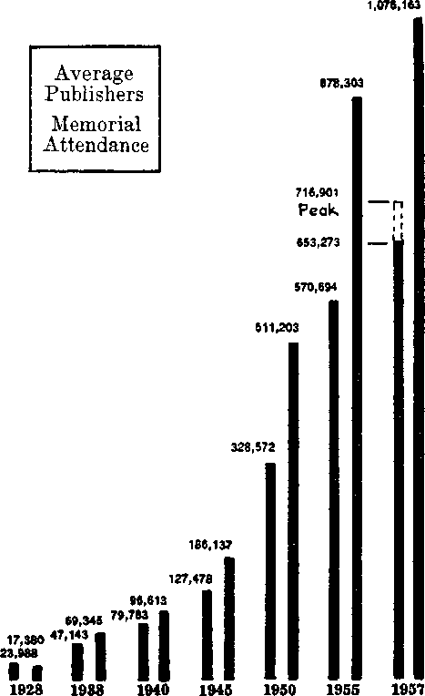

1958
1958 YEARBOOK of Jehovah’s Witnesses containing report for the service year of 1957 Also daily texts and comments
Corporate Publishers
WATCH TOWER BIBLE A. TRACT SOCIETY OF PENNSYLVANIA WATCHTOWER BIBLE AND TRACT SOCIETY OF NEW YORK, INC. INTERNATIONAL BIBLE STUDENTS ASSOCIATION 124 Columbia Heights Brooklyn 1, N.Y., U.S.A.
Branch offices appear on last page
Copyright, 1957, by Watch Tower Bible & Tract Society of Pennsylvania
Made In the United States of America
WATCH TOWER BIBLE & TRACT SOCIETY OF PENNSYLVANIA
OFFICERS
N. H. KNORR President
P. W. FRANZ Vice-President
GRANT SUITER Secretary-Treasurer
WATCHTOWER BIBLE AND TRACT SOCIETY OF NEW YORK, INC.
OFFICERS
N. H. KNORR President
F. W FRANZ Vice-President
GRANT SUITER Secretary-Treasurer
INTERNATIONAL BIBLE STUDENTS ASSOCIATION
OFFICERS
N. H. KNORR President
A. PRYCE HUGHES Vice-President
E. C. CHITTY Secretary
GRANT SUITER Ass’t Secretary-Treasurer
Page
Page
French Equatorial Africa . . 163
Page
Luxembourg ... . . 206
Netherlands New Guinea . 215
Netherlands West Indies . 216
Panama and Canal Zone . 233
Papua and Now Guinea .. 88
Portuguese East Africa . . . 231
Page
St. Martin, F.W.I. and N.W.I. 203
United States of America . . 67
Service year chart, page 40
1958 YEARBOOK of Jehovah’s Witnesses
DAVID, the upright king of ancient Israel, was a man with real confidence in his Creator, the God whom David called Jehovah. He appreciated that over the years of his life he had made many mistakes as a sinful, imperfect human, but he also knew that uppermost in his mind and heart was the doing of the will of his heavenly Life-giver. As the leading member of a nation dedicated to Jehovah God, David was concerned with the matter of integrity. “As for me,” said he, “in my integrity I shall walk.” (Ps. 26:11) This he faithfully endeavored to do, as an example to all the subjects over whom he reigned and also as a prophetic type for the true followers of the Greater David, Jesus Christ, the glorified king of God’s new world.
The 26th Psalm shows David presenting his integrity and offering himself to Jehovah’s searching. He had confidence that he had walked in the right way, living according to the commandments of God. Always anxious to do the right thing, David said to Jehovah: “Make me walk in your truth and teach me.” (Ps. 25:5) Feeling certain that he had walked in truth, he confidently stated: “Judge me, O Jehovah, for I myself have walked in my own integrity.” (Ps. 26:1) Reading the whole psalm, one sees David in his joyful worship of Jehovah contrasting himself with the wicked life of sinful men, with whom he did not want to be classed. David did not want to be judged by men’s standards of living. He knew what sort of man he was,
a lover of truth and of right things. He was honest and blameless. His one desire was to give Jehovah exclusive devotion. He knew what God’s standards were and he wanted to be judged by them. So he pleads: “Judge me according to your righteousness, O Jehovah my God, and may [opponents] not rejoice over me.” (Ps. 35:24) Such righteous judgment brought him happiness. He was content, satisfied. He had assurance that he was walking in integrity. Today is our confidence in our integrity as sure as David’s was?
When David was a young man he was chosen by Jehovah to be king. From the time of his anointing by the prophet Samuel he had special responsibilities. He took care of them, always seeking Jehovah. After many trials and hardships he was placed on the throne of Jehovah over the nation of Israel. One of his great joys was the bringing of the sacred ark of the covenant to the holy city of Jerusalem and establishing the place of worship of Jehovah there. On Mount Zion Jehovah’s altar was built and all Israel praised Jehovah there. Of this place he said: “O Jehovah, who will be a guest in your tent? Who will reside in your holy mountain? He who is walking faultlessly and practicing righteousness and speaking the truth in his heart.” (Ps. 15:1, 2) David wanted to measure up to those requirements and to be strong, not weak or unsteady. So he had to trust in God. “In Jehovah I have trusted, that I may not wobble.” (Ps. 26:1) David’s reliance and faith in Jehovah were unshakable, undisturbed, calm, and there was no wavering on his part, for he was walking as one should who ‘loved the dwelling of Jehovah’s house.’
Today true Christians, followers of Christ Jesus, believe in the same God of David and they too want to worship at “the place of the residence of [Jehovah’s] glory.” (Ps. 26:8) Christians have the same Word of God that David had, only more of it. Many prophets were sent to God’s chosen people after David’s death and their statements were written down in God’s Word for our admonition and learning. In addition to that we have the life of Christ and the Acts of the Apostles and the writings of the disciples, and now these many scriptures make up the complete Bible, the whole Word of God, for all mankind to follow. Thus equipped, Christians today should and could “practice righteousness and speak truth’’ and have confidence in their integrity toward Jehovah as David had! Studying and understanding God’s Word and living by it should assure one that he will not wobble.
But someone says: “Look about Christendom and you will see hundreds of millions of wobbling, unbelieving churchgoers attending Christendom’s churches. Can these who are on the roll books of the various churches say confidently: ‘Examine me, O Jehovah, and put me to the test; refine my kidneys and my heart’? What is wrong? Where today are the men of integrity that David foreshadowed?”
More such questions can be asked: Can Christendom stand to be examined? Can Jehovah find faith in her? Do the leaders of Christendom have as clear a conscience as David? Are they able to come to Jehovah in prayer and ask him to examine, test and refine them? Are they confident that they are living up to the standards that Jehovah has set out in his Word, the Holy Bible? Do they believe all its teachings? Can all the hundreds of millions of Christendom today who are taught by the clergy be just as confident in their integrity toward Jehovah God as David was? The answer to every query is No! But they should have the faith of David if they have made a dedication to do the will and the service of God. Christendom and its supporters claim faithfulness. They say they believe the Bible and they call themselves Christians—Christlike. Whether they ask for it or not, they are being examined before Jehovah God.
There is no backing up and running away from the judgment of Jehovah the Almighty God. Christendom has repudiated God’s Word by her own teachings. She has gone with this wicked world in its politics, because she supports them. She certainly is not for God’s kingdom, because Christendom gives full support to the United Nations organization. Christendom is not like Jesus, who told Pilate: “My kingdom is no part of this world. If my kingdom were part of this world, my attendants would have fought that I should not be delivered up to the Jews. But, as it is, my kingdom is not from this source.” (John 18:36) No, Christendom, upon examination, cannot be refined. She has no real, good, worthwhile material in her. She has compromised with this wicked old world, from which God’s kingdom could not come. Listen to what David wrote: “O Jehovah, you have searched through me and you know [me]. You have examined my heart, you have made inspection by night, you have refined me; you will discover [that] I have not schemed. My mouth will not transgress.” (Ps. 139:1; 17:3) Can Christendom say that? No!
Every professed Christian throughout the world should be able to say with David and Christ Jesus: “Do I not hate those who are intensely hating you, O Jehovah, and do I not feel a loathing for those revolting against you? With a complete hatred I do hate them. They have become to me real enemies. Search through me, O God, and know my heart. Examine me and know my disquieting thoughts, and see whether there is in me any way causing pain, and lead me in the way of time indefinite.” (Ps. 139:21-24) Lovers of righteousness, real Christians, want to live in a clean world with clean people. How can that be done today? By associating ourselves with men and women of integrity, the ones who are practicing righteousness and speaking the truth in their hearts.—Ps. 15:2.
Tests of integrity must come. Look at how Abraham, David’s forefather, was tested. “Now after these things it came about that God put Abraham to the test.” (Gen. 22:1) He was told to offer his own son Isaac in sacrifice. Because Abraham showed integrity and obeyed, Jehovah provided a lamb in place of Isaac. On a later occasion Jehovah tested his people, Israel, when he brought them through the wilderness: “And you must remember all the way that Jehovah your God made you travel these forty years in the wilderness, in order to humble you, to put you to the test so as to know what was in your heart, as to whether you would keep his commandments or not: . . . who fed you with manna in the wilderness, which your fathers had not known, in order to humble you and in order to put you to the test so as to do you good in your afterdays.” (Deut. 8:2,16) Testing is necessary, but integrity and endurance are happy rewards. How many of God’s dedicated people today will endure these wicked days and maintain integrity to the end? Those who stand faithful and maintain their integrity will be saved. Forty years, as in Israel’s case, is a long time to prove one’s love for Jehovah more than anything else. Could any of us as individuals stand a test that long? Many have done so, even in this day of Jehovah’s judgment. Meeting the test of integrity means life. Hence Abraham kept his living son. The Israelites went into the land flowing with milk and honey. You may live in God’s new world.
Are you willing to be refined as gold in a smelter and have the dross taken off so that there remains only pure gold? Some have gone through the processing and received a final “well done, good and faithful slave.” Others are still being refined, as Malachi said they would be: “And he will sit as a refiner and purifier of silver, and he will purify the sons of Levi, and refine them as gold and silver; and they shall offer unto Jehovah offerings in righteousness. Then shall the offering of Judah and Jerusalem be. pleasant unto Jehovah, as in the days of old, and as in ancient years.” (Mal. 3:3, 4, AS) Thousands upon thousands of Jehovah’s witnesses have gone through a refining such as David mentioned and Malachi described, a real refining by scorching heat. Can you take the heat like those suffering persecution under the communistic totalitarian rule in Russia, Poland, Czechoslovakia and elsewhere behind the Iron Curtain? Look at Jehovah’s witnesses in the Catholic-ruled Dominican Republic who have been beaten and tortured and thrown into prison because of preaching God’s kingdom and taking their stand as Jehovah’s witnesses. Others have maintained and are still maintaining their integrity in Germany, Italy, Norway and other countries that were overrun by the crushing hordes of Nazi and Fascist lords. It is not easy to be a real Christian, no matter where one lives in this world. Enemy efforts to break our integrity can be brought to bear in many ways.
Long ago David invited his Father to examine him, to test him, to refine him. Today is our confidence in our own uprightness, our own integrity, that firm? It should be if we see matters like David and we are walking in the footsteps of Christ Jesus. Then we would say: “For your loving-kindness is in front of my eyes, and I have walked in your truth.” (Ps. 26:3) When one gets to appreciate the works of Jehovah God, the purposes he has in mind, what he has done, is doing and will do for the blessing of all those who love him, then one can truly appreciate His loving-kindness. Look how loving he has been in sending his only-begotten Son, Christ Jesus, from heaven to earth to redeem mankind. But Jesus Christ did more. He vindicated Jehovah’s name by maintaining his integrity and he was made King of the new world of righteousness. You can live in that new world if you want to. How? By getting acquainted with the Bible, reading its truths carefully and living by them. That is necessary in order to get life in the kingdom of God that millions of Christendom have prayed for: “Let your kingdom come. Let your will come to pass, as in heaven, also upon earth.” (Matt. 6:10) Keep Jehovah’s kingdom in front of your eyes and walk in the truth and you will enjoy life in God’s new world.
Preach and teach the good news of the Kingdom whenever and wherever you can. Associate with those persons who are doing that. Then you will stay away from the wicked people because you are busy maintaining your integrity. All who learn the truth and take a right path, dedicating their lives to Jehovah’s service thereafter, do as David said he did: “For I have not sat with men of untruth, and with those who conceal what they are I do not come in. I have hated the congregation of evildoers, and with the wicked ones I do not sit. I shall wash my hands in innocency itself, and I will march around your altar, O Jehovah.” —Ps. 26:4-6.
Christians of integrity have set their course. They will not sit with men of untruth. They will not have prolonged discussions with men of this world except to preach the Kingdom. The interests of this world have not become the interests of Jehovah’s witnesses. They have a bigger and more important work to do. Those who sit in the counsel of wicked men and support their schemes always end up in ruin and misery. “Happy is the man that has not walked in the counsel of the wicked ones, and in the way of sinners has not stood and in the seat of ridiculers has not sat. But his delight is in the law of Jehovah, and in his law he reads in an undertone day and night.” (Ps. 1:1, 2) Have you likewise set your course? Which way will you walk? Let it be one of integrity.
Do you know that the leading scholars of Christendom today have removed the name of God from Bible translations? Hiding the true name of Jehovah from the people is trying to remove true worship. Many clergymen today stand in their church pulpits and deny the Genesis account of creation. They would rather teach the people evolution. Some even deny the value of Christ Jesus’ sacrifice and say it has no redeeming value. They love to have an appearance of holiness and to get the praises of men, but they do not want to march around the altar of Jehovah. Jesus described them in these words: “You are from your father the Devil and you wish to do the desires of your father. ... he is a liar and the father of the lie.” (John 8:44) David knew men of this type and he well said: “Untruth they keep speaking one to the other; with a smooth lip they keep speaking even with a double heart. Jehovah will cut off all smooth lips, the tongue speaking great things, those who have said: ‘With our tongue we shall prevail. Our lips are with us. Who will be a master to us?’ ” (Ps. 12:2-4) They are proud of what they are doing, hiding the name of Jehovah. But what a recompense they will receive!
The majority of the clergy and their followers have taken the name of Jehovah in a worthless way or discarded it altogether. It makes one wonder what suchlike translators of the Bible thought when they came to the text at Exodus 20:7: “You must not take up the name of Jehovah your God in a worthless way, for Jehovah will not leave the one unpunished who takes up his name in a worthless way.” The clergy will not be left unpunished. With them in view the psalmist prayed: “Fill their faces with dishonor, that people may search for your name, O Jehovah.”—Ps. 83:16.
For true Christians to have integrity like David they certainly cannot associate with Christendom or with this system of things and be friends of this world. James, the disciple of Jesus, said: “Adulteresses, do you not know that the friendship with the world is enmity with God? Whoever, therefore, wants to be a friend of the world is constituting himself an enemy of God.” (Jas. 4:4) That is one reason why it is so clearly stated: “Get out of her, my people, if you do not want to share with her in her sins, and if you do not want to receive part of her plagues.” (Rev. 18:4) Christendom is hypocritical and is trying to cover over what she really is, the same as did the religious leaders of Jesus’ day: “Woe to you, scribes and Pharisees, hypocrites! because you cleanse the outside of the cup and of the dish, but inside they are full of plunder and immoderateness. Blind Pharisee, cleanse first the inside of the cup and of the dish, that the outside of it also may become clean. Woe to you, scribes and Pharisees, hypocrites! because you resemble whitewashed graves, which outwardly indeed appear beautiful but inside are full of dead men’s bones and of every kind of uncleanness. In that way you also, outwardly indeed, appear righteous to men, but inside you are full of hypocrisy and lawlessness.” (Matt. 23:25-28) They tried to hide their true identity. The leaders of Christendom do the same today. Avoid them.
Be like the psalmist in saying: “Do not draw me along with wicked people and with practicers of what is hurtful, those who are speaking peace with their companions but in whose hearts is what is bad.” (Ps. 28:3) The attitude of a true Christian must be: “I have hated the congregation of evildoers.”—Ps. 26:5.
King David wanted clean hands and innocency before Jehovah so that he could worship before Jehovah’s altar. In his expression: “I shall wash my hands in innocency itself, and I will march around your altar, O Jehovah,” he must have had in mind the copper basin that was set near the altar that was used by the priests for washing their hands and feet. Concerning them God’s law said: “When they go into the tent of meeting they will wash with water that they may not die, or when they go near the altar to minister in order to make an offering made by fire smoke to Jehovah. And they must wash their hands and their feet that they may not die, and it must serve as a regulation to time indefinite for them, for him and his offspring throughout their generations.” (Ex. 30:19-21) David, however, wanted to have hands morally clean, cleansed by God’s truth.
Today anyone that comes to the place of worship, pictured by Jehovah’s altar, must be clean. He cannot be contaminated with old-world living and its sordid activity. What Jehovah’s priests did back there true Christians must do in reality now. Speaking to the Hebrew Christians about cleanness, Paul said: “Let us approach with sincere hearts in the full assurance of faith, having had our hearts sprinkled from a wicked conscience and our bodies washed with clean water. Let us hold fast the public declaration of our hope without wavering, for he is faithful that promised. And let us consider one another to incite to love and right works, not forsaking the gathering of ourselves together, as some have the custom, but encouraging one another, and all the more so as you behold the day drawing near.” (Heb. 10:22-25) Christians must assemble in these last days, but must always be clean in their worship, which includes their lifelong and daily activities.
Worship by Jehovah’s witnesses is not confined to meeting together and inciting one another to love and right works just once a week. All day long and every day they must be worshipers of God, whether they be in meetings or away from their Kingdom Hall. After becoming a Christian one must keep clean, as he has already been washed clean by the blood of Christ Jesus. Christ is not going to die a second time to give one a second washing. Many who become Christians have walked with the wicked in fornication, idolatry, greed and drunkenness, but as Paul said to the Corinthian congregation: “But you have been washed clean, but you have been sanctified, but you have been declared righteous in the name of our Lord Jesus Christ and with the spirit of our God.” (1 Cor. 6:11) Like David we must wash our hands in innocency, show everyone that we are clean and separate from the Devil’s organization and devoted to true worship. We are in the world but are no part of it, and we cannot have upon us the stain of its guilt. Even Pilate did not want the responsibility of the death of Christ Jesus upon him. Before the great crowd of angry Jews Pilate laid all the guilt on the clergy of his day by taking water and washing his hands before the lovers of unrighteousness, saying: “I am innocent of the blood of this man. You must see to it.” (Matt. 27:24) But he really could not wash his hands in innocency like David.
Christendom too must take the whole load of responsibility for defiling Jehovah’s worship through their wicked and unclean lives. But as for Jehovah’s witnesses, they will wash their hands and stand alone as true Christians separate from every branch of Christendom. They must take this stand to be acceptable for true worship of Jehovah. Our separation from the false worshipers makes it possible “to cause thanksgiving to be heard aloud, and to declare all your wonderful works. Jehovah, I have loved the dwelling of your house and the place of the residence of your glory.” (Ps. 26:7, 8) With thanksgiving in their hearts Jehovah’s witnesses thrill to make known the wonderful works of Jehovah from the creation of man in the garden of Eden to the restoration of all humankind in the paradise earth. As Christ Jesus stood alone, separate from all religions, in declaring that the kingdom of the heavens is at hand, so Jehovah’s witnesses today are all alone in their announcement of God’s kingdom. They are telling the world that we are living in the last days of this wicked organization and there is about to begin a new government that will rule in righteousness. To let all persons of good will know the good news it takes a great deal of preaching in the homes of the people, and teaching too, using the householder’s own Bible. Why not study with them and ‘cause their thanksgiving to be heard aloud’?
David said: “Do not take away my soul along with sinners, nor my life along with bloodguilty men, in whose hands there is loose conduct and whose right hand is full of bribery.” (Ps. 26:9,10) A student of the Scriptures can clearly see that Jehovah is going to destroy the wicked. He did it before in the catastrophe of Noah’s day when he destroyed all the depraved ones by the flood because of their sinfulness. He wiped out those in Sodom and Gomorrah. God condemned in judgment the scribes and Pharisees of Jesus’ day because they were bloodguilty men. Judas was condemned to Gehenna because his right hand was full of bribery. Later Ananias was struck dead because of lying, and Jude wrote of “ungodly men, turning the undeserved kindness of our God into an excuse for loose conduct.” (Jude 4) Today the sacredness of life is no longer held in high esteem by most of the peoples or their rulers. While the clergy and the politicians backed up by big business cry, Peace, peace! they prepare for war on an even greater scale. Destruction of mankind is their theme of the day. To have anything to do with such a system of things is not wise, for “he that is having dealings with the stupid ones will fare badly.” (Prov. 13:20) The end of such bloodguilty, loose-living, bribe-loving men will be destruction at the battle of Armageddon!
On the other hand, those confident in their uprightness are like David and true dedicated followers of Christ Jesus. They can say: “As for me, in my integrity I shall walk. O redeem me and show me favor.” (Ps. 26:11) This is like saying, Deliver me from the wicked and show me favor. Through Moses God delivered the children of Israel, or redeemed them from Egypt, leading them to the Promised Land. Jehovah gave mankind the Greater Moses, Christ Jesus, the Redeemer of all mankind, if they accept him as Jehovah’s gift for their redemption. When we see the miracles that Christ performed while on earth it makes us think of the fuller complete life men will enjoy under the Kingdom arrangements. If on earth he healed the sick, opened blind eyes, even raised the dead, surely with all power in heaven and earth he can build a perfect new world of righteousness according to his Father’s will.
The great miracle of deliverance will be performed at the battle of Armageddon, when Jehovah will destroy completely the wicked system of things and at the same time keep alive men of integrity, whom he will remember for their acts of loving-kindness. God’s servants of integrity today feel just like Nehemiah, because we are living in the time of the purifying of God’s people. Nehemiah said: “Do remember me, O my God, concerning this, and do not blot out my acts of loving-kindness that I have performed in connection with the house of my God and the guardianship of it.” —Neh. 13:14.
All the true servants of God want to continue in right worship and maintain integrity and be redeemed or delivered through the battle of Armageddon. They want to see the time come when there will be no more discord, wars, selfishness, corruption and when everyone will be praising Jehovah God and blessing him. That will be seen in completion after the battle of the great day of God the Almighty—Armageddon. By faith all true Christians look to and work for that happy day, but they start living by the standards of that day now.
All men are traveling in a rough world among nations who hate one another, all of them truly nationalistic, thinking that their individual nation is better than any other. Some even think theirs is the only one having the right to existence and are therefore anxious to destroy others. Why cannot man see that color of skin, language of tongue or stature of body does not make him any different from his neighbor? We all have one Maker, we are all brothers, descendants of Adam and Eve, and destined to worship only one God. We must find him! We can if we read about him in his Word, the Bible. Jehovah’s witnesses are sincerely trying to acquaint people with Jehovah, and if they can do so it will mean for those getting to know God a happy and new life in a new world not far distant.
The time is now here when integrity-keeping men and women stand upon a “level place,” an open plain, where there is no more fear of stumbling and where true worship can be carried on. So in real happiness with all of God’s people they can say as did David: “My own foot will certainly stand on a level place; among the congregated throngs I shall bless Jehovah.”—Ps. 26:12.
In this frame of mind Jehovah’s witnesses today, being scattered throughout 164 different nations, lands and islands of the sea, with more than 700,000 proclaimers of good news, stand on level ground looking forward to the final destruction of this wicked system of things and the complete establishment of God’s new world of righteousness. Until that day arrives they will stand on a level place among the congregated throngs and bless Jehovah. Whatever troubles and persecutions may come from the evildoers they will continue to say: “As for me, in my integrity I shall walk.” (Ps. 26:11) Not only will they preach as they walk from house to house, even to the ends of the earth, but, when invited into the homes of the people, there they will teach them the truth, for their desire is to gather out from all nations all the sheep who love righteousness so that they too may join in praising Jehovah God in the congregated throngs. These too must gain confidence in their uprightness. Will you be one of these praisers of Jehovah walking in your integrity during 1958?
Usually when individuals have good news that has brought them real comfort and joy of heart they want to tell others what they know. Jehovah’s witnesses have turned to God’s Word, studied it carefully, and find it filled with good news. The more they study the sixty-six books of the Bible, the Word of God from Genesis to Revelation, this good news becomes clearer and delights their souls. When a Christian has the opportunity to talk with another person about the good things of God’s kingdom it brings him real pleasure. He does not need to fight, says the apostle Paul, to make the person understand. Rather, one must be tactful and careful in one’s expressions. The instructor will try to teach his hearer new things. That is why Paul, when writing to Timothy, said: “But a slave of the Lord does not need to fight, but needs to be tactful toward all, qualified to teach.” —2 Tim. 2:24.
Private teaching is the big work of Jehovah’s witnesses in these last days of the Devil’s organization. While for forty years since 1918 Jehovah’s witnesses have been preaching the good news of God’s kingdom, today they find an ever-greater responsibility falling upon them, and that is teaching the people concerning God’s kingdom. In years gone by it was the opinion that all that was needed was to say a few words concerning the Kingdom, to tell people about the battle of Armageddon, and then they had the witness. But people today have been so steeped in ignorance and darkness concerning God’s Word that it is necessary to do more than just remind people of what is in the Bible. It is necessary to go into their homes when invited, use their Bible and actually show them what is in it and where to find the truths concerning the kingdom of God, the only hope for mankind. Jehovah’s witnesses have good reasons for being so energetic today in their preaching and teaching the people. They have scriptures to back them up in going from house to house. (See Acts 5:42 and 20:20.) There is also the scripture, found at Psalm 96:2, telling us to be at it daily: “From day to day tell the good news of salvation by him.” It certainly is good news, the knowledge of God’s kingdom under which healthful living and paradise will be the blessing of every individual on earth.
With such a message Jehovah’s witnesses want to go from house to house every day or as often every week as they can, to speak about the salvation that Jehovah God has provided for mankind. While David had in mind preaching to his fellow man in his day, Jesus accentuated it when he was upon the earth. He was very specific in telling his disciples what to do. In the twenty-fourth chapter of Matthew it is recorded that the disciples came to Jesus and asked him what the sign of the end of this world would be. They were very much interested in this matter. So when he was sitting on the side of the Mount of Olives just outside Jerusalem four disciples approached Jesus privately and said: “Tell us, When will these things be, and what will be the sign of your presence and of the consummation of the system of things?”—Matt. 24:3. So Jesus went into detail explaining to them what kind of conditions would be existing in the earth at the time of the end when this system of things would consummate, and what things they would see, so that they could be sure of his invisible second presence. Among the many things, such as wars and pestilences and famines, delinquency among the people and the bringing forth of a league among nations, he stated that a very outstanding thing would be noticeable, not only to his own people but to all the world. It was this: “And this good news of the kingdom will be preached in all the inhabited earth for the purpose of a witness to all the nations, and then the accomplished end will come.” (Matt. 24:14) Today it cannot be denied that Jehovah’s witnesses, a Christian organization, have been more active than any other religious organization in preaching the good news of God’s kingdom. In face of the facts we are bold enough to say that Jehovah’s witnesses are the only ones that proclaim the kingdom of God as the only hope for mankind and that all the efforts of mankind today through their political organizations, with their religious backing and commercial support, will be a failure. We hold that world-wide it must be proclaimed that God’s kingdom is the only thing that will bless mankind. When this preaching work has been accomplished, said Jesus, the end of this system of things will come.
Just before Jesus ascended into the heavens he was very specific in giving command to his disciples, and he told them: “Go therefore and make disciples of people of all the nations, baptizing them in the name of the Father and of the Son and of the holy spirit, teaching them to observe all the things I have commanded you. And, look! I am with you all the days until the consummation of the system of things.” (Matt. 28:19, 20) Certainly Christ Jesus is with his people now in seeing to it that this good news of the Kingdom is preached and that the discipling work is going on in a teaching manner in all parts of the earth. People are being taught, not only preached to concerning the Kingdom, but studies are arranged in the homes of the people and they are taught God’s Word. Paul informed Timothy: ‘You must be qualified to teach.’ So Jehovah’s witnesses must equip themselves to do the same. Each individual Christian is going to be a teacher as soon as he can and therefore must be well versed in the Scriptures. His own integrity must be established through good works, study and service, and he must sometime be able to say as did David: “Judge me, O Jehovah, for I myself have walked in my own integrity.”
Proved must be the integrity of each one of Jehovah’s witnesses today. Individually each one is responsible to Jehovah God and to his earthly organization to get this preaching and teaching work done before the final end comes. It has been said that Jehovah’s witnesses are the fastestgrowing religious organization today. If so, why is it? Certainly it is not because they are trying to be the fastest-growing religious organization. But if it is true, then, it is because they have a responsibility on their shoulders and accept it, that is, to gather together all the sheep of God’s flock. Those who love truth and righteousness and who do not want their lives taken away along with bloodguilty men, nor want to associate with those of loose conduct, are going to look for Jehovah’s true people. These people that are sighing and crying because of the world’s abominations are the ones that Jehovah’s witnesses are trying hard to find. In order to find them they must go from door to door, and they do this time and time again, year in and year out. Probably Jehovah’s witnesses have called at your door often, unless you are in an isolated place where landlords or hotel owners will not allow Jehovah’s witnesses to enter. But if they can reach your home and are welcome they will talk to you; and be assured that they will be happy to do so.
Jehovah’s witnesses feel the responsibility that David felt, that of maintaining integrity and taking a definite stand for righteousness as against evil and having no association with this old system of things that brings degradation upon mankind. Having the Bible in hand and being well acquainted with it, they feel themselves equipped to teach and therefore they go into people’s homes and try to teach them Bible knowledge. At the same time they themselves keep studying in congregational meetings to be better qualified to teach. They remember that their leader, Jesus Christ, was the greatest teacher that ever lived upon the earth. He was able to inculcate in the minds of his followers the truth, and they were so convinced of what they heard that they believed him because what he said was backed up by Scripture. They became his disciples.
Followers of Christ Jesus must be his sincere pupils and anxious to know what their teacher has to say. A pupil must be interested in and love his instructor in order to grasp the ideas of his teacher. If the instructor has the opportunity of being with a devoted pupil long enough, his student will soon be like his instructor and will talk and live like him. That is exactly what happened with the disciples of Christ Jesus. When he said to them, ‘Come to me, all you who are toiling and loaded down, and I will refresh you. Get under my yoke with me and become my learners,’ he meant that he would take the time to explain to them all the difficulties and problems of life and he would help them overcome the world, even as he had overcome the world. (Matt. 11:28) Integrity-keepers are few, but there have always been some true witnesses of Jehovah on earth. If you give Jehovah’s witnesses the opportunity of coming into your home and letting them talk and study with you, using your own Bible, Catholic or Protestant or Jewish, or any translation in any language, you will find the Bible has the answers to your problems, to all problems of mankind.
However, you will not understand everything in ten minutes. But do not give up. Take time and study with Jehovah’s witnesses and at least get the knowledge even if you do not agree right away with the counsel. Your attitude should be like David’s: “Make me know your own ways, O Jehovah; teach me your own paths. Make me walk in your truth and teach me, for you are my God of salvation.” (Ps. 25:4, 5) Give Jehovah’s witnesses the opportunity of coming to your home once a week to study with you for an hour or an hour and a half and at a time convenient to you. Get right down to Bible study, look up the scriptures under consideration and you will be amazed at what you will learn in a period of only six months’ time; and it is free too. If none of Jehovah’s witnesses have ever studied with you or if they have and have discontinued studying and you want to start again, just write a card to Watchtower, 117 Adams Street, Brooklyn 1, New York, and say, “I want a Bible study,” and someone will call soon to help you in your study of Jehovah’s Word. Be sure to give us your name and address and we will find you. Hundreds of thousands of persons who have had Bible studies with Jehovah’s witnesses in their own homes have learned the truth and are now followers of Christ Jesus, carrying on true worship of Jehovah God.
When Jesus walked the earth and began to teach what many people said was a new doctrine, it was not new. He was bringing to them a summary of the Law. It was, Love God—love your neighbor. He was showing them the way to eternal life. He was opening up a way for all people, for all nations, for all kindreds and tongues. No longer was the truth of God’s Word or his laws being confined to just the nation of Israel, but the opportunity was soon to be given to everyone. Jesus did not come to destroy the Law, but he came to fulfill it and to show its value to all people. Jesus fully appreciated God’s Word and lived by it, and it was he who said: “Whoever, therefore, breaks one of these least commandments and teaches mankind to that effect, he will be called ‘least’ in relation to the kingdom of the heavens. As for anyone who does them and teaches them, this one will be called ‘great’ in relation to the kingdom of the heavens. For I say to you that if your righteousness does not abound more than that of the scribes and Pharisees, you will by no means enter into the kingdom of the heavens.”—Matt. 5:19, 20.
In Jesus’ training of his disciples he taught them to keep the commandments of Jehovah and to live by them. As he observed the lives and teachings of the scribes and Pharisees he saw they were putting forth traditions of their own and of other men rather than the teachings of God’s Word, which Jehovah had given them in writing through the prophets he sent in olden times. The same is true concerning Christendom today. The religious clergy of Christendom are not teaching the people the Bible. They have their own traditions, their own ideas, and practically every clergyman will point to the United Nations as the only hope for mankind rather than to God’s kingdom. In this one thing alone they have turned mankind away from God’s Word and they have repudiated Jehovah and his Son and his kingdom, and therefore they should no longer declare themselves as Christians or ministers of God’s Word. They “will by no means enter into the kingdom of the heavens.’’
Christendom has watered down the truth of the Bible so much that it is difficult for individuals who claim to be Christians to understand what is truth. Jesus said: “For this purpose I have been born and for this purpose I have come into the world, that I should bear witness to the truth.” (John 18:37) So, then, go back to the Bible and find truth. It is so necessary for each individual to turn to the Word of God itself and to see what it says, rather than to listen to the traditions of men. Get to the original source of Christian teaching. Why not take the good advice Paul, a good minister and follower of Christ, gave to the congregation of Ephesus? He said: “This, therefore, I say and bear witness to in the Lord, that you no longer go on walking just as the nations also walk in the unprofitableness of their minds, while they are in darkness mentally, and alienated from the life that belongs to God, because of the ignorance that is in them, because of the insensibility of their hearts. Having come to be past all moral sense, they gave themselves over to loose conduct to work uncleanness of every kind with greediness.”—Eph. 4:17-19.
Jesus was a wonderful instructor, and he taught his disciples how to carry on the teaching work. First, always use the Scriptures; and in that way one will teach them about Jehovah, the true God. If an individual is going to gain everlasting life he must learn about the Creator of life, the Father, and his teachings. His teachings are set forth in his own Word, the Bible, which Jehovah had written and preserved to our very day for our admonition and learning. Jesus said: “No man can come to me unless the Father, who sent me, draws him, and I will resurrect him in the last day. It is written in the Prophets, 'And they will all be taught by Jehovah.’ Everyone that has heard the Father’s teaching and has learned comes to me.” (John 6:44, 45) We see, then, how necessary it is to learn or hear what Jehovah first has to say, and if we are ever going to hear what Jehovah has to say we must read his Word and study it. When one learns of the teachings of Jehovah God it will naturally lead one to Christ Jesus, and because of one’s learning from the Bible it will point one to Christ Jesus as the only redeemer of mankind who is able to give life through the merit of his sacrifice. He will “resurrect [the believer] at the last day.”—John 6:54.
Paul realized that some persons who took up the Christian ministry would afterward try to turn their followers away from the true worship of the true God, Jehovah. That is why Paul advised: “But turn down the false stories which violate what is holy and which old women tell. On the other hand, be training yourself with godly devotion as your aim. For bodily training is beneficial for a little, but godly devotion is beneficial for all things, as it holds promise of the life now and that which is to come. Trustworthy and deserving of full acceptance is that statement. For to this end we are working hard and exerting ourselves, because we have rested our hope on a living God, who is a Savior of all kinds of men, especially of faithful ones. Keep on giving these commands and teaching them.”—1 Tim. 4:7-11.
The only way that one can train himself with godly devotion as his aim is by studying God’s Word. When one reads the Bible and carefully studies it with someone who is trained in the study of the Bible he will find that what he has read is trustworthy and deserving of full acceptance. Jehovah’s witnesses do work hard and they exert themselves, to the end that they will keep the hope and also establish this hope and faith in the lives of others. Jehovah’s witnesses studying in the homes with people will stick to the commandments of God and teach these, even though Bible truth conflicts with men’s personal ideas. Sometimes the righteous laws of God are disturbing to individual students and they throw the study overboard. They will have nothing to do with it because it means such a tremendous change in their lives. But we cannot compromise with them and continue to remain qualified to teach with confidence.
“What partnership do righteousness and lawlessness have? Or what fellowship does light have with darkness? Further, what harmony is there between Christ and Belial? Or what portion does a faithful person have with an unbeliever? And what agreement does God’s temple have with idols? For we are the temple of the living God; just as God said: ‘I shall reside among them and walk among them, and I shall be their God, and they will be my people.’ * “Therefore get out from among them, and separate yourselves,” says Jehovah, “and quit touching the unclean thing,” ’ ‘ “and I will take you in.” ’ ‘ “And I shall be a father to you, and you will be sons and daughters to me,” says Jehovah the Almighty.’ ” (2 Cor. 6:14-18) Those who are going to be taught by Jehovah are the ones he will take in and he will be a Father to them and they will gain everlasting life. There is no other way of gaining it. The quicker an individual turns to the Word of God, reads it, studies it and becomes a disciple the sooner he is going to have comfort, joy and blessings and training in godly devotion. And as Paul said to Timothy: “It holds promise of the life now and that which is to come.”
While millions of the people today still ought to be taught the truth in God’s Word, there are not enough qualified ministers to teach them. Many of Jehovah’s witnesses are themselves new in the truth and as yet have not taken upon themselves the responsibility of teaching others. They are preaching from house to house, but they have not assumed the duties of a teacher. How long must one wait to be a teacher? That is not hard to decide. Paul indicates that as soon as one knows the fundamental teachings of God’s Word, then he should begin teaching at least these truths to others. As he matures he can help others in advanced study, but before then he could be a teacher. If the other person he meets in the field while witnessing knows nothing or only a little of God’s Word, the new Kingdom publisher could at least teach his pupil as much as he knows by using the Bible as his textbook.
Paul was sharp in his speech to those who knew and just did not bother about telling others what they knew. He said: “Although you ought to be teachers in view of the time, you again need someone to teach you from the beginning the first principles of the sacred pronouncements of God.” (Heb. 5:12) How long have you claimed to be one of Jehovah’s witnesses, or a Christian for that matter? Any individual who professes to be a Christian should be a teacher by this time if he is mature in years and has grown up in Christian teaching. Christians cannot shirk their responsibility by saying, *My minister does my Bible study for me.’ Paul is not talking to the overseers of congregations, such as the clergy of Christendom claim to be. He is talking to everyone professing to be a Christian. What are you doing about teaching others in God’s Word? Paul says: “You ought to be teachers in view of the time.” You have been going to the congregation of God long enough to know what the truth is. Why, then, are you not teaching it to others? So what applies to Jehovah’s witnesses applies also to all of Christendom, in that they should preach and teach this good news of God’s kingdom. Now are you going on to maturity by studying with God’s congregation, and are you then going weekly to others not in your congregation and studying with them the things you have learned?
In many parts of the world great persecution is brought to bear against Jehovah’s witnesses because they are preaching and teaching the good news, but this will not slow them down. In his day Peter too was very energetic in declaring the good news of God’s kingdom. For healing those who were sick and preaching he was thrown into prison. The religionists of that day, the Sanhedrin, were very much opposed to the apostles’ teaching people about Christ Jesus. For their constructive work in educating the people in the Bible the religionists “called them and charged them in general not to make any utterance nor to teach upon the basis of the name of Jesus.” (Acts 4:18) However, the apostles did not stop preaching because some men directed them to do so. When this body of rulers threw the apostles into prison, the record at Acts 5:20 shows, the prison doors were opened by Jehovah’s angel and he said: “Be on your way and take a position in the temple and keep on speaking to the people all the sayings about this life.” That command of Jehovah’s angel to the early apostles is still part of God’s Word and applies to Christians just as much today. The sayings about this life and the life to come must still be proclaimed to the ends of the earth. Back there the religionists did not want it proclaimed, because it interfered with the business of the religionists. There were too many persons turning away from the decaying established religion and following this new truthful religion of Christ Jesus.
After the apostles were found missing from prison they were reported as being “in the temple standing and teaching the people.” They were immediately hurried to the Sanhedrin. The Bible account tells us: “So they brought them and stood them in the Sanhedrin hall. And the high priest questioned them and said: ‘We positively charged you not to keep teaching upon the basis of this name, and yet, look! you have filled Jerusalem with your teaching, and you are determined to bring the blood of this man upon us.’ In answer Peter and the other apostles said: ‘We must obey God as ruler rather than men.’ ” (Acts 5:27-29) The apostles were not afraid of the rulers. Their command from God was to teach and to preach. They were like Jesus, whom David foreshadowed; David said: “As for me, in my integrity I shall walk.” (Ps. 26:11) They were marvelous teachers of faithfulness by word and example. Christ Jesus was their example, and they were not faltering but continued turning the minds and hearts of the people away from the old, staid religion of hypocrisy to the words of truth and life, to a religion that showed them that the kingdom of God was the only hope for mankind.
The same thing is happening today as in the days of the apostles. The rulers of the Dominican Republic, under the guidance of the Catholic priests, have beaten and thrown Jehovah’s witnesses into prison because they preach the good news of the Kingdom. In Poland and other countries behind the Iron Curtain the rulers say the truth may not be proclaimed because it interferes with the doctrine of communism. However, this does not stop Jehovah’s witnesses from preaching in the same manner that the apostles preached in their day. They go underground if necessary and continue their preaching and teaching work. They obey God rather than men! Even in countries where the witnesses of Jehovah have the opportunity to preach freely, opposition often comes against their work because of the religious leaders. If these wicked men want to interfere with the
proclaiming of Jehovah’s truth, let them also receive Jehovah’s judgment.
A true Christian, however, will follow the Word of God and not be silenced but prove himself qualified to teach. He will continue to go to the meetings among the congregated throngs of God and there learn and study diligently so that he will be better qualified to present the truth with confidence to other people. He knows that he must walk in the footsteps of Christ Jesus and preach and teach. He must be faithful to the Word of God and he must follow out Jehovah’s commandments. He must equip himself for every good work and be qualified to teach. He must be earnest about the proclamation of the Kingdom, as were the early disciples, and so prove his own integrity.
There is no difference between the way of Kingdom preaching carried on by the apostles in their day and the way Jehovah’s witnesses carry on their work today. It is not by big revivals, by construction of great church buildings, by powerful religious groups influencing politicians, by combining different religious denominations into one, that a nation is made a Christian nation. This does not help the people to get an understanding of Jehovah’s purposes. Rather, it is the going from house to house, finding those sighing and crying because of the abominations and teaching them the truth that will make persons change their thinking about religion. By a true Christian’s going into the home of a stranger and comforting him with the Word of God he will be effective in changing that person’s way of life. Not combined force, but the truth will do it. Remember: "A slave of the Lord does not need to fight, but needs to be tactful toward all, qualified to teach, keeping himself restrained under evil, instructing with mildness those not favorably disposed.”—2 Tim. 2: 24, 25.
At times, in years gone by, a nation has risen up in battle against another nation, carrying on a religious war, trying to make people change their religion. Inquisitions were carried on by religionists in different parts of the earth to make people believe like those in authority. Religionists have tried to force Indians and others with different faiths into the faith of the persecutors. Paul never used those methods, and neither did Christ Jesus have that in mind. Early Christians used the simple method of teaching the truth, sitting down with people and tactfully, patiently, quietly and humbly telling them what God’s Word has to say. Even those under evil influence can be taught the truth if they are instructed in mildness. Even those not favorably disposed toward the Bible, if approached tactfully, will listen to a minister of God.
So Jehovah’s witnesses today will try to continue to preach this good news in all the world for a witness until the end comes, and during all this period of time they too will be able to say: “Judge me, O Jehovah, for I myself have walked in my own integrity.” Why not study God’s Word with them and apply the knowledge you can get from the Bible and thus be with wise persons and become wise yourself? In that case you will surely know that he who is having dealings with stupid ones will fare badly, but that wisdom is a tree of life to those who find it. Do you love life and want to live in God’s new world of righteousness under the kingdom of heaven? Then “stand on a level place among the congregated throngs” and bless Jehovah. Then you will always be determined to say: “As for me, in my integrity I shall walk.”
There are not too many people in the world today that will stand for right principles and even suffer for them. Jehovah loves those who will. He is very much interested in men and women who will walk in their own integrity and who will endure even to death for righteousness. Peter appreciated this fact and wrote: “For what merit is there in it if, when you are sinning and being struck blows, you endure it? But if, when you are doing good and you suffer, you endure it, this is a thing agreeable with God. In fact, to this course you were called, because even Christ suffered for you, leaving you a model for you to follow his steps closely.” (1 Pet. 2:20, 21) That is something to think about, for no individual has ever endured as much pain, suffering, ignominy and shame as the perfect Jesus went through for the vindication of Jehovah’s name. This was a “thing agreeable with God.” Then there is Job in his sufferings. It was written of him by James: “Look! we pronounce happy those who have endured. You have heard of the endurance of Job and have seen the outcome Jehovah gave, that Jehovah is very tender in affection and compassionate.” (Jas. 5:11) Why is this suffering allowed, and for what reason do we endure? The answer is integrity.
Will one worship Jehovah because he loves Him, or because he must? Because he gets happiness, or because it brings him a reward? Well, look at Job. He had everything, lost it all, and still loved Jehovah and did not sin against God. He wanted to prove his integrity because he loved the Sovereign Ruler of the universe. Then we have Christ Jesus, who gave up all his heavenly glory and took the form of a man. Why? Because he loved his Father. Was it to get a greater reward? No, but “to do your will, O my God, I have delighted.” (Ps. 40:8) Because Christ Jesus loved his Father, was happy in His service and proved faithful under trial and suffering, he received all power in heaven and on earth and now sits at the right hand of Jehovah, the Sovereign Ruler of the universe. Yes, he endured under the test and it helped him prove his integrity.
Just as Job and Jesus did, so do Christians. It is right to give Jehovah true worship. It is right to follow his commandments. It is right to endure the sufferings that come from the Devil’s organization and his worldly governments for speaking the truth. Because one walks in his own integrity and lives by right principles he is happy. Many times one endures physical torture, isolation in concentration camps, withdrawal of his freedom of speech, but yet he holds to right principles to preach the good news of God’s kingdom when and wherever he can do so, and he is pronounced happy. He is happy! The lives of Jehovah’s witnesses over the past six thousand years prove this to be true. The experiences of Jehovah’s witnesses in communistic countries in 1957 prove this to be true. The record in the 1958 Yearbook of Jehovah’s Witnesses proves this statement to be true. The experiences show that endurance certainly helps one to prove one’s integrity.
When one studies the 1958 field service chart of Jehovah’s witnesses and notes the last listing “Eight Other Countries,” he will see that during 1956 there were 69,884 persons who preached the good news in these Communist countries. Under the 1957 column it shows 80,052 preached God’s kingdom behind the Iron Curtain. It would be very unwise to list singly these countries and report them, as we do the other countries that show how many of Jehovah’s witnesses there are in each country. That would make it easy for the Communist governments to search out our brothers. Let the communistic police search through all Russia, East Germany, Poland, Czechoslovakia, Hungary, Romania, Albania and Bulgaria; they will not find all of them. They know these witnesses are there and they hate them for preaching. In the last year, despite all they had to endure, the record shows that out of the millions of people in these lands 10,168 have taken a definite stand to be Christians. To help others learn the truth from God’s Word they are willing to endure all the hardships, persecution and suffering just for doing good. Why? Because “this is a thing agreeable with God.”
Study the chart of all the countries and observe that throughout the whole world there has been an increase of ten percent in truth lovers taking their stand for God’s kingdom and becoming ministers. But note: in the eight countries behind the Iron Curtain the increase has actually been fifteen percent. Must we believe that the greater the hardship the greater the desire to work as Christians? Often, when life is pleasant and easygoing and there is no persecution, persons will wait until a later date to prove they are Christians or think about taking up the life of a Christian. That time may never come for many! The time may be too short to wait long. Behind the Iron Curtain many are doing serious thinking about true worship of Jehovah. Should not all of us do the same?
Jehovah’s witnesses everywhere are happy with our brothers behind the Iron Curtain and rejoice with them in their fearlessness in the preaching activity. No one can deny that these brothers are enduring much hardship, suffering, turmoil and imprisonment for Christ’s sake, and through it all they prove their integrity. We are proud to be working with them in these last days of the Devil’s organization, for now we see the preaching of the good news of God’s kingdom in all the world for a witness.
The Communist governments have come out boldly declaring that Jehovah’s people, his witnesses, are preaching the kingdom of God and this they must stop because it is different from the government by communism. The only way that Jehovah’s witnesses will be stopped in their Godgiven work is for these brutal governments to take their lives, and they have taken many. That is what the Roman government tried to do. Look what happened to it! It never succeeded! The brutality of nations has never been able to wipe out Christianity, and it never will. Every true Christian who has ever lived, whether under very distressing times, such as now exist behind the Iron Curtain, or under other unfavorable circumstances, will not be stopped in his preaching Jehovah’s kingdom but will continue to walk in his own integrity. Enduring temptations, trials and testings goes to prove one’s integrity. A Christian must be able to say as he goes along in life: “As for me, in my integrity I shall walk.”
We should like to bring to the attention of the Watchtower readers what Jehovah’s witnesses have done during the year 1957 in the way of preaching the good news world-wide and to comment on the chart that appears on pages 40-47. All of God’s servants will rejoice to know that every month in 1957 there were, on the average, 653,273 ministers preaching the message of the Kingdom. They have tried to teach others the value of God’s Word and how to carry on true worship of Him. This is a ten-percent increase over last year’s 591,556 ministers. It is difficult to imagine, but it is true that 61,717 persons in all parts of the earth have definitely taken up the ministry regularly every month during the past year. Of this number, 59,828 have symbolized their dedication to Jehovah God by being baptized in water. They are serious about this matter of preaching God’s kingdom. They believe it. They believe it so much that they have spent 100,135,016 hours going from house to house, studying in people’s homes, telling them about the truths found in the Bible. Before the year ended many others had joined the New World society and began preaching, although they have not been in the service regularly every month. As a peak in the number of ministers we have reached a total of 716,901. We hope and pray that during the year 1958 these 716,901 persons will all become regular publishers and do this work every month instead of just once or twice during the year. It will bring them real happiness. Maturity is necessary, though, and it is the responsibility of the overseers in all parts of the world to aid these new ones to see their daily privilege of preaching the good news and taking on the responsibility of conducting a home Bible study. During the year 1957 Jehovah’s witnesses have called back on interested persons to the number of 33,327,637 times, and every week throughout the year Jehovah’s witnesses have been conducting 413,049 home Bible studies. These studies are conducted in the private homes of the people. They are not the regular meetings, such as the Watchtower meeting, where Jehovah’s witnesses assemble and study, nor are they the theocratic ministry schools, nor the service meetings or the 442,265 public meetings; but these are free meetings in the private homes of individuals who want to have private study of God’s Word, who want to learn the truth as spoken in the Bible. Neither does this total include the thousands of Bible studies that Jehovah’s witnesses conduct with newly dedicated persons so as to bring them on to maturity and stabilize them in the truth. We want to see all baptized persons maintain their integrity and not drop out of the service when just becoming new ministers. If the reader has never enjoyed such a study, why not get in touch with Jehovah’s witnesses somewhere or write direct to the Society in your country and ask to have someone come to your home to study the Bible with you? If you have not experienced a Bible study in your own home, why not experience it? Begin it now. Find out what it is all about, and you will then know why so many people are flocking to the organization of Jehovah’s witnesses. The reason is, it brings them happiness, contentment in life and gives them the opportunity of worshiping the Sovereign Ruler of the universe, Jehovah God, in the manner they should.
There is no question about it, Jehovah God has a great visible organization upon the earth, which he is using to get this good news of the Kingdom preached. World-wide there are 16,883 congregations where Jehovah’s witnesses meet. These congregations need Bibles and study aids. The Society prints Bibles, books, booklets, magazines and tracts for distribution world-wide. This is now done in over 120 languages. Last year alone their printing plants produced 3,127,083 Bibles and bound books, and 13,420,097 booklets, pamphlets of thirty-two and sixty-four pages. The Watchtower was printed in forty-seven different languages to the number of 75,442,810 copies and Awake! magazine in sixteen languages to the number of 61,005,344.
Jehovah’s witnesses are very enthusiastic about distributing The Watchtower and Awake! and they had an outstanding year. It was necessary to print 136,448,154 copies of these two magazines, to compare with the 108,606,757 printed the previous year.
Once a year Jehovah’s witnesses celebrate the Memorial, that is, the death of Christ Jesus. Many of our readers joined in this celebration, which the Bible indicates must be celebrated once each year. In 1957, on April 14, there were 1,075,163 persons who gathered together in our yearly celebration. Of this number, 15,628 professed to be of the anointed remnant. All readers of The Watchtower are welcome to associate with Jehovah’s witnesses at any time, but we do invite you to celebrate the Memorial of Christ’s death with us on April 3, 1958, at our Kingdom Halls anywhere in the world. It is an important date in the life of every Christian. In fact, every day is important in the life of a Christian, for he should try to preach this good news of God’s kingdom to someone and make mention of Jehovah’s name and tell of His salvation.
To take care of this great organization of Jehovah’s witnesses world-wide there are eighty-four branch offices. In these eighty-four branches we have an organization requiring the help of 1,107 persons. And backing them up in full-time service are 20,912 pioneers, special pioneers, missionaries and circuit and district servants scattered all over the world. All of them together associate in congregations in 164 lands and islands of the sea to the number of 16,883. Why not associate with one of them, the one nearest you? Learn about Jehovah’s purposes. Do not be afraid of being a Christian and of the endurance that one must show as a Christian in order to prove his integrity. Anyone who is ever going to gain everlasting life is going to have to prove his loyalty and faith to the Sovereign Ruler of the universe.
1957 SERVICE YEAR REPORT OF
|
Country |
1956 Av. Pubs. |
1957 Av. Pubs. |
%Inc. over 1956 |
Peak Pubs. 1957 |
Av. Pio. Pubs. |
No. Public Meet’gs |
|
U.S. of America |
169,835 |
187,762 |
11 |
208,260 |
7,467 |
159,263 |
|
Alaska |
126 |
163 |
29 |
193 |
12 |
88 |
|
Bermuda |
26 |
28 |
8 |
32 |
1 |
17 |
|
Eritrea |
4 |
14 |
250 |
20 |
5 |
94 |
|
Guam |
42 |
17 |
23 |
2 | ||
|
Iceland |
11 |
13 |
18 |
17 |
3 | |
|
Islands (Light) |
4 |
4 |
4 |
4 |
74 | |
|
Somalia |
1 |
New |
1 |
1 | ||
|
Argentina |
3,757 |
4,339 |
15 |
4,700 |
218 |
2,414 |
|
Australia |
8,244 |
9,359 |
14 |
10,290 |
382 |
5,342 |
|
American Samoa |
19 |
26 |
37 |
32 |
7 |
12 |
|
Fiji Islands |
51 |
73 |
43 |
84 |
3 |
118 |
|
New Caledonia |
3 |
18 |
500 |
33 |
1 |
10 |
|
Papua and | ||||||
|
New Guinea |
67 |
143 |
113 |
187 |
5 |
24 |
|
Solomon Islands |
1 |
4 |
300 |
6 |
1 | |
|
Western Samoa |
27 |
29 |
7 |
41 |
1 |
26 |
|
Austria |
4,122 |
4,467 |
8 |
4,865 |
115 |
3,250 |
|
Bahamas |
116 |
133 |
15 |
146 |
15 |
108 |
|
Belgium |
4,009 |
4,528 |
13 |
4,950 |
129 |
2,227 |
|
Bolivia |
159 |
191 |
20 |
223 |
39 |
165 |
|
Brazil |
8,953 |
10,522 |
18 |
11,602 |
337 |
7,374 |
|
British Guiana |
460 |
519 |
13 |
600 |
55 |
352 |
|
British Honduras |
116 |
153 |
32 |
176 |
31 |
123 |
|
30,342 |
34,004 |
12 |
37,568 |
1,192 |
30,665 |
So why draw back? There is no peace of mind or happiness in life in drawing back. It is a progressive person, the one who loves life, who will move ahead. The way to gain life is to live in God’s new world. Remember, those who have endured as Christians are pronounced happy. You have seen the outcome of endurance in the life of Christ Jesus, and in the life of Job, and in the lives of true Christians behind the Iron Curtain and elsewhere today. What will it gain for them? Christ Jesus gained the tender affection and compassion from Jehovah, and a great reward for integrity keeping. So did Job, and so will all faithful servants of Jehovah. Why not the same for you? Then you will be able to say as did the psalmist because of your walking in your own integrity: “My own foot will certainly stand on a level place; among the congregated throngs I shall bless Jehovah.” —Ps. 26:12.
JEHOVAH’S WITNESSES WORLD-WIDE
|
No. of Cong's |
Total Literature |
Total Hours |
New 1 Subs. : |
Individual Magazines I |
Av. Bible Sack-Calls Studies | |
|
3,718 |
7,665,149 |
31,113,033 |
777,856 |
35,938,377 |
9,938,826 |
135,022 |
|
5 |
7,434 |
31,795 |
827 |
36,685 |
9,567 |
153 |
|
1 |
2,929 |
4,786 |
293 |
6,103 |
2,144 |
33 |
|
1 |
1,920 |
8,096 |
272 |
4,817 |
3,465 |
53 |
|
1 |
1,691 |
5,192 |
221 |
4,800 |
1,604 |
21 |
|
1 |
6,604 |
5,419 |
288 |
8,092 |
2,100 |
18 |
|
1,100 |
3,281 |
138 |
2,264 |
875 |
11 | |
|
53 |
184 |
41 |
157 |
52 |
4 | |
|
125 |
J78,999 |
796,382 |
16,341 |
748,644 |
383,000 |
3,520 |
|
304 |
252,971 |
1,491,860 |
24,521 |
1,542,915 |
428,948 |
5,039 |
|
1 |
3,922 |
13,911 |
134 |
6,593 |
4,600 |
48 |
|
2 |
5,338 |
14,848 |
347 |
17,117 |
6,318 |
105 |
|
1 |
1,761 |
3,928 |
343 |
1,091 |
1,244 |
24 |
|
4 |
2,210 |
18,478 |
16 |
1,181 |
5,587 |
79 |
|
221 |
62 |
6 | ||||
|
1 |
1,309 |
9,833 |
18 |
3,777 |
3,022 |
27 |
|
IfO |
109,746 |
649,899 |
3,696 |
632,339 |
285,396 |
2,978 |
|
3 |
6,419 |
34,788 |
561 |
35,022 |
13,667 |
213 |
|
106 |
171,103 |
631,329 |
6,205 |
587,937 |
219,820 |
2,066 |
|
5 |
13,414 |
78,560 |
1,229 |
60,488 |
27,377 |
336 |
|
277 |
'303,474 |
1,589,741 |
28,588 |
1,247,669 |
552,943 |
6,134 |
|
16 |
21,663 |
127,232 |
1,731 |
127,016 |
44,341 |
633 |
|
7 |
3,608 |
57,887 |
92 |
37,612 |
22,347 |
274 |
|
755 |
1,850,983 |
5,228,395 |
58,598 |
6,167,065 |
2,244,027 |
24,604 |
|
1956 |
1957 |
%Inc. |
Peak |
Av. |
No. | |
|
Av. |
Av. |
over |
Pubs |
Pio. |
Public | |
|
Country |
Pubs. |
Pubs. |
1956 |
1957 |
Pubs. |
Meet’gs |
|
Eire |
199 |
222 |
12 |
250 |
55 |
304 |
|
Malta |
3 |
4 |
33 |
6 |
1 | |
|
Burma |
108 |
119 |
10 |
131 |
19 |
89 |
|
Canada |
25,677 |
28,541 |
11 |
32,412 |
1,014 |
19,014 |
|
Ceylon |
97 |
121 |
25 |
146 |
23 |
95 |
|
Chile |
1,130 |
1,255 |
11 |
1,366 |
116 |
1,151 |
|
China |
38 |
32 |
53 |
2 | ||
|
Colombia |
677 |
829 |
22 |
918 |
96 |
646 |
|
Costa Rica |
1,788 |
1,923 |
8 |
2,016 |
54 |
897 |
|
Cuba |
9,342 |
10,194 |
9 |
11,608 |
312 |
8,448 |
|
Cyprus |
364 |
389 |
7 |
415 |
22 |
156 |
|
Israel |
31 |
47 |
52 |
57 |
3 |
3 |
|
Denmark |
8,095 |
8,338 |
3 |
8,934 |
145 |
7,565 |
|
Faroe Islands |
11 |
12 |
9 |
15 |
4 |
37 |
|
Greenland |
3 |
3 |
3 |
2 | ||
|
Dominican Republic1 |
521 |
640 |
21 |
674 |
44 |
90 |
|
Ecuador |
303 |
318 |
5 |
356 |
48 |
237 |
|
Egypt |
287 |
338 |
18 |
373 |
29 |
134 |
|
Anglo-Egyptian Sudan 12 El Salvador 353 |
11 402 |
14 |
13 426 |
2 46 |
1 595 | |
|
Ethiopia |
76 |
104 |
37 |
119 |
19 |
285 |
|
Finland |
5,901 |
6,349 |
8 |
6,928 |
258 |
6,870 |
|
France |
8,867 |
9,970 |
12 |
10,954 |
194 |
6,249 |
|
Algeria |
63 |
80 |
27 |
97 |
9 |
53 |
|
Cameroun |
2,187 |
2,816 |
29 |
3,067 |
76 |
4,431 |
|
Senegal |
14 |
21 |
50 |
22 |
3 |
4 |
|
Tunisia |
24 |
27 |
13 |
32 |
4 |
21 |
|
Fr. Equ. Africa |
981 |
1,254 |
28 |
1,431 |
10 |
821 |
|
Germany, West2 |
48,077 |
52,688 |
10 |
56,883 |
1,077 |
36,446 |
|
Ghana3 |
6,207 |
6,379 |
3 |
6,778 |
198 |
5,059 |
|
Gambia |
3 |
3 |
3 |
5 | ||
|
Ivory Coast |
53 |
46 |
55 |
3 |
29 | |
|
Togo |
123 |
132 |
7 |
151 |
6 |
53 |
|
Greece |
5,010 |
5,441 |
9 |
6,178 |
41 |
1,231 |
|
Guadeloupe |
129 |
159 |
23 |
175 |
4 |
211 |
|
Martinique |
10 |
17 |
70 |
20 |
6 |
66 |
|
Guatemala |
498 |
567 |
14 |
599 |
49 |
844 |
|
Haiti |
269 |
325 |
21 |
417 |
43 |
332 |
|
Hawaii |
826 |
923 |
12 |
1,019 |
73 |
478 |
|
Canton Island |
1 |
1 |
2 | |||
|
Honduras |
343 |
408 |
19 |
442 |
47 |
477 |
|
Hong Kong |
91 |
107 |
18 |
148 |
26 |
213 |
|
India |
965 |
1,076 |
11 |
1,165 |
108 |
484 |
|
Indonesia (Java) |
206 |
254 |
23 |
277 |
19 |
186 |
|
Sulawesi |
29 |
32 |
10 |
37 |
4 |
26 |
|
Sumatra |
23 |
18 |
23 |
5 |
14 | |
|
Italy |
3,229 |
3,715 |
15 |
4,058 |
177 |
1,155 |
|
Libya |
53 |
59 |
11 |
63 |
3 |
1 |
|
Jamaica |
3,216 |
3,615 |
12 |
4,104 |
109 |
3,159 |
|
Cayman Islands |
6 |
5 |
6 |
2 |
4 | |
|
Japan Okinawa |
546 |
727 |
33 |
841 |
122 |
766 |
|
19 |
24 |
26 |
29 |
6 |
19 | |
|
Korea |
1,469 |
1,943 |
32 |
2,272 |
170 |
761 |
|
Lebanon |
405 |
422 |
4 |
481 |
23 |
338 |
|
Iran |
3 |
3 |
3 |
2 |
2 | |
No. of Total Total New Individual Av. Bible
Cong’s Literature Hours Subs. Magazines Back-Calls Studies
|
6 1 2 734 3 |
13,540 74 28,297 975,648 13,026 |
102,164 442 44,364 3,734,733 45,671 |
325 5 1,222 59,069 796 |
56,902 422 48,809 3,480,673 27,458 |
33,861 248 16,746 1,104,674 15,845 |
267 3 185 12,218 162 |
|
39 |
49,584 |
293,940 |
4,530 |
276,105 |
122,337 |
1,720 |
|
1 |
661 |
3,257 |
1,981 |
39 | ||
|
26 |
37,643 |
247,775 |
1,173 |
157,343 |
103,492 |
1,201 |
|
48 |
16,597 |
239.956 |
905 |
85,527 |
73,324 |
1,136 |
|
313 |
90,859 |
1,416,039 |
6,324 |
778,599 |
488,645 |
7,766 |
|
10 |
7,188 |
59,532 |
553 |
20,061 |
21,826 |
242 |
|
2 |
1,545 |
7,913 |
72 |
903 |
2,264 |
24 |
|
187 |
214,930 |
887,442 |
5,644 |
698,566 |
344,572 |
3,144 |
|
1 |
2,481 |
6,144 |
139 |
7,022 |
2,375 |
21 |
|
609 |
1,739 |
8 |
1,414 |
818 |
1 | |
|
19 |
11,143 |
119,113 |
156 |
49,021 |
52,335 |
806 |
|
13 |
21,736 |
107,940 |
1,080 |
95,398 |
45,652 |
464 |
|
10 |
19,950 |
77,579 |
670 |
21,495 |
27,430 |
261 |
|
1 |
515 |
2,059 |
132 |
1,107 |
653 |
8 |
|
12 |
14,460 |
112,241 |
882 |
72,288 |
39,839 |
487 |
|
7 |
’ 5,641 |
63,911 |
79 |
3,552 |
21,937 |
263 |
|
360 |
167,332 |
917,713 |
17,542 |
984,358 |
298,733 |
3,051 |
|
212 |
444,008 |
1,174,233 |
19,569 |
1.297,480 |
496,988 |
4,055 |
|
2 |
21,681 |
25,358 |
1,285 |
38.258 |
14,534 |
104 |
|
40 |
17,843 |
801,724 |
7,128 |
342,802 |
1,652 | |
|
1 |
8,389 |
5,672 |
50 |
665 |
2,949 |
18 |
|
1 |
4,189 |
9,746 |
310 |
9,489 |
4,372 |
36 |
|
20 |
1,361 |
212,711 |
136 |
130,432 |
489 | |
|
783 |
1,140,234 |
7,163,528 |
48,154 |
7,664,393 |
2,642,231 |
22,262 |
|
139 |
101,022 |
1,560,696 |
2,219 |
239,028 |
433,811 |
5,789 |
|
133 |
299 |
1 |
64 |
185 |
2 | |
|
1 |
1,417 |
16,141 |
39 |
5,316 |
5,382 |
61 |
|
5 |
2,857 |
36,957 |
35 |
4,707 |
8,776 |
168 |
|
294 |
78,465 |
466,627 |
2,559 |
224,747 |
246,632 |
1,627 |
|
6 |
5,513 |
25,008 |
248 |
23,790 |
7,438 |
61 |
|
1 |
3,804 |
10,008 |
259 |
12,137 |
3,570 |
42 |
|
18 |
20,468 |
138,134 |
1,200 |
114,477 |
48,578 |
622 |
|
12 |
14,457 |
103,967 |
806 |
71,770 |
38,026 |
512 |
|
17 |
51,804 |
215,412 |
6,813 |
257,822 |
73,278 |
1,122 |
|
72 |
132 |
20 |
188 |
86 |
2 | |
|
14 |
16,029 |
114,265 |
1,138 |
86,469 |
42,471 |
494 |
|
3 |
15,676 |
46,801 |
2,105 |
47,399 |
18,652 |
249 |
|
49 |
80,729 |
283,679 |
2,808 |
99,959 |
89,939 |
913 |
|
8 |
31,891 |
54,893 |
3,874 |
98,647 |
20,201 |
266 |
|
1 |
6,289 |
9,224 |
1,084 |
12,277 |
2,867 |
32 |
|
1 |
5,810 |
7,960 |
497 |
16,034 |
2,293 |
27 |
|
169 |
138,136 |
556.758 |
4,792 |
455,051 |
260,977 |
2,179 |
|
1 |
288 |
8,395 |
6 |
326 |
4,310 |
39 |
|
154 |
33,539 |
545,220 |
1,580 |
314,022 |
189,097 |
3,375 |
|
258 |
3,035 |
28 |
988 |
1,044 |
15 | |
|
29 |
61,322 |
247,126 |
7,095 |
310,402 |
99,319 |
1,135 |
|
1 |
4,350 |
11,608 |
825 |
31,864 |
5,668 |
45 |
|
42 |
110,369 |
468,266 |
3,928 |
232,575 |
165,772 |
1,915 |
|
10 |
18,282 |
64,882 |
93 |
7,730 |
17,645 |
165 |
|
460 |
3,106 |
72 |
435 |
854 |
10 |
|
Country |
1956 Av. Pubs. |
1957 Av. Pubs. |
%Inc over 1956 |
Peak Pubs. 1957 |
Av. Pio. Pubs. |
No. Public Meet’gs |
|
Iraq |
10 |
18 |
80 |
20 |
7 |
36 |
|
Jordan |
69 |
55 |
77 |
7 |
12 | |
|
Syria |
66 |
55 |
66 |
5 |
49 | |
|
Leeward Islands | ||||||
|
(Antigua) |
52 |
57 |
10 |
64 |
5 |
104 |
|
Anguilla |
3 |
4 |
33 |
6 | ||
|
Dominica |
80 |
88 |
10 |
95 |
5 |
77 |
|
Montserrat |
9 |
12 |
33 |
12 |
4 |
18 |
|
Nevis |
25 |
27 |
8 |
31 |
2 |
38 |
|
St. Kitts |
55 |
65 |
18 |
67 |
4 |
70 |
|
St. Martin |
7 |
14 |
100 |
18 |
2 |
31 |
|
Liberia |
187 |
247 |
32 |
263 |
25 |
249 |
|
Luxembourg |
161 |
207 |
29 |
230 |
10 |
112 |
|
Mauritius |
24 |
31 |
29 |
41 |
5 |
5 |
|
Madagascar |
7 |
12 |
71 |
17 |
3 |
13 |
|
Mexico |
13,230 |
14,699 |
11 |
16,134 |
299 |
7,785 |
|
Morocco* |
15 |
46 |
207 |
61 |
13 |
16 |
|
Netherlands |
8,801 |
9,737 |
11 |
10,202 |
276 |
4,324 |
|
Neth. Antilles | ||||||
|
(Curasao) |
106 |
120 |
13 |
128 |
10 |
81 |
|
Aruba |
95 |
105 |
10 |
112 |
5 |
56 |
|
Bonaire |
9 |
10 |
11 |
12 |
23 | |
|
Newfoundland |
307 |
356 |
16 |
405 |
28 |
452 |
|
New Zealand |
2,431 |
2,748 |
13 |
2,995 |
96 |
1,539 |
|
Nicaragua |
183 |
226 |
23 |
251 |
27 |
165 |
|
Nigeria |
19,590 |
21,192 |
8 |
23,509 |
600 |
12,225 |
|
Dahomey |
690 |
776 |
12 |
1,019 |
26 |
495 |
|
Northern Rhodesia |
24,740 |
25.416 |
3 |
27,015 |
130 |
5,214 |
|
Belgian Congo |
156 |
255 |
63 |
349 | ||
|
Kenya |
4 |
14 |
250 |
22 |
1 |
22 |
|
Tanganyika |
281 |
298 |
6 |
344 |
7 |
100 |
|
Uganda |
13 |
7 |
11 | |||
|
Norway |
2,604 |
2,744 |
5 |
3,011 |
106 |
1,321 |
|
Nyasaland |
12,012 |
12,717 |
6 |
14,057 |
462 |
13,117 |
|
Portuguese E. Afr. |
119 |
121 |
2 |
234 |
4 |
161 |
|
Pakistan |
67 |
79 |
18 |
86 |
13 |
122 |
|
Panama |
950 |
1,052 |
11 |
1,164 |
74 |
642 |
|
Paraguay |
201 |
200 |
210 |
21 |
117 | |
|
Peru |
524 |
608 |
16 |
668 |
100 |
839 |
|
Philippines |
21,473 |
22,108 |
3 |
23,937 |
845 |
6,042 |
|
Portugal |
194 |
276 |
42 |
305 |
11 | |
|
Azores |
17 |
21 |
24 |
24 | ||
|
Madeira Islands |
10 |
11 |
10 |
13 |
1 | |
|
Puerto Rico |
896 |
1,011 |
13 |
1,117 |
82 |
629 |
|
St. Croix (V.I.) |
21 |
20 |
24 |
1 |
13 | |
|
St. John (V.I.) |
3 |
3 |
3 |
4 | ||
|
St. Thomas (V.I.) |
39 |
36 |
39 |
2 |
7 | |
|
Tortola (V.I.) |
10 |
12 |
20 |
15 |
3 |
23 |
|
Sierra Leone |
107 |
128 |
20 |
140 |
19 |
291 |
|
Singapore |
93 |
109 |
17 |
123 |
12 |
59 |
|
North Borneo |
4 |
11 |
175 |
20 | ||
|
South Africa |
12,181 |
13,356 |
10 |
14,443 |
659 |
9,880 |
|
Angola |
25 |
47 |
88 |
54 |
1 |
210 |
|
Basutoland |
64 |
76 |
19 |
102 |
15 |
109 |
|
Bechuanaland |
92 |
133 |
45 |
150 |
15 |
197 |
No. of Total Total New Individual Av. Bible
Cong’s Literature Hours Subs. Magazines Back-Calls Studies
|
1 |
2,401 |
10,933 |
564 |
7,868 |
3,605 |
36 |
|
3 |
937 |
13,449 |
129 |
1,165 |
4,415 |
27 |
|
2 |
1,744 |
11,316 |
7 |
171 |
3,419 |
22 |
|
2 |
1,323 |
13,441 |
81 |
12,937 |
5,769 |
69 |
|
270 |
56 |
62 |
3 | |||
|
3 |
1,098 |
19,824 |
43 |
9,304 |
5,752 |
91 |
|
1 |
533 |
7,537 |
14 |
3,364 |
2,337 |
42 |
|
2 |
211 |
5,350 |
12 |
2,346 |
2,847 |
27 |
|
2 |
1,243 |
12,347 |
122 |
9,549 |
4,189 |
56 |
|
2 |
704 |
4,840 |
130 |
3,042 |
1,808 |
25 |
|
6 |
15,869 |
106,596 |
414 |
32,727 |
25,831 |
340 |
|
6 |
12,030 |
33,751 |
320 |
47,074 |
15,469 |
137 |
|
2 |
6,599 |
8,959 |
165 |
14,172 |
3,293 |
38 |
|
1 |
3,319 |
4,447 |
600 |
4,593 |
1,533 |
16 |
|
552 |
333,019 |
1,816,740 |
10,380 |
864,412 |
528,746 |
7,646 |
|
2 |
7,020 |
20,443 |
561 |
15,499 |
8,424 |
81 |
|
161 |
137,473 |
1,336,794 |
4,514 |
946,234 |
456,128 |
3,684 |
|
3 |
10,653 |
27,117 |
824 |
34,689 |
11,298 |
107 |
|
3 |
4,176 |
17,986 |
725 |
16,161 |
5,747 |
75 |
|
1 |
474 |
2,261 |
36 |
826 |
674 |
7 |
|
30 |
9,712 |
64,820 |
1,153 |
66,500 |
20,433 |
224 |
|
86 |
83,728 |
382,769 |
7,062 |
459,715 |
126,096 |
1,444 |
|
11 |
9,226 |
65,848 |
718 |
54,985 |
25,107 |
367 |
|
438 |
137.012 |
4,399,289 |
5,195 |
378,264 |
874,461 |
13,514 |
|
24 |
2,823 |
221,423 |
79 |
3,324 |
47,953 |
545 |
|
404 |
191,819 |
4,242,032 |
5,412 |
178,536 |
1,023,409 |
18,306 |
|
6 |
122 |
50,084 |
17 |
104 |
17,323 |
249 |
|
1 |
774 |
2,918 |
63 |
1,373 |
1,173 |
19 |
|
12 |
9,425 |
82,121 |
82 |
2,995 |
21,371 |
421 |
|
1 |
105 |
228 |
4 |
234 |
91 |
2 |
|
123 |
89,761 |
393,131 |
4,363 |
487,075 |
152,996 |
1,050 |
|
348 |
83,196 |
3,021,546 |
1,635 |
87,571 |
921,481 |
8,615 |
|
4 |
1,072 |
24,855 |
7 |
835 |
6,761 |
105 |
|
5 |
4,947 |
31,208 |
645 |
15,592 |
12,233 |
113 |
|
37 |
25,264 |
216,708 |
1,619 |
139,892 |
81,913 |
1,213 |
|
14 |
5,116 |
46,541 |
413 |
43,482 |
16,042 |
167 |
|
15 |
43,000 |
216,411 |
2,453 |
182,808 |
84,226 |
1,070 |
|
596 |
266,960 |
3,304,638 |
12,093 |
850,037 |
770,332 |
16,101 |
|
5 |
11,969 |
48,906 |
612 |
15,458 |
22,845 |
220 |
|
2 |
289 |
1,631 |
33 |
262 |
1,061 |
20 |
|
1 |
396 |
1,833 |
14 |
163 |
764 |
9 |
|
29 |
77,396 |
225,150 |
8,351 |
320,702 |
87,257 |
1,254 |
|
2 |
291 |
3,030 |
118 |
2,541 |
1,535 |
24 |
|
1 |
109 |
362 |
10 |
131 |
220 |
2 |
|
1 |
652 |
4,638 |
148 |
6,181 |
1,990 |
26 |
|
1 |
537 |
4,263 |
42 |
1,803 |
1,574 |
25 |
|
5 |
17,694 |
45,894 |
602 |
31,592 |
16,060 |
208 |
|
4 |
42,469 |
26,211 |
1,763 |
24,674 |
8,127 |
114 |
|
2 |
120 |
644 |
20 |
170 |
175 |
3 |
|
410 |
333,023 |
3,019,346 |
22,262 |
1,032,364 |
709,997 |
10,303 |
|
2 |
756 |
11,307 |
137 |
113 |
4,232 |
89 |
|
5 |
1,639 |
34,230 |
54 |
1,342 |
10,048 |
118 |
|
2 |
295 |
44,058 |
37 |
249 |
9,444 |
111 |
|
Country |
1956 Av. Pubs. |
1957 Av. Pubs. |
%Inc. over 1956 |
Peak Pubs. 1957 |
Av. Pio. Pubs. |
No. Public Meet’gs |
|
St. Helena |
38 |
40 |
5 |
49 |
2 |
16 |
|
South-West Africa 32 |
56 |
75 |
72 |
8 |
67 | |
|
Swaziland |
175 |
199 |
14 |
217 |
190 | |
|
Southern Rhodesia |
11,238 |
11,287 |
12,151 |
760 |
14,508 | |
|
Spain |
442 |
674 |
52 |
749 |
42 | |
|
Surinam |
165 |
231 |
40 |
275 |
21 |
147 |
|
Sweden |
6,457 |
6,962 |
8 |
7,559 |
269 |
6,460 |
|
Switzerland |
3,534 |
3,886 |
10 |
4,200 |
104 |
1,749 |
|
Taiwan (Formosa) |
1,398 |
1,751 |
25 |
2,009 |
39 |
344 |
|
Thailand |
212 |
242 |
14 |
280 |
39 |
202 |
|
Vietnam |
5 |
New |
5 |
5 |
2 | |
|
Trinidad |
1,303 |
1,380 |
6 |
1,508 |
65 |
1,314 |
|
Barbados |
451 |
499 |
11 |
550 |
21 |
841 |
|
Bequia |
2 |
3 |
50 |
5 |
2 |
8 |
|
Carriacou |
24 |
35 |
46 |
41 |
5 |
26 |
|
Grenada |
126 |
155 |
23 |
170 |
16 |
183 |
|
St. Lucia |
56 |
65 |
16 |
75 |
12 |
202 |
|
St. Vincent |
48 |
60 |
25 |
72 |
9 |
80 |
|
Tobago |
38 |
42 |
11 |
49 |
6 |
73 |
|
Turkey |
139 |
154 |
11 |
168 |
8 |
21 |
|
Uruguay |
764 |
867 |
13 |
926 |
87 |
535 |
|
Falkland Islands |
2 |
2 |
2 |
1 | ||
|
Venezuela |
1,071 |
1,264 |
18 |
1,364 |
101 |
774 |
|
Yugoslavia |
1,388 |
1,628 |
17 |
1,760 |
1,503 | |
|
8 Other Countries |
69,884 |
80,052 |
15 |
86,026 |
279 |
23,624 |
|
Grand Total |
‘591,556 |
653,273 |
10 |
716,901 |
20,912 |
442,265 |
110-month report. ’ Now includes the Saar. 3 Formerly Gold Coast. 4 Now Includes Tangier. * Includes two from Saudi Arabia that did not report this year.
Some nineteen hundred years ago the holy spirit was used to appoint individuals to positions as overseers. An overseer holds a very special position within the congregation of God, and the things that make an individual worthy of being an overseer are clearly outlined in God’s Word. Chapter three of Paul’s first letter to Timothy and chapter one of his letter to Titus set forth the requirements of an overseer or a ministerial servant. We must have in mind that these requirements are inspired by the holy spirit, for it is by holy spirit that God’s Word was written. The Bible tells us that in the last days there would be a faithful and discreet slave class looking after the interests of the Kingdom and that these anointed ones would make up the general governing body of Jehovah’s peo-
|
No. of Cong’s 2 1 8 349 16 |
Total Literature 663 5,676 571 215,387 44,405 |
Total Hours 6,428 17,369 40,738 2,894,655 127,606 |
New Individual Subs. Magazines ' |
Av. Bible Back-Calls Studies | ||
|
6 645 29 4,302 7 |
2,671 17,161 408 461,683 14,143 |
2,193 6,558 8,171 782,323 71,087 |
30 77 105 12,321 731 | |||
|
5 |
11,465 |
49,511 |
461 |
53,853 |
17,624 |
197 |
|
317 |
189,852 |
1,021,579 |
14,566 |
1,263,243 |
382,209 |
3,118 |
|
109 |
145,849 |
521,605 |
6,295 |
753,732 |
218,578 |
2,280 |
|
33 |
15,162 |
189,501 |
466 |
4,458 |
116,154 |
478 |
|
15 |
27,643 |
69,747 |
2,435 |
71,031 |
23,342 |
255 |
|
180 |
946 |
208 |
136 |
178 |
8 | |
|
42 |
20,248 |
265,778 |
2,071 |
193,011 |
100,273 |
1,425 |
|
24 |
5,626 |
90,164 |
490 |
48,897 |
30,041 |
553 |
|
62 |
3,431 |
8 |
693 |
1,220 |
24 | |
|
2 |
289 |
12,658 |
18 |
1,934 |
4,585 |
82 |
|
4 |
2,102 |
47,454 |
199 |
16,335 |
12,999 |
242 |
|
2 |
979 |
23,884 |
134 |
13,443 |
8,720 |
160 |
|
5 |
729 |
22,019 |
93 |
7,313 |
7,929 |
121 |
|
1 |
636 |
16,425 |
93 |
12,185 |
5,962 |
84 |
|
8 |
3,481 |
24,940 |
672 |
7,802 |
11,010 |
129 |
|
29 |
37,623 |
227,463 |
1,734 |
128,146 |
85,093 |
1,054 |
|
141 |
202 |
4 |
98 |
84 |
7 | |
|
26 |
44,264 |
322,130 |
1,991 |
179,465 |
121,428 |
1,523 |
|
78 |
44,997 |
59,533 |
14 |
16,401 |
431 | |
|
3,091 |
494,023 |
5,564,460 |
2,610 |
753,473 |
1,871,301 |
34,681 |
|
16,883 |
18,052,980 100,135,016 |
1,273,698 |
76,192,991 |
33,327,637 |
413,049 | |
pie. The Scriptures clearly show that God’s spirit is upon the anointed, and the remnant of the anointed of God are still looking after the great work in these days just before the battle of Armageddon, that of preaching the good news.
At the “Life-giving Wisdom” district assemblies held throughout the world in the summer of 1957 vital information was brought to the attention of all of God’s people, and during these wonderful gatherings particular mention was made of overseers and their responsibilities. One of the points mentioned at these assemblies was: “When the appointment of overseers is made by this governing body in harmony with the requirements laid down for overseers it is really by the spirit that such overseers are appointed although through human intermediaries. As the modern history of Jehovah’s witnesses shows, this has been especially true since 1932, when the system of elective elders and deacons was done away with in their congregations. The governing body of mature members of the faithful and discreet slave class always seek the guidance of God’s holy spirit in appointing responsible men in the congregations as overseers.”
The Watch Tower Bible and Tract Society has branch offices in eighty-four countries and it is the responsibility of the governing body to appoint those who act as branch servants, those who become members of the Bethel family and those who go into the district and circuit work. While individuals are recommended for these positions of greater privileges of service by the branch servant to the president’s office, still final appointment to these important positions comes through those in positions of responsibility in the governing body.
Overseers are also appointed in every congregation throughout the world. And the same responsibilities falling on those having the circuit and district supervision likewise fall upon those having supervision over a congregation of God in various cities and communities throughout this earth. However, space does not allow for publishing the list of all the congregation servants. But those who are direct representatives of the Society itself and those appointed to special positions, all ordained ministers, have their names set out herewith. Following is a list of persons who have been assigned to special duties, such as in Bethel homes, in district and circuit work.
Aaron, Gray Abad, Ervin Jores Abasto, Silvestre Abbuhl, David Abrahamson, R. E. Accardl, Angelo (Jr.) Ackermann, Heinz Acquah, Daniel Sasu Adams, Don Alden Adams, Elmer Polk Adams, Joel Cameron Adams, Karl Appleby Adamson, Eduardo D.
Adjel, Emmanuel K. Agbayani, P. M. Agbor, Sylvester Aguilera, Candido Ahuama, Friday A. Aigner, Franz AJibade, Abel Oludele Akanbi, Emmanuel A. Akinyemi, Samuel A. Akpabio, Asuquo O. Akwamoah, Daniel Y. Aldrich, Lloyd Eigen Aiegado, Francisco R.
Alexander, G. T. Aligundiya, Daniel Allen, Malcolm S. Allen, Paul A. Almeida, Humberto Alsup, Robert R. Amadi, Eugene U. Amaro, Armando Amenele, Simon Ames, John Matthew Amores, Victor Casas Amorim, G. B. de Amorim, Jos6
Amy, Donald Duane Anders, Donald L. Anderson, Eric M. Anderson, Fred A. Anderson, Marvin F. Anderson, R. L. Anderson, Willie Andersson, Allan Andersson, Karl Ivar Andrzejewski, Paul Anguiz, Rosallno Annehelm. Robert E. Anstadt, Edmond Antao, Sergio A. Aoanan, Catalino C. Arata, Luis Araujo, Roberto C. de Arizo, Anselmo Suyat Armacost, Russell F. Armour, Robert C. Arnott, Harry W. Arredondo, Rolando Ash, Ronald Victor Atlemoh, H. E. O. Atkinson, George Attwood, Anthony C. Aufdengarten, B. C. Avey, Arthur W. Aylnla. Amasa Aylward, Kemmer S. Azada, Bayani M. Azcuy, Juan Babinski, Joseph E. Bachman, Stanley R. Backloupe, E. J. (Jr.) Baczynski, Francois Baeuerlein, John A. Bahus, Per Baker, Glenn S.
Baker, W. C. (Jr.) Ballinger, Blythe H. Banda, Florentino Bangle, Aleck Banks, Thomas E. Bante, Johannes F. Barabas, Robert S. Barbaree, William E. Barber, Carey W. Barker, Lester Barlaan, L. U.
Barlow, Albert Louis Barnes, Peter Donald Barnett, Arthur E. Barnett, Herald Lee Barnhart, E. Bennie Barone, James I. Barr, John Edwin Barrera, Eleodoro Barrientos, Luis Barry, William L. Barth, Josef Bartja, William D. Bartlett, Milton E. Bartrip, Trevor G. Bartzsch, Otto Basikotl, Belson Baswel, Macario B.
Batuke, John Baud’huin, Robert Bauer, Enrico Bautista, Pedro C. Baxter, Donald E. Baxter, Lester E. Baxter, Wallace H. Beaudier, Jean Felix Beavor, Ernest E. Beedle, Charles J. Behunick, Stephen Beitler, Alfred W. Belflore, Salvatore Belflamme, A. H. J. Belokon, Nicholas Bennett, Ernest S. Bennett, Ralph G. Benson, Raymond C. Bentley, Halliday Benton, James David Berecochea, Alvaro Berg, Eskil N. Bergersen, Willy Berglund, Carl Erik Bernardino, T. P. Berry, Bennett H. Beukes, Petrus J. Beveridge, Eric Bianchi, Lino Bicknell, Ronald V. Biehn, James F.
Bigler, Paul Bingham, Cecil L. Bittner, George G. Bivens, Ernest Lane Bivens, William A. Biais, George Gilbert Blalock, Charles W. Blaney, John Beech Blankson, John Ottoe Blenman, Egbert E. Blue, Robert D. Bluemel, Wilhelm R. Bodner, Michael Bogard, Gerald J. Bogard, John Bolinger, Donald E. Bolli, Eugene Booher, Phillip G. Booth, John Charles Borchard, Arthur L. Borges, Emerson P. Borroto, Rolando Borys, Fred Bosompem, C. K. Bosso, Eugenio A. Botes, J. H. M. Bower, Arthur N. Bown, Chesley A. M. Boyd, Donald Archie Bradburne^T. R. Bradbury, D. M. Bradbury, Rupert M. Braddy, Lindsay J. Bradley, David G. Bradley, Lester D. Brame, Earle Roy
Brand, Ernst Brandt, Eugene R. Brandt, Richard H. Bravo, Orestes Breit, Frederick Otto Brekke, Norman A. Brewer, Henry C. Brian, Elmer Gene Bribina, Nathaniel A. Brightwell, B. N. S. Brillantes, M. Z. Brink, Karl R.
Brisart, Nicolas Brissett, Henry L. Britten, Eric Broad, Albert W. Brock, Charles E. Brodie, Ralph Bromwich, Ivan E. Bromwich, Neville C. Brown, David Lee Brown, Donald Gene Brown, Geoffrey W. Brown, Monte Cristo Brown, Victor H. Brown, Wilberforce Bruhn, Roy Frank Bruton. John Gist Buck, Samuel Dutton Buckey, Earle R. Buckfield, Ronald C. Buckingham, J. F. F. Buelow, A. O. (Jr.) Buenger, Philip Bull, William John Burczyk, Benno O. Burt, Gaylord F. Burtch, Lloyd B. Burton, Leslie Earl Bush, William Lloyd Busman, Josd Butler, James Clark Buttinelli, Leopoldo Bwali, John Bwalya, Bonard Cabral, Jacinto P. Calderon, Manuel Callaway, Neal L. Calsbeck, Cornelius Camacho, John A. Campau, John Leslie Campbell, Merton V. Cantwell, Henry A. Cantwell, Russell D. Canzano, Richard R. Carl, Gotthold Carlson, Karl E. A. Carmichael, H. D. Carnie, William Carter, Thomas Carvalho. Jos6 R. de Casartelli, Federico Casola, Peter A. Castillo, Cecilio B. Catanzaro, Angelo A. Cazzell, Roger Grant Cetnar, William I.
Chae, Soo-wan Chambliss, James D. Chamboko, Samson Chapman, Percy Chappell, Charles D. Charles, Cyril W. Charles, Ellison Charlwood, Edmund Charuk, John Chen, Ah Pang Chibvamushure, S. Chilvers, Allan H. Chin, Thomas Kong Chingati, Jordan Chinula, Joseph A. Chipwaka, Muleba Chiseko, Edward Chisenga, Paul Chitty, Ewart C. Cholet, Daniel E. C. Christiansen, Ole D. Christopoulos, A.-B. i Chun, Young-Soon Chyke, Calvin M. Chynn, David W. Ciallni, Giuseppe Cimwaza, Lester Cluffa, Francisco Ciufli, Francesco Clarke, Cecil Percy Clay, Edgar Allan Clegg. Douglas G. Clutterbuck, P. A. J. Collier, Roland E. Commey, James B. Conceicao, F. I. de Confehr, Donald A. Conley, Donald S. Conley, Walter R. Connor, Georg Conroy, Robert L. Constantinides, G. Conte, Anthony Cooke, John Roy Cora, Albert M. (Jr.) Corey, Charles L. Corsat, Roger Corsini, Annibale Cortez, Juan ,
Costabile, Richard A. Cotterill, Richard S. Couch, George M. Couch, William D. Coultrup, Charles R. Courtney, Eric John Coville, Allan Stanley Covington, H. C.
Cox, Barry M. Craft, Terence Crouse, Ferdinand Crowley, James E. Cullen, John Foster Cumming, Albert E. Cummings, Morris Z. Cupin, Miguel
Curry, Vernon Austin Cutforth, John A.
Dadji, Michel Dague, Harry Dampmann, Karl Daniel, Rabson Danley, Albert F. Dargies, Paul Darko, Ntow Darko, Theodore A. Darko, William T. Datisman, Donald C. Davey, Oliver Lester Davies, J. W. (Jr.) Davis, James Walter Davis, Randall V. DeAngelis, Joseph De Boer, Adrian DeCecca, Giovanni Dehnbostel, Heinrich DeJager, Petrus J. De Leon, Saul Jesus Dell'Elice, Romolo Del Pino, Rogelio Del Rio, Juan De Lucy, Richard G. Demorest, David Denlnger, Orville E. Densing, Candido A. Derderian, D. P. Devero, Mark DeVoe, Joseph Mark Dias, Joao Diaz, Jesus Dlckmann, Heinrich Didur, Alexander M. Dldur, Thomas A. Diehl, Willi Dies, Harold James Dietz, Frederick M. Dike, Jeremiah D’Mura, Peter Doering, Rolland L. Dominguez, R. Donaldson, N. Donaldson, William Doncel, Roberto Dones, David M. Donley. Carl T. Dooh Ngoh, Jean Dopklng, Frank Doulis, Athanassios Douras, George Dowell, Roy Lee Dower. Lynton W. Drage, Ronald Drager, Wilmer E. Drake, Grenville Drechsler, Max Dressel, Siegfried Droussiotls, Savvas Dryden, Wesley N. Duffield, Harry W. Dugan, Lester M. Dular, Kenneth E. Duncombe. V. R. Duncombe, Yorke M. Dunlap. Edward A. Duplessis, Pieter J.
Du Preez, F. G. Duschill, Alfred Dwenger, Heinrich Dzuunde, Jovan E. Eames, Joseph R. Eaton, Andrew Kirk Ebel, LaVerne Junior Eckley, Fred Garfield Edmonson, John H. Egede, Jacob Benson Egentl, Philip Eicher, Charles Emile Einschuetz, Willi Eisenach, F.-J. Eisenhower, C. R. Ekanem, David E. Elder, Donald James Eldridge, Francis R. Eleas, Tom Elliott, Duane Earle Elliott, Ernest C. Elmer, Preben K. Eloranta, Vilho Elrod, William A. Emerson, Karl J. Eneroth, Johan H. Engelkamp, R. J. Englund, Olle A. E. Englund, R. E. Enicola, Manuel E. Episcopo, Philip Erasmus, Nicolaas J. Eriksson, Gustav A. Eriksson, Kurt H. Errichetti, John Eslava, Simplicio S. Estelmann, Otto Estelong, Baltazar G. Estepa, Alfredo Ewetuga, Amos Fahie, Robert John Fajardo, Felix S. A. Fallick, Ronald C. Farmer, Herbert J. Fayad, Atif Fayad, Samir Fayek, Anis Federchuk, John Federko, Paul (Jr.) Fegld, Pedro Fe Feke, Preston B. Fekel, Charles John Feldcher, Irwin Feller, Jules Fellow, Donald Dean Ferrari, Salvino Ferreira, Joaquim C. Ferreira, R. A. Ferreira, Sebastiao Ferrin, Robert L. Fetzik, Harry A. Feuz, Gottfried Filson, James Wilbur Filteau, Hector M. Fisch, Wilbert D. Fjelltvelt, Kare Flach, Fritz
Fleischer, Pahl R. Fletcher, John R. Fleury, Maurice W. Flintoff, Francis R. Florentino, E. A. Flores, Abraham G. Fogarty, H. M. C. Folsom, Lester G. Ford, Walter Stanley Forster, Dietrich K. Forster, Johannes Foster, Edward W. Fourie, Josef Fraga, Dracon L. Fragoso, Juan Frakes, Richard R. Franceschetti, R. Franck, Alvyn L. Franke, Max Konrad Franks, F. N. Franks, Leslie R. Franske, Franklin J. Franz, Fred William Franz, Raymond V. Franzone, Franco Fraser, Gordon S. Fredianelli, Bruno Fredlanelll, George Friend, Maxwell G. Friend, Samuel B. Frost, Charles Edgar Frost, Erich Hugo Fry, Donald Edward Fry, John Searle Fujikura, Kazuro Funk, Ernest Furrer, Werner C. Gabardo, Guy Gabregiorgis, C. Gabrielldis, P. Gadiano, Esteban D. Gaertner, H.-D. Galbreath, D. M. Gameng, Leonardo G. Gamit, Aurelio B. Gangas, George D. Gannaway, K. N. Garcia, Benito Garcia, Josue Garcia, Samuel Garrard, Gerald B. Garrett, Floyd F. Gaskin, Archibald S. Gates, James F.
Gatti, Piero Gavidia, P. O. (Jr.) Gavino, Pedro C. Gay, Vivyon Gaydon, Keith A. Geiger, Henri A. George, Arnold E. George, Govert George, Salim Gertz, Arthur Georg Geyer, Benjamin P. Giannone, Salvatore Gibb, George R. W. Gibbard, John Gibbon, James S. Gibbons, James E. Gibson, Stephen D. Gielenfeldt, D. C. Gier, Wallace Lee Giffin, Bruce E. Gilbert, Myron L. Gilbert, Richard E. Gllhome, Lindsay M. Gilks, Walter R. Gilmore, Edmund J. Gilmore, T. H. (Jr.) Glnes, Alfredo Glnes Glaeser, Kurt Glass, Ulysses Vanell Glazebrook, E. G. Gloria, Gorgonio C. Gluck, Herbert Gobel, Ludwig H. Gobltas, Walter W Goff, Cecil Joseph Gohl, Otto Goings, Chester Golic, Antoon M. Gomes, Antonio V. Gomes, Joao D. Gonzalez, Ramon M. Gooch, Wilfred Good, Harry C. Gorra, Joseph Tofy Gosden, Eric Gott, John Gott, Robert Elwin Gough, Robert Goux, Arthur R. Graham. Allen L. Grahn, Rune Graichen, Rudolf Gravas, David Gray, John Gray, Sterling W. Green, Eugene L. Green, Kenneth A. Greenlees, Leo K. Greis, Bernhard Grencer, Andrew Grew, Robert Louis Grieslnger, T. A. Grimes, Roger R. Grist, Frank Eugene Grlica, Peter Grogg, Harold L. Groh, John Otto Gronlund, Erik M. Groothuis, Jacob Grover, Erwin A. Grundy, Gerald E. Grutter, Max Gucwa, David John Guerrero, C. M. Guinart, Filmo Guiver, Ernest James Gumbo, Stainer E. Gumede, Jeremiah Gunda, Grant Gunther, Charles D.
Guy, Harold J. Guzamaya, Herbert Hachtel, Floyd H. Haegele, Karl Hagemann, E. R. Hagen, Roar Annfinn Hagensen, L. K. Haigh, Joseph H. Haislup, Lowell Ray Halbrook, Alonzo F. Hale, Cedi Wayne Hall, Raymond G. Hall, Ronald Ray Hamilton, James K. Hamilton, Wallace C. Hammer, Paul Hanemann, Wolfgang Haney, Arthur Hankins, Robert J. Hannan, George E. Hannan, William T. Hannl, Fritz Hansen, Andreas P. Hansen, Tage Fritz Hansen, Victor Hanson, Bengt Olof Harbeck, Martin C. Hardy, William J. Hargis, Calvin Harper, Eric Thomas Harper, Rexford K. Harriman, Volney A. Harris, Harley R. Harrop. Stuart Atkin Hart, Norman Alfred Hartlief, Markus Hartman, Daniel D. Hartstang, F.
Harvey, Frederick E. Haslett, Donald Hathaway, James W. Hatzfeld, Robert H. Hau. Aage Haukedal, Asmund Haulitsch. Werner Hazelhurst, Maurice Hector. William E. Heide, Gerhard Heidelberg, John T. Heiberg. Leonard C. Held, Douglas Ede Held, John Jacob Held, John William Hellerman, Eric T. Helstrom, Daniel N. Helton. William T. Hemstad. Hans Peter Henry, Charles V. Henry, Herbert Henschel, Herman G. Henschel, Milton G. Hensman, Clifford H. Hepworth, Charles E. Hernandez, Felix Hernandez, H. Hernandez, Pedro Herrera, Juan
Hershey, Monsell Hess, Laverne E. Hess, Normand E. Heudens, Joseph M. Heuse, E. C. (Jr.) Hewson, Arthur D. Heyward, Joseph Hibbard, Orin J. Hilborn, Howard M. Hills, Victor Ernest Hlnderer, James A. Hinkle, Dwight D. Hinkson, Ernest C. Hlatshwayo, John Hodgson, O. J. M. Hoerl, Helmut Hoffmann, Filip C. S. Hogberg, Paul Hollen, Marvin L. Hollenbeck, Floyd M. Hollenbeck, H. W. Hollender, Loy D. Holmes, Calvin H. Holms, Robert A. Holnbeck, R, A.
Holz, Kurt Homolka, Charles P. Hooper, Edmund W. Hopkinson, Denton Hopley, Alfred Hopley, Randall Hoppe, Karl Horton, Bert Hosie, Douglas Houston, Joseph M. Howard, J. C. (Jr.) Howze, Weldon L. Hoyt, Robert T. Hruszak, Eugene Hrytzak, Lewis D. Huber, Emil Huffman, Joseph R. Hughes, Alfred P. Hughes, Gwaenydd Hugi, Roger Leo Hunda, Isaac Hunick, Hollister A. Hutchinson, R. E, Hyrkas, Kauko U. Ibanez, Orestes Ibanga, John Jackson Idowu, Theophilus A. Idreos, Plato Igbalajobi, J. F. Ignacio. Fernando C Igwe, Egerton O. K. Ikeh, Nathaniel M. Ikpesah, Daniel A. Ilebiyl, Benjamin J. Ileogben, J. O. E. Improte, M. S.
Inao, Milton Insberg, Ans Inzunza, Trinidad Irwin, Dale C-Ishii, Seiji Itty, V. C.
Ivase, Dickson Izquierdo, Armando Jaaskelainen, K. G. Jack, Andrew Jacka, Ronald N. Jackson, Harold K. Jackson, William K. Jahnke, Pierre Henri Jalandoon, M. J. Jameson, Deane R. Jandura, John R. Jaracz, Theodore Jarka, Lawrence R. Jarvinen, Arvo A. Jarzyna, Edwin S. Jason, John Jennings, Herbert Jensen, Charles A. Jensen, Klaus M. Jensen, Svend A. Jensen, Wendell A. Jlah, Gilbert Jimenez, Abelardo Jimenez, German Jiya, Rankin Jobin, Charles Johannessen, Preben Johansen, John Johansson, Erik V. Johansson, Hans Johansson, Jerker A. Johansson, Lars Ove Johansson, Sven G. Johansson, Sven-Olof John, Wlldred Henry Johnson, C. E. (Jr.) Johnson, Curtis K. Johnson, David Paul Johnson, George A. Johnson, James W. Johnson, John Edwin Johnson, M. D. (Jr.) Johnson, Torlief G. Johnson, Verville G. Johnston, Charles M. Johnston, Paul E. Johnstone, Alan Cecil Jones, Mack Callies Jones, Rosco
Jones, Stanley Ernest Jones, Thomas R. Jontes, Leopold Felix Jordan, Fred Grafton Joseph,A. Joseph Joseph, Alban M. Judge, Benson Judson, Henry G. Kachepa, Potipher Kadzalero, Joseph D. Kallande, Wenstone Kalle, Rudolph Kallio, Leo Donatus Kamblya, Shadreck Kaminaris, M. E. Kaminski, Edward Kamm, Albert Kammerer, W. C.
Kammler, Rudolf Kamputa, Lamyon Kamtengo, Zebron B. Kankaanpaa, E. J. Kankaanpaa, H. A. Kankaanpaa, T. J. Kapasuka, Lifeyu Kapindula, Grey Kapininga, Fermson Kapteln, Maarten Karakashian, J. N. Karamalis, N. C. Karanassios, P. A. Karanassios, Stefanos Karkanes, V. C. Kassa, Worku Katantha, Z. M. Katsanis, Daniel Kattner, Erich Katzmler, L. N. Kawlcz, Richard S. Kays. Harry Isaac Keeble, Melford G. Keen, Grant Street Kehlnde, S. A. O. Kellaris, A. N. Kellner, Rolf Kelly, Henry Douglas Kelsey, Richard Kenan, Nelson Kennedy, Edgar C. Kennedy, H. C. Kenyon, Gary F. Kesep, Jorge Ketchum, Harry E. Ketelaars, J. H. C. Khanyanga, Faston Khumaio, Owen Kiesel, Kenneth G. Killian, David R. Kim, Jang-Soo King, Gordon D. King, Harold George Kirchner, Werner Kirk, Robert W. Kirkland, Powell M. Kirksey, Curtis E. Kjellberg, Gustaf Klawa, Hans Adolf Klein, Karl F. Klenk, Johannes Klinck, Walter E. Knecht, Rudolf Kneebone, W. W. Knight, Beverley R. Knight, Kris H. Knorr, Nathan H. Knott, Wayne M. Koerber, Anton Kolar, M. M. (Jr.) Kolkis, Alberto Kolovos, Jean D. Konietzny, Heinz Konstanty, Willi Kotilalnen, Otto T. Kotze, Andries S. Kovaclc, Richard
Kovalak, N. (Jr.) Kraker, Simon P. J. Kramer, Carl F.
Kraushaar, Lawrence Krebs, Donald R.
Krebs, Richard (Jr.) Kretschmer, Horst Krieger, Cecil E. Krochmal, Chester Kronvold, Bent Aage Kronvold, Kurt Kroschewskl, Leo Krueger, Walter Kruijff, A. D. de Kuenz, Guenter Kugler, Lothar Kugler, Otto Kuhn, Kurt Martin Kuhn, Wenzel Kultoniak, Jean Kumbanyiwa, J. Kunze, Wilhelm Kupheta, Ernest P. Kurkutas, Panayotis Kurzen, J. G. (Jr.) Kurzen, Russell W. Kushnir, John Kushnir, Paul Kusiak, Michal Kutch, John A. Kwasniewski, Peter Kwazizira, Gresham Kwembeya, Stuart Kyarsgaard, V. E. Laguna, Andrew Lamb, Warren L. Lamborn, Robert E. Landes, Ronald Carl Landrum, Swepton J. Lang, Julius Lange, Gerhard Lange, Willy Hugo Lanich, Calvin C. Lapastina, Francisco Lardie, Donald H Larsen, Jorgen Larsen, Jorgen H. Larson, Max Harry Lassonde, Remi E. Latimer, William Lattanzi, E. (Jr.) Latyn, Mike Frank Lauridsen, Soren K. Lazenby, Robert Leach, Raymond B. Learned, Alvin E. Leathco, Charles D. Lebid, Michael Ledesma, Miguel M. Lees, Larry F.
Leffler, Ralph Homer Lehky, Ladislav Lelbensperger, C. F. Leipert, Wayne T. Lemb, Frost Idskov Lembke, Hans Lemos, Delfino A.
Lemus, Mario Lentz, Victor C. E. Leone, Louis A. Leroy, Marceau Lester, Cornelius Letonja, Anton Levering, Walter Lewinson, Bror A. A. Lewis, Frank W. Lewis, Julius Lewu, John Olatoye Leyva, Elieser Liang, Fu-Lone Lima, Antonio S. de Lindem, Ralph T. Linder, Emil Lindsay, Ludwell M. Lipenga, Saulos Lisiak, Adam Lisle, Jack L. (Jr.) Lisowski, Fabiano Littau, Harold Alfred Little, Kenneth A. Liwag, Salvador A. Loctonagan, P. T. Lopez, Samson Lourenci, Octavio de Lovinger, Royal P. Lowe, Russell A. Lowenstine, D. R. Lozano, Rodolfo S. Lozano, Ruben Lubeck, Joseph Ludwig, Albert Lukuc, Fred Lukuc, Harry Peter Lundgren, H. B. Lundstedt, Roy D. Luning, G. A. (Jr.) Lunkenheimer, O. Luts, John Lyambela, Solomon MacArthur, Darrel E. MacAulay, Daniel F. Mack, Charles H. Mackey, Weldon Mackinah, J. Stuart MacLean, Donald H, Macmillan, A. H. MacNamara, A. W. MacPherson, John F. Maday, Caesar W. Madden, Patrick C. Madomba, K. Eliya Madona, Widdas J. Madorski, Frank Madsen, Harald Madsen, Kaj Fog Maestas, Daniel Mafambana, A.
Mais, Montague Makato, Felton K. Makela, Otto Makumba, Stanley L. Malassab, I. B, Maldonado, Isidro Malm, Helmer
Mandala, Kenned! Manera, A. C. (Jr.) Mangussi, A. M. Manjoni, Jones Mann, Albert Henry Mannhalter, D. P. Manning, John H. Mansavage, Victor Mansilungan, A. D. Manuel, B. M. Manyochi. Robin Mapako, Edward Maples, Lovie R. March, Richard A. Marcussen, Gunnar Marcy, Victor L. Marechera, Jeremiah Markus, John F. Marlot, Edouard Marquez, Juan M. Martikkala, Emil A. Martin, Douglas W. Martinez, Dan Martinez, Jos6 Martinsen, Martinius Martinsen, Ole M. Marumazwitswa, N. Maruski, George Masanga, Elijah Mashaba, Alfred Mashele, William S. Mason, Benjamin B. Masondo, Andrew Matare, James
i Mathes, Harlan C. Mathew, Karote T. Mathiesen, Andreas Matikainen, Teuvo V. Matthews. David R. Mayer, William E. Mayer, Wolfram Maza, Edward E. E. Mbappe, E. N. McBrfne, John W. McDonald, Alan W. McDonald, Denis N. McDonald, W. A. McGregor, Lorne Mchiswe, Barry McInnis, William McIntire, K. H. McKee, Charles M. McKinney, N. H. McLellan, Neil McLemore, Lester L. McLenachan, John McLuckie, Robert A. McLuckle, William L. McMonigal, R. K. McNee, Vincent McWilliams, R. G. Mdema, John Young Meier, Arlen Howard Meier, Robert Louis Melin, Alf Memba, Noah Mendoza, Mario A.
Meng, Charles J. Mensah, James Boye Mensah, James E. Merrifield, F. D. Mesiona, Ismael E. Metcalfe, Geoffrey R. Metts, Durward Meyer, Heinrich Mhlongo, Joshua P. Michael, Orville A. Michalopulos, John Mickey, Piercle Lee Miles, John C. Miles, Thomas G. Miller, Grant Dallas Miller, Harley E. Miller, James A. Miller, Milan James Miller, Raymond C. Miller, Roald Henry Milliken, F. H. Mills, Donald M. Mills, John J. (Jr.) Mirasol, Rolando I. Misinde, James H. Mkhozana, Joseph W. Mkhwanazi, W. G. Mock, Russell V. Mohabler, William Mokowe, Richard Molohan, Charles V. Molohan, F. J. Mondragon, Pedro Monterroso, Manuel Moree, Ronald C. Moreton, Ernest V. Morgan, Roger Lee Morrell, Clayton Ellis Morrell, Merrill J. Morris, Harold A. Morrison, D. John Morrison, Harold J. Mortlock, Albert A. Mouritz, Douglas L. Mouritz, Harold V. Mpange, William Mphezulo, Joel M Poumpiel, Ernest Mueller, Erwin Mueller, Herbert Muench, Rainer Mukaranda, Naison Muller, Bohumil Muller, Christoffel F. Muller, Emile Mulota, Michael Mumby, James A. Munatsl, Cyril Mundell, James S. Muniz, Juan Munoz, Manuel V. Munsterman, D. R. Muscariello, Aldo F. Muscariello, Blosco Musslo, Octavio Mutale, John Muurainen, Eero M.
Mwadzila, Frank N. Mwamba, Patrick M. Mwango, James Luka Mwape, Thomas G. Mzanga, Emmas B. Mzini, Willie Nail, James H. Nail, Lonnie R. (Jr.) Nantz, James F. Nathan, Jack H. Ndumo, Solomon Need, Zephrine O. Nel, Gerhardus C. Nelson, Eric Eanar Nelson, John Dee Nervo, Toivo Israel Neuffer, Wilfred Newcomb, Clarence Newell, Paul Harold Newton, Robert D. Nield, Dennis Nielsen, Aage Martin Nielsen, Arne S. Nielsen, George W. Niemi, Kauko Olavi Niemi, Pekka Mikael Niemi, Veikko J. Nilsson, Borje Nilsson, Gerhard Nironen, Eero Nisbet, Robert Nkabinde, Stanley Nkume, Mordecai O. Nogueira, Antonio A. Nonkes, Goitze Nonkes, Paul J. Nordmeyer, Roger C. Nordstrom, Erik Northcutt, Harold L. Noseworthy, E. A. Nossek, Helmut Nsalika, Besiam Nti. Kofi Nufiez, Jesus Nussrallah, A. J. Nwazomoh, Cletus O. Nyamujarah, F. A. Oakes, James S. Oakley, Joseph A. Obadan, Gabriel O. Obarah, Peter Ono Obiebi. Clifford Sini Obot, Edet Nsa Obrist, Paul Oertel, Henry Carl Oevermann, Gerhard Ogosi, Zigbonghan S. Ojanen, Lennart Ojemudia, Magnus C. Okada, Masayoshi Okerezl, Agwu Ono Olih, Albert Nwafor Olipaz, Benigno de V. Olivar, Vicente G. Olliff, John William Olofsson, Inge Erling
Olson, David A. Olson, John H. Olson, Nels Willis Olson, Olaf Sanford Olson, Wendell S. Oltmanns, Gerhard Omavuayenor, J. A. Omowhere, S. M. O’Neill, Dunstan J. Oniyide, Timothy O. Onogharo, James A. Opara, Samuel W. Opitz, Gerhard Oppermann, Harry Osterloh, A. H. (Jr.) Ots, Ernesto Ott, Carlos Ovbiagele, Ezekiel O. Overcash, Marvin E. Owen, Donald Oliver Oyeniyi, James O. Oyewole, Ladipo Paixao, Agenor da Pajasalmi, Esko K. Pakathi, Dick Pallari, Vaino J. Palliser, Peter S. Pantas, Pacifico E. Panting, James A. Papageorge, D. Papargyrdpoulos, A. Papyros, Pheovos C. Paraskevopulos, N. Park, Chong-Il Parkin. Ronald J. Parr, Glynn Pate, Arden Paulinyi, Michael Paulos, Joel Pazdyka, Francois Peace, Clayton L. Peace, Phillip N. Pearce, Eric Andrew Pearce, Ian Leonard Pearson, Vernon L. Pein, Gerhard Peltonen, Aarne I. Pena, Evelio Penda, Martin Perez, Francisco Perez, Santos Perholtz, Michael Perkins, Keith E. Perry, David Van Perry, John Alves Peter, Egon Peters, August H. Peters, Norris J. Peters, Raymond W. Peterson, William Petersson, Karl V. Petrie, Douglas Pfitzmann, Martin Phakathi, Joshua J. Phillips, George Ross Phillips, Wendell Phirl, Partson Smart Photinos, Peter Piechota, Louis Piet, Gerrit J. Pietrangelo, Cesidio Pihl, Frederick R Piispa, Veijo B. M. Pinda, James Pinheiro, Noel Pippa, Spiro Pittman, Edward D. Pizzimenti, F.
Platt, Frank Gordon Pletscher, Reinhard Plourde, W. F. (Jr.) Plumhoff, Fred H. Plumhoff, Sidney H. Plummer, Lee R. Poetzmger, Martin Pohl, Will Charles Pollard, W. C. (Jr.) Pomo, Gideon Pomranky, Robert C. Ponting, John H. Pope, Lester Gordon Pope, Reginald T. Porter, Robert Earl Porter, Sydney C. Poulos, Theophilos Powers, Jack D. Powley, Arthur Pramberg, Jack Pratt, Neal David Price, William F. Priest, Ronald Dean Priggemeier, Gerd Prighen, Matthew O. Prince, William J. Prosser, Calvin S. Pulver, Harold M. Puster, Robert W. Puurula, Toivo J. Quackenbush, C. D. Quilter, Roy Stuart Quintanilla, Jos£ Quiros, Miguel Race, James Edwin Rachuba, Erich Radtke, Kurt Rajalehto, Jouko K. Ramos, Librado P. Ramseyer, Andre F. Randall, Charles A. Rankine, John L. Rann, George A. Raper, Archie V. Raseboka, P. J. W. Rasmussen, C. M. Rasmussen, H. N. Rasmussen, J. E. F. Raubenheimer. V. J. Rawiri, Rudolph W. Rawls, J. W.
Read, Paul Douglas Read, William F. Reaves, Gerald J. Redford, Jack D. Reed, Alexander Reed, Kenneth M. Rees, Philip D. M. Reijntjes, W. C. Reiter, Ferdinand Renton, Ian Hanson Renton, John (Jr.) Repo, Veikko Olavi Reusch, Lyle Elvern Reuter, Georg Reyes, Jacinto Reyes, Jesus Reyes, Martin Rhode, Samuel Ribeiro, Brasiliano Ribeiro, Pedro R. Ricardo, Rafael Rice, Ossie Neal Rice, Usher Lee Richardson, F. N. Richardson, N. (Jr.) Ridenour, Roger Lee Rieger, Charles W. Riemer, Hugo Henry Rikhoto, Hamilton B. Rinne, Antti Ripley, Stephen Ritch, James Carlton Ritt, Horst Roach, Edwin C. Robbins, James C. Robbins, Keith O. Roberts, Claude Roberts, Peter Deane Roberts, William Robison, Corwin A. Rodriguez, Dario Rodriguez, Gonzalo Roe, Wendell P. Roesner, Ted Roy Rohrer, Arnold Romano, Joseph A. Rombe, Isaac Romo, Oscar Ronco, Philip Gerald Rooy, Pieter C. de Roper, Lester Lee Rosam, E. D. (Jr.) Rosas, Izael Acacio Roschkowski, Heinz Rose, Edmund J. Rose, Gerald Rose, Raymond R. Rosenborg, K. A. Ross, Gerald V. Ross-Jensen, W. R. Ruan, Allison B. Rubio, Raul Rubio. Reynaldo M. Rucker, Charles H. Rudtke, W. H. W. Ruggero, Kenneth A. Ruggim, Arnaldo Ruggles, Paul R.
Ruiz, Erasmas Rundel, Jurgen Ruohomaki, V. O. Rusk, Fred (Jr.) Russenberger, Hans Ruth, Wilmer Besco Rutimann, Alfred Ryan, Roy Ansil Ryde, Richard E. Rymng, Leland Saia, Joseph Sakatos, R. G. Salango, Felix C. Salas, Daniel Salavaara, Kalle Salih, Natheer Salinas, Adulfo Salindong, A. S. Sallis, Gilbert W. Salonen, Antti U. Saltmarsh, G. H. Salvatierra, W. C. Samayoa, Armando Samuelsen, Kare Samuelsen, Thor R. Samuelson, Ivan Samuelson, W. C. Sanchez, Renato F. Sanchez, Thomas Sandeen, Harold P. Sanderson, T. H. Sandner, Max Sant’Ana, Jose A. Santos, B. N. dos Santoleri, Antonio J. Sapita, K. Melvin Sarachini, Jos6 Sarakin, Charles W. Saturnino, A. B. Saumur. Laurier Savoy, Kenneth R. Scaglione, Joseph Schaffer, Konrad Schanklies, Hartmut Scharner, Josef Scheibner, Erwin Scheidegger, Gustave Scheider, Wilhelm Schemmel, JosS N. Schlumpf, Walter Schmidt, Waldemar Schnake, Willy Schneider, Gottlieb Schneiter, Robert E. Schoenfeldt, Helmut Schroeder, Albert D. Schuette, Alfred Schuette, Werner Schulz, Reinhard Schuster, Heinz Schutz, Hermann Schwafert, Erwin Schweinoch, Walter Schwensfeier, H.-R. Sciascia, Frank W. Scurti. Bruno Secord, Arthur H. Seegelken, G. D. Seegers, C. J. C. Seignobos, Jean Elise Seitz, Hans-Werner Sekela, Vasil Sekerak, Joseph Sellers, Charles W. Serrano, Bruno Sexton, Jerome C. Sewell, John Edward Shaheen, Naseeb Shakhashiri, G. J. Shalkoskl, Gene Shaw, Walter Lee Shaw, Warren Dale Shawver, Windell G. Shear, Richard Allen Shewchuk, Julius J. Shlyunga, Peter Shuter, Sidney A. Shyers, George F. Sibeko, Shadrack Sibiya, John E. Sibrev, David Sideris, Anthony Siemens, Allan B. Siguba, Solomon Siivonen, Pauli V. Sijula, Elijah Sills, William R. Silva, Fabio Celso Silva, Lino Silva, Luiz P. da Silva, JosG Rufino da Silver, Herbert S. Simcox, James E. Slmlka, Harry J. Simmonite, W. M. Simpkins, William J. Simon, Russell Dean Simpson, James C. Simpson, James John Simpson, Ronald Sims, William J. Sinclair, David G. Sindrey, Karl Singer, Earl V. Sioras, John Peter Siverio, Cornelio Siyumba, J. Kayama Skaarhaug, Ingolf Skalecki, Antoine Skinner, Francis E. Slik, Henry Small, Albert Edward Smart, Robert F. Smedstad, Curtis L. Smilnak, Michael Smith, Leonard E. Smith, Raymond H. Smith, Ronald R. Smith, Thomas E. Smith, Walter Paul Smitherman, Don W. Smyrniotis, Nicolaes Sneed, Everett N. Snider, Donald N. Snider, Elmore Sokela, Samson Somberg, Werner Sosa, Filemon
Sosa, Reyner io Soto, Hugo Rafael Souza, Mario R. de Souza, Silvio D. de Sowell, Arthur F. Spacil, Frank Spangler. Stanley R. Spence, Silbert E. Spilotras, Frank Spiropoulos, P. C. Spitzke, Edgar Irwin Sponenberg, R. E. Spotta, Karl Springer, Walter Staff, Eugene Stallard, Esel D. Stankewicz, G. J. Statton, Clare E. Stebbins, Keith W. Steele, Charles A. Steele. Donald LeRoy Stegenga, Dirk J. Steig, Siegfried A. Steigerwald, Helmut Steimann, Albert Steindorff, Wilhelm Steinemann, Hugo Steiner, James Burt Stephen, Eliya Stepien, Erwin Sterke, Frederik de Stevenson, Paul M. Stewart, Earl K. Stierling, Juan Stitz, Clarence V. Stoermer, Clarence A. Stone, Roscoe A. Stoute, Arnold T. Stow, Roger F. J. Strand. Roy Ivar Strandberg, John R. Strom, Karl Birger Stuefioten, John W. Stuhlmiller, Alois Stull, Donald E. Stull, Lloyd B. Suess, Oscar F.
Suhr, Albert Suikkonen, Raunl J. Suiter, Grant Sullivan, T. J. Sumen, Hemming A. Sunal, Rudolph Sutton, Kent LeRoy Svantesson, Erik Svennback, Alfred G. Svensson, Allan Svensson, Curt Svensson, G. H. R. Svensson, Hugo Swader, Robert E. Swift, Norman E. Swingle, Lyman A. Swisher, Gordon Sydlik, Daniel Sypsas, Athanassios Szewczyk, Heinz J.
Sziel, Gottlieb Szumiga, Marian Szykitka, Walter Szymczak, Daniel Tabios, Julio M. Tabios, Santos M. Taggueg, Percy Q. Talabi, Michael O. Talley, Marvin Rae Tamangani, Dickson Tan, Tiok Sioe Tanare, Diosdado M. Tareha, Charles A. Taylor, David V. Taylor, John Edward Taylor, W. Richard Tembo, Amon Tembo, Selvas Templeton, Ramon R. Terry, Roger L. Tetzner, Walter Teubner, Titus Thaden, George B. Tharp, Alexander E. Thiele, Gustav Oskar Thieme, Guenter Thistle, Donald E. Thomas, David J. Thomas, Fritz-Hans Thomas, Owen Thomas, P. D. Thomas, William R. Thompson, A. deL. Thompson, A, K.
Thompson, J. A. (Jr.) Thompson, Kwa A. Thompson, Martin F. Thompson, W. L. Thongoana, J. S. Thorn, Walter John Thornton, Worth L. Tiainen, Matti K. Toikka, Esko Tapio Tolentino, G. G. Tordzroh, Adolf K. Torso, Edward W. Touveron, P. M. J. Tovar, Juan Tracy, Frederick A. Tracy, Robert Nelson Tracy, William A. Trapp, H. Daniel Tremeaux, Charles Truman, Ivan W. Tsekalis, Vasslllos Tshazibana, Martin Tuazon, Iluminado D. Tublnl, Giuseppe Tumia, Michele Turnbull, Douglas Turner, Lawrence Turner, Lowell L. Turpin, Walter E. Tymkovich, Ed W. Udoh, Reuben A. Ugbebor, Alfred U. Uhlig, Guenter
Ukpong, E. U. U. Ulrich, Clarence Umek, Bernard Umlaut, Jacob Undl, Gerson Ungululani, Bright Uzomaka, N. C. Vainikainen, A. M. Valdez, Eusebio Valentino, Luiggi D. Valenzuela, Paul R. Van Assel, Karel Van Daalen, Emil H. Van der Bijl, G. N. Vanderhaegen, P. J. Vanice, Ernest Ray Van Ike, Donald G. Van Leeuwen, B. Van Sickle, William Van Sipma, S. M. Van Vuren, J. W. Van Vuure, Hans Van Zee, Fred Post Vasquez, Bayani M. Vazquez, Esdras Vazquez, Manuel Veesenmeyer, Alfred Venture, Peter Vera, Enoch Vera, Luis Vera, Santos Vergara, A. G.
Vigo, Malcolm Visser, Melis S. G. Vitez, Rudolfo R. Vogt, Manfred Fritz Voigt, Walter E. WaSell, Charles Wagner, Andrew K. Wagner, W E. (Jr.) Walden, William C. Walker, David Lee Walker, James R. Wall, Ellery Nelson Wall, Levi Wallace, Chester D. Wallen, Robert W. Wallis, Wilfred A. N. Wallworth, Paul F. Walters, Gilbert T. Wandres, Albert Wanner, Jakob Ward, Donald E. Ward, Lewis Jones Wargo, Michelle Wanenchuck, G. A. Washington, A. W. Watson, John L. Wauer, Ernst Weaver, Harry D. Weber, Ewald Weber, Jean Webster, James O. Weckstrom, Erik A. Weiss, Friedrich Weller, Arthur F. Welsh, Donald D. Weltner, Heinz-Kurt Welz, Heinrich Wenas, Max H. Wengert, Joseph Wengert, William R. Wentzel, Petrus J. Werden, Claude H. Wesley, John Basil Wessnert, S. G. I. West, Keith S.
West, Therlo Henry Wheeler, James S. Wheelock, Richard C. Wheless, Michael K. White, Raban Chansa White, Victor Wiberg, Carl Emil Widell, Jan Billy Wiedenmann, David Wiegel, Arthur Wiegersma, Aalzen Wieland, Edward W. Wlhlborg, Ingvar Wildman, Lewis A. Wiley, L. F. (Jr.) Willhite, Lovell G. Williams, Arnold H. Williams, Charles F. Williams, John E. Williams, John H. Wills, James R.
Wilson, Ennis Robert Wilson, Frederick J. Wilson, J. L. (Jr.) Wilson, John Alfred Winberg, Arne Winkler, Robert A. Winterburn, V. E. Wischuk, John N. Wisegarver, V. C. Wissmann, Walter R. Wolf, Edgar Wood, Eden Reginald Woodburn, Martin Woodworth, H. P. Woodworth, W. E. Worsley, Arthur A. Wosu, Amos Anucha Wozniak, Andre Wright, William H. Wrobel, Paul Wulle, Otto Wuttke, Richard Wyatt, John Bryan Wynes, Emlyn Wynn, John Alfred Yacos, William Yamano, Kinji Yaremchuk, William Yates, Allan John Yeatts, Hugh M. Yeatts, Lowell K. Yeatts, Thomas R. Yllera, Fred S.
Young, Charles W. O. Young, Gordon K.
Young, R. G. (Sr.) Young. William Loyd Yuchniewicz, S. S. Yurkevitch, Joao Y. Zachariades, John Zahn, Fred Ernest Zaklan, Arthur S.
Zamora, Antonio R. Zamora, Francisco R. Zamora, Humberto Zapadtka, Erwin Zbylut, Michel Zedi, Ernst Zenke, Howard W. Zilke, Otto Zlwzwo, Delson Zook, Aquilla B. Zoumbos, Lambros Zurcher, Franz Zwelgart, John E. Zyto, Casimiro
During the fiscal year of 1957 another 208 ordained ministers completed the prescribed course of study at the Watchtower Bible School of Gilead in preparation for work in missionary fields in different parts of the world. A minister of the good news should turn away from empty speeches and scientific speculation, and certainly he does not want to follow the contradictions of what is falsely called ‘knowledge’ by those who adhere to the philosophies of this world. Theocratic ministers have a sacred trust and they must follow Paul’s advice wherein he said: “O Timothy, guard what is laid up in trust with you, turning away from the empty speeches that violate what is holy and from the contradictions of the falsely called ‘knowledge’.” (1 Tim. 6: 20) This school of higher learning graduated its twenty-eighth and twentyninth classes. There are now 3,053 individuals who have graduated from this school. Of the 3,147 that started sometime during the last fifteen years, ninety-four have failed to complete the course. But that does not mean that they have failed to maintain their integrity. They did not qualify to go into foreign fields, but remained in the United States, or their home country, where they could continue to preach.
On July 1, 1957, the Institute of International Education issued its statistics as to the enrollment of foreign students in colleges and universities of the United States. The Watchtower Bible School of Gilead was listed among them in the section devoted to New York state and it showed that Gilead had 105 foreign students attending the school for the period of the report covering the years 1956 and 1957. Out of the 180 New York state institutions of higher learning, Gilead is tenth in the number of foreign students going to the various schools. It is interesting to note that since the opening of the school 1,296 non-Ameri-cans have enrolled and graduated from Gilead. These students, non-Americans, have come from fifty-nine different countries, and it was a great pleasure to give them missionary training, equipping them for greater service.
The chief textbook at Gilead School is the Bible, and by an intense and careful study of the Word of God one certainly equips himself for the ministry anywhere in the world. The field is the world in which to preach the kingdom of the heavens is at hand.
The registrar of the school gives us a brief report on the twenty-eighth and twenty-ninth classes, along with a list of those who have graduated.
On September 4, 1956, the twenty-eighth class commenced its studies at the school. The class started with 106, but one dropped out, thus bringing the total graduates to 105. This class had considerable international color, there being forty-seven students from abroad. These students came from Britain, Ghana (formerly the Gold Coast), Canada, India, Denmark, Belgium, Switzerland, South Africa, Brazil, Germany, Panama, Sweden, Finland, Norway, Chile, Austria and Venezuela. About half of this twenty-eighth class was made up of circuit and district servants from the United States, Great Britain and Canada. This meant that they were not taught a foreign language, but were given additional training in the field ministry.
Graduation day for this twenty-eighth class was set for February 3, 1957. In spite of the winter weather a happy graduation was enjoyed by all in attendance. For the Saturday evening session 1,608 attended and for the Sunday morning program 2,154 were present. Brother Knorr gave the principal graduation address on the subject “Are You Qualified to Teach?”
GRADUATES OF THE TWENTY-EIGHTH CLASS, FEBRUARY 3, 1957
Anders, Donald L. Anders, Jean M.
(Mrs. D. L.) Anguil, Bert Badame, Cynthia M. Bafico, Doreen J. Baker, Jean M. Bartels. DuWayne Blunt, Wayne L. Bosompem, Charles K. Bucholtz, Donna
Clegg, Douglas G.
Clegg, Ruth M.
(Mrs. D. G.) Couch, William D.
DiBlase, Stella Elleray, Isabella Eriksen, Arne K. Freegard, Michael J. Fulton, Richard D. Fulton, Betty A.
(Mrs. R. D.) Gollc, Anne-Marie Haidostian, Sona H. Hembise, Claude H. G. Hess, Normand E. Hess, Clara
(Mrs. N. E.) Jantz, Cherie A.E. Johnston, Dennis T. Johnstone, Alan C. Kiefer, Franz Laurens, Merlene N. Lehky, Ladislav V. Lentz, Peter
Maldonado, Isidro Marler, Sharlene C. Marschall, Friedrich H. Marschall, Hertha L.
(Mrs. F. H.) Molnar, Erika Niehoff, Doris Lee Nielsen, Arne S. Nielsen, Gudrun S.
(Mrs. A. S.)
Pate, Arden
Pate, Starley Irene (Mrs. A.) Petersen, Niels E. Petersen, Ann-Marl (Mrs. N. E.) Pihlblad, Karl Borje Powley, Arthur Powley, Rose L.
(Mrs. A.) Price, Alan Price. Eunice
(Mrs. A.) Price, Peter W. Quilter, Roy Stuart Quilter, Jean M.
(Mrs. R. S.) Rapp, Bettyjane Rowley, Joyce St. Jean, Jerry A. Savolainen, Mauno Scott, Philip E. Shelton, Vivian Joy Simcox, Sarah L. Singer, Earl V. Singer, Ruth E.
(Mrs. E. V.) Smith, Norman L. Smith, Robert L. Sonsteby, Gunvor Spacll, Frank Spacll, Laura
(Mrs. F.) Spangler, Stanley R. Spangler, Laura C.
(Mrs. S. R.)
Stadnik, Helen
Stamets, Rosalind Kathlyne Stoermer, Clarence A.
Stow, Roger F. Stow, Gillian M, (Mrs. R. F.) Strom, Rolf Ferdinand Suess, Oscar F.
Suess, Alice P.
(Mrs. O. F.) Svensson. Rolf A. V. Taylor, Samuel G. Taylor, Wilma V.
(Mrs. S. G.) Thomas, David J. Thomas, Marie Truejean
(Mrs. D. J.)
Thomas, William Ray Thomas, Caroline A.
(Mrs. W. R.) Thompson, Gene E. Thompson, Dorothy V.
(Mrs. G. E.) Torso, Edward W. Torso. Helen E.
(Mrs. E. W.) Vanice, Ernest R. Vanice, Nellie E.
(Mrs. E. R.) Van Ike, Malcome L. Van Ike, Isabella E.
(Mrs. M. L.)
Vera, Luis Andres Vigo, Malcolm J. Wagner, Andrew K. Wagner, Vera A.
(Mrs. A. K.) Warmoes, Helen Y. Wengert, Joseph D. Wengert, Hazel C.
(Mrs. J. D.) Woodworth, Harold P. Woodworth, Mildred E.
(Mrs. H. P.)
Woschitz, Karla Franziska Zyto, Casimiro
THE TWENTY-NINTH TERM
The twenty-ninth term started February 26, 1957, with an enrollment of 103 students, including thirty-six married couples, twenty-three single men and eight single sisters. There were twenty-six students who were non-Americans. They came from Canada, Greece, Britain, Germany, Switzerland and Japan. The class as a whole made a good scholastic record. Only one failed to receive a diploma. None dropped out of the course during the term; thus the original 103 enrollees comprised the 103 graduates.
July 28, 1957, was their graduation day; and what a delightful, faith-inspiring occasion it turned out to be! Since Brother Knorr was in attendance at the Los Angeles district assembly, convening at the same time as the graduation, he was unable to attend. So he arranged to send Brother M. G. Henschel in his place. Brother Henschel gave an excellent graduation address based on Jesus’ discourse recorded at Matthew 10. The instructors and the farm servant also gave short talks. For the Saturday evening session there were 3,009 in attendance and for the Sunday morning program 5,406. This exceeded last summer’s graduation by about a thousand.
GRADUATES OF THE TWENTY-NINTH CLASS, JULY 28, 1957
Aliferis, George Aliferis, Mary M.
(Mrs. G.) Appenzeller, Werner A. Barabas, Robert S. Barabas, Arline L.
(Mrs. R. S.) Barnett, Herald Lee Barnett, Veleda E.
(Mrs. H. L.) Belfiore, Salvatore Belfiore, Josephine C.
(Mrs. S.)
Blaine, Ray A. Bohman, Donald J. Bolton, F. Merlin Bowers, Frederick C. Bowers, Dorothy E.
(Mrs. F. C.) Brandt, Eugene R. Brandt, Blossom B.
(Mrs. E. R.) Brissett, Henry L. Brown, Richard L. Brown, Virginia A.
(Mrs. R.L.) Buettell, David E. Buettell, Phyllis J.
(Mrs. D. E. ) Clarke, Aubrey W. Clarke, Eunice
(Mrs. A. W.) Cole, James D. Cole, Margaret
(Mrs. J. D.) Czylwik, Sigrid Dick, Thomas E. Dones, David M. Dones, Maude E.
(Mrs. D. M.) Elliott, George H. Elliott, Verna R.
(Mrs. G. H.)
Farr, Richard L. Forbes, Brian R. T. Funk, Ernst Grencer, Andrew
Grencer, June E
(Mrs. A.) Henry, Charles V. Henry, Betty Ann
(Mrs. C. V.) Hexum, Wallace S. Hoffmann, Adele Hooper, Edmund W. Hooper, Mary I. K.
(Mrs. E. W.) Howard, Joseph C., Jr. Howard, Eura E.
(Mrs. J. C., Jr.) Hudson, Dale D. Hudson, Lorraine M.
(Mrs. D. D.) Hyams, Kathryn Johnston, C. Milton Johnston, Zella E.
(Mrs. C. M.) Kelley, F. Richard Kelley, Varonna B.
(Mrs. F. R.) Kesecker, Donald D. Kesecker, Alice J.
(Mrs. D. D.) Kite, Bernard R. P. Laming, David L. Laming, Joan C.
(Mrs. D. L.) Lange, Marian R. Lategano, Carmin J. Leone, Louis A. Leone, Naomi H.
(Mrs. L. A.) Leverett, Mollie O. Lloyd, Robert W. Lowe, Russell A. Lowe, Marian G.
(Mrs. R. A.) Manning, John H. Manning, Frances
(Mrs. J. H.) Mathes, Harlan C. Mathes, Aleva R.
(Mrs. K. H.) Moske. Norma Jean Nall, James H.
Nail, Betty R.
(Mrs. J. H.) Neilson, Peter E. Neilson, Eleanor J.
(Mrs. P. E.) Oldham, Betty G. Olson, David A. Olson, Shirley M.
(Mrs. D. A.) Pastor, Albert, Jr. Pernul, Paul A. Rhoads, Francis A. Rhoads, Ruth M.
(Mrs. F. A.) Scott, Paul G. Scott, Shirley A.
(Mrs. P. G.) Sheldon, Charles C. Slaughter, Robert H.
Slaughter, Beryl M.
(Mrs. R. H.) Stephens, Ronald D. Stoddard, Richard L. Strand, Roy Ivar Sugiura, Isamu Tanner, Carlyle W. Taylor, A. Julian V. Taylor, Valerie
(Mrs. A. J. V.) Trost, Peter R. Wheaton, Charles R. Willhite, Lovell G. Willhite, Vera K.
(Mrs. L. G.) Young, Glenna G. Zannet, Michael J. Zannet, Helen A.
(Mrs. M. J.) Zupnick, Leonard S. Zupnick, Joan E.
(Mrs. L. S.)
Jehovah’s witnesses have theocratic schools in every one of their congregations; this is a great aid to every male member of the congregation in expressing himself, and it equips many for giving public lectures. Many of those who are enrolled in the theocratic ministry schools in the congregations eventually go into the pioneer service or some other full-time activity and then are called to Gilead School. From Gilead many are assigned to circuit or district work. Even though individuals have had all this training and education over a period of years, still it is good for them to take a refresher course from time to time.
So that all the circuit and district servants would see alike and understand the policy of the Society and realize their blessed privilege in being overseers among the congregations they were called into Gilead School in February, 1957. The first session of circuit and district servants met from February 10 through 14. One hundred brothers came from the western part of the country. Then from February 17 through 21 one hundred and two circuit and district servants came from the eastern half of the United States.
While these special refresher courses were taking place in the United States, being served by brothers from the Bethel home and the president of the Society, as well as by the instructors at the school, similar courses were being carried on by all the branch offices throughout the world. An intense four-day program of lectures and classroom sessions was arranged and all the circuit and district servants got a taste of going to school, so that others could find out what they knew. This time they were not the teachers, but the pupils. The effects of this refresher course on all these overseers especially appointed by the Society were most profitable. The course was much appreciated by the circuit and district servants, as well as by the congregations served since that time. Gilead School thus served excellently in making this refresher course possible in a comfortable and well-equipped place. District and circuit servants should be on their toes more than ever with regard to their wonderful privileges of service.
After his death and resurrection Jesus Christ, the glorified Son of Jehovah God, spoke plainly to his eleven disciples as they gathered at the prearranged place in the mountains of Galilee. He was interested in their further service. He directed them to go to the nations, “teaching them to observe all the things I have commanded you.” (Matt. 28:20) They took on that responsibility. Jehovah’s witnesses, Christians of modem times, are well organized, just as the early Christian church was. Then the apostles met together and formed a governing body to serve the congregations of Jehovah’s people. Today Jehovah’s witnesses have done the same, and they look well to the interests of all the congregations. Unitedly they worship Jehovah in the way the Bible says they should. To see this worship makes the gov-eming body and the remnant of the anointed of Jehovah happy, for they can say, as did David: “I rejoiced when they were saying to me: ‘To the house of Jehovah let us go.’ ”—Ps. 122:1.
The remnant see that people are coming from the ends of the earth to the house of Jehovah to worship. This is because of the preaching work of Jehovah’s witnesses. Back in the latter part of the nineteenth century a small group of Christians gathered together to form a society of Christian people, and in July, 1879, they began publishing the Watch Tower magazine. In 1884 they formed the Watch Tower Bible and Tract Society of Pennsylvania, a religious corporation. This was done so that the work of Jehovah’s witnesses could be systematically directed world-wide. The Watch Tower Society has been used to this very day. The remnant saw the need of such a corporation and other corporations that they have since organized, such as the Watchtower Bible and Tract Society of New York, Inc., the International Bible Students Association of Britain and Canada and other local corporations, so that the preaching work could expand and this good news of the Kingdom could be preached everywhere. In the seventy-eight years since the Watchtower magazine began being published, hundreds of thousands of its readers have seen their responsibility to preach and teach. Those who have made a dedication of their lives to do Jehovah’s will appreciate that a great harvest work is now under way and they often think of what the Master, Christ Jesus, did back in his days, as expressed by Luke: “After these things the Master designated seventy others and sent them forth by twos in advance of him into every city and place to which he himself was going to come. Then he began to say to them: ‘The harvest, indeed, is great, but the workers are few. Therefore beg the Master of the harvest to send out workers into his harvest. Go forth. Look! I am sending you forth as lambs in among wolves.’ ” (Luke 10:1-3) So the governing body has done this today. Thousands upon thousands of ministers have been sent forth to preach. From a small beginning they have reached out to the ends of the earth, “teaching them to observe all things.” The growth has been wonderful and it makes glad the heart of every Christian when he sees that, in the last ten years alone, a great ingathering has taken place. But even though hundreds of thousands have joined with Jehovah’s witnesses in their ministerial activities, all who have undertaken this great work of proclaiming the Kingdom message know that still more workers are needed. Will you be one of them to be sent forth? The harvest is still great and the ingathering continues.
The following report shows the wonderful increase in the average number of Kingdom ministers each year since 1947. What an ingathering of ministers! workers! Of course, many more than the numbers given have engaged in the field service during these years, but this is the average number of those who have preached and taught the people about the good news every month throughout the last decade.
|
AVERAGE YEARLY NUMBER OF KINGDOM MINISTERS WORLD-WIDE | ||||
|
YEAR |
NUMBER |
YEAR |
NUMBER | |
|
1947 |
181,071 |
1952 |
426,704 | |
|
1948 |
230,532 |
1953 |
468,106 | |
|
1949 |
279,421 |
1954 |
525,924 | |
|
1950 |
328,572 |
1955 |
570,694 | |
|
1951 |
384,694 |
1956 |
591,556 | |
|
Ten |
years since the |
first |
year listed |
650,000 |
ministers, on the average, shared in telling the good news of salvation each month in the year 1957. Jehovah’s witnesses still preach and ‘teach them to observe all things.’ Be a student and then help in the harvest work. Read what other followers of Christ Jesus have been doing in 1957 throughout the world. Jehovah’s witnesses will not be stopping their preaching work even though trials, temptations, persecution and hard times face them in many lands. They are determined to press on with the preaching of the good news. In 1947 Jehovah’s witnesses were preaching in eightyeight lands. Now, according to this year’s report, you will note that they are preaching in 164 lands. The Watch Tower Bible and Tract Society has always shown its keen interest in all of God’s people and so has arranged to bring them into local congregations. Thousands of these congregations have been established. They are served well by overseers appointed by the Society. But even though congregations exist in nearly all the principal cities of the world, still the Society knows that the need is great for ministers to go to the ends of the earth. That is why the Watchtower Bible School of Gilead was established and thousands of missionaries have gone out now along with congregation publishers to preach this good news everywhere. The report that follows in this Yearbook for 1958 tells of the service activities of Jehovah’s witnesses during the service year of 1957. It will bring joy to the heart of everyone to consider the accomplishments of Jehovah’s servants in all parts of the earth. With great pleasure Christians will read this book and share the joys of their brothers everywhere. For together they “march around your altar, O Jehovah, to cause thanksgiving to be heard aloud, and to declare all your wonderful works. Jehovah, I have loved the dwelling of your house and the place of the residence of your glory.”—Ps. 26:6-8.
Jehovah’s people around the world gathered in 1957 to enjoy a rich spiritual feast at the “Lifegiving Wisdom” district assemblies. As this goes to press follow-up assemblies are still in progress, particularly in the Southern Hemisphere. A series of special talks covered the poetic books of the Bible: Job, Psalms, Proverbs, Ecclesiastes and The Song of Solomon. As the series of talks progressed anticipation grew, until finally Volume 3 of the New World Translation of the Hebrew Scriptures was released, to the delight of all present.
A symposium covering the first three chapters of Revelation emphasized pointedly the trust and responsibility Jehovah has given to those serving the brothers as congregation overseers or “stars.” The grand climax of the spiritual feast was the timely public talk “Healing of the Nations Has Drawn Near,” which was also released in booklet form.
For many of the brothers these assemblies may well mark the beginning of a new life of praise, for the invitation was given to “serve where the need is great.” We hope that many of the brothers will find it possible to move to other lands where there is much need for mature brothers, there to find employment and help with the expansion of the Kingdom work. The assemblies in the United States concluded in Baltimore, where 33,091 conventioners endorsed a strong protest to the government of the Dominican Republic for banning the work and brutally treating many of the brothers. An early count showed forty assemblies in fourteen countries were attended by over 375,000 brothers, as 8,070 were immersed in symbol of their dedication to Jehovah.
Jehovah’s witnesses in the United States of America have had the most joyful year of their lives. They have certainly taken to heart the admonition in the text for the year 1957, which says: “From day to day tell the good news of salvation by him.” (Ps. 96:2) Along with Jehovah’s witnesses world-wide they have been trying to do this, and with excellent effect. They enjoyed an outstanding year in the field service, averaging 187,762 publishers and devoting 31,113,033 hours to preaching the good news of the Kingdom. Like Kingdom publishers all over the world, they spent this time preaching in different ways, obtaining new subscriptions, distributing magazines, making back-calls and conducting Bible studies. Outstanding was the increase in Bible studies, jumping from 106,001 to 135,022, and probably here lies the reason for the tremendous increase in the number of new publishers. The more teaching that goes on in the homes of interested persons, the more ministers will make themselves manifest in Jehovah’s organization. This is truly the way to gather the other sheep.
Gathering other sheep builds congregations too. Now there are 3,718 in the United States, but there is still much territory that needs to be covered thoroughly, in order to build up new congregations.
On the average there were only 397 special pioneer publishers. We had been striving for 500 special pioneers in the United States, and we hope that we reach that mark during the 1958 service year. There is plenty of territory and we feel that with more special pioneers more congregations can be formed, because these special pioneers will work where the need is great. The need is great in a number of sections of the United States, such as in Mississippi, Tennessee and Rhode Island. The people living in these three states in the United States are not talked to enough by Jehovah’s witnesses, because there are not enough witnesses there to do it. So if persons are thinking of working where the need is great, here are three states to which to give consideration. After these three states comes South Carolina and following that state there are six others scattered across the United States of America that could use assistance. They are Maine, Massachusetts, Kentucky, Arkansas, South Dakota and Utah. So if there are congregation publishers or pioneers who are thinking of going into locations where the need is great, here are some territories to think about; write to 117 Adams Street for more information. Here is where we should like to send more special pioneers, also regular pioneers, if they see their way clear to take up that service.
A happy day in the lives of Jehovah’s witnesses in America was the day of the Memorial celebration. During that joyful evening 298,455 persons who love righteousness gathered together to celebrate the death of Christ Jesus. We see from this that there is still a great potential among those associating with Jehovah’s witnesses wherein can be found more publishers. April developed a peak of publishers in the United States of 208,260; so that still leaves 90,000 interested persons who have come to our Kingdom Halls who should be encouraged to continue to learn God’s truths, so that they can be shown the way of righteousness and life by taking up the ministry. The prospects for the 1958 service year are most encouraging and Kingdom Ministry will be stressing more Bible studies, to give good training to those interested. The result eventually will be more publishers, and with more publishers a more thorough coverage of the territory will be had from day to day as they go forth telling the good news of salvation by him. The report from the branch office sets out some very interesting experiences and lets us know what has been accomplished in the way of printing in the Society’s factories in Brooklyn. The report follows.
Jehovah God, as the Master Producer, has richly blessed the productive work of his earthly organization again this past year in the United States. This is primarily reflected in the happifying 10.6-percent average increase in publishers for the year. This represents an average monthly increase of 17,927 publishers! That maturity has increased along with this great increase is shown by the 15,275 who were baptized.
A contributing factor to the fine publisher increase was more back-call and home Bible study work. In response to the Society’s suggestion to spend two or more hours Sunday mornings in house-to-house work and thereafter to make back-calls and conduct Bible studies, thousands of publishers now conduct Bible studies Sunday afternoon. It has proved to be a good time to find people at home with time to talk and study. One publisher making back-calls Sunday afternoon started to walk away from the door when no one answered. No sooner had he left the porch than a little girl asked from the side of the house: “Do you want to see my mommy?” In reply to his “yes” the young girl of about four took his hand and walked him back to the door with instructions: “Wait here and I’ll get mommy.” The mother had been busy in the back of the house and had not heard the publisher’s knock. On being invited in, the publisher gave a back-call sermon dealing with new-world conditions. Seeing that the householder was very much interested in new-world conditions, the alert publisher turned to Chapter XXII of “Let God Be True” and a study was started. Within a few months the mother began to publish, and soon baptism followed. She is now pioneering and, among other things, enjoys Sunday afternoon back-call and Bible-study service.
Magazine work too is productive in the field, because of the fine work of all publishers. During the last year special pioneers increased their monthly placements from 109 to 135.6; regular pioneers from 84.6 to 99.8; and congregation publishers from 10.7 to 12.4. In all, we placed 8,804,654 more magazines in the field service this year than last year. Not only did magazine work enable us to plant seeds of truth, but much fruitage is resulting. Writes a circuit servant: “You will be interested to know the good results had by publishers in the magazine work. A sister reported that one of the ladies on her magazine route became sufficiently interested to permit the sister to start a Bible study with her. Within a few months this lady dedicated herself to Jehovah and is now an active publisher.” He goes on to say: “Other publishers are having some fine back-calls, and some of these have turned into regular Bible studies. New and added opportunities for back-calls and Bible studies present themselves as a result of more effective magazine work.”
We were very much pleased to see, for the first time, new subscriptions go well over 100,000 each month of the Watchtower campaign. Most new subscriptions were the result of effective house-to-house work, with publishers being well prepared to deliver the fine sermons outlined in Kingdom Ministry. One publisher tells of obtaining a subscription while practicing her sermon. How? A neighbor lady (who never had manifested any interest in the Bible or Jehovah’s witnesses) came to visit while the sister was practicing the sermon on Jehovah’s name. Asked what she was doing, the publisher explained and asked if she could practice the sermon on her visitor. The sermon was given and in conclusion the visitor commented: “I never knew that God had a name.” Many other things were explained to her. What was the outcome? The neighbor lady took the subscription and now enjoys reading The Watchtower very much.
Special pioneers continue to do excellent work starting and strengthening new congregations. One special pioneer tells of going to the assignment with only the names of a few Watchtower subscribers. One turned out to be a woman of about sixty who had read The Watchtower since she was a girl. Her family had lived by the Mississippi River and had obtained their first copies of The Watchtower from a lady on a river boat that occasionally stopped to sell various items. The woman had read The Watchtower ever since, but had never studied with others or attended any meetings or assemblies. Now, many years later, a study was started and after just a short time she was baptized. Another experience was that of starting a study with a young couple who manifested fine interest. After a few studies a very dignified, well-dressed lady of about sixty-five, with a very superior air, began attending. At first her presence was of concern to the special pioneers, but after the second study she began asking a few simple questions and by the fourth study she seemed to lose much of her air of superiority and became very meek. To make a long story short, she proved to be a Methodist minister who had preached for sixteen years and said she knew all about the Bible. She was very self-righteous. However, when she learned that God’s name is Jehovah, that there is no literal lake of fire and that the earth will abide forever, she became a different person. After the fourth study she quit the church completely. Within one week thereafter she received at least a hundred telephone calls and many visitors wanting to know what had happened to her. All this gave her an opportunity to preach as she never had before. Soon she was engaging in house-to-house work, became dedicated and baptized and, after years of being in the pulpit, humbly took her place in the Kingdom Hall as a publisher of the good news.
Response on the part of publishers and pioneers in answer to the call to serve where the need is great has been very gratifying. Hundreds have inquired, some applying for foreign fields and many others moving with their families to isolated territory or to small congregations in need of assistance. One couple whose health took them out of the pioneer service some time ago answered the call to serve where the need is great years ago and were given an assignment with a small congregation in the middle of the Mojave desert, where the temperature often is 120 degrees. The Kingdom Hall was a small homestead shack of one room with no facilities, perched on top of a windy hill. A gasoline lantern furnished needed light. The congregation’s territory extended more than a hundred miles north, south, east and west, containing six small towns and two ghost towns. When this couple began working with the congregation there were twelve publishers. Now, two and a half years later, there are fifty-four publishers. What wonderful blessings many are enjoying from Jehovah’s hands in answering the call to serve where the need is great! Regular pioneer ranks swelled from 5,153 last year to 6,102 this year! Not since 1952 have total regular pioneers climbed above the 6,000 mark. And the number of vacation pioneers increased from 5,809 to 10,854.
During the service year of 1957 the preaching work of Jehovah’s witnesses was interfered with by police officials through threats of arrest in twenty-five towns of fourteen states. Either by use of the legal booklet or as a result of letters that were written by Society’s counsel to the city officials, the threats of prosecution were averted. Two outstanding opinions in favor of the ministerial status of pioneer ministers of Jehovah’s witnesses under the draft law were handed down by federal courts of appeals. In many parts of the United States local officials have opposed the increase of the New World society. Permits to build new Kingdom Halls were denied. This arbitrary action has forced the brothers to bring cases into the courts to compel the issuance of the permits. When the lower courts have refused to grant relief, appeals to higher courts have been necessary.
Equipped now with the two factories, each covering a city block, the old one being nine stories high and the new one being thirteen stories high, connected with each other by a bridge across the street at the sixth floor, we are in an excellent position to keep up with the demand for Bible literature on the part of Jehovah’s organization world-wide.
Outstanding during the past year were the requests for the Watchtower and Awake! magazines. When the year’s report was compiled it thrilled us greatly, for we had printed 22,878,141 more magazines this year than the previous year. This has been the greatest singleyear increase we have ever experienced at the Brooklyn factory.
Necessarily this tremendous increase required more printing presses. This demand has been met. During the past year we installed four large high-speed magazine rotary presses, which take care of the publishers’ immediate needs. More presses are on order for the 1958 increase in distribution of magazines. To make more apparent what was accomplished at the Brooklyn factory the following chart has been compiled, supplying the comparative report for the past three years.
BROOKLYN FACTORY PRODUCTION REPORT
|
Books and Bibles Booklets The Watchtower Awake! |
1955 3,477,472 33,692,962 39,063,900 27,592,500 |
1956 2,934,579 16,251,545 49,307,350 34,425,109 |
1957 3,007,727 11,669,375 59,701,150 46,909,450 |
|
Total |
103,826,834 |
102,918,583 |
121,287,702 |
|
Advertising leaflets Calendars Miscellaneous printing Magazine bags Tracts |
111,756,000 166,470 43,313,961 5,195 5,018,000 |
109,820,020 183,303 23,938,760 4,717 3,138,150 |
135,065,550 214,652 51,019,434 7,403 7,685,550 |
|
Total mlsc. printing |
160,259,626 |
137,084,950 |
193,992,589 |
Jehovah has commanded his people to carry to all the nations the good news of his kingdom. It was with great pleasure that 480 members of the Bethel family in Brooklyn shared in the production of Bible literature, reported above, in fifty-one different languages. With Jehovah’s witnesses all over the world they have the privilege of conducting many Bible studies and preaching from house to house, sharing in these features of the service on weekends and evenings. Therefore, they, along with Jehovah’s witnesses throughout the earth, have had the privilege of distributing some of the literature that they have produced. The Bethel family is looking forward to the summer of 1958, when many of their brothers whom they know well will be coming to America to attend the international assembly of Jehovah’ witnesses in New York city. It will be a joy to them to renew old acquaintances and to make new ones. What a privilege is ours to be in the full-time service, supplying our brothers with the things they need to continue preaching the good news and to be able to preach alongside them in the ministry of Jehovah!
OTHER COUNTRIES UNDER UNITED STATES SUPERVISION
Where certain territories are not assigned to a particular branch, then the United States branch office in Brooklyn looks after such territories until there are enough publishers manifest so that a branch can be organized or else the territory can be assigned to a branch office that is nearer to it. It is very encouraging to see the work progressing in different parts of the earth in these isolated spots, and the first place we have to report on is Alaska.
Just ten years ago, in 1947, there were only seventeen publishers working regularly in the field and now there are 163 to cover that vast expanse of land. During the year they reached a peak of 193 publishers sharing in the Kingdom ministry.
For the purpose of circuit servant visits and circuit assemblies Alaska was integrated with Canada. Because of the vast distances the northern portion has its circuit assembly separate, the central portion goes with Whitehorse Yukon Territory, Canada, and the southern portion goes with the Prince Rupert, British Columbia, area.
In 1954 the traveling pioneers were loaned a jeep with which to work the Kenai Peninsula. The new homesteaders’ road they were working became such a morass of mud they parked the jeep and started walking different roads. One pioneer persisted for a long distance because of fresh ‘cat’ tracks (crawler tractor tracks). Finally he came to a homestead cabin where a family was just moving in. They appreciated a lift getting their stove in and showed such interest that considerable time was spent explaining Jehovah’s purpose. Literature was left on a promise to contribute when able.
The following year the pioneers had a truck of their own and the same people were found in the nearby town of Homer. Their Interest was very much alive, the literature was contributed for, and some more discussions were held.
Nothing more was heard of this until early in 1957, when a letter was received from these people stating that they had moved to California. Here they continued studying, started attending meetings and went out in the service. They had been baptized at an assembly, and were interested in returning to Alaska to help others to learn of the hope of the new world.
One isolated sister and her children take every advantage to witness besides doing much letter writing. She talks to anyone coming into the logging camp her husband operates. A young college boy called in one day and, during a discussion with some men in the camp, said he believed in evolution. The sister gave him several issues of Awake! loaned him the book Creation and sent him the booklet Evolution versus The New World. He left on a trip, taking the literature along. A month later he returned. He had read over 300 pages in the book Creation and all the booklet. He said that what he read had really shook him and knocked all belief in evolution out of him, and he wanted more literature. He told the men who had been in on the earlier conversation that if they would read that booklet they would not believe in evolution any more.
Steady progress is being made in Bermuda in the gathering together of the other sheep, but it is slow. There are now thirty-two ministers preaching the good news, and it is very interesting to see that the magazine distribution has just about doubled during the year. The distribution of bound books and booklets also has increased, along with new subscriptions. With this watering some Bermudians are being helped.
Bermudians are among the most rain-conscious people in the world. They like to see it rain. They have a good reason, for their water supply depends on the rain that is caught on the roofs of their houses and that is tunneled to a cistern below. Not many are as conscious of their spiritual needs, striving to collect the symbolic water, the truth. This water supply never fails and much work has been done on the pipeline service this last year.
This experience concerns a brother recently appointed a servant in the congregation who was formerly a member of the Methodist Church. Shortly after he ceased attending services there, there was a change of ministers, and the new one set out to round up some of the scattered sheep. He called at the brother’s home, warmly greeted him and was invited in. After some small talk he commented on not seeing the brother at church and asked: “I suppose you have been busy lately?” “Yes,” said the witness, “as a matter of fact, very busy doing extensive Bible research and I have come by some amazing revelations respecting many religious doctrines.” After revealing the source of his information he continued: “For example, take the doctrine of the immortality of the soul. I imagine you believe and teach it, don’t you?” The answer was “Yes.” He then asked the minister whether he believed the Bible to be man’s sure guide respecting worship. Again, “Yes.” “Why, then, do you believe and teach a doctrine that the Bible does not?” Rather awkwardly the clergyman said there are many meanings to words and Bible manuscripts are being constantly found showing these differences. He was asked: “Would these include the 1947 Dead Sea Scroll of Isaiah?” Thoroughly surprised, the clergyman said it would be included. The witness then drew his attention to the fact that scholars, after examining it, said that apart from minor variations in spelling there were no appreciable changes! Endeavoring to continue the doctrinal point the brother opened his Bible to ask for comment on Isaiah 53:12. The clergyman refused to read it.
Unable, so far, to vindicate himself the clergyman turned to attacking individuals and accused Russell of not being able to read Greek. The witness queried: “Can you?” “A little,” he replied. Having a copy of The Emphatic Diaglott and never having met anyone since acquiring it who could read Greek the brother said he would be interested in hearing some of the text read. The cleric refused to read it.
Going back to the soul doctrine again, the minister argued that Plato was an exponent of the immortal soul doctrine and has a better place in heaven than Russell. This unfortunate remark gave our publisher another opening. The conversation continued: "Do you believe all true Christians are going to heaven?” “Yes.” “Can you then explain for me these scripture texts at Matthew 5:5 and 6:10?” Again the clergyman would not read or comment. Instead, he muttered something about the organization being false, then —exit minister, in a manner far different from that in which he came.
The brother’s wife, up to that time a member of this man’s flock, was present and was amazed at her pastor’s inability or unwillingness to discuss the Scriptures.
Until this year Eritrea has been under the jurisdiction of the Ethiopian branch, but because of difficulties in Ethiopia the territory of Eritrea has been transferred to the Brooklyn branch office. There has been a fine increase in the number of publishers, and the good work continues on as regards preaching the good news of the Kingdom. How long this will continue time alone can tell.
As one walks along the streets of Eritrea’s cool highland cities or winds through narrow paths of hot, steaming lowland villages and observes the masses of people who have yet to hear of Armageddon’s approach and the blessings of Jehovah’s new world, he is reminded of the urgency that confronts each one of Eritrea’s little organization of twenty witnesses to sound the warning and point the way to life. Progress has been made in Eritrea during the past service year, but there yet remains so much to be done.
In this country it is not unusual to have people come and ask us for a study and to continue this study even daily, if we take the time for it. Then, after very few studies, these people often take part in field service, only to drop away from the organization after a two-or three-month burst of enthusiasm. Such experience has especially been the case with those who work with various religious missions and who just seem to go for anything “new,” until the novelty wears off. They remind us of the people of ancient Athens who “would spend their leisure time at nothing but telling something or listening to something new.” (Acts 17:21) It is not difficult to find any number of studies with such curiosity seekers, even to the point of spending all one’s time, to the exclusion of house-to-house preaching; but it is becoming increasingly clear to us that those of honest heart condition, who will be our future dependable publishers, will probably be found in the time-tested and proved house-to-house activity. Not only does this Scriptural method of searching for the “other sheep” enable us to find the honest-hearted ones but it also affords us an opportunity to train new publishers and aid toward bringing our little organization to maturity.
Since we had no theocratic Bible helps whatsoever in the local language at the year’s beginning and, for that matter, not even a complete Bible in Tigrina, you can well understand how difficult it was for us to carry on effective house-to-house and Bible-study work. With this in mind it is easy to visualize our joy at receiving
our first publication in Tigrifia, the little tract Life in a New World.
Five more persons were baptized in Guam during the past service year. A good witness was given in the distribution of literature, but when one knows the history of the island it is easily seen that there is much work ahead.
Four hundred years ago Magellan landed on Guam, and under Spain the Roman Catholic priests conquered Guam by forcing the conversion of the people with the sword. This domination has not bred a Jehovah-fearing, Bible-loving race, as the people are superstitious, priest-led and extremely devoted to the worship of idols. Every village has its saint, with expensive fiestas held in his honor; practically every home has its saint, with an altar built for him; and in practically every yard can be seen a stone statue of the virgin Mary, with lights burning continually. It is through all this darkness that the truth must shine. We have found that four hundred years of Roman Catholic domination cannot easily be broken.
We have tried many different sermons to get the natives interested in the truth, and the sermon we preach on “Images” produces the best results. We have gotten many of the natives to listen, even to study, but many give up because, to them, the obstacles seem too big. This is a small island, where all the inhabitants, more or less, are related and seem to have a priest or a nun in the family, and where a great deal of pressure is put on good-will persons. When they see the issues involved, many say they would rather be wrong than be unpopular. One of our best Guamanian studies is with a person who was formerly an altar boy. He was moved to study through the “Image” sermon and is making good progress, in spite of the opposition from his wife, family and friends. We hope he will grow strong enough to prove Satan a liar in the greatest of all issues.
Over half the population of Guam is transient; therefore it is almost impossible to build up a permanent congregation. There are many good jobs available in administration, for skilled workers, for schoolteachers, etc., not only on Guam, but on the surrounding Trust Territory islands. We hope that eventually some of Jehovah’s witnesses will get secular jobs here and help spread the good news to these islands.
Slowly but steadily we see an increase in the number of publishers in Iceland. Many more publishers could serve well there, and the only way that the other sheep are going to be gathered is through back-calls and Bible studies. They have averaged only eighteen Bible studies in that country during the past year, and we feel certain that when these increase more persons of good will will take their stand for the Kingdom and engage in the preaching work. Literature placements are good and, if the publishers could follow through more thoroughly on their placements and conduct Bible studies, there is no telling what the final results would be.
For years much seed has been sown here by the missionaries, and now it seems that the general attitude of indifference of the public has gradually begun to change. For the present there are many persons displaying a great deal of interest in the message of Jehovah’s witnesses. The people have begun to understand that our work is not just to distribute books and magazines, but is really a work of preaching the Word of God and gathering good-will people together as “other sheep,” just as Jesus commanded his faithful followers to do all over the earth.
The brothers here have matured much during the year, as indicated by the increase; and they too are being more and more magazine-minded. One of the sisters, who has much to do in her home, being a widow with four children, has managed to place more than sixty magazines every month throughout the year, besides taking part in all other features of the work. In May and June, when we had the special issues here (a little later than in America), she placed 119 and 143, respectively. One of her sons, eleven years of age, accompanied one of the pioneers to a town thirty miles away, and there they worked all day. The boy placed fifty-one magazines, two books and some booklets, made seven back-calls and conducted a study with the children of a new publisher, while the mother went with the pioneer from house to house. It certainly is fine to see that youthful publishers can have a great share in the work, praising Jehovah together with their fellow servants.
For a number of years now the Society has operated a boat, carrying missionaries to the islands of the Caribbean. During the past year these missionaries visited twenty-seven islands. Now there are publishers on practically all these islands, and these are being served by circuit servants and missionaries. So it is no longer necessary for the Society to have the boat. Therefore it was sold during the 1957 service year.
The missionary vessel commenced its service year in the island of Bequia of the Windwards. Two sisters from Barbados had recently started in the special pioneer service on this island, to continue the work that had been opened up by the crew in the years gone by. For this reason the boat did not stay long but went to some of the other small islands in this group. After the district assembly in Grenada, in October, we went back through the islands, this time with the district servant, who wanted to get acquainted with new territory and show the film “The Happiness of the New World So-iety.” We showed the film in the open, stringing the screen between trees or on the sides of buildings and, in one case, draping it from the side of a schooner under construction on the beach. The audiences at the showings were from two hundred to six hundred on the five occasions during the week. At another time we showed the film in the tiny island of Mustique, a cotton- and cattle-raising island fourteen miles from Bequia. Here are about twenty-two homes of very humble people, people who need God’s new world. Many, perhaps most, had never seen a film before and they marveled at its beauty. How did these people show their appreciation? By giving us some of their precious commodities, corn and eggs. Some of the boatmen came down to the beach to help load our equipment and push us out into the small bay. It was several hundred feet to the boat Light. The dinghies were well loaded, about fifty pounds of corn, projector and film, witnessing bags, a 150-pound generator and four people plus about 300 feet of cable. Putting the film on in these small islands entails much work, for all the equipment has to be taken ashore and then taken aboard again after the show is over. It is a happy occupation, because it leaves the people happy.
Sailing northward into the territory of the Leeward Islands branch, we witnessed along the coast of Dominica. At the small settlement of Coulibistrie a young man, probably in his early twenties, was sitting on a bench in his small shop reading the Bible. A missionary, working along the pretty lane, pleasurably beautified by the full stream cascading over the rocks alongside, called at the shop. He was welcomed and asked if he was one of Jehovah’s witnesses. On being assured he was, the new acquaintance asked many questions and a Bible study was had then and there. Next he wanted The Watchtower and "Let God Be True”, and, although poor, he covered the cost of these and receives his magazines now as the boats bring the mail from Roseau, sometimes a bit irregular, but he gets them. Later on this young man wrote to the missionaries, saying that “there are many against me but there are six on my side. . . . Enclosed is a dollar, please send me a Bible and tell me all about the name Jehovah and give me the texts.” He has his own Bible now.
When the Ethiopian government put a ban on the work of Jehovah’s witnesses in their land it was necessary for the branch servant to leave the country. The Society directed him to go to Somalia. He went where the need was great, but on his way he had to go through Djibouti in French Somaliland and he took advantage of doing some incidental witnessing. During the few days he spent in Djibouti he witnessed among some Europeans and obtained subscriptions for Awake! magazine, and now they will be going into that land at least for a year. It is hoped that the few seeds of truth planted in Djibouti during his visit will grow and take root in the right kind of soil. Now, however, he is in Somalia opening up a new territory, and in a letter to the president’s office he writes:
After leaving Ethiopia I arrived in Mogadiscio, Somalia, toward the end of the service year. I quickly began house-to-house work among the Italian population, as the Somalis themselves are practically all strongly attached to the Moslem religion. No one ever having preached in Mogadiscio before, and being alone in my assignment, I could be certain that no householder would tell me, “Somebody was just here with the same message!” The first week I obtained twenty subscriptions, and in one block of my territory I obtained a subscription at every house except one and at that one no one was home.
It so happened that the very first night ashore in Mogadiscio I stayed at a hotel where I met an Englishspeaking couple who were traveling through Somalia and had just been praying that someone would explain the Bible to them. They had heard of Jehovah’s witnesses before and were so full of questions that instead of a study every week we arranged for a study every day! In just a few short weeks we had completely studied the booklet “This Good News of the Kingdom”, several issues of The Watchtower and two chapters of "Let God Be True”, and on their own they read Faith on the March and several booklets. By the time they left the country they had a good knowledge of Jehovah and his purposes. I hope that wherever they locate they put their newly acquired knowledge to good use.
Despite their being all Catholics, the Italian people of Mogadiscio are very courteous and often invite me in to listen to my presentation. Before the first month had passed seven home Bible studies were started. Several of these good-will persons immediately began talking to their friends and encouraging them to also start learning about this “new religion.” Therefore, when the light of the truth began to shine and dispel the religious darkness, though the light was very small, the “padre” of the Catholic church began warning his flock against my work. However, this has simply stirred up curiosity and interest among some of the people.
Jehovah’s witnesses in Argentina want “to cause thanksgiving to be heard aloud, and to declare all your wonderful works.” (Ps. 26:7) This they have done with great success. During the service year they have had a 15-percent increase in the average number of publishers, with a peak increase of 25 percent. The branch office in Argentina was requested to try to find at least a hundred of Jehovah’s witnesses who would take up the special pioneer work, and by the end of the year they had reached that quota. It has had a telling effect on isolated cities. Now there are thirty-four isolated groups throughout the country reporting 175 congregation publishers. The branch servant in Argentina writes that everyone there is looking forward to the 1958 service year with great optimism. They start their year off with three district assemblies and expect to reach their ten-percent increase early in the year, so they have good prospects ahead. We now momentarily look back at the 1957 service year and set out herewith some of the experiences sent in with their annual reports.
In many of the special pioneer assignments the truth had never been told before. In most of these assignments the pioneers, after working two or three months, have been able to report publishers. In one place one brother has worked for many years; now, after three months of special help, four publishers have reported activity. In another assignment, after four months of work, seven publishers are reporting, and in others, after one year’s work by the special pioneers, as many as twenty publishers are reporting.
Expansion has taken place in the far south. This year a circuit servant has gone to the southernmost city in the world, Ushuaia, which is on parallel 60. In two months’ time much literature has been placed, as well as the obtaining of 124 new subscriptions. In Comodoro Rivadavia, which is on parallel 46, two special pioneers have been working. The service year started off with nine publishers, and a peak of twenty-three was reported in August. Here the wind blows at 150 kilometers an hour and there is extremely cold weather. The need for greater care of these faraway places and isolated interest can well be seen, so we hope to increase our circuit servants to at least twelve, to be able to take care of all the publishers.
It is not always possible to conduct studies in the privacy of a home, but sometimes it must be done in stores over the counter. This is the result of a Bible study conducted this way: Studying one morning with a lady we had our books and Bibles on the counter when in came a customer. She asked for the things she wanted and upon seeing the Bible she wanted to know if it was the Bible. The missionary said it was. She took the Bible in her hand and thumbed through it and said she had always wanted to have one, but being a Catholic and having been raised in a convent, she was never permitted to obtain one. “Could you get me one?” she asked. It so happened that the missionary had a new Bible in her bag, so she took it at once. She asked a few questions and wanted to know about the dead, because her father had died a short time ago and she wanted to know if he was in purgatory, as the priest said. After she read from her newly obtained Bible she saw the hope for the dead and their condition. She then invited the missionary to her home. Upon their arriving she started asking questions and was ready to study. This was in October. Pictures of the pope and a costly crucifix were soon on their way out. She attended the national assembly in November. By the end of December she had gone out with the missionary from house to house, and by the first of January she had prepared her sermon and wanted to work alone. She was just bubbling over with joy when, a bit later, they met and she reported that she had obtained a subscription and placed a book. In February she symbolized her dedication by baptism to serve Jehovah always. This impresses upon us what Jesus said: ‘The sheep will hear my voice and follow me.’
During the year we had twenty-six circuit assemblies. These have helped to keep the instructions before the brothers, and the fellowship that they are able to have encourages them to greater service. One of the high points of the year was Brother Henschel’s visit and the national assembly. It was the first time that Jehovah’s people could get together in one place. It was a most joyous get-together. The spiritual food served was a real feast and animated the brothers to continue their good work. This was the kickoff for the service year. We are thankful to Jehovah for this visit and the assembly.
We are now meeting where possible in Kingdom Halls. In some places the brothers have built halls and in others they have rented, but still in others we meet in small groups, because we cannot get halls. Generally we have had no trouble except interference from the clergy and a little from some of the local police. Some still apply the decree against us made by the past government, but up to date the brothers have been able to meet without too much trouble. Our case before the government for legal recognition moves very slowly. Our prayers are to Jehovah that his will will be done and that soon things will straighten out so that we can tell the good news freely.
Jehovah’s faithful people in Australia have been ‘walking in their integrity,’ ‘marching around the altar of Jehovah’ and bringing the Sovereign Ruler of the universe true worship. It is a joy to see the great ingathering going on there the same as in other parts of the earth and to note that they have exceeded the 10,000 mark in publishers during the 1957 service year. Australia is a new nation, to compare with other countries of the world. It is growing rapidly, and many persons are entering the country to take up residence in a land offering greater opportunity of freedom of thought and worship. We find among them aggressive, adventurous people, ready to strike out into new fields in new lands. Not only have many from other nations gone to Australia to make their homes in that country, but many there are now striking out for the islands of the Pacific, there to assist in working where the need is great.
The territory coming under the Australian branch office is vast, and when one looks at the map, not only does he see the land of Australia as part of the territory of the branch, but directly north he sees many islands, such as Papua, New Guinea and the Solomon Islands. To the northeast one sees New Caledonia, Fiji, Samoa and a number of other islands. The distance to these islands is equal to the size of Australia itself. The territory in square miles is greater than that of Australia. The ingathering has been remarkable in all this territory. Australia and the islands of the Pacific under its jurisdiction have done well. The branch servant gives us some very interesting experiences that have taken place in these various locations. The reports on the islands are listed under the name of the island.
The good work in stressing the Society’s two magazines in Australia has had the desired result, in that all groups of publishers reached the quotas for the year. The powerful effect of the message in the magazines is clearly illustrated in this letter received at the Society’s office in November: “I am a comparatively new reader, just under twelve months, but am convinced that your teaching of the Bible truths is about as plain as it can be made. I have found greater peace of mind since reading your magazines. I would like you to set me straight on the following points, as Christmas is coming up and I don’t want to do the wrong thing. I will be very happy if you will send me your reply as soon as possible and I will abide by the answers come what may.” In March this woman was among the happy 222 persons baptized at our district assemblies.
Who knows how much good one Bible sermon well delivered can accomplish? Two years ago, in one of the cities, a special pioneer gave a sermon to a lady who showed little interest but who accepted “This Good News of the Kingdom”. Shortly thereafter he left for another assignment. Recently, while witnessing in the same area, he met the same woman, who, much to his surprise, rushed out to greet him, even throwing her arms around him. She explained that when he called two years ago visitors in the home had recorded the conversation at the door as a bit of a joke. In the meantime, while playing her tape recordings, she came across the conversation and the sermon impressed her. She looked up all the scriptures and then read “This Good News of the Kingdom” and recognized the message as true. She took part in the field service that day.
In the many beautiful islands in the South Pacific to the east of us the message of the new world is beginning to break through and light up the hearts of men. What a joy to receive expressions such as this from one of the natives on a tiny island in the middle of the Pacific: “Here we are fighting for the name of Jehovah!” Twenty-two Australian brothers have been able to leave these shores during the past year and are enjoying unspeakable blessings in the ministry in the islands. We hope that many more will join them this year. We are filled with gratitude to Jehovah for all that he has done and continues to do for us. Our prayers are for the success of every theocratic venture and, particularly now, we remember the great convention in 1958, when it is expected that 300 Australians will be present. Joyfully we acknowledge the truthfulness of David’s words, when he said: “Happy is the nation whose God is Jehovah, the people whom he has chosen as his possession.”—Ps. 33:12.
The high point of the year was the first circuit assembly at Pago Pago. It was held on the island of Tutuila in American Samoa, but included the brothers from Western Samoa. Plans were worked out well in advance, with extensive advertising done in both the English and the Samoan language. The opening sessions on Friday were attended by 106. This was good considering there are only sixty publishers in the two congregations represented.
During the year the Kingdom message has been taken to all the islands in this territory. One of the missionaries was able to make a trip by ship to the most distant island, Swains Island, 200 miles to the north.
The following experience shows the wisdom of having a three- to eight-minute sermon prepared: “Because we are known as Jehovah’s witnesses, the false story is circulated that we do not believe in Jesus Christ. Our house-to-house preaching recently brought us to a home where we were invited in by the man. A sermon was given in the Samoan language on the Kingdom and its blessings, with proof furnished from the Samoan Bible. He listened very attentively and when we were finished he said: ‘I have been told by many that Jehovah’s witnesses do not believe in Jesus.’ We asked: ‘What do you think now?’ He answered: ‘I think all I have heard from others are lies.’ He further said: ‘In all my years in the church I feel that I have learned only about that much from the Bible,’ and he measured about a quarter of an inch with his thumb and forefinger. He readily accepted ’Let God Be True’ and showed a desire to really understand the Bible.”
FIJI
Ten years ago in Fiji there were just nine publishers. This service year ended with a peak of eighty-four, and in many ways has been the most outstanding year of activity in the Fiji Islands.
A new high of joy for the brothers was reached during February with a district assembly on the occasion of the zone servant’s visit. Among the six candidates for water baptism were an Indian man and an Indian girl, the first two Indians in Fiji to symbolize their dedication. The district assembly, with the fine counsel provided by the zone servant, has done much good to solidify the brothers in unity of purpose and to bring their preaching in line with the world-wide activity. One sister related the experience of placing a September 15 issue of The Watchtower dealing with marriage with a couple. These people had taken literature before, but had not advanced. When the sister made the back-call she was greeted by the man, who said: “We are right with the Lord now.” The sister was a little puzzled and asked just what he meant. He answered that, although living as man and wife, they had not registered their marriage nor followed the proper procedure, but since reading The Watchtower they had done so, and hence his greeting.
A native sister took over a study with an educated native woman from a European sister who had to go away. When the native sister called and said she had come to continue the study, the woman, almost on the verge of tears, said: “You know, I didn’t know that European women were ever friendly and I could hardly believe it when the European woman came here and actually came into my home and began to study the Bible with me. I just couldn’t get over her friendliness. Why, I even called her by her first name after a time, and that is the first time I ever called a European woman by her first name.”
The island of New Caledonia, 248 miles long and thirty-one miles wide, is one of the largest islands in the Pacific. At the capital, Noumea, there is now a thriving congregation of thirty-two of Jehovah’s witnesses. Faithfully and vigorously they have told the good news of salvation daily and have been richly blessed. A total of ten Australians, all congregation publishers, sold their possessions and courageously have taken up residence in this new land during the year. While they have found living conditions very difficult, they have found a population ripe for the truth and they are now working in some of the most fruitful territory in the world. Interest in the work is prolific, as these few remarks from the circuit servant show: ‘Tn one little pocket of thirteen houses a few of us worked and placed a book in each house and started one study, all in a couple of mornings. It took two mornings, because of the time we had to spend at each home.”
The amount of good that one really interested person in the truth can do is shown by this experience: “I was able to start a study about three months ago with a lady on the first back-call. Soon after she started attending all meetings, bringing her husband, son and daughter. Today three of them are regular publishers, the son giving student talks in the ministry school. This woman is so zealous that she has interested her sister and mother, with whom a study was started, and now they are regular at the meetings. She also interested another one of her sisters, who lives 260 kilometers from Noumea, and a study by correspondence has been started with her.”
Not only has the capital of Noumea received a good witness, but the brothers went forth in unassigned territory to witness and covered just about all the principal villages on the island. Interest is everywhere. In fact, it is reported that the interest is so great that the brothers hesitate to go from house to house because of the interest they know they will find, when they cannot care properly for that already located.
As the service year began many were the problems and difficulties to be faced. An investigation of our teachings was being made by the police, because some of the authorities feared our work would have an adverse effect on the administration and on the uneducated native people. Many of the brothers spent considerable time being interrogated at the police station, and although some had been interested for only a few months and had not had the benefit of Bible literature in their own language, they all gave a sound reason for the hope that was in them, none showing fear of man. One police officer remarked later: “Jehovah’s witnesses have the finest type among their converts.” The most joyous occasion of the year was the first district assembly and the visit of the zone servant. When the brothers heard there was to be an assembly in March they began planning immediately. Because of religious opposition no suitable site could be obtained. So from an area owned by a brother and covered with long grass and undergrowth, the brothers set to work and cleared an area large enough to allow for stands and cafeteria to be built. Owing to the police investigation at the time, it was felt that many people would be fearful to attend. Imagine the joy felt by the brothers on seeing 1,800 people crowd onto the assembly grounds on Saturday night to see the film. At the assembly there were forty-seven baptized.
Regularly messages come to the brothers in Port Moresby from distant villages asking for someone to come and teach them about Jehovah and his new world. In villages two and three hundred miles away they have heard about the truth. During the year the circuit servant has traveled extensively to some of the villages, and his experiences would fill a book.
A person of good will visiting Port Moresby sat in on some of the studies and was so impressed that on going back to her village she began preaching immediately. Before long she began sending in reports and asking that someone come down and visit her. Recently some brothers made the trip, to find one whole village of forty people had cast off their affiliation with the mission and were now anxious to serve Jehovah in the true way. At another village in the same area the people asked: “Where have you been all this time? We had heard about Jehovah’s witnesses and their teachings but we thought you were never coming!” Inhabitants of village after village asked whether it would be possible for someone to stay with them and teach them.
New Guinea too is virgin territory. A Papuan brother on vacation visited an area in the highlands of New Guinea. When it became known that he was interested in the Bible, an invitation was given to him to speak in the church. An audience of 600 received a good witness about Jehovah and his kingdom. The anger of the European missionaries being aroused, one of the local policemen was sent to the house where the brother was having a study with a group of people for the purpose of breaking up the study. The policeman listened from under the floor, liked what he heard and came up and joined the crowd inside. After the study he invited the brother to come to the jail the next morning and preach to the prisoners, which he did.
How ironical that despite a second world war for freedom, with some of its heaviest fighting on Guadalcanal, one should see the native population still thirsting for freedom! The ban imposed on most of the Watch Tower publications by the high commissioner in March, 1956, still continues. However, representatives of the Society’s branch office in Australia were able to interview the high commissioner upon his visit to Australia in May of this year, and, as a result of this and other representations made, the authorities have promised to review the ban.
The spirit of those interested in the Solomon Islands is well expressed by a native man of good will who was sentenced to two weeks in jail for having the publications: “Even if I spend my life in jail, they will not be able to take my new religion from me!" His jailer is now his companion in the truth. This same man has been diligent in preaching, and for some months was teaching a group of forty children the truth on his native island.
There are many clergy-inspired rumors about the Society, and many missions have approached the native councils to put a halt to the preaching activities of Jehovah’s witnesses. This has brought a greater curtain of fear than police action of the past, as every native community or village is under the auspices or care of some mission or other. The one native brother who has been immersed is hounded by native teachers of the missions to leave his village.
The circuit servant was able to spend six weeks in the Solomon Islands during the year and found great interest in the truth: “There is no way to tell just how much interest there is in the islands here. Every day I have been meeting new people that speak to me by name or they call me brother and I have never seen them before. . . . Every Sunday I used to go to the ‘labor line,’ where about 400 boys live and work for the Public Works department. I tried working the ‘labor line’ from door to door but found it absolutely impossible. As soon as I would walk through the place, the boys would start following me and they would follow me until I would stop. I would usually pick out some house that was out of the way and stop and give a talk instead of a three- to eight-minute sermon. This was repeated several times, with audiences of fifty to seventy each time.”
When asked by the bishop of Melanesia why he, a former member of the Anglican Melanesian Mission, had listened to the Watch Tower Society’s representative, a newly interested one replied: “I like to hear both sides of a story.” “Well, then,” asked the false shepherd, "now you have heard it, what is your opinion?” “It is all true, because everything said he proved from the Bible,” said the newly interested man. He has followed up his conviction by leaving the Church of England and has offered his house for studies.
While the increase was not so great as last year there are signs that real expansion is on the way, because the year ended with a peak of forty-one publishers in August. At one group center there are three times as many good-will persons asking to be taken out in the field service as there are brothers to train them. Nearly half the brothers are now conducting their own Bible studies.
While living in another Pacific island a young woman came in contact with the truth. However, she was married soon after and returned to Samoa. Instead of contacting the local brothers she became interested in the local church and, as her daughter grew older, she felt the need of having her baptized. In the meantime the husband had heard much about the witnesses and when asked about the baptism, he said: “Please yourself, but I’m not going to join. I’m waiting for Jehovah’s witnesses to call. I’m joining them.” The following month a brother doing magazine work did call and immediately a regular Bible study was started. The pastor, hearing of our brother’s visits, followed the usual pattern in an endeavor to ensnare the person of good will by offering to make him a deacon in his church. However, while the seed of truth did not take immediate root with the wife, the husband was rich soil and refused the offer. Within a few months he has become a regular attender at the meetings and a zealous publisher, being immersed shortly after at the convention. Now spurred on by her husband the wife is also a keen student, has left the church and will soon be a theocratic companion.
The psalmist says: “For I have not sat with men of untruth, and with those who conceal what they are I do not come in.” (Ps. 26:4) And so it is with our brothers in Austria. They are looking for the other sheep and are not interested in the new prosperity that has been gained in that country since World War n ended. While the prosperity of Austria may seem small compared with other countries, still to the Austrian it is something new and is changing his way of life. Men and women living in countries that have been overrun by war time and time again feel as though they might as well eat, drink and be merry, because tomorrow they may die, so many are not at all backward in sitting with men of untruth and with those who want all the material things of the world. To get such persons to separate and become men of integrity who will no longer sit with the wicked takes much time and energy on the part of Jehovah’s witnesses, but our Austrian brothers are making good progress, and they are indeed grateful for the privilege they have of proclaiming the good news. They were very happy to be able to attend the “Life-giving Wisdom” district assemblies this summer and to get the nourishing food provided through the explanation of different books of the Bible. Our brothers in Austria have had excellent experiences during the year, and the branch servant sets out some of these for us, which will be of encouragement to Jehovah’s witnesses everywhere.
A special pioneer sister came to an elderly gentleman, a doctor of philosophy. After a few words he exclaimed: “At last someone I can talk to about religion! For years I have been seeking the truth. Can you tell me, what is truth?” After an hour he asked: “Will you help me to get the conviction you have?” At once he subscribed for The Watchtower, and a Bible study was begun. The sister writes: “It is moving when this man who had been teaching for thirty-five years now says at the beginning of the studies: ‘Well, Miss, I have learned the lesson and studied the chapter.’ ” He has not been keeping to himself what he has learned, but soon his relatives, friends and anybody he met received a witness and publications from the Society. He often expresses his gratitude "that there exists such an organization that offers help in this wonderful way.”
A man who had been an active Communist for twenty-two years (for the last ten years he had been cashier of the local organization) took the book “Let God Be True” at the door from a sister. He smiled about the message, expecting peace, security and prosperity from communism, but he wanted to show tolerance. The book proved to him that men cannot bring permanent welfare, and after attending the meetings of Jehovah’s witnesses he began to put his hope in God’s kingdom. The frank testimonies of him and his wife reached the ears of the parson who had allowed them to build a house on church estate. This was permissible for a Communist—for two years they had been building before they heard of the truth! But now the parson forced them to decide either to forsake this faith or to leave the church estate. He said: “I do not want the greatest enemy, a Jehovah’s witness, in this settlement.” The couple defended the truth well, and the parson wanted to give them two weeks’ time for reflection. But they declared at once that there was nothing to consider, and they lost their almost-finished house without receiving any financial compensation. But both are very happy members of the New World society and they do not regret having exchanged their material possession for the treasure of being servants of Jehovah.
Another great event of this year was the purchase of a house that will give us more space and will be an advantage in every way, to compare with our present rented rooms. I hope sincerely that the time is not too far off when you will visit the new Bethel in Vienna.
It was Jesus who said: “Keep on, then, seeking first the kingdom and his [God’s] righteousness, and all these other things will be added to you.” (Matt. 6:33) And so Jehovah’s witnesses in the Bahamas have followed his advice. Because of that they have had a marvelous fifteen-percent increase and have reached a new all-time peak of 146 publishers. The people in the Bahamas like The Watchtower and Awake! too, because in this group of islands they have received 35,022 copies. This means that each congregation publisher in the Bahamas has been averaging 11.5 copies a month. The Bible studies among the people in these islands seem to have contributed greatly to this fine increase during the past year. The special pioneers averaged 11.9 Bible studies each week, the pioneers 3.6 and the congregation publishers .6. On the nineteen major islands that make up the Bahamas group Jehovah’s witnesses are well known. The people know that when Jehovah’s witnesses call at their homes they are coming there with the message of the Kingdom and that they hold before them a real hope. The branch servant gives us some interesting experiences that have taken place there.
Have you ever been turned away from a door with the comment, ‘I’m too busy"? If so, did you mark the call down and revisit the home at a later date? See what you learn from the following experience. “At the first call the lady sent her little girl to the door to say that she was too busy. Making a note of it, the missionary called another time, and this time the lady herself came to the door. She would like to talk but had no maid, and had a small baby and meals to see to, etc. She was told that the purpose of the visit was to find people interested in living forever. ‘What about the ones already dead?’ she asked. From the Bible the missionary read the scripture in John 5:28, 29 and when she looked up the lady was weeping. Apologizing, she explained that she had lost a boy a year ago. The missionary could tell her at once the great comfort the truth offers to the bereaved, and asked if another call could be made later. A booklet was left for her to read, and on the return visit a further witness was given on the hope of the resurrection and the new world.
“This satisfied her mind on questions she had in regard to the witnesses, and then a study was started. She began to attend the Kingdom Hall for the Watchtower study and her two daughters, girls of twelve and nine, accompanied her. They enjoyed participating in the study by answering questions, and the home study was enlarged to include them, and the booklet ‘This Good News of the Kingdom’ was studied. The mother is now a new publisher, engaging in the training program and anxious to be a help to the one training her. All this from a call that was ‘too busy.’ ”
Witnessing in the Bahamas must be done on many islands. These islands are very scattered and difficult to travel on. However, the Interest found there makes up for the hardships incurred. Of the nineteen major islands only five are taken care of regularly. This past year the circuit servant and one vacation pioneer traveled to some of these isolated islands. The following experience is relative to his visit to the island of Acklins.
“After a four-day voyage, during which time the waves twice washed right into the cabin, soaking the bunks, and more than once the ship grounded in the shallow waters, we reached our destination.
“The islanders, although poor financially, are rich in their hospitality, for at every home we were invited in. The children would sit quietly, and those who could read would get out their Bibles and look up the texts as sermons were given.
“These humble people are indeed hungry for the truth, and we wish more workers could stay on the islands and teach them regularly. In all, fourteen public talks were given, two in schools and twelve in churches, and seventy-two books, 160 booklets and 120 magazines were placed as 480 hours were put in here during the brief six weeks’ stay.”
Brother Knorr’s visit and attendance at our assembly held here in Nassau in July served as a great encouragement. His good, sound counsel for all has been very helpful and we are diligently trying to apply it. We had one of our best assemblies then and the attendance was fine.
Jehovah’s witnesses come under the same prophecy that Jesus fulfilled when he quoted Isaiah and said: “Jehovah’s spirit is upon me, because he anointed me to declare good news to the poor, he sent me forth to preach a release to the captives and a recovery of sight to the blind, to send the crushed ones away with a release.” (Luke 4:18) So in Belgium Jehovah’s witnesses rejoice in preaching the good news, binding up broken hearts. They do this diligently by going from house to house, conducting Bible studies and distributing the Bible publications of the Society along with the Bible. The best witness ever was given in Belgium this past year. They reached a new all-time peak of 4,950 publishers. They have found that working on holidays has brought excellent results, such as on Christmas Eve and Christmas Day. Because of this, magazine distribution was increased accordingly. During the past twelve months it jumped from 351,000 distributed to 587,000. We are very happy about this witness given, along with the other work that has been done, all to Jehovah’s honor and glory. The branch servant gives some very interesting experiences.
The Watchtower and Awake! are really two mighty proponents of the truth. Through their pages all kinds of people can learn about Jehovah’s wonderful purposes toward man and take a stand for the truth, be they Catholics, Protestants or Jews. A publisher calling back on a person of good will had the pleasure of establishing a home Bible study. The lady showed great appreciation for the truth of the Bible and manifested her desire to become one of Jehovah’s witnesses. Although her family was mocking her for her course of action she was persevering. One day the opportunity came for her to show whether she would stick to the truth she was learning. Her youngest son was about to get married at the Catholic church. The priest came to her home in order to make definite arrangements for her son’s wedding. While alone with the lady he incidentally pointed out to her that it had been a long while since she had been in church. To this she answered that she most probably would not be seen any more in the church, since she wanted to become one of Jehovah’s witnesses. What would be the priest’s reaction? She was amazed to hear him say: “You have chosen the right way, Madam. I invite you to continue in it. I myself read The Watchtower regularly.” Following the priest’s advice, she goes on, progressing in the study of the truth. As for the priest, he is visited by a brother and shows appreciation for the calls the brother makes. He has taken a great deal of literature of Jehovah’s witnesses and read it.
The value of tracts is still seen from a letter received at the branch office. This letter was sent by a leader of a Catholic movement in Antwerp: “I have read with much interest the little tract Do You Believe in Evolution? which I found at my door. Congratulations on its contents. The writer shows a good knowledge of the Holy Scriptures and of science. Please send me four copies of the booklet Evolution versus The New World.” May this good material help the man see the truth and ascribe salvation to Jehovah.
The past service year has truly been blessed richly by Jehovah in Belgium. This country was on the list of those who “made it,” both in December, for the 10-percent increase, and in April, with a 24.5-percent increase, and a peak of 4,950 publishers. Bible studies are on the increase, thus giving the prospect for more increase and blessings.
“Outstanding” is the word for the report on Bolivia. In this country high in the Andes, where the air is rare and the mountaintops are covered with snow, Jehovah’s people are finding the same thing happening that happens all over the world: “Many peoples shall go and say, Come ye, and let us go up to the mountain of Jehovah, . . . and he will teach us of his ways, and we will walk in his paths.” (Isa. 2:3, AS) Missionaries and congregation publishers are preaching, and many persons are learning. New territories have been opened this year by the sending of missionaries into new cities. New missionary homes have been opened up and many fine experiences have been reported, and this wise move seems to have helped in the gathering work. While real opposition comes to the fore in the form of the clergy’s trying to stop Jehovah’s witnesses from getting into new territory and in trying to hold back their flocks from hearing the truth, still those who have been hungering for truth and righteousness will find the truth and the Good Shepherd will gather them. So the branch servant reports this to be true.
The goats never learn to like the fragrant odor of the good news, and goats are goats whether in Bolivia or elsewhere. When we enter a new territory, they have good reason to think of the “good old days” when the truth did not bother them. The last of June we were able to send two experienced sisters to the tropical town of Trinidad. The time had come for false religion to wall, so they began a series of special talks warning their flocks that Jehovah’s witnesses had arrived and would be calling from house to house; they should not listen or take literature. With this introduction, they awaited the visit with curiosity, and the sisters wrote that they could make a back-call at almost every home visited. The sisters were informed of a conspiracy against us in which the Protestants joined hands with the priests in a petition to the prefect demanding that Jehovah’s witnesses be kept out of Trinidad, saying that we did not believe in God and would corrupt the morals of the youth. However, Jehovah made way for us to rent a house from an owner living in another city, and suddenly, without previous notice, there they were, living in Trinidad! I imagine that the clergy found it difficult to convince anyone that these two sisters had come to do harm to the city! They write: “We both feel that this is the most interesting and exciting assignment we have ever had.”
The circuit servants are continually opening up new territory by showing the film, giving a talk and leaving literature; some of our isolated groups have developed from this. In one town of 2,000, 120 attentively watched the film, making many comments of appreciation afterward. One man, who collected debts in order to subscribe for The Watchtower, went to the train station the following morning to hear more about this new world that the last reel of the film explained. This time the train’s being late an hour was appreciated. Another place has been added to the circuit servant’s schedule.
From these scattered brothers we receive many interesting letters and we have tried to maintain contact with and encourage them throughout the year. With his monthly report one young minister wrote: “Always spurred on by Jehovah’s spirit, I keep doing the work prophesied by Christ in Matthew 24:14, keeping in mind James 2:26, that faith without works is dead. The work of the ministry I do in town and in the countryside all alone, sometimes on foot and at others on horseback, without fear of men. With humbleness and great joy I tell the good news of the Kingdom. Although the time I devote is very little, my desire is to do much more.”
We often wonder how the many small towns and villages will receive a witness, but Jehovah’s ways are marvelous and the Kingdom message has entered into some places in unexpected ways. A missionary in La Paz began a study with the housekeeper of a priest; when he saw the magazines he said they were good and that Jehovah’s witnesses fulfill God’s Word, where the priests seldom do. After two months she disappeared, and the missionary was very sad, thinking her efforts had been in vain. Eight months later the missionary had great joy in finding her on the street; she had just returned from her village for two days and was so happy to tell what she had learned studying ‘‘Let God Be True”. She said: “Now I know that the name of God is Jehovah, that we are mortal, that hell-fire is a lie and we are members of the New World society and have hope of surviving Armageddon to live forever in the new world on the earth.” The next day they studied on how to serve Jehovah and the following day she went out in the service. It was explained to her how she could continue to preach in her village and report her work; now she sends in her service reports, and the good news has spread to another village.
The largest country in South America presents many good opportunities to Kingdom publishers to carry out their covenant with Jehovah God. They remember the words in Leviticus 19:18: “You must love your fellow as yourself. I am Jehovah,” and our brothers in Brazil are certainly trying to show that love. They are reaching out into many new fields, fully realizing that Jehovah is their God and that it is his command to preach this good news. Their report shows tremendous activity. One hundred new congregations were organized during the year, 2,195 persons were baptized during the year, 20,833 people attended their Memorial and they reached an all-time new peak of 11,602 witnesses publishing the Kingdom message. The work is rolling ahead fast. One of the reasons is the big step-up in the number of Bible studies conducted. They jumped from 4,617 to 6,134 in 1957. This meant not only preaching but teaching, and so they showed love for their fellow just as much as for themselves. They recognized that the command to preach and teach is from Jehovah. Here is the way things look in Brazil.
During the year the president of the Society decided to transfer the printing of the Portuguese Watchtower and Awake! magazines to the Brooklyn factory. By doing this we were able to relieve twenty of our brothers in the Bethel home to take up the full-time service in the circuit work, which was in need of more capable leadership, and in the special pioneer activity. With extra help in the field it was possible to open up seventeen new circuits, bringing the total number of circuit servants to forty-one. They now have 277 congregations, as against 174 one year ago. The circuit servants in Brazil have a big work to perform, not only serving congregations, of which they take seven to ten, but also visiting many isolated places and taking care of the new interest in such isolated sections.
Another very joyful moment in Brazil occurred when, on April 8 of this year of 1957, the president of the Republic of Brazil gave a favorable decision on a long-drawn-out case that was put before the government to ban and dissolve the Society in Brazil. The victory gave assurance to all the brothers in Brazil that Jehovah’s hand was in the matter, and they feel more determined than ever to continue with their good work.
The showings of the Society’s films “The New World Society in Action” and “The Happiness of the New World Society” were a great help in getting all kinds of people aquainted with the New World society. More than 93,000 persons saw the films during the year. Even in the jungles of the Amazon the film was shown with very good results. After a circuit assembly in Manaus the district servant traveled by boat on the mighty Amazon River and its tributaries, showing the film in four different villages to more than 400 persons. In order to produce electricity a generator driven by a gasoline motor had to be taken along. The district servant reports that the people accept the truth readily in this area and that entire villages assemble for study regularly.
Much new territory has been opened up by special pioneers. In one city where two special pioneers have worked for a little more than six months there now is a congregation of thirty-three publishers. The efforts of three special pioneers in another isolated city resulted in two persons’ getting baptized during the first three months. Another special pioneer writes: “While I was witnessing in a business section, a theater owner overheard my Bible sermon to a restaurant owner next to the theater. He was so impressed by the sermon that he came up to me and asked me if I could call at his home. At the first call a book was placed and a study arranged. Not being satisfied with a weekly study he invited me to call twice a week, which I, of course, did. In a short while he assisted us in arranging for a Kingdom Hall, helped us in decorating it, making the stage and the yeartext. He immediately began attending the meetings regularly with his family, was baptized at a recent circuit assembly and continues as a regular publisher.” Well-prepared Bible sermons are very effective.
A couple, reading the Bible and looking for the truth, visited different churches but were not satisfied with what was being preached there. They received a letter from a relative that had just come in contact with the truth, telling them all about Jehovah’s witnesses. The man and woman attended a meeting at a local Kingdom Hall and took home all the literature available. Shortly after they were baptized, and during the special magazine campaign in April this new sister placed sixty-two magazines in the field, although having three young children to look after.
Brothers who preach at every opportunity are also blessed with wonderful experiences. Working in a store, a brother gave a tract to a customer after giving a short witness. A few days later the man came back saying that he enjoyed the tract so much that he would like to have the book “Let God Be True” that the tract advertised. A week or so later the brother went to make a back-call on this man and looking through a partially open door, he could see the man studying the book beside a dim light. Meeting the brother at the door, the man gave him a hearty embrace. The brother asked him: "Have you learned anything?” “Many things,” said the man. “I have learned the truth. Now I know that the name of God is Jehovah. All my life I have been a Catholic and never knew this, and in only a few days I have learned so much.” The next week he went out in the field service and now is one of the best publishers in the local congregation.
Our happy service year came to a close with an alltime peak in publishers. At the “Life-giving Wisdom” district assembly in Sao Paulo, one of six to be held in Brazil, 7,507 attended the public meeting and 291 were baptized. We were also very happy to receive the news that The Watchtower and Awake! in Portuguese will be published semimonthly beginning with the January 1 issue.
The prophet Isaiah wrote: “Ye are my witnesses, . . . that I am God” (Isa. 43:12, AV), and it is very evident today that in British Guiana, on the northern bulge of South America, there are many of Jehovah’s witnesses and many more who want to become Jehovah’s witnesses. The other sheep are being gathered in goodly numbers, Six hundred have now gathered around the altar of Jehovah to give him true and pure worship, and in this land they are given many opportunities to prove that they are Jehovah’s witnesses. A Christian must constantly prove that he is doing right no matter where he lives upon the earth. Not only does he do it by preaching, but he also accomplishes it by teaching. This means getting into the homes of the people. In British Guiana the brothers are very teaching-minded, because they have averaged 633 Bible studies throughout the year for an average of 519 publishers. The branch servant gives us some interesting experiences.
A thirteen-year-old vacation pioneer girl so impressed a lady that she called her sons to observe the ease with which she found and explained the scriptures in her sermon. When she made the back-call, one of the men who had heard the first sermon said: “I heard that little girl last time and if I had to do what she is doing I would never be able to find those scriptures. I want the best Bible, the New World Translation mentioned in your book, and I want to have a study so that I can do what you are doing.”
A pioneer writes: Mrs. M---began publishing with
in six weeks of my first study with her. She is the mother of three children, who also pay attention at the studies. As usual I assign everyone some homework in order to keep their interest kindled until the next visit. The youngest boy of three years has memorized the names of fifteen Bible books and is no problem when his mamma goes in the field, for he is always ready to go along.
When the Society’s film is shown a night or two prior to the opening of a circuit assembly most of the village turns out to see it, and they keep on coming each night of the assembly and enjoy the demonstrations at the service meeting, as well as the public talk. The public often outnumber the publishers. This has a wonderful effect, especially in places where the local congregation is very small and where people consider us a small group. A typical instance is a village where almost everyone attends the Presbyterian Church of Scotland and, though listening to our short sermons, would do little else about it. We advertised the film show and almost the entire village attended in the open air and expressed amazement at the large assembly crowds and wanted to know if all were Jehovah’s witnesses. Now the attitude of the village has changed and the book-study attendance there has increased and likewise the attendance at regular public talks. After one circuit assembly, when a publisher called back to thank householders for giving accommodation, one lady said: “I almost cried when they left,” and she admired the fact that everyone, young and old, had co-operated at the assembly, even to visiting every home. The local pastor commented: “Jehovah’s witnesses do not keep the gospel to themselves but zealously preach it to others.”
People who were devout in their religion before knowing the truth have cultivated a lasting attribute. Sister B----had been a Catholic sixty-five years and a teacher
at their school for thirty-five years. But after just a few months of study she made a clean break, and since her dedication she has made her advancement manifest in no uncertain way. Despite suffering with filariasis she is to be found on group-witnessing contacts even if the rain pours. When volunteers are wanted to build the new Kingdom Hall she is on the job, right out in the hot sun. A blind brother has been a vacation pioneer for three months, usually getting a child to lead him from place to place. A mother of six young children vacation pioneered for a month by taking the baby with her to a distant place, while her husband stayed home with the family and got their meals prepared before dawn each day so that he could go to work as usual. Nine percent of our congregation publishers did vacation pioneering this year.
An excellent increase was made in British Honduras among the Lord’s people during the 1957 service year. Many religionists and others have flocked to Jehovah’s witnesses to hear the truth, to study with them and to preach with them. This disturbs the complacency of the religious leaders, as Jesus said it would. His words to his followers are fitting: “People will lay their hands upon you and persecute you, delivering you up to the synagogues and prisons, you being haled before kings and governors for the sake of my name.” (Luke 21:12) In this little country of British Honduras no one has to be afraid of anything particularly, but the religionists have induced the police and political rulers to try to scare Jehovah’s witnesses. They even put a sort of ban upon them to stop new missionaries from coming into the country. Is it that the work is growing too rapidly in British Honduras to the chagrin of the clergy? The branch servant gives us an account of some interesting happenings in this little land.
Serving Jehovah and associating with his organization bring great joy. Failure to take advantage of these provisions would be like robbing ourselves. A man had been reading the publications of the Watch Tower Society for many years, but because of sickness he seldom attended meetings. However, he found that if he stayed home his sickness bothered him as much as when he went out, so he started attending the Kingdom Hall regularly. After a few weeks he remarked: “You know, I never realized I was missing so much by staying away from meetings. The happiness and better feeling I have now make me sure that attending is not a burden but a provision from Jehovah.” His progress in the truth since then shows Jehovah has blessed his efforts.
It takes much patience and encouragement to aid some persons to receive the comfort from the Scriptures. A Catholic girl was called on who desired the peace and happiness of a new world, since she was very discouraged. Still, after a few studies, her troubles seemed to worsen. One of her neighbors was an Adventist and another a firm Catholic, but day after day they joined in ridiculing and reproaching Jehovah’s witnesses. The weekly studies were strengthening and her faith was growing; however, the many words against it often planted doubts in her mind. It was then that she decided to talk to her former priest to see what he would say. This, of course, was more of the same, rid-cule and reproach. A booklet given her by the priest said: “One will read through the whole flood of literature published by [Jehovah’s witnesses] without finding any inculcation of the basic Christian virtues of humility, of repentance of sin, or of charity. No genuine love of God or of one’s neighbor finds expression there.” (The Jehovah Witness, by Fathers Rumble and Carty, page 31) This she knew was so far from the truth that it made certain their prejudice. More and more she began to see that her Bible was the only authority, so she chose to believe that. Now, after several months, she is regular at the Kingdom Hall, no more discouraged by the attacks of her opposers, but so comforted with the Kingdom message that she is sharing it with others.
Progress has been made, greater than ever before in the history of Jehovah’s witnesses in British Honduras, but not all are happy about this. Articles in the papers have condemned the witnesses; ministers have denounced them from their pulpits, and now even the government is showing discrimination. On June 11,1957, a letter from the police and immigration headquarters informed us that the government had decided that, with immediate effect, no further ministers of the Watch Tower Bible and Tract Society would be permitted to enter British Honduras from overseas. This long-peaceful country that had always welcomed any God-fearing visitor to its doors had now closed them to the followers of Jesus Christ. An effort was made to learn the reason behind this decision, but a hearing was denied. Since then police notices have advised that the activity of Jehovah’s witnesses would be closely watched. This action does not discourage honest, fair-minded persons, for they know that Jehovah’s witnesses have only one aim and that is directing persons to the Book of life, that they might be strengthened in the true faith that leads to everlasting life. This activity Jesus and his followers engaged in despite threats and opposition, and so will the present-day witnesses.
David said: “As for me, in my integrity I shall walk.” (Ps. 26:11) Paul said: “I have fought the right fight.” (2 Tim. 4:7) And today our brothers in Britain say the same thing, and their works prove it. The witness given in Britain during the past year was heart-warming. Today there are 37,568 publishers preaching the good news, and the branch servant writes: “Now we look forward eagerly to 1958, when in April we hope to pass the 40,000-publisher mark.” All of God’s servants walking in their own integrity rejoice with the great expansion activity in Britain. It is observed today that only fifteen out of every hundred people go to church in Great Britain. It might be argued that persons do not want religion and that they are not concerned about God. However, the activities of Jehovah’s witnesses prove otherwise, that this is not true. Never has it been so easy to talk to people about the Bible and never before have the witnesses in Britain found so much interest as they are now finding. Home Bible study work has increased from 16,619 to 24,604 weekly Bible studies. Eire, which has been operating under the British branch, had a similar experience in the ingathering work, and the reports that the branch servant in Britain sends in for the British Isles, Eire and Malta are most interesting.
Doing magazine work one day, a pioneer called on a lady who took a magazine but said that she was busy and then abruptly shut the door. At the next door the pioneer also left magazines, called back later and commenced a study. This person began talking with her abrupt neighbor and invited her to join in the study, but she declined, because she felt she had been so rude. The pioneer soon put this right by going to see her. So she joined the study. Meantime the husband where the study was held objected and forbade his wife to continue it in the house or have any witnesses there. The neighbor then offered her house and the next study was held there. The hostile husband asked his wife that evening if the witness had been to the house. “No,” she said, “you forbade me to have her here so we went next door and the witness showed me in the Bible [Titus 2:5] that I should obey your word as long as it did not conflict with my worship of God.” “Did she say that?” he asked. “Then you may have your study here.” It was not long before he himself was also having a study with one of the brothers, and his children with a young publisher after school. All are progressing happily, including the pioneer, who is glad she called back on the magazine placement.
During the Awake! campaign a pioneer was using a sermon on the theme of prayer. One householder broke down and explained that she had recently lost her mother and could not stop grieving over the loss. She was a regular churchgoer and had “gone forward” during Billy Graham’s campaign, but neither had brought her satisfaction and comfort. The pioneer promised to call back in two days. When he did the funeral people were at the house, for the father had died in the night. Three days later he called again, showed from the Bible the cause of suffering and the Kingdom remedy and demonstrated the study method with the booklet. After a few studies she got so much out of “This Good News of the Kingdom” that she wrote Graham about it and sent a copy. Right away she began attending the meetings, but still went to church Sunday mornings as well. In the mental tug of war that followed she came out on Jehovah’s side and is now a vigorous publisher and has four special pioneers living with her.
Since dedication implies full-time service for all who are free of preventive Scriptural obligations, it is encouraging to find the ranks of the pioneers growing strongly. The number of special and general pioneers enrolled at the end of the year was 1,246, a 21-percent increase in twelve months. But the increase in vacation pioneer enrollments was greater still. During the year 2,005 publishers served as vacation pioneers, whereas last year the number, thought to be good at that time, was 625. The wholesome attitude of the publishers toward pioneering reflects the spirit abroad in the land.
Most parish magazines have carried attacks on us, but only when the local paper prints a report do these get much publicity, and then the attack often misfires. This happened in Stepney, in the East End of London. The local paper reported the parson’s attack, condemned it as “most vicious” and suggested that instead of shunning the witnesses the parishioners should “mix with them and discuss religion.” Another complained to a paper that Jehovah’s witnesses got more publicity for their circuit assembly than the Anglican Church Week did. After implying that our public relations work was better the paper said: “They got their space, not because they are Witnesses, but because they are news.” Of late there has been a marked change in the attitude of the press toward us.
For more than fifty years Jehovah’s witnesses have been established in Eire under the direction of the Watch Tower Bible and Tract Society. During all that time the care and oversight of the brothers and the Kingdom work was in the hands of the British branch office in London. But on September 1, 1957, Brother Knorr raised the status of the Dublin office from depot to branch, appointing a branch servant to be in direct contact with his office.
It will readily be appreciated that it is not easy for the Irish people to stand against the powerful Catholic Church and their fanatical neighbors. But they do, and Jehovah blesses them, as he did a young Catholic who one day called on a brother to return a spade. They began talking about religion, each trying to convince the other. The discussion became a weekly one. Gradually the young man stopped fighting and began to think. He was studious and accepted Scriptural proof as conclusive. When he began to come to the meetings, the simplicity of the proceedings impressed him very much and he remarked that he could imagine our Lord attending a meeting like that. Next he talked about the truth at home, but met with fierce opposition. His mother even went to a meeting in the hope of finding something she could use to kill his interest, and while there she denounced the brothers as false prophets. Next she had a priest see him. The raging of the priest upset him very much, but he prayed to Jehovah to help him finally see where the truth lay. After that he never looked back. His people threatened to turn him out of the home, but he quietly replied that if they did so he would be all right among his new friends. His fearless determination really shook them. They relented a little. In a few weeks they had changed completely. They began to heed the truth themselves and talk about it to their astonished friends and neighbors. The young man has now made his dedication and been baptized. His mother and sister are fast following in his steps.
On Christmas morning, 1954, a missionary left two magazines with a Dublin lady. When she called back, the husband talked with her and showed some interest. At the next visit, however, the wife was very hostile and the call was dropped for a time. Three weeks later the man came to the Kingdom Hall and right on into the truth. He was immersed at Twickenham. Meanwhile he began to teach his children the truth in spite of his wife’s bitter opposition. Finally, when he tried to enroll his young son in a non-Catholic school, there was a violent domestic explosion. His wife successfully applied to have the children made wards of the court so that the husband could be stopped from removing them from the Catholic school and from teaching them the Bible himself. The court ruled that the children were to live at home as formerly, with the parents as joint guardians, but that they were to be reared Roman Catholics, and the father was forbidden to teach them otherwise. The case received tremendous publicity all over Ireland. Needless to say, the brother remains faithful to Jehovah and obedient to his commands. His maturity has led to rewards of responsibility in the congregation and many blessings.
There has been talk from time to time of integrating Malta with Britain, but so far nothing has come of it.
So the island remains a preserve of the Roman Catholic Church. In spite of the endeavors reported last year to rid the island of Jehovah’s witnesses, the preaching work has continued. In a population of 320,(XX) four publishers could not do very much, but they kept preaching and Jehovah blessed their work. Some were able to get to the district assembly in Naples, which was a wonderful experience for them. Refreshed and stimulated, they returned to the island to do better and more work in 1958.
Over the years it has been hard to keep the new ones who have come into the truth in the organization. This country is strongly Buddhist, and for a person to change his religion is a difficult thing. Five years ago there were 109 persons, on the average, preaching the good news and today there are 119. But in these last six years ninety-two persons have come into the truth and have been baptized. But where are they today? Those who have held to the organization have in mind the words of Paul: “We are not the kind that shrink back to destruction, but the kind that have faith to the preserving alive of the soul.” (Heb. 10:39) Jehovah’s witnesses in Burma who did not shrink back are happy and always have been, because they have the truth and know the way to life and are maintaining integrity. But this year they are particularly happy because they find a nice increase in publishers over that of last year. They hope that these will grow on to maturity. Some of the experiences they have to report are set out here.
The high light of the year was the visit of Brother Franz. How we enjoyed his visit! A five-day assembly was arranged.
An outstanding month was August! This is because we received the first bound book ever printed by the Society in Burmese, “Let God Be True”. The Burmese people are Buddhist almost to a man. To them the Bible means little, but now with this book we hope to make headway, so far as their gaining some knowledge of God’s word is concerned. A great advantage is that now the Burmese-speaking publishers themselves will be able to get a good foundation knowledge of the truth
and advance quicker to maturity. This is bound to bring benefits in the future.
A Karen Baptist clergyman had been a zealous evangelist for twenty-two years. During this time he had converted and baptized many Karen Buddhists and formed about forty congregations in various villages by the sea. One day while in one of these villages about 300 miles from Rangoon he received and read “Let God Be True”. He was greatly impressed by the truths it contained and began to search for Jehovah’s witnesses. Finally he came to Rangoon and asked his co-workers for our address, but though we are well known here they pretended they could not give him this information. One day he saw three publishers with book bags going from house to house, so he hastened to them and asked them if they were Jehovah’s witnesses. On their replying in the affirmative, his joy knew no bounds and he welcomed them to his home, where he asked them many questions. It was not long before he became a publisher of the good news and was baptized at the assembly held during Brother Franz’ visit. He has been one of our most zealous publishers ever since, in spite of the fact that he is over seventy years of age. Although his health is poor he has returned to many of the congregations that he formed, explaining to them that because he himself was deceived he had not given them accurate knowledge in the past, but that he had now learned the true way that leads to life and would like to teach it to them. Many believed him and even accompanied him in the service. It is his desire to return to all these congregations before his death, but some are at present inaccessible, as they are in insurgent territory.
One sister asked her employer for three days off to attend the assembly during Brother Franz’ visit. He refused. She informed him that if he would not grant the leave she would hand in her resignation. He did not wish to accept it, but still refused the leave. The sister was determined and left the job. It was announced at the assembly that the sister was joining the special pioneer ranks. In this capacity she is happy to serve Jehovah. In this family both husband and wife are now special pioneers, one of the children is a vacation pioneer, and both the young children have their hearts set on Gilead.
A very happy year was spent in Canada by Jehovah’s witnesses living there, and all of them are grateful to Jehovah for their privileges of service. And with God’s people everywhere they say: “To us belongs nothing, O Jehovah, to us belongs nothing, but to your name give glory.” (Ps. 115:1) And so it has been as Jehovah’s witnesses have gone forth to tell the good news of salvation day by day. In Canada it can again be said that one of the reasons for the outstanding increase is the wonderful growth in the number of Bible studies conducted, to compare with the previous year. They had approximately a thirty-percent increase in home Bible studies, and this meant much toward their reaching a new peak in publishers of 32,412 to serve sixteen million people. Many things have happened in Canada during the year and some of the outstanding experiences are taken from the branch servant’s report.
The refresher course for the district and circuit servants last February was the most wonderful arrangement for building up the organization. Each one threw every ounce of strength into what was to be done during that week, and we were refreshed and strengthened for further service, with appreciation of our relationship to Jehovah God and his organization. As the brothers unanimously expressed themselves afterward by Resolution: “This course has greatly strengthened all of us for the tremendous work that yet lies ahead in obeying Jesus’ command to ‘Feed my little sheep’ and withstanding Gog’s all-out attack against the New World society. To us it has been the opening of the door to a whole horizon of renewed activity, yet unlimited opportunities for further expansion and increase of Jehovah’s praise in this land.” Without doubt this course refreshed and clarified the vision of the responsible servants and it has been an important contributing factor in the splendid increase.
The beautiful new building we now occupy is a source of delight to all our brothers. It has brought much happiness to see in it the tangible evidence of the expanding program of the New World society.
The great importance and necessity for back-calls and Bible studies has been stressed during the year and we sincerely hope that greater activity will yet be attained. It is marvelous to see the results of making sure that calls are followed up. Recently the booklet Evolution versus The New World was placed with a lady. A return visit was made and “Let God Be True” accepted. Study commenced and interest was created. Her husband, a dental surgeon, was very critical so they encouraged him to read the booklet Evolution versus The New World, which he did. A week later he said: “After reading that booklet I see that evolution has no basis.” So he studied with his wife, then witnessed to his friends. He was a Catholic and talked to the young priests and the bishop’s family. His own family listened with amazement to his witnessing and knew he had something very strong and worth looking into. So now his wife’s sister, brother and sister-in-law, one of the employees and the elderly mother travel twenty miles to join in this study. Thus through the following up of one booklet and the starting of a Bible study the whole family is now in the truth and some are already baptized.
An experience involving school children occurred where children of Jehovah’s witnesses were excused from the regular religious exercises. The principal suggested they might wait in a separate room. The congregation servant, a pioneer, called one morning to see if it would be acceptable to study with the children. It was readily arranged and they met every morning for half an hour. He read the text, then the Bible. The children began to progress and to talk to their schoolmates. There were twenty who attended, and nine are now regular publishers. The wonderful share that school children and others can have in the expansion work is underlined by the fact that during the year 1,088 different persons enrolled for vacation pioneer service.
The recent case decided in the appeal court of Quebec, Chabot v. Lamorandi&re, involved two children of Brother Chabot. They were expelled from Catholic school because, in obedience to their parents, they refused to join in the Catholic religious exercises, such as bowing before an image and offering prayers to Mary. The appeal court of seven judges upset the judgment of the lower court and ruled in our favor six to one. The decision was that children can attend school and need not take part in their religious exercises when parents object and are not Catholic. This constitutes another important legal decision. It will prevent Catholic school authorities from forcing our children to fall down before images under the threat of expulsion. It will protect the right to education without pagan teaching. How happy we are that the children of our brothers and sisters prefer to obey Jehovah rather than capitulate before coercion and threats of school authorities! Jehovah blesses obedience.
As the year closes, yet another trial involving Bill 38 continues. This is the infamous provincial legislation by which Quebec would try to throttle our work. We are attacking its constitutionality. A total of seven court days have already been spent in the court, with hearing adjourned until late in September. Premier Duplessis of Quebec was subpoenaed by Society’s counsel and was on the witness stand for two and a half hours. We have been very grateful for your arrangements that we could receive counsel and direction from Brother Covington and also assistance by the excellent testimony thus far by the vice-president, F. W. Franz.
There have been only three arrests in Quebec during the year, two of which were withdrawn before trial and the other is pending. The work in Quebec moves forward with the same increases as the rest of the country, and we express our thanks to Jehovah God for moving the hearts and minds of many of our brothers in other parts of Canada to come over into Quebec and carry the Kingdom message to its more than four million people. Those working in Quebec do not want to move. They like the French people and are happy to serve among them. Certainly we can do with still more help in that province.
Jehovah has given the increase in Ceylon during this past service year. There has been very rapid growth now that local riots and general unrest have settled down in Ceylon. It is a difficult land in which to carry on the preaching of the good news, because it is so new to the people and much different from their old religion. In order to make progress it takes much patience, and sometimes one must wait some time before a new publisher is found. So the minister of Jehovah cannot now forsake the assembling of himself with the congregation with the new interest. He gets strength from the congregation, and this enables him to be patient and long-suffering with those other sheep who are slow in coming. They have hearkened to the words of Paul, who wrote: “Not forsaking the gathering of ourselves together, as some have the custom, but encouraging one another, and all the more so as you behold the day drawing near.” (Heb. 10:25) So by letters, by meetings and by study of The Watchtower they have encouraged one another and have stayed at the work, and the rewards have been great. The branch servant writes some interesting things.
This has been a year we shall long remember, for it saw the first visit of the president of the Society since Ceylon has been a separate branch; and for the majority of the publishers it was the first direct contact with an official of the Society and of the governing body of Jehovah’s people. Brother Knorr was with us from Monday, December 31, until Thursday, January 3, 1957, and during that time a national assembly was held in Colombo.
A missionary reports: “Taking note of the day the tea estate workers receive their monthly pay, we also appeared on the scene with the Tamil magazines. We drove up to a large tea factory on our motorcycle and waited an hour with about a hundred Tamil tea pluck-ers until the paymaster arrived at dusk. Meantime, with the limited Tamil we knew, we explained the good news our magazines contained. The result was that, after receiving their money, almost everyone wanted a copy of The Watchtower. In about thirty minutes two of us placed our entire supply of eighty magazines.”
A special pioneer tells of his going to a new assignment and the subsequent growth of a new congregation: “We worked for a couple of months without any results, and during this period the Devil tried many times to shake our faith and weaken the enthusiasm we had. The thought that we were serving Jehovah and nobody else and a few encouraging letters that our dear brothers sent us were the only things that helped us to continue. As time went on people began to show interest, the meetings became livelier, the attendance was better and the spirit of Jehovah seemed to give us new life. Then began the increase—one publisher, two, then three, and now there are nine. Of these, four have already symbolized their dedication and the others are looking forward to taking this step at the next assembly. What a great joy it is to see the Lord’s other sheep coming into his organization for protection and life!”
The use of both films has provided a further good witness during the year. By showings at the congregation service centers, as well as the larger showings in halls and at assemblies, many more people have been afforded the opportunity to view Jehovah’s earthly organization in action and to observe their godly happiness. Because of the pleasant climate many of these group showings have been out of doors on lawns or in gardens, and as many as 200 have thus attended showings at private homes. We have found that some of the best results of the films have been with people of good will and even the newer publishers. One of such new publishers remarks: “In the film I saw those crowds, old and young, but not one of them was smoking a cigar, a pipe or a cigarette. So there and then I threw away my cigarettes and have not smoked since, even though I had been a heavy smoker for forty-three years.” But, of course, others are impressed too, as, for instance, the Muslim gentleman seated next to one of the brothers. He exclaimed with enthusiasm: “All those people and every one of them busy doing something. I have never witnessed the like before!”
Jesus had directed his disciples to go to the ends of the earth to preach the good news of the Kingdom. The psalmist said: “All the ends of the earth will remember and turn back to Jehovah. And all the families of the nations will bow down before you.” (Ps. 22:27) The people must be given the opportunity to turn back, but they must hear first. Otherwise, how can they believe? In Chile Jehovah’s witnesses have gone great distances to find people of good will and to comfort them. The branch servant gives us an interesting report of where the missionaries are working in Chile and how they are getting along.
At one of the world’s southernmost cities, Punta Arenas, Chile, we find that the New World society has maintained a missionary home, which, in only eighteen months, has produced a “harvest” of fourteen New World publishers. Their activity includes a weekly radio program.
To get the New World message into other isolated settlements the Society’s first film has been a tremendous aid. In the thickly forested section of Chile, where it rains nearly the year round, a showing was given in the theater at the river port of Puerto Aysen. Because of rationing the electric power was switched to that section of the town, especially for the occasion, where 300 filled the theater. At “the end" a person that had decided not to renew a subscription for Awake! magazine changed his mind, requesting the renewal.
Traveling northward, we come to the city of Osorno, where Catholic and Protestant leaders joined on a radio program to discredit Jehovah’s witnesses. They complained that a few years ago there were a few missionaries, but now the city is invaded with local witnesses also. The congregation, however, does not let the “weak religious giant” frighten them. Their numbers have steadily increased to twenty-six plus four local pioneers working with three missionaries, accomplishing a thorough witness there. One missionary reports that upon her returning from a leave of absence and going to visit a dedicated publisher, the children Invited her to wait as their mother would return soon. Shortly she arrived bringing notebooks, pencils, etc. The missionary asked if she was bringing classroom supplies for the children. The answer was no; she was going to school herself to learn how to read so she could witness alone from Bible texts, thus expressing her faith more accurately to others.
A fifteen-hour trip north on a fast modern train brings us to the central zone and the capital of Chile, Santiago. The most outstanding theocratic activity for the past service year took place here with Brother M. G. Henschel’s visit from your office, Brother Knorr. That visit, being coupled with the zone servant’s visit and a national assembly, with publishers from points as far as 2,600 miles apart, was really a manifestation of the unity and desire on the part of Jehovah’s witnesses to get accurate knowledge and to associate with the brothers. The counsel stressing maturity and theocratic training was very timely, as 121 were baptized, a notable percentage compared with the 1,232 then participating as publishers.
The article “Exposing the Weak Religious Giant” that appeared in Awake! magazine had a very telling effect in the northern desert city of Ovalle, where three special pioneers serve. By sermons and radio programs priests warned the people not to read Awake! or its companion magazine The Watchtower, copies of which were shown in church. Also, Catholic ladies were sent from house to house offering to buy or exchange Catholic literature for them. They had little success, as many replied that they lived in a free country and liked the magazines. One special pioneer writes that persons of good will now study more zealously so that they can answer better about their hope when the “birds” try to carry off the seeds of truth they have received.
It has been a very difficult year for our brothers in China, but the words of Paul must be comforting to them, as they are to all of Jehovah’s witnesses, namely: “This is what I continue praying, that your love may abound yet more and more with accurate knowledge and full discernment, that you may make sure of the more important things, so that you may be flawless and not be stumbling others up to the day of Christ.” (Phil. 1:9, 10) Our brothers do not have much opportunity to witness and, therefore, they must stick together and comfort one another. The laws of China allow worship only inside their own church doors. Attempts to expand one’s religion by missionary activity among the people has been crushed. One sister tried this, but she is still faithfully hanging on and preaching as she has the opportunity. The only way to witness now is by casual preaching, and this is a very small field for Jehovah’s witnesses to operate in, when there are millions of people scattered all around. Under the prevailing conditions in China it is difficult for one to find hearing ears into which to speak. Yes, in China it is hard to find those who are sighing and crying, but the branch servant there gives us a report that is most interesting and that will make glad our hearts, for our brothers are continuing to pray, and their love abounds.
At the close of last year an attempt to revive the house-to-house preaching activity was made by several of the brothers. Then, during November, 1956, one of the most energetic sisters was arrested while preaching house to house and has been in detention ever since. No charge has been brought against her; she has had no trial. Not one of the brothers can communicate with her. She has been allowed one visit from her mother, who is not in the truth. From this we learn that she is not allowed a Bible, the excuse being made that she is a political prisoner and hence is automatically denied citizens’ rights guaranteed under the constitution. A week or so ago this sister was allowed to write her first letter out to her mother. The evidence in the letter was that she was in good health, living a normal prison life and routine. She urges her mother to attend the meetings at the Kingdom Hall and to pursue the truth as she herself does, for truth gives life. It is the truth alone that is sustaining her through all this trouble. If it were not for the truth she would not be alive this day. She asked her mother to remember her to all the brothers, whom she remembers daily in her prayers.
Eight hundred miles in the interior there lives a faithful brother. He visited Shanghai two years ago after being isolated for sixteen years and enjoyed a few days among the brothers here, returning refreshed and zealous. This year the brother returned during his vacation, this time bringing a “sheep” he had found. After a refreshing time with the brothers here he went with a party of the brothers to the nearest sea beach, thirty miles or so out from the city, where he was baptized in the Yangtze as a symbol of his dedication to Jehovah.
Still having the freedom to meet together in the Kingdom Hall, we could go ahead and make preparations for a year-end assembly. Having received the richest portions of the menu on time, we were able to feature them. How we enjoyed “Overseers in Apocalyptic Times” and “Overseers in the Right Hand of Christ”! How we thrilled to “The Loved Woman of the Superlative Song”! How rich the truth gets!
Unique this year was our baptism. We usually hold this in the month of July, but this year we decided to wait until the assembly and make it a feature of that. The question of a pool came up, as it always does, since we have been denied the private swimming pool that we used two or three times in the past. Since then we have used wooden tubs and stone K’ungs, but not with the smooth efficiency we would desire. It is not practical to take a big party over to the Yangtze River, where a beach is obtainable. This year we obtained a reasonable estimate to excavate a pool in the back room of the Kingdom Hall itself, lining it with concrete. It is seven feet long, four feet wide and three and a half feet deep, with three steps leading down into it. Imagine our joy as seven brothers and four sisters symbolized their dedication to Jehovah by being immersed therein. This certainly added spice to the whole assembly, which drew to its close with the brothers greatly refreshed and determined to press on, finding ways and means of increasing their praise to Jehovah.
There are still two missionaries here, but their preaching is very limited. Being “foreigners,” they are not too welcome at the homes of the people, being considered as something of a security risk. However, they are able to be a big help to the congregation in keeping it alive and steering it through its more difficult times. These two brothers have been able to secure secular work to help defray their expenses, and so relieve their brothers in this regard.
So, as I bring this report to a close, I cannot help thinking once again of the immensity of the field and wondering how long it will be before Jehovah permits it to be opened up more fully. We all certainly yearn for that time, for we are sure that there must yet be thousands among all these millions that would respond to the call could they but hear it.
Jehovah’s witnesses in Colombia were happy that, with the opening of the service year of 1957, they began to use their newly acquired branch home. From here went forth encouraging words of expansion, and the brothers have shown real zeal. The experiences received from the branch servant make us think of the account in Acts, where it says: “What shall we do with these men? Because, for a fact, a noteworthy sign has occurred through them, one manifest to all the inhabitants of Jerusalem, and we cannot deny it. Nevertheless, in order that it may not be spread abroad further among the people, let us threateningly tell them not to speak any more upon the basis of this name to any man at all. With that they called them and charged them in general not to make any utterance nor to teach upon the basis of the name of Jesus. But in reply Peter and John said to them: ‘Whether it is righteous in the sight of God to listen to you rather than to God, make your decision. But as for us, we cannot stop speaking about the things we have seen and heard.’ ” (Acts 4:16-20) Let us compare the Colombian reports with the acts of the apostles.
Last year we reported the incident of two special pioneers being jailed for eleven days in their assignment. Being spiritually mature, they endured and overcame difficulties, thus terminating the year’s service with an established congregation of nine publishers. Upon seeing them still preaching after their being released from jail, a priest visited them, making strong threats, but to no avail. Then the mayor himself paid them a visit, but went away frustrated in his attempt to extinguish the preaching activity of the young couple. In the same circuit a brother was separated from his wife and jailed for twelve days and then ordered to leave town with her. “No more witnesses, no more preaching,” thought the mayor. But Jehovah showed his strength in favor of his witnesses and today these pioneers are still in the same assignment and blessed with a new congregation of ten publishers.
Another circuit servant reports the surprise he had while visiting a small congregation in a fanatical village. What was it? A message from the mayor requesting a visit and explanation of our work. Accompanied by another brother, the circuit servant was ushered into the mayor’s office by way of the rear entrance. He gave a sermon from the Catholic Bible to the attentive mayor and placed some literature. Two days later the mayor was an ex-mayor. Priestly influence is powerful in Colombia.
Never compromising Christian principles paid off well for a twenty-year-old girl in the coastal congregation of Cartagena. She accepted the truth after reading just one Watchtower and soon began to study with a pioneer, despite her opposed family. Thinking that they would lose the witnesses the family moved, but as the witnesses cover their territory carefully they soon found the girl again. (Joel 2:1-10) A few months later, after resuming her study, she dedicated herself to Jehovah and was baptized at a nearby assembly. By this time she had left home because of the strong opposition in the family. Upon learning where the girl was the mother came to take her home; but the daughter put the condition that if they did not permit her to preach she would leave and go some place where they would never be able to find her. The mother accepted and soon began studying and was immersed during the visit of the circuit servant. Now the two, with the help of local mature brothers, were strengthened to fight for their new faith within their Catholic family, who treated them badly and threatened them continually. Six months following her baptism the girl entered the ranks of the general pioneers. Now the special pioneer work is her goal, and her mother is willing to follow her in Jehovah’s service wherever she might be sent. How blessed is the lot of those that remain firm to their dedication!
In store-to-store work an Awake! magazine was placed with a young lady in an office. The second visit put her on the magazine route and a call at her home was arranged. There we learned that her family was already on the Watchtower subscription list, having studied with a former missionary about ten years previously. Although the study had been discontinued, they had kept on reading the literature. They readily agreed to study again and progressed rapidly. Now they attend meetings three times a week and spend weekends and holidays in the service. Now our young senorita is studying English, with her eye on Gilead for some future day.
Our hearts go out to the brothers who are living behind the Iron Curtain in communistic lands. Daily Jehovah’s witnesses pray in their behalf, and if we could communicate with them we would say as did Paul when he wrote to the Philippians: “Only behave in a manner worthy of the good news about the Christ, in order that, whether I come and see you or be absent, I may hear about the things which concern you, that you are standing firm in one spirit, with one soul fighting side by side for the faith of the good news, and in no respect being frightened by your opponents. This very thing is a proof of destruction for them, but of salvation for you; and this indication is from God, because to you the privilege was given in behalf of Christ, not only to put your faith in him, but also to suffer in his behalf. For you have the same struggle as you saw in my case and as you now hear about in my case.” (Phil. 1:27-30) When one reads the reports that follow concerning the activity of Jehovah’s witnesses in these different lands he can appreciate how faithful they are in declaring the good news and that nothing is going to separate them from the love of Christ, nor their giving to Jehovah God their exclusive devotion. Let these haters of God show their hatred for Jehovah’s witnesses and say as other enemies have said, quoting from Psalm 83:4: “They have said: ‘Come and let us wipe them out from being a nation, that the name of Israel may be remembered no more.’ ” The communistic nations will never do it. Jehovah’s witnesses will stand forever, right on through the battle of Armageddon into God’s new world, as an organization indivisible world-wide. You will read with interest some things that we may publish about what is going on in the different lands. We shall take all the countries that are behind the Iron Curtain in alphabetical order. The Society is in constant touch with them and is doing everything that it can to aid them while they live under such adverse conditions.
In 1947 and 1948 some reports came through from Albania, and we knew that there were a number of brothers there who were preaching the good news. At that time the 1949 Yearbook reported: “This little country has been enclosed in an Iron Curtain and it is practically impossible to get communications in or out of Albania.” Nothing has been received until this year. It is encouraging and makes our hearts glad to know that the Memorial was celebrated by a goodly number and that the Albanian brothers are still preaching throughout the country, witnessing with the Bible and by word of mouth. It is a joy to all of Jehovah’s people throughout the world to be serving with our brothers still living in this country and to know that there are more ministers in Albania today proclaiming the good news of God’s kingdom than there were ten years ago.
Christians in this country are meeting together and studying the Word of God. Reports come through that some young persons are now associating with Jehovah’s people, seeking knowledge. They are receiving considerable information from The Watchtower, “Let God Be True”, “This Means Everlasting Life” and “Equipped for Every Good Work”. This has been a great encouragement to those studying. Word comes out saying that according to press reports there is considerable unemployment in Bulgaria and because of this thousands of Bulgarian workers, preferably those who did not show much enthusiasm for communism, have been sent to Siberia to work in new enterprises of the Soviet Union. This is a way of getting rid of the opposition, and they also throw many of these dissatisfied persons into concentration camps. A newspaper in Switzerland reports as of April 6, 1957: “For some weeks now new massive deportations have been going on in Bulgaria. Every day, early in the morning, the police enter hundreds of homes and arrest suspects who are then directed to other places, where most of them are put into concentration camps. Those who are to be deported are allowed only a few hours to settle their private affairs and pack what they are permitted to take with them. Till now more than a thousand of the inhabitants of the capital have become victims of these measures. Tens of thousands of others fear that they too will become victims of this new purging process.” This action may involve a few of Jehovah’s witnesses, but we know that a number are still there preaching the good news. These send their greetings to the brothers throughout the world. As one person said in writing out: “Be sure, and God is witness of what I say, that a soul cannot selfishly keep these truths hidden within himself. With simple and modest words I tell of this happy hope to all those who are hungering for happiness and joy.” This is the spirit of Jehovah’s witnesses in Bulgaria. With real faith they march on.
The pressure from the Communist authorities in Czechoslovakia has continued against the brothers throughout the year and throughout all the land. The government has talked much of freedom of religion and guarantees such in their constitution, but no such freedom exists, except in the church or chapel. You must never tell anyone what you believe. Preaching publicly from house to house, as the Founder of Christianity taught us to do, is not permissible in Czechoslovakia. One of the responsible brothers in that land expressed it this way: “The secret police constantly try to get in touch with persons who are willing to cooperate with them. They try to find an individual who has an untheocratic spirit, and they often act very kindly to those who are newly released from prison, thinking they may turn informer. They are anxious to know all about the organization that is still preaching the good news of God’s kingdom. They have gone so far as to prepare some of their own people to be Jehovah’s witnesses and have tried to infiltrate them into the organization. The faithful continue to preach and have said: ‘We wish to thank our Father for the richly covered table that he has prepared for us, as well as for the blessings that we see in the fruits of our worship. These gifts of undeserved love and kindness make us still more humble and cause us to serve with even greater devotion. They make us do all that our strength allows us to do.’ ”
The brothers in Czechoslovakia are now publishing Kingdom Ministry. They feel that this will help in their organization. They know that the government already has copies of Kingdom Ministry from other countries and knows what is in it. So if they know what is in it, there should be no harm in putting it out in their own country. The department of the interior certainly has no trouble getting copies of the originals printed in other lands. So if that office can have it, they reason, why not Jehovah’s witnesses? Therefore they publish it. What disturbs the government so much is that they read about the district servants, the circuit servants, the congregation servants, the publishers, the training program, etc., and this gets them terribly excited. What they want to know is where these groups meet. Who attends the meetings? Who conducts them? What are they studying? Where does their literature come from? Who is their chief in Czechoslovakia and through what foreign countries does literature come into Czechoslovakia? When the government hears of all this activity continuing in their country and yet they cannot see it they think that we simply have a frightening organization. But we have nothing to hide in any country. All we want to do is study the Bible, and that is what Jehovah’s witnesses are doing and will continue to do.
Just because the Christians in Czechoslovakia do not line up with communism, they shout out that Jehovah’s witnesses are insincere, hardheaded and that everything published is directly against communism. What communism is afraid of is what we say about God’s kingdom. Jehovah’s witnesses do not engage in the political endeavor of the country. They merely talk of the hope for mankind as stated in God’s Word.
The government has proposed to Jehovah’s witnesses in Czechoslovakia that they form their own religious organization, as have other religious societies, and then they would have freedom to carry on their work in the land. But the government officials are told: “Free activity would necessarily mean free connections with headquarters in Brooklyn, for the reason that the main articles in The Watchtower are also our spiritual food; that although the headquarters of the organization are in America, the spirit of such headquarters is not American, but is Biblical, Christian, not only there but throughout the world.”
It is difficult for the Communist authorities to see that Christians can live in the world but not be a part of it. Recently a number of brothers were sentenced by the Czech court to three and a half years, two and a half years, and two years in prison. The prison term of two and a half years was meted out to a sister for typing Watchtower articles. When one is taken away, two will rise in his place, to keep the truth going throughout the land.
During the past year the communistic government has had men pose as witnesses to try to get into the organization, but such men have impure minds, are filthy people, and then they have been arrested for their wrong acts. In this way they try to bring reproach upon the organization of God’s people. So they try to frame mischief by law, but the people generally throughout the land know that such characters are not really the witnesses of Jehovah, for it is a practice of Jehovah’s witnesses to live clean lives.
Another practice of the government is to send rabble rousers around to factories to talk against Jehovah’s witnesses and to speak lies about immoral acts, claiming that Jehovah’s witnesses have committed them. But this has often served as a boomerang, for people know personally of Jehovah’s witnesses and their conduct within their own factories and, in some instances, they have talked down the communistic agitator by asking him questions that he could not answer about the charges he was making against the witnesses. On certain occasions persons have been dismissed because they have been Jehovah’s witnesses, and their fellow workers have gone to the government asking for their return, but to no avail in many cases, for the government is set against God’s people.
Reports come through that our brothers are continuing to meet in small groups and that the study conductors are taking good care of these groups, feeding them spiritual food and leading them in the service. Of course, it is necessary to change the day and the hour of the meetings frequently. Often when brothers are going to meetings they note that they are being followed, so they just keep on walking around the blocks and eventually go home, never attending the meeting, for if they did they would betray the others studying God’s Word in secret.
It has been hard to interest young ones in the truth, because the Communist government is taking such good care of the youth. The slogan has been “who has the youth has the world.” It is only when youths become older that they see through the fraud of communism and begin their search for the truth and then associate with Jehovah’s witnesses.
Considering the relentless pressure that the Devil maintains through his communistic rulers in Czechoslovakia against our brothers, it is marvelous to see that they have increased in the average number of publishers preaching the good news during the past year. It requires absolute faith and trust in Jehovah not to slack one’s hand under such circumstances, but to press forward just the same. This our brothers have done and Jehovah has protected them and has richly blessed them during the past year.
With one of their field service reports sent through they said: “Our joy is growing day by day. We contemplate the rich blessings that have been showered upon us, as well as the mighty hand of Jehovah by which he guides and protects us. We are also grateful to Jehovah that Gog did not succeed in dividing us. After having stood the tests of the past year our unity is now stronger than it was. Because of all these undeserved gifts we want to do still more, but we know that we can do it only with the help and blessing of the great God, Jehovah, and his Son, Jesus Christ.”
The conditions under which the brothers preach the good news in East Germany did not change much during the 1957 service year. There were no meetings in public, no literature supply, no free field service, no organizational help through congregation or traveling servants. What has been done for our brothers in East Germany had to be underground only. While a number of brothers have been released from prison, there are still approximately 450 kept behind prison bars for preaching the good news of God’s kingdom and forty-nine new arrests were made in the course of the year. The resolution adopted in 1956 by Jehovah’s witnesses all over the world in favor of our brothers behind the Iron Curtain did not prompt the Communist East German authorities to correct the wrong done in the past in unjustly persecuting Jehovah’s witnesses in their land. However, they took notice of that resolution and they have mentioned it when interrogating some of our brothers during the past year.
The Communists of East Germany claim that everyone is free to believe what he wants. He may even be one of Jehovah’s witnesses. Their interpretation of freedom is that you must be a “silent witness.”
In interrogating some of the brothers the SSD officials sometimes boasted that within a few months’ time they would have an organization of Jehovah’s witnesses of their own in East Germany with their own Watchtower literature. They tried to give birth to a “freak” of their own when they started a systematic campaign of mimeographing material that appeared to be like The Watchtower and sent it to many persons known to be Jehovah’s witnesses in East Germany. They tampered with the texts and tried to show that it is right to give to the government that which belongs to God. There they made their big mistake. They tried to point out through “their Watchtower” that the Society left the straight path of the truth and was now meddling in politics, taking sides with the West by its articles exposing communism. This wicked scheme on the part of the Communists has failed, of course, but it shows how they will go hand in hand with the Devil to promote a lie.
One faithful sister in East Germany relates: “Due to many things I had to take care of daily and also due to a spell of sickness I thought that I had excuses to keep me from fulfilling my dedication vows. I soon became distressed and my heart was moved day by day because of my debt to God. I began looking for a way out as I felt that it could not go on in this way all the time. After sincere prayers I concluded that, since daily I went shopping, why not take my Bible with me and call on at least one family each time I went out? I have gained so much happiness since that time. My thoughts of old-world matters soon returned to their proper place, second place. The Kingdom became first again. Now I will have soon covered all my territory just by making one call a day, and it will not be long before I am looking for new opportunities.”
The zeal of our brothers in East Germany is encouraging to every one of Jehovah’s witnesses and the report that comes through on their activities shows that they have had a marked increase in the number of those associating with God’s people and preaching the good news. The Bible studies that they are conducting are most encouraging and the people they find are very grateful that there are still Christians in the earth who want to help other people of good will. Through their spokesman they send love and greetings to all their brothers in the world.
The number of Kingdom publishers in Hungary increased constantly throughout the year. When the uprising of the Hungarian people started against the terroristic regime, to be followed immediately by the merciless repression, many wondered what would happen to the theocratic work in that land. The answer was made clear to all the brothers, and a report of that activity has come out of the country.
First of all, they kept their neutral stand. Their work was to preach the good news of the Kingdom, and Jehovah’s witnesses have had a wonderful opportunity to proclaim liberty, happiness and peace. In the revolt against communism the Hungarian people opened all the labor camps and prisons of Hungary, and so Jehovah’s witnesses who were imprisoned to the number of several hundred recovered their freedom. When they again joined with their families and beloved brothers, there were tears of joy. The branch servant, circuit servants and others were again free to discuss matters of the organization and to strengthen it for further witnessing work throughout the country. No time was lost by the circuit servants in carrying on the shepherds’ duties with the congregations. So for a brief season there was great joy in Hungary among Jehovah’s witnesses. As they reported, the hard days they did not mind because of the joy they had. They are now determined to persevere to the end and to give Jehovah God exclusive devotion. During the moments of freedom one individual wrote: “We can report only good things about ourselves, and we are all together again. With confidence we look forward to the new world.” The family has expanded very much and all are feasting on good things. As they put it, they have a feast of “fat things full of marrow, of wines on the lees well refined.”
Much to their joy and encouragement they were able to meet together on certain occasions. It was not long until the government that had brought a measure of freedom was trampled down by its political opponents to a sufficient degree to find time to turn attention again to Jehovah’s witnesses. The police began to hunt for the circuit servants. They came to arrest the branch servant, but finding him ill in bed they let the matter stand for a while. Later, in July, they came even to the hospital and took him to one of their wretched political prisons. The Hungarian government has committed so many crimes that it does not hesitate to commit still more and worse ones. One brother sent word out that only a few weeks ago everything looked so good and they thought it would remain that way, but now it has become miserable again.
However, Jehovah’s witnesses in Hungary are not downhearted. They have persevered before, and they will continue. They are preaching with even greater energy than ever before. What the communistic organizations in Russia, Poland and Czechoslovakia have tried to do, the authorities in Budapest tried, namely, to get the brothers to form a local religious organization. The ministry said that they could draw up statutes for the governing of Jehovah’s witnesses in Hungary, but they must embody statutes stating that Jehovah’s witnesses will agree to all the purposes of the Hungarian People’s Republic, that they will support it with all their power and instruct the members of the congregations to do the same, that they will adhere to the office of State churches and remain under its control, the same as other religions of the country. This would mean that only those persons granted a certificate by the State would be allowed to preach. This certificate would bear their photograph. This government office would issue preaching programs from time to time. When the brothers answered this instruction from the government it meant the end of the matter as far as Jehovah’s witnesses were concerned. However, the police continued to look for someone in the country who might be suitable and who would be willing to compromise to guide Jehovah’s witnesses in Hungary. Their repeated efforts, however, have been without result. The brothers are in unity and stand firm in spite of the offenses from the enemy, and the work progresses. Of course, the refusal on the part of the brothers to compromise with the government does not make it easier for them. The communistic rulers of Hungary have always assumed that if they lock up what they call the leaders of Jehovah’s people, those whom they think have the responsibility, the work will stop. They have been sadly disappointed. Neither under the Nazi regime nor under the Communist regime have Jehovah’s witnesses allowed themselves to be silenced by terroristic measures. Whether our brothers are inside or outside of concentration camps they continue to preach. Following is an experience of a person sentenced to ten years in prison.
After the prison gate had been closed behind him he was convinced that it would never be opened again before Armageddon. He trusted fully in Jehovah God for deliverance and prayed day by day that he would be given opportunities of service, even in this place of servitude. Jehovah in his undeserved kindness opened up that privilege for him. He has had the opportunity of witnessing to approximately 5,000 persons since being in prison. This is how it happened: After working in the coal mines for a year he was assigned to an office to give treatments, being a man of a certain profession. Here he had a fine opportunity to sow the seeds of truth. On those showing interest he made more than 1,500 back-calls among the 5,000 prisoners that he had spoken to. Out of this resulted eighty home Bible studies, and he was able to use the Bible. Some fifty of these eighty showed an active interest, and even when they were released from the camp they got in touch with the brothers and are now witnessing themselves on the outside. These, in turn, have already reported newly interested ones.
His greatest experience was this: ‘After being sent back and forth from one place to another he was finally put in with a number of political prisoners. He was housed with a high-ranking Jesuit, a well-known political leader, a former minister, a Jewish rabbi and some other ecclesiastical professors and former ministers, as well as a prominent general and colonel of the old regime. All these represented supporters of the former government. Being in the same cell with them, and new, he sat and listened to their discussions for several days. Then came the big discussion: how the world’s problems could be solved. From early morning arguments and counterarguments were uttered by all, each presenting his views on how he would do it. Even though they became very sharp in their language and ideas, still there was no meeting of the minds as to how to solve the problems of the world. Then this witness of Jehovah asked for permission to speak. He introduced himself as one of Jehovah’s witnesses, explained their beliefs, described the structure of the new world under the kingship of Christ Jesus, showed in detail how the people of good will really longed for the theocracy from the bottom of their heart and he showed them how world conditions were in fulfillment of Bible prophecy. The former statesmen listened speechless and with the greatest of attention as he explained these things to them from the Bible. After he was allowed to give them a very thorough witness concerning the message of the Kingdom, then came a full two-day discussion, and they finally agreed that this would be the only way out of the world crisis.’
He feels that after these days of imprisonment with these men he has made them friends of the truth. So who knows what opportunities will come to one in good season or poor season? Under these harrassing conditions in a prison camp our faithful brother in Hungary has preached to rulers, in both religious circles and governmental circles. Jesus said that they would come before kings and rulers with the message. This time it was some ousted rulers, but nevertheless men of power and influence.
All of us can rejoice with our brothers in Hungary today. They are fulfilling their vows to Jehovah. They are preaching the good news. While not all are in prison, still one writes: ‘For fifteen months I was in a labor camp connected with a coal mine and enjoyed the fellowship of 260 other brothers. Here we did not hunger, for we had fine opportunities to learn and train ourselves for further work in God’s new world of righteousness.’ What a wonderful spirit our brothers in Hungary have! We continually remember them in our prayers.
The work of Jehovah’s witnesses in Poland during the past year has been one of progress and increasing in maturity. It is truly remarkable to observe how under times of stress many new ones are gathered together. Poland certainly has a fine organization of ministers, and the country is being served well by Jehovah’s witnesses preaching the good news of the Kingdom. It is believed that this year the foundation was laid for a more rapid increase and ingathering of the other sheep during the coming year. The branch servant was set free last year and had the opportunity to look after the work along with other overseers. But on September 13, 1957, together with several of his associates, he was returned to prison. It is believed that this will not retard the witness work, but that the brothers will be more determined than ever to preach the good news. Progress in the work has never stopped since the Polish government banned the organization in the summer of 1950, despite the imprisonment of responsible servants.
In Poland they have done exactly what they have done in other countries behind the Iron Curtain, namely, the government has approached the responsible brothers, urging them to take the necessary steps, with a view to legalizing the organization. Statutes corresponding to the charter of the Watch Tower Bible and Tract Society of Pennsylvania were submitted to the director of the central office of religious matters in Warsaw on April 29, 1957, by a delegation of brothers. The discussion that took place on that occasion showed that the points of view as represented by the two sides differed considerably. Finally the director said that our statutes would be studied carefully and that we would hear from him concerning a further consideration of the matter. He emphasized the point that the Interests of the State must be safeguarded. Since that time there have been no further contacts with this religious authority in the government. One thing that has been done is the arresting and imprisonment of responsible servants, and then a little later some of them were released again. What that means we do not know, but we can anticipate that the organization will continue to grow by leaps and bounds, the same as when outlawed previously.
It is necessary for our brothers to work underground behind the Iron Curtain, as in all other countries enshrouded by this communistic cloak. Now follows an interesting experience.
By error a territory was worked three times the same day by three different congregations, as such a thing could happen when persons are working underground. The publishers of the first congregation worked the territory in the morning, the second around noon and the third congregation came to the territory in the evening. In the evening one man said to the third witness calling on him that day: “There was one of you here this morning and another around noontime and I sent both of them away. But now that the third one comes in the evening it must be about a very serious matter. Please come in and tell me exactly what it is all about, so that I might understand the magnitude of your message.”
Another publisher reported that there was considerable interest shown in one whole village. As he began with his call at the first house, people young and old joined him and followed him from house to house to hear more of the good news that he was telling the people. When he arrived at the last house in the village there was quite a crowd gathered around him. He felt sorry for them because it was time for him to go home. But he decided to give them a lecture, and all listened carefully until he had finished. He could not help but think of the crowds who followed Jesus nineteen hundred years ago wanting to hear. The people of Poland are certainly hungering for the truth.
Another experience is related about a witness working a small town who met a student who showed real interest. The reason, the student explained, was that “our professor told the whole class that if you meet one of Jehovah’s witnesses show him respect. These are people who do right, act straightforwardly and do not meddle in politics.” From that moment, he said, he had a desire to meet one of Jehovah’s witnesses, and he was very glad that he had met one that day. A home Bible study was started.
One of Jehovah’s witnesses working in a small village found considerable interest. Because of the activity of the witnesses a Catholic priest started a campaign against them. He told the villagers not to listen to them any longer, but to chase them from the village when they came. It so happens that the peasants of the village take turns in carrying the priest by horse and cart each week to a neighboring village for his priestly functions. It was now the turn of a farmer interested in the truth to take the priest around. On the trip he said to the priest: “Are Jehovah’s witnesses Christians too?" “Yes,” said the priest. “Is Jehovah the name of the true God?” “Yes,” was the answer. “Are Jehovah’s witnesses clever people?” “Yes, indeed,” said the clergyman. “Then why shouldn’t we talk to clever people?” Now the priest began to complain that Jehovah’s witnesses threaten to overrun Catholicism; “and if we don’t defend ourselves,” said the priest, “they will soon be preaching their message in our very pulpits. We must defend ourselves or we are lost.”
During the 1957 service year the Polish brothers were richly provided for with spiritual food and, in cases of necessity, when they needed clothes, the brothers in Switzerland and Sweden were able to send some packages of clothing, approximately 4,000 pounds, which helped those in need of aid. Our brothers in Poland are looking forward confidently to the new year. They are not frightened because some of the overseers are once again in prison. As David said, so will they say: “As for me, in my integrity I shall walk.”
The work in this country behind the Iron Curtain has improved considerably during the year. By improvement we mean that the preaching of the good news on the part of the Romanian witnesses of Jehovah has been expanding. While there have been many difficulties to put up with, still our brothers in this country have faithfully pressed on, rejoicing in the provisions they have received and in the good work they are able to do.
Someone within the organization has tried to cause a split, and it appears that he has drawn some after him; because, as he put it, “the table of the Lord is contemptible.” Those who say that will definitely go away and those who agree will go away with them. The faithful will continue to feed on the provisions that God makes.
The information that the brothers have received in Romania has caused great joy on the part of the faithful. They are calm, trusting in Jehovah, even though from time to time there are a few new arrests. Outstanding in their work is the number of back-calls they have made on interested people and the Bible studies they have conducted. The brothers were unable to send through any field experiences, but they did let us know that they were faithfully preaching the good news and putting forth every effort to find the other sheep. We can rejoice with them, for, like Jehovah’s witnesses everywhere, they feel as Paul did; and this is how he expressed it: “I am now rejoicing in my sufferings for you, and I in my turn am filling up what is lacking of the tribulations of the Christ in my flesh on behalf of his body, which is the congregation. I became a minister of this congregation in accordance with the stewardship from God which was given me in your interest to preach the word of God thoroughly, the sacred secret which was concealed from the past systems of things and from the past generations. But now it has been made manifest to his holy ones, to whom God has been pleased to make known what are the glorious riches of this sacred secret among the nations.” (Col. 1:24-27) And so the good news of the Kingdom goes to the nations everywhere.
The report out of the U.S.S.R. shows that the brothers in various parts of Russia are very energetic in the preaching of the good news of the Kingdom. There have been more witnesses talking the truth to different people than during the previous year, and on some occasions, special celebrations, the numbers that have gathered together have been most gratifying. More and more people are associating with Jehovah’s witnesses because they have the truth, and there is nothing that the Russian government can do to stop the spreading of the good news.
However, the Devil-inspired communistic organization does not intend to give up the fight against the truth and its messengers, and it has so expressed itself in its own newspapers. One newspaper pointed out that after the leaders of Jehovah’s witnesses finally settled underground they began their hostile activities against the Soviet achievements. The tenor of their teachings, the newspaper said, is to spread reactionary propaganda such as that the world is ruled by the Supreme Sovereign, Jehovah, and that men are simply his servants on earth who will do his will. The newspaper then went on to say: “Knorr worked out a new method for the preachers of the servants of Jehovah in Russia and the countries of the people’s democracies in that he instructed them to adopt a strictly conspiratory attitude. ‘Be harmless as doves and crafty as serpents’ was the teaching of Knorr.”
It makes one wonder how stupid the people in the Communist government can get and how uninformed their newspapers and writers really are. Do they not know that there is a Bible? Have they never heard of Christ Jesus and his teachings? Surely the Devil is the father of the lie, and his servants likewise speak lies. They would wipe the name of Jehovah from the face of the earth and never want anyone to learn of Christ Jesus and his fine, healthful teachings that lead to life.
Reports come through that a tremendous endeavor is being made by the Communists to cause congregation servants to co-operate with the government. They have been unsuccessful in this, and a report has come through that several hundred brothers who have been sentenced to twenty-five years’ imprisonment are still held in prison. However, a number have been released, but not those that they believe might be the ones who would take the lead in the work. Word comes through from many of our brothers in Russia, saying: “The brothers who suffer under the persecution ask the brothers everywhere to think of them in their prayers, hoping that their lot might become somewhat easier.’’ The over-all picture in Russia is that the persecution is not as great at the close of this year as in former times. But the police have gone into certain cities and have caused great trouble for Jehovah’s witnesses. It seems that Moscow, through its wicked agents, is taking vengeance on certain ones of Jehovah’s witnesses as their answer to the resolution that was passed. Reports come through of Russian police moving in on a town and torturing many brothers and sisters for having had copies of The Watchtower in their homes or on their person. One fifty-year-old sister was hit on the soles of her feet until the flesh hung in pieces from her feet and the naked bones were visible. In spite of all this she did not reveal where she had gotten the Watchtower magazine. These heartless men squeezed the Angers of a twelve-year-old boy between the door and the doorpost until after three days all his fingers were broken. Yet in his torture this young boy, one of Jehovah’s witnesses, never revealed where he got The Watchtower. Another brother was punched in the face until he became unconscious and then he was pulled about by the hair. After one tormentor got tired another would continue. But in this case too it was in vain. The Communists have offered considerable sums of money to individuals trying to bribe them so that they will reveal where our brothers in Russia receive copies of The Watchtower. They also seek to bribe people to abandon the truth and become traitors.
This describes some isolated instances of persecution. It seems that the rulers of Russia are still very much afraid of the Bible. One letter came through saying that the Bible is not to be purchased anywhere, and if one is found with a Bible it is taken away from him. It cannot be purchased at any price. While a goodly number of persons are being released from the camps they are kept under surveillance continually. It is impossible for them to move from one place to another. Whenever the police detect one of Jehovah’s witnesses, a police car and several policemen come and proceed to search the house. They take everything with them, even Bibles. The police are constantly trying to find material against Jehovah’s witnesses. It is very clear that the Russian officials want to cripple the work, but thus far they have not been successful.
The persecution carried on by the Russian authorities makes them all the more blamable, as they know from their own admission that Jehovah’s witnesses are an innocent and harmless people. Some authorities have admitted to Jehovah’s witnesses that officials of Jehovah’s witnesses in other countries have been observed carefully, and it has been found that they will have nothing to do with politics in other countries and that they are not engaged in any killing. Everywhere they form a separate and distinct people who want to serve their God, and therefore the authorities of the Russian government know that Jehovah’s witnesses are innocent and harmless. Even though some know this to be truth as regards Jehovah’s witnesses in other parts of the earth, still they think they must crush them in Russia because they preach God’s kingdom as man’s only hope.
Last spring a brother from a country behind the Iron Curtain had occasion to visit Moscow and on his return to his own country he sent through word to this effect: “I had many experiences in that nice country. There are many relatives there and they are known as ‘Millenarians.’ I know of a little village that is full of them. Unfortunately I could not go there. When I inquired about them I was told that these were very strange people. They do not vote; they talk about such an impossible thing as a resurrection; they say that we live at the end of the world, and they don’t go to any entertainments. They are also said to always study the Bible. What an accurate description!” It appears that the Soviet government has decided to use its whole police force to silence the ministers of Jehovah, says one report; but we want to say that according to the promise of the Most High God he will back up his people and give them his active force so that they will be enabled to carry out the preaching of the good news even in Russia. They know that this good news of the Kingdom must be preached to all the meek ones so that they can learn the way to life eternal. Our brothers in Russia rejoice in this great privilege.
Training individuals to stand on their own feet is a very important part of the work that Jehovah’s witnesses have to do. “And he gave some as . . . teachers, with a view to the training of the holy ones for ministerial work.” (Eph. 4:11, 12) When an individual has dedicated himself to serve Jehovah, then he must go on to maturity himself and train others so that they can do a similar work of discipling. Along with Jehovah’s witnesses everywhere our brothers and fellow workers in Costa Rica have been doing just this, and with good success during the 1957 service year. They reached a new all-time peak of 2,078, and here are a few experiences showing how they reached this new peak.
Congregations are scattered throughout the country, and in some rural sections many of the people have become witnesses. One congregation wrote that the witnesses had been asked to serve on the school board, first, because most of the people in that district were Jehovah’s witnesses, and second, because those who were not witnesses could neither read nor write.
In one congregation a man with whom a study was conducted was convinced of the truth, dedicated his life to Jehovah God and was baptized. Within a few weeks he moved away and no more was heard from him by the congregation. Several months later two pioneers were working isolated territory and found this man. He had been separated from the congregation, but he had not forgotten his dedication vows. Every Sunday a group of about thirty neighbors were meeting with him to study the Society’s publications. These people are now being contacted regularly, and shortly several of them will symbolize their dedication by being baptized.
One woman discontinued her study without giving any particular reason. The publisher invited a pioneer to accompany him to try to start the study anew. After hearing a back-call sermon showing the necessity of studying God’s Word, the woman wanted to continue the study. A visitor wanted to know if the witnesses could not go to her house to teach her family the truth. She lived far back in the bush and the publishers lost their way twice before finally reaching the house. Now the entire family is happily learning how to gain life in the new world.
During the year the Kingdom Hall of one congregation was burned to the ground. Declarations were taken from several persons who had heard a man say that it should be burned, and that he would do it. Eyewitnesses declared that this man was near the hall when it was burned. He was arrested and taken to the provincial capital, but a few days later he was free. When Jehovah’s witnesses made a trip to see what had taken place, all the papers concerning the case had mysteriously disappeared. A new official is now in charge and Jehovah’s witnesses have obtained new declarations and are waiting to see if the authorities are really interested in prosecuting the criminal.
While Cuba has experienced one of the most unstable political years during the past twelve months, still the New World society has been pressing forward to new peaks in publishers. Strict neutrality in politics has proved to be a real blessing. Sticking to the message that Christ Jesus told us to preach is the all-important thing, and the saying of it kindly will help people take their stand for the Kingdom. Says the scripture: “Let a rotten saying not proceed out of your mouth, but whatever saying is good for building up as the need may be, that it may impart what is favorable to the hearers. Let all malicious bitterness and anger and wrath and screaming and abusive speech be taken away from you.” (Eph. 4:29, 31) So with calmness and determination, Jehovah’s witnesses in Cuba, along with all their fellow workers, give us a good report. Here are a few experiences.
Much attention to back-calls and studies this year has been rewarded. After visiting the president of a spiritualist center several times, using the special Watchtowers on spiritism and the Bible, Jehovah’s witnesses now use the place to give public talks. Though having stumbled in darkness for thirty-three years he now walks in the light.
Truth has a solid ring to it. For instance, an Adventist lady in Oriente said she belonged to the Adventists because their books enlightened her so. Imagine the special pioneer’s surprise when she produced “The Truth Shall Make You Free"! It was a real joy to show her that this was a Watch Tower publication. A study was then started with her and several other Adventists, with the thrilling results that six are now publishing, including a former Adventist missionary.
Magazines are on the increase here. Where one congregation servant negatively said ‘none can be placed in this town,’ a special pioneer and three others, on a rainy Magazine Day, left 200 right around the Kingdom Hall. They did it the theocratic way, by using thirty- to sixty-second sermons.
Then, again, a circuit servant shows that magazines can be placed almost anywhere at any time, if we are magazine-conscious. When traveling from one congregation to another he witnesses to the passengers, sitting with one long enough to give a witness and place the magazines. Then by moving to another seat he talks to a different passenger. On one trip he left eighteen magazines by using this method.
Desperate religionists do strange things sometimes to avoid the spoiling of their pastures. On arriving at their new assignment two special pioneers soon found that the local Baptist and Pentecostal ministers had warned their flocks, even going from door to door announcing the arrival of the ‘false shepherds.’ Still the curious people listened attentively to the witnesses as they called. As truth came to the fore, church membership dwindled. Faced with this perplexing situation the Baptist minister, on seeing that many of his members had the book “Let God Be True”, tried a change in strategy, saying it was a fine book. Then he was reminded that the hell-fire and trinity doctrines were false. Today instead of a fleeced flock a new congregation of Jehovah’s witnesses has been organized. Their future prospects are very great.
Eagerness to learn is well demonstrated by a goodwill man and his son who, on moving to a strange town, went from door to door asking about “the theocratic organization” that they had learned a little about. Not until they produced a Watchtower did someone direct them to the local Kingdom Hall. The congregation servant tells how a study was started with them and, bringing us up to date, finishes his report by saying that “in this month we shall count as publishers the young man, his father and mother, three brothers, an uncle, an aunt, a cousin and a neighbor.”
In the territory under the jurisdiction of the Cyprus office the light of truth did shine to Jehovah’s praise for the sake of the other sheep during the past service year. In Cyprus, for the first seven months, there were murder, bloodshed, fighting, curfews and terror, all at the instigation of the Greek Orthodox Church. The people lived in fear. No peaceful message whatsoever was given by the religionists concerning God’s kingdom. Far from their minds was the scripture: “I Jehovah your God am a God not tolerating rivalry.” (Ex. 20:5, margin) The branch office in Cyprus also gives us a report on the work being done in Israel, a land where Jehovah’s name should be honored, but where in reality few people think about it. Here are some experiences concerning the work in Cyprus.
No doubt all Satan’s efforts were to cause intimidation in the hearts of Jehovah’s people and not to let others discern the light of truth. In spite of this, however, brothers had well in mind Jehovah’s promise for protection if they trust in him. The 1955 yeartext was deepened in their hearts, ‘not to be afraid of evil tidings, but have their hearts fixed on Jehovah, trusting in him.’ So on they went, not allowing the fear of man to settle in their hearts, but, rather, the fear of Jehovah.
During the year two faithful sisters died. One was about seventy-five years old and she took a brave stand even at her deathbed. Her relatives had tried to convince her to take “holy communion” from the priest of the village, but without any result; and it was only after the sister became unconscious that the priest pushed into her mouth a small spoon with some wine and bread in it, thought to be the substantiated body of Christ. The priest, apparently feeling ashamed because of the sister’s insistence not to take “holy communion” while in her senses, decided not to undertake her burial, in spite of her relatives’ strong desire. A committee had to go to the archbishopric to bring a written request for the priest to proceed with the burial. A clergyman asked the committee the number of years during which the deceased had not attended the church. The reply was two years. He then said that since it was only two years and not at least three, the priest could be requested to proceed with the burial. Then a member of the committee who happened to be a person with some knowledge of the truth said to the clergyman, mockingly: “When I return to my village I will tell all the villagers that most of them, when dead, will not be buried by the priest, because more than half have not been going to church for over twenty years.”
A high light of the service year was our circuit assembly, which the brothers enjoyed so much after a whole year without any assembly. Those persons present to hear the public talk numbered 352, and twenty-four were immersed, followed by another twelve the next week. This assembly was a most peaceful one, characterized by love and unity, although six nationalities were represented, a fact that stirred an English person of good will to say: “I would have never imagined that, under present conditions in Cyprus, so much unity and love could exist between Greeks and English.”
During the past service year much progress has been achieved. Not only are more publishers now preaching but also more mature ones, and much of the credit for this goes to our two Canadian missionaries, who have fought against and overcome many difficulties to stick to their assignment, in order to help brothers and persons of good will. Two congregations, one in Haifa and the other in Tel Aviv, are doing their best to do the work systematically. The brothers’ main difficulty is the many languages spoken in the land, as most inhabitants, being immigrant Jews who came and are coming from almost every country of the world, brought with them the language of the country in which they were living. The Hebrew language, however, is gaining more ground every day, a fact that will enable the brothers to overcome this difficulty.
The high light of the service year was no doubt the district assembly during May. In spite of very hot weather and certain restrictions affecting a considerable number of our brothers in Galilee, more than thirty-five were able to attend. The spiritual food was abundant and was taken in with eagerness. Much stress was given to the necessity of the brothers’ becoming able to master the Hebrew language as much as possible and to strive for more maturity.
While on tour to Galilee to visit isolated brothers and good-will persons, we passed by Tiberias at the border of the Sea of Galilee. There we had the opportunity of having lunch made up of fish from the lake, but at the same time we did not fail to give spiritual food in return. We contacted a Romanian, working in Jerusalem, who was passing his vacation there trying also to read and understand his Bible at this romantic Biblical spot where Jesus and his disciples did so much preaching. We witnessed to him for an hour. He accepted every word we told him with tears in his eyes and deep sighs from his breast. He procured the book “Let God Be True” and he is having a study with our missionaries.
Jehovah’s witnesses in Denmark are mindful of the fact that “not by bread alone does man live but by every expression of Jehovah’s mouth does man live.” (Deut. 8:3) So they have pressed on preaching the good news of the Kingdom. While they have not reached a new peak in publishers they do have the highest average number of publishers that they have ever maintained in Denmark. For sixty-three years the preaching of the good news has gone forth and the message of God’s kingdom is well known in the country. Undoubtedly there are thousands of persons of good will who must yet be reached, and it is going to take diligent work on the part of the local publishers, just as it will take diligent work on the part of all of Jehovah’s witnesses world-wide to get this witnessing work done. The branch servant in Denmark gives us a report on the Faroe Islands and the two special pioneers in Greenland. We are glad to have their experiences.
The special distribution of magazines helps many to take a stand. One day a publisher contacted a Seventhday Adventist who said she was not interested. She had previously obtained the special April issue of The Watchtower but had never read it. The publisher had her bring it out and discussed in detail many interesting points. This resulted in a Bible study, and the woman progressed so well that when her minister visited her to turn her away from Jehovah’s witnesses she held fast to the truths she had learned and gave good Biblical answers for her position.
Vacation pioneer experience has helped many publishers to grow to greater maturity and ability. One sister who was unable to be a vacation pioneer arranged her time to reach pioneer hours for one week. She had fine results, starting three studies with the booklet “This Good News of the Kingdom". Her service has greatly improved since then.
Another young sister who had been a vacation pioneer for several summers finished school this year and began as a regular pioneer. During the first week she contacted a woman who invited her in and listened to her sermon on the new earth. The woman explained that she had a regular Bible class in her home and just the day before they had discussed the scripture about the meek inheriting the earth. None could harmonize this with their heavenly hope. The young sister began a study in the book “Let God Be True”, and this woman really rejoiced as she began to understand. The following week she insisted on studying two hours and is already telling all her friends what truths she is learning. This was one of three Bible studies the young sister started during her first week as a pioneer. She also made forty-seven hours and placed seventy-seven magazines.
The high point of the year was the dedication of the new Bethel home on the northern outskirts of Copenhagen on August 31. This fine building is practical in design and was built largely by Jehovah’s witnesses themselves. Hundreds of brothers and sisters used many evening, weekend and vacation hours supplementing the daily crew. The result is a 140-foot-long building with two stories and a full basement and a two-story printery wing. Jehovah’s witnesses in Denmark are grateful for this provision from Jehovah and grateful also to their brothers in Switzerland, Germany and the United States for the help they have given in equipment and funds.
During the summer the brothers had opportunity to show the film “The Happiness of the New World Society.” At one showing a teacher was present who was much impressed with the world-wide extent of the organization. He immediately subscribed for Awake! and a publisher now holds a Bible study with him.
Tact and good discernment are necessary if a publisher is to be best able to help good-will people grow. A brother had a study with a woman who had progressed to the point of going to meetings very regularly, but because of opposition from her husband she seemed to lose interest and gradually stopped coming to meetings. The brother, sensing that something was wrong, decided to send a sister to see what she could do to help this person. She immediately started the study and soon this woman was again regular at meetings and expressed a desire to go out in the service. The sister gave the woman good counsel on being tactful with her husband, to always let him know when she went to meetings and in the service. As a result, his attitude has changed and he willingly looks after the children while the woman attends meetings or goes in the service.
This woman has a nine-year-old son who enthusiastically talks about the new world to his playmates. One of these, a seven-year-old boy, told his parents the things he had heard. They would never listen to a publisher before, but were favorably impressed with what they heard through the boy.
An interested woman wrote: “I have just been reading the pamphlet called Kingdom Ministry. I want so very much to put these things into practice and I hope in time I shall be able to do it. But I feel so helpless and feel unable to do it alone.” You can be sure that our brothers will do all they can to help this woman advance in the service.
The missionaries in Greenland spent part of the year in Denmark, but were able to return again by spring and began immediately to go through the district and re-establish contact with people of good will. The response is much better, now that people know them and have a good idea of the message.
In the southern town of Julianahaab the brothers found practically no interest during the first visit, but now they found several who showed much interest. One young man who attended the Pentecostal church invited them in and asked many questions. As he listened carefully to their Biblical answers he began to nod his head and say: “I am Pentecostal, but what they have told me about Jehovah’s witnesses is not true. I like what you say. I think I shall soon be a witness for Jehovah.”
In a village they visited a young Greenlandic teacher who quickly grasped the main points of the truth. After many back-calls within a few days, during which the brothers gave short Bible sermons, he began to ask more and more questions. The brothers began a study with him and his wife in the Danish edition of “Let God Be True”, and they continued to study alone after the pioneers traveled on. The brothers are anxious to return to see how they are progressing.
The year 1957 will be a marked year in the history of the Dominican Republic. From the dictator down to the lowest government officials and the Catholic Church, the whole crowd has been fighting against God. Jehovah’s witnesses have stood their ground. At the beginning of the year there was a ban. This ban was lifted for a few months for the purpose of finding out who Jehovah’s witnesses were and letting them come out into the open. At the end of the year the ban was thrown on again with terrifying force. Jehovah’s witnesses remembered the scripture in the Bible at 1 John 4:18: “There is no fear in love, but perfect love throws fear outside, because fear exercises a restraint.” During the years since the ban first went on Jehovah’s witnesses June 21, 1950, they continued to preach, and the work increased. There were 245 publishers engaged in the field service then, but the record shows there were 521 in 1956. When the ban was lifted, the publishers jumped up to 640 for the year, on the average, with a peak of 674. Then came the second ban on the preaching of the good news. The results? Jehovah’s witnesses still love Jehovah God and will preach the good news under all circumstances. The former branch servant gives his final report on the Dominican Republic. Some of the items are published herewith.
By March we had 674 preachers in the work and prospects for many more. These publishers were conducting over 1,000 home Bible studies too. In April we had 1,441 attending the Memorial celebration, and this with only three of the anointed in the country. We were thriving on our freedom and putting it to good use praising Jehovah’s name.
This growth was noticed too by the Jesuit Catholic priests and they began their underhanded tactics to curtail the work, using the political rulers for that purpose. Why the politicians fight the battles of the religious priests when history shows that it is these selfish priests that are involved in Latin revolutions and disturbances is hard to understand. Anyway, one of the special pioneers was arrested in January and charged with violating a law about peace and order of the state. Before he was charged he was questioned by Colonel Paulino for two days. Paulino used threats and offered bribes, wanting the pioneer to deny Jehovah and to ‘forget your religion.’ When that failed to change the attitude of the witness, Paulino held himself up as an example by saying that he was a good Catholic and also had the nice things of life, suggesting too that one could be a Christian and have his wine, women and song also. This brother wrote, saying: “Paulino is determined to charge me as a Communist and enemy of Trujillo so that I will be sentenced to five years, but I am determined to serve Jehovah and am ready to die if necessary.” At the trial the court sentenced the brother to one year in prison and a $250 fine. It was brought out in the trial that this brother was telling the people to follow in the footsteps of Christ, putting Kingdom interests first. The court said that would cause the listeners to quit their jobs and was against the social order of the state. The appeal court confirmed the lower court’s decision.
Our wonderful experiences in field service came to an abrupt halt in the last part of June. The priests finally got the politicians to act and a wave of persecution swept the country. Police picked up the brothers in the service, their literature was taken away from them, they were warned to ‘speak no more this message of the Kingdom,’ and spies and secret police began attending the meetings, seeking names and addresses of the brothers. By the first part of July there was open warfare against God’s servants, with radio and newspapers taking up the chant that Jehovah’s witnesses were Communists, they disrespected laws and hated the social order of the community, they preached against the flag and the national anthem and told the people not to vote, which meant that they were against Trujillo. Of course, these were false accusations, and the people in general knew it. But with that campaign any little official in the town or country could do anything he wanted with Jehovah’s witnesses. Many indignities were heaped upon them and they were ridiculed publicly. The purpose of this action was to turn public opinion against our work and us, but the public knew us and would not take up the cry against us. Finally, on July 24, the work was again banned officially. Even a week before the ban was signed by the president the witnesses were being jailed, beaten and persecuted. Over 150 brothers were jailed and many beaten to unconsciousness. No charges were filed against the brothers, nor did they have a trial.
The American missionaries in Santiago and Ciudad Trujillo were called before officials of the Dominican government and told to leave by the end of the month. After various visits with the American ambassador, secretary of foreign relations and the right-hand man of dictator Trujillo, secretary of security Arturo Espai-llat, the latter told the missionaries they would have to leave the country on August 3. They were, all ten of them, deported that Saturday afternoon. They arrived in Puerto Rico with mixed feelings. How would our brothers that we left behind fare at the hands of the wicked persecutors? And we were glad to have remained faithful through all the trials we had just gone through.
Later we found out that the brothers that had been beaten gradually recovered and the others too are faithfully serving Jehovah. We pray that they will continue holding fast their integrity, proving that the work of Jehovah’s witnesses is not dependent on Americans or any men, but that it is Jehovah’s organization that is preaching the good news of the Kingdom, directed by the invincible spirit of the great God whose name alone is Jehovah.
There have been some good advances in the organization in Ecuador this past year. Three new missionary homes were opened. Adjustments were made in the circuits. More special pioneers entered the field. Small groups have reached out into far-off territories. The greatest joy was the opening of the new branch office and missionary home combined with a very beautiful Kingdom Hall, in which all can worship Jehovah together. All this has equipped the brothers very well for the expansion of the work we look for through the service year of 1958. The experiences in the field have been most interesting and they bring to mind the scripture: “Choose for yourselves today whom you will serve, . . . But as for me and my household, we shall serve Jehovah.” (Josh. 24:15) Let us look at some of the experiences that occurred in Ecuador.
One sister writes to tell us how perseverance pays off in blessings. Shortly after going to her isolated assignment she was summoned to the Catholic church by one of the priests. He persisted in calling her so she decided that she would go to see whether he had interest in the truth, only to find that the purpose of his invitation was to tell her that he would give her just two weeks to abandon the town or be thrown out by force. His reason was that this particular town belonged to the Catholic Church. The sister replied that she did not know that the country was being sold off by pieces and that unless the priest was able to present her the bill of sale she would feel free to remain there and continue with her work. When he threatened violence she reminded him that Jesus had said: “By their fruits you will recognize those men.” In the months that followed the church sermons were dedicated to telling the townspeople that they should not receive literature from the sister, but sometime later she saw the same priest leaving a home where she had placed literature with two of the Society’s books under his arm. She made the back-call later and in conversation mentioned that the weekly tirades of the clergy had really been helping her to place literature among the people. Immediately this person went to the priest to inform him of what she had said, and the priest confessed that after five months he was now tiring in his efforts and that he had decided to quit his campaign. In that same month the sister was able to place thirty-three books and 207 magazines in her territory, which she had personally worked over many times.
Two missionaries working in isolated territory, where they have recently been able to form a small congregation, placed almost 8,000 magazines between them during the year. They were able to place 800 of these magazines in just four days while visiting small villages where the truth had never been preached before. It is not just the large number that is so pleasing but, rather, what the placement of these magazines means. One person who had received The Watchtower and Awake! during the morning had already read most of the contents when the missionary returned to make the back-call that same afternoon. The person said that he had studied many religions in search of the truth and had never found anything so logical and wonderful as what he had read in The Watchtower. Although the missionaries cannot visit him regularly they are corre-spending with him and hope to find his knowledge increased on the next visit.
This is one of the countries “where the need is great,” as mentioned in the “Life-giving Wisdom” assemblies. And indeed there is a great need here for more harvesters. The territories we are now working include only 55 percent of the total population. We are happy to say that we are already receiving correspondence from brothers in other countries who are interested in coming here to take up employment and share with us in the ministry, and we hope that many more will heed this modern Macedonian call. We also hope that soon more of our local brothers will be equipped with sufficient knowledge and maturity to take up special pioneer work and carry the expansion still farther.
Jehovah was kind to our brothers in Egypt during the 1957 service year, pouring upon them a rich blessing. It started off with an excellent four-day district assembly. Thirty-one persons were baptized. This was the largest number immersed at any one time in Egypt. These new ones, together with the others of the assembly, were fully acquainted with Jesus’ words: “I set the pattern for you, that, just as I did to you, you should do also.” The things Jesus did we must do, for “a slave is not greater than his master, nor is one that is sent forth greater than the one that sent him.” So faithfully the message is being preached and the brothers are helping one another even under the distressing times that they had during the past year. The branch servant gives us the report on Egypt and the Sudan.
Shortly after the service year began there was an armed clash. A great campaign of hatred was launched. Fear and anxiety prevailed. But Jehovah’s servants continued their ministry. People were amazed to see the courage of our brothers and sisters as they kept calling on the people with the comforting message of God’s Word. We continued our assembling together at Jehovah’s table by changing the time of the meetings from the night hours to the afternoons and early evenings.
In spite of these unhappy events and troublesome times the work went on expanding and increasing. Jehovah blessed his faithful and persevering servants. He gave us an average increase of 18 percent in the number of publishers, and two new congregations were organized.
The clergy of Christendom for some time have been leading an organized campaign in opposition to our ministry. They do this by telling falsehoods about us from their pulpits, by publishing slanderous and misleading articles, by threatening the people, by going after us in the homes where studies are held in order to disrupt them, by using violence, abusive speech, and so on. This, however, did not prevent those righteously disposed from joining the New World society.
While walking in the street of a town in Upper Egypt a young literature distributor of the Seventh-day Adventists noticed a group assailing a pioneer, trying to snatch the books out of his hands and beat him. He intervened and persuaded the group to let go of the pioneer. This enabled him to hear about Jehovah’s witnesses for the first time. He then obtained two books and gave one of them to a man who had been a Seventhday Adventist for more than thirty years. Before long this man and his family were baptized publishers, while the young man who originally obtained the books strongly opposed the truth. Over a year later he met his coreligionist, who was now a publisher, and they discussed the Scriptures together. Then, at the publisher’s invitation, he came to an assembly at Cairo, got in touch with the branch office for further information on the sabbath and the creative days, which were his stumbling block. He is now serving as a special pioneer. And so, as a result of violent opposition, seven dedicated their lives. Five are publishers, one is a regular pioneer and another one a special pioneer.
While a pioneer was standing on the sidewalk by a brother’s shop giving an incidental witness a young barefooted porter stood by listening. When the pioneer left he was overtaken on the way by the porter, who asked if he could help him out on the trinity doctrine, which was confusing to him. Hearing the Bible texts read to him he said that they supported the beliefs of some people called Jehovah’s witnesses, whom he was told to stay away from. The pioneer told him he was one of them and that he should not decide before hearing them. The porter then left thoughtful. The next morning he was seen running in the street toward the pioneer, for whom he had been looking. He breathlessly approached him and asked him to come to his home and preach to his family and neighbors, because they all wanted to hear the Word of God. And there, in a thatched cottage, sitting on the floor on straw carpets, the pioneer told them of the good news. The porter exclaimed: “Didn’t I tell you, ma, that you would listen to beautiful words and forget our poverty for a while?” Before the pioneer left, the porter’s confusion concerning the trinity had been dispelled and a study was organized. Incidental witnessing brings results.
Ministerial competence is essential in order to get results. A pioneer helping a publisher in the house-to-house ministry was told not to knock at a certain door, because he had already talked with the householder and had classified him as a goat. Nevertheless, the pioneer knocked and was invited in by the mother and her eighteen-year-old son. A satisfactory two-hour discussion on the trinity ensued. On his next call the pioneer met the father, who, surprisingly, told him that his son had been going around and preaching to everyone he met and was already thinking of missionary work. The father discontentedly sat down as the pioneer made an exposition of the truth. He gradually changed altogether his first resistant attitude as the pioneer made a strong presentation of the truth. It was evident that the publisher who first contacted him had not ably and convincingly conveyed to the householder the powerful truth of God’s Word, but now things have changed and a Bible study is held regularly.
As she called from house to house a woman minister was invited in by a housewife. When she began explaining the good news the landlady called her children to listen, until there were some ten children, nineteen years old and younger. They took the two-book offer and some magazines, eagerly waiting for the next visit. A week later when the minister made the next call the husband was there to extend to her a warm, hearty welcome. His family had told him all about the call. As she explained that this is done to help people to get a knowledge of God’s purpose, he exclaimed: “We surely need it!” And how surprised he was to learn that she was the only one that came from Cairo! How could she call on all the families in the country? “Just myself,” he said, “I have so many relatives that it would take months to visit them all.” When the minister said: “Well, let us start visiting them now,” he readily agreed, and off they went to make the calls. They spent a blessed time together and obtained some subscriptions. An appointment was made to go out again in the field ministry two days later, at which time they spent the whole day preaching. Subscriptions were obtained, literature was placed and studies were started. When the sister had to leave the country some time afterward, the man continued his calls and studies with the help of a local publisher.
The ministry of the good news as proclaimed by Jehovah’s servants is very much needed and appreciated. The special pioneer that was sent from Cairo was able to stay only four months, but nevertheless did much good. She was very sorry to leave and so were those of good will and the brothers. Sudan could certainly make wonderful use of a goodly number of publishers and full-time servants.
A goodly number of brothers in El Salvador were put on the special pioneer list during the year and they have done excellent work. New territory was reached and generally throughout the whole country a marvelous witness has been given. In many countries there are religionists who have a form of godliness, but they certainly do not glorify Jehovah’s name. From these Jehovah’s witnesses turn away. However, if such religionists want to hear the truth Jehovah’s witnesses will talk to them. If there is any real turning to be done to get life, it will have to be from among those who are false religionists, by their turning to what is good and righteous. It is just as the apostle Paul said: “For men will be . . . having a form of godly devotion but proving false to its power; and from these turn away.” (2 Tim. 3:2-5) Once in a great while one of those who has this form of godliness turns away from his false practices and finds the way of life. There is an interesting story about this very thing in El Salvador.
In the closing months of the 1957 service year a young man of about twenty years was trying with desperate urgency to locate Jehovah’s witnesses. He could not remember having eaten or drunk anything in his life except white wine, corn-meal cereal, pears, apples, grapes and white bread; his hands were scarred where—as he explained—he had flogged himself with a chain whip while doing penance. He said that he could not remember his birth date, country of birth or parents; nor did he have any childhood memories outside of convent life. This young man was a Roman Catholic priest of the immaculate order, and he was fleeing from this order of the Catholic Church in which he had spent his entire life. He said that many of his fellow students would like to do exactly as he had done, but that they lacked the courage to face the bitter social and civil sanctions that would come upon them as a result. He came to the branch home twice a week for his Bible study, and he was baptized August 13. At the beginning his knowledge of the Bible was almost zero, because, in the course of the years of study of philosophy and church law and history, the Bible was never examined. His own personal experience has proved to him that most of the fellow priests who had been in his company did not believe in a personal god. Now he has set as his goal pioneering; and as his field service matures in pace with his new mind on matters, we will all be helping him to reach that goal, which is full-time service of the true God.
It is not every day that a man who is not one of Jehovah’s witnesses would so admire their standards as to insist that his young son be taught by them; but for several years now George’s father has had to bring him up without the help of a mother—just the two of them living alone. Last year George came into manhood. It has been a long time since George’s father first turned him over to Jehovah’s witnesses for his religious training, and his confidence in Jehovah’s witnesses has been borne out, because, as the witnesses themselves say it, George “got the truth.” As George’s maturity as a Kingdom publisher blossomed full he began to worry about his friends and relatives. So he gave the circuit servant detailed information one day as to how to locate the very, very remote home of his mother and brothers. George had not been there since he had been a little boy. With George’s help the circuit servant arranged a visit by mail. When the servant arrived there he found that George’s letters and the literature sent by mail had the whole county lively with interest in the truth; in fact, George’s family were all ready to be witnesses, and five of them were baptized that first visit and two more were baptized the next time. The first baptism talk beside a stream in the open air attracted seventy-five very interested persons, and they have since provided much work for George’s family in the way of Bible instruction. The branch has never missed a report from them since they were baptized.
Just as the scribes and Pharisees of Jesus’ day conspired with the political elements to put an end to the preaching of Jesus and his disciples, so the clergy of the Ethiopian Orthodox Church raised false charges against Jehovah’s witnesses during the past year. How the Holy Bible and education from it could be dangerous to the public security is hard to fathom. Despite great pressure in trying to thwart the work and stop it entirely Jehovah’s witnesses have continued on and have the highest number of publishers they have ever had. They feel just like Paul, who wrote to the Philippians: “Be blameless and innocent, children of God without a blemish in among a crooked and twisted generation, among whom you are shining as illuminators in the world.” (2:15) So the light of our Ethiopian brothers still shines. The branch servant was forced to leave the country, and this brought real mental anguish to him because he was leaving behind the dear Ethiopian brothers. But with faith in Jehovah to direct his work by holy spirit all of us continue to pray that God will pour out a blessing on them that will be greater than they can contain. The experiences sent in by the branch there show that they will continue blameless and innocent and will continue to shine as illuminators in the world.
Those were sad days and many were the tears shed as another Gilead graduate and myself had to leave after working for many years there and after seeing the New World society grow from no publishers at all to an organization averaging over a hundred publishers a month.
In spite of opposition real expansion took place during the year in the interior provinces as our special pioneers and local circuit servant worked diligently. Genuine interest has been shown among the “Falashas,” or Ethiopian Jews. These humble countryfolk had already organized preaching work and were having weekly meetings, even before they had ever been visited by a representative of the Society. It seems that several of them, while going to a mission school in another village, had learned the truth from a visiting pioneer. Upon being expelled from the school because of their stand for the truth, they returned to their home to take up preaching there. When their letters were received at the branch office, the circuit servant was sent to visit them. After leaving the main road he rode by horseback for several hours to arrive at their village, to find a very receptive group waiting for him. Eighty-eight assembled for his public talk, which lasted an hour. When he sat down, everyone remained seated, waiting for him to talk some more, so there was nothing for him to do but give another discourse! After the second talk the audience still wanted more, so the circuit servant suggested that everyone go outside for a breath of air. Then, after a few minutes, all re-entered to hear him continue. He used the book “Make Sure of All Things” for subject material, as he had already used his regular lectures. Despite governmental persecution to the extent of putting a pioneer who was working with the congregation in prison under leg irons while awaiting trial, the congregation continued to make good progress during the year.
Looking back on the year’s activity one can easily see Jehovah’s guiding hand upon the arrangements for our circuit assembly held in Addis Ababa, just a month before the government’s action against us. The information received, the Christian fellowship enjoyed and the evident blessing of Jehovah upon the assembly served as an impetus for the work during the dark days of difficulty. Ethiopian brothers had a large part in the program of the assembly, for the first time really showing that ‘convention spirit’ so well known by Jehovah’s witnesses the world over. The Saturday and Sunday sessions were held in the Greek Sporting Association hall, so, for the first time, we had our assembly program some place other than at the branch. Little did we dream then that in just a month’s time the government would restrict our missionary work. But Jehovah had blessed the brothers in Christian assembly and so they stood firm in time of stress.
Reports received since I left the country in July indicate that our brothers are not afraid or discouraged. In one congregation, meeting attendance is better than ever and the number of publishers reporting has increased from thirteen in June to twenty at the end of the service year. Since the Ethiopian brothers cannot be deported from their country they are pushing forward in spite of imprisonments and threats. In one interior village two special pioneers have been given six-month prison terms for preaching contrary to the Orthodox faith! An appeal is being made to clear these brothers from the false charges brought against them. But regardless of what happens, “the word of God is not bound” and the witnessing work is continuing.
Our fellow workers in Finland have become more proficient in speaking the truth and they have carried on the training program with diligence. They have been happy to carry out the advice of 2 Timothy 2:15: “Do your utmost to present yourself approved to God, a workman with nothing to be ashamed of, handling the word of the truth aright.” So by diligent effort Jehovah’s witnesses in Finland, along with those throughout the world, have enjoyed a most happy year, and they rejoice that now there are 6,928 who have gone forward in the preaching work. Some of their experiences in this regard follow.
Home Bible studies are very important for the "sheep” to grow to maturity. This was a real experience of some brothers in a small town in east Finland. The congregation servant had held a study for a long time with an elderly man, but had the intention of stopping it because there were no visible results. However, this man’s grown-up son, who was a devout, specially schooled Communist, followed from the other room what was studied. Finally he came to the middle door and then into the room to take part in the study. The results began to appear. He found it to be the truth and began to tell it to his Communist comrades. In conversation it was noted that he still had some of the former ideological thoughts, until one day something happened that was very decisive. The circuit servant was visiting the congregation, and to the brother’s astonishment this good-will person came to the group contact point to go into the field service. The contact point was the home of a brother where a young man who had been seventeen years in a Russian work camp had come to greet his uncle. Theory and practice met each other. The good-will person did not leave for field service, but started conversing with the young man just mentioned, with the result that after the conversation he was only a former Communist. Witnessing to the young man who had come back from Russia was also started, and he immediately “just fell in love” with the truth. “He was the materialization in person of the qualities of good will and humbleness and the best soil for the seeds of truth that I have ever met,” writes the circuit servant. The young man remained some time with his uncle, and a study was started with him. After a few studies he said that he was ready even to die in behalf of such a thing as this. Both have made their dedication and are now zealous witnesses of Jehovah. The first one mentioned started a study with his brother, who also now has dedicated himself to Jehovah.
Studies being held by letters have also proved fruitful. One circuit servant held three studies through letter writing. He sent the questions in writing from the book “Let God Be True”, and the interested ones answered in writing. The outcome of two of them was that the circuit servant could present two live “letters of recommendation,” or two Christians dedicated to Jehovah from those studies.
One young wife had observed the family life of a congregation servant and noticed it was different from the other neighbors. She had gone to a religious school and was strictly forbidden to study the teachings of Jehovah’s witnesses. Being in the grip of prejudice and bound in religion, she had not dared to attend public meetings or take any literature. However, at the same time she thought of Jesus’ words: “Narrow is the gate and cramped the road leading off into life, and few are the ones finding it.” If that Bible text is to be applied to some group of persons, then she decided that it applies only to Jehovah’s witnesses. Who else is persecuted and ridiculed as they are, and who else lives according to the principles of the Bible except her neighbor who is one of Jehovah’s witnesses? She became interested in studying the matter. She sent her daughter to inquire as to when Jehovah’s witnesses have their meetings. She came to the next meeting and acquired for herself the books “Let God Be True?’ and “This Means Everlasting Life”. She began to study them that very evening. Two weeks later she asked if there were other books, for she had already read the two. She received more and a study was also started in her home. She was privileged to see and hear who were the true Christians, and some months later she symbolized her dedication by water immersion.
It is a real joy to see the work moving ahead so well in the country of France and in the territories that come under the jurisdiction of the branch office. One of the happy moments in Paris was when the decision was made to build a new Bethel home. This new branch office and printing plant is now under construction. While this is being built to take care of the increased activity the organization of Jehovah’s witnesses moves forward. Having their minds centered first of all on the Kingdom interests, our brothers in France have the same spirit cis Jehovah’s witnesses everywhere do and they say: “On account of him [Christ] I have taken the loss of all things and I consider them as a lot of refuse, that I may gain Christ.” (Phil. 3:8) There are some very good experiences reported from the French office, and at the same time comment is made on the work in Algeria, Cameroun, Senegal and Tunisia.
The following experiences show the joy of the brothers as they put into practice the counsel and instructions of the “faithful and discreet slave.” From a person who took up work where the need was great in isolated territory we received the following report: “Several weeks before we were due to begin work in this assignment in the south of France we went down there to find accommodations. Another sister came with us, as she also would accompany us in this enterprise. We went from house to house throughout the town and finally found two accommodations together. It was rather expensive, but it was very clean and right in the center of the town. This furnished room costs us 9,000 francs a month ($25.70). When we went to settle in this town, the first thing to do was to find a job. So I went to register at the local labor exchange. When I was asked what kind of work I could do I said ‘storekeeper.’ I was told that it would be impossible for them to find me work of that kind. So I decided to register for work of any kind, bricklayer, carpenter, painter or anything. The clerk then told me that if I was a painter he could find me work with one of his relatives. I have since been well employed as a painter.
“We are very happy to have made this change, in spite of having to leave a large congregation and to do another kind of work. We have been able to attend all the assemblies during the year and thus we do not feel entirely isolated although we are working virgin territory. Jehovah has blessed our service, for five new publishers have joined ranks with us and during April we averaged eighteen hours in field service and placed an average of twenty magazines. My wife and I have never been able to do so much field service and care for our material needs at the same time. The climate here is good and we are better in health; and we are determined to continue in this joyful service.”
A pioneer met a lady while going from house to house and got this reply: “But mademoiselle, I am a Catholic and this week we have prayed for the unity of all religions!” The pioneer talked tactfully with her for a few moments, and the lady decided to take a bound book, a booklet and a magazine, just in order to know more about our religion. After a few back-calls a home Bible study was started. This person of good will cried each time we found scriptures that proved Catholic teachings to be false. Moreover, she had a daughter, aged twenty-two, who was shut away as a Carmelite nun. She learned how useless such a life of seclusion is. At each study she used three different versions of the Bible to check the veracity of the thing she was learning. She prayed to God to know the truth. After a little while she left the Catholic Church and took away her two children who were preparing for their first communion. This action brought the priest posthaste to her home to ask her what was happening. She said that since she had studied the Bible with Jehovah’s witnesses she had found the truth and that the teachings of the Catholic Church were not in harmony with the Bible. “Come now,” said the priest, “let us check up on these things,” and went to get his Bible. However, it was this person of good will who showed him from his own Bible that the soul is not immortal. He left her in a rage, slamming the door behind him. This lady now attends the meetings of Jehovah’s witnesses in company with her children. She has also succeeded in taking her daughter away from the Carmelite convent—not an easy thing to do. The mother was immersed at the Paris assembly.
A special pioneer writes as follows: “How grateful we were to the circuit servant who came to our congregation to help us to see our privilege of service! We never regret having left the nice little apartment we had, the good situation, the many brothers we love so well and the congregation where we felt so much at home. All that is so fine, but here in France there are many great cities where the call for help is very urgent. After six months’ work in our assignment there are now three new publishers putting in seventeen hours a month in field service, and two of these have been immersed. Jehovah is certainly blessing our efforts, and we know that our labor is not in vain.
“At first I was fearful of not being able to meet the quotas of 150 hours, 110 magazines and fifty back-calls. This seemed an enormous task. Besides this, I had to take care of my child and look after my husband, who had to go out to work all day. I could not count on him for help during the day. But by careful organization I found that from the beginning I could meet the quotas and still find time to care for my family as I did before I became a special pioneer. I can say that I accomplish my pioneer service, and this without neglecting my obligations toward my family or neglecting personal study.”
During the month of December, 1956, the zone servant visited Algeria and saw for himself the difficulties that face the brothers in the fulfillment of their mission to preach the good news of the Kingdom. The night of his arrival a curfew was placed on all the civilian population, and thus all meetings had to finish before eight o’clock in the evening. Traveling conditions were very difficult, but in spite of these obstacles, which might have been considered as valid reasons for staying at home, the attendance at the meetings was good and the brothers were comforted by the instruction and encouragement given by the zone servant. A baptismal service was arranged during this visit and eight brothers were immersed. The work has continued to increase, for the European population responds well to the truth.
Many of the publishers in Algeria are new and there is need for mature brothers. There are six special pioneers in Algeria at present and one of them, a sister, writes the following: “Some time ago I contacted a lady while going from house to house who told me that she knew her Bible well, as it was always kept on her bedside table; and that it would be better for the pioneer to go and talk to other people about the Bible. I showed her how these publications would help her to understand her Bible even better. She finally agreed to take some of the magazines. When I called back on her she told me that she had looked everywhere for the truth and could not find it and thought from what she had read in the Bible that she should observe the sabbath, and this she did every Saturday by staying at home reading the Bible alone. I suggested that I might join her in her study of the Bible, and she agreed. Soon she learned which was the sabbath observed by true Christians and then she began attending our meetings regularly. She has now begun to preach. She is sixty-eight years old! She is very happy to have found the truth after searching for it for thirty years.”
The New World ministers in the Cameroons have been richly blessed during the past service year. The brothers have gone ahead despite difficulties. While the work is not recognized in Cameroun, yet they do have congregations and assemble together, and visits are made by specially assigned individuals. Special pioneers take over certain territories that are isolated. There are now twenty of them in the territory of Cameroun and one of these brothers reports that after two years he sees the fruits of his labors. He had a visit by the circuit servant and he appreciates very much the advance of the work and he sees how it is penetrating through the territory. Sixty-five persons of good will in the section assigned to this special pioneer are now preaching the good news, and one man prominent in the Protestant organization directed many from among his fold to the truth. While the organization is not recognized by the government, still, because of the excellent behavior and fine conduct of the brothers, public talks are allowed in the Cameroons, and they are very effective. The circuit servant’s public talk attracted a crowd of more than 2,000 persons. Not even a handbill or poster was put up to advertise the talk. The reason for this success is the zeal and enthusiasm of the brothers. What happens is this: The brothers assemble an hour or so before the talk is to begin, form an orchestra and joyfully sing Kingdom songs. This arouses the interest of many persons nearby and by the time that the public talk is to start a large crowd has been gathered together; they stay and hear the truth expounded. So, to the joy of the witnesses in the Cameroons, they have seen a 29-percent increase in the work and there are 3,067 now preaching the good news.
“While engaging in the house-to-house work my wife contacted a colored lady who said: ‘I am a Catholic and what you say interests me because I have been reading the Bible for two years, but I do not understand it, and my priest cannot answer my questions.’ A long conversation followed. My wife loaned her a book and a back-call was made later. Two weeks later she came to the meetings with her husband and two children. A home Bible study was started in their home and five months later she was immersed. She is now very zealous in the Kingdom service, putting in about twenty hours a month.
“A man in Toulon, France, went shopping, and one of his purchases was wrapped in the first page of a copy of Awake! This one page was sufficient to cause this man to write in to the Paris office to ask that he be visited in Dakar. The address was sent to Dakar and this man was contacted by the special pioneer there. He had been a devout Catholic, but he had seen many things in the Roman Catholic Church that displeased him and he began to examine other sects as he traveled around. After a few visits he became really interested in the truth. Then his wife and four grown-up children, who had been living in France, came to join him. His wife showed no surprise at his interest in the truth because she had seen him carried away by other religions and thought that this interest would fade out like all the others. However, little by little she began to show interest and finally a home Bible study was started for the whole family. Later all the family came to the meetings, and just recently the head of the family was baptized. He dearly hopes that his wife and four children will do likewise.”
A goodly number of Jews have accepted the truth, and this is causing the Jewish clergy to howl with rage against Jehovah’s witnesses. At least nine have accepted the truth and have been immersed, and that in a tiny congregation of twenty!
One of the special pioneers writes: ‘‘During the campaign with Awake! I obtained a subscription from a young man who showed keen interest. I made several back-calls and the interest developed. Later I placed the book ‘Let God Be True1 with this man, hoping to get a study started in it. However, he informed me that he could not undertake a study because he was due to leave the district to attend to business matters. I requested that I might be allowed to keep in touch with him by correspondence, and he agreed. We wrote to each other several times. This continued for two years. Then he returned home. I went to see him and found that his interest had lessened considerably. However, I arranged to call on him again so as to talk the matter over more thoroughly. When I called he was absent. A short time later I met him accidentally in the street and he apologized for not keeping the appointment. I again arranged to call on him at his home. Again he was absent. Not to be outdone, I wrote to him to ask him what his intentions were and proposed a third visit. A few days later he replied, explaining that he had been going through a difficult time and needed time to arrange his affairs. He agreed to my visiting him. I made the visit and he was there to receive me. A study was started in the book ‘Let God Be True" in April, 1956. In September he began to publish the good news and in December he was immersed. He is now arranging his affairs so that he can take up the pioneer service. Again I was able to prove Jehovah’s Word at Ecclesiastes 11:1: ‘Send out your bread upon the surface of the waters, for in the course of many days you will find it again.’ ’’
Very good progress has been made in the last year in spreading the Kingdom truths in this vast territory. Our brothers there are becoming rich in faith and in good works because of their study of the Scriptures, and they have in mind Proverbs 10:22: “The blessing of Jehovah—that is what makes rich, and he adds no pain with it.” It is always joyful and pleasant to be preaching the good news; and because of our service we meet many fine friends who become loyal and joyful companions, and in this there is great richness. But, above all, to know Jehovah is the greatest of riches. So the work moves along nicely, and we have a report from the newly established branch.
Jehovah’s blessing has been manifest on the Kingdom activity in this territory during the past year. In September there was a court hearing, as some of the brothers were accused of having publications that came under a prohibition issued by the government several years before. However, the brothers were acquitted. Since then the authorities have authorized the circulation of some of the booklets printed in France. This has been a great aid to the servants in helping their congregations to gain maturity of understanding.
Early in the year arrangements were made to assist the brothers serving as circuit servants. One of the French brothers worked with the publishers in the field to give practical aid in their service to the congregations. He reports: “I traveled 800 kilometers and visited a number of little groups and congregations, giving eleven public talks that the circuit servant translated into Sango. A total of 2,077 attended the public meetings. In Dekoa alone, where we have a group of sixty publishers, there were 1,025 present. I was able to talk to the chiefs of the district and also the village chiefs to explain the purpose of our work. For the first time I was in contact with a different civilization, sleeping in the huts of the brothers. I spent hours talking to the brothers in the congregations to answer their many questions and to help them attain maturity. Maturity is what the brothers and sisters need in Africa. I was received with much joy, and all the congregations told me to send their greetings. Many were astonished to meet a European Jehovah’s witness, and some of the village chiefs assured me that, although they had been told whopping lies about the work, henceforth the witnesses would have freedom to preach in their villages.”
In January, 1957, a new branch was established in Brazzaville to oversee the work in French Equatorial Africa. Good results can be seen, as the work is now better organized, with a number of new circuits and two districts to cover the tremendous territory. There were 1,292 publishers in the service in April and twenty-one congregations have been established. For Memorial there were 4,382 in attendance, which shows excellent prospects for further expansion in the months ahead.
The return of our German brothers from concentration camps at the close of World War II in Europe is still fresh in our minds. In 1946 they made their first report since before the war. After reorganization there were only 8,895 publishers preaching the good news. Today, in 1957, they have averaged 52,688, with a peak of 56,883 publishers. The thousands of Jehovah’s witnesses who were imprisoned in Germany, along with many others who were in concentration camps in other lands, must have often thought of the scripture at Matthew 28:19, 20: “Go therefore and make disciples of people of all the nations, baptizing them in the name of the Father and of the Son and of the holy spirit, teaching them to observe all the things I have commanded you.” And they probably wondered how that would ever happen. Today they see it in its full reality, along with all the others of the New World society. The branch servant gives us some interesting experiences of what has occurred in Western Germany.
The Kingdom Ministry encouraged us to place more tracts in the hands of the people. The publisher who conscientiously obeyed this suggestion by giving a Moslem professor from Turkey a tract about the trinity probably does not know the effect it had. This professor felt that what he had met up with was of even greater significance than the Reformation, and he traveled over 400 kilometers (about 250 miles) so that he could personally obtain a copy of the book “The Truth Shall Make You Free” advertised on the tract.
A brother sent a magazine to a lady he had met in unassigned territory and received the following letter of reply. “Dear Mr. P--- I was extremely pleased that
you remembered me and I thank you for The Watchtower. I have read it and was thrilled beyond words. I should like to start taking The Watchtower and, if it is possible, I should like to join Jehovah’s witnesses’ organization, because I am fully convinced this is the truth. I am not connected with any church and I should like for you to write me explaining what your admission requirements are.”
A brother, still very young in the truth and therefore somewhat hesitant, was living in an exclusive home, where he was receiving health treatments. The wonderful articles spurred him on to preach and place magazines with others in the home, and he stirred up so much interest that he astonished the publishers in the local congregation by bringing a “great crowd” along with him to the meetings.
Another brother placed the special April 15 Watchtower with a lady. When he revisited her she expressed her enthusiasm by saying: “I have always hungered for something like this, but never before has anything like it been offered to me. It is something that all church members should have to read.” Then she asked the brother if he had any more copies of this issue. When he replied that he had, she said: “Oh, then bring me ten or twenty copies. My relatives and acquaintances must by all means read this magazine. I will send my preacher one, too, and add that this kind of Bible explanation is what we have been wanting for a long time. It’s time they finally got at it!”
Another important event during this service year was the visit of the Society’s president on November 29 and 30, 1956. This visit was strictly for the purpose of making necessary arrangements for constructing a new building to be sixty-four meters (some 210 feet) long. It is now being built and will be ready for occupancy in 1958. New machines will complete our equipment and make it possible for us to be able always to supply the brothers with the necessary materials they need for their preaching work.
It is important to stay with the organization and study with it. Otherwise there may be a falling away, and the one falling may be you. When one stays with the organization it keeps him alive for the great work of preaching the good news of the Kingdom. That is why it is so good to have in mind: “Through him let us always offer to God a sacrifice of praise, that is, the fruit of lips which make public declaration to his name.” (Heb. 13:15) The value of coming together as a congregation can never be overstressed. Here our faith is kept strong, and when it is strong we will preach. Our brothers in the western part of Africa have had some interesting experiences and they are set out herewith. The Society’s branch office also reports on French Togoland, Gambia and Ivory Coast.
On March 6,1957, this country became a self-governing member of the British Commonwealth. Political issues are continually arising, causing some difficulties for the brothers. A few fanatical individuals have tried to “frame” Jehovah’s witnesses by accusing them of being political and of endeavoring to undermine government affairs. (Dan. 6:5, 13) This led to a report in the newspapers stating that the prime minister was going to stop the activities of “imperialistic” organizations, and Jehovah’s witnesses were mentioned as an example. Reaction was immediate. Many brothers and persons of good will wrote directly to the prime minister and pointed out that Jehovah’s witnesses are not subversive or political. The prime minister’s reply was to the effect that the government had no intentions of interfering with religious freedom and that the newspaper reports were “garbled.” Although many political difficulties are facing this little country, Jehovah’s witnesses are continuing to maintain their neutrality and will go on proving themselves true Christians by sticking to their assigned work of preaching ‘this good news’ of God’s kingdom and living as law-abiding citizens of this land.
A sister writes: “Having read the powerful booklet What Do the Scriptures Say About ‘Survival After Death’? exposing the demons and the many ways in which they are working today among men, I feel I should write to you about how I got out of the hands of the demons, lying spirits, to become one of Jehovah’s witnesses.
“While I was staying with my stepfather, who is a spirit medium, I was appointed as a friend of one of his spirits.
“One afternoon some of Jehovah’s witnesses came to us and told us many things about the end of this world. I listened to them but did not care about what they said, because I had already learned about these things from an ‘angel,’ which I supposed was a better source than theirs. I became very proud of myself because of the position I enjoyed with these angels. On one occasion they talked with me while I was alone in a room; I heard the voices as from a wireless set but did not see them personally.
“It was while reading the Bible that I came across Colossians 2:18-23, which gave me a great shock. I at once took the Bible to my stepfather for interpretation of the passage that was against the worship of angels. He gave me a long speech and afterward became very angry with me. I was not satisfied, so I stole out with my Bible to one of Jehovah’s witnesses. There I got the actual understanding. Second Corinthians 11:13-15 was quoted for me to read. When I read the passage I felt very sad for having wasted my time in this dangerous pursuit. I decided to worship Jehovah instead of demon angels. When my stepfather heard of this he was provoked with great anger and prevented me from going to the homes of Jehovah’s witnesses or attending their meetings.
“Just a few weeks later the circuit servant paid a visit to the congregation. I was baptized on Sunday in order that the demons might know for sure that I had changed my stand. After my immersion my stepfather requested that I leave his house.
“Before my departure, my stepfather, in a fit of anger, gave the circuit servant a blow on the chin and burned all the clothing in my trunk to ashes with acid. He tried in vain to take me away from Jehovah’s service by promising me many things. What could all these things do for me? Can they provide me peace and everlasting life? No! If I gain the whole world and lose my life, what benefit will I get?”
“When witnessing from house to house I met a Presbyterian man who was serving in the armed forces. I gave a short sermon on the cause of destruction. He asked many questions and took some literature. Since he showed good interest I told him of our meeting place, and just three days later he attended our service meeting.
“When I called on him later on, he said: ‘I am a Presbyterian, and have been since childhood. I don’t think I shall be able to change my religion, so do not worry about coming to me any longer.’ I tactfully told him my purpose was to educate people in the Bible by conducting studies with them in their homes. As for changing one’s religion, that is a personal matter. Then he said: ‘Oh! for Bible studies you can come to me at any time.’
“We studied ‘Let God Be True’, and the man remarked: ‘Your teachings are the truth. Our clergymen do not teach us like this. I will stop going to church and become one of Jehovah’s witnesses.’
“This man spoke of how he vowed to God that if he was saved from death on the battlefield he would serve him when he returned home. When he got back home he thought that it was good enough to give a money offering to God, but now he can see it is necessary to declare Jehovah’s goodness. He said: ‘So if I become one of you, I shall be able to declare Jehovah’s goodness to others.’
“Yes, he is now with us, attending all meetings, and has started to take part in declaring ‘this good news of the kingdom.’ ”
GAMBIA
During the year a serious blow was dealt to the work in Gambia when one faithful old brother was struck down by an automobile so that he died a few hours later. This dropped the number of active witnesses of Jehovah from three to two. The remaining brothers not only are a long way from others of the same faith but are also separated from each other owing to their secular work. This makes meeting together to study God’s Word very difficult and, at times, impossible. The brother who was killed during the middle of this service year had been conducting all the Bible studies reported by the group. However, it is a pleasure to see that for the month of August three Bible studies were reported by the remaining brothers.
Gambia is one of the countries where the help of mature witnesses is much needed. Now that the Society is encouraging families to take up foreign “missionary” work we hope that it will be possible to have some brothers to get established here and help with the ingathering work.
Some of the publishers have been transferred by their employers to interior places and thus the Word is being spread. Throughout the year the Society has been receiving more and more letters from interested persons stationed at many different places in the interior regions, so this is a good indication that the work is reaching out into other centers. The assistant congregation servant of the one congregation in Ivory Coast was transferred to another large town and now a new special pioneer has joined him there. There is much interest in the territory and the brothers are conducting many Bible studies to aid these interested ones to advance.
The conditions prevailing in the country of Greece have not shown any improvement whatever in regard to difficulties encountered by Jehovah’s witnesses in the work. The words of Peter come to them as a great comfort: “Hold a good conscience, so that in the particular in which you are spoken against they may get ashamed who are speaking slightingly of your good conduct.” (1 Pet. 3:16) Those in the New World society have been trained for the ministry under adverse conditions. They are used to persecution. They know what theocratic strategy means and, by Jehovah’s spirit, they have success. It does not matter that the old world is against them, especially the religious system of Greece, for Jehovah’s witnesses hold a good conscience no matter how evilly they are spoken of. With brothers like this at our side we will continue to preach the good news worldwide. The branch servant in Greece gives us some interesting experiences of the year.
During this year we had the great privilege of acquiring a brand-new linotype machine, which has been in operation since November, 1956. During this same year we also acquired one rebuilt printing press, with automatic paper-feeding, which we shall have running in the month of September, 1957. We are now better equipped and look forward to having our factory print better and more literature to meet our local field’s increasing requirements.
For the first time in twenty-eight years we had a kind of assembly in a central theater of Athens, where 1,200 brothers enjoyed speeches by Brothers Knorr, Franz and Hoffmann. Indeed, whenever Jehovah opens a door, none can close it.
The publisher feels a particular joy while working afield and experiences Jehovah’s special protection at every moment. Despite frequent arrests, hardships and court sentences against brothers with imprisonments, fines and burdensome police paroles, merely because these Christian ministers preach God’s kingdom, the door-to-door ministry is continuing. Caesar’s strict measures, which are always taken at the religionists’ instigation, neither frighten nor influence the theocratic Kingdom publishers.
A home Bible study in the booklet “God’s Way Is Love” yielded rich fruit within four weeks. The sister who was conducting the study invited her interested demoiselle to attend Memorial. In fact, this good-will person came earnestly and shared with the sister in the work. Next day this young demoiselle took two hours’ leave from her secular job and went out alone in door-to-door work and placed ten copies of the special issue of The Watchtower. She did the same thing the day after. When she went to the sister’s home and related her experiences she was full of joy. She is now attending congregational meetings and is a regular Kingdom publisher.
One brother who had experienced vacation work for one month and enjoyed rich blessings wrote us the following: “I send you my report card for the month of February and request you to enroll me as a vacation pioneer for the month of March too.” Early in this second month of vacation pioneering he conducted six home Bible studies and succeeded in having ten regular receivers of the Watchtower and Awake! magazines. The hunger and thirst of certain sheep is shown from the following experience of this pioneer: A good-will person with whom he is studying every day told him: f‘May we have this study twice a day? or may I come wherever you wish? I also wish to go where all you brothers go.”
It is well known that in preaching the good news in countries where there is religious prejudice and where a malicious intolerance is incited by religious circles, patience, endurance and full trust in Jehovah are required. In Thessaly policemen arrested four brothers in the work and mistreated them to senselessness. In Corfu Island thirty policemen raided a brother’s home to arrest eight persons who had gathered to read the Bible. At Thessalonica, the evening of the Memorial, policemen invaded the brothers’ homes, broke up the celebration of this most solemn feast of Christianity and took about seventy brothers and sisters to jail. In a town of Macedonia one brother was committed for trial because of having hung up a placard in his shop with the inscription: “But as for me and my household, we shall serve Jehovah.” There is a multitude of such cases, and those that are most indicative we reported in a special petition to the ministry of public order, and we wait to see what measures will be taken to remove this medieval condition.
In spite of all these difficulties and persecutions, the ministry of the good news is continued and the New World society increases. We are firmly determined to continue the theocratic warfare faithfully and feel thankful to Jehovah for the service privileges bestowed on us through his theocratic organization.
It is gratifying to see how Jehovah’s witnesses work in the islands all over the earth and how they are desirous of walking in their integrity. Even though isolated on small islands people are there to be talked to and to be helped with the ministry. No matter where one of Jehovah’s witnesses might be found he says: “God . . . has indeed adequately qualified us to be ministers.” (2 Cor. 3:5, 6) So world-wide the good work is carried on. The branch servant who looks after the work here also reports on Martinique and gives us a very interesting report.
In an isolated place a publisher located a couple of good-will persons, but soon the husband decided to stop receiving Jehovah’s witnesses in his home, because he was losing friends and customers. But the wife wept and inquired of her huband what she could do, as she liked the Bible very much. He first granted her permission to go along to the meetings, but promptly changed his mind and began to oppose strongly, seemingly misled by friends of his. He beat her repeatedly, trying to destroy her hope and faith in Jehovah. Said he: “Adultery and drunkenness are things one can bear, but in your case there is no arrangement possible.” Things became so hard that she had to run for her life, walking ten miles on foot by night. Finally a family in the truth received her and kept her hidden in their house. As soon as she was in that safe place she asked to be baptized, as she said: “If I have to face death, at least I will know that I am counted among the members of the New World society.” It was deemed wise to have that baptismal talk at night. At five o’clock in the morning she was immersed in the sea. After a full month two brothers had an interview with the husband and they agreed upon her coming back home, where she keeps faithful to her dedication despite her unchanged persecuting husband.
We had a legal case. A sister witnessed and offered literature to “gendarmes”; in turn they took her name down and she was later fined for not having a license. She refused to pay and, with the Society’s help, made her defense before a low court. Jehovah gave the victory, and the judge had to admit her right to use literature along with her preaching without a license, as this was not her means of living.
One has to be alert in magazine work. A sister used the issue with the article “What Is New About the 1957 Automobile?” and she offered it, along with two different copies of Awake! to the many taxi drivers. After two and a half hours she had placed seventy-five!
Bars are open places and usually the owners agree to the publisher’s request to offer magazines to the customers. A special pioneer reports having good success in that activity at noon on Magazine Day, placing as many as thirty magazines within a hour. In one case the owner of the bar often joins in when the customer hesitates, and does his best to convince him of the excellence of the magazine. Customers are heard commenting appreciatively on what they read: “Very good! That’s exactly what one needs to enlarge his mind!” These people are usually living in various parts of the island, and they are having a drink while waiting for their bus to go home. So Awake! magazine is finding its way into remote places, where the preaching is not done as yet.
Full-time service is the goal of more than one publisher in Martinique. A sister renewed her vacation pioneer privileges for another month, with the comment: “It is the only way to care for the numerous back-calls I have now.” Let it be said that she is alone in keeping her family of four young ones, although her health is not very strong. She has two other children, sixteen and nineteen, who have already started pioneering. Is that not a proof that full-time service can be done at least for some time during the year?
During the last service year there has been an excellent increase in the work in Guatemala and a goodly number of special pioneers have been assigned to the work. They have gone off into different sections of the country, there to preach the good news. Jehovah’s witnesses always have confidence in their Father and feel as the psalmist, who said: “Let integrity and uprightness themselves safeguard me, for I have hoped in you.” (Ps. 25:21) Persons with real confidence in Jehovah are not afraid to go out into new territories and open up new fields and to begin systematic witnessing among the people. A few interesting experiences have come in from Guatemala that show the pleasures they are having.
In a new assignment the special pioneers began a study with one of the teachers of the local Pentecostal church. She was so pleased to have her questions answered from the Bible that she has started teaching the truth to others. She recently told one of the pioneers: “You know, I showed the members of the church school all those Bible scriptures that prove hell means the grave.”
Many religious organizations have printed booklets and tracts attacking Jehovah’s witnesses, but a prophecy foretold that no weapon formed against Jehovah’s people would prosper, and that applies even to these attacks. An elderly man was ill and his daughter in Costa Rica sent him some books through the mail to read and among them was a book attacking the beliefs of Jehovah’s witnesses. The man read the book and was so disturbed by the gross slanders in it that he could not sleep. So though he had never before heard of Jehovah’s witnesses he decided to try to find them and find out what they believed. He soon met a witness who gladly started a home Bible study with him, and he is now going out in the service and regularly attends the meetings. All this was because of a booklet that was supposed to keep people away from Jehovah’s witnesses.
One of the circuit servants relates that while serving the San Antonio congregation he was informed that in a nearby village there were some persons of good will and that some of them wished to be baptized. On arriving at the village he gave a talk on baptism and fifty-two persons attended, and seven were baptized in the Ixtacapa River. One of those baptized was a former Presbyterian minister who had rejected the Kingdom message of Jehovah’s witnesses, had opposed the work and even delivered angry sermons from the pulpit against Jehovah’s witnesses. But he finally agreed to study with one of the brothers and subscribed for The Watchtower and gradually, over a period of time, came to an understanding of the truth. As he stood on the banks of the river this former opposer of the truth said: “I thank God I have come to know the truth. How different baptism is now from my former baptism, because now I am being baptized with understanding!”
A month later this very same village was the scene of a very enthusiastic showing of the Society’s film. Permission was granted by the local authorities to use the local school, but the school was divided into many small classrooms by lumber partitions. These were removed, converting the school into one big room, and later replaced after the showing. Despite a drenching tropical downpour before, during and after the film, over 300 persons attended and gave rapt attention to the showing.
One would wonder how the Kingdom message would fare in a country where the government changed six times in seven months. With everyone so absorbed in politics and having very little interest in working, how would those who are preaching the Kingdom get along? Jehovah’s witnesses had in mind what the prophet Zechariah recorded in his book, at the eighth chapter and the sixteenth verse: “Speak ye every man the truth with his neighbor.” (AS) Not being involved in the affairs of the nation, but being busy ambassadors for Christ, at the end of the year they found that they had a 21-percent increase. Now there are 417 publishers of the Kingdom amidst the strife and turmoil of the nation. The publishers have had a joyous time preaching and they are grateful for all the assistance received from their brothers outside the country. The branch servant gives us his report.
“A stanch Catholic took some literature, studied for several weeks, then tried to evade me,” says a missionary. “I was determined not to give up, because he seemed to be one of the Lord's sheep. When I did find him, he said he wanted to remain Catholic. I told him that his life was at stake, that knowledge was important. It took several calls before he said ‘come in and let’s have our study.’ From then on he studied seriously. One day he said:
“ ‘I always wanted a book to explain the Bible to me, but I opposed all Protestants, being sure the Catholic religion was right. I faithfully adhered to all its teachings, though sometimes they did not seem right. Several years back a neighbor who cleaned at the Catholic college brought home a book a priest had been reading and told her to burn it. I read it several times. It reminds me of the book we now study.’ He then produced the book Deliverance. At the circuit assembly he was surprised and happy to see great crowds of Jehovah’s people in the Society’s film. He said: ‘I did not think that Jehovah had people on earth like that since Israel’s time.’ His friends hardly believe he has changed his religion to be a witness. He just tells them: ‘I have found the truth!’ ”
A special pioneer working near the border of the Dominican Republic contacted a man who is a Pentecostal preacher, a court recorder and a representative for a political office. “Only recently I started visiting him. He asked for the Bible view of politics, war, etc. He then told his wife that he would become one of us. This caused a stir and many Baptists came to see her, saying: ‘It seems you study with Jehovah’s witnesses.’ She replied: ‘Study? Why I am going to be one of them! They alone preach the truth and stay clear of politics, while even pastors are candidates to be deputies and senators.’ The next day she came along in the service, and the first month she reported fifty-three hours.”
There is a new brother paralyzed in the legs who studied with this special pioneer. He does not excuse himself from the service. He mounts his burro and off he goes for five hours’ service in the country. On this same “leg-chair” he traveled eleven kilometers with spare clothing, to be in town during the circuit servant’s visit, much looked forward to. Once he is there, the brothers carry him to the meetings. When the congregation was organized among the thirteen publishers he was found to be most zealous. Somehow he will get to the district assembly for baptism.
A missionary assigned to clothing distribution near his assignment writes: “Most of these brothers were in dire need. After the study that night I made a few comments on Jehovah’s goodness, and the congregation servant, Brother Badeau, gave a short talk on the unity of the organization. Among other things he said: ‘Our brothers in the other countries who are supplying us with this material aid are not all sitting on roses. Most of them are very hard-working persons, working much in the preaching activities, supporting their families and providing for their own needs. But they have shown their love for us and for our God by helping us in our need. . . . May we use all these gifts in proclaiming Jehovah’s kingdom.’ There was long applause. After final prayer, among other thankful expressions, a servant’s wife said: ‘All my life I have had nothing. This year we are poorer than we have ever been. But all of a sudden we have more than we have ever had.’ Her husband added: ‘Now you can put the needle and thread aside, take the children and we will go in the service instead.’ ”
HAWAII
In the blue Pacific there is a group of islands called the Hawaiian Islands, and there are many people on these islands who are praising Jehovah’s name and interesting others to take up the good work of ministering. It makes us think of the psalmist, who said: “Praise Jah, you people! Give thanks to Jehovah, for he is good.” (Ps. 106:1) Jehovah has certainly been good to his ministers in these islands, because now they have over 1,000 publishers to witness to a population of half a million. The people of Hawaii are being reached. The brothers there have been doing a little expanding on to islands where the need is great, and the branch servant gives us reports on not only Hawaii, but also Canton Island and Midway Island. Here is what he has to say.
It seems good to have one publisher for every 500 inhabitants in these islands, but rather than letting this be an incentive to slow down and say, “Well, the sheep are gathered,” we realize that there are still 519,000 persons yet that we must teach ‘this good news of the Kingdom’ if possible. So with this in mind we go forward now in the new service year, endeavoring to gather more of the other sheep into the New World society, and for those of us already gathered we have the keen desire to attain a greater maturity with all of us being ‘qualified to teach.’ To aid us in this we appreciate the fact that we now have two full-time circuit servants in the field, and congregations will be receiving the benefit of a circuit visit every four months.
Many interesting experiences were ours during the year, the foremost of these being the visit of Brother Franz in February and then, to our joy, the visit of Brother Knorr at our district assembly in Hilo.
Another of our special pioneers writes the following experience from the island of Lanai. “In our territory there lives an old Korean man who refused to take any of our literature. For the past two years we called on him regularly as we covered our territory. By then we thought that this was an example of a genuine goat. However, our thoughts were wrong, as he proved to be quite different. We were doing house-to-house magazine work and it was my turn to stop at his humble abode. Surprisingly, he invited me in and we started to converse in reference to the truth. Before I could get a good start he interrupted me and said: ‘I’m not interested in what you have to offer because I have three booklets in Korean that are so wonderful. I assure you that the books that I have are much better than the ones that you have in your case.’ Of course I retorted, saying: ‘How can you be sure? You haven’t seen the literature that I have.’ He hesitated for a while and yet he insisted it could not be better than the booklets that he had. So I asked him to get the booklets that he had, for I wanted to see them. When I first saw them they had a very familiar look. As I opened the cover I was not at all surprised to see ‘Published by the Watch Tower Bible and Tract Society,’ and these booklets were written by Brother Rutherford. When I told him I represented the same organization he was so surprised and at once wanted more literature. He had wanted to get in contact with Jehovah’s witnesses for a long time to obtain more booklets. When I showed him the Korean Watchtower he readily subscribed. Now every time he sees us in the territory he has a hearty greeting for us, and we are looking forward to a home Bible study.”
Jehovah blesses those who say as did Isaiah: “Here am I; send me,” as several of our special pioneers are quick to confirm. One writes this experience. “A young man in our territory wrote to the Society for the book ‘Equipped for Every Good Work’. Upon receiving his
name from the branch office I immediately called on him and was able to start a study. Shortly thereafter he attended the district assembly in Honolulu. All of these things contributed to the ‘making of his mind over’ toward New World thinking. In fact, when I returned at my assignment from the assembly a few weeks later, he was at the airport to meet me. And whom did he have with him? Yes, his own study. He attends all our group studies and meetings and is now enrolled in the theocratic ministry school. One day, while out in the service, the school principal stopped me and said: ‘R--- [my new study] has really im
proved in school and has made a remarkable change. He used to be a bad actor, but now he constantly talks to his fellow students about God and Christ. In fact, he also talked to me about his new religion. I know that you had something to do with it so I am thanking you.’ I told him it was not me but it was the truth contained in God’s Word that had made the change. This, of course, afforded me an excellent opportunity to witness for a short time. However, upon leaving, the principal stated that he wished that all the boys in the school would study with Jehovah’s witnesses.”
This shows us that the Word of God is alive and exerts a power that will change the very lives and conduct of ‘all kinds of men.’
During the year the work continued on Canton Island until the first of August, when the lone sister who had been working there for the past twenty months returned to Hawaii. However, the time spent there has given many persons the occasion to have the seed of truth planted in their hearts. That the truth has made an impression on the hearts and minds of these humble people is shown by the fact that prior to studying with Jehovah’s witnesses a minister had never known the name of God to be Jehovah, even though this is contained in his own Gilbertese Bible. He has expressed great joy over knowing the name of the true God, and now in his sermons and in his letters he makes many references to the name Jehovah, thus making it a part of his vocabulary. It also appears as though he will soon be changing his religion.
Since returning to Hawaii our sister has received several letters from the persons of good will with whom she studied, showing how they feel about their opportunity to learn the truth.
Again, after a two-year interruption, work is now being done on Midway Island. During the year three of our brothers from Honolulu were sent there for contract work. Still they follow their vocation of the ministry and are taking advantage of every opportunity to spread the ‘good news’ among the inhabitants of this small isolated island located about 1,200 miles northwest of the main islands of Hawaii.
“Preaching here is a bit different from the conventional way used in Hawaii. For instance, there is no house-to-house work. Instead of house to house it is just person to person, whenever and wherever you have the opportunity to preach. For example, today it started to rain and, of course, we looked for shelter. On finding it I also found myself with a fellow worker who was complaining about how slowly time passed out here in the mid-Pacific with nothing to do except work. I used this occasion to witness to him about the Kingdom and showed him how he could take advantage of his spare time to learn more concerning the purposes of the great Creator. A back-call was arranged, as it stopped raining, and perhaps a Bible study will be forthcoming.”
The brothers in Honduras are truly happy because of the rich blessing that was their portion during the past year. Not only have they gathered together many of the other sheep, but the publishers themselves have gained considerably in maturity. It is truly interesting to observe how persons want to learn and increase in knowledge, and one can really do this when he follows the wise counsel: "The heart of the righteous one meditates so as to answer.” (Prov. 15:28) While one makes greater progress with a teacher, still those without teachers with them all the time can make sufficient progress to preach the good news of the Kingdom, if they meditate and study. Here are a few experiences that are reported from the Honduras office.
While working a small town with other missionaries one of the group was met by a man on the street who said: “You are one of Jehovah’s witnesses; well, so am I.” Thinking that he was an Evangelist, as many mistake us for them, the publisher introduced him to the branch servant, who was working the same town. After the man had talked for a while he mentioned a circuit servant’s name and then that of a special pioneer. He also mentioned how he used the book “Equipped for Every Good Work” to good advantage against the Adventists and other groups. With this I took out the book “Equipped for Every Good Work” and he gave me a demonstration of how he did it. He had moved from a small town where a special pioneer was and is now in a smaller place, working on a coffee farm. He talks to all he meets, and we are keeping in contact with him by mail. He mentioned that he had been interested in seven different religions and finally found the truth when he read the publications of the Society and spoke to the witnesses.
We tried having assemblies in small towns during the service year, with very good results. In a small town, a Catholic stronghold, the priest really got excited and all during the week, with a large sound system installed in the church, he warned the people against us. The assembly went off without incident until Sunday evening. After over 200 strangers saw the film on Saturday evening, he called for a special procession for Sunday afternoon to honor Mary. On this occasion they parade the “saint” and all the womenfolk and menfolk have lighted candles. They passed by the hall just as the last prayer was being said and shouted: “Viva Maria, down with the Jehovahs!” They threw a few stones and went on. That town will be a long time forgetting Jehovah’s witnesses.
A congregation servant writes: “A pioneer working from house to house entered a prison and had the opportunity of talking to the prisoners. Later he began a study with one, but others joined him. After about fifteen studies one had the desire to be baptized. Getting permission from the prison authorities, he was allowed to leave the prison under guard to be baptized at a local pool. Another was set free and is now preaching, while the one baptized is still in prison but is awaiting the day that he can also preach in freedom as the other witnesses do, which all proves that Jehovah knows how to find people of good will.”
A missionary writes an interesting experience about looking for a place to hold the Memorial for the two congregations in the city. He approached a nice hotel that has a beautiful terrace on the roof. He mentioned to the owner what he wanted and what it would be used for. The man asked: “How much would you pay for its use?” The missionary mentioned the nature of our work and said that no collection would be taken and that all the people of good will of the city were invited to attend. Then the owner said: “Well, then, I won’t charge you anything; the place is yours for the evening.” After we thanked him kindly he mentioned that he was the one who would gain from it, not us. The attendance that evening was 545, this in a town of only about a hundred publishers.
The turbulent world conditions were well reflected in Hong Kong during the past year. There was quite a disturbing riot in this colony, but things subsided and it looks as though all is normal again. Here among this great Chinese population one wonders how any of them will ever come into the truth, or if they will come in in great numbers. Believing Jehovah’s Word that people will come from all nations, kindreds and tongues, Jehovah’s witnesses continue to preach. They also have in mind the words of Paul: “You do not belong to yourselves, for you were bought with a price.” (1 Cor. 6:19, 20) The ransom that Christ Jesus provided was great enough in value to take in all peoples of the world, including the Chinese. Therefore, if they desire life they will have to hear, but how can they hear and believe without a preacher? So the good work goes on there, much to the joy of the branch office and the missionaries who have been there for some time. Following are some reports from Hong Kong.
One pioneer found that following through on expiration slips can get unusual results. Calling at a subscriber’s home he was informed that she had moved. He obtained the new address. A short witness to the tenant was promptly rewarded with the obtaining of a subscription. Calling back on the new address the pioneer contacted the lady. At first she hesitated, but the alertness and tactfulness of the pioneer was rewarded with a renewal subscription. As he was on his way out of the house it suddenly began to rain. While sheltering he witnessed to another man who was a seaman from England. The man was much impressed and took a magazine. Following through on an expiration slip led to the obtaining of two subscriptions and, by incidental witnessing, a magazine.
In April we were richly blessed by seeing a new peak in publishers and the highest attendance ever at the Memorial. New peaks in both hours and magazines were also recorded. A new peak in magazines was again reached in the month of May, by topping six thousand as against sixteen hundred last year. It was in this same month that the Society bought a new missionary home in Kowloon’s more dignified surroundings. It is situated on the main thoroughfare near the busy Kai Tak airport. This is a much better home and also gives the branch office a better standing in the community.
About the greatest joy we have experienced this year is the blossoming out of a Chinese service center into a lively congregation. Progress is due largely to the strong community spirit nurtured by the Chinese special pioneers and enthusiastic congregation publishers. Over a long period of years the small group had been carried by the missionaries; but as these were needed elsewhere and were removed, the Chinese brothers closed ranks; and the group, instead of diminishing, became stronger and grew. Right through the winter there was a regular roll up at the service center for prestudy magazine activity, even though we were working areas of pitchblack staircases. Frequently, at the Sunday morning contact point, there would be a full muster and a regular appearance of new ones to taste the house-to-house service.
The spirit of pioneering is strong among the publishers of this new unit. One is now a special pioneer and seven others were vacation pioneers. Maturity is quickened when pioneering is taken up wholeheartedly.
There has been much happiness among the members of the New World society in India during the past year. They have enjoyed an excellent increase and look forward to the new year with real anticipation. While many people in India speak English and read it, yet it is necessary to print The Watchtower in a number of languages, if Jehovah’s witnesses want all the people in India who can read to learn something about the truth. Right now the Watchtower magazine is being printed in five Indian languages. They know that by preaching it by word of mouth and printed page they can prove their integrity. That is why they say: “Until I expire I shall not take away my integrity from myself!” (Job 27:5) Here are some interesting items about things going on in India itself.
The Watchtower has been published for some years now in Malayalam and Kanarese. Last year a start was made with a Tamil edition, to cater to the needs of the large Tamil-speaking population in Madras and southern India, as well as Tamilians in Ceylon, Burma and other countries. This was produced entirely by the brothers in Madras and printed on a duplicator at the missionary home there, but in April this year the duplicating equipment was transferred to the branch office at Bombay and the magazine was published from there. The translator, a sister, was enrolled as a special pioneer so that the work could be handled efficiently month by month. After translating the material she cuts stencils on a Tamil typewriter, and these are sent to Bombay for printing. At the close of the year we are printing 2,100 copies of this edition and mailing them out for distribution to Ceylon, Burma, Singapore, Fiji, Mauritius, South Africa and Surinam, besides sending them to individual subscribers in various countries. We are now making arrangements to produce this edition by letter press.
The two films, “The New World Society in Action” and “The Happiness of the New World Society,” are doing a good work in India. The brothers and people of good will, especially those who have thought Jehovah’s witnesses to be just a small, insignificant group from America, have stared in amazement as they have seen and heard of the happiness of the New World society around the whole earth. The films have been shown in all sorts of places. One experience is worth relating where the principal of a church school, whose wife was having Bible studies with one of the missionaries, offered the use of his school hall for the showing of the film, but with the warning that if there was undue publicity the church authorities might deny use of the hall for such a purpose. To avoid “undue publicity” tickets were printed, each admitting the ticket holder and his immediate family, and these were issued free to anyone desiring them. When the time came for showing the film it was estimated that about a hundred might be expected. There were 203 at the show, and the tickets served as follow-up slips, as each one had the name and address of the ticket holder on it.
The really outstanding event of the year was the visit of the president, Brother Knorr, and the vice-president, Brother Franz. This has been reported in The Watchtower, so I will not say much about that happy event here. Two separate programs were arranged, as Brother Knorr visited only Bombay, while Brother Franz was visiting Delhi and Calcutta. At Bombay there was great excitement when you, Brother Knorr, announced that the Society purposed building its own branch office and Bethel home.
The circuit servant visited a group and while with them decided to call upon a person eighteen miles away, whose name had been handed in as one interested in the Society’s publications but who had never previously been in touch with the Society. They reached the place at 4 p.m. on Friday and were soon having an enjoyable discussion of Bible truths and the activities of the New World society. The man was overjoyed and begged to be baptized. Saturday morning all went out in the field service together; in the afternoon a baptismal ceremony was arranged and three symbolized their dedication to Jehovah. Now these special pioneers will take care of that interest in addition to working their own territory eighteen miles away.
There is no question about it, Jehovah, through his undeserved kindness, is gathering people in all parts of the world to preach the good news of the Kingdom. Isaiah writes: “Ye are my witnesses, saith Jehovah, and my servant whom I have chosen.” (Isa. 43:10, AS) Those who are chosen of Jehovah God and who love him are to be his witnesses, and these are sent to the ends of the earth. And so it is a joy to see the wonderful increase in Indonesia, especially in the use of the magazines, which are really helping many in these islands to hear the truth. The branch servant furnishes reports for Java, Sulawesi and Sumatra.
There was a noteworthy increase in magazine distribution and in subscriptions obtained during the year, partly due to our printing a monthly edition of Awake! in Indonesian since May. Awake! has been a big success and it, along with the Indonesian Watchtower, is doing a marvelous work advertising the Kingdom message to the peoples of these scattered islands. When we applied for a paper license to begin printing Awake! an official in the ministry of information said: “I consider the Menara Pengawal (Watchtower) one of the best magazines in Indonesia and I am only too glad to help with the paper license for your new magazine.”
The truth is spreading into several small villages in Java, where there are a number of hearing ears. A nineteen-year-old girl, staying with relatives in the truth in Surabaja, learned and accepted the truth and was baptized at the district assembly. She later returned to her village, where she interested the rest of her family in the truth. The circuit servant visiting there reported: “The father and mother and seven children are all eager to learn the truth. Every night, from 9 to 11 p.m., after work is finished, they study together in The Watchtower and Basis for Belief in a New World, the baptized sister conducting the study. The father is an official in the local government and is very meek. He sees that the new world of righteousness is the only hope for distressed humanity. Previously Islam, he now encourages his children to become pioneers when they become older. There is good hope that the baptized sister will become a pioneer soon.”
On another small island, whose report is included with that of Java, an isolated publisher has given an extensive witness to the people, most of whom profess Christianity. The circuit servant writes concerning this person: “While I visited the island a man came inquiring of me at the lodging place if I was the one distributing The Watchtower. Having read a copy at a friend’s home he wanted to obtain more literature. A two-hour discussion followed in the lobby and it appeared that here indeed was a sheep who had had his ears trained for many years listening for the Right Shepherd’s voice. He called again after five days on my return from another island, informing me he had read through the book ‘Let God Be True’ several times, commenting liberally on the subjects of the Kingdom, the dates 1914 and 1918, the resurrection, etc. He wished further information, so another discussion took place at the hotel. On the basis of this limited assistance, as my boat was leaving the next morning, this person became an active publisher. Later he wrote to me: ‘As soon as I read the book I could accept the information presented and I wanted to associate with Jehovah’s witnesses. I don’t waste any time now. Yesterday I called on the people in my neighborhood with the books you left me, from one o’clock until six o’clock.’ ”
In the mountains back of Manado one zealous brother has demonstrated the feasibility of the suggestion often made by the Society to help another person to dedication and activity during the year. He has actually bettered this by 100 percent. Over a period of four years he has brought eight others to dedication and baptism. He assists the group in publishing regularly and organizes the group studies. Practically all his work has been done on foot or by bicycle in hilly country over rough, stony roads in sticky, tropical heat and frequent heavy rains. Pioneers, as well as congregation publishers, would do well to consider this consistent record for a moment. He is not a pioneer, but a workingman with a wife and six children to support.
One boy of eighteen years obtained an Awake.' subscription when contacted in house-to-house work. He mentioned that he was visiting the house and lived several miles from the city. A few days later the missionaries were surprised when his father came to the home and told them he knew of the work of Jehovah’s witnesses before World War II and he had always wanted to get in touch with Jehovah’s witnesses again. When he learned how the organization had expanded in Indonesia and throughout the world he was overjoyed. He now attends the weekly Watchtower study and has started witnessing to his friends. He is now arranging his affairs to spend more time in Jehovah’s service and has expressed his wish to be baptized soon.
At a home Bible study a missionary was asked if we sang songs. They asked the missionary to teach them some of the Kingdom songs. She taught them in Indonesian the song “Lord, Here Am I; Send Me!” and they thought it was very beautiful. But one of the family said that the missionary was the only one with the right to sing the song, as Jehovah had not sent them. The missionary showed them how they too could share in serving Jehovah and be sent by him. Imagine the missionary’s surprise to be told at the next study that they had obtained seven subscriptions among their friends and expressed their desire to attend the Watchtower study the following week. They were there the following Sunday and no one sang the song “Lord, Here Am I; Send Me!” more earnestly than this family.
Another most prosperous year for promoting pure worship has been the joy of Jehovah’s witnesses in Italy. Surely the text found at Zechariah 8:23 (AS) comes to their minds often: “Ten men shall take hold ... of the skirt of him that is a Jew, saying, We will go with you, for we have heart! that God is with you.” Just ten years ago there were 152 publishers in all Italy working every month in the field service. In but ten years Zechariah’s prophecy has literally been fulfilled twice, for at least twenty have taken hold of those who have spoken the truth years ago. Now we have 3,715 regular publishers and have crossed the 4,000 mark for a new peak. If only we had more witnesses in Italy! The branch servant gives us a report on things happening there as well as telling us of witnessing in the oldest republic in Europe, San Marino, and also reports on Libya in Africa.
The field is extremely ripe and growth at times comes without our having planted. A railroad engineer living in Rome had left the Catholic Church and for several years had gone with various Protestant sects, seeking knowledge on the Bible. Everywhere he turned he remained unsatisfied, as he learned nothing about the Bible. One day while at work he heard about another railroad engineer who often talked about the Bible and who was a witness for Jehovah. After a brief contact with him he was invited to attend a Bible lecture. Soon he was attending all the congregational meetings. In four months he read all the Society’s literature and now even his wife and child study the Bible with him every day. Recently he learned of the visit of the circuit servant to his congregation. He did not take off one day from his work but a whole week! He asked that he be allowed to spend three or four hours a day with the circuit servant. He is dedicated and is very active in preaching to friends, relatives, etc., and he leaves an average of three Bibles a week. Well does this show how the Italian people are hungering and thirsting for the waters of truth from God’s Word.
Even the younger brothers of school age are sharing in the gathering work. Two young sisters were having a fine time in the ministry placing much literature. One of these sisters was terrorized when she noticed on the door of one of the apartments the name of her professor. Her first thought was to flee and not preach to him, thinking that she was so little and he a philosopher. Various thoughts raced through her mind and her knees shook, but finally she concluded that one should fear God and not man. In answer to her knock came the professor himself. He accepted Bible literature. In the ensuing return visits there were several difficult discussions with the professor, but at the end he agreed to have a Bible study with his pupil. This sister now happily writes: “While at school I listen to him; at his home he listens to me as I bring him the illuminated words of Jehovah that bring blessings and salvation.”
Another seven-year-old schoolboy is doing his share as well in the gathering work. At school he was asked by his schoolteacher to write religious themes, the same as other children were doing. On his paper he would always write words of praise to Jehovah and his pure worship. Time and again his papers would be torn up. Around Christmastime he was asked to memorize a religious poem. When his turn came to recite the poem he refused and explained to the teacher why, using Psalm 115 and Exodus 20. That day the teacher looked into his Bible and to his great surprise found things to be as the seven-year-old boy was saying! He visited the parents of the boy, whom he knew to be zealous witnesses for Jehovah. He readily accepted their explanations of the Bible and soon was studying with them. In a short time he overcame his fears of losing his position, reputation, etc., and dedicated himself to serve Jehovah God as a preaching minister. If one should visit this congregation he would see the boy and his parents attending meetings and also the schoolteacher, together with his wife and child, now all Jehovah’s witnesses!
The brothers in Libya have been under constant pressure from the police. It appears that the officials believed that we were Zionists. During the year the police raided the homes of the brothers several times. Some were taken to the police station, where they were mistreated while under questioning. The threat was constantly made that the brothers would be expelled from the country.
The situation was becoming very critical and the brothers asked the Society for aid in helping them turn back the tide of police persecution. The Society, anxious to do all possible to aid the brothers, sent the branch servant from Italy, as well as the Egyptian branch servant, who brought with him a very competent Egyptian lawyer. Many interviews were had with various government officials and much was done to clear up the false impression that we were Zionists. Also, an application for registration and recognition was made to the government, as they had requested. Now we are waiting to see the outcome of this effort by the Society.
At the present time there are ten trials due to come up.
In June of this year the preaching work was extended to another nation of this world for the first time, the oldest republic of Europe, San Marino. This small nation is located in northeastern Italy and has a population of about 13,000. Two Italian special pioneers are now serving this country by entering two or three times a month to do preaching work there. The response of the people has been very encouraging and much Bible literature has been placed with them. However, the clergy and the Communists have risen up against the preaching work being done. As yet it is too soon to report on results of the work done, but the important thing is that another nation is being preached to in obedience to the Lord’s command to ‘preach this good news to all the nations.’
This beautiful Caribbean island is the scene of ever-increasing praise to Jehovah as more and more persons of good will associate themselves with Jehovah’s witnesses. They feel just like Paul, who expressed himself in this way: “Let us consider how to stir up one another to love and good works, not neglecting to meet together, as is the habit of some.” (Heb. 10:24, 25, RS) And so they have been meeting together at circuit assemblies, district assemblies and at congregational meetings and then going out solidly in the witness work. With the encouragement that they receive in the meetings they have been strengthened to continue preaching the good news. The branch servant there sends in some very good experiences.
Jehovah has abundantly blessed us with increases during the year and has made it possible for us to have a new Bethel home and branch office building as well. A very fine lot was obtained in a quiet residential section of the city and our concrete and steel building is now well under way. By April 1 we hope to move in and begin using it as our new center of theocratic activity for the island. It will surely be a great aid in the future expansion of the work in this land, and we are all very thankful to Jehovah for this grand provision.
For the first time two district assemblies were held in Jamaica, one in Kingston and the other in the fashionable resort city of Montego Bay. Combined attendance at these assemblies was 5,700, with 104 being immersed. It was very encouraging to see that of those being immersed there were seven newly married couples who had just been legally married by the Society’s marriage officer. These couples had been living together without benefit of marriage, but through the knowledge of the truth they had gained they saw the need of cleaning up their lives in harmony with the clean organization of Jehovah. Only then were they acceptable as candidates for immersion, and now they can have a full share in the joyful work of sounding forth the praises of our God.
A young man who was a student at a Catholic secondary school stopped by to make fun of the brothers at one of our public meetings in the country parts. He had many questions, and since the circuit servant was due the following week arrangements were made for him to talk to this student. The circuit servant was able to answer his questions on such subjects as the rock, trinity, hell and Mary, but not having time to answer all his questions he invited the young man to come along and see just how Jehovah’s witnesses preach from house to house, and possibly between calls he could answer more of his questions. For three days he accompanied the circuit servant and was receiving Scriptural answers. By the end of the week he was thoroughly convinced that the Catholic Church was not the true church and that she was deceiving the people. On Sunday he was again out with the circuit servant, and by this time he was giving his own short sermon and was placing literature. The following week the young man returned to his school, where he no longer took part in the religious activity and refused to officiate with a priest in saying mass. Within six weeks he was dismissed from school because of disagreeing with the priests, but this served only to give him opportunity to further increase his theocratic education. He studied diligently, attended meetings and was soon sharing in all features of service. At the first opportunity he was immersed and made out his application for vacation pioneer service. This young man had planned on being a Roman Catholic priest, but instead today he is a true servant of Jehovah sharing in the joys of full-time service. It is indeed good to invite interested ones in the service early.
Early in the year when we sent in the first Jamaican special pioneer the news of his arrival spread very quickly. Even before he was off the boat it was being noised around and the clergy were busy warning their flocks. One person of good will who had been having a study with a publisher sent her a note the following day saying she did not wish to carry on the study. The special pioneer and this sister called on her, and when she contended that she was interested in the Bible but not in the books printed by Jehovah’s witnesses the special pioneer tactfully suggested that she put the books away in her trunk and get her Bible. She very much enjoyed the Bible sermon that followed and arrangements were made to call back for further discussion with the Bible. On the next visit she admitted that she had been warned not to listen to Jehovah’s witnesses, but since she wanted to learn the Bible she was no longer accepting that advice. The same books she had put away now came out again and were used in the Bible study. .She now takes The Watchtower also, enjoying the fine articles very much.
Our district servant was able to visit the islands during the year, and he sent in some interesting comments on the Cayman Islands: “It is a pleasure to be able to report that the attitude of the people generally toward the truth has altered favorably since my last visit. There is reason to feel that the showings of ‘The New World Society in Action’ and, this time, ‘The Happiness of the New World Society’ have had much to do with the change of heart. One young woman was so impressed by the latest film that she asked: ‘Are those pictures really true? or did someone make them up?’ ”
Surely Jehovah has crowned the year with goodness in Japan. Joyful experience has piled upon joyful experience as the truth becomes ever more firmly entrenched in the “shaky” land of Japan. They have a great number of earthquakes. It is good to know that in this country many men and women are taking a firm stand for the Kingdom and the true worship of Jehovah, and now they can appreciate the words of Jehovah: “Be wise, my son, and make my heart rejoice, that I may make a reply to him that is taunting me.” (Prov. 27:11) And so Japan is bringing forth the answer today in ever-mounting numbers. We rejoice with our brothers in their success and Jehovah’s great blessing upon them. The branch servant sets out some interesting experiences from Japan and Okinawa.
This was a year of assemblies, highlighted by Brother Franz’ visit last January. The vice-president endeared himself to the Japanese brothers, showing both by word and by association what the New World society stands for. From that point the increase really started rolling: 645 publishers, 685, 693, 719, 790, 810, 843! An increase of two hundred in just six months, and a 54-percent increase for the year! To keep pace with the increase, 214 were immersed during the year. Magazine distribution hit a new high, all branches of the service exceeding their quotas. For the first time it was necessary to print more than half a million magazines, a 629-percent increase in just five years.
A missionary in Nagoya, who has brought more than twenty persons to publishing and baptism during the past eight years, relates this typical experience. A housewife obtained two Watchtower magazines and gave them to a widow friend, who, in turn, asked her clergyman about them. He suggested she keep away from Jehovah’s witnesses and do hospital work, if she wanted to serve God. Not being satisfied, she searched out Jehovah’s witnesses. There followed a three-hour Bible discussion with the missionary and attendance at the neighborhood book study. Next morning the lady joined in house-to-house preaching. Could she do this work full time? She certainly could! Since her first contact with the truth two years ago she has progressed through baptism to vacation pioneering, to general pioneering, and now to the joys of special pioneer service. A young friend of hers, of the same church, listened to her, came out of the church and is also now serving as a special pioneer.
A special pioneer in Maebashi had an interesting study with a Buddhist lady of the Risshoseikai sect, which is headed by a woman known as “the living Buddha.” This lady became a very zealous witness of Jehovah and told the Tokyo head of the sect very plainly what she now stood for and why she was severing her connection with the sect. She soon had studies with four other people. One of these, remembering that her brother in Tokyo had been a devout Christian, wrote him about Jehovah’s witnesses and the correct understanding of the Bible. He immediately went up to pay his sister a surprise visit and to inform her that he too had become one of Jehovah’s witnesses since they last met.
Almost every publisher in Japan wants to be a pioneer. In addition to the special pioneers there are many who are doing fine service as general or vacation pioneers in the congregation territories. At the district assembly an elderly brother related how he and his wife had attended Watch Tower meetings as far back as 1929 but had lost touch after that until missionaries contacted them after World War II. Now they have made a complete break with the old world. He has retired from his employment, so that both he and his wife can pioneer. His wife smilingly related how her husband now does something that is unheard of for Japanese husbands—he helps with the housework. Thus both are able to meet the pioneer hours.
Another family maturing in the truth was faced with the problem of what to do with the family Buddhist shrine. Destroy it? They came up with a better solution. They sold it to a secondhand dealer and donated the proceeds to the Society.
OKINAWA
Okinawa is a hot country, but heat does not stop the onward march of the New World society. On the hot summer afternoons ordinaiy people sleep at home. However, in Okinawa there is a white-haired sister of seventy-two years who works morning and afternoon right through Magazine Day.
This sister used to be a zealous churchgoer and a supporter of the clergy. However, after a period of Bible study she left the church, to the great chagrin of the clergy. She looks after six grandchildren, but arranges her affairs to find time for preaching. She says: “Being old now, naturally I feel tired when I go shopping, but, strangely, I do not feel so when I go preaching. My only pleasure is serving Jehovah.” She has instructed her family that ancestor-worship rites are to be dispensed with when she dies.
The brothers are encouraged by having this sister with them in the Magazine Day group. But now, just look for a moment at the over-all results of their magazine effort: Throughout the year special pioneers averaged 342.8 magazines a month, general and vacation pioneers 242.9 magazines a month. And congregation publishers? An astronomical 53.8 magazines each a month, almost six times their quota!
A man in an isolated part of Okinawa obtained a copy of Basis for Belief in a New World. Being interested, he wrote to Tokyo for the book “Let God Be True” and at the same time wrote to one of the churches in Okinawa for information. His book came straight back to him from distant Tokyo, and almost immediately one of the publishers, receiving the good-will back-call slip, called on him and commenced a study. Later, in reply to his letter to the church, he received a slip of paper notifying him of its services. However, he has no more interest in the church, but is distributing the Watch Tower literature among his friends.
Jesus said: “Also in all the nations the good news has to be preached first.” (Mark 13:10) That is the way Jehovah’s witnesses look at it in Korea. This has been the busiest year they have ever had and they are doing everything they can to reach every nook and comer of their assignment so that the people will learn the truth. The branch servant gives us some very interesting experiences as to the progress of the work.
Growth was the word for 1957 in Korea—growth upward in numbers and depth of maturity, and growth outward as the New World society literally stretched out its bounds to include many, many areas never preached to before. Kingdom Ministry pleaded for workers in unassigned places or assistance where only a little work was being done. Not only was the response wonderful for the special pioneer work, but also some regular pioneers gave up their ties and went to new territories. Even more significant were the congregation publishers who pulled up roots in communities where their families had lived for centuries, sold their homes and moved to areas that had been listed in Kingdom Ministry. We have received no reports of persons who failed to make a go of their assignments, but many are the expressions of happiness in finding the “other sheep” hungering to be fed.
This year again the vacation pioneer work was a key factor in the increase. The number tripled to an average of seventy-six vacation pioneers each month. Several congregations have gotten behind the Kingdom Ministry suggestion that as many as possible try to vacation pioneer during the circuit servant’s visit. One unit of eighty publishers in Pusan was able to arrange for twenty-one vacation pioneers during the circuit visit in August. We here are sure that this extensive activity in the vacation pioneer field has been mainly responsible for the upsurge in home Bible studies seen at the end of the year. Studies thus started continue after the vacation pioneer period has ended. Regular pioneer and special pioneer fields have been fattened by these vacation pioneers, as some go on to be regular pioneers. The average number of regular pioneers increased 70 percent, while the special pioneer average increased more than 100 percent.
After the resolution against Communist persecutors was unanimously adopted, Korea’s most popular weekly magazine featured the full text of the resolution, along with the complete introductory article and an article of their own. It was published just a week before Brother Franz’ public lecture, so it served a double role for good publicity.
Into the midst of the icy winter came dear Brother Franz, injecting unmeasured warmth and spiritual happiness into the Korean organization. His loving counsel was given in such a way as to endear him to the local brothers. The assembly held then proved what could be done even in Korea’s wintry weather. Those turning out for the public meeting numbered 2,254. His counsel to the 147 pioneers present was very effective. All of us in Korea will long remember those cozy evenings of Bible discussion that followed the assembly. Since his and Brother Knorr’s visits the Korean publishers many times have expressed that they now feel a personal connection with the governing body.
The work in the unassigned territory this summer has been well supported. The publishers here do not have automobiles for this rural work, but they manage train excursions or chartered buses once or twice a month. If the territory is far and the cost of the bus is too heavy, then two congregations will go together in order to fill up the bus. These excursions were happy occasions. Most congregations found them effective in increasing their magazine distribution. The magazines were distributed in greater numbers this year and it is felt that still more progress in this field will be seen.
In the Arabic-speaking countries there has been considerable turmoil and distress among the nations. Still Jehovah’s witnesses know that “man must live, not on bread alone, but on every utterance coming forth through Jehovah’s mouth.” (Matt. 4:4) So diligently the brothers in the countries of Lebanon, Iran, Iraq, Jordan and Syria have pressed on telling the people about the good news of the new world of righteousness. You will be interested in reports on these countries as sent in by the branch servant from the office in Beirut.
Along with the rest of the world Lebanon has experienced much unrest during the last year. During the war over the Suez Canal the country was placed under martial law. Tanks and soldiers patrolled the streets. Large assemblies of people were prohibited and signs were seen in public places stating that even “anyone carrying on a religious discussion is subject to arrest.” There were street demonstrations, bombs were thrown and cars were overturned. People were tense, wondering if the fighting in Suez would spread. Later in the year, during general elections, further trouble broke out in which several were killed in the streets.
It seems that a person who had a reputation as a rough, disorderly character accepted the truth and became a zealous Kingdom publisher. Before getting the truth he had been guilty of a small tax evasion, amounting to about $15, and he was called up for trial on this matter. He was sentenced either to pay a fine equivalent to $15 or to spend ten days in jail. He did not have the full amount to pay and although he could have borrowed the rest he decided this would be an opportunity to witness to the inmates of the prison. So he told the authorities he could pay part in cash and they could put him in jail for three days to make up the rest. Surprisingly, this arrangement was agreed upon, and when it came time to go to jail he convinced the guard to allow him to take with him his Bible and book bag. Many of the inmates received him happily and by the end of the first day he had placed all his literature. Discussions and Bible questions carried on into the night until 2 a.m. The next day the prison officials were disturbed over the matter and came to him, saying: “Look, we don’t want any preachers in here. It won’t be necessary for you to spend any more time in jail. You can go.” The prisoners objected loudly to his leaving, saying: “No, let him stay.” The brother told the officials that he had been sentenced and wanted to stay the full three days. But they said: “Look, what do you think we are running here, a hotel? You’ll have to leave at once.” The brother left reluctantly but was happy that he had been able to get the message to those inside the prison.
Much appeared in newspapers and magazines concerning Jehovah’s witnesses during the year. Most of the articles published were unfavorable. Newspapers published full-page articles against us and magazines several-page articles. All of these were well sprinkled with such expressions as “Zionist gang,” “imperialist spies” and “atheists.”
During the year three new missionaries arrived from Gilead and got right down to work on the language and in the field service. Anxious to apply what they had learned at Gilead, the first day off the boat they spent some time in field service; unpacking came later. In addressing the brothers at the first meeting they attended they were able to introduce themselves in Arabic and have continued to make good progress in the language.
Another year has passed for the two special pioneers that are reporting from Iran. An increasing amount of literature is being placed among the people and eventually some of this will begin to have a more telling effect upon the minds of the people. But progress is slow in this country, and there are many factors that stand in the way of God’s representatives as they try to approach this whole nation of people with a completely foreign message about an established heavenly government and the new world to follow. Iran is not part of Christendom, and these people have had no preparation or expectation, in fact, little or no basis, for belief in a loving God and his shortly-to-be-realized promise of a new system of things. Therefore it takes much patience on the part of missionaries as they search among the people for those who have a heart suitable for the implanting of the Word.
Bible studies in Tehran are conducted with people of many different nationalities: Polish persons, refugees from nearby Russia, Armenians, English and Americans. Holding studies is often difficult, as it is not easy to bring out the finer points of a lesson in a language that is not one’s own. Often Persian, French and English are all tried to make the point clear.
The brothers write that one of their studies is already doing some witnessing and recently had an interesting experience with his priest.
One day while he was teaching school one of his students happened to ask him about the soul and what happens to it at death. This person of good will showed the student that the soul dies. Later this information was repeated to the student’s priest. Shortly after the priest, who is from the Armenian church, called upon the schoolteacher and confronted him with “this new idea you are teaching the children.” After a long discussion about the soul, in which many new scriptures just learned by the schoolteacher were used, the priest exclaimed in exasperation: “Don’t you know that you are going against your own church?” The person of good will answered: “My church is my Bible and I take it as my true guide.”
While the “Christian” clergy have offered the ministers of God’s kingdom no assistance in Baghdad, but rather have taken the attitude described by Isaiah, saying: “Stand by thyself, come not near to me; for I am holier than thou,” a Moslem spiritual leader has been of great assistance to the brothers in recent times. During the last visit of the circuit servant to the brothers in Baghdad, an interview was arranged with this sheik in his private study. So one morning they visited him and while there witnessed to him about our work and our hope of a new world. Later the sheik in return related an experience to us concerning our work. It seems that one day while listening to his radio he heard a Catholic spokesman from Syria attacking the unchristian activities of Jehovah’s witnesses in the area. Indignant over the untrue statements, he called his secretary and had him write a letter to this priest, asking him to desist from saying such falsehoods against Jehovah’s witnesses, as he knew them to be good people and not guilty of the things they were accused of.
During the spring a local newspaper wrote a terrible article against the brothers, accusing them of Zionism, atheism, etc. An interview was arranged with the editor of the paper, and it turned out that he knew nothing about our work and had based his views on another article that he had read originating in the kingdom of the Jordan. After a thirty-minute discussion, and when it seemed that the call was in vain, he finally said: “O.K., you write an article and I’ll print it.” This was done and not long after it appeared in the paper under the heading: “The Truth About Jehovah’s Witnesses.”
During one of the trials in Ramallah, a local lawyer became very much interested in our work and was convinced that the brothers were good people and could not be guilty of the things charged. He began to ask many questions about the work and a fine witness was given to him. Later he began encouraging some of his friends also to listen to the message and on at least one occasion the brothers stayed up till 11:30 in the evening witnessing to him and his friends at his home. Now he is very enthusiastic about the truth. In a discussion with the head of the local security police, he remarked: “If you put people in jail who worship God and who read the Bible, you must also put me in jail. Jehovah’s witnesses do not talk politics, but teach only what is in the Bible, so what is wrong with them? If this is their crime you can count me as one of them.”
The clergy in the Jordan have a healthy respect for the clear understanding of the Bible possessed by God’s servants as shown in the following experience. The father of one of the witnesses invited him to his village to celebrate a religious holiday with the family. Seeing an opportunity to do some witnessing, the brother went to his village and in the course of tne discussions that followed he proved to his father that the many holidays practiced by the church were not Scriptural. Later the same evening, after everyone had gone to bed, the father approached his son again, saying: “This information you have told me today is fine; why don’t you go to the church tomorrow and preach to the people there these same interesting things?” The brother answered by saying that the priest would never permit such a thing. To this his father objected and told the son: “You just leave it up to me. I’ll see the priest and arrange everything.” After a short time the father returned to his house very angry, because the priest had refused. So it was explained to him again why the priest felt this way. Again the father left the house, walked through the dark streets to the priest’s house and this time said to him: “If you don’t allow my son to give a talk in the church tomorrow I and my family will leave the church for good.”
So the priest agreed, but said that since he knew what Jehovah’s witnesses believed the son could talk only about the baby Jesus. Sunday morning arrived and as the little group of village people filed into the church they were surprised to see one person with a Bible in his hand also go in, but inside he did not bow or kneel to any of the images. Later the priest stood up and said: “Our son Solomon has come back to the village and he is going to talk to us about the baby Jesus.” The brother reports that he stood up in the priest’s place and told the congregation to be seated, as his talk would take considerable time. Then he began to talk about the baby Jesus, how he was born and how this baby began to grow up and to become a man, and that he just was not a baby any more, as some thought him to be. Finally, after an hour's sermon, the baby Jesus had grown up into a fully enthroned king now ruling from the heavens, and this is how he should be considered. When he had finished he thanked the congregation and the priest for the opportunity of speaking about the man-child Christ Jesus.
SYRIA
Even though Syria was under martial law and in generally upset conditions because of the fighting over the Suez Canal, seventeen or more brothers were able to come to the assembly held in Lebanon during the visit of Brother Knorr and Brother Franz in December. They were much encouraged and strengthened by the good counsel and instruction that the Society’s officers had for them and were heard to make many expressions of appreciation. One new brother who had not yet become very active in the service was especially appreciative. He is from a large town in isolated territory and was very desirous that special pioneers be sent to help him mature and look after others of good will. Before the service year ended he had his wish and two special pioneers were assigned to that territory.
In one small village there is especially harsh persecution from the police. More than seven times during the year brothers were taken from their homes at night and taken to the police station, where they were charged with various false charges. One brother was charged with harboring in his home members of an outlawed political party, and was hauled off to jail. The police tried hard to make him confess to the false charges, but the brother stood firm and let them know then and later in court that he was not afraid of those who could kill the body but could not kill the soul.
There have been a number of court cases this year, but by Jehovah’s undeserved kindness the decisions have all been in our favor.
Satan has made strong efforts to stop the flow of truth to the brothers in Syria, but they are still being supplied regularly and so strengthened for further service.
A few years ago the Society established a branch at St. Johns, Antigua, in the Leeward Islands. It is interesting to see how the message of the Kingdom reaches from island to island, and when persons once get a knowledge of the truth they feel an urgency to want to spread it more and more. This feeling is well expressed in God’s Word: “Indeed, everyone to whom much was given, much will be demanded of him, and the one whom people put in charge of much, they will demand more than usual of him.” (Luke 12:48) So Christians in the Leeward Islands group are very grateful that Jehovah demands more of them, for it is a pleasure to take care of Kingdom interests. They have much to take care of and they want to do more. In some instances parts of this territory are being worked every few weeks. This, of course, gathers together more of the other sheep. And during their vacations many of the publishers have been happy to take up the vacation pioneer service. The results are interesting, and listed below by island names are some experiences.
The apostle Paul admonished: “Keep watching your ministry.” A sister began taking this counsel to heart and became more regular in the service. Although having four children and family duties to attend to, she seized the privilege of vacation pioneering. By rising early and attending to the children she was able to go out to the country villages with other pioneers. Her reward for putting forth this effort was an enlarged appreciation of the service.
Showing how positive action and regular magazine service bring results, an encouraging experience was related by a congregation servant. He writes: “I am writing to tell you how much joy I experienced on our special Magazine Day, December 25, 1956. At every door I met men who were like Jesus described, ‘sheep without a shepherd.’ Remembering Jesus’ words, ‘Feed my sheep,’ I could not refrain from giving them a sermon, although it was Magazine Day. Of twelve homes visited, all but one listened to the sermon and readily contributed for one or two of the magazines offered.” This same brother relates that by utilizing the time wisely while waiting for a bus, in fifteen minutes he was able to place three magazines and add another name to his magazine route.
The small group of brothers on this island are in great need of help. The circuit servant regularly visits them and missionaries from a nearby island also assist them. The missionary vessel Light paid its last visit to the island, and during their stay the entire island was covered. Many subscriptions were obtained and Bible studies started. As many as twenty-three people were gathered for meetings during their stay.
It would be a pleasure to record all the interesting experiences sent this office from this island. Noteworthy was the fact that sixteen vacation pioneers were enlisted during the year, and many of these went to scattered mountain villages and gave the message amidst much opposition. They were abused and denied accommodation. Priests wrote letters telling the people to put them out of their homes and to burn the literature. In spite of all this, one sister writes: “My month’s vacation pioneering was very successful. It was a pleasant one; I cannot complain. I have gained much experience.” Another writes: “Vacation pioneering has deepened our appreciation of Jehovah, in having called us out of darkness into his marvelous light and organization of peace and happiness.”
Two special pioneers have been working on this island, assisting the one family that mainly makes up the congregation. It was a joy to see the members of this family take up the pioneer work during the year. One gave up her teaching career and took up full-time teaching with the New World society. She is now a special pioneer. Another member of the family took up the regular pioneer service and two other members shared in vacation pioneer service. The sister who gave up her career for full-time service relates an interesting experience: She had placed a booklet with a very aged man who had belonged to an extreme religious group. A study was started in the book “Let God Be True”. Its crystal-clear explanation of doctrine soon convinced him on such subjects as trinity, hell, soul, etc. He began to share in the preaching work under much opposition from his former church associates. Although a very old man he regularly walks five miles to meetings, is regular in attendance and spends twenty-five hours a month in the preaching work in very hilly territory.
Recently a Methodist lady came into the truth by comparing her religion with Jehovah’s witnesses from the viewpoint of persecution. She knew the Bible said that Christians would be persecuted and wondered why she was not, yet Jehovah’s witnesses were. A study was started with her. Now she regularly comes to meetings, goes in the service, delivers sermons, places magazines, and was baptized at a recent circuit assembly. Patience pays: The circuit servant advised a brother to continue a little longer with a person who had been studying for six years. She began attending meetings, now shares in the service, is baptized, and has even shared in vacation pioneer service.
A congregation servant was attending the funeral of a Catholic lady whose husband was a witness. Since she was Catholic it was arranged for the priest to take the service. The funeral procession arrived at the grave thirty minutes late, but still no priest was there. A delegation was sent for the priest, but he refused to come. Owing to the lateness of the hour the congregation servant started on his way home. He was stopped and asked if he would take the service. He did and a fine witness was given with very favorable comment. It pays to be ready for any occasion to witness.
The growth and increase of the New World society has not gone unnoticed by the clergy on this small, peaceful isle of the Caribbean. The intense house-to-house activity of the witnesses cannot be matched or eclipsed by any other religious group. The work on this island has doubled over the year, and the brothers are very happy. Hundreds of people have subscribed for the Society’s magazines.
A Catholic couple were studying with one of the missionaries. The priest left a booklet making many false charges against the witnesses, but to no avail. One day the study was in progress when the priest drove up. All awaited his entry and the storm. He came to the door and without introduction or greeting spun around and mumbled: “Learning wrong things, learning wrong things, eh!” Quickly he made his exit, and the couple called out: “Show us, father, what is wrong.” No answer, but in his haste and confusion he left open the gate that prevented the literal sheep from straying. The missionary read Jesus' words at John 10:12,13: ‘The hired man flees and abandons the sheep.’ The goodwill people said: “How perfectly the Bible fits.”
The circuit servant regularly visited this island during the year, building up the interest and the publishers there. The magazines are doing a very fine work and another family has become very much interested, with the husband sharing in the field service. Fine cooperation is given the work by officials, and the seed sown is starting to grow. Two publishers represent the New World society on this tiny isle of less than a thousand people.
A devout member of the church, an old lady, noticed that a family interested in the truth was not attending the services, so she asked why. When told they were interested in Jehovah’s witnesses, she remarked: “But my dear, they have no church building, and where are you going to wear your nice dresses now?” Surely churchgoers are interested in dresses and not Bible truth. The nearby island of Saba, N.W.I., has also been given a thorough witness during the year by visits from the circuit servant and the missionary vessel. There are many subscribers and interest is developing. Soon we hope to have at least one holding high the light of truth on this unique, tiny isle of the Caribbean.
The high principles of marriage were emphasized in Liberia during the year, where a number of men and women who wanted to be in the truth were just living together but had never legalized their marriage. However, the Scriptural teaching was made clear to them, and they wanted to conform. Says Peter: “You husbands, continue dwelling in like manner with them according to knowledge, assigning them honor as to a weaker vessel, the feminine one, since you are also heirs with them of the undeserved favor of life, in order for your prayers not to be hindered.” (1 Pet. 3:7) Knowing that this counsel, along with much other that was presented in The Watchtower, was the proper counsel to follow, on a certain Sunday seven couples were married, one after the other, before a very attentive audience of 242. Yes, these people had decided on civil marriages so that they could be recognized as Jehovah’s witnesses. They wanted to keep the organization clean. Because of their following these right principles our brothers in Liberia have had many interesting and blessed experiences.
Young persons, mere youths, are certainly making a place for themselves in the New World society. A flfteen-year-old student at a mission school was punished by his teacher for refusing to bow to the cross. The studies he had been having with a pioneer for several months gave him courage now to face the school principal, who was a priest. Filled with indignation, the priest quoted: “At the name of Jesus every knee should bow.” “That’s true,” said the lad, “but the Bible does not say to the cross of Jesus but at the name of Jesus every knee should bow! Furthermore, according to Acts 5:30 Jesus did not die on a cross.” Surprised, the priest asked for the student's Bible, to read the text for himself. The cleric then tried to dissuade the lad’s mind from the subject, but the student refused to lay down the "sword,” asking: "What would you do if someone took a cutlass and killed a dear friend of yours? Would you pick up the cutlass to adore it simply because it was used to kill your friend?” The priest replied: “Who in the world would ever do such a thing as that?” Whereupon the youth countered: “Well, why did you punish me because I refused to bow to the cross, which you say was used to put Jesus to death?” At this the priest simply said: "D---, I am proud of your knowledge of the Bible, but
you should not argue. I will see your teacher on this matter.” This victory fired the young man to symbolize his dedication at the next assembly.
The missionary spirit caused a pioneer to accept a transfer of his government employment to a strange locality, where no publishers lived. Upon his arrival he began receiving from prominent citizens invitations to social functions. But he had no time for that, for the Kingdom ministry was more important. Every day after work he and his wife went from house to house with the gladsome message of the new world. After four months, what were the results? Eighteen home Bible studies were in progress. A schoolhouse had been obtained for the weekly Watchtower study, with twelve persons attending and participating. Three persons had begun to preach, with many others talking the truth. Some of the students attending the local Episcopal mission had stopped bowing before the crucifix and singing in honor of the “blessed trinity.” This activity did not please many, of course, and a rumor spread that a complaint had been made to the brother’s superiors that he
was not working, just preaching. Then word did come from the brother’s head office, a commendation for faithfully looking after its interests, promotion to resident engineer and an increase in salary! Who fears to put Kingdom interests first?
A brother was invited to give a talk in a church in a small town. During his talk he referred to 1 John, chapter 4, as to what true love is and how Jehovah’s witnesses display this. The next day the minister of the church visited the brother and confided in him: “You children of Jehovah, your God is with you. I came so you can teach me. In our church we are serving God without love, and I’ve decided that I do not want to preach there any more.” Having left the church, he is equipping himself for works of true love, for which he admired Jehovah’s people.
This small European country of Luxembourg is a strongly Catholic country, but Jehovah’s witnesses have had great pleasure in turning the minds of some of the people to the truth. They feel as did Peter: “In proportion as each one has received a gift, use it in ministering to one another as the right kind of stewards over God’s undeserved kindness which is expressed in various ways.” (1 Pet. 4:10) Jehovah has used his people in various ways to express his undeserved kindness; and each one, according to his gift, must certainly use it to help others. In Luxembourg the brothers have been doing just this and have helped many during the 1957 service year. Here are a few interesting experiences.
That Jehovah’s witnesses are extending their preaching activities throughout the whole country seems to have aroused an unpleasant reaction among the religious leaders, for from time to time warnings have been published in the Catholic newspaper against the witnesses and their “foreign” preaching methods, as this paper calls them. They say Jehovah’s witnesses are a nuisance and bid all their readers to show these peddlers the door kindly but positively. This periodic slandering of our work called for rectification, and Jehovah’s witnesses sent a reply to the editorial staff. Their attempt to avoid publishing this reply was stranded on legal prescriptions. And so the Luxembourger could read in his Catholic newspaper that Jehovah’s witnesses are not peddlers, that they follow early Christian preaching methods and, like Paul, preach the good news from house to house, and that Luxembourg courts had long since exonerated Jehovah’s witnesses from the false charge of being peddlers. Many Luxembourg-ers were astonished that this mighty Catholic newspaper was forced to publish the answer of the witnesses. So instead of hindering the message these clerical editors themselves gave us the opportunity of giving a further witness.
An eighteen-year-old brother wrote us how he came to be one of Jehovah’s witnesses: “My parents had been immersed half a year when they decided to travel to a district assembly. As they did not wish to leave my brother and me at home alone, they took us along. We went, but unwillingly, I’m afraid. Today I am not sorry that I had to go to that assembly. I was struck by the love and unity among Jehovah’s witnesses, and I liked it. Up to that time I had taken no interest in the message they preached. Out of curiosity I had sometimes listened when a witness had conducted a Bible study with my parents. But now I wanted to have a Bible study of my own. That was in August. In November, three months later, I symbolized my dedication to Jehovah by water immersion and I have been a happy witness for Jehovah’s name ever since.” At that time this young brother was a student in high school. In the congregation meetings he heard the letters of the Society regarding the pioneer service. He felt that the decision was up to him, and he chose the pioneer service as his purpose in life. In April, six months after his baptism, he became a pioneer and in August the Society assigned him to the special pioneer service; all this within one year.
After their immersion a married couple decided to visit all their former friends and acquaintances to tell them that they were now Jehovah’s witnesses and at the same time to acquaint them with the Kingdom message. With one family they began a home Bible study. While they studied together one evening, a young man from nearby called in. He was used to playing cards with this family, but on this particular evening he was invited to join in the Bible study. Not wanting to be impolite, he listened to the discussion. He was then invited for the next study and was also given a magazine to read. Not wishing to offend his friends, he came again the next week. After about ten evenings he wanted to drop out of the study, but the witnesses told him he should first attend at least one congregational meeting. The following Sunday he came to the Watchtower study and left enthusiastic. No, he had never before found such an atmosphere of mutual respect; here he felt at ease. The next weekend he joined in the field service, began regularly attending the meetings and became a zealous Kingdom publisher. Two months later he was immersed at a circuit assembly.
Some people do not believe it, but it is true: “He made from one every nation of men to live on all the face of the earth.” (Acts 17:26, RS) That Jehovah did and today we find people scattered all over the globe, even in the Indian Ocean, in Mauritius, Madagascar and everywhere. Jehovah’s witnesses have the great privilege of reaching these people. God is not partial and neither are Jehovah’s witnesses in giving the truth of God’s Word to everyone who has a hearing ear. The wonderful message goes to all nations, kindreds and tongues. We are happy to report from the branch office in Mauritius not only on the work done on that island but also on the work done in Madagascar.
We have regular standing orders with the printing branches for our magazines in English, French, Chinese, Urdu and Tamil, and their distribution never ceases to increase—5,969 two years ago, 9,770 one year ago and now 14,172 this year. Hindus, Mohammedans and Chinese make up two thirds of our population, and nearly all the rest are Roman Catholics. So very few know anything about the Bible. Certain priests made a most determined attempt to have our biggest congregation denied the further use of a school used for the last four years for all regular meetings. Not only did it look as if we would lose the school, but the same opponents had effectively blocked our efforts to get other accommodations. Finally, three prominent Hindus, all great admirers of Awake! and themselves past victims of priest intrigue, were able to demonstrate to the owners of the school that it was to their advantage to encourage Jehovah’s witnesses. Is it not strange that our charitable organization, opposed by a church that claims to lead the island in Christianity, should be expressing grateful appreciation to men that do not even claim to be Christian? We hope they will yet find their way into the righteous new world.
While covering her magazine route a missionary asked a young man how he was enjoying the regularly delivered magazines. “Very well indeed!” he replied, “but do you know that every week our priest tells us we are not to read these magazines? He says they are anti-Catholic. I don’t agree. I see they are anticommunist. I showed this priest one of the articles and asked him: ‘Is this the truth or not?’ He answered: ‘These people are putting the wrong kind of spectacles on you, making you see the church in a bad light.’ ”
The missionaries continue to enjoy their priceless privileges and are happy that the brothers elsewhere make their labors possible. The publisher increase resulting from their work is encouraging, though during the year only two were immersed and many really did not do very much publishing. So the goal of the missionaries is: more progress to maturity for Mauritian publishers.
A newly married French couple arrived at the end of June in Tananarive as special pioneers, and now it is possible for very interesting, instructive theocratic ministry school and service meetings to be regular features. Here is an experience of the new pioneers: “In preaching from house to house we found an instructress of a sewing school. She was most enthusiastic with our clear explanation regarding God’s purpose for humanity and took four bound books. About a dozen of her girl pupils had been listening interestedly; noting this, the lady suggested that we return. At 9 a.m. the next Thursday a book study was started and we had nineteen in attendance. Now it continues weekly.” The pioneers say they are most happy to aid these young Malagasy girls, because they are humble and ardently desire to know God and his Word. At another home Bible study with a young man and his family the brother encouraged him to speak to his friends about the good news. A week later the pioneer was given the address of a distant friend with whom this man had been in contact. Now the pioneer and this friend are in regular correspondence, and not only has he obtained all the books of the Society but a study by correspondence is in operation. These pioneers conclude by saying that there are many sheep to look for and nourish in Madagascar. Would someone not like to come and help find them?
It has not been possible for anyone to visit the French island of La Reunion since two short visits, totaling ten days, that were made nearly two years ago. Much interest was aroused then and we still receive letters and requests for literature. Both Madagascar and La Reunion have been named as lands where brothers willing to emigrate from France to do secular work can serve where the need is great. For those with the right mental attitude toward the work, the ones with the true missionary spirit in them, a rich harvest of blessings in spiritual things awaits them in Madagascar and La Reunion.
The preaching of this good news of the Kingdom is being carried on with real energy in Mexico, and many more people are hearing the truth now and taking their stand; but not without trouble. Many of our brothers there have this scripture in mind: “Who will separate us from the love of Christ? Will tribulation or distress or persecution or hunger or nakedness or danger or sword?” (Rom. 8:35) Read some of the harrowing experiences that have taken place in Mexico and compare the actions of the Roman Catholics with that of the love shown by Jehovah’s witnesses toward the people. The branch servant’s report is most interesting.
Our reading and writing classes were very successful this year. Most of the 3,000 publishers and persons of good will enrolled in February, 1956, successfully finished the course in December, and now about 1,500 have enrolled since February, 1957. Government officials appreciate the work the Society is doing, as manifested by a letter sent by a school inspector in Veracruz to the congregation servant and school instructor. Part of it reads: “I am grateful for your co-operation, and in behalf of the state government I convey to you their most sincere congratulations for your noble progressive work for the benefit of the people in bringing the light of knowledge to the illiterate. ... I wish you success in your educational work.”
A young man twenty-three years old learned the truth about a year and a half ago. At that time he could hardly read and write, but he was so impressed with the truth that he studied hard and a few months later, in August, 1956, he symbolized his dedication to Jehovah. Exactly six months later he entered the pioneer work and now, after six months of pioneering, he has improved his reading and writing and is conducting twenty Bible studies a week.
The education of persons of good will in Mexico is progressing, much to the dislike of the Catholic hierarchy, which uses every means to stop the educational work carried on by Jehovah’s witnesses. When she fails she resorts to mobs, violence and even murder. We just received information about a brother that was brutally murdered in the state of Oaxaca. Another brother, a congregation servant, reports that while working a small town he and three other publishers were unmercifully mobbed. He said that while witnessing he heard the church bells ring continuously for a while and then he saw people running toward the church, but never having been mobbed before he did not know why all the excitement. A few minutes later he saw the mob coming toward him with sticks and rocks in their hands, and a man with a rope. The mob overpowered him and put the rope about his neck. When they were ready to hang him the mob divided; some did not want to go through with the hanging while others did. Several times the rope was put around his neck and taken off. Finally they decided not to hang him. Instead they made the publishers walk out of town, beat them up badly, took away from them their brief cases with literature, coats and money and told them that the next time they saw them in town they would hang them.
A circuit servant sent in the following report on an isolated group of publishers: “The Catholic Church, like the original serpent, has deeply injected its deadly poison in the minds of the people. Because of this the brothers were forced to leave one town. The people stoned the house where they met for study, burned their banana plantation and the home of a brother. . . . They could not buy or sell anything. Finally they left that town, the brothers carrying on their backs some of their belongings and their children that could not walk. . . . They lost their homes, lands, crops, animals and farm tools.”
These brothers moved to a bigger town, where there were about twenty-five publishers. Their joy lasted only twenty days, when the presidente municipal (town mayor) gave freedom to the people to run Jehovah’s witnesses out of town. They were brutally mobbed and forced to leave town and to walk to the next congregation. When they tried to go back to their farms and harvest their crops they learned that these had been destroyed and their homes burned. The circuit servant’s report says that “a coffee plantation ready to harvest and the house were completely burned.” Some publishers brought the case to the county seat and won it, but nothing was ever done about it. Later they took it to the state capital and also won it. However, they never recovered all that was lost. About eight publishers returned to their homes, and the rest spread to different isolated parts of the state, where they could have the freedom to worship God. One group organized by these brothers now has forty publishers and they say that they are more determined than ever to prove that Romans 8:35-39 applies to them also.
The good news of the Kingdom is progressing well in Morocco. After the visit of the president of the Society to Tangier last year it was decided that a branch office would be opened up to care for the interest in that part of the world. This brought great joy to the brothers in the country and they have been very enthusiastic in gathering together the other sheep under this new arrangement. There are many people there now saying: “Let us go up to the mountain of Jehovah, and to the house of the God of Jacob; and we will walk in his paths.” (Mic. 4:2, AS) For a new organization progress has been great during the 1957 service year. In 1956 there were only fifteen publishers and now there are forty-six. So we see that many are coming from this land to the place of worship. We shall relate one very interesting experience of the many that were sent in.
There were four or five of us around a brother who had just come out of the waters where he symbolized his dedication. We were listening to the fascinating and somehow dramatic story of his life. He took us back to the days of fascist Italy. At that time he was a fascist leader having under his command several thousand men. “I saw in this fascist movement,” he said, “the ideal system of a new world. At its start it was very educational. Meetings, assemblies, discourses, all organized with a view to giving the people more education, so the people would realize better their responsibility toward society. But what a disillusionment when all that turned to building militarism! The war of Abyssinia and other plans of conquest destroyed my faith in fascism. Soon after, together with other companions, I handed my resignation to the party. I came to know of their intention to liquidate me and my companions. I then tried to escape. After passing through difficult times I finally landed here in Tangier.” On another occasion he said: “I had never given up the search for the truth. So I began to read books, many books, but none, of course, gave me satisfaction. One day a man visited my shop. He offered me the subscriptions for the Watchtower and Awake! magazines. Being naturally very fond of reading, I did not hesitate to subscribe for both magazines. I devoured the contents of those magazines.” However, for some reason this man apparently cooled off a little. Yet the brothers continued to pay him a friendly visit now and then. These back-calls proved to be beneficial. A study was restarted. His interest grew rapidly this time. He began to attend our congregation meetings. Naturally, by attending the meeting he saw the importance of preaching the good news to others. So he did it. And finally he made the most important decision, that of symbolizing his dedication in the waters of the Strait of Gibraltar. He is very happy now because he has found the truth, and he has volunteered to take part in our spiritual warfare. We now see him coming to the meetings, bringing along his two sons and people to whom he preaches. One of his recent remarks was: "I hope to convince my wife as well. What a joy it will be for me to see the entire family inside the New World society!”
Jehovah’s witnesses in the Netherlands have had in mind the text for the year 1957: “From day to day tell the good news of salvation by him.” (Ps. 96:2) They have been telling this good news with vigor in all parts of the country. There has been a splendid increase in the organization, and while there are still many places in the country that need to be reached, it may be possible for some of the brothers in the Netherlands to go off into new lands, such as Netherlands New Guinea.
There is plenty of territory where the need is great at home and abroad, where persons can preach day by day. The branch servant in Amsterdam gives us some interesting experiences for the Netherlands and also tells us what is going on in Netherlands New Guinea.
In one village there lived a woman adamantly Catholic who had once slipped a note under the Kingdom Hall door stating she would never leave her religion and would always remain a Catholic. Yet one day the congregation servant placed two magazines with her! Everybody was surprised. This woman had begun noticing some of the rottenness of the priests and other matters in the church. She went to the village priest and laid the matter before him, but received only a rebuke for “sticking her nose into these affairs.” She then wrote the cardinal, but received only a further rebuke. She began to think: “Could it be that this is not the true religion? The next time Jehovah’s witnesses come to my door I will accept a couple of magazines.” The same day the congregation servant came. That same evening she “devoured” the magazines and the next day set out to find one of Jehovah’s witnesses, which she soon did, this leading to a back-call and a fine study. Her husband began to oppose violently and succeeded in confining her to a mental institution, which, after strenuous effort, she was finally able to leave after six weeks. In spite of the violent opposition she immediately sought contact with the witnesses, attended a Bible study outside her home and soon thereafter began to publish. She is now an active publisher and hopes to be immersed at the next opportunity.
It is not good to underrate the value of a child’s testimony, limited as it might be. A seven-year-old lad often spoke to a fourteen-year-old neighbor boy about the truth, and once in a while he would get him to the meetings. Owing to some circumstances, the families of both boys lost contact for about three years. When contact was resumed the ten-year-old witness invited the lad of seventeen to see the Society’s film, which the boy enjoyed. After the film the young man asked if he could come to the witnesses’ home to hear more of the truth. The parents were able to give further information to this studious young university student, who soon was giving an incidental witness here and there. He was soon going along with the others from house to house, and as he grew in the truth he could more and more clearly see that it was difficult to live according to the truth and carry on with student life. He gave up his studies, but being a minor he was forced by his opposed father to work. His plan is to take up full-time service as soon as he is of age.
At our last district assemblies announcement was made that starting in October our two magazines in Dutch would be enlarged from twenty-four to thirty-two pages, and this news was received very enthusiastically by the brothers. Wider distribution of these magazines has brought them to the attention of a yet wider range of people. At the recent wedding of a prominent couple the burgomaster himself conducted the ceremony and delivered the customary marriage discourse. A photographer, well acquainted with Jehovah’s witnesses and having read much of their literature, during the discourse noticed that the language used was the kind he would expect from one of Jehovah’s witnesses rather than from a burgomaster. Getting into position to get the desired photos of the couple, the photographer, to his amazement, caught sight of a copy of Awake! in the hands of the burgomaster. He had used material out of Awake! in giving a newly married couple parting words of counsel! May the enlarged magazines reach yet more and more kinds of men!
NETHERLANDS NEW GUINEA
Netherlands New Guinea is like a cake divided up among "recognized” religious missions, each vying for a place in the sun. Missionaries of new groups encounter much opposition when trying to enter the land, and those persons of good will in New Guinea now interested in expanding the true worship are encountering much opposition, which makes the going difficult for them. During the year contact with the group has been somewhat irregular. One of the interested persons is old and has been ill.
Our chief hope lies in mature brothers who might be able to move to this land as workers and technicians. One great difficulty is that since workers are hired on a contract basis, mainly for a period of eighteen months or two years, a man is not allowed to take his wife along, so that would mean leaving his family behind for two years. Young unmarried brothers with the desire to take on such missionary work have not come to the fore in any appreciable numbers until now, so the need in Netherlands New Guinea remains acute. We pray that the encouragement given at the district assemblies and through the recent letter of the Society will move many more to make efforts to enter this country and thus serve where the need is really great!
Our brothers in the Netherlands West Indies are mindful of Jesus’ words: “And I have other sheep, which are not of this fold; those also I must bring, and they will listen to my voice, and they will become one flock, one shepherd.” (John 10:16) It is marvelous how the sheep are coming together in all parts of the world, recognizing the one Shepherd and listening to his voice and obeying his commandments. Because of this there is oneness in the organization and all see eye to eye. The branch servant in Curacao sets out a report for the three islands under the branch office’s jurisdiction.
Incidental preaching plays a big part in the Aruban field service. Often the man is interested, but because of fanatical opposition from his wife he would rather talk on the job than have the witness come to the home. One brother obtained far more than his quota of subscriptions by talking to fellow workers during lunch hour. Frequently a workman will have the subscription come to another address, because the family will destroy the magazine before he gets home. Biblical discussions have become practically the main subject on the job; so frequent are they that one man who objected put up a sign saying: “No discussing of Scripture here.”
One local brother obtained an Awake! subscription on the job in the following manner: A fellow worker, thinking to tease the brother, said to him: “Now come on, Freity, and give me a little brainwashing.” The brother took him up on his invitation and gave him such a good witness that the man took an Awake! subscription, paying for it then and there.
One big help in the advancement of the work among the natives was the release of the booklet "This Good News of the Kingdom” in Papiamento. Many home Bible studies have been started in this booklet. The booklet "God’s Way Is Love” was used in one study to convince a man that there is no burning hell, although at the beginning of the study he firmly declared: “We in this house believe there is a burning hell.”
In Bonaire, as in most Catholic countries, many people remain in the Catholic religion so they can be buried in the church cemetery and have the bells toll while they are being taken from the church to the cemetery. To offset this the Evangelists and Adventists went to the government and got pieces of land for their own cemetery. Shortly after this an official of the government approached the congregation servant and asked him if Jehovah’s witnesses did not want a place for a cemetery too. The brother told him that some people are working for the dead but that we are working for everlasting life in the new world, and in case one of Jehovah’s witnesses dies before Armageddon the government will see to it that he gets a place to be buried. (The government has a cemetery for those that have no place to be buried.) Then the brother told the government official to come to hear the public talk “What Is Your Religion Doing for You?” He came and liked the talk so much that now he is telling others that he wants to become a member of the New World society.
There were 3 percent of the brothers disfellowshiped during the year, but the faithful friends appreciated the action taken in connection with those disfellowshiped. It appears that they worked harder to make up the loss, so the work actually went ahead better than it was going before the matter came to a head and action was taken.
We agree with the comparison or analogy of one of the Gilead instructors when he compared the New World society to a cabbage. On a cabbage the leaves are very close together, and while it is growing the more mature leaves on the outside serve as a protection to the newer and more tender leaves on the inside. Sometimes a leaf might dry up and fall off, like a publisher falling away to materialism. Then again an insect might get into the cabbage and do a great deal of damage if not expelled. So from time to time it becomes necessary to disfellowship someone from the congregation so that the spirit of Jehovah may remain on the congregation. —1 Cor. 5:5.
Our magazine placements for the year have not been bad, and many interesting experiences were reported in connection with the placement of magazines, especially the April special issues. The local newspapers gave good publicity to these issues and the petition sent to Russia, so many people were glad to see us coming when we called with the special magazines in April. On being shown the magazines at his home by a missionary, a Dutch policeman said he was not interested in any of them except the one with the petition in it, as he had read about that in the newspaper.
One publisher, who has a grocery store and places magazines with her customers, told the following experience. A Spanish-speaking man came in, so the publisher offered him ; Desper tad! The man made a big fuss and condemned the magazine vigorously, but admitted that he had never read it. The publisher said to him: “I’ll make you a present of this issue and I want you to be sure to come back and tell me what you find wrong with it.” When he came back a few days later he wanted to know if she had the next issue, and he continued to come regularly for the magazine after that.
Plans are made by men, but to reach their objectives they must seek Jehovah’s will. Jehovah’s witnesses are anxious to work hard and to improve their service, but they want to do it in a way pleasing to God. They remember what Solomon wrote under inspiration: “The heart of earthling man may think out his way, but Jehovah himself does the directing of his steps.” (Prov. 16:9) So it has been in Newfoundland. The steps of God’s people have been directed in accomplishing much. They had a wonderful year, and for this they are thankful. Some of the experiences that the brothers had are reported here.
More and more the brothers realize the need to assemble together regularly at the congregational meetings for spiritual encouragement and counsel for the ministry. Those who seem to appreciate this the most are those who find that their secular employment takes them away from the congregation and sometimes from all contact with Jehovah’s people. One of them makes this report.
“When we leave the congregation it means we miss out in taking food from Jehovah's table. You know, when we miss physical food we become weak and discouraged.
“My work is to run a camp for a pulpwood and paper company. I meet all kinds of men. As a rule, loggers are a rough lot and the Bible is not generally a topic they wish to discuss. When you do happen to find a person of good will and start a Bible study the other men of the camp scoff and make light of it and it is very difficult to keep the study in operation. As a result, I found it very hard to carry on my studies and I was left weak and very discouraged. What was I to do? I determined to keep studying, come what may. With the assistance of two other brothers in the camp this was possible. Two studies a week were arranged in The Watchtower and ‘Let God Be True’. We even arranged to discuss the daily text together before going out in the woods. Little by little some of the men got up enough courage to attend our study and a number of these are now preaching the good news. By regularly associating together while in the woods we were kept strong and I was able to average fifteen hours a month in the service, obtain eighteen subscriptions and place many books, booklets, magazines and Bibles. This certainly proved to us that we need to assemble together more and more.
—Heb. 10:25.”
Several times before I had given a short sermon when delivering the magazines to the lady of the house, and on this particular occasion she had a neighbor visiting her. Without hesitation she invited me in and began to explain to the visitor: “You know, this is one of Jehovah’s witnesses; she always brings me the Watchtower and Awake! magazines.” “No, she is not looking for a collection,” she said, as she saw her neighbor looking in her pocket for some money. “They only take enough to cover the cost of the books. Besides, they always give a little talk on the Bible when they call.” So the householder and her friend sat back and waited for me to begin.
How thankful I was for the wonderful sermon outlines provided by the Society in Kingdom Ministry. When I was through with the sermon the householder’s friend said: “You can put me on your list too; I’d like to have you call on me.” I made a return call with the next issues of the magazines. I pointed out a few of the high points of the journals, left them with her and prepared to leave. Eager to hear more about the truth, the householder remarked: “Now don’t rush off; you have to talk to me for a little while.” So you see, there are people who are just waiting for us to call to deliver our sermons. Are you prepared to deliver yours?
Our brothers in New Zealand have had many thrilling experiences feeding responsive sheep, but sometimes they have had difficulty in finding them, and other times the sheep have been hindered from being fed. Those loving Jehovah, however, will be the right kind of soldiers and will suffer evil because of taking a proper stand. Just cis Paul said: “As a right kind of soldier of Christ Jesus take your part in suffering evil.” (2 Tim. 2:3) By sticking to a thing that is right one will receive the blessing with it. Here are a few experiences had by our brothers in New Zealand.
One sister who had been witnessing in the same territory for fourteen years contacted a woman she had never met before, although this person had been living in the same house for more than twenty years. She asked the publisher in when she learned that the work was connected with the Bible. The woman was thoroughly steeped in all the false doctrines, especially the trinity. She had her own religion and wanted to do all the talking. However, a Bible sermon was given and the booklet “This Good News of the Kingdom” -was left with her, a few pages of which were studied on the spot. “Could I come back next week for another study?” asked the publisher. “Too busy!” was the reply. “I have my own church.” Three weeks later a second call was made, and, although received kindly, the publisher found no change in her attitude. Another sermon was given and the publisher tactfully refuted from the Bible everything the householder said and followed up by studying more of “This Good News of the Kingdom”. At the end of an hour she was begging for a return visit, saying how much she needed it. Although she was extremely busy, a weekly Bible study was arranged. This person said that she had prayed the Lord would send someone to help her and she is now convinced that Jehovah’s witnesses are the answer to that prayer.
Here is an instance of new ones standing up to persecution. A publisher working distant territory twenty-five miles from home contacted a Scotsman and his Austrian wife. Both were workers on a sheep station. They readily took the book offer and asked for The Watchtower and Awake! having seen them before. They subscribed for both magazines. A Bible study was arranged and the couple made rapid progress. Previously in Scotland the couple had obtained “The Truth Shall Make You Free”, and read and reread it and finally mislaid the book. After the war they went to Australia, where the Catholic priest pestered them so much about the Catholic wife’s marrying a Protestant that for the sake of peace they were married again in the Catholic church. The priest told them that their children would be illegitimate without a “church” marriage. To escape the attentions of the Catholic priest they migrated to New Zealand, where they were called on by Jehovah’s witnesses and found the truth. After four studies they attended a circuit servant’s talk and enjoyed it so much that they joined in the witness work then and there. The next Sunday they arranged to come to town for group witnessing, traveling the twenty-five miles over a road little better than a goat track.
The sheep station boss took issue with them over their stand for the truth. He did not like Jehovah’s witnesses because “they would not fight.” He demanded they give up either their new religion or their jobs. Was he not satisfied with the quality of their work? Yes. They were both excellent workers. But he was adamant, and they left. Were they sorrowful? Not a bit! They would find another job where they could be near a congregation, attend all the meetings and have a regular share in the witness work. They rejoiced in this persecution.
The greatest thrill of all came after they wrote a long letter explaining the truth to the mother and other relatives in Scotland. Back came the reply disclosing that some of these had recently been contacted by Jehovah’s witnesses and had already accepted the truth.
The new branch building at Auckland, now under construction, should be ready for occupancy by February, 1958. This fine building will certainly be an asset to the New Zealand work. For the first time it will bring office, store and home together under one roof.
The work done in Nicaragua during the past twelve months was the best accomplished in many years. Six new peaks were reached, and we find a very good increase in publishers. These brothers have gone forth throughout the land and even visited a nearby island, and they can say with Jehovah’s witnesses everywhere: “Declare among the nations his glory, among all the peoples his wonderful works.” (Ps. 96:3) Here are a few experiences from our brothers in Nicaragua.
Vacations are a good time to spread the Word further. One of the missionaries had a wonderful vacation going to an isolated part of the country where no witnessing had been done for many years. In his travels he took with him plenty of spiritual “oil and wine,” even as the good Samaritan did. A two-day boat voyage brought him to his destination. He found many people spiritually starved and sick and in need of treatment. Especially encouraging was the fact that many of these people are conscious of their spiritual needs and realize that those needs are not being satisfied in the orthodox religious systems. Proof of this: in ten days’ time a hundred books were placed along with over 900 magazines, and twelve new subscriptions were obtained.
During the year three missionaries were able to visit Corn Island, forty miles off the eastern coast of Nicaragua. Though the trip was very rough and hazardous, owing to bad weather, it was well worth the hardship. Incidentally, no corn is grown on this island; It is full of coconut trees, coconut oil being the economic blood of the island. An isolated sister was contacted and helped; a baptismal ceremony was held for the benefit of her husband, over fifty neighbors listening to the talk and observing the baptism in the ocean surf. The missionaries planned to stay from three to five days, but the bad weather stopped all boat transportation to the mainland for two weeks. All the literature taken was soon placed, so the rest of the time door-to-door sermons were given and a personal copy of The Watchtower was shown; thus, without even a sample copy to leave with the people, twenty-five new subscriptions were obtained in addition to the many bound books left. The circuit servant has made one return visit now and he reports that there is much interest alive there, and it is planned that on his next visit he will be able to stay longer and give them more help.
No matter where one lives—Africa, South America, North America, Europe—the same methods must be used in training people of good will and those already in the organization. We must have in mind the words of Paul: “Preach the word, be at it urgently in favorable season, in troublesome season, reprove, reprimand, exhort, with all long-suffering and art of teaching.” (2 Tim. 4:2) During the year Jehovah’s servants have done this in Nigeria and Dahomey, and they truly see the value of the art of teaching. It is no longer a matter of just going about preaching. That is very necessary, but after you have met those of good will, then you have to teach them. Here are some experiences from the branch servant in Nigeria.
Although the brothers in Nigeria have always shown great zeal for the field service it is only since the start of the training program that we can truly say we have begun to appreciate the “art of teaching.” Well-prepared sermons on a Scriptural Kingdom theme are now accepted as vital to success in finding the sheep, as illustrated by an experience from a special pioneer in Benin province. Witnessing in one of the many temporary camps of the palm-fruit gatherers, he found all the men at work and only one woman at home. This could easily have discouraged him, since many of the women are illiterate; but, nevertheless, he went ahead and gave his sermon and promised to return to see the menfolk on his next visit. On making the return call he found that the woman had been so impressed by the sermon that she had repeated it to the others with such good effect that the pioneer was quickly able to gather eight together for a home Bible study. Five of them are now attending the Watchtower study.
That we should never overlook children in our witnessing is shown by the experience of a pioneer at Umuapu, who writes: “While working as a pioneer I came across a boy of twelve who had come here to spend his vacation. I found him to be of right heart condition. In the course of my witnessing to him he inquired whether children could do such work. Delighted with the question, I referred him to many Scriptural cases of young boys and girls who praised Jehovah. He attended the studies I was holding until his vacation expired. He bought a Bible and returned home to resume schooling in his own town, where there was not a single witness of Jehovah. Now with his new Bible he commenced preaching from house to house. Many ridiculed him as a young boy who did not know what he was doing, but he was undaunted. His parents began to oppose him and punish him, but he still held fast. Later he found two other boys like himself and with these he built a small hut, where they began to have their regular Bible studies. Soon a special pioneer In a neighboring town was able to take them under his wing and their number has now increased to eight, five boys and three girls. The whole town now knows them as preachers of the good news of God’s kingdom, and they are all studying hard before being baptized.”
The unassigned territory work also helps us to find many who have drifted away from the organization. In one area the brothers found three people who had known and accepted the truth eighteen years ago but who had fallen into Inactivity because of being isolated. All they needed was encouragement, reassurance and help. Now they have a congregation book study organized there and the three are regular in field service.
It is noticeable here, as in Nigeria, that some of the newer ones in the truth are showing outstanding zeal and appreciation for the organization. To a great extent this is due to the fact that they are now getting the right kind of teaching right from the start. At Com6 a group was started by a special pioneer, who was sent there for his first assignment. During the past year he has built up a fine little group of fifteen publishers, who are averaging thirty hours a month in the field service. The circuit servant comments: “The special pioneer does everything to see that all theocratic activities are conducted as in a congregation to pave the way for the formation of a congregation. They are all putting forth a great effort to gain maturity, because the special pioneer leads well.” By starting the young ones in theocratic ways right from the beginning many difficulties are avoided. The special pioneer institutes the training program right away and starts the new ones at the very first door with a good sermon. When proper training is given in this way they reach maturity very quickly indeed.
The saying is certainly true: “He who does not love his brother, whom he has seen, cannot be loving God, whom he has not seen.” (1 John 4:20) Love is not a dormant attribute, but it expresses itself in action. Therefore brothers within Jehovah’s organization must show love toward one another, but they go even further than that by showing love to all mankind and trying to help them to be brothers within Jehovah’s New World society. This course of action goes on throughout all Africa. In Northern Rhodesia we have a branch and from this branch the work is directed in many places, including Northern Rhodesia itself, the Belgian Congo, Kenya, Tanganyika and Uganda. Certainly Jehovah’s witnesses can prove their love for God because they love their brothers and they love the other sheep, men of good will. The report of experiences from this part of the world shows this to be true.
The brothers have taken advantage of preaching under all circumstances. For example, after a discussion with elders of a congregation of the London Missionary Society the brothers were invited to come to their “church” and explain their teaching further, particularly regarding the condition of the dead. The brothers accepted the invitation. On arriving at the church they found it packed. The minister in charge acted as chairman. He explained why Jehovah’s witnesses had come to the church and then called on the congregation servant to speak on the subject “Can You Talk with the Dead?” At the end of the discourse the minister said to the congregation: “You have now heard for yourselves things you have never heard before, although I knew them.” He then asked the brothers to sing a song and close the meeting with prayer. The congregation servant writes: “So we sang a song and closed the meeting with prayer just as if we were in our own Kingdom Hall.” Before leaving the brothers were invited to return and give another lecture, and you can imagine that they will be looking forward to this “back-call.”
Keen persistence in making return calls eventually brings results, as shown by this experience: “I had been calling on a certain headman for some time, but he did not seem to be making much progress. He became ill and I continued to visit him. One day, who should be at his home when I called but one of the White Fathers (a Roman Catholic order). I arrived just in time to hear him saying, ‘ . . . and if you accept the rosary of the holy virgin your sickness will go and when you die you will go to heaven.’ I immediately showed from the Bible what it has to say about man’s true destiny and hope. I expected strong opposition from the priest, but instead I found him very much interested and he asked some questions. He asked when I would be returning so that he could be there also and continue the discussion. True to his word, he was there and, on seeing my ‘Make Sure of All Things’, requested a copy for himself.” The seed of truth planted with the headman is now yielding twofold, for this priest, after tending to his school duties at the local mission, is a regular attender at the home Bible study at the home of the headman, and now both wish to attend the congregation meetings.
During the past year, despite the continued ban against the preaching of the good news and imprisonments of the brothers, the Kingdom message has sounded forth with increasing effect. More and more are responding to the call to “come” and, in turn, are saying, “Come!” to others; so the past service year saw a 63-percent increase in the number of publishers.
One brother, an instructor at a school, was kept out late because of his preaching work and was arrested on his way home and then told to report next day to the police station to pay a fine for being out later than the regulated time. Before going to pay the fine the next day the brother told one of his friends who worked with him to tell the school director he would be late because of having to report to the police. The director asked how it had come about, and the friend, without thinking, said he had been out late preaching. “Preaching what?” the director asked. “The Word of Jehovah,” replied the friend. “So he is one of those Jehovah’s witnesses, eh?” When the brother finally arrived for work the director greeted him, “Good day, preacher.” When the brother saw that the director knew he was one of Jehovah’s witnesses he began to witness to him. The director told him that there were many of Jehovah’s witnesses in Belgium. He did not do anything against the brother. In fact, one day the director called in at the brother’s classroom during one of the recreation breaks and found him teaching the Bible to a group of the children. The director left quietly without interfering. Later he said to the brother: “I am very glad about you, P---. Your students are exemplary. They
are in subjection, respectful and obedient.”
During the year the Society has continued its efforts to have the ban against the work removed and to get European missionaries into the Congo to care for the work there. Unbiased administrators and officials recognize the rightness of this and the need for something to be done. But the opposers are determined to keep us out of the Congo if they can. Certainly if we could get missionaries into the country the present confused situation could be cleared up, and the New World society would be clearly identified in the minds of the people as being separate from some of the indigenous native movements.
The brothers have had a fine year in Kenya, and the work has moved along rapidly. Starting off with five publishers reporting in September, 1956, they ended the service year with twenty-two reporting. During the year twelve persons symbolized their dedication to Jehovah by water baptism.
The congregation servant at Nairobi writes: “Looking back over the past service year, we have every reason to be grateful to Jehovah for the many blessings we have received. The visit of the zone servant aroused great enthusiasm among the brothers, and his stirring service talk on Isaiah 66 showed that we should confidently expect rapid increase.
“This year’s activity was climaxed by the enrollment of our first vacation pioneer, a young sister on holiday from school. As a result of tasting the joys of full-time service she is looking forward to finishing school so she can enter the regular pioneer service. At school she had an unusual opportunity to witness. She expressed disagreement with the evolution theory that was being taught, and the teacher invited her to express her views, allotting her five minutes the following day. That evening was spent in studying the book ‘Let God Be True1 and the booklet Evolution versus The New World. Next day, not five minutes but thirty minutes were spent in presenting to the entire class the Scriptural reasons why evolution could not be true. This resulted in a regular Bible study with one of her classmates.”
The work has steadily moved ahead during the year, with the special pioneers doing some fine work opening up new territory. They have been able to place much literature. More than twice as many books and booklets were placed this year and more than three times as many magazines. This is a vast country with more than 8,000,000 people, and it presents us with a wonderful opportunity. The European population has been virtually untouched, as is the case with most of the African population also. So there is truly a Macedonian cry for help.
Requests to have missionaries go in to care for the work have been rejected by the government, but this has not stopped the increase. The truth is reaching out into more and more parts of the country, where there must be thousands of sheep to be reached and gathered before Armageddon breaks.
Good evidence of the increasing interest in the country is the Memorial attendance, which was 1,505, to compare with 1,071 a year ago. Two special pioneers at one of the large coastal towns where there is no congregation hired a welfare hall, gave wide advertisement to the occasion and had the thrill of seeing 480 crowd out the hall, sitting on tables, standing in the corridors, as well as filling all the seating. “It was the happiest day of our service here,’’ writes one of the pioneers.
The work in Uganda decreased somewhat during the past service year for a number of reasons. The improper conduct of one who had been associated with the New World society stumbled others and they became inactive; some who had come into the country from other places returned to their homes during the year; the congregation servant of the one congregation was away in Britain for about eight months. This left just a handful of local brothers, all of them Africans, very new in the truth; but they carried on with the preaching work to the best of their ability.
So this is a country where the need is indeed great. There are 5,000,000 people yet to be reached with the “good news of the kingdom,” and the local brothers would much appreciate the mature help of experienced brothers and sisters in the New World society.
Preaching the good news from day to day in Norway has met with good success during the 1957 service year. The brothers there fully appreciate that Paul, when talking to the Romans, was right when he said: “Present your bodies a sacrifice living, holy, acceptable to God, a sacred service with your power of reason.” (Rom. 12:1) It takes hard work, but it is enjoyable. It is a holy work and is really acceptable to Jehovah. In Norway our brothers continue to move ahead with diligence and pleasure. The branch servant makes a few comments on the work there.
A special pioneer sister tells of a person she has a study with who has taken the Salvation Army magazine War Gry from a lady captain. As this good-will person’s interest increased she began asking the captain questions when she arrived. When the destiny of the earth was discussed, the captain stated that it was to be destroyed. Upon being told this, the lady said that from her studies with Jehovah’s witnesses she had learned from the Bible that the earth would not be destroyed. Expecting the captain to take out her Bible and discuss the point, she heard instead a strong condemnation of Jehovah’s witnesses in angry tones, and was told that it was a sin even to have their literature in the house. The captain added further that it had become very difficult for her to work in town since the two special pioneers had come. The worst of it all was that they were so tactful and sympathetic they won the people over. She left stormily and has not returned.
“Everyone that is on the side of the truth listens to my voice,” said Jesus. This experience bears witness to the truth of this. A sister runs a beauty parlor in an isolated town and always has literature on display there. She is always alert to talk to her customers about the truth. One lady listened faithfully each time she had her hair done. She obtained all the literature that she could and studied it carefully. About this time her father, who had been a preacher, died, and she left for the funeral. Since she met with strong opposition when she tried talking the truth to her relatives, her interest cooled when she returned home. She requested that the magazines be stopped and that the sister not talk the truth to her any more. She even stayed away from having her hair done. After a time she came to have her hair fixed and started talking about some articles against Jehovah’s witnesses that appeared in the local paper. Her knowledge of the truth and what we teach made it clear to her that the critics had nothing to stand on.
One day the sister was on her way to a Bible study, and as she was to pass this lady’s house she decided to stop in. She was met with outstretched arms and a face of happiness. She was told: “Do you know, Signe, today I prayed to Jehovah that if it was the truth you had, he should send you to me.” She has now renewed her subscriptions and renewed her study of the truth and is happy again. It took adverse criticism of Jehovah’s witnesses to awaken her.
The African brothers in Nyasaland were very much surprised and filled with joy when they learned that plans had been drawn up for the construction of a branch office and Bethel home in Blantyre. A number of the brothers feel that this was the added impetus they needed to bring real growth and expansion in that country. We should always have in mind: “Whatever you are doing, work at it whole-souled as to Jehovah, and not to men.” (Col. 3:23) When we have this thought in mind we get far greater joy out of our service, for whatever we do, we do it as to Jehovah. The branch servant in Nyasaland gives us some interesting experiences of the activity of our brothers in Nyasaland and in Portuguese East Africa.
A special pioneer tells of the circumstances involved when pressure was exerted on a chief by a representative of the Universal Missions to Central Africa who desired to have two special pioneers expelled from a certain village. The argument presented was that both organizations could not operate in the same village. However, when the chief consulted his superiors he came forth with this jewel of wisdom: “If the U.M.C.A. does not want to stay together with Jehovah’s witnesses, then they may leave. I am very pleased to have the name of Jehovah preached in my area and I agree that they stay and continue with their good work.” So now there is still only one organization operating in the village, but this time it is Jehovah’s witnesses.
The improved quality of congregation meetings that has resulted from the prepared meetings in Kingdom Ministry has had a telling effect on the other religions operating in the country. A brother reports on certain happenings in a Seventh-day Adventist church. It seems that the congregation was concerned over the poor attendance at their meetings and had decided that something had to be done. They came to the conclusion that it was the result of the work done by a special pioneer in the vicinity. The clergyman stated: “Do not meet with him; if he comes along, then you must go away.” But then a man spoke up from the audience and asked: “If there were two doctors and one charges for his services while the other gives them free of charge, which one will the people follow?” The entire congregation answered: “They will follow the one who does not charge.” So using this illustration, the man went on to defend Jehovah’s witnesses, telling all that if they would attend their meetings, then they would find out that the witnesses speak powerful things.
The report for Nyasaland would not be complete without mentioning the excellent work done by the Society’s films. This visual aid to theocratic education has had a much more powerful effect on the lives of the illiterate than any amount of printed material could accomplish. For the first time they can actually see and hear accounts of the New World society from all comers of the earth.
One brother tells of the approaching release of several brothers who have been imprisoned by the Portuguese government. They have been informed that all who have served three or more years of their sentence will be released. Although one brother died in prison during this past year the remaining brothers still continue to preach.
The special pioneers tell us of their first encounter with the police in Portuguese territory. They were arrested when the officer saw their magazine bags and were taken before the European district commissioner. When he saw their magazine bags advertising Nsanja ya Olonda (Cinyanja Watchtower) and Awake! he asked them if they were Jehovah’s witnesses. They, of course, answered: “Yes!” When asked what they were doing, they replied: “Preaching.” The district commissioner then called the police officer and asked him why he had brought these people to see him. When told that they were suspicious people and that was the reason, the district commissioner replied: “Well, you can take them back to where you found them, so that they may continue with their work. Anyone with such magazines and bags are really Jehovah’s witnesses and speak about Jehovah God.” So the brothers were turned free and allowed to continue with their work.
In spite of the necessity of carrying on most of our work underground we rejoice that the brothers have the courage to identify themselves as ministers of Jehovah and that they are able to do their work openly in some sections.
Jehovah has seen to it that in these last days the waters of truth flow freely to those who want it, and when people drink of it they become earnest in their endeavor to give this truth to others. The few brothers who are living in Pakistan are zealous. It is a hard country in which to work, but they, with Jehovah’s witnesses everywhere, say: “Also accept the helmet of salvation, and the sword of the spirit, that is, God’s word.” (Eph. 6:17) They have done this in Pakistan, and the experience as related by the branch servant in Pakistan concerning a couple new in the truth shows that they are using God’s Word as the sword of the spirit.
Laboring under the mounting burden of hardships and difficulties imposed by frequent and devastating floods, food shortages, political unrest, as well as many other problems, increasing numbers of the vast population of this land have been opening their ears to the message of truth brought to them by Jehovah’s witnesses.
Tyndale, in recognizing the poverty of Bible knowledge among the clergy of his time, said: “I will cause the boy that drives with a plow to know more of the Scriptures than the great body of the clergy now know.” This same poverty still prevails among the ranks of the modem self-exalted clergy. Note this report from a newly interested couple who were previously Catholics: "Thanks to Jehovah’s greatness and his Word, we absolute beginners have conquered personalites not many have had the opportunity to witness to.
"We were rendered nearly speechless one day when the bishop himself made a ‘berobed and graceful’ entry no doubt because of hearing of my wife’s baptism. We made our ‘learned ecclesiastic’ comfortable and waited. His introduction to the subject was: ‘Now about these Jehovah’s witnesses. How did you two ever come to be mixed up with them?’ We replied that we did not get ‘mixed up’ with them; they came to us and we met them half way, since we have always been keen to know about the Bible. ‘Since that time,’ we told him, ‘we have studied with understanding.’ With the opening made, I propounded the questions we had while my wife expertly thumbed the Bible. The subjects of trinity, idol worship, veneration of Mary, parading of idols, death, hell-fire, heaven, soul, Anne the supposed mother of Mary, cross and so on. His reactions were something to behold. He tried emotion, berobed majesty, browbeating, philosophy and history. Nothing dampened us in our efforts, because, by this time, we had begun to realize that through Jehovah’s loving-kindness we were delivering his Word with great sue-cess, and that to a bishop of the Roman Catholic Church! The only thing he was able to convince us of was his utter and complete failure to support any of his doctrines. As an example of his subterfuge, when discussing the teaching that Mary went to heaven, body and soul, he mentioned that Thomas the apostle went to Mary’s grave two days after her burial to open it and perform certain rites, as was the custom in those days. On opening the grave he found that the body was gone. It was therefore said that she had arisen. The only reason why this was not put in the Bible was that the book of The Apocalypse had been completed. Any addition thereto would have been sinful. We opined that since additions are sinful, then why were the apocryphal books added to the Catholic Bible?”
This brother concludes: “The experience related above has served to strengthen our faith. We spend all our spare time studying the Word and witnessing. We praise Jehovah for the strength he has given us through the teaching we have received, and we praise him more for the golden opportunities we have had for upholding his truth.”
Since that time the children of this couple have been expelled from the Catholic school. The reason? The bishop fears that they would be a bad influence on the other children! This despite the fact that children from non-Christian as well as professing Christian homes attend this same school.
In your house-to-house work, how often have you heard someone say: “I never heard anything like that”? It is not a new saying, because it was said of Jesus’ preaching. The chief priests and the Pharisees had sent officers out to get Jesus, but these officers listened to Jesus talking, and when they returned the rulers asked: “Why is it you did not bring him in?” “The officers replied: ‘Never has another man spoken like this.’ In turn the Pharisees answered: ‘You have not been misled also, have you?’” (John 7:45-47) And so it has occurred throughout the ages, men are amazed at what they hear when the simple truths of the Bible are spoken. The work in Panama and the Canal Zone goes on well and an excellent witness has been given during the past twelve months. Here are a few experiences about their work.
As the work has spread out to the remote villages it has become apparent that it is in these isolated places that some of the most fertile soil is found for the planting of the Kingdom truth. One circuit servant writes: A man of good will moved to a remote mountain section to work on a coffee farm and while there continued to preach what he had learned. Visiting the congregation nearest to him, we learned about him and his desire to get married legally and to be baptized. So we made the trip, about five hours on horseback, and found that he had interested a good-sized group. He had not known of our coming so we did not get to see many of them. He was duly married and baptized. Some months later we visited again, arriving about ten o’clock in the morning and spending the day and nearly half the night giving talks, conducting a Watchtower study and answering questions. Twenty-one of us slept in a two-room hut, which also had a small loft. Everybody had brought some food and we really had a small convention. Early the next day we went out to visit some nearby houses, then returned for another Watchtower study, answering many more questions, giving a baptismal talk and then immersing four in a cold mountain stream. Three of those baptized were a man, his wife and his brother. He had obtained the book “Let God Be True” while living in another village, but had put it away unread because his neighbors told him it was no good. When the man of good will arrived and preached to him again he remembered his book, got it out and discovered the treasure he had hidden. His mother, sister and still another brother had come for more than five hours on horseback to hear more, and they expressed a desire to get baptized shortly. So we left behind us a happy group who have learned of the happy God, Jehovah.
Pioneers have been of great help in building up weaker congregations. One that was reporting around twenty-five publishers before a pioneer arrived went up to thirty-six in a short while. In another place where a special pioneer is working among native Indians of Panama several couples have been legally married during the year and straightening out their lives, in order that they may be members of the New World society.
In spite of a transient population in the Canal Zone, the good news is getting preached, with new publishers beginning to take part. A missionary reporting on the progress there gives an experience that well illustrates the importance of covering the territory regularly. She says: “It had been about six weeks since this particular territory had been worked. It was Magazine Day and the missionary was greeted by a frail little lady, slightly hard of hearing, who invited her right inside. ‘Are you one of Jehovah’s witnesses?’ she asked. An affirmative answer brought this response: ‘Well, how did you know I was here? Who told you?’ The publisher explained that she was calling from door to door, but the householder seemed to understand all that and continued: ‘I have just come from Long Island, New York, and was studying with Marge. She told me someone would call, but I did not expect you so soon. You know, I have learned so much from Marge. By the way, did you ever attend an assembly of Jehovah’s witnesses? They are wonderful! And did you ever see an immersion?’ The missionary then began to wonder just who was witnessing to whom, as the little householder continued: ‘I have such a wonderful book here. Have you ever seen it? I know I am going to enjoy it so much.’ (She brought out ‘This Means Everlasting Life’.) Arrangements were made to continue the study with her, and after three weeks she started coming to the Kingdom Hall. She seems right at home with her ‘family’ here and keeps on marveling at the unity and organization of the New World society.”
Sometimes persons who claim to be dedicated to Jehovah God want to choose which commandments they are going to follow. But Jesus did not make any provision for making selections and doing things our own way. He did say: “If you observe my commandments, you will remain in my love.” (John 15:10) So if we want to have the love and favor of Christ Jesus and give to Jehovah God exclusive devotion, then we have to live according to what is set forth in his Word; and that means preaching the good news in good season and in bad season to everyone that gives us the opportunity. Our brothers in Paraguay are trying to do this, along with Jehovah’s witnesses everywhere. The branch servant there gives us a few items of interest concerning the work in that land.
Especially after the February circuit servants’ refresher course there was seen a different outlook on the part of the publishers. Accepting the counsel given during the visits of the circuit servants, the congregations were strengthened and began working more vigorously. In one town in southern Paraguay, during the subscription campaign, the publishers avowed that it was of no use to work in territory that had been covered recently with little success. “Let’s be more positive about it,” was the circuit servant’s reply. “Let’s work it and present the offer at each home.” The result: five subscriptions were obtained that morning. This is the spirit that conquers the deadly obstacle of apathy.
An international touch was given to the ranks of Kingdom publishers during the year as the first Japanese witness was baptized at a circuit assembly; incidentally, it was also attended by Ukrainians, Germans, Russians and Poles, as well as Paraguayans.
The brothers were denied the right to meet in a location away from the Kingdom Hall by the local chief of police in Encarnacion, who quoted a restrictive, priest-inspired statute that does not deny altogether the right to meet in rented halls, but acts only as a hindrance on all non-Catholic activity. A telegram was sent to a well-known lawyer in Asuncion who is friendly to Jehovah’s witnesses. Back came the reply from the government officials that he contacted: ‘These people have such a right. Let them assemble in a more adequate place as long as they keep the requirements of a peaceful and moral assembly.’
The use of the Society’s films has resulted in many encouraging experiences. At one time a soccer field club area was used. At another time the film was shown to the 500 inmates of the national penitentiary, who simply stormed the brothers afterward to accept the Bible tract offered. Barring rainstorms, this useful method of instructing the people has had excellent attendance, especially in rural areas, where viewers come from far and wide to see it. This would not be if it were not for the zeal of the brothers in advertising the occasion beforehand. Only energetic activity brings desired results.
Meditating upon the blessings of Jehovah makes glad the heart. Many good things have happened in Peru during the past twelve months. In the brief report from the branch servant it is readily evident that those who have taken on responsibility have followed Peter’s wise counsel: “Shepherd the flock of God in your care, not under compulsion, but willingly, . . . becoming examples to the flock.” (1 Pet. 5:2, 3) A number of new territories were opened by the adding of special pioneers to the list. These have gone out into new territories to find and shepherd the other sheep, and they have become good examples. Here are some fine experiences.
More special pioneers have gone out to open up the work in places hitherto unworked, and their experiences are very uplifting. In January one couple started working in a town in the middle of the jungle, and now, some eight months later, they have a group of publishers, with some baptized. We were able to establish a congregation.
When the work opens up in new parts it generally wakes up the false pastors, who have lazily slumbered at ease for years. In a small town called Talara the priest has certainly declared war on the two special pioneers working there. He condemned the books, and so stimulated the people’s desire to see what they contained. He said that their Bible was not the true one, so the brother loaned the interested person his Catholic Bible for him to ask the priest if it was all right. This process was repeated so often that the brother has thought of asking the priest to sign the first page and thus save time!
A case of indirect influence is shown by the following experience. A special pioneer working in the far north of Peru called at a house, and when he began to witness the man interrupted and began to explain certain doctrines to the pioneer. When the pioneer asked him where he got such knowledge, the householder produced a copy of Awake! He had brought it from Lima, from the house of his brother-in-law, who had bought it at the door and had not read it. The householder began to study with the pioneer, showing an earnest desire to learn, and he started off in the service during his first month of study. Thus the magazine Awake! started him off. But further good work was accomplished for him by the magazines.
He could not quite understand why 1914 was a marked date. So the pioneer loaned him a Watchtower of 1951 that dealt with that theme. But this magazine was bound in the volume of that year, and so the young
man read through the whole volume of The Watchtower for that year. He understood about 1914 and requested the next year’s volume to read, which he received and eagerly devoured. Two months after being contacted he dedicated himself to Jehovah and was baptized. At the time of this writing about five months have elapsed since he was contacted. He has two home Bible studies and generally spends about forty to fifty hours in the service each month. Yes, the magazines are wonderful instruments to help all.
Another publisher wrote us telling an experience that shows how Jehovah’s spirit directs those of honest heart to the source of true food. He writes: “A young man was being trained as a priest, studying in a Catholic seminary. He studied carefully, and when he could not accept the idea of hell-fire and other queer traditions that were taught by that system he was called a heretic. He happened to meet a witness who placed the book ‘Let God Be True1 with him, and also told him about a circuit assembly that was to be held in a few weeks’ time. The young man read much of the book and came to the assembly wanting to be baptized, even though he had never studied with the publisher. He was advised that it would be best for him to study first. Since the assembly he has been studying, and he went into the field service from the beginning. He attends all the meetings and is determined to press on, to be baptized at the next assembly and to be one of Jehovah’s servants. He has been persecuted and opposed by his family, but his love for Jehovah and his desire for the truth have overcome all difficulties.”
During the service year the brothers in the Philippines pursued an accelerated program of teaching, training and cleansing. The result, of course, would be greater maturity and an improved sense of responsibility on the part of all the brothers there. They fully appreciate that they do not belong to themselves but have been purchased to do a work. They recall what was stated by Paul in 1 Corinthians 7:23: “You were bought with a price; stop becoming slaves of men.” Making themselves slaves of God and of Christ Jesus brings real happiness and contentment; and, by the experiences related by the branch servant, our brothers in the Philippines show that they are happy in their work.
Throughout the year the very best unencumbered ministers were selected and sent out to remote territories to begin the preaching work. Now we have 250 of these special pioneers. Additionally, the Society sent out to the congregations a series of five letters emphasizing the joys and importance of the full-time ministry. The response was thrilling. In May there were 1,115 pioneers in the field, including 558 vacation pioneers.
More than usual attention was given to the apostle Paul’s statement: “Let marriage be honorable among all.” (Heb. 13:4) The proper counsel on marriage appeared in the three Watchtower issues of September 1 to October 1, 1956. Thereafter, all dedicated married persons of the New World society in the Philippines were required to show proof of the honorableness of their marriage.
We seem to have hardly scratched the surface of Kingdom preaching in the Philippines. Two special pioneer sisters were assigned to the town of Inabanga, Bohol. Eight months later, during the second visit of the circuit servant, the first baptismal service was held in their assignment. Three were baptized, and one of these acted as the chairman of the public meeting in the afternoon. More than 800 people were in attendance. A circuit assembly was held in the town of Mambusao, Capiz, a place where there is not even a congregation. There are only 557 brothers in the entire circuit, but 2,038 persons came to the showing of the Society’s film and 1,352 attended the public meeting. What prospects for increase!
The confidence and poise of a mature missionary under provocation caused sincere Catholics of Davao City to turn to Jehovah. A Catholic lady and the missionary visited a Catholic family to discuss the Bible together. The discussion was under way when a Canadian Roman Catholic priest arrived. Displeased at finding the family studying with an American Watch Tower missionary, he opened his mouth and let go with the usual clerical cliches, such as: “You people are against the constitution and the flag. You people are not Christian.” To each of his false statements the missionary calmly replied: •“That is a lie.” Flustered with anger and chagrin, he turned on one of the “little sheep,” the missionary’s Catholic companion, who was holding a Bible. “That Bible,” he barked. “You stole it from the Catholic church.” “I am a Catholic,” replied the lady, “but seeing the way you act as a representative of the church, I would rather be one of Jehovah’s witnesses.” The priest stormed out, but the missionary and her companion stayed to comfort the family, who were nearly speechless with shock. Ten minutes later the priest’s chauffeur came back alone and made profuse apologies for the conduct of his employer. He said that he was ashamed of him and that Jehovah’s witnesses had just as much right to be in the Philippines as a Canadian priest. He invited the missionary and her companion to visit his home, where they would be made welcome.
The year got off to an excellent start in Portugal. The brothers were zealous and anxious to serve the interests of the Kingdom. They were favored too by the visits of Brother Franz and, later in the year, of Brother Knorr. The counsel that they received stimulated them and caused considerable enthusiasm for the work. They felt like the psalmist, who said: “Shout in triumph to Jehovah, all [you people of] the earth. Serve Jehovah with rejoicing. Come in before him with a joyful cry.” (Ps. 100:1, 2) So we rejoice in the fine increase in Portugal, the Azores and Madeira Islands. Here are a few experiences.
Working from house to house, a pioneer placed a Watchtower with a man who subscribed for a spiritualist magazine. After a few back-calls the man subscribed for The Watchtower, and on making the next back-call the pioneer found the man anxiously waiting with a number of questions. These the pioneer was able to answer satisfactorily, and a study was started in the book “Let God Be True” with the man and his wife. Both made rapid progress and soon began to talk with their families and friends. They were a little disappointed when the truth was not accepted, as they said it was so reasonable and clear to them. They expressed to the pioneer that no literature had ever been able to satisfy them as the Watch Tower literature had done. Now the man has been immersed and is a regular publisher, and his wife hopes to be immersed shortly.
Another publisher relates: A young boy in a family with whom we were studying asked us to visit his uncle and aunt, the uncle having been an Adventist for thirty years and his wife for about four years. Soon after joining the Adventists, this lady, who was very alert, could see that the religious fruits were not good and convinced her husband to leave the church. She was in such a condition of mind that she even destroyed her Bible, even getting to the point of doubting the existence of God. She said that she received us in her house only because the young boy had sent us. We explained a little to her about false religions and how they would be destroyed, and showed her the book “Let God Be True” and a copy of The Watchtower, which she readily took. She was happy to see in The Watchtower the answer to a question that had puzzled her for a long time. She began to study with us and is now attending all the meetings along with her husband.
One day a young man was encountered by a publisher sitting in a public garden reading his Bible. A conversation ensued, with the young man, an Adventist, trying to witness to the publisher. The publisher seized the opportunity to explain one or two matters, and the young man had to admit his ignorance of the Scriptures. A study was started and, after just a few weeks, the man began to attend the congregation meetings and started publishing. In less than a year this young man had left his church and dedicated his life to Jehovah and His service. He is now a servant in the congregation and has taken up the full-time ministry as a pioneer.
The work in these isolated islands continues to make some progress in spite of much poverty and fanaticism. The publishers continue to do what they can to spread the Kingdom message, and many interested people are being gathered to the organization.
One publisher left a copy of the English Awake! under the door of an English-speaking person, and this person was so impressed by what he read that he immediately sent to Brooklyn for a two-year subscription. This man is now in contact with the New World society and is appreciating the literature that he is reading.
Working from door to door, a circuit servant met an army lieutenant who showed much interest and obtained literature. The local publisher who called back found the man still interested and obtained from him subscriptions for The Watchtower and Awake! and left a Bible.
Brothers from Portugal make regular visits to these brothers, and their closer contact with the organization is doing much to strengthen them.
There was an attendance of thirty at the Memorial celebration, an indication that there are a goodly number of people interested in the activities of Jehovah’s witnesses here. Recently six brothers symbolized their dedication to Jehovah by water immersion. Jehovah’s blessing is on the activities of the faithful publishers, and the prospects for the coming year are very bright.
Whether one hears or refuses to hear the modern-day witnesses of Jehovah, the witnesses are determined to sound the message to all. The God of salvation is not very far from anyone if he will grope for him and try to find him. Therefore, Jehovah’s witnesses must carry out this fine counsel: “Let your utterance be always with graciousness, seasoned with salt, so as to know how you ought to give an answer to each one.” (Col. 4:6) Everywhere the Christians have taken their work seriously, knowing that the world is the field and every doorstep is their pulpit; and they continue to preach the good news on the mainlands and on the islands. Here we have a report from the branch servant whose office is in Puerto Rico. However, he also looks after the work on St. Croix, St. John, St. Thomas and Tortola, and a few experiences are set out from each.
To show the effect that the film had on one person of good will a missionary relates the following incident. He placed a book with a woman who had formerly been associated with the Catholic religion and spiritism. On the third call he started a study with her. She asked if all of Jehovah’s witnesses had to preach. He answered: “Yes, it is part of their worship.” She said that it would be impossible for her to preach, so he would not need to return. Two months later the missionary invited her to the film, which, surprisingly, she went to see. She was so impressed by what she saw that she was ready to renew the study. It was not long before she was going to the Kingdom Hall, and now she is doing what she thought she never could do, preaching.
Sometimes it takes a shock treatment to wake people up and then it may result in a chain reaction, as one sister happily learned. She was conducting a study with a young woman. Interest seemed on the wane. The woman’s husband, who was a sign painter, listened while he worked, but showed no particular interest either. The subject of the birth of Jesus and the celebrating of Christmas came up. The husband pricked up his ears. Jesus was not born on December 25? and Christmas was of pagan origin? This was important! In his secular work he began to talk. A fellow painter listened and the scales began to fall from his eyes. A study was begun with his family. The end of this experience? Five are now baptized and four are preparing to be baptized soon.
The expulsion of the ten missionaries from the Dominican Republic and the persecution of the native brothers, while it brought much suffering, was the source of much publicity here in Puerto Rico. The news was carried by television, radio and newspaper. Jehovah’s witnesses were the topic of conversation. This afforded the publishers many wonderful opportunities to witness concerning God and his purposes. We are glad that the activity of Jehovah’s witnesses is becoming so prominent. It will not be difficult for the persons of good will to say, as foretold by the prophet Zechariah: “We will go with you: for we have heard that God is with you.” —Zech. 8:23, AV.
The work did not grow in St. Croix last year as it should have. In fact, they had a 7-percent decrease on top of a 36-percent decrease the year before. The congregation in Christiansted has been holding its own, but the congregation in Frederiksted has taken a big drop. Peace and unity have not been in evidence. The brothers have been divided by petty differences and they are not willing to overlook them or forget them. People of good will, who are looking for a place where love is practiced and peace exists, do not want to associate where this is not the case. So we hope that during this coming service year the little piece of yeast that is fermenting the whole lump will be cleaned out and that those who are sighing and crying because of the abominations that they see practiced in Christendom may find a “hiding place from the wind, and a covert from the tempest” under ‘the king that will rule in righteousness and the princes that will rule in justice.’—Isa. 32:1, 2, AV.
There are only two publishers now, but they are doing what they can to bring this all-important information to the people. It is not easy for them, as the island has very few roads and is very mountainous. Travel from one small community is generally by rowboat, which consumes much time, as travel in a rowboat is very slow. This makes a problem for congregational studies. Few people live where the brother lives and where the meetings are held. Time and patience will solve this problem.
The circuit servant visits the island about three times a year. At these times a thorough witness is given and the people are left much literature to read.
The brothers had many enjoyable experiences during the past service year. One that we like to recount is the following. While the missionaries were working in the island a brother conducted a study with a woman. The study went on for a while and then the woman lost interest. One of her sons, who was then a small child, remembered the visits. A small spark of interest remained imbedded in his mind. The years passed and he started to go to high school, where he met a young sister. When he had opportunity he would ask her questions, so she started a study with him. As a result of the study he has now started publishing, although his mother remains uninterested. At the last circuit assembly the missionary who started the study was present and had an opportunity to meet the young publisher. He was really thrilled that the seed he had sown years ago had taken root and was now producing fruit.
One brother drives a taxi and is able to witness to many people who perhaps would never receive a witness otherwise. As they drive along he boldly speaks about the Kingdom and its blessings and offers literature. He has even had the chance to witness to priests, who have found to their discomfort that his sound Bible explanations are very damaging to their manmade philosophies and traditions.
Another year lies ahead of the brothers in St. Thomas, a year that will be full of many wonderful blessings for those who continue to put the Kingdom interests first. About two thirds of the brothers have indicated that they will be attending the 1958 international convention. In the meantime, they will continue to ‘declare the good news of salvation by him from day to day,’ in order that the remaining good-will persons on the island of St. Thomas may be gathered into the ark of refuge before Armageddon breaks on the world of the ungodly.
One of the chief problems that the brothers have had to face is that of getting a Kingdom Hall. They have been meeting in the home of a publisher, which place is very small and is situated in a noisy neighborhood. So the brothers took it upon themselves to build their own Kingdom Hall. One brother donated a small piece of land in a central location and then they began gathering materials, each one contributing what he could. The special pioneers and another brother have done most of the work. When it is finished it will be a strong, neat building, one that will be a credit to the work. Soon they will be able to move into the hall and start inviting the public to attend. It will be a day of great rejoicing for them, and will no doubt give impetus to the work.
Another problem that the brothers face is the mode of transportation that they have to utilize to reach the people who live scattered throughout the island; that is, they must travel by foot or by burro. For hours at a time they have to walk in the hot sun, over rocky trails, to get to the place that they are going to start to witness. This makes it hard to make back-calls and conduct Bible studies. Then, too, when interest is scattered it is difficult to organize it into group studies. While these are problems that the brothers face, yet they are not discouraged, for they know that it is “not by might, nor by power, but by my Spirit, saith Jehovah of hosts,” that the work is accomplished.—Zech. 4:6, AS.
Good effort was put forth during the year to establish new service centers of pure worship throughout the protectorate of Sierra Leone. There are more than two million people living in this country. Special pioneers were sent out to three important towns to lay the groundwork for establishing congregations. They have been working hard at planting, watering and cultivating; and Jehovah has certainly blessed their efforts by bringing in a good harvest during the year. Our brothers in Sierra Leone, having dedicated themselves just like their fellow workers throughout the world, say: “Examine me, O Jehovah, and put me to the test.” (Ps. 26: 2) In addition to preaching the Word they want to live according to Christian principles and help all they can to take their stand for Jehovah’s kingdom. Listed below are some experiences from that land.
Contributing to our splendid increase in publishers and to the interest in general in the work were the two New World society films. Over 17,000 persons attended the various showings of the pictures during the service year. On Sherbro Island, where special pioneers had just introduced the work three months previous, 4,000 persons turned out the first two nights to stand and watch the film “The New World Society in Action.” Of these, only five were brothers. Needless to say, they were overwhelmed with joy, especially since the population of the entire island is only about 8,000.
And when some young clergy-inspired rowdies succeeded in breaking up the meeting and some of the equipment toward the end of the film on the second night, the police inspector invited us to show the picture “The Happiness of the New World Society” on the spacious lawn of the police barracks for the next two nights, and stationed policemen on guard. Though many people said that their clergyman warned them not to attend, still another 4,000 happy people did come and view the splendid color picture from beginning to end, and that without incident!
It is good to serve Jehovah in the days of one’s youth, but what can one do when he does not learn the truth until he is past sixty years old? One faithful brother, at the age of seventy-eight, is now in his sixth year of pioneering. He lives up in the mountains three miles from town, with a farm to care for and a wife to support. Three times a week he walks down the mountain to meet with his service center. Then after service and meetings he makes his way the three miles back up the mountainside, to cultivate his farm and care for his family obligations. The brother, who has averaged 105 hours a month in the service during the past five years, says that as far as serving Jehovah is concerned he is in the days of his youth now, since he hopes to continue on forever in full-time service to his Creator.
Two brothers were calling from house to house during the subscription campaign when they arrived at the door of the finest house in that district. The less mature publisher was reluctant to take his turn, since he imagined that his witness would not be effective in case a highly educated person answered the door. However, the other brother pointed out that it was best to make every call, even though most “big men” are not interested. So they made the cal] and were pleasantly surprised to find the houseowner to be a meek and humble person despite his good education. Subscriptions for both magazines were obtained, four bound books were also placed and arrangements were made for a back-call. But since no special interest was shown on the return visit the gentleman was almost forgotten. After some time elapsed the publishers decided to make one more back-call. Any interest? We should say so! He had read all his magazines and books thoroughly, with understanding and agreement. A study was started immediately. Within a month he began attending every meeting and has since continued. Now he is a regular publisher and is waiting only till the next circuit assembly to symbolize his dedication. The new brother is very happy his house was not skipped after all.
The few Kingdom publishers in Singapore, Malaya and Borneo rejoice in their experiences and they are happy to see a good increase in those associating with them to help preach this good news. They feel as did the psalmist, who said: “How precious your loving-kindness is, O God! And in the shadow of your wings the sons of men themselves take refuge.” (Ps. 36:7) Among the number of experiences related by the Singapore office, the one that we publish reminds us of the comment in Ezekiel 47: “There shall be a very great multitude of fish; . . . fishers shall stand by it: ... a place for the spreading of nets; their fish shall be after their kinds, as the fish of the great sea., exceeding many.” (Verses 9, 10, AS) This fishing work goes on in Singapore. After someone fished a man out of the sea, then a brother helped him to get out of the wicked organization in which he lived. The story is interesting.
A German brother here had the unique experience of being fished out of the literal sea, eventually to become a member of the New World society. Here is the story. As a youth in his teens H----was raised in the
Nazi youth corps under Hitler. When the war ended, his craving for adventure found him in the French Foreign Legion undergoing rigorous military training under the burning desert sun of Africa. Next came
posting to French Indochina. It was while en route to this Far East destination that this young man, along with a half-dozen others, planned his escape from the troop ship just out of Singapore. While his friends were to start a fracas on the portside deck to attract the attention of the armed guards, H----was to cut loose
the lifeboat on the starboard side and jump after it. Then, with the shout of ‘man overboard’ sending the guards chasing to investigate, the men on the other side were to jump into the water. On the ill-fated night the lifeboat ropes would not give and the plot was discovered prematurely. However, at the last minute the raft tore loose and down it went into the darkness below. With bullets whining over his head H----went over after it, while his pals dived over the
opposite side. The ship turned back with its spotlight searching the black waters, but to no avail. Meanwhile H---- boarded the lifeboat and began shouting to at
tract his friends, but the only answer was the pounding of the waves. Then followed a desperate fight for survival under a blazing tropical sun with neither food nor water. After five days an oil tanker rescued him. The succeeding months were spent in prison in Singapore, where he learned the English language. Then came a common-law marriage to a Chinese woman with three children. Meantime, at his place of employment, a brother began to witness to him, and it was not long before H--- was making over his mind for New
World living. A new chapter began to open up. First he legalized his marriage, then enrolled his illiterate children (ages 13, 11 and 9) in a school, all in the same grade. Realizing that a father’s primary duty is to see to the spiritual welfare of his family, this brother began vigorously pursuing the theocratic training of his family. First, one-hundred-percent turnout at the meetings, then later they went into the field service. The ninemonth service record of the family speaks for itself: 49 books, 1,761 booklets, 751 hours, 29 subscriptions, 1,322 magazines and 108 back-calls. Even the youngest made an enviable record, with a monthly average of 20.4 hours and 29.3 magazines. And so one gets fished out of the literal sea to bring in four more from the symbolic sea into the confines of the New World society.
Twenty brothers from the Philippines have heeded the Macedonian call to serve where the need is greatest and have settled in this colony, where they obtained employment. This territory had never been witnessed to before. One of these brothers in Borneo testifies:
“I firmly believe that it is Jehovah’s will for me to be in this isolated place so that the seeds of truth will be scattered. While seeking first the Kingdom I happened to witness to a couple in T----, who, according to the
husband, are regular readers of our magazines, having subscribed through the circuit servant. Three hours were spent answering his questions. After the circuit servant left town, the priest visited this man and said: ‘Why did you receive that man in your house? Why did you help him by contributing money for his literature? It is much better if you buy bread with the money.’ The man replied to the priest: ‘Is it wrong to entertain visitors? Do you mean to say that if someone enters my house I have to kick him out? Is it not against the Bible, which says “you must love your neighbor”? Is it not true that Jesus said: “Man shall not live by bread alone but by every word that proceeds from the mouth of God”? That man was bringing me the word of God.’ ”
Many parts of Borneo and Sarawak remain virgin territory, never having been touched by the Kingdom witness. Many blessings await brothers with the missionary spirit who desire to serve where the need is great.
Mindful of the text: “From day to day tell the good news of salvation by him,” Jehovah’s witnesses in the southern part of Africa had in mind the seven Kingdom Ministry goals, and they have advanced well. As all of Jehovah’s witnesses use the Bible as their principal textbook, so here in South Africa they were thinking of Ephesians 6:10, 14: “Finally, go on acquiring power in the Lord and in the mightiness of his strength. Stand firm, therefore, with your loins girded about with truth.” With determination like this, good forward progress was made day by day as the brothers told the good news of the Kingdom. The branch office in South Africa looks after six other territories, and experiences from each one of these are also included here.
In April excellent press publicity was given the resolution to the Russian rulers when thirty newspapers throughout the country devoted 360 column inches to it. Some of the papers splashed the news on their front page with double-column headlines. Hundreds of thousands of people had a witness given them by this means. One of these, when called upon by a pioneer, commented: “Jehovah told Elijah that there were 7,000 who had not bowed the knee to Baal and I could not help linking up that incident with the 7,000 witnesses of Jehovah in Russia who have not become collaborators with communism.”
At a small circuit assembly of non-European brothers 200 packed out the hall. It was a warm summer evening and it was decided to show the film in the large open courtyard at the back of the hall. It was still too light to start showing the film, so the colored brothers began to sing Kingdom songs. The public was soon attracted by the beautiful singing and in next to no time 650 had assembled in the courtyard. They were most appreciative of the film.
A district servant and several others gave out invitations and distributed magazines one morning in a dorp where the film was to be shown in the evening. They were agreeably surprised when eighty-three were present for the showing, including the local magistrate and a deacon of the Dutch Reformed Church. The latter said he did not know what to do or which way to turn. He said there is no light shining from his church. He enjoyed the film. He took magazines and will be helped to understand the Bible.
The children of Jehovah’s witnesses continue to have many good opportunities to witness to their schoolmates. Recently a teacher asked such questions as: What is the Apocrypha? What is another name for Revelation? What is Christ’s thousand-year rule called? Only a young witness could answer. The teacher then turned to the daughter of a Baptist minister and asked: “Which famous person said: ‘Go to the ant, thou sluggard’?” “Shakespeare,” was the reply. Our young publisher again came to the rescue of the class. The teacher wanted to know how she knew all the answers. The young publisher then told the teacher and her schoolmates all about the theocratic ministry school and the other congregational meetings at which the Bible was studied.
The exemplary conduct of the African brothers frequently results in a fine witness to European employers. The honest-hearted ones among these employers frequently do many acts of kindness to show their appreciation. One man gave three large halls free for a circuit assembly, supplied free firewood and vegetables, and even supplied free transport to bring people along to see the film on Saturday evening. In another case a wealthy European farmer said he used to dread the weekends, as all the Africans on the farm used to get drunk and he had much trouble. However, with the arrival of one of Jehovah’s witnesses the pattern of things quickly changed. His teaching began to reform many of the Africans. There were fewer drunks at the weekend and the majority were now attending the meetings. The things that impressed this farmer most were the clean life of the witness of Jehovah, his dependability and his regularity in the field service. Every Sunday, without fail, the witness could be seen walking past the farmhouse to the natives in the reserve to preach to them, and always neat and clean. This baas was very kind to the brother, being always willing to fetch the circuit servant at the station, to take the interested ones to the assemblies and to do lots of little favors for them. When thanked by a European witness for his kindness, the farmer replied: “It seemed the natural thing to do. He is a good boy.”
During the past year two special pioneers visited Angola for a period of eight months. They had the privilege of helping the interested ones at Luanda and had some enjoyable experiences before they found it necessary to leave the country again. Before they left, home Bible studies were being conducted with fifty persons of good will. Of these, thirty were attending congregational meetings regularly and a few had symbolized their dedication by water immersion. All of this without doing direct door-to-door work!
A young couple who were dissatisfied with the Roman Catholic Church tried a couple of Protestant sects, but they remained dissatisfied. The husband had studied for the priesthood, but left because of the hypocrisy and low morals of the young priests. However, after a three-hour question session with Jehovah’s witnesses he became satisfied that the Bible does answer all questions and settled down to a regular study. It was not long before the truth was moving him to talk. In fact, in just three months he was conducting two studies of his own.
Ten new ones were immersed at Baia dos Tigres in September and the brothers there were reporting regularly until January. Thereafter a very tight censorship was imposed by the authorities in Angola and it has been impossible to get any letters to them or to receive any reports from them. Protests have been lodged by the brothers, and others have been sent direct from the president’s office to the highest authorities, but thus far without result. We know that the brothers there will stand firm, however great the persecution may be, and we look forward to hearing from them sometime in the future.
The European population of Basutoland is less than 2,000. A witness was given to some of these people by visiting district and circuit servants. A number of them have had previous contact with Jehovah’s witnesses in South Africa and also in England. In some cases the first call was made one day and the back-call the next day or two days later. A friendly reception was given and with the points made on the first visit still fresh in mind the back-calling was made much easier. Those called on expressed appreciation for the visits, and many of them would welcome regular assistance in studying the Bible.
The work among the African population makes steady progress. Many Africans do not have enough money to subscribe for the magazines, but an African congregation publisher has followed the suggestion made in Qualified to Be Ministers and has built up a magazine route of twenty-seven persons of good will. He finds that in almost all cases the small contribution required for a single copy has been set aside awaiting the delivery of the new issue. Regular Bible studies are now in progress with many of these.
At a circuit assembly the film “The Happiness of the New World Society” was shown. Before permission was given there had to be a private showing, which was witnessed by the divisional commissioner, a police officer and several of the local African leaders. This small audience was very much impressed and gave permission for it to be shown to the Africans. The next problem was where to show it, as few places have electric current. The manager of the local cold-storage company was kind and co-operative and permission was given to use the yard outside the workshop, where the necessary plugs would be available. On Saturday evening 424 Africans and one European (the engineer of the workshop) were in attendance. When we witnessed to the Africans the following day we found that many of those who had seen the film were really appreciative, and a number of them came along to the public meeting. As several of the African leaders that saw the film were men who had previously given the witnesses in that locality much trouble, it is hoped that their attitude toward the work will now change.
In spite of the restrictions, it has been the best year to date in Bechuanaland, with a splendid increase in the number of publishers sharing in the work.
The Church of England exercises a strong influence over the islanders, but some are making a break for freedom and are being rewarded for so doing. Twenty-four new home Bible studies were started in one month.
The island has two pioneers. One brother was beginning to feel that the territory was too small to keep him busy for the required time, and he was about to give up. But as soon as he saw how willing many were to have studies and how he could spend time helping them he changed his mind and stepped up his studies from six to fourteen.
Long, winding roads and goat tracks up and down the hills separate the brothers from one another. It is usual to return home near midnight after attending service meeting and school. For even if you use a car or motorbike, it can take you only to a certain point on the road. Then you have to park and do a considerable bit of hiking across the hills to the meeting. The brothers do this cheerfully week after week.
Efforts were made to get African witnesses from the Union into South-West Africa during the year, but the necessary permits were refused. As none of the African residents have yet taken hold of the message, practically all the work has been done again among the European population of 50,000, spread over 318,000 square miles. To search for the scattered sheep frequently requires that Jehovah’s ministers travel long distances through bush and desert over poor roads and even tracks in the sand.
How rapidly right-hearted persons can respond to Jehovah’s Word is obvious from the thriving group of isolated publishers at the little town of Otjiwarongo. A young couple moved here from Germany, where they had made brief contact with the New World society. Before their marriage the question of “which religion” (he was Protestant and she Catholic) was happily solved by a brother who called on Magazine Day and arranged a home Bible study and helped them to the point of immersion before they left Germany. On arriving at this town in South-West Africa they found two families whose interest had been awakened by the visit of the circuit servant. One man had been contacted on Sunday morning and he had attended the small public talk that evening. By the time of the next visit, four months later, this group was holding regular group Watchtower and book studies, and accompanied the brother in the field service. A small-scale service meeting and a ministry school were organized, with good prospects for forming the second congregation in this land by the time of the next visit.
A newly interested person who had enjoyed reading the book “Let God Be True” was soon put to the test. Within a few weeks her husband died. Her relatives and others tried to make her wear ribbons for the dead and to have the customary feast for dead ancestors. She refused to compromise and was brought before the police sergeant and headman, who tried to break down her integrity and to make her give up her association with Jehovah’s witnesses. She referred them to Exodus 20:5, and her case was then taken to the paramount chief. To his credit the chief decided the case in favor of the sister, who has now been baptized and is sharing in the witness work regularly.
On another occasion shortly after the seed had been sown a priest entered the home of the person of good will and angrily demanded to know why she was listening to Jehovah’s witnesses. A booklet was seized and torn to shreds and an opposition pamphlet offered in its place. This was refused and the person of good will informed the priest that by his action she had been persuaded now to associate with Jehovah’s witnesses. She has been a regular publisher ever since.
Life-giving wisdom is being poured out in abundance upon Jehovah’s family in Southern Rhodesia. They are delighted to share in the wonderful truths that have been brought forth through the district assemblies of this year. One who has taken up the ministry must always remember that he must “walk humbly with thy God,” and that is what our fellow publishers try to do. (Mic. 6:8, AS) The branch servant sets out a lengthy experience concerning one of the circuit servants who had the opportunity of speaking to an American evangelist, and this experience shows that walking humbly with one’s God gives one strength and courage to speak the truth. When one loses his humility and cannot acknowledge the truth he can never have God’s favor. The evangelist here had an opportunity to show humility, but failed to do so. Arrogance never gains followers for Christ. Let us read the experience of the circuit servant in Southern Rhodesia.
An American missionary made the mistake of challenging what he felt to be a “lowly” African witness of Jehovah, a circuit servant, who relates the experience: “The week before I visited the Lembwe congregation some of the brothers had met an American evangelist while they were doing secular work. He told the brothers that Jehovah’s witnesses are not teaching the truth when they say that not all good people go to heaven when they die. Unable to discuss the matter fully because of their secular duties, the brothers invited him to come to see them the following week when I was visiting.
“On the Sunday of the visit the evangelist went with six of his African members to all the houses in the native compound telling the people to come and see how he would prove from the Bible that Jehovah’s witnesses were liars, the worst of the false religions. Soon 350 persons were gathered together, among whom were Methodists, Mohammedans, Apostolics and members of the Salvation Army.
“The first thing he asked was if someone had the book ‘Let God Be True’. He received one in the Cinyanja language and said: ‘The Bible says that when a person dies he goes to heaven, but on pages 77 through 81 of this book it says people do not go to heaven.’ I asked him to read these pages. He called for an English copy and received one. He leafed almost entirely through the book, but could not find what he was looking for. Closing the book, he declared: ‘Well, anyway, the Bible says when a person dies he goes to heaven if he did good.’ I asked him to show me where the Bible says that. He must have looked for fifteen minutes, but to no avail. I then opened to Revelation 22:18 and showed him he was adding to the Word. He apologized and then said that he had come to discuss something else, so I invited him to continue.
“He then went to the subject of the immortality of the soul, but his beginning only added to the audience’s distrust of him. They began clapping their hands and shouting at him, but I went on talking to him, asking to be shown in the Bible where the soul was immortal. He again looked in vain. I then took my Bible and read to them Genesis 2:7 and Ezekiel 18:4, 20. The audience agreed that these scriptures prove that the soul dies.
“After more efforts he admitted defeat by walking away from the laughing group to his car, but I stopped him and asked him why a preacher would run away from discussing the Bible. He said he was shamed before the public and so he drove off. He then went to the manager of the mine compound and said he had been beaten by one of Jehovah’s witnesses. The manager called in the police and the congregation servant and asked the brother why he had beaten the minister. Before he could answer, the policeman said: ‘The preacher was not beaten physically but with the Bible.’ The manager laughed and said: ‘If he comes here again, beat him some more. I don’t want him around. Now you go about your work and I would like to see you have one of your assemblies at this mine.’ He did all he could to help arrange the assembly, providing electric lights for the outdoor evening sessions and tents for shelter. Following the assembly he requested that the platform and other buildings be left standing, so the brothers could use them at their next assembly. The brothers are very much trusted at this mine and are known for their honesty and dependability. Certainly Jehovah knows his sheep—and the sheep know their shepherd.”
Jehovah’s witnesses in Spain have to endure much in order to preach the good news. They cannot come together in large assemblies and have the fellowship of the district assemblies, as brothers in other countries do. All this would be most encouraging, but they confine themselves to small groups. Even in these little gatherings of theirs they get a clear understanding of Jehovah’s Word and follow it. They appreciate what dedication means, and their report, which comes through the branch servant, shows they understand the scripture that says: “Whenever you vow a vow to God, do not hesitate to pay it, for there is no delight in the stupid ones. What you vow, pay.” (Eccl. 5:4) This our Spanish brothers have done, and the report shows it.
The visits of Brother Franz and, later, of Brother Knorr proved to be a stimulus for greater service, as month after month new peaks in publishers were reached. From September to May there were new peaks each month, making nine consecutive peaks in publishers for the year. Jehovah blessed us with a 52-percent increase in publishers over the previous year, which makes us rejoice and appreciate the efforts of the brothers to find the other sheep in this priest-ridden land. This has caused a great deal of concern among the clergy and they are doing all they can to interfere with the work.
The following experience will show to what ends they will go. A brother in Barcelona suffering from tuberculosis entered a sanatorium in the mountains. As is true of all such institutions in Spain, this one is run by priests and nuns. But this did not bother our brother, even though he had known the truth only a few months. He immediately started to witness to the other patients and within a short time began several Bible studies. His first study was with his roommate, who showed much interest and soon became a publisher, working from room to room in the sanatorium. However, this did not go on for long, as the priests and nuns soon prohibited them from leaving their room. But then the interested ones that they had found came to them, so they continued talking about Jehovah and his purposes. They were threatened with expulsion, but continued to witness and hold Bible studies with all who came to visit them in their room. They formed a regular weekly study in The Watchtower to keep up to date on their intake of spiritual food. Then one day, while the original witness was giving testimony to another patient, in walked the priest of the institution. He asked the one receiving the witness if the brother was speaking against the Roman Catholic Church. Even though the brother had not mentioned the church the patient said that he had spoken against it. Upon the basis of the words of this patient the brother was expelled from the sanatorium. Two others who had been cured left also, but at this writing a very sick patient is being given a study by correspondence with a pioneer. Also, because of the preaching of those in the sanatorium, two publishers are now reporting from the small village near there.
The opposition of the clergy was manifest throughout the country as, from the pulpits, they goaded on their parishioners to notify the police whenever the brothers came to their door. Although the majority of the Spanish people have no desire to betray us to the authorities, there are a few fanatical ones who jump at the chance. So during the year thirteen pioneers and about half a dozen congregation publishers spent from two to thirty-six days in jail because they had been found guilty of preaching the good news of God’s kingdom. However, in time all were released and at present all are free and continuing to preach.
The majority of the brothers have never attended an assembly of Jehovah’s people. The only association they know is what they have in small groups that meet regularly in the homes of the brothers. Therefore, what a thrill it was for them to see “The Happiness of the New World Society”! It gave them much better insight as to the international scope of the organization. The total attendance for the year was 1,045.
During the month of April, 1957, our brothers in Surinam reached a new all-time peak of 275 publishers. This means that there is now one witness for about every 700 persons in Surinam. But they are not stopping at that. They are anxious to bring many more into the truth and to show them the way to everlasting life. Our brothers in this South American country have the same spirit that makes all of us preach the Word: “And you must love Jehovah your God with your whole heart and with your whole soul and with your whole mind and with your whole strength [or, vital force].” (Mark 12:30) Our brothers are demonstrating this kind of love, and it has brought marvelous results. The organization in Surinam has never been as strong as it is today. Here are a few of their experiences.
A joyful surprise came with the dedication of the new Kingdom Hall built through the combined efforts of the two units in Paramaribo City. It took almost a year to put up this beautiful structure. Although it took much time that could have been used in field service, our efforts have been doubly rewarded. The dedication was scheduled just at the time the zone servant paid his yearly visit to Surinam. Special invitation letters were sent out. A special program was arranged, with our zone servant as guest speaker. You can imagine our delight when 899 persons, including the deputy attorney general and his wife, filled the new hall to overflowing. This meant that five times more than the total publishers belonging to the two local units were in attendance. All the newspapers gave us very good publicity. Although the clergy of Christendom would rather see us leave Surinam, now, at least, they know that we are determined to stay.
Another interesting feature of this service year was our circuit assembly in isolated territory. In spite of rough traveling conditions, crossing two rivers by ferry and finally loading all the brothers into trucks for the last stretch, 175 tired but happy witnesses reached the assembly destination, a coconut plantation called Coro-nie. One of the high lights of the assembly was the unexpected attendance of 408 at the public talk given across the street from the Protestant church. The sight of some 300 persons watching the baptism of twelve new brothers in a nearby canal made one think of how it must have been in the days of the apostles.
We are proud of one of our isolated brothers, who, besides his daily fishing work on the rivers, also takes time to fish for men of good will. Although being the only witness there, he never becomes discouraged, but is known for his preaching activity. Not one month goes by without his reporting activity to the branch office. The fruits of his labors are already evident because he has organized a weekly study in The Watchtower, with several persons in attendance.
The general attitude among people in Sweden is indifference toward the Bible and the Kingdom message, but regardless of this the servants of Jehovah press on in preaching. Here and there, throughout the land, they find one of the other sheep, and by the time a year passes a goodly number of them have been gathered in. Our brothers enjoyed an eight-percent increase. Faithfully they have moved on in the work and followed the wise counsel of Psalm 96:10: “Say among the nations: ‘Jehovah himself has become king.’ ” This they have done even though the clergy would like to stop this announcement. The New World society had a joyful time during the 1957 service year, and here are a few excerpts from the branch servant’s report.
In my annual report for 1955 through 1956 I mentioned the planned joint efforts of the churches to uncover Jehovah’s witnesses thoroughly and thus make the people still less inclined to listen to or read what we proclaim and publish. But no such effort has made itself manifest. And where individuals have come out against us the result has often been the opposite of what they were aiming at. Thus, when a priest wrote heavily against us in the dailies in a town where we had one of our district assemblies this summer, seven people from that town took their stand for Jehovah by reason of these articles and were immersed at the circuit assembly just one month after the district assembly, which they had attended although not then able to make up their minds.
Still another experience was related that shows, besides quick decision on the part of the interested one, the value of not giving up even if you cannot personally contact relatives and friends at distant places and have been unable to arouse interest by correspondence. A sister in Chicago, Illinois, wrote to this office and requested that a publisher be sent to her sister here, to whom she had been writing about the truth many times but without any sign of interest on her part. The young lady was called upon, and after some discussion a study was started. At the conclusion of the first study a day was fixed for the next one, but as they were parting the young lady stated that the day they had agreed upon would not do, as she just remembered that she had an appointment that day with a hospital, where she was to donate blood for transfusion. “You know, one has to do what one can to help people,” she remarked. The sister tactfully replied that we must try to help, but the most important help is to give the people a knowledge of God’s will and purposes, and so she suggested that they sit down right away and look up what the Bible says about the matter. The young lady carefully noted down each scripture as they went over the subject of sanctity of blood, etc., and finally a day was fixed for the next study. The first thing she then said to the sister was: "I have written to them that I cannot give my blood because it is against the Bible command.” Within a short time she informed the sister that first she had resigned as a member of a women’s auxiliary (semimilitary) organization, and then that she had given up smoking, all on her own initiative. And then district assembly time approached. The sister suggested that she go there, but the young lady had already had her vacation and doubted that her employer would agree to let her go. She was encouraged to try after all, and she decided to do so. The next day she went in to the executive, rather shyly. After she had presented her request the man said, smilingly, that such a thing was nothing to be ashamed of and that she would have the time off. At the assembly she promptly symbolized her dedication and is now regularly going into the field with the brothers. She speaks to all her colleagues during lunch hours and to all her friends; and the sister who first studied with her is now also having a study with the young lady’s mother.
One regular pioneer is assigned to a seaport town and has many interesting experiences calling on the ships trading there. She is especially pleased that she has been able to witness to and place literature with sailors from behind the Iron Curtain. She tells that many of these listen eagerly and also accept literature, although they are not always able to contribute for it, as they are not allowed Swedish money. One captain of a Polish ship had told her that they were all Catholics, so they would take nothing from Jehovah’s witnesses. But she suggested that he study English by the aid of a Polish copy and an English copy of the same publication, which he found to be a good idea. To German sailors she has been pleased to be able to point out in their own Bibles that God’s name is Jehovah. Some of the sailors from “free” nations, whom she has witnessed to several times, became interested and even told her that they were going to go ashore for good when they got home in order to get in touch with our organization regularly.
Christian hospitality always brings forth fruit. We should always show this hospitality at every door we come to. Leaving the old world, we must prepare ourselves with the proper knowledge of the new world. Instructions that every Christian has to follow were stated by Paul to Timothy: “Continue applying yourself to public reading, to exhortation, to teaching. Ponder over these things, be absorbed in them.” (1 Tim. 4:13, 15) Today Jehovah’s witnesses do give a great deal of exhortation to those they meet. They do teaching, and there is no question about that; and by the use of Bible sermons they do much public reading. It has good effect. Here are some of the good experiences enjoyed in Switzerland.
The intensified preaching of the new world provokes ever-increasing opposition from the clergy of both confessions. Numerous articles against Jehovah’s witnesses are published in church papers. These often influence many people against us temporarily; but they can also have the opposite effect, as the following experience shows. Two young pioneers called at a house. A young woman answered, listened attentively to their sermon for a few minutes and then said: “Please come inside; this will interest my husband too.” The pioneers preached about the new world for an hour, and this young couple listened with unusual interest. The book “Let God Be True”, a booklet and a magazine were handed to them, but before the pioneers could even suggest a further visit, they were asked: “When will you come again? This is really interesting.” The pioneer called a week later and commenced a regular Bible study with them. After the third study the man asked the pioneer: “Do you know why I listened to you with such interest?” “No,” he replied. "Well, I read a short article about you Jehovah’s witnesses in the ‘Church messenger.’ And it said there that if two young people come to your door, well dressed, tactful and with the Bible interpretation of their religion, then you should not listen to them; just tell them you have the church and your minister who teaches you all these things, and close the door. But I am a free man and I want to examine these things, and that’s why I listened to you.” That was in November, 1956. Two months later this couple was attending the public lectures and the study in The Watchtower. In April they had their first experience in the field service, and in July they symbolized their dedication to Jehovah at the district assembly in Zurich. Both are now regular publishers. Thus, once again, a malediction was turned into a blessing.
There are still legal difficulties to cope with. A case developed in the famous canton of Vaud and had to be brought before court. In October, 1956, three publishers were denounced by the police. This time the main charge was not for peddling without a license, but for violation of the federal law on traveling salesmen. Thus the attack came from another side. It was aimed at the offering of magazine subscriptions. The publishers were fined 30 francs each. The fines were opposed and the case referred to the district court.
To make the case strong the police listed eight witnesses in their accusation, among them also the wife of the Protestant clergyman. When the trial came up we asked the court to summon all these witnesses and even five more. So at the trial there were thirteen witnesses all together. Even the minister’s wife then testified in favor of the publisher and the minister himself accompanied her in court, and although he was not summoned as a witness he got up in court during the session and said that he was in favor of freedom of worship and that he was not so narrow-minded as to think that nobody else should be permitted to preach in that town. Other witnesses testified also in favor of the accused publishers, and the judge, who conducted the trial in a very amiable and objective manner, received a fine impression of our work.
In his judgment the judge acquitted all three publishers and stated that neither the peddling law nor the law of traveling salesmen could be applied in this case, seeing that there was no commerce involved, the whole activity serving only for religious propaganda.
Our brothers in Taiwan are having their problems. Sometimes the government puts on restrictions so that our brothers cannot have meetings, and then these are lifted and then they are again placed on them. At the time of the writing of the Yearbook freedom was again granted for them to assemble together, and this certainly caused all the brothers to rejoice. The branch in Taiwan has worked hard to accomplish this. Whether or not they may meet as congregations, as the Bible commands they should, still they say: “All day long I will bless you, and I will praise your name to time indefinite, even forever.” (Ps. 145:2) Excellent witnessing was accomplished throughout the year and a new peak of 2,009 was reached in February, 1957. So their joy is great and all of us rejoice with them. From the report of the branch servant the following is copied.
During the latter part of January we received a shipment of over eight tons of clothing from the Society and our brothers in the United States. This gift, given out of Christian love, was received with much appreciation by the Taiwan brothers. Owing to crop failure many of them had come to be in hard circumstances, and thus were in need of clothing. Many have been their expressions of thanks to Jehovah and his organization, their brothers. The distribution, being carried out under close government supervision, left officials very much impressed with the way Jehovah’s witnesses in one part of the world so unselfishly assist those in another part.
For the first time we received favorable newspaper publicity during this year. Both the convention and the clothing distribution were brought to public notice by favorable write-ups. Later, a reporter contacted at a home Bible study by one of the missionaries became interested in the unusual progress being made by the missionaries in their study of the Chinese language. Subsequently he wrote an article in one of the larger papers about this progress and the reasons for our work in Taiwan. Then in the month of July the editor of the largest Chinese-language daily was contacted by one of the brothers. This man proved to be unusually friendly, requesting a feature article on the work of our organization. When this was submitted it was published in full. As a result of this article we received many letters of inquiry from interested persons, asking questions, requesting literature or wanting someone to call at their homes. One man said that he was unaware of the existence of such a wonderful organization with such a lofty purpose, and asked that we please send him more information. We are following through on these contacts with these sheeplike persons with good results.
To locate the other sheep one must be diligent in calling on all interest. This is illustrated in the case of a sister who called at a home where neither the wife nor the daughter of the household appeared interested. However, the daughter stated that if the sister would call in the evening the man of the house might be interested. When the sister made the return call she found the man all prepared to study. Being very enthusiastic, he progressed rapidly. When the study in the booklet “This Good News of the Kingdom” was completed he asked: “Will I now meet the requirements to be baptized?” He has since been regular in the service and plans to be baptized at the next assembly.
The truth of the Bible, clearly explained, is a very powerful attraction for people of good will. Calling at one home a brother contacted a lady who claimed to be Christian. She wanted the brother to speak with her husband, who, she complained, had attended many church services but would not give up his Buddhist religion. A Bible study was begun with this man. The wife did not join in at first, but always listened in from the adjoining room. After three weeks the wife joined in the study for the first time, explaining: “All my life I’ve been a Christian, yet until last week I never knew where the Devil came from. This is truly wonderful!” The husband suddenly became ill. During this illness the brother regularly visited him and gave him encouragement. When this person recovered he said: “All my life I’ve been a Buddhist, yet not one of my Buddhist friends came to visit me while I was sick. I’m beginning to believe this is the right way.” Since this time he has been progressing rapidly.
The big event during the year in Thailand was the visit of Brother Franz. The brothers there rejoiced that the vice-president could be with them, for he was a great comfort to them. The publishers of the Kingdom were determined to reason with the people to show them how God’s kingdom is the only hope for the world, and they followed the advice of Paul, who said: “Let your reasonableness become known to all men.” (Phil. 4:5) They did this in a big way during an international trade fair held in Bangkok. More than one million people came to this fairground to observe the technical and scientific advancements. It was thought wise for the New World society to put up an exhibit there too, and this met with good success. We shall learn what the branch servant reports on this and also how a new territory was opened up in Vietnam,
Another marked event was the display and showing of the two New World society movies at the international trade fair held in Bangkok.
Through the watchtower-styled entrance, with a fifteen-foot-high tower and an arched parapet-topped gateway, thousands of persons entered to see the display of literature and Bibles. They read the statistics that showed the ever-increasing production of literature, the placements of literature world-wide and the increasing field ministry. There was a magazine display that had Watchtower magazines in forty languages arrayed around the map of the world, which was flanked by an eleven-foot-high Thai Watchtower magazine front. The main attraction, however, was the showing of the two New World society movies, which were run almost nonstop every night.
Throughout the period of the time that the fair was held, there were fifty-six showings to an attendance of 50,968 persons. A further witness was given by the distribution of over 37,000 tracts on How Valuable Is the Bible? One young man became so keenly interested in what he saw in the movie that he returned a number of times to see it. Seeing the publishers folding tracts for distribution, he volunteered his service. During these periods he talked with different missionaries about the various activities and the purpose of the Society. The more he heard the more interested he became. When the fair closed a Bible study was arranged with him. It was but a short time until he was attending all the congregation meetings. Within one month he was a publisher. Within six months’ time this young man dedicated his life to Jehovah God and declared his dedication by being immersed. Now his next goal is to become a full-time minister, and he is looking forward to this privilege of service.
The republic of Vietnam is located in the extreme southeast corner of Asia, bordering the South China Sea. It was formerly part of French Indochina. Saigon, the capital, is one of the most attractive cities of the Far East.
In April, 1956, during the visit of Brother Knorr to Thailand, the matter of opening up nearby countries for the preaching of the Kingdom was discussed. Brother Knorr suggested that the branch servant visit Saigon, the capital, to see what could be accomplished. One year later the Vietnamese government granted permission for five missionaries to enter the country.
In this experience a missionary sister shows how Jehovah certainly directs the feet of those in his service. One morning she remembered a home where the people had been away but where she was to call again after two weeks. Arriving at the gate, she was greeted by an elderly white-haired man, who was just then having a haircut. Leaving the barber, he came to talk to her. When she had briefly explained the purpose of her visit the white-haired man invited her into the house, where for an hour the sister was able to answer many of his questions, particularly on the forgiveness of sins. While yet a young man, he explained, he dearly loved to hunt and kill animals for the sheer pleasure of hunting. He being a Buddhist and believing in the doctrine of transmigration of the soul, this would indeed be a serious sin; so he had been trying to make up for it all these years by prayers to God, as he understood him. It was a great comfort for the aged man to know that Jehovah forgives past sins and judges according to one’s course of action after coming to an accurate knowledge of Him. As the discussion drew to a close, the man said: “Though I am much older than you in years, you understand these things and 1 would like you to teach me to know God. 1 shall be like a little child and you must teach me step by step to walk before 1 can run.” A Bible study was arranged for the following week.
Another missionary sister remarks that Jehovah’s direction and blessings always seem to be with us when we persevere in prayer and do not give out. She was faced with the problem of getting past the servants at the gate of the larger houses. Calling without prior arrangements is not customary, and the servants often speak only in Vietnamese. Finding her efforts of little avail, she prayed to Jehovah as she walked along, asking him to help her to contact these people behind the gates. Finally, at one call a little girl answered the bell. The girl could speak French and allowed the sister to come inside. In a moment, the sister says, she was surrounded by three or four servants, who conducted her through a series of salons to meet a lady who seemed to have much authority in the household. She listened politely to the message, although she was going out and was in a hurry. So the presentation was brought to a conclusion quickly. While she could not stop to consider the magazine, this lady offered the address of another person who would no doubt be glad to hear the message. The sister thanked her and left with the name and address offered. Unknowingly, she received a “key” to unlock many of the gates of the “villas” in her territory. She was received at the call “with all the honor of the Orient,” as she describes it. This woman, a prominent doctor, subscribed for the magazine and, in turn, offered a list of names of her own friends. The Lord had opened the way! At the end of that day the sister came home with twelve subscriptions and still had an unexhausted list of people to be called on.
The branch office in Trinidad looks after eight of the islands in the British West Indies, and the branch servant sends in some very interesting reports. We read in God’s Word: “Keep bearing much fruit and prove yourselves my disciples.” (John 15:8) The brothers in these islands of the Caribbean have certainly proved to be disciples of Christ Jesus, for they have done much in the way of preaching the good news of the Kingdom and gathering in the other sheep. Many years ago there were not too many publishers in this part of the earth carrying the good news to others, nor persons taking their stand for God’s righteousness, but today it is marvelous how they are springing up all over, anxious to serve in Jehovah’s organization. The territory is getting an excellent witness. We rejoice with our brothers in the Caribbean as they press on in magnifying Jehovah’s name. Here are some of their experiences from the various islands, beginning with Trinidad.
Early in the year three district assemblies served to set the stage for the pattern of increase for the balance of the service year. The stimulating talks and refreshing demonstrations were appreciated by all at these best-ever-attended assemblies. The petition to the Soviet authorities served to draw the brothers closer together, as they appreciated the Society’s concern for their brothers incarcerated in Iron Curtain countries and in Russia itself. It publicly demonstrated the oneness of the New World society, and we were highly pleased to have a share in this public demonstration.
Almost every publisher surprised himself during the April campaign and learned how easy it is to meet the quota of nine magazines a publisher. From one congregation it was reported: “A few of the publishers placed their quotas the first day they were out, and before the end of the month they had placed 200 magazines.” One special pioneer set a goal of placing a hundred magazines the first day after they were received. She stopped and offered them to everybody she met in between house-to-house calls. After seven hours’ magazine work from early morning till 7:30 at night she had succeeded in placing a hundred of the special issues of The Watchtower for April 15. Such positive action was rewarded, for by the end of the campaign this pioneer succeeded in placing 984 magazines.
Creating smaller circuits so that the congregations can be visited by one circuit servant three times annually has been a great factor in the advances made this year. It has also helped us overcome a problem of finding sufficiently large accommodations to hold circuit assemblies, especially in the country districts. Up till this year we have usually relied on theaters that would have to be scrubbed from top to bottom before we could use them. One circuit obtained a newly renovated Hindu college that was spick-and-span, but the owners were afraid we might damage the building or deface the paint work. Skeptically they allowed the brothers to use the building if they agreed to be responsible for any damage or defacement. After the assembly they were amazed and highly pleased at the orderly way things were conducted. In fact, they were so pleased they refused to accept any rent at all! Even electricity was supplied free of charge. The janitor, an Adventist, was surprised and happy to see that even our equipment was removed and the school benches were returned to their places as though nothing had happened. This is just another fine example of the love and unity that exists in the New World society.
Dividing Barbados into two smaller circuits and having the circuit servants visit the congregations three times annually have been factors contributing to the increase. The four circuit assemblies a year, held in outlying districts, and a district assembly arranged annually in Bridgetown have had a good effect on publishers and public alike.
After strenuous efforts are made to urge more to be pioneers, it is disappointing when applications of the brothers have to be rejected because of their failure to meet the minimum quota of nine back-calls, one home Bible study and twelve hours, on the average, for the past six months. In order to build up their averages and at the same time to try out the full-time service, several of those rejected have tried vacation pioneering. At least four have used this avenue of extended service as a steppingstone to regular pioneer service, and each has expressed himself over the joy and satisfaction the full-time service has brought him. More brothers should try vacation pioneering from two weeks to four months in order to build up their averages and enjoy many fine experiences in the field.
This little island of the Grenadines, which was formerly served by periodic visits of the missionary boat Light, is now beginning to respond to the truth, and Christian growth and activity are noted. Early in the year it was possible to send a married couple to the island as special pioneers, and their work has been fruitful. At the close of the year they wrote a joyous letter to the Society expressing appreciation for their privileges and blessings in pursuing their purpose in life.
“The consensus of opinion among the friends,” they wrote, “is that as soon as they have taken their stand we will leave them stranded. There are many who, at one time, used to manifest much interest; but the periodic visits of the Light were not sufficiently regular to maintain that interest. As a consequence, some have become cold and indifferent toward the truth. We know of one Anglican lady who had abandoned her religion after studying with the missionaries, but when they left she didn’t have adequate knowledge to continue. The result was that she went back to her former religion. After lengthy discussion with her we succeeded in getting her to resume her studies.” Persistence in feeding the sheep until they are strong is a necessity.
While witnessing one day to a workman at his home a special pioneer made the chance remark: “Suppose I called at the hospital during working hours; would the men listen to me?” Assured that they would, she arranged to visit the hospital site, which was the scene of considerable construction, as the hospital was undergoing alterations. She spoke to the foreman, who promptly called the men off the job and assembled them before her. The sister was nonplussed, as she had in mind to speak to them individually. However, her Gilead training came in handy as she settled down and gave the men a half-hour talk before presenting the special April issues of The Watchtower and Awake! The result: two bound books, one Bible, twenty-four magazines and one special pioneer walking home on air. Later on, further placements resulted from this chance remark.
Repeatedly it has been stressed that persons with whom we study should be given opportunity to engage in the service as early as is practical. Before leaving to attend an assembly on another island a special pioneer asked a new person of good will with whom she had had a few studies if she would look after three
studies while she was away. She agreed, “if Jehovah would help.” So she prayed for help, saying if he did not help she would not be able to do it herself. Following the good example of the pioneer she opened her studies with prayer, conducted them efficiently and closed with prayer again, doing very well indeed. This encouraged her so much that when the circuit servant visited the congregation shortly afterward she was there for training in house-to-house work, and she now plans to be immersed at the next assembly. The circuit servant had to admonish the brothers to be alert to take new ones in the service, for he started five during his visit. Asked why they did not go out before, they had replied: “Because Sister----didn’t ask me to go.”
To start the year there was a fine district assembly in October at St. George’s. You will recall that the previous year the district assembly had been canceled because of the hurricane that struck that island. It was made up for at this district assembly, which was described as “the finest assembly ever to be held in the Windward Islands.” Delegates from the neighboring islands of Carriacou, St. Vincent, Bequia and St. Lucia were in attendance and thoroughly enjoyed the three-day spiritual feast. It was an effective springboard for the rest of the year, as Grenada looked forward to and reached a new peak of 170 publishers.
Here, as elsewhere, it has been necessary to make application to the government for permission to have these missionaries do their work in the island even though they are British citizens. Both the immigration department and the chief of police flatly refused permission. The request was next sent to the governor-in-council and was heading for rapid rejection when the elected leader of the government requested a postponement for a few days. The district servant then interviewed him, giving him more information and a correct picture of our work. He promised his support as well as that of the other elected members. The district servant offered him the special issues of the magazines for April but he refused, saying, as he opened his desk drawer: “I am not unaware of your publications, for I have a whole drawer full of them here and I like them.” He was true to his word and the application was finally approved, in spite of official objection. The missionaries will land soon.
A married brother with a family wrote: “Those letters on pioneering that are sent out by the Society certainly have some appealing qualities, especially when backed up by talks by the circuit and district servants.” Because he is married and has a large family, pioneering was a “mountainous obstacle” that bothered his conscience for years. Following the letters and talks, he “actually analyzed the situation and moved that ‘mountain’ by vacation pioneering for two weeks, which has brought many happy blessings.” He was the fifth member of his family to try pioneering; one is a special pioneer, two are regulars and another a vacation pioneer.
By “patient continuance in well doing” the brothers of St. Lucia again showed an increase last year, in spite of many obstacles to be faced daily. Tact is essential in dealing with officials and others whose minds have been poisoned against God’s New World society. This quality was amply displayed by our brothers in St. Lucia.
Showing the film “The Happiness of the New World Society” in St. Lucia was not without difficulty. Delaying tactics were employed, as three clergymen were on the board of censors. The application for review was before the board for two weeks, but nothing was arranged. Three visits to the police station got promises but no action. A visit to the secretary of the board, a police major, was arranged and such delaying tactics were tactfully contrasted with the courteous treatment shown by film censors on the other islands, such as St. Vincent, where the censors came aboard the Society’s boat Light to review the film and approve it. The major demurred, but changed his mind when it was respectfully hinted that such unfair treatment could be taken up with her majesty’s government, but we would be called hateful names merely because we had the courage to defend our rights. A special police delivery took the application to each member for his signature and notified them that the review was arranged for the next morning at ten. This was the second day of the assembly and was most inconvenient, as the assembly was on the other side of the island. Nevertheless, at the appointed time the film was made ready, but a fuse blew and the censors started to depart. However, they were convinced that the power was shut off and decided to remain, and after a few “shorted tempers” the film was finally approved for showing. Offsetting all the inconvenience this caused was the attendance of 1,300 enthusiastic persons, of whom only sixty-five or seventy were Jehovah’s witnesses!
Showing the potential for increase, the circuit servant wrote: “After serving the last congregation I gave a couple of public talks the following week. I then divided my attention between Kingstown and Biabou, assisting each in the meetings and public talks. The attendances at Biabou continue to increase, as many as forty-five attending the Watchtower study. The people here seem to have a love for knowledge. After a public talk, in most instances the crowd simply hangs around as though an hour’s talk is insufficient. At Cannouan they said as much, one person complaining that it was far too short, as he did not expect it to finish so quickly.
Early in the year the five special pioneers from Barbados who are assigned to St. Vincent ran into difficulties, as the immigration department refused to extend their time and notified the pioneers that they would have to leave the island by a certain date. All efforts on their own to have the time extended failed and they appealed to the branch for help. The district servant was dispatched on a special mission to St. Vincent, and after he investigated the local situation, representations were made officially on behalf of the Society. An interview with the administrator was arranged and he courteously received a delegation of local witnesses led by the district servant. He listened sympathetically and asked some intelligent questions, which the district servant was able to answer to his satisfaction and at the same time clear up any misunderstandings that existed. He promised to look into the matter at the next meeting of the executive council.
In the meantime, the delegation interviewed the elected representatives on the council and found these men sympathetic. They promised their support of our representations. Up to this point our appeal was going very badly, as the officials refused to budge. But now the support of the elected members swung the tide in our favor and the special pioneers were allowed to remain. In the first instance they were given six months’ extension and notified that at the end of that period they could apply for permanent residence if they so desired. It has been discovered that the official side of the governments in the islands is persistently against our work, but, on the other hand, the elected element generally believes we should have the same freedoms as the other religions.
On the quiet and picturesque island of Tobago, twenty minutes’ flying time to the northeast of Trinidad, the district servant said the humble inhabitants would easily take first place in the West Indies for politeness and friendly reception. There are many sheeplike persons in Tobago, and by Jehovah’s undeserved kindness they will be gathered before Armageddon.
In trying to determine what methods are used by the productive special pioneers so that less-successful special pioneers may be benefited, the district servant found out it was due to (1) friendliness and (2) magazine work acumen. He wrote: “While trying to discover the reason for their success I placed fifty-one magazines! You cannot help placing magazines while working with these boys.” Their method is as follows. They have created a feeling of friendliness with the people of their territory, regardless of religious affiliations. They are well known all over the region, and Catholics, Methodists, Anglicans, Brethren and ‘no-where-ians’ take magazines from them because they are friends. They use the easy-payment scheme with single magazines and it is very successful, as it leaves the people without an excuse for not taking the magazines.
It was possible to show the film six times in Tobago during the course of the year. At present electricity is available only in Scarborough. However, through the kindness of a government officer it was possible for us to borrow the government mobile unit, and the film was shown to some outlying districts. The people thoroughly enjoyed the scenes of the New World society and its happiness.
During the past year the brothers in Turkey had the opportunity of meeting the president, vice-president and zone servant on their visit to that country. It was a pleasure to meet small groups of our brothers in Istanbul and to observe their zeal under difficult conditions. They do not have an easy time of it, because the religious leaders and the police do not like this comforting message to be going to the people. However, Jehovah’s witnesses in that land, as in all others, know that “this good news of the kingdom will be preached in all the inhabited earth for the purpose of a witness to all the nations, and then the accomplished end will come.” (Matt. 24:14) Much good work can be done by speaking in shops and where anyone has the opportunity. Here are a few excerpts from the report on Turkey, showing how the brothers carry on the work.
A person of good will, whom I used to visit, after being immersed opened up a tailor shop in partnership with another person. The brother lost no occasion to witness to his clients. He also made arrangements for me to meet some of them and talk about the Bible with them. His partner remained aloof. He objected to the preaching being done in his place, but evidently all of it was having an effect on his mind. With patience and tact the brother and I were able to start a study in the shop, and once a week we covered material in the book “Let God Be True”. In a month the brother’s partner began witnessing to his clients and he would frequently keep his clients in the waiting room while making final adjustments on a garment. He would send the brother out to the waiting room to witness to his clients. Many businessmen were contacted and now the partner has become a publisher. He attends the meetings and has occasion to distribute many magazines in his shop.
One of the pioneers relates the following. Four years ago I was working in a shop as a carpenter. During the intermission at noon I was trying to witness to my fellow workers, who were Turks, Greeks, Syrians and Armenians. Three young apprentices that were among them were listening only, since the older ones never permitted them to participate in our discussions. Later I left my job to enroll in the pioneer service. When, by chance, a few months later I passed by my old working place, a big surprise was waiting for me there. I learned that one of the three apprentices, although completely illiterate, had bought a Bible and learned how to read, and then, together with a friend, he started studying it. For almost two years these Turkish boys were looking all around the town hoping to meet me somewhere. I was very much moved by what I heard. The first thing I wanted to know was where I could find them, because the boy was not working in the same shop any more. I got his new address and went to see him. “Where have you been, brother?” were his first words when he saw me. We arranged to meet somewhere that same night. When we met, his first question was, Why did not God destroy Satan? Many of the persons he had spoken to asked him that question, and he could not answer them. He had promised, though, to do it someday. I tried to explain it to him as simply as I could, and he was very happy. We started a regular Bible study, in which later his young friend also participated.
A few months have passed. Both of them are progressing very well. They attend meetings regularly and they are ready to symbolize their dedication to Jehovah soon.
The New World society in the South American country of Uruguay has made wonderful strides during the past years. Back in 1945 the first missionaries were sent there, and we then had thirty-three publishers. Now in 1957 we have an average of 867. The missionaries, along with those who came into the truth, have really done a wonderful work and have followed the admonition of Paul: “Keep your balance in all things, suffer evil, do missionary work, thoroughly accomplish your ministry.” (2 Tim. 4:5) And so it has been in Uruguay. The growth has been steady and the gathering of the other sheep has resulted in great numbers coming into Jehovah’s organization. We pray that it will continue this way. The branch servant gives us some reports on the work in Uruguay and also on what is being done in the Falkland Islands.
It pays to make back-calls on all placements, as one new missionary confirms: “I had just arrived in my assignment and I placed two magazines with a family in my territory. When I heard them laughing in the background I wasn’t surprised, knowing that my poor Spanish must sound very funny to them. I just laughed with them. A week later I called back and started a study in the magazine, and later in the book ‘Let God Be True1. Two members of this family are now regular publishers, giving three- to eight-minute sermons, and they plan on being baptized at our next assembly. That is the result of a back-call on a magazine placement; so you see why I am convinced that we should make back-calls on all placements.”
Even the Uruguayan gaucho is taking to the truth. It began to rain one evening last year when two pioneers were working sparsely settled territory. As they approached a small, distant house they decided to give their sermon first, then ask about a place to stay overnight with the gaucho. The people joyfully accepted the message and gave them dry bedding in the bam. Next morning a further explanation was given about the truth, and they left with the promise to return. Months later they returned to visit this family, who now hospitably offered the brothers the national drink, mate, and prepared a special meal for them. Many Bible topics about the new world were discussed. After a good night’s rest the witnesses prepared to continue their journey; but the family compelled them to remain until the afternoon to answer more Bible questions. Since their thirst was great, arrangements were made to visit them more frequently, in spite of the great distance involved. After three months of study they were invited to attend the district assembly. There they were baptized, and since then they have continued to grow to maturity. Thus, even in the most remote parts of Uruguay the gaucho is learning about the new world.
One special pioneer sister was invited into a home with the words: “I’ve been waiting for the day when some representative would visit me from the organization that I heard about on the radio.” It was difficult to continue with the sermon, so she presented The Watchtower. He grabbed the magazine and read the cover text: “ ‘You are my witnesses,’ says Jehovah.” Excitedly he shouted: “That’s it! The radio man talked about the same organization and about a special meeting. I knew that someday someone would come to my door too.” He subscribed immediately, and a study was started. He told his experience to a friend, who is also studying now. It is gratifying to see the results of our radio publicity, as this man heard an interview given at the time of Brother Henschel’s visit to Uruguay last November.
The nephew of a person having a Bible study attended one day and was much impressed by the discussion over eating meat on Good Friday and learning that Jesus himself ate lamb on that day of the passover. The young man returned home and told his family. The mother asked that the missionary sister visit her also, whereupon three more interested persons were found. They began studying earnestly, always prepared their lessons and answered without hesitation. About a month later “when I went to the study one day the room seemed strangely bare,” reports the missionary. “What happened? The woman had taken down all her ‘saints’ (images) and burned them.” When the circuit servant and wife visited them the daughter went in the service for the first time. On hearing this her gentleman friend bawled her out and said she would have to choose between him and her religion. She did! She was baptized at the next assembly, along with her brother, and they have continued faithful on Jehovah’s side ever since.
This group of islands in the South Atlantic Ocean just east of the Magellan Straits is the home of some 2,000 English-speaking subjects of Great Britain’s southernmost colony. Port Stanley, the capital city, has a population of some 1,200 and has been thoroughly worked. One group study is conducted regularly in the city with seven persons. Hundreds of Port Stanley’s citizens have seen both of the Society’s films, and they have done much good in breaking down religious prejudice and encouraging the good-will persons to associate with the New World society.
During the past service year the publishers in Venezuela have tried diligently to accomplish their ministry, and many new persons now have a knowledge of the truth. This is due to the fact that they have been shouting aloud the praises of Jehovah, just as is expressed in the psalm: “O come let us cry out joyfully to Jehovah! Let us shout in triumph to our Rock of salvation.” (Ps. 95:1) In their shouting about their God many have heard in isolated places, in cities and in small villages throughout their territory, and they have enjoyed a marvelous increase. Below are some of the experiences related by the branch servant.
The district servant writes that during the past service year a greater effort was made to put the Society’s films to good use, and they were shown forty-seven times, to compare with twenty-nine times for the service year of 1956. The films have been received by the brothers and people of good will with genuine enthusiasm and appreciation. In a small village in the eastern part of the country arrangements were made to show “The New World Society in Action” at a home of a person of good will. It was decided that the movie could be shown outside, using the side of his house to hang the screen and seating the audience in the big yard. It was mentioned that if the side of the house were white we would not have to worry about putting up the screen. The owner assured us that with a ladder and a few minutes’ work, the screen could be put up with no difficulty and so we left. But during the day, on his own initiative, the owner cleaned the yard and had the whole side of his house painted white, so that when we arrived all we had to do was plug in the projector and we were ready. This town had no congregation yet, but the few publishers that lived there went out with us to invite the people; that evening 400 came!
A circuit servant reports that when he was visiting a congregation it was suggested that he give a public talk in a little village about fifty miles from the congregation. A brother offered his pickup truck to take the servant to this isolated village called New Sabana. They picked up people of good will along the road and took them to the talk. They were glad that there was no rain, because when it rains the road is impassable. When they arrived at the place for the talk the circuit servant was very much surprised to find a crowd waiting, and the attendance was fifty-seven persons. The homes in this area are small and scattered. One person explained that he came eight miles on horseback to hear the talk. An elderly man and a boy had come ten miles on foot to hear the message. It was not possible to get all fifty-seven in the house, so some sat outside and looked in the window and the door. After the talk a Watchtower study was held. The circuit servant had a considerable amount of literature with him, so he offered this to the people after the meeting. He was surprised that he placed so much, because the people are very poor in this world’s goods and many do not know how to read. One person said: “I do not know how to read, but my son does, and I am going to make him read this book to me. I like the truth and I want to learn more.” When he left they all wanted to know when the circuit servant would be back, and he told them that the next time around he would try to visit them again.
When a person attends the assemblies of Jehovah’s witnesses he observes that the greater portion of them are women, and we admire their zeal and determination to press on in the preaching of the good news. “Jehovah himself gives the saying; the women telling the good news are a large army.” (Ps. 68:11) Women have gone off into missionary work, into places where the need is great as special pioneers, have remained firm in the congregations, have supported the organization and have endured much in order to preach the good news. It was James who said: “Look! we pronounce happy those who have endured.” (Jas. 5:11) One of the experiences that come from Yugoslavia is concerning the faithfulness of women.
Many of our sisters must study strictly in secret, without the knowledge of their husbands, because they are great enemies of the truth. Some bosses have forced their men to deal severely with their wives because of the truth and to forbid them any and all activity and meetings. In order to help such sisters and make it possible for them to study The Watchtower despite such difficulties, Watchtower studies are held in several larger cities from 8 to 9 a.m., so that when they go out to the market they can attend the study.
To demonstrate what sometimes must be endured, we quote from a letter we recently received from a man who formerly was a terrible enemy, but who now writes as follows: "For twelve years I was the worst enemy of my own wife because, after she got the truth, she used all her spare time to study. It was at that time that she gave birth to our daughter, whom I loved very much, and I swore in my heart that I would never allow this child to be brought up according to her spirit. During this time I did everything I could to draw my wife away from the Bible. I threatened her and we quarreled every day; that is to say, I always sought the strife and I even began to beat her. But all in vain; my wife stuck to the Bible. The child grew up and began to study with her mother and even accompanied her to the study meetings, which I hated most. In my desperation I sought solace in alcohol. Very often I came home drunk and would then beat both my wife and my child. Twelve years thus passed in my wild fight against the truth and against my wife and child, who is now a girl of twelve years and is just as strong in the truth as her mother. Only a relatively short time back they felt relieved every day when I went to work and dreaded the moment when I would come back. For both of them I was the Devil incarnate, because I really acted like the Devil. I cannot think of anything devilish that I did not use against them to make life hard and to draw them away from the truth. So I lived like an animal, like Nebuchadnezzar while he dwelt with the beasts of the field, till the day came when my enmity collapsed completely because it had been overcome by the spotless life of my wife and the rocklike faith both of her and of my child.
“A short time ago I had a discussion with a brother in the faith, who, some years ago, had been sentenced to death because of the truth; and afterward I sat and reviewed the past twelve years of my life. This analysis was crushing for me. I saw how terribly mean I had been toward my wife, while she had borne everything with humility, like a piece of granite against which the waves of my insanity crashed in vain. The more cruel I was, the more love and mercy she showed.
"Yes, it is only now that I see all this. And as I began to see it, I took the Bible; and, thanks to its instruction, I am now like a newborn man. I have stopped drinking and smoking, have left the rabble and am now with my dear ones attending every study. Two weeks ago I symbolized my dedication to the only true God Jehovah by water immersion, to that God who, during the time of my madness, led my wife and my child in such a wonderful way.
“Now I am your brother and together with you I want to carry the load that is sweet and not heavy. All this I felt I must tell you. I thank Jehovah, our great God, for his mercy, although I still fear sometimes that I fought too much and too long against him. You wrote to me that Paul also acted wrongly and that God was merciful to him. I thank you for telling me this. You ask about my ideology? Well, of course, I have cast it as rubbish on the same heap with all the other old trash. I believe I have well understood your explanations as to the necessity of a clean life, and my wife helps me too to grow up to maturity. So, by Jehovah’s undeserved kindness, I trust that I shall not relapse into my former bad ways. I thank you for all the love you have shown me and I greet you as your fellow brother.”
This letter shows the tragedies caused by the activities of Satan, but it also shows that the power of the truth is able to bring about a change for the better in seemingly hopeless cases. It also shows the course that must be followed by our sisters in circumstances like these.
“Anyone of little means who is walking in his integrity is better than the one crooked in his lips and the one that is stupid.” (Prov. 19:1) Jehovah’s witnesses are people of little means. They do not have much of this world’s goods, but what they do have they use to the glory of Jehovah while walking in their own integrity. This they have found to be right in God’s sight and much better in every way, for it brings happiness. To be walking like the crooked world brings discontent and sorrow. True Christians get acquainted with Jehovah’s Word and live according to it. So they learn to speak of his salvation and do it even to the ends of the earth. During the year 1957 they have had as their year’s text: “From day to day tell the good news of salvation by him.” (Ps. 96:2) What a pleasure it has been for them to do this, and with telling effect!
Through their preaching work Jehovah’s witnesses have had the great pleasure of gathering the other sheep, and on pages 284 and 285 you can study the comparative report on increases over the period of the last few years. The analysis of the Watchtower and Awake! magazine distribution is most interesting too, and shows how the distribution of knowledge helps greatly in the ingathering work. But the distribution of knowledge could not be done without the preaching of the good news from day to day. Jehovah’s witnesses delight in their work, but give all credit and praise to Jehovah, who gives the increase. “I planted, Apollos watered, but God kept making it grow; so that neither is he that plants anything nor is he that waters, but God who makes it grow.”—1 Cor. 3:6, 7.
Foremost in planting and watering were the special pioneers. This group is made up of pioneers who have gone through Gilead School and of pioneers in all countries who took up special assignments to open up new territories. On the average, they numbered 3,859 individuals putting in around 150 hours each month, making more than fifty back-calls on interested persons and conducting about eight Bible studies each week. It is because of their excellent efforts that people with right hearts were gathered into new congregations.
Following close in the teaching work are the pioneers, of which there was an average of 17,053 ministers. They too have done good work, averaging between ninety-five and a hundred hours each month in the field service and conducting at least four Bible studies weekly. We cannot do without the congregation publishers, either, who are scattered throughout the world in their hundreds of thousands, because 632,361 part-time ministers have done marvelous work in preaching and teaching the good news. All of them together have been seeking first the Kingdom interests.
In one of these three groups are found all of Jehovah’s witnesses, missionaries, pioneers, Bethel family members, zone, circuit and district servants, regular and irregular congregation publishers. If it could be impressed on the minds of everyone who is dedicated to Jehovah God even more how important home Bible studies really are the ingathering work would be far greater than it has been during the 1957 service year. It truly appears that the reason for the large increase of newly gathered sheep in 1957 over 1956 was mainly due to the increase of Bible studies. Look at this! The Kingdom ministers conducted 413,049 home Bible studies each week during 1957, to compare with 332,330 home Bible studies weekly during the previous year. Just think what
Comparison oE Kingdom Publishers with Memorial Attendance
would happen in 1958 if more than half a million Bible studies were being conducted every week throughout the world!
Talk about broadcasting the good news—that would be with a half-million individual stations scattered all over the world. Thirty years ago the Watch Tower Bible and Tract Society tried by means of radio to reach as many people as it possibly could in the shortest amount of time. An excellent work was accomplished. Many people heard the truth, but no discussion of Bible matters could be carried on with those interested, for there was no one there to answer their questions. They just listened. So over a period of years it has been proved that home Bible studies are more valuable than radio broadcasting. Therefore, on April 15, 1957, the Society’s station, WBBR, was sold, after having been used since February 24,1924, and the money formerly used for radio broadcasting facilities was used for the expense of individual broadcasters, missionaries and others situated worldwide. Now we have hundreds of thousands of individual broadcasters, human ministers, all over the globe proclaiming the good news of the Kingdom. They are not only able to speak, but can intelligently answer questions. Without doubt a live, religious program in the home is better than radio broadcasting or television, and it gets results. The best way to help people understand the Bible is through private home Bible studies.
We feel the special pioneers could very easily conduct thirty-five to forty thousand of these, the pioneers sixty-five to seventy-five thousand and the congregation publishers could conduct better than 400,000. That would mean at least eight Bible studies each week for special pioneers, better than four for pioneers each week and at least two thirds of all the congregation publishers conducting one Bible study a week. Can it be done? We think so. At least all can try.
Knowing that our work is to gather the other sheep before Armageddon, the Society feels sure that every one of the servants of God walking in their own integrity will give special attention to the Bible study activity during 1958. It will mean more publishers and better ones. Bible studies are absolutely necessary to bring new and old publishers to maturity. We must have better ministers. More must be required of Jehovah’s ministers than Christendom requires of her ministers, because the whole responsibility is ours now to see that this good news of the Kingdom is preached in all the world for a witness. Let us get fit and keep fit by conducting a Bible study.
We rejoice in the marvelous privilege we have had in caring for this preaching work. The Society has sent to branch offices more than $600,000 to take care of district servants, circuit servants, special pioneers, missionaries and other operating expenses of the branches. In addition to that, the Society in Brooklyn spent over $900,000 making literature just for branches, which literature, when placed, also helped take care of the expenses of the branches. Other expenses were borne locally by the publishers, and we want to take this occasion to thank Jehovah’s witnesses world-wide for their hearty co-operation financially. This made it possible for the governing body of Jehovah’s witnesses to manage and pay the expenses of the expansion work throughout the earth. But more than that, all of us love our fellow workers because of their sincere zeal in preaching this good news every day. The warmth of expression that has come in from all the branch servants, speaking on behalf of the local publishers, has been very heart-warming; and they all have asked me to convey their love and greetings to every one of Jehovah’s witnesses world-wide and to tell all of you how much they love you because of the work that you are doing and how they are happy to be working by your side, preaching the good news of salvation from day to day, for this is God’s command and it is our pleasure to do it.
So now as we enter into the new year, the 1958 service year, we say with all our brothers everywhere: “As for me, in my integrity I shall walk.” (Ps. 26:11) We have confidence that Jehovah God will support us, direct us, pour out upon us his holy spirit and give us his rich blessing because of our remaining in his congregation. May we always make it our good pleasure during the year to meet with one another in our local congregations, study with one another in home Bible studies and with our own families; and, to climax it all, to look forward to the 1958 international assembly of Jehovah’s witnesses in New York city. While not everyone will be able to come, we know that every dedicated person will be praying for God’s blessing to be upon it and that his spirit will rest upon all those who can get there and those who cannot. The good things of that assembly we feel sure will permeate all the congregations of God’s people, and its message will reach to the ends of the earth. So with joy and thanksgiving we praise our heavenly Father, and with confidence we shall walk in our own integrity.
I too join with everyone in sending warm love and greetings to all of you.
Your brother and fellow servant by His undeserved kindness,
, President
Watch Tower Bible & Tract Society of Pennsylvania
The annual meeting of the Watch Tower Bible and Tract Society of Pennsylvania was called to order by its president on October 1, 1957, at its headquarters in Pittsburgh. Members of the corporation were present, in person and by proxy, as well eis many guests. The total attendance was 765. The regular business meeting proceeded with the election of three directors. Reports were made by the secretary and treasurer, and a discourse was given by the president. All were delighted to hear of the expansion work that is being directed by the Society.
Later in the month, on October 9, the seven directors of the Watch Tower Bible and Tract Society of Pennsylvania met in the president’s office in New York city and officers were elected. By unanimous vote N. H. Knorr was made president, F. W. Franz vice-president, Grant Suiter secretary and treasurer, H. H. Riemer assistant secretary and treasurer. Other members of the board of directors are T. J. Sullivan, L. A. Swingle and M. G. Henschel. After the election of officers and handling of other matters that required discussion by the board of directors, the expression was made that all appreciated their privileges of service and they would continue to walk in their own integrity, for this is what brought them real joy and happiness. They expressed their gratefulness to Jehovah for the privileges of service, and by his undeserved kindness they are determined to press on performing their duties with joy and gladness in behalf of their brothers everywhere. The expression was also made of their appreciation of the unity of the organization, and they are looking forward to 1958 and the international assembly that will give all the opportunity of welcoming their brothers from distant lands. Their prayer is that Jehovah will bless this gathering, all to his honor and glory.
"As for me, in my integrity I shall walk.” —Ps. 26:11.
The book of Job has much to say about integrity, and Job was a man of integrity. When he was going through his many trials and tribulations he knew that he had not sinned against God. His conscience was clear. He could review his own private life, look at himself and observe that he was blameless. That is why he could say to God: “He will weigh me in accurate scales and God will get to know my integrity.”—Job 31:6.
Are you that sure about yourself and your integrity? Since you have made your dedication to Jehovah God, can you say that you have walked properly? Are you doing so day by day, by Jehovah’s undeserved kindness? Do people point their finger at you and tell you that you have failed in your service to God? Do persons try to discourage you and persuade you not to take the narrow course that you have chosen? Do people try to tell you to join in with the old world and have its pleasures? Can they make you turn away from your service by persecution, by putting you in jail, by torture? Can an individual convince you that it is foolishness to serve God? If we are giving Jehovah exclusive devotion, then we shall say just what Job said: “Until I expire I shall not take away my integrity from myself! On my justness I have laid hold and I shall not let it go; my heart will not taunt [me] for any of my days.” (Job 27:5, 6) That is confidence in oneself, is it not? Do you have that confidence? You should.
It is good of Jehovah God to direct the governing body to select a text like Psalm 26:11 for our consideration for the whole year: “As for me, in my integrity I shall walk.” It gives one confidence.
It makes him sure of himself, and he can feel just like David when he said: “Examine me, O Jehovah, and put me to the test.” Why can we say that? Because we have done the right thing. We have lived according to the commandments of God and we know that. We are doing his work of preaching the good news. We have a record, a letter of recommendation, do we not?
First of all, each one of us has made a dedication of his life to do Jehovah’s will. God has been kind in giving us his Word, wherein he has expressed his will. If we study it we know what he wants us to do. Principally Jehovah has told us how to preach this good news to others, and we have devoted our lives to his service, just as Paul said: “I have become all things to people of all kinds, that I might by all means save some.” Jehovah’s witnesses are interested in people. Paul made himself a slave to the preaching of this good news, and the reason he did that was “that I may gain the most persons.” (1 Cor. 9:22, 19) Jehovah’s witnesses today do the same thing. So, then, we keep busy preaching like Paul.
But there is something more. Preaching is part of our worship, but true worship also means our ascending to the mountain of Jehovah, having innocent hands and a clean heart and declaring ourselves as one of Jehovah’s witnesses. Keeping integrity means “you must not take up the name of Jehovah your God in a worthless way, for Jehovah will not leave the one unpunished who takes up his name in a worthless way.” (Ex. 20:7) Only those who stand in defense of his name and give Jehovah exclusive devotion can be carrying on true worship. So they must be clean of hands and heart and be busy in the service. This is all summed up by the psalmist, when he said: “Who may ascend into the mountain of Jehovah, and who may rise up in his holy place? Anyone innocent in his hands and clean in heart, who has not carried My soul to sheer worthlessness, nor taken an oath deceitfully. He will carry away blessing from Jehovah and righteousness from his God of salvation.” (Ps. 24:3-5) Surely every one of Jehovah’s witnesses wants to carry away a blessing from Jehovah, and those who have lived in the New World society during 1957 have certainly carried away Jehovah’s blessing and are rich in righteousness. Throughout 1958 Jehovah’s witnesses will be doing the same as Paul did, when he said: “I have made myself the slave to all, that I may gain the most persons.” By walking in his own integrity one will be able to do that very thing and magnify Jehovah’s name, not only saving himself but saving others also. We can rejoice in our great privileges today, knowing always that Jehovah is the God of our salvation. What a joy it is to know the truth, the good news, the whole Word of God, and to walk in one’s own integrity!
At the beginning of each month there is a theme for the month with a text that will be considered at service meetings in the congregations of Jehovah’s witnesses. Following these themes for the month there is a text for each day and a comment on that text. These are taken from The Watchtower (W) of the year 1957. Figures following the date of the Watchtower issue refer to paragraphs in the first study article, where further comment on the text may be found. When “a” follows the paragraph number, comment is found in the second study article; when “b” is shown, it refers to the third study article.
Increasing International Praise to the One God.—Ps. 117:1.
Wednesday, January 1 Know . . . and serve him with a complete heart and with a delightful soul, for all hearts Jehovah is searching and every inclination of the thoughts he is discerning. If you search for him he will let himself he found hy you, hut if you leave him he will reject you forever.
—1 Chron. 28: 9.
Where is your heart? Is it toward your Maker, Jehovah, or does it move you to act as the godless, degenerate world acts? You must always keep in mind that “Jehovah . . . sees what the heart is.” Without question he can discern your motives; he knows what treasures you seek. Everyone whose heart is for God can find him. But those who turn their back on God he will not help. No one can hide his deeds from view, because “the ways of man are before the eyes of Jehovah.” Paul realized this. He first tried to serve Jehovah as a Pharisee, and thought it his duty to persecute Christ’s followers. However, when he was forcefully shown the truth he turned around and became a slave of Christ, serving Jehovah “with a complete heart and with a delightful soul.” W 1/1 1, 2
Thursday, January 2
Share with the holy ones according to their needs.
■—Rom. 12:13.
Jehovah is the Author of hospitality. From the beginning he has bountifully provided for all his creatures. Liberal and generous, he “furnishes us all things richly for our enjoyment.” Ever warmhearted and gracious, he is even “kind toward the unthankful and wicked.” Impartial in the abundance of his liberality, he “makes his sun rise upon wicked people and good, and makes it rain upon righteous people and unrighteous.” Always ready to share with his creation his inexhaustible riches, God sets the pattern for hospitality. Hospitality is “giving or liking to give a welcome, food and shelter and kind treatment to friends or strangers.” To be hospitable means to welcome others, to show warmth, to be kind, friendly-minded, approachable, patient, thoughtful, to be prepared, generous, given to sharing and to be interested in the needs of others and not just your own. Hospitality is really a far-reaching demonstration of love, even “a test of the genuineness of your love.” W 1/15 1, 2
Friday, January 3
You must not take up the name of Jehovah your God in a worthless way.—Ex. 20: 7.
Upon taking the step of dedication we become Jehovah’s witnesses. We are privileged to bear the greatest name in all the world, a name we are proud of and want to prove worthy of without fail. All physically able have the responsibility to preach publicly and from house to house, and in addition take advantage of all opportunities to witness to friends, neighbors, etc., while the physically infirm can witness to visitors, write letters, make telephone calls and in other ways share in giving the mighty witness. Without exception each one of us is aware of his obligations in this regard, as set out in Ezekiel 3: 17-21. If we do not witness, we are not Jehovah’s witnesses. To call ourselves witnesses of Jehovah and then to refrain from witnessing, which is ministering, would be taking Jehovah’s name in a vain or worthless way. Never may that happen, and it will not so long as we maintain a proper view of our ministry. W 2/15 3, 4
Saturday, January 4
If I have the gift of prophesying and understand all the sacred secrets and all knowledge, and if I have all the faith so as to transplant mountains, hut do not have love, I am nothing.—1 Cor. 13:2.
God's Word attaches great importance to knowledge. It counsels: “Take . . . knowledge rather than choice gold.” It also stresses the importance of faith: “Without faith it is impossible to win [God’s] good pleasure.” Nor does it leave any doubt as to the value of works, for “indeed, as the body without breath is dead, so also faith without works is dead.” (Prov. 8: 10; Heb. 11: 6; Jas. 2:26) As vitally important as knowledge, faith and works are, there is something of still greater importance—so important, in fact, that without it these would count for nothing. And that is? Love, as the apostle so well shows at 1 Corinthians 13: 1-3. Clearly, then, love occupies the pre-eminent position. No wonder we read, “God is love.” Note, not just that God is loving in the way he is just, wise and mighty, but in a unique way God is love. W 3/15 1-3
Sunday, January 5
He gave some as .. . missionaries, some as shepherds and teachers, with a view to the training of the holy ones for ministerial work.—Eph.
Ji: 11, 12.
Each one of us is constantly seeking to accomplish his ministry thoroughly. To do that we need the help Jehovah provides. Now, as never before in modern times, he has provided the world-wide training program, wherein all ministers associated with a congregation give help to one another. It is the responsibility of all, not merely the overseers, lovingly to aid their neighbors to advance to maturity in God’s service. This is accomplished in an organized way. In the early Christian times all were used in the training work, making a unity in faith and in organization acceptable to Jehovah. Unity gets results. Some may prefer to always preach alone, but there is no Scriptural precedent to support them. Paul and Timothy worked hard to train others. Every Christian ought thus to bear the weaknesses of others and not just please himself. Build up everyone in the congregation. TV i/1 8a
Monday, January 6
This is the covenant that I will make with the house of Israel after those days, saith Jehovah: 1 will put my law in their inward parts, and in their heart will I write it; and 1 will be their God, and they shall be my people.—Jer.
31:33, AS.
Even while the law covenant was still in effect, Jehovah thus told of his purpose to transfer his law to human hearts by means of a new covenant. Shortly after the death and resurrection of Christ, at Pentecost, the old law covenant was replaced by the new covenant that brought with it an inward, heartfelt love of righteousness and increased knowledge of God. Only those anointed with God’s spirit to be of the heavenly class are taken into this new covenant, but all those who gain everlasting life on earth must be receptive to God’s commandments, just as before the new covenant existed faithful men could write: “Your law is within my inward parts,” and “in my heart I have treasured up your saying.” (Ps. 40: 8; 119: 11) Do our hearts qualify as a suitable writing surface for God’s principles and precepts? W
Tuesday, January
For as people . . . took no note until the flood came and swept them all away, so the presence of the Son of man will be.
—Matt. 24: 38, 39.
Christendom puts her victims to sleep, keeps them in ignorance, drugs them with superstition and fear. True Christianity is different; it stirs us to activity. When we heed its message it becomes urgent for us to preach. Others frequently express amazement at our zeal, enthusiasm and unparalleled activity. Like Noah and his family, we must be very much alive to the time in which we are living. Noah not only built a large boat but also sounded the warning to others to awake before it was too late. Selfish concerns of every kind now act as opiates to the people. Still exercising undeserved kindness at this late day, Jehovah sounds out an alarm to awaken the sleepers. It is the message of the Kingdom, the hope of never-ending life in Jehovah’s new world in this generation. If we fully ap-Sreciate these facts, we, like oah, must indeed be alive to our privileges and responsibilities. W 3/1 5, 6
Wednesday, January 8
Observe, O my son, the commandment of your father, and do not forsake the law of your mother.—Prov. 6: 20.
Consider that for a moment. Two things are mentioned: the commandment of the father and the teaching or law of the mother. Then the proverb explains that the commandment of the father is a burning lamp but that there is light also from the teaching or law of the mother. The world is full of Bibles and yet the people do not know which way to go. Why? Because they do not also have the teaching of the mother, which is light. God has provided his Word for all mankind and it contains all the information that is needed for men in taking a course leading to life. But God has not arranged for that Word to speak or shine forth life-giving truths by itself. His Word says: “Light is sown for the righteous.” It is through his organization that God provides this light that the proverb says is the teaching or law of the mother. If we are to walk in the light of truth we must recognize not only Jehovah as our Father but his organization as our mother. W 5/1 3
Thursday, January 9
It is not a desirable thing with my Father who is in heaven for one of these little ones to perish.—Matt. 18:14.
Jesus followed the pattern set by his Father and thus left a loving example for us to copy. Genuine love for the flock of God is shown by personal interest in the needs of the individual ministers. Each one must be given necessary personal assistance to keep pace with the spiritual growth of the congregation as a whole. One of the principal reasons why field service reports are compiled is that proper aid can be rendered to the individuals in the congregation to improve their ministry. The report in itself is not the goal; it shows that good work has been done and it indicates where assistance may be needed to improve. Those who are zealous in the service do well, for Jehovah blesses their efforts. As a result, they are happy, energetic and eager to do more. All these should see what they can do to aid others in the congregation to share as fully and to have the same joy in their service. W 6/15 1, 8a
Friday, January 10
Keep testing whether you are in the faith, keep proving what you yourselves are.—2 Cor.
13:5.
Examine yourself and see if you are entertaining desires that are leading you in the wrong direction. Be frank in your self-appraisal. It may mean the difference between surviving Armageddon or not surviving it. What efforts are .you making to cultivate right desires? Are you regularly associating with God’s organization? Are you feeding upon the spiritual food he provides? Are you taking time for personal study and for meditation upon the truths you learn? Are you allowing God’s thoughts to sink down deep into your mind? Are you active in God’s service, or do you allow personal desires to pull you away to other interests? Are you making a determined effort to cultivate right desires and to resist wrong ones? So examine yourself. Remember that how you think and what you do can mean either eternal life or eternal death. For that reason, make a determined effort to cultivate right thoughts and right desires. W 1/1 23a
Saturday, January 11
Men will be .. . lovers of pleasures rather than lovers of Cod, having a form of godly devotion but proving false to its power; and from these turn away.—2 Tim. 3: 2, 4, 5. Why turn away from these?
Because “bad associations spoil useful habits,” rotten things corrupt the good, dirty things soil the clean. When groups practice or support or tolerate evils there is a community responsibility for such evils, and to escape coming under this we must separate ourselves, if not physically, then mentally and morally and emotionally. Knowing that “the whole world is lying in the power of the wicked one,” we appreciate the wisdom of the command not to “be loving either tbe world or the things in the world” and know that whoever “wants to be a friend of the world is constituting himself an enemy of God.” Not wanting to be in Satan’s power, we separate from the world that is completely under his power. In this way we do not come under the world’s responsibility for all its wickedness, and we shall thereby escape destruction with it at the battle of Armageddon. W 8/1 3a
Sunday, January 12
As for that on the right soil, these are the ones that, after hearing the word with a right and good heart, retain it and bear fruit with endurance.
—Luke 8:15.
Can we make ourselves the right kind of soil on which this seed, the Word of God, falls? Jesus’ words cited above show that we can. Yes, there must be a right and good heart Our motive in life must be to advance the Kingdom interests, not selfish gains. We must be interested in righteousness and in preaching this good news of the Kingdom. And not just for a short time, as a kind of diversion or pastime—for a year or two; but to bear fruit means that we shall keep at it continually and let the fruit come to maturity. It means endurance. It is this endurance as a Christian that has caused many persons trouble. Not trouble that they could not endure, but trouble from the old world. They think that now that they have come to an understanding of the truth the new world should be established right away. This is a kind of selfishness. They are not willing to get in the race and endure to the end in order to get everlasting life. W 1/1
Monday, January 13
Do not forget kindness [footnote, hospitality} to strangers, for through it some, unknown to themselves, entertained
angels.—Heb. 13: 2.
Just imagine! Because of always being friendly-minded, openhearted and alert to the course of hospitality, some of God’s early servants had the thrillingly grand experience of entertaining angels. Yes, the course of hospitality enriches those who follow it. Thus Abraham, seated at the entrance of his tent one hot day, was aroused to wakefulness by the appearance of three strangers. He ran out to meet them and bowed down to the earth. He then had water brought so they could have their feet washed. He bade them to recline under a tree. He brought out butter, milk and a young bull. Abraham’s hospitality thus served as a remarkable prelude to the angelic announcement that he and his wife would have their long-promised son. Later, Lot and Manoah, unknown to themselves, entertained angels and so received rich blessings. Truly such experiences recommend hospitality to us! W 1/15 4, 5
Tuesday, January 14
Love is long-suffering and obliging.—1 Cor. 13:4-
Love builds up because each one of us has need of giving and receiving love, because we need one another as the various members of the human body do, because it makes us observe God's commandments and because it throws fear outside. Our efforts may not have been as skillful or as successful as we had intended, or they may have been misunderstood and rebuffed, as is so often the case when we offer the Kingdom good news to passers-by on the streets or to householders at the doorsteps ; still love builds up because it builds us up, if not also those whom we try to help. Love also builds up because it does not become discouraged and quit; it perseveres. It is long-suffering; it bears all things and endures all things. What an example of long-suffering Jehovah has set for us in his dealings with humankind and particularly with the nation of Israel! And it has not been in vain, as the long line of faithful witnesses shows. Yes, there is just no defeating of love. W 3/15 7, 8
Wednesday, January 15 With every form of prayer and supplication . . . carry on prayer on every occasion in spirit.—ISph. 6:18.
Guarding the ministry is not entirely on our own. We are not fighting a lone battle, but we are part of a great fighting force under Jehovah; so we must seek the One who has given us the trust of our Christian ministry. Prayer is required and emphasized in the Word. It is good for us to pray when we wake up in the morning, before we partake of spiritual and material food, before we go to bed at night and before we undertake special activities in the ministry. If we are seriously endeavoring to fulfill our dedication we shall daily offer our petitions to Jehovah. It is a privilege. In many circumstances we can pray, and we should never underestimate the power of prayer. It is another evidence to us of our strong faith. When we go into our room and privately petition Jehovah, it is because we believe in him. We have faith in God. There could be no other reason. It is not that we wish to be seen of men and appear religious. Jehovah will help us in times of trial. W 4/1 18
Thursday, January 16
Always offer to God a sacrifice of praise, that is, the fruit of lips which make public declaration to his name.—Heb.
13:15.
All who have a proper view of the ministry will arrange to do this. But arranging time to spend making public declaration is not always easy. As all other people do, we must provide our material needs, pay to Caesar the material things he has coming to him, and in addition attend congregational meetings and do ministerial service. Sometimes circumstances require one to do secular work five or six days a week. When such a one is asked on his day off to share in the ministry, if he has a proper view of it he will gladly co-operate, using his free days, as well as his evenings and holidays, to share as fully as he possibly can in the ministry. And that is the way that it should be, since his five or six days of secular work merely sustain and provide for material needs. To care for spiritual needs and to ensure life itself require having Jehovah’s blessing and favor, which results from being God’s fellow workers. W 2/15 7, 8
Friday, January 17
As for the one sown among the thorns, this is the one hearing the word, but the anxiety of this system of things and the deceptive power of wealth choke the word, and he becomes unfruitful.—Matt.
13:22.
A Christian may not consider himself ensnared by the love of money, yet he may be ensnared by the love for material things. He sees the glittering array of such things, and enticing advertisements fan the flame of desire for them. He thinks how much he I would like to possess this item and that. He is willing to live beyond his means, to sacrifice precious time that could be devoted to study and service of God, in order to satisfy the consuming desire he has cultivated for such things. Such a one is seeking material things at the sacrifice of spiritual things. If he continues in this course of allowing selfish desires to crowd out the time and attention he owes to God, it will not be long before the fever of materialism will kill him spiritually; and that, in turn, will lead to his being killed physically at Armaged don, along with the lovers of this materialistic world. IF 7/1 18
Saturday, January 18
God has revealed them [to us] through his spirit.—1 Cor. 2:10.
At Hebrews 6:1, 2 Paul shows that repentance, faith and baptism are foundation truths. The Scriptures bid us to advance beyond those and to attain to maturity. Therefore, any person associated with the New World society who for one reason or another fails to undergo Christian baptism marks himself as very immature, not thoroughly understanding even the first principles of Christ. Though he may have been associating with the New World society many years and attending meetings, he is still controlled more by passion than by principle. Those who advance beyond these fundamental truths will, with the benefit of God’s spirit, advance to the mature spiritual food, gaining a penetrating understanding of God’s Word. God’s active force has clarifying powers, and with it the deeper things of God are delved into and uncovered to our understanding. All this spiritual discernment is based on God’s Word. W 9/1 17, 18
Sunday, January 19
The God that made the world and all the things in it .. . does not dwell in handmade
temples.—Acts 17: 24.
The Creator of all things in heaven and on earth is too big to dwell in temples made by our hands, as both Solomon and Paul showed. He does not need any such thing as a material temple. Instead of our needing to give him things to keep him well and happy, “he himself gives to all persons life and breath and all things.” Our life is from God. Our power to breathe and the air we breathe are from God. The earth and all that we enjoy are from God, his gifts to us. Why, then, should we think that he has to depend upon us and that we have to build temples to Him? Since he is our Life-giver and the One upon whom we depend for everything good he ought to be our God whom we worship, adore and please. Inasmuch as Adam, being God’s creation, was a son of God, we are in a way the progeny of God because of our coming from Adam. Certainly, then, we ought to worship as our God the Creator whose progeny we are. W 4/15 11-13
Monday, January 20
For the Lord’s sake subject yourselves to every human creation: whether to a king as being superior or to governors as being sent by him to inflict punishment on evildoers but to praise doers of good.
—1 Pet. 2:13, 14.
All must be educated as ministers and trained for positions of responsibility. When a vacancy occurs it is not filled by an outsider but by one who has developed the necessary qualifications while serving as a regular part of the congregation and who has already demonstrated a faithfulness in discharging responsibility. For this reason each one in the organization learns theocratic procedure and seeks the position of an overseer solely by trying to acquire through spiritual application those qualifications that would enable him to fulfill such a responsibility if it fell his lot. One of the outstanding requirements of true overseers is humility. So it is for our individual and combined theocratic advancement that Peter wrote: “All of you gird yourselves with humility of mind toward one another.”—1 Pet. 5:5. W 5/1 16, 17
Tuesday, January 21
Let us press on to maturity. —Ueb. 6:1.
Maturity does not depend solely upon the length of time one has been in the congregation, because often a new person develops quickly, rapidly becoming a mature “older man,” while someone else who has been associated for many years remains far from mature. Neither is it merely a matter of natural ability or of one’s worldly education, for we all know many brothers whose education is limited, yet whose knowledge and Christian maturity surprises the world and is strengthening to the congregation. One who desires the maturity that really marks the true Christian organization must study and then use his newly learned truths in God's service. Such maturity gives us the strength to withstand Satan’s deceptions and the knowledge and skill to fulfill our commission to preach. And this maturity is especially important in the rapidly expanding organization of today. So why do some mature faster than others? Because they study more and make better use of their knowledge. W 5/15 4, 6, 7
Wednesday, January 22
Now these things went on befalling them as examples and they were written for a warning to ns upon whom the accomplished ends of the systems of things have arrived.
—1 Cor. 10:11.
A look at dead history can point the way to a live future -—if the history looked at is Israel’s prophetic history. Men say that hindsight is better than foresight. But in this case hindsight becomes foresight if we see it as a mirror reflecting future events. God’s Word specializes in recording those parts of religious history that are typical or prophetic, that mirror the religious future of our present generation. For us in these last days the religious history of the Israelites was recorded. By examining this inspired prophetic history we can see what happened to whom and why, so that we can be guided in determining by the course we choose what will happen to us. Yes, all these things were written aforetime “for our instruction, that through our endurance and through the comfort from the Scriptures we might have hope.”—Rom. 15: 4. W 0/1 1
Thursday, January 23
And this city shall be to me for a name of joy. for a praise and for a glory, before all the nations.—Jer. 33: 9, AS.
The anointed remnant have become to God a name of joy and for his praise before all nations, because they have had his name called upon them and have become his witnesses. They have become like those trees of life growing luxuriantly on both sides of the river of water of life that produce monthly the fruits of the Kingdom. (Rev. 22 : 1, 2) Even the unfading leaves of these symbolic trees of life, by which they purify the atmosphere and offer refreshing shade, are for healing purposes, “the curing of the nations.” Since the close of World War I they have borne these fruits and furnished these healing leaves for the Spiritual curing of people of all nations. How? By preaching this good news of the Kingdom. Sent out from tlio throne of God and of his Lamb, it is like a river of water of life, flowing through his New Jerusalem. It flows out to all in danger of dying of tliirst. What a privilege is ours to bring this water of life to others! W 9/15 39
Friday, January 24
God has set the respective ones in the congregation, . . . teachers; . . . helpful services, abilities to direct.—1 Cor. 12:28.
God has brought into existence a New World society ; he has delivered them from the old world into his favor, into a new land, Beulah land, their theocratic place, and there he has richly blessed them. (Isa. 62:4, 5) Provision has been made by God to care for the ever-increasing Kingdom interests in the earth. True to his word, in response to the loving service of his devoted witnesses, he has opened the windows of heaven and now pours out a blessing so rich that there is no lack. At Pentecost the evidence that these were indeed God’s servants and that their message was the truth was so overwhelming that a growth of three thousand took place in one day. Thereafter goodly numbers continued to learn the truth. How could they be adequately instructed and organized by the small congregation then in its infancy? By means of qualified servants, even as Paul shows above. The same is true in our day. W 6/15 4, 5
He sent his slave out at the hour of the evening meal to say to the invited ones, “Come, because all things are now ready." But they all in common started to beg off.—Luke 14:17, 18.
For some the biggest obstacle to having a share in the Kingdom ministry arises because of materialism. They are lured on by the prospect of higher pay, until they have little time left to devote to Jehovah’s service. They forget to apply the counsel of Jesus to put the Kingdom interests first, with the assurance that the other needed things will be added to them. Luke 14:16 tolls of a man who invited his friends to attend a big feast, but they all had excuses. Today we may miss out on a rich spiritual feast, with wonderful privileges of serving God and association with those of like precious faith, if we put other things first in our lives. It is necessary always to keep our vision of the new world clear, not letting it get clouded over with vain golden dreams. The happiest people in the world today are those who gain enduring riches by putting spiritual treasures first. Are you among them? W 8/15 3a
Sunday, January 26
May the Lord grant him to find mercy from Jehovah in that day. And all the services he rendered in Bphesus you know well enough.—2 Tim.
1:18.
Paul appreciated what One-siphorus did for him, as the foregoing words show. When brothers show us hospitality according to our needs we know that they do so for the sake of the good news. Knowing this does not nullify our obligation to be grateful; in fact, we should be all the more alert to be grateful. When brothers share things with us we should not forget to express appreciation in words. Sometimes we can express appreciation not only by word but by deed. Thus, in riding in an auto with one whom we know is of limited means, such as a pioneer, a reasonable contribution toward gas and oil reflects a grateful spirit. If we show appreciation for small benefits it shows that we weigh men’s hearts and not their goods, that we value them for what they are and not for what they have. So gratitude can help us become like our heavenly Father, who looks upon the heart. W 1/15 29a
Monday, January 27
More than all else that is to be guarded, safeguard your heart, for out of it are the sources of life.—Prov. 4 • ~3-
This Bible writer was using the literal heart as an illustration to emphasize the need to keep vigilantly the figurative heart pumping out to us the right things. If we fill our mind with Jehovah’s law and keep his precepts in our memory, and if we fix our desires and affections on him and his promised blessings so that our words and acts spring from pure motives within us, then our figurative heart has spiritual health and will work toward our living forever. It will pump to us spiritual nourishment and move us to speak and act in harmony with Jehovah’s will, which will be as springs of life to make us abide forever in Jehovah’s new world. Never in hypocrisy, but from the heart we shall think and work and live in the way Jehovah approves. So we must be vigilant to keep our heart receptive to Jehovah’s law, that from our heart we shall act in a way that will mean life for us. W 2/1 8
Tuesday, January 28
Let vs keep our senses and have on the breastplate of faith and love and as a helmet the hope of salvation.
—1 Thess. 5: 8.
Should we not emulate the God whom we worship? He is fully aware of events on earth, which he scrutinizes continually and directs toward a triumphant climax. Having come to his organization, we should worship him by being alert, watchful, not growing indifferent to our ministry. We must not drop our guard and become lulled into a false sense of security and forgetfulness just because we have heard the good news preached and have associated ourselves with Jehovah’s organization. We keep our senses by carrying out our worship diligently, with keenness of mind, being alert to follow Jehovah’s will recorded in his Word as expressed by his spirit through his organization. Jesus repeatedly emphasized watchfulness in this time of the end. And true to his prophecy, we see that the faithful and discreet slave has been rewarded for being faithful and watchful with regard to God’s kingdom interests. W 3/1 8, 9
Wednesday, January 29 Clothe yourselves with the tender affections of compassion, kindness, lowliness of mind, mildness, and long suffering. Continue putting up with one another.—Col. 3:12, 13.
Love builds up because it makes us merciful and forgiving. If we lack love we are easily offended and quick to punish the offender, which, however, may only make him weaker and so discourage him that he finally loses out on eternal life. liut by lovingly forgiving our brother we strengthen him, build him up, help him to overcome his weakness and to become “like a fortified city.’’ (Prov. 18: 19, AT) Regardless of what a brother may do to us, we may not bear him a grudge. If we cannot dismiss the offense we must go to him, in keeping with Matthew 18: 15-17. Nor may we dismiss a matter if we have offended another, merely because we do not cherish resentment. No, we must humbly go to the offended brother and try to win him back. We must freely forgive one another, even as Jehovah freely forgave us. And in doing so we shall build up ourselves, since the merciful will be shown mercy.—Matt. 5: 7. W 3/15 11a
Thursday, January 30
Whatever virtue there is and whatever praiseworthy thing there is, continue considering these things.—Phil. 4: 8. We cannot cultivate right desires unless we make sincere efforts to do so. It is something we must constantly work at, because we are imperfect humans with many weaknesses. These can be conquered only by recognizing them and sincerely striving to resist them. We shall not help ourselves if we permit our minds to dwell upon a wrong desire. That desire will grow, getting a stronger grip on us, as long as we retain it. So we must get rid of it, making our minds think on something else. Think on how you want to do nothing that would bring reproach upon God’s name and his organization. Think about the desire to survive Armageddon and the desire to live forever in God’s new world. By thinking on these right desires and how bad thoughts and impulses can lead to a failure to realize them, wc shall be able to resist the intrusion of improper thoughts. Wc must control our thinking at all times by keeping our thoughts on what would have God’s approval. W 1/1 13, 14a
Friday, January 31
Be wise, my son, and make my heart rejoice, that I may make a reply to him that is taunting me.—Prov. 27:11.
The thing of greatest importance is the vindication of Jehovah’s name by his kingdom, and we are privileged to uphold his side of the issue by maintaining our integrity as we continue to witness to the truth. Therefore, it is the main office of the overseer to help those in the congregation to be mindful to acknowledge Jehovah’s sovereignty and to magnify Him at all tunes, and he should turn the attention of all to God’s organization as the one arrangement for worship of his people. When one has keen appreciation of the fact that he is privileged to uphold Jehovah’s side of the great controversy by giving his devotion to Him and that true worship is not merely a convenience for man but is our service to God, then he sees his relationship to the Living God in the correct light. If wo are moved by such appreciation of the more important things we can be sure that the fruit borne in our ministry will be to the vindication of our Father’s name. W 6/15 13a
Holding Forth Healing to the Nations.—Rev. 22:2.
Saturday, February 1
Preach the word, be at it urgently in favorable season, tn troublesome season.—2 Tim.
4:2.
Paul set the example of preaching urgently from house to house and publicly. For Timothy it was to be urgent too. It had to be done whether conditions were favorable or not. Even in times of comparatively peaceful conditions the message remains urgent, for this is the day of salvation for all men who live, whether they realize it or not. Timothy did not live in the time when Armageddon was to be fought and yet it was urgently necessary for him to preach the Word. Then how much more urgent it is now, when that great battle is impending in our generation. Merely because there is a period of no persecution in a community or a country is no reason for us to conclude it is time to slack off on the preaching of the good news with which we have been entrusted. Rather, as mature persons we will be grateful to Jehovah and will work all the harder in the ministry while the way is held open by Jehovah. VP 4/1 12
Sunday, February 2
And whatever other commandment there is ... is summed up in this word, namely, “You must love your neighbor as yourself.”—Hom. 13: 9.
While Christ inculcated principles, that does not mean there are no laws governing the activities of Christians. Examples of laws given to Christians are: forbidding to eat blood, abstaining from fornication, keeping oneself from worshiping idols, gathering together in assemblies, and so on. And we must not forget the two great laws or commandments that Jesus repeated for us, as recorded at Matthew 22: 37-39. These laws are based on principles of truth. They are set out to lead us to maturity. But for us, advice and instructions given are often general, setting out the principle to follow and leaving each individual a free moral agent to choose to follow the faithful principles set forth or to follow his selfish desire. In that way God allows each one to show how eager he is to do God’s will. Such procedure is in line with the point Paul makes at Romans 13: 9. W 9/1 7, 8
Monday, February 3
Stop storing up for yourselves treasures upon the earth . . . Rather, store up for yourselves treasures »n heaven.
—Matt. 6:19, 20.
God knows our need of shelter, food, clothing—life’s necessities ; but he also knows that we do not need anything else. Look at what Adam had in the garden of Eden: Just a garden ; no large mansion ; not any of today’s modern conveniences. But Adam did have the opportunity to live eternally. While modern conveniences can only momentarily lighten man’s burden, still even these things, rightly used, should enable us to put more time in Jehovah’s service, to magnify his name and to allow us greater freedom to preach the good news of his kingdom. They should be timesavers lather than time consumers. Stop and think! Are you giving God exclusive devotion? Are you speaking to your neighbors, friends and people you have never met before, about the good things that you have learned about the undeserved kindness of God? That is the way to store up treasures in heaven. W 1/1 25, 26
Tuesday, February 4
Pay attention to how you listen.—Luke 8:18.
After one has dedicated himself to do Jehovah's will he must continue to progress by availing himself of the provisions made to help him grow to the full stature of a mature minister. The overseers and others in the congregation know that he needs instruction to present the Kingdom message properly and to overcome problems that may be encountered in explaining the truth to others. Recognizing this need, they do not merely send the new brother out to preach and wish him well, offering no practical help. To the contrary, both new ones and others who may have been associated for years are provided loving assistance. When that help is given, pay attention. Do not be indifferent, thus missing the purpose of this provision that is an expression of the undeserved kindness of God. Earnestly seek to grasp each point of instruction and apply it. Go out of your way to avail yourself of every opportunity to advance to maturity. There are greater blessings awaiting you. W 6/15 9a
Wednesday, February 5
I am grateful to Christ Jesus our Lord, who delegated power to me, because he considered me trustworthy by assigning me to a ministry.—1 Tim.
1:12.
The purpose of our ministry is to declare the good news of God’s kingdom far and wide, so that whosoever will may call upon the name of Jehovah and be saved. Knowing it is a matter of life and death to serve actively as one of Jehovah’s witnesses, every Kingdom publisher wants to carry out his dedication vows faithfully. On symbolizing our dedication by water baptism we made a covenant to serve Jehovah as his ministers. From time to time it is good for each one to ask himself: “Do 1 have the proper view of my ministry, and am I faithfully ministering?” A proper view of the ministry enables one to serve cheerfully with a grateful heart, and to reflect, as did Paul in the afore-mentioned words. Note, the ministry is assigned to us 1 Being grateful for this privilege, all who have a proper view of the ministry joyfully preach the good news of Jehovah’s kingdom at all opportunities. W 2/15 2, 3, 5
Thursday, February 6
If . . . my people upon whom my name has been called humble themselves and pray and seek my face and turn back from their bad ways, then I myself shall hear from the heavens and forgive their sin and I shall heal their land.
—2 Chron. 7:13, H.
When God spoke the words cited above he was looking forward to the time when King Solomon’s nation would fall away from the healthy condition it was in at the time and when the land would suffer the punishment of plagues. So God told Solomon how the land might be brought back to health. Healing of the nations is very much needed in these troublous days. While men cannot bring healing to a world that is sick, the good news that the healing of the nations has drawn near can be announced. Why? Because when we look in the right direction for the healing we can see hundreds of thousands of cases in all nations that have already received the healing remedy and that are on their way to complete recovery and perfect health. Having thus been healed, are you making known the healing message to others? W 9/15 1, 8
Friday, February 7
Instead of bronze will I bring gold, . . . and Peace will I make your government, and
Righteousness your ruler. —Isa. 60:17, AT.
All in the congregation are to be ministers, and it is to the ministerial body as a faithful and discreet slave that Jesus said he would entrust all the interests of his kingdom. The structure of the New World society corresponds to the theocratic organization in heaven. Having been founded in righteousness, this visible channel of God must be maintained according to the same high principles. A healing and restoration of this organization was foretold by the words of Isaiah. This is the theocratic order that Jesus began among his disciples and that he demonstrated must be maintained regardless of individuals. His determination to keep the organization clean and devoted to right principles was manifested in the action he took in disfellowshining Judas. It is very clear, then, that one’s position in God’s organization is no safeguard in itself. To gain God’s approval and life in his new world we must let Peace be our government and Righteousness our ruler. W 5/1 8, 9
Saturday, February 8
A name is better than good oil, and the day of death than the day of one’s being born.
—Reel. 7:1.
The name of the wicked rots from God’s memory, but the name of the obedient God remembers, either to preserve them through Armageddon or to resurrect them. We might naturally think the start of one’s life is better than its end, but in the above it means that if one has a name with God when he dies, that is better than his birth, at which time he has no name with God. All are brought forth in iniquity and conceived in sin. without the right to life and under divine condemnation. As shown at John 3: 36, the inherited sin and condemnation we start life with remains unless we show faith and obedience toward God and Christ. When we start life it is not known how we shall use it, it being unpredestinated. But when we finish life with a good name that has been built up by godly works our future in the new world is secure. If we die with a good name God will resurrect us; if we come to Armageddon with one he will preserve us. W 8/1 12a
Sunday, February 9
He approached him and bound up his wounds, pouring oil and wine upon them.—Luke 10:3b.
We should always be prepared to show ourselves to be a neighbor by having on hand enough oil and wine of God’s Word. Yet sometimes brothers run out of literature when in the field service just when they meet a half-dead stranger. Some brothers take little or no oil and wine with them when they travel. What will they do if they meet a stranger in spiritual need? Since time is limited while we are traveling, it is most difficult to help bind up spiritual wounds unless we have oil and wine that can be applied then and there. Even at their homes, brothers sometimes neglect to keep on hand a wide variety of up-to-date Kingdom literature. When a stranger comes to your door, are you supplied with the oil and wine to heal his wounds? So be thoughtful. Be prepared. Keep this oil and wine wherever you are. Then when a ‘robbed and beaten’ stranger is found, you will be prepared to be hospitable —anywhere, any time. 11'' 1/15
Monday, February 10
Mere man sees what appears to the eyes, but, as for Jehovah, he sees what the heart is.
—1 Sam. 16:7.
When Jehovah takes a man’s measure it is based on no superficial evidence; he probes deep, to the very heart of the matter. He is not deceived by outward appearances. His judgment is not swayed by a beautiful face or graceful body or striking apparel, but is determined by the inner person hidden beneath the surface. “Let your adornment be,” Peter counsels wives, “the secret person of the heart in the incorruptible apparel of the quiet and mild spirit, which is of great value in the eyes of God.” What is symbolized by the heart? The Hebrew word translated “heart” is often used figuratively to denote the seat of affection and motives, of conscience and moral conduct. Ships were spoken of as being in the heart of the sea, and in this sense the word refers to the midst of us or what we actually are within ourselves, the inner person. That is the real person. “As he thinketh in his heart, so is he.”-—Prov. 23: 7, AV. W 2/1 3, 4
Tuesday, February 11
Only behave in a manner worthy of the good news about the Christ, in order that, whether I come and see you or be absent, I may hear about the things which concern you, that you are standing firm in one spirit, with one soul fighting side by side for the faith of the good news.—Phil. 1: 27.
Standing firm in faith means a fight because our adversary is Satan. It pleases God greatly for us to resist Satan and maintain integrity along with our faithful brothers all over the earth. Their faithfulness should inspire us to work hard too and stand firm, looking to the future for still other blessings from God. Thus, our happiness now comes from bearing the responsibility that he is now pleased to confer upon each one of us, enjoying our privileges and walking wideawake in a worthy manner in this day of Jehovah’s presence. Are we not fortunate to be firmly anchored in the organization Jehovah has built up? Having been awakened to the message of the Kingdom, let us be careful, staying within the hounds of activity and conduct marked out for us by the Scriptures. W 3/1 20, 21
Wednesday, February 12
Keep abstaining from fleshly desires, which are the very ones that carry on a conflict against the soul. Maintain your conduct right among the nations, that . . . they may . . . glorify
God.—l Pet. 2:11, 12.
Note the two principles Paul sets out at Galatians 5: 1924: those who practice the works of the flesh will not inherit God's kingdom; those who are Christians do not do those works, but bring forth the fruitage of the spirit. The Christians want to live under God’s government; therefore they must stick to right principles. That is why Peter forcefully advises us, as stated above. The right course taken by us brings praise to Jehovah in the eyes of the men of good will, but not in the eyes of the world. In this system of things it costs something to follow principles. It means loving the truth even though it is unpopular. It means fearing God, not man. It means hating unjust gain, not going after it. These are the qualities Jehovah looks for in those who will serve him in the new world. W 9/1 11
Thursday, February 13
Ue showed me a river of water of life, clear as crystal, flowing out from the throne of God and of the Lamb down the middle of its broad way. . . . And the leaves of the trees were for the curing [or, healing] of the nations.—Rev.
22:1, 2.
The healing of the nations has drawn near, in that spiritual healing that leads to everlasting life in God’s new world is now at hand for people of all nations. No one of any nationality is barred from going to Jehovah for his healing. The reason for this is that the Kingdom rules in the heavens. It has been ruling since 1914. From this kingdom of God and his Christ, the sacrificed Lamb of God, there now flows a healing stream from which all may drink regardless of nationality, race, color, language or previous religion. This is lovelily pictured for us in prophetic symbols in the last chapter of the Bible. Now therefore apply the words: “Let anyone hearing say, ‘Come!’ And let anyone thirsting come; let anyone that wishes take life’s water free.” Are you also saying, “Come!”? —Rev. 22: 17. IF 9/15 35, 36
Friday, February 14
Love builds up.—1 Cor. 8:1.
Love builds up because it does not look out for its own interests. It prompts us to keep seeking, not our own advantage, but that of others. Love builds up because it hears and sees, it understands and appreciates, it is thoughtful and considerate of others. It notes their good qualities and possibilities, their needs and its opportunities to supply those needs. It is practical and takes the initiative, imitating God. It does things and gives, unselfishly and generously. Love motivated God to create in the first place. And how bountifully he provided for us, and with what many capacities be endowed us so that we can enjoy these bounties to the full! And was it not love for the new world that caused God to give his only-begotten Son? Further, love also builds up because it is gentle and kind, tender and compassionate. As great as God is, he is not above expressing these heart-warming qualities of love for the upbuilding of his children. Yes, “Jehovah is very tender in affection and compassionate.” —Jas. 5: 11. W 3/15 5, 6
Saturday, February 15
Make firm assertions constantly, in order that those who have believed God may keep their minds on maintaining right works.—Titus 3: 8.
Not only does Jehovah help us cultivate right desires by giving us good things with which to fill our minds, but he also provides us with the Kingdom ministry so that we might keep busy in right works and keep our minds in the right line of thought. Since it is a blessing and a protection, we can be grateful that God has not confined it to a clergy class but has made it available to all. This makes it possible for all of us to make use of the good things we learn from God’s Word and to impress them more deeply on our mind. Since the ministry is so important to our well-being and proper frame of mind, would it be wise to neglect it for business interests? That would not be making every effort to cultivate right desires, would it? That would not be strengthening our position in the New World society but weakening it, and it would not be long before we would no longer be found among its ranks. Never may that happen! W 7/1 17, 18a
Sunday, February 16
The blessing of Jehovah—that is what makes rich, and he adds no pain with it.
—Prov. 10:22.
No one acquainted with world conditions will say that in this world there is no sorrow. It is filled with sorrow. The world is not rich in spiritual knowledge. Yet scattered throughout this whole world, but not a part of it, are found true Christians, rich in spiritual qualifications. These have received of the undeserved kindness of Jehovah; they have recognized his Son, Christ Jesus, and are determined to walk in his footsteps and to do his work that must be done in these last days of the Devil’s world. A true Christian experiences a rich blessing when he follows the commandments of God. If we want true riches, lasting riches, we must come to appreciate that it is important for us to have a close relationship with the Creator. If we faithfully follow Christ we can say: “For we all received from out of his fullness, even undeserved kindness upon undeserved kindness.”—John 1: 16. 17 1/1 11, 12
Monday, February 17
Well done, good and faithful slave! You were faithful over a few things. I will appoint you over many things. Enter into the joy of your master.
—Matt. 25: 21.
Whether young or old in age or years in the truth all should desire to improve their ministerial abilities. Jehovah wants each one to use the ability he has—and to improve it. That abilities can be improved, note the parable of the talents. As the servants who used their talents were given more, so with our ministry. Jehovah will give more and more talents to those who use them. Time and again this has been seen, for most new publishers start with very limited ministerial ability. Brothers have joined the ministry school and on giving their first student talks have had great difficulty. It was not easy, but they continued putting forth the required effort, striving always to improve, and before long they became capable speakers, able to stand before the congregation and give edifying hour discourses as well as handle other ministerial privileges. W 2/15 17, 18
Tuesday, February 18
We . , . who are strong ought to bear the weaknesses of those not strong, and not to he pleasing ourselves. Let each of us please his neighbor in what is good for his upbuilding. For even Christ did not please himself.—Rom. 15:1-3.
Paul shouldered his part of Christian responsibility toword others, and through example and exhortation he impressed upon others that they ought to. do the same. True Christianity embraces the interests of others and builds up fellow servants near to us in godly service. Even as Christ did not please himself, so we must be loving extroverts to prove ourselves his followers. We must associate regularly in congregational worship and in organized preaching of the good news of the Kingdom for the benefit of others. In this way we are able to bear the weaknesses of one another and not just please ourselves. Christian association is practical because each one can help the other keep strong and ward off the attacks of the enemy. And if one should stumble the other stands ready to lift him up. W 4/1 1, 3a
Wednesday, February 19
Walk worthily . . . with complete lowliness of mind and mildness, with longsuffering, putting up with one another in love, earnestly endeavoring to observe the oneness of the spirit in the uniting bond of peace.—Eph. 4:1-3.
That includes not being touchy, overly sensitive or easily offended. Such reactions-are disrespectful to the organization. How so? Because “abundant peace belongs to those loving your law, and for them there is no stumbling block.” (Ps. 119:165) Remember, when you are upset by a brother, he may be entirely wrong in what he did, but two wrongs do not make a right. If we become offended, or are stumbled at what he has done, we become sharers in wrongdoing by showing disrespect for God’s law. On the other hand, we can show respect for God’s Word by taking the Scriptural course, going to him personally and straightening it out. If that does not succeed,_ then we can show confidence in the organization by enlisting the aid of mature brothers or even the congregation servants, if necessary, to clear up the matter. W 5/1 10a
Thursday, February 20
I will bring it health and cure, and I will cure them; and 1 will reveal unto them abundance of peace and truth. . . . and I will pardon all their iniquities.—Jer. 33:6, 8, AS.
The city down the broad way of which the yiver of life flows, as noted at Revelation 22: 1, 2; is the New Jerusalem, that spiritual nation of disciples that Jehovah God marries to the Lamb Jesus Christ as his bride.' Of this spiritual nation that is in line for the heavenly New Jerusalem there is a faithful remnant of some thousands yet upon the earth. During World War I these citizens of the New Jerusalem suffered greatly at the hands of the enemies of God’s kingdom, which had been established in 1914. At the close of that global war in 1918 this persecuted and oppressed remnant needed healing, that they might gain strength and rise up to do the work that God had for them to do in the postwar period until the universal war of Armageddon. Just as he had long ago healed ancient Jerusalem in 537 B.O., so he healed the present-day remnant of the New Jerusalem in fulfillment of the prophecy of Jeremiah cited above. W 9/15 37
Friday, February 21
We also entreat you not to accept the undeserved kindness of God and miss its
purpose.—2 Cor. 6:1.
All in Jehovah’s organization are in a favored position, for we know that the arrangements within it are made by the loving provision of God. We accept them as from God and thank him for his provisions. So let us respond to the oversight provided as we would to God. Consider an application of the point. When the one appointed as congregational servant, or any of the other servants, approaches us to encourage more consistent meeting attendance or participation in the meetings, why does he do it? Specifically, it is because God instructs that we follow such a course. (Heb. 10:23-25) And now that servant has been appointed by the holy spirit to aid us in our ministry and to call to our mind the good counsel contained in the Bible to attend congregation meetings and there make public declaration of our hope. We should respond with the same readiness as we would to the voice of God. It is his means of dealing with us now. W 6/15 21
Saturday, February 22
But speaking the truth, let us by love grow up in all things into him who is the head,
Christ.—Bph. 4 •' 15.
Often those who are new one month are helping others the next. They do not hold back, but realizing their newness they study all the more, thankful for the privileges that have been given them and striving to increase their knowledge and service. Yet we are working for far greater expansion. How will these new ones be brought to maturity? Only through those now in the organization being ready to provide mature help, to take the oversight in new territories and congregations, and to take the lead in teaching. There is always need for mature men who have a clear understanding of God’s Word, who are zealous in service and can be used as congregational servants or full-time ministers. You do not know what privileges may be set before you in the future if you take full advantage of the provisions that have been made for you to “grow up in all things.” So be diligent in study, personal and with the congregation, and in “speaking the truth.” W 5/15 7
Sunday, February 23
Do not neglect to show hospitality to strangers.—Heb.
13:2, RS.
There is a vital reason for being kind to strangers: it makes it easier for them to get the truth. Did not Jesus provide many thousands of free meals for strangers? Jesus’ hospitality was exercised in connection with advancing the good news. So today hospitality can serve as a channel for advancing the good news. Many are the ways we can be hospitable and kind. Sometimes brothers invite persons into their homes whom they believe to be lovers of righteousness ; then they use the opportunity to open ini to them the Scriptures. Whenever we do an act of kindness to a stranger he is impressed. Our friendly-mindedness and heart-deep kindness contrast with the harshness and coldness of the world. A small act of kindness may bring big results. It may result in a conversation that turns into a witness. So because of kindness we often open up a way to advance the Kingdom message that would never have existed had we not been kind and hospitable. W 1/15 9-11
Keep pour senses, be watchful. Your adversary, the Devil, walks about like a roaring lion, seeking to devour someone.—1 Pet. 5: 8.
The clear-thinking faculties of Christians in this time of the end must be kept continually aroused. Although we earnestly desire to maintain an aroused mental and spiritual state, the pressure of this whole system of things is against it. Do not even think of sleeping! Discipline yourself to stay awake. You have an enraged, vicious foe who is very much on the loose. You would not stroll nonchalantly about the streets or doze in the sun if a savage beast were running amuck in the streets, seeking to maul, maim and devour everyone he. could, would you? Satan is doing just that Gog of the land of Magog is disclosed as leading an attack with a great mixed host (representing Satan's forces, invisible and visible) against Jehovah’s people, the faithful remnant and many other sheep who hope to survive Armageddon. Is it not especially these who must keep awake and alert, standing their ground until Jehovah takes action? W 3/1 11, 12
Tuesday, February 25
Let each of us please his neighbor in what is good for his upbuilding.—Rom. 15: 2.
Love makes us take part in the training program, either helping or being helped. Regardless of what our duties may be, none of us are too busy to share in this program. Why, even Christ had time to train others! (Luke 8:1) And how many duties Paul had! Yet he also trained others. Incidentally, note that love is not sentimentalism. Sentimentalism is content with merely pleasing one’s neighbor, perhaps humoring him in his weaknesses. But love pleases its neighbor “in what is good for his upbuilding.” Of course, the appointed servants in the congregation, having greater gifts and correspondingly greater opportunities for building up their brothers, are required to give more. (Luke 12:48) That is the very reason why Jehovah made provision for special servants in the congregation, as noted by Paul at Ephesians 4: 11-13. And how is this training work to be done? With joy, eagerly, unselfishly and in humility. —1 Pet 5: 2, 3. W 3/15 6, 7a
Wednesday, February 26
Go on waging the right warfare.—1 Tim. 1:18.
A state of war now exists between God’s reigning King and the forces of Satan. Lull in the battle is not an indication that a soldier is no longer in the war. It is on such occasions that we must ever be alert to watch for the sniper and the sudden surprise attack or, better still, be preparing for an attack and making the attack while the enemy is on the run. It is a known fact that in warfare the best defense is a good offense. Being active in the ministry is our safeguard. Inactive ones grow spiritually weak, unable to defend themselves or their ministry. Active ones keep the shield of faith always up in place, guarding their Christian trust. The time of apparent lack of opposition in some lands is not the signal to quit God’s fighting forces or even to emphasize the preaching work less and undertake some activity in the world for selfish reasons. Fight as the right kind of soldier of Christ, with the eye fixed upon the final victory, not becoming sidetracked by any involvement with this world. W 4/? 13
Thursday, February 27
We would have healed Babylon, but she is not healed: forsake her, and let us go every one into his own country; for her judgment reacheth unto heaven, and is lifted up even to the skies.-—Jer. 51: 9, AS.
Has all Christendom accepted the Kingdom good news and received spiritual healing and begun bringing forth the fruits of God’s kingdom? Her persecution and hatred of those who preach the Kingdom good news thunders out a deafening No ! Those who look for healing to come through her look in vain, as we read: “We looked for peace, but no good came; and for a time of healing, and, behold, dismay !” (Jer. 8: 15, AS) As with Jerusalem of ancient days, there is no healing for Christendom today. She has to die, forever! That is why we, as witnesses of Jehovah, say regarding her nnd all her worldly allies the words cited above regarding Babylon, even as did Jehovah’s witnesses long ago. Infection that leads to death, not healing that leads to life, comes through Christendom. So sound the warning to avoid her! W 9/15 33, 34
Friday, February 28
Therefore get out from among them, and separate yourselves, . . . and quit touching the unclean thing, and I will take you tn.—2 Cor. 6; 17.
The companionship of worldly people will not help us to cultivate right desires. “Do not be misled. Bad associations spoil useful habits.” (1 Cor. 15: 33) By trying to cultivate right desires we are trying to cultivate useful habits that will bring glory to God and eternal life to ourselves. But since worldly companions can spoil those habits, why associate with them? Why not associate with companions who will strengthen those good habits? By associating with people whose minds are on fleshly lusts, pleasures and material possessions, our minds will be on those things too. That is no way to make firm our position on the road to life. So rather than seek the company of worldly people, let us seek the company of godly people, seek to be with the dedicated Christians of the New World society, whose companionship will assist us in attaining our goal. W 7/1 12a
Guarding Our Christian Trust.—2 Tim. 1:14.
Saturday, March 1
Job would send and sanctify them, and he got up early in the morning and offered up burnt sacrifices according to the number of all of them, for, said Job, “maybe my sons have sinned and have cursed God in their heart.”—Job 1: 5.
Job was acting as priest of God for his family. His wife was living and he had seven sons and three daughters. Besides that, he had much livestock, along with a very great body of servants. In spite of all these possessions, Job was not a materialistic man. He did not get so deeply buried in his material goods that he forgot about God, who was the real source of all his wealth. He did not try to increase his material wealth by going crooked and violating the laws of God and showing no fear of God. Job wanted his ten children to fear God and stay in God’s favor. So after his seven sons had spread banquets for their three sisters at their seven houses, Job would always act as an intercessor for them with Jehovah. Keeping good relations with God was uppermost in Job’s mind. It should also be so in ours. W 10/1 11
Sunday, March 2
My son, if your heart has become wise, my heart will rejoice, even mine. And my kidneys will exult when your lips
speak uprightness.—Prov. 23: 15,16.
Jehovah is keenly interested in the ministerial activity of his people. He has commanded that the ministry be carried out in favorable and in troublesome season in order that his name and purposes may be declared in all the earth. But never may we take the view: “Today I shall do God a favor by sharing in that ministry.” That would be a most improper view. By engaging in the ministry one does not do Jehovah a favqr. How could one do him a favor by preaching? In fact, what favor can any person do for Jehovah? Absolutely none! What, then, can one do for Jehovah? Nothing at all to better him or his position. However, there is something one can do to please him. Loyally serve as his minister and thus be a source of delight to him, making glad his heart. In turn Jehovah, as a loving Father, can and will favor nis faithful witnesses with everlasting life in his righteous new world and more than fill every righteous desire of the heart. W 2/15 1, 6
Monday, March 3
Now when they beheld the outspokenness of Peter and John, and perceived that they were men unlettered and ordinary, they got to wondering. And they began to recognize about them that they used to
be with Jesus.—Acts 4:13.
Modern ministers admit that their religions have backslid from true Christianity. Why have they backslid? Because so many modern ministers fail to provide nourishing spiritual food that inspires love for God. This failure a religious writer charged to their theological seminary training. Many persons say Jehovah’s witnesses should graduate from theological seminaries to qualify as ministers. But why go there to get cold water thrown on their burning zeal for Jehovah? Even lukewarmness is grounds for expelling persons from the ministry. Neither Christ nor his apostles and disciples attended the formal religious schools of their day, yet they succeeded gloriously ; the scribes and Pharisees and Sadducees studied there but as ministers they failed miserably. W 6/1 6, 5a
Tuesday, March 4
Who will separate us from the love of the Christ? Will tribulation or distress or persecution or hunger or nakedness or danger or sword? To the contrary, in all these things we are coming off completely victorious through him that loved us.—Rom. 8: 35, 37.
You should cultivate such a keen desire for God’s new world that nothing will be able to pull you away from Jehovah and his organization. You should build up in your mind the same assurance that Paul had. He was “convinced that neither death nor life nor angels nor governments nor things here nor things to come nor powers nor height nor depth nor any other creation” could separate him from God’s love. Certainly if you too are convinced that none of these things can separate you from the love of God and his expression of that love as found in Christ and in his creating of the new world, you will hardly allow wrong desires to pull you away. You will recognize how they endanger your future. You will put them away from you before they can get rooted and bring you to grief. You will not make the mistake of allowing your mind to dwell upon them. W 7/1 22a
Wednesday, March 5
This hook of the law should not depart from your mouth and you must in an undertone read in it day and night in order that you may take care to do according to all that is written in it, for then you will make your way successful and then you will act wisely.
—Josh. 1; 8.
To survive Armageddon we must fit into God’s purpose for the cleansed earth by reflecting his praise along with the earth, and we must start doing this now. And we must do it in God’s way, which we learn by studying his Word. One aspect of study that is woefully neglected today is meditation. The Bible frequently counsels us to do it, as in the case of Joshua noted above. This reading in an undertone is like talking to yourself, an audible musing, and since it is slower than reading to yourself it keeps the idea on the mind longer to soak in and be absorbed more. Moreover, it enters the mind in two ways, through both the eye and the ear, which impresses it on the mind with greater force. Doing this will enable us to make our way successful and to act wisely. W 8/1 4, 5a
Thursday, March 6
This beautiful trust guard through the holy spirit which
is dwelling in us.—2 Tim.
1:14.
A trust is that which has been committed to one’s care for profitable use or for safekeeping, for which an account must be rendered. Something given in confidence to be used for the benefit of another is a trust. It is a duty incumbent on one, something that one is bound in honor to keep inviolate. Therefore a trust is not to be taken lightly. A trustee must comply with the terms of his trust and prove trustworthy or suffer the consequences. To be entrusted with anything by the Most High God is an unspeakable privilege. The ministry of the glorious good news is a sacred trust from God, of which every true Christian is a trustee. Indeed, the greatest honor that could be given to any man is for him to hold and guard this beautiful trust from God; yet we are humble before him. No Christian should ever forget his position. It must always be foremost in his thoughts. The honor is great; it is accompanied with great responsibility. W 4/1 1-4
Friday, March 7
Praise Jehovah, aH you nations; commend him, all you clans.—Ps. 11V: 1.
All nations will yet be united in the worship of one God. Only the one true God could thus win the worship of all the religiously divided nations of today. The look of things seems to kill all hope and likelihood that all the nations of earth will one day be happily united in worshiping this one God who is alone in having the name Jehovah. Still He has addressed the command given above to the people of the nations. This call to praise the one living and true God was not preserved in writing to this day in vain, to go unfulfilled. Despite the tumult of the nations, now for more than forty years the call to his praise has met with a remarkable response in more than 160 lands. The end of this response is not yet. The call continues to go forth with increasing volume. More people are intelligently hearing. More are certain to respond out of all nations and to praise this one God Jehovah. Are you doing your part to bring about this expansion of Jehovah’s praise? W 10/15 1, 4, 5
Saturday, March 8
Abundant peace belongs to those loving your law, and for them there is no stumbling block.—Ps. 119:165.
Now is the time for us to give sober thought to what we are doing. We face a subtle foe in Satan and many snares are laid to trap us. As each trial of our devotion comes along we must keep our emotions calm. We must think out matters patiently and consider carefully the counsel from God’s Word and organization before making a move that may endanger our service. We have to become spiritually mature, able to make decisions that are right. More and more the world follows passion and ignores principle; but let us keep adhering to Christian principle, putting aside the passions of the flesh. As Christians our dedication is made. We are willing to suffer for righteousness’ sake. We are no part of this world, nor do we ever want to be. It is a time of final judgment. Everlasting life hangs in the balance. Think on God’s things and be governed by them. Gain everlasting life by never compromising on Christian principles. W 9/1 17a
Sunday, March 9
This means everlasting life, their taking in knowledge of you, the only true God, and of the one whom you sent forth, Jesus Christ.—John 17:3.
Study of God’s Word, searching of the Scriptures and observing the continuing fulfillment of God-given prophecy make one’s faith strong. (Heb. 11: 1, 2) One with faith in God, with love for Him and for his neighbor, will prolong his days, because love puts away all covetousness. f‘He that hateth covetousness shall prolong his days.” Our right thinking and our proper use of accurate knowledge bring life. Gaining of everlasting life depends upon our knowledge, our continually taking in knowledge of Jehovah and his Son. However, Satan will always want us to think that life comes through possession of property, material things, rather than through right knowledge and understanding of God’s purposes. Life, to begin with, is because God is love and has shown it through undeserved kindness. He is not obliged to give us this life. It is his gift to all those who “serve him with a complete heart.”—1 Chron. 28: 9. W 1/1 17, 18
Monday, March 10
Follow the course of hospitality.—Rom. 12:13.
To “follow” the course of hospitality means more than just having the desire to be hospitable; it means to make a practice of it, to seek after the course, to be ever alert to exercise kindness and to use every opportunity to pour “oil and wine” on the spiritual wounds of strangers. If some brothers are naturally reserved they can find an easy approach to strangers by using such questions as: “How did you like the talk?” After one visit to the Kingdom Hall a stranger should no longer be a stranger, but welcomed in a warm way, as if he were a brother. “Welcome one another, just as Christ welcomed us.” (Rom. 15: 7) Yes, and this enriching course of hospitality is not something reserved for strangers. By our kindness and hospitality we can also show convincing evidence of our brotherly love. By following the course of hospitality toward our brothers, yes, by sharing “with the holy ones according to their needs,” we can show our love “in fuller measure.” —Rom. 12: 13; 1 Thess. 4: 9, 10. W 1/15 19, 20
Tuesday, March 11
As a father does his children, we kept exhorting each one of you, and consoling and bearing witness to you.—1 Thess.
2:11.
To counteract the destructive effects of Satan’s “birds,” the heat of persecution and the thorns of selfish material concerns, we must, keep on manifesting a genuine interest in the welfare of our good-will persons and persevere in showing love. In conducting our studies, therefore, let us never become mechanical, so that we do not note whether our goodwill persons are getting the sense of what they are studying. Unless they really are they cannot be built up. Remember, those who brought forth fruit first of all got the sense of it. And just as seed needs regular sunshine and rain, so let us be regular, punctual and dependable, setting the right example. Haphazardness does not show much love; it will not cultivate appreciation in the good-will “stranger.” We cannot escape it; if he is to become strong enough to resist religious opposition and discount the temptations of the world, we must show him love. W 3/15 18, 19a
Wednesday, March 12
Happy is that slave if his master on arriving finds him doing so. . . . He will appoint him over all his belongings.
—Matt. 24: 46, 41-
To continue in God’s favor we must unmistakably identify his channel of communication. Particularly since 1919 has it been true that he has appointed the collective body of the anointed remnant over all the visible interests of the Kingdom. The slave then became responsible not only for ministering to the needs of the anointed body members but also for preaching the good news of the established Kingdom to people of all nations. This is true, not by their determination of it, but because God himself has so directed. It is vital that we appreciate this fact and respond to the directions of the slave as we would to the voice of God, because it is His provision. This matter of theocratic appointment permeates every part of the organization. It is directed from the top, from Jehovah himself, down. Those in responsible positions are all part of this theocratic structure. W 6/15 7, 8
Thursday, March 18
Be training yourself with godly devotion as your aim.
—1 Tim. 4-’7-
A Christian is a minister of God and he must therefore train and equip himself, aiming in the right direction for success. His mind is kept clear and his eye sharply fixed on his goal of godly devotion. Always the Christian is governed by the fear of Jehovah as he prepares himself and guides his course. The closer he applies himself to training in godly devotion the more bene-cial results he attains. The more conscientious an athlete is the more benefit he gains and it is beneficial for a little while. But godly devotion “is beneficial for all things, as it holds promise of the life now and that which is to come.” As the athlete allows nothing else to become of greater importance to him than his training, so godly devotion can be developed when one avoids having his attention distracted from what he is doing. Taking only occasional interest in godly devotion and service cannot lead us to success. The Kingdom demands our first consideration, without wavering. W 4/1 6
Friday, March 14
I shall pour some of my spirit out upon every kind of flesh, and . . . your young men will see visions and your old men will dream dreams.—Acts 2:17.
One of the ways in which possession of holy spirit manifests itself today is by enlightening God’s servants as to his will and purposes, even as the 120 disciples were enlightened at Pentecost. Until they received the holy spirit they kept on looking for an earthly kingdom. Although they read the Scriptures and heard Jesus preach they did not understand. Likewise today, Joel 2: 28, 29 is having fulfillment upon Jehovah’s faithful remnant, for his servants, as young, energetic men, are seeing visions of a new heavens and a new earth in which righteousness is to dwell, all as a result of his pouring out some of his spirit upon them. They have had the ‘eyes of their heart enlightened’ so that they understand who Jehovah is, what his purposes are, why he has permitted evil and how his Word is harmonious from beginning to end. Yes, they are ‘beholding wondrous things out of God’s Word.’ W 7/15 11, 12a
Saturday, March 15
Though these three men, Noah, Daniel, and Job, tvere in it, they should deliver but their own souls by their righteousness, saith the Lord Jehovah.
—Ezek. H: U, AS.
There are now Christian people of true righteousness like Noah, Daniel and Job; and these, God has promised, will be spared and survive the destruction of the old world into the righteous new world. There will be a remnant surviving, even as Jesus said in his prophecy about the end of the world. (Matt. 24:22) James wrote of the coming judgment upon this world and said: “Look! the judge is standing before the doors. . . . You have heard of the endurance of Job and have seen the outcome Jehovah gave, that Jehovah is very tender in affection and compassionate.” (Jas. 5: 9-11) In accord with James’ encouragement to us, we too want to be pronounced happy. We too want God to be very tender in affection and compassionate toward us and not destroy us during the execution of his judgments at Armageddon. To survive we must have endurance like Job’s. W 10/1 5, 6
Sunday, March 16
This is what the love of God means, that we observe his commandments; and yet his commandments are not burdensome.—1 John 5: 3.
The heart is the seat of affection, and those who love Jehovah from the heart will taste and eat and relish the menu of work provided by him, not finding it burdensome. Some, however, do find God’s commands burdensome. This is because they do not desire the change of heart that would move them to stop the works of the flesh and start the works of preaching. So they say they are too busy, or pick imaginary flaws with some doctrine. They decide against the faithful course before their eyes are opened to the happiness it brings, before they' have tasted its joys. If they would continue studying they would come to appreciate all the blessings Jehovah has provided —and what blessings he has provided !—and his love thus manifested would cause them to love him in return. Then obedience to him would be a joy: “As for us, we love, because he first loved us.” Thus their seat of affection would change and God’s law get on their heart. IV 2/1 13a
Monday, March 17
Do not loiter at your business. Be aglow with the spirit. Be slaves to Jehovah.—Rom.
12:11.
This is our heavenly Father’s great time of harvest. It is hardly the time to become indifferent to instruction and our privileges of service. “The son acting with insight is gathering during the summertime ; the son acting shamefully is fast asleep during the harvest.” (Prov. 10:5) Has Jehovah a place in his New World society for those who shame him by their laziness? Or those who think they can settle back now, just take things easy and be concerned mostly about comfortable things for themselves? No. Such ones his Son Jesus Christ will vomit out of his mouth. Happily the increase in the New World society proves that we arc working. We are accomplishing a great work and are not just idly listening and reading, 'loitering at our business.’ Nor will we relax our vigilance and become lazy because almost a half century has passed since the birth of the Kingdom. No, we will continue active in the Kingdom service, like the wise man who built his house on solid rock. W 3/1 15, 16
Tuesday, March 18
Truly I tell you today, You will be with me in Paradise.
—Luke 23:43.
When all mankind worshiped the one God Jehovah, it was in an earthly paradise, Eden. Likewise, when all the Kingdom-preaching survivors practice the one pure religion after Armageddon, paradise will soon make its reappearance. God will bless mankind’s efforts in beautifying their eternal earthly home, just as he blessed Israel’s land when its inhabitants worshiped and obeyed him, so that it was a land “flowing with milk and honey.” And just as animals and birds issued forth from Noah’s ark after the flood long ago, so animals and birds will likewise be preserved through Armageddon and be in subjection to the inhabitants of the new world. In view of Christ’s sacrifice it will not be necessary to sacrifice any animals when worshiping God, the way Noah did. At the present time it is our privilege to tell men of good will of God’s provision for paradise, even as Jesus did to the evildoer of good will impaled alongside him. W 4/15 42-44
Wednesday, March 19
There is not a creation that is not manifest to his sight, but all things are naked and openly exposed to the eyes of him with whom we have an accounting.—Heb. 4 ■' 13.
Showing respect for Jehovah’s organization really resolves itself down to our attitude toward God’s visible channel and the trust that we place in our proved, faithful brothers. If we have become thoroughly convinced that this is Jehovah’s organization, that he is guiding and directing his people, then we shall not be unsettled by anything that happens. If something comes up that we do not understand we will not criticize but wait patiently until it is made thoroughly clear to us. Since all things are openly exposed to Jehovah’s eyes he knows what is going on, and if he is willing to permit it, who are we to insist it should be different? If we really have faith we will know that if it is wrong ho will straighten it out eventually, and we are far safer inside his organization even with these minor difficulties than we would be on the outside, where only chaos and destruction await us. IF 5/1 14a
Thursday, March 20
I am writing you these things, . . . that you may know how you ought to conduct yourself in God’s household.—1 Tim.
3: 14, 15.
Part of guarding our ministry is watching our behavior. The ministry can be lost by us If we do not conduct ourselves properly. God’s Word gives us the necessary instruction. One keeps his Christian ministry inviolate by shunning the desires that spring from spiritual immaturity. “Flee from the desires incidental to youth, but pursue righteousness, faith, love, peace, along with those who call upon the Lord out of a clean heart.” (2 Tim. 2: 22) Right conduct will result from studying God’s Word and from seeking good association in the congregation, association with those who are conscientiously devoted to Jehovah’s service, who encourage you to preach publicly and from house to house. Avoid as much personal difficulty as possible by remembering that any who resist God’s Word or who lead others into worldliness or immorality are not good company and will not help improve your conduct in the household of God. (1 Cor. 15:33) Walk uprightly and let no evildoers upset your spiritual balance. W 4/1 23, 24
Friday, March 21
Go on bearing fruit in every good work and increasing in the accurate knowledge of God, being made powerful with all power.—Vol. 1:10, 11.
The truth of God’s Word provides the energy that, if properly used, can lead to strength and maturity. How must it be used in order to gain such strength? Well, just as you use your physical energy to grow physically strong by exercise, so to gain spiritual strength the energy that comes from your study must be used in exercising your mind, heart and tongue in telling these good things out to others. The more you share in all features of Kingdom preaching, the stronger you will become. This spiritual exercise firmly impresses your knowledge upon your mind and helps you to build the strong muscles of a victorious faith. Also, the questions you encounter will whet your appetite for more knowledge and you will return to the supply of spiritual food. And every time this happens you are taking another step in the path that leads from the milk of the Word to the solid food that belongs to mature people. W 5/15 10
Saturday, March 22
O Jehovah, your name is to time indefinite.—Ps. 135:13.
The gods of ancient Egypt, Assyria and Babylon have passed away. And so have the gods of Medo-Persia, Greece and Rome, leaving the imperialism of their worshipers but a fading memory. Where is the Egyptian triad of Isis, Osiris and Horus? Where are Ashur and Nisroch of Assyria? Where are Bel and Marduk of Babylon? Where are Ahura-Mazda of Persia, Zeus of Greece and Jupiter of Rome? Throughout the many centuries of ancient times one God has contended with all those gods and proved them to be false. One God has survived as winner and his worship has continued as it should down to this very day. He knows who he is. He knows there is no other true God but he himself; and as in the past, so today, all the false gods are proving helpless for their billions of worshipers, but this one true God is the hope and protection and deliverance of his worshipers. It is our privilege to extol him today, even as did the psalmist long ago. W 10/15
We request you and exhort you by the Lord Jesus, just as you received the instruction from us on how you ought to walk and please God, just as you are in fact walking, that you would keep on doing it
more fully.—1 Thess. 4- 1.
Paul knew that the influence of the world would affect those taking up the Christian course. So he constantly gave them sound admonition. Ue knew that the early Christians who were seeking God’s kingdom were walking properly. But he urged them to do it more fully. There was a little slipping on their part and he knew that eventually this would lead to others doing the same thing, until the material riches of this world would become more attractive than the spiritual riches. Paul knew, as Jesus had taught, that where the heart of a Christian was, there his treasure would be. But if we no longer tried to store up treasures in heaven, then we would have begun to store up treasures on earth. If we want to be pleasing to Jehovah we must avoid materialism and serve him with a complete heart. W 1/1 9
Monday, March 24
Do not be misled. Neither . . . greedy persons, nor drunkards, nor revilers, nor extortioners will inherit God's kingdom.
—1 Cor. 6: 9, 10.
Just as we must be reasonable in giving, so we must be in receiving. Since we give in a way worthy of the holy ones, we should, in like manner, receive. Be reasonable in accepting what is offered. If we have been invited to a meal we should be moderate, unselfish. If five persons are to share it and only five pieces of meat are on the table, we should be thoughtful and take just one piece, though our appetite may crave more. God hates selfish people. No greedy person will inherit his kingdom. Remember, at the end of Christ’s thousand-year reign it will be an expression of selfishness that will cause many to share the fate of the Devil. Begin now to root out all forms of selfishness. The more progress we make in that direction now, the better it will be for us when the final test comes. So just as giving requires alert kindness and thoughtfulness, so does receiving. W 1/15 12a
Tuesday, March 25
Keep strict watch that how you walk is not as unwise but as wise persons, buying out the opportune time for yourselves.—Eph. 5:15, 16.
To share regularly in the ministry requires careful budgeting of time. If we are not careful we may allow ourselves to become so weighted down with worldly cares that we have difficulty arranging time for the ministry. That is a dangerous position to get into, for it means failing to carry out our dedication vows made to Jehovah. Ministers who have a proper view of the ministry do not allow themselves to become so busy or weighted down that they cannot regularly attend meetings and engage in the ministry, tor they know that ‘you can always find time to do the things that you really want to do.’ So they arrange to share regularly in ministerial activity, regardless of their circumstances or the demands this devilish old world may impose on them, continually keeping in mind the fact that the ministry is an integral part of acceptable worship and that now is the opportune time to praise Jehovah. W 2/15 9, 10
Wednesday, March 26
These words . . . must prove to be on your heart, ana you must inculcate them in your son and speak of them when you sit in your house and when you walk on the road and when you lie down and when you get up.—Deut.
6:6, 7.
As has been well observed, ‘to love a person means to care for and feel responsible for his life and growth and the development of all his faculties and powers.’ Thus parental love builds up children because it sees the children’s needs and how these can be supplied, especially their spiritual needs, distinguishing between what they want and what really are their needs. Love will make parents the cheerful companions of their children, and especially will love make fathers the much-needed companions of their sons. Modern research indicates that one of the main reasons why many boys join destructive “gangs” is lack of wholesome adult male companionship. So you fathers in particular, note God’s command given above. And remember, to inculcate means “to impress upon the mind by repeated and emphatic repetition or admonition?’ W 3/15 19
Thursday, March 27
Keep your balance in all things, . . . thoroughly accomplish your ministry.
—2 Tim. 4 ■' 5.
Nothing is to be permitted to interfere with our personal preparation and carrying out of the ministry. We are obliged to accomplish our ministry thoroughly. That requires our constant attention. To be thorough we must complete the work assigned. Any work worth doing is worth doing right and the ministry is the most worthy work in the world. Dedication to this ministerial service entails much personal examination and reflection. The most serious step we make in life is this dedicating of ourselves to Jehovah’s service and the accepting of the trust at his hands. Then we must be absorbed in our dedication and service, especially now. We have a precious treasure to guard and, if we become in the least spiritually sleepy, indifferently careless or even distracted for a moment, what we have may be taken away from us. What we have undertaken we must keep on doing, advancing, seeking the guidance of Jehovah's spirit in guarding the trust given us. W Jf/1 25
Friday, March 28
Narrow is the gate and cramped the road leading off into life, and few are the ones finding it.—Matt. 7: H.
Since this old world is facing God’s adverse judgment, we are in a very dangerous position. Its lustful desires, its love for money and its grasping for material things confront us on every side. We are constantly subject to its attractions, its temptations and its wrong thinking. By our being continually surrounded by such bad influences our walking the narrow way is made very difficult. We will not be able to stay on it if we permit our minds to dwell upon these things and thus build up a desire for them. If we fail to recognize the power of wrong desire and to make every effort to resist it we shall inevitably be caught by its bait and be led into sin and death. Therefore, let every one of us remember what the power of wrong desire did to Achan, to Judas, to the first human pair and to the angels that sinned. Let each of us recognize that power and make every effort to resist it, for its way is the way to sin and to eternal death. W 7/1 23
Saturday, March 29
Sanctify them by means of the truth; your word is truth.
—John 17:17.
True Christians are governed by principles. A principle is a fundamental truth. Since truth is that which is in accordance with the actual state of things, principles essentially are statements of basic facts. The Bible contains thousands of these principles. Some of these are expressly stated, such as: “Whoever, therefore, wants to be a friend of the world is constituting himself an enemy of God.” (Jas. 4: 4) Others are deduced or are found in the book of nature, as Paul wrote at Romans 1: 20: God’s “invisible qualities are clearly seen from the world’s creation onward, because they are understood by the things made.” Such principles might be viewed as building materials assembled according to plans to form a house. When assembled together according to divine pattern they form Bible doctrines of truth. Jehovah’s theocratic laws are also based on principles of truth. Therefore, just as true principles are used to build up all the many Bible doctrines, so true principles lie behind all God’s laws. W 9/1 1, 2, 4
Sunday, March 30
Princes will rule in justice. Each will be like a hiding-place from the wind, a covert from the tempest.—Isa. 32:1, 2, RS.
If God has entrusted some of his flock to your care you should be keenly aware of the great responsibility resting upon you. Such a position does not engender any feeling of superiority in a truly theocratic person, but rather humility. Your desire should be to serve God and your brothers, not to be waited on by others. Those of the anointed remnant are brothers of Christ the King. If they do not meet the requirements of service now they will be rejected as unfaithful in a few things, will lose the joy of their Lord and will not be promoted to the heavenly kingship. They want to attain to the prize set before them. The other sheep must likewise prove faithful in promoting the interests of the Master. If they do so, it may be their happy lot to continue in positions of princely service right through Armageddon and into God’s new world. W 6/15 4, 5a
Monday, March 31
The things you heard from me with the support of many witnesses, these things commit to faithful men who in turn will be adequately qualified to teach others.—2 Tim. 2:2.
The truth is Jehovah’s. It is given to us as a trust to be used for the benefit of others, and an account must be rendered to Him. The truth is to be shared. This applies to all who know something about the truth, whether little or much. We must pass on what we know. The Christian is under obligation to be teaching others what he has learned. Others must be built up in the ministry. Once he has started, the Christian must go on teaching these things and giving these exhortations. This is Jehovah’s arrangement for building up world-wide praise in these last days of Satan’s rule and for announcement of the good news of the Kingdom. When anyone learns the truth Jehovah expects him to train up others in the way of true worship. Each one helps one or more and so the theocratic organization, the New World society, flourishes everywhere. This is pleasing to Jehovah. W 4/1 4a
Acting on Wise Sayings for Our Day.—Prov. 1: 20, 21.
Tuesday, April 1
I, the congregator, happened to he king over Israel in Jerusalem.—Eccl. 1:12.
A thousand years before the Christian era King Solomon wrote a book of more than human wisdom, popularly called Ecclesiastes, and in this book he speaks of himself in the capacity of congregator or assembler. Among the times that Solomon as a congregator congregated his people was the dedication of the temple he had built. (1 Ki. 8:1, 6) In Hebrew this book is called Qo-hel'eth, which means “Congregator.” It is true that in that language the word Qo hel'eth is in the feminine gender, but so is the Hebrew word for “wisdom”; and yet King Solomon, because of his God-given wisdom, was used as a symbol of wisdom, as if he were wisdom personified. Furthermore, the One whom King Solomon foreshadowed in the days of his wisdom is outstandingly the embodiment of heavenly wisdom. As the congregator of his people Solomon acted for their highest welfare, to lead them in the worship of God, with whom they had made a solemn agreement, even as Jesus Christ leads his people today. W 11/15 2-4
Wednesday, April 2 lie himself by imputation bore our sins in his own body upon the stake, in order that we might be done with sins and live to righteousness. And “by his stripes you were healed.”
—1 Pet. 2 : 2.J.
It is only through a healed nation that God’s healing can be held out to people of all nations. Never before has there been greater need for spiritual healing from God than now. Happily there are some of that healed nation on earth today. No, these healed ones are not the citizen-body of the United States. Theirs is not the chosen nation whose God is Jehovah and to whom all other nations may look for the spiritual healing that leads to everlasting life in the perfection of health in God’s new world. Rather, particularly since the close of World War I it has been the healed witnesses of Jehovah that have been bringing forth the fruits of God’s kingdom by fulfilling the prophecy at Matthew 24: 14. W 9/15 31-33
Thursday, April 3 Memorial Date
After 6 p.m., S.T.
The one finding me will certainly find life, and gets good will from Jehovah. But the one missing me is doing violence to his soul; all those intensely hating me are the ones that do love death.—Prov. 8: 35, 36.
It is the way of wisdom for us in this modern day to become Christ’s disciples and to copy Christ, for “carefully concealed in him are all the treasures of wisdom and of knowledge.” (Col. 2:3) Christ is the very embodiment of God’s wisdom, and our acceptance of him as the one God provided for our salvation from the death that resulted from Adam’s unwisdom leads to life. As wisdom personified he says the words cited above. It is wiser than the politics of this world for us to accept the glorified Jesus Christ as Jehovah’s anointed King of the new world, for he is wiser than King Solomon. To him even the angels of heaven say: “The Lamb that was slaughtered is worthy to receive the power and riches and wisdom and strength and honor and glory and blessing.” (Rev. 5: 12) He has everything that the King of the new world needs. W 11/1 14
We became gentle in the midst of you, as when a nursing mother cherishes her own
children.—1 Thess. 2: 7.
If we would build up those of good will we must never lose sight of our goal, namely, helping them to become members of the New World society, share in the vindication of Jehovah’s name and gain life in the new world. We must have a real concern for these, even as Jesus had: “On seeing the crowds he felt tender affection for them, because they were skinned and knocked about like sheep without a shepherd.” We may be ever so efficient in wielding the sword of the spirit and be buying out the opportune time in favorable and troublesome season, but unless we have tender affection for the ones to whom we minister, and show it by our words and actions, our good-will persons will not be built up. Paul manifested this love for those to whom he had brought the truth. He remembered them in his prayers, and when unable to visit them wrote encouraging letters. Do you mention in your prayers those with whom you study? W 3/15 16, 20a
Saturday, April 5
And three companions of Job got to hear of all this calamity that had come upon him, and they proceeded to come, each one from his oicn place.
—Job 2:11.
In the spring of 1919 God revived the remnant and set them to work in proclaiming the Kingdom good news. But their trials were not over, as Satan’s further mistreatment of Job prophetically portrayed. A period of religious controversy was due, this to be offset by consoling enlightenment from God. Satan maneuvered three companions of Job, Eli-phaz, Bildad and Zophar, to come together by appointment and launch a triple-blow assault on Job’s integrity, to ruin it if possible. At first sight they did not recognize the disease-wasted Job. They put on a scene of demonstrative mourning over him. Silently they sat observing him for seven days, opening their minds to Satan’s suggestions as to what Job’s condition indicated. Even as Job found it to be so, so do we today; misguided friends, with misdirected persuasiveness, can prove to be a searching test of our integrity toward Jehovah God. W 10/1 24, 25
Sunday, April 6
Ilonor your father and your mother.—Ex. 20 :12.
Some who call themselves Christians and who claim God as their Father boast that they walk with God alone and that he directs their steps personally. Such persons not only forsake the teaching or law of the mother, but literally throw God’s woman out into the streets. The light of God’s truth is not for them. In the nation of Israel Jehovah made obedience to parents mandatory, it being the fifth of the Ten Commandments. The reward for obedience was long life; for disobedience, death. Such honor and obedience was required not only as due the immediate parents but also as rightfully belonging to the older men of influence in Israel. Failure to render such proper respect to Elisha brought speedy punishment upon a gang of juvenile delinquents. Today also, God requires and exacts from his children obedience, honor and respect. These must be rendered not only to the living God himself, but to his wifely organization as well, which is represented on earth by the Society. W 5/1 4
Monday, April 7
Let us hear the conclusion of the whole matter: Fear God, and keep his commandments: for this is the whole duty of man. For God shall bring every work into judgment, with every secret thing, whether it be good, or whether it be evil.
—Eccl. 12:13, 14, AV.
Since there is a Creator who gave us life, and who inspired a book to tell us how to keep life, then we had better give heed with every ounce of energy to do what he says is necessary to make this fleeting shadow stop in its tracks, to fix the colors in this fading flower. There is no present work, no occupation, no thoughts, no words more important—or even important at all—than those that will make our life permanent, that will make it a permanent swimmer in the stream of time. This is the most practical, the only practical, course in this life that is a mere tick in time. So after showing all the vanity of this life and its futile pursuits by specks of humanity2 the con-gregator brushes aside all the vain occupations and efforts and foibles of men to put his finger on the one and only thing of any consequence in this momentary existence, as noted above. W 8/1 17a
Tuesday, April 8
I shall not prove to be with you again unless you annihilate the thing devoted to destruction out of your midst. —Josh. 1:12.
Achan had secretly entertained and fulfilled a wrong desire. His actions, however, did not go unnoticed. Though no human eyes saw his disobedient act, God’s eyes had. Since God would not allow such a person to corrupt his people, he let Joshua know that Israel was defiled by an act of willful disobedience. When the lot singled out Achan and he confessed his wicked act and his guilt was proved, Achan was then taken outside the camp and stoned to death. His experience clearly illustrates the power of wrong desire and what it leads to. It shows that even though the fulfilling of a wrong desire may be in secret it does not go unnoticed. Jehovah God, the universal Sovereign, sees it and he will not forget. But wicked men like Achan fail to recognize this fact. Truly we must be very careful about the desires we cultivate, making sure that they are not bad ones. W 1/1 3-5
Wednesday, April 9
Whoever gives one of these little ones only a cup of cold water to drink because he is a disciple, I tell you truly, he will by no means lose his reward.—Matt. 10: 42.
This does not mean that by a single act of hospitality anyone can get through Armageddon. But it does mean that those who show a hospitable spirit toward us will receive a fitting reward: spiritual enlightenment. For if people are openhearted because of who we are, they are likely to receive spiritually in like manner. Sometimes people invite us to stay at their homes without charge—just because of who we are. We, in turn, give them bountiful spiritual blessings. Then, if their hearts are right, they come into the truth and are in line for everlasting life. Likewise, when we show hospitality to our brothers we are benefited by spiritual stimulation. The theocratic conversation of our brothers encourages us in Kingdom work. Certainly a household that entertains a circuit servant or offers a meal to a pioneer cannot help but benefit and be uplifted by spiritually enriching conversation. W 1/15 8, 7
Thursday, April 10
True wisdom itself keeps crying aloud in the very street.
—Prov. 1:20.
It requires knowledge and wisdom and understanding to live nowadays and in the future. No one knows this better than Jehovah God, who foresaw and who foretold this modern day. Therefore as never before he causes his wisdom to cry out and give warning. Today men dread a world catastrophe, one brought by their own hands in the use of all the modern means of warfare. Jesus’ prophecy foretelling the evidences that we have entered into the time of the end described the fear-stricken condition today. (Luke 21:25, 26) The wisdom of God, however, knows that the world catastrophe will not come by the mere destructive hand of man and devils, but by the righteous warfare of Jehovah against Satan’s world organization in heaven and on earth, and that it will be far worse than the hearts of panicky men can imagine. Therefore God’s wisdom, in expression of his loving mercy, cries out now before it is too late. It is our privilege to be used by Jebovah for this purpose. W 11/1 9, 11, 12a
Friday, April 11
As for your eyes, straight ahead they should look, yes, your own beaming eyes should gaze straight in front of you. Do not incline to the right hand or to the left. Remove your foot from what is bad.
—Prov. i: 25, 27.
When we know what is the right thing to do we should do it even if our heart desires something else. We should discipline ourselves, make ourselves do it, and in time our hearts will be won over to righteousness and gain peace. Otherwise, our hearts will become set in a wrong course. If there is no discipline, no forcing into right conduct, the heart sets in an evil way and cannot be softened for taking upon itself the impressions of God’s law: “Because sentence against a bad work has not been executed speedily, that is why the heart of the sons of men has become fully set in them to do bad.” (Eccl. 8: 11) Yes, disciplinary action will make a change for the better in the heart meditating bad. So if we do not let our hearts get away with it they will not become set in doing evil. W 2/1 9a
Saturday, April 12
Stand firm in the faith. —1 Cor. 16:13.
Our faith is grounded on knowledge. Our expectations concerning it are held with assurance, without doubts. We therefore take a stable, responsible course in life, which is confidently laid upon the truth of God’s Word, a rock foundation ; not in a childlike way, starting things we are not able to finish or moving from one task in the ministry to another as fancy strikes us, without following things through to a successful conclusion. So we must have faith and be consistent and stable and demonstrate the firmness of our faith by works. Firmness in the stand of a Christian comes about because he takes on responsibility toward the obligations he has covenanted to undertake. He has dedicated himself to God, a forward step. Positive action must follow. He learns to handle responsibility in the ministry, to be dependable and advance. Competent, helpful servants are eager to assist him to that end. Every provision is made to assist all to stand firm and receive Jehovah’s blessing and approval. W 3/1 17, 18
Sunday, April 13
Whenever you vow a vow to God, do not hesitate to pay it.
—Eccl. 5: 4-
Compromising is dangerous. Making one compromise breaks down a good conscience. Other compromises can easily follow. The conscience that is guided by God’s Word will stick to right principles and help one to keep the proper neutrality toward the world. A dedicated servant of God is in a position far different from that of a man of the world. He is under contract to make positive expression for God’s cause, both in words and in deeds, and he cannot withdraw from that contract, as the words show above. Some might think that neutrality of Christians toward the world indicates only that they do not participate in some things that violate Christian principles and conscience. But it is not only what you are not that counts; it is what you are I Neutrality toward the world docs not void action toward New World interests. It means active Christian ministry—active support of the new world. Without such activity we are not fulfilling our vows. W 9/1 8, 9a
Monday, April 14
He on the alert and on guard against every kind of covetousness, because even when a person has an abundance his life does not result from the things he possesses.—Luke 12:15.
We appreciate the undeserved kindness of God, for it has had a telling effect upon our lives. While we, as faithful followers of Christ, have tasted of the undeserved kindness of God it is the Devil’s purpose to turn us all away from God and bring us back into his fold. Jehovah operates on the principle of love; the Devil operates on the theory of selfishness and he has had his whole worldly organization work accordingly. Selfishness breeds covetousness; so the Bible contains much warning against being covetous, such as Jesus’ words quoted above. Life is a gift from God through his Son. It is not something God owes us. God would have all men living together in peace and loving their neighbors just as they love themselves; but today man’s inclination is toward selfishness. That is why Paul, at 1 Timothy 6: 9, 10, warns us against the love of money. W 1/1 14
Tuesday, April 15
Continue applying yourself to public reading, to exhortation, to teaching.—1 Tim. 4:13,
Jehovah expects us to produce results and, with the hope we have spurring us, we work hard and exert ourselves in the ministry. Our Scriptural preparation for successful ministry must continue and we must always progress in maturity, as diligent students and field workers. The Word of God has been provided as an instrument for our instruction and for the help of others. We use it in our public reading, in exhortation to godly devotion and in teaching people of good will. To accomplish these things we must know how to use the Bible and advance in the skillful handling of it. This is a continual effort on our part, requiring study and participation in discussion of the truth in meetings and with fellow Christians. As we make progress we shall be able to deal with spiritual matters in our battle against error and shall learn how to work with the Word powerfully, to the honor of Jehovah and to the gaining of his approval. —2 Tim. 2: 15. W 4/1 7, 8
Wednesday, April 16
A young man I used to be, I have also grown old, and yet I have not seen anyone righteous forsaken, nor his offspring looking for bread.
—Ps. 37:25.
That Jehovah will do his part if we do ours can be seen from the thousands of splendid pioneer examples world-wide today. Consider, for example, the happy pioneer couple who had but a few dollars when they started out twenty years ago and who have not wanted any necessary thing all that time. Yes, Jehovah provides a way for those who really wish to pioneer. Part-time work, careful use of funds on hand, families arranging for one or more to pioneer, pensions, and many other avenues, open the way for industrious, energetic ministers to pioneer. Do not miss out on this privilege if you are Scripturally free to pioneer. There is an urgent need for more full-time workers now. If you can arrange to pioneer and qualify, then pioneering is the service you should be in. Blessed indeed are those who see the issue clearly and arrange their affairs to start and to stay in the ijiionecr work. W 2/15
Thursday, April 17
In the public squares [wisdom J keeps giving forth its voice.—Prov. 1: 20.
Yes, God’s wisdom now takes its position where it can encounter many people, to give the most extensive warning-on the street pavements, in public squares, at the intersections of busy thoroughfares, at the entranceways to all the modern facilities of the cities. How does this divine quality of wisdom do this? By its being embodied in those who have dedicated themselves to Jehovah, and who have gained a knowledge of him and his purposes, and who have become filled with his wisdom, acting according to the counsel of his Word and his organized people. Copying Christ, who is God’s wisdom personified, they continue to go forth to preach God’s written message publicly and from house to house. They have not confined their worship of God merely to meeting together in their Kingdom Halls. They have gone forth from these service centers with a message on their lips and with the printed page in their hands. What part are you having in this work? W 11/1 12a
Friday, April 18
Bless Jehovah, 0 my soul. Praise Jah, you people!
—Ps. 101: 35.
Here for the first time occurs that sacred Hebrew exclamation, Hallelujah! Jah being the shortened form for Jehovah. Today we who have witnessed the birth of his kingdom and experienced such blessings under it have every reason for praising him. In this final part of the book of Psalms, twenty-three times we are given this call to praise, Hallelujah! Psalm 148: 7-14 calls on all people alive on earth today to praise Jehovah regardless of what may be their position, their age or their sex. This calls for international praise now, today, to the one God. That is the way the inspired psalmist felt toward him. That is the way we feel toward him who is worthy of universal praise. Forward, then, with the commanded preaching of the Kingdom news to the people of all the nations in a final witness, that the thankful ones may join the universal Hallelujah and may breathe Jehovah’s praise forever in his new world! W 10/15 45, 47
Saturday, April 19
Praise Jah, you people! Praise God in his sanctuary. Praise him in the expanse of his strength. Praise him for his works of mightiness. Praise him according to the abundance of his greatness. Every breathing thing—let it praise
Jah.—Ps. 150:1, 2, 6.
We are nearing the close of the time of the end of this old world and its kingdoms. The time is definitely past for the praising of men and human institutions. It is the critical time for all who want to live to praise Jehovah. It is the important occasion for us to heed the call to bless him. The book of Psalms is divided into five parts by five doxologies or pronouncements of blessing upon the one living and true God, Jehovah: the first doxology at the close of Psalm 41, the second at the close of Psalm 72, the third at the close of Psalm 89, the fourth at the close of Psalm 106; the fifth brings to a close the entire book of Psalms, being in fact Psalm 150. Everything in the expanse of the heavens and on the earth it embraces in its call to everybody to join in one grand Hallelujah. W 10/15 46
Sunday, April 20
Having a tender affection for you, we were well pleased to impart to you, not only the good news of God, but also our own souls, because you became beloved to us.—1 Thess. 2:8.
Reports show that only a minority of the publishers in most congregations conduct home Bible studies. Why? Because many do not have the ability? No, rather it seems some shy away from home Bible studies because of not wishing to be tied down with the responsibility. This is an improper view. Bid not almost all of us come to a knowledge of the truth through someone’s conducting a home Bible study with us? Yes! Here, then, is their value. Therefore let each one conduct at least one home Bible study regularly, having the feeling toward the prospective other sheep that Paul had toward those whom he taught. With a proper view of the ministry we will be not only willing but desirous of conducting Bible studies any time they can be arranged. We will remember that the purpose of our ministry is to bear fruit and that these studies are the means of doing so. W 2/15 3436
Monday, April 21
Let marriage be honorable among all, and the marriage bed be without defilement, for God will judge fornicators and adulterers.—Heb. 13:4-
Among the things that love builds up is the family circle. And above all else, love for Jehovah builds up the family circle. How so? Because love for him is concerned about his good name and that of the New World society. Break down the family circle and the result is separation, adultery and divorce, adult and juvenile delinquency, all of which bring reproach upon Jehovah and the New World society, therefore playing right into the hands of Satan the Devil. That is why Jehovah is interested in preserving the family circle and the Devil is interested in destroying it. Just as Christians entered the marital relationship in the first place, not merely to enjoy connubial bliss, but because of love for Jehovah and his righteous requirements, so this same love can furnish the strongest motivation for our wanting to make a success of marriage by building up the family circle. W 3/15 10
But now God has set the members in the body, each one of them, just as he pleased.
—1 Cor. 12:18.
Servants in the congregation are not such because some man selected them. It is not the circuit servant or the congregational committee that determines who will oversee a congregation. It is God’s holy spirit that must operate to appoint them as overseers, in that his Word was written under the inspiration of the holy spirit. In it is found a detailed description of the ones who may be overseers. These requirements are set forth by God himself, and his active force continues to operate in our time to move the governing body and others in positions of responsibility because they do adhere closely to his Word. When those instructions are carefully followed and only such ones as are described in the Scriptures are appointed as overseers, just who is selecting them? Not man, because he did not establish the standard to follow. It is God himself who, by means of his holy spirit, is appointing them to be overseers.—Acts 20: 28. W 6/15 8, 9
Wednesday, April 23
But each one is tried by being drawn out and enticed by his own desire. Then the desire, when it has become fertile, gives birth to sin; in turn, sin, when it has been accomplished, brings forth death.—Jas.
1: H, 15.
Achan permitted the desire for forbidden things to grow on him. He was certain that what he had taken would never be missed and that he could fulfill his desire with no one the wiser. But God had seen; and so in the end Achan’s desire for a gold bar, some silver and a garment, which led to sin, resulted in his death. So we should keep in mind what James said about wrong desires and what they lead to. When we feel desire’s magnetic attraction pulling us toward something that is Scripturally wrong, we should call to mind what the Bible says about desire and remember what happened to Achan. Then we must exert our will power to resist the attraction. If we fail to put up a strong resistance the desire will grow steadily stronger until it becomes fertile by causing us to sin. That in turn warrants from God a judgment of destruction. W 7/1 2,6
Thursday, April 24
The tongue of wise ones does good with knowledge.—Prop.
15:2.
Wisdom is a worker. It is the ability to use knowledge aright; it is the exercise of knowledge in a right way with good results and carrying out one’s purpose. It means action with enlightenment. Wisdom needs and uses knowledge. In creating all other things God used wisdom personified in his first Son. Wisdom gives skillful direction to one’s activity, and because of His wisdom and ability all activity of Jehovah is perfect. This wisdom is more than mere knowledge, the mere possession of information in the mind. It is the putting of that information to work in a way that brings praise to God and therefore benefits to his creatures. For us to act with the wisdom of God we have to act with knowledge from him. That is why it is inescapable that we have to go to the Bible, to study it for its knowledge, which is necessary for us to get life, as Jesus shows at John 17: 3. Then one can be wise, and one’s lips and hands can spread this knowledge to others. W 11/1 17, 18
Noio have come to pass the salvation and the power and the kingdom of our God and the authority of his Christ, because the accuser of our brothers has been hurled down, who accuses them day and night before our God!—Rev. 12:10.
Satan has kept on accusing the spiritual brothers of Christ down to this day. That is why, when the Kingdom was born in 1914 and war broke out in heaven and Christ hurled Satan down to our earth, a loud voice in heaven said the words cited above. Since then this accuser of Christ’s brothers has centered his attack on the remnant of these spirit-begotten brothers, who, like Christ, are part of the seed of God’s woman. Therefore in this time of the end of Satan’s world the remnant have the privilege of showing endurance like job’s and proving their integrity to God. Like Job and Jesus, they must furnish God an answer for Satan, that he may have no cause for reproaching God in their case. To them their heavenly Father now says: “Be wise, my son, and make my heart rejoice, that I may make a reply to him that is taunting me.”—Prov. 27: 11. W 10/1 19
Saturday, April 26
The congregator has said, “the greatest vanity! Everything is
vanity!”—Eccl. 1: 2.
Solomon, as the prophetic type of Jesus Christ, was here making no reference to the work of serving God. Such works are not vanity, even as Paul shows: “My beloved brothers, become steadfast, unmovable, always having plenty to do in the work of the Lord, knowing that your labor is not in vain in connection with the Lord.” (1 Cor. 15: 58) Solomon was not including such works in his sweeping expression “everything.” By “everything” he meant everything that he takes under survey, everything that he directly points out in his book by one example after another. These things have to do with this world, not with the kingdom of God’s righteous new world. As God’s anointed King sitting then upon the throne of Jehovah and who had specially asked God for wisdom to judge God’s people, Solomon was in a most favored position to study the behavior and activities of men, even to test them out for himself. W 11/15 7
Sunday, April 27
At the upper end of the noisy streets [wisdom] calls out.
—Prov. 1:21.
Fearlessly the servants of Jehovah have lifted up their voices and stretched out their hands . with Kingdom literature, inviting the people to the spiritual feast and warning them to flee to the only place of refuge from Armageddon’s storm. Since 1919, when God’s servants recovered from the disorganizing effects of the first world war, God’s wisdom expressing itself through them has been making itself heard through more and more pro-claimers of God’s kingdom and of the day of vengeance in more and more lands and with increasing intensity and deepening penetration among the people. Hundreds of thousands nave responded and wisdom’s spirit has bubbled forth to them to make God’s Word known to them and to enliven them to become sharers in the further proclamation of his Word. But the majority of earth’s inhabitants have kept refusing to listen. When Armageddon bursts upon them with thieflike suddenness they will cry out, but then it will be too late. W 11/1 12-14a
Monday, April 28
Keep on acquiring power in the undeserved kindness that is in connection with Christ
Jesus.—2 Tim. 2:1.
Spiritual food is essential to the welfare of the Christian trustee. Every witness of Jehovah finds it necessary to devote a great portion of his life to consuming the nourishment provided for the spiritual man, thus “acquiring power.” This is spiritual power, essential to the success of guarding our trust. Now, as never before, we need this spiritual power. We are in the midst of a great spiritual warfare, and our real enemies are the invisible demon hosts. They know they have a short time, and they would like to destroy us. Just as Timothy did, we must “go on waging the right warfare, holding faith and a good conscience.” (1 Tim. 1: 18, 19) To be able to stand firm against the machinations of Satan we need the truth, love of righteousness, the good news, faith, knowledge of salvation and the Word of God. The spiritual power is acquired by taking advantage of all the provisions Jehovah has made for us.—Eph. 6: 10-18. W 4/1 9, 10
Tuesday, April 29
0 come let us cry out joyfully to Jehovah! Let us shout in triumph to our Rock of salvation. Let us come before his person with thanksgiving; let us with melodies shout in tri
umph to him.—Ps. 95:1, 2.
An entire book of praises has been written to Jehovah. In the Hebrew tongue it is called Te-hil-lim', meaning “Praises.” But among those who do not speak Hebrew it is generally called The Psalms. A psalm is a poem that is to be sung to the accompaniment of stringed instruments such as the harp. The shepherd David of Bethlehem in Judea, who became king of Jerusalem, did not compose all 150 of the Psalms. His name appears in headings of 73 psalms. The names of other composers appear in the headings of others, David’s son, King Solomon, the prophet Moses, the composers Asaph, Hernan and Ethan, and then the sons of Korah. There are 49 that bear the names of no composers. But by whomsoever composed on earth, all the 150 Psalms were inspired by holy spirit, and it is our privilege to sing these praises in the hearing of all lovers of righteousness. W 10/15 6
Wednesday, April 30
But you, when making gifts of mercy, do not let your left hand know what your right is doing, that your gifts of mercy may be in secret; then your Father who is looking on in secret will repay you.
—Matt. 6: 3, 4-
Christian hospitality expresses love; worldly hospitality expresses pride. There is a vast difference between the two. One is prompted by love and kindness, the other by pride and selfishness. Worldlings practice hospitality “in front of men in order to be observed by them.” They often expect recipients to make repayment. But how different the Christian I He shares things with others not because of pride or hope of repayment but out of deep love for God and man. So while the worldling gives to a man because of what he has, the Christian gives to a man because of what he is—his neighbor, his brother. Let us follow this Christian course of hospitality and thus be like our Father who is in the heavens, as well as having a reward with him.—Matt. 0:1. W 1/15 la
Keeping Filled with the Spirit of God.—Eph. 5:18.
Thursday, May 1
Did you receive the spirit due to works of law or due to obedient hearing by faith?—Gal.
3: 2.
How can the holy spirit be received today, and upon what conditions? To illustrate: Just as we need a radio set, electricity and proper tuning of dials to get in touch with a certain radio station, so we need prayer, we need to have the right heart condition, we need knowledge and understanding, and we need association with and instruction by the channel Jehovah is using at this time to be able to receive his holy spirit. However, that is not all. We must also bring our lives in harmony with God’s purposes, for “faith without works is dead.” (Jas. 2:26) In the words given above to the Galatians, Paul also shows the importance of consistent works. And that includes a great deal. It means repenting from our wrong course, accepting Jesus as our Ransomer, dedicating ourselves to the doing of God’s will and making confession of that dedication by water baptism. And it means following a course of righteousness. W 1/15 1, 5, 6a
Friday, May 2
Though you never saw him, you love him.—1 Pet. 1: 8.
Those words also apply to the remnant today. Absent from their Bridegroom, they find themselves in the world, but dare not become a part of it, going back to that out of which they were drawn by Christ. They must keep themselves as chaste virgins, not spotted by this world. Like Solomon’s outward glory as king, this world has much outward attractiveness. By this it tries to win away the affections of the espoused remnant from Christ. But the remnant obey the command ‘not to love the things of this world.’ In Paul’s day some Christians were enticed by the thought of then ruling as kings, not waiting for the reigning King, Jesus Christ, to exalt them to a seat in his throne at the end of their earthly course. “You are rich already, are you? You have begun ruling as kings without us, have you?” Paul asked them. Yes, the remnant today know that we are not called to reign on this earth during this present wicked world. W 12/1 21,22
Saturday, May 3
The saying of the true proverb has happened to them: “The dog has turned back to its own vomit, and the sow that was bathed to rolling in the mire.” —2 Pet. 2: 22.
Throughout the centuries the tasting of pagan spiritual food by Israel was the beginning of backsliding, and the spewing out of it was the start of recovery. On the table of Jehovah nourishing spiritual food was to be spread by Israel’s religious leaders, but this was not always done. At times they would set out for the people the doctrines of pagan nations, and when these idolatries were taken into the mind and worshipfully practiced they snared the Israelites into manifold tribulations. What they had used as spiritual food before, they used again; and just as it had sickened them before, it sickened them again. It was a repetition of the folly that Peter referred to in the words quoted above to illustrate the course of Christian backsliders. If we would avoid becoming backsliders we must avoid such pagan spiritual food.—1 Cor. 10: 21, 22. W 6/1 5, 6
Sunday, May 4
Really, woe is me if I did not declare the good news!
—1 Cor. 9:16.
With true neighborly love we must seek and make opportunities to preach. It is the most important work on earth between now and Armageddon, a matter of life or death for us and those to whom we preach. Come evenings and weekends, naturally we are tired from secular and other work. It would be so easy to sit at home and pamper ourselves thinking how wonderful it is that others are out faithfully preaching and caring for the sheep. But that we will not and can not let happen, or woe would be to us. Jesus was willing to lay down his life for the sheep. As his footstep followers we desire to do all we can to help others and thus sacrifice personal desires and comforts evenings, weekends and other times to preach. For this reason, whether the weather be fair or inclement, or many other adverse things confront us, still we go from house to house preaching, conducting Bible studies and in other ways helping honest-hearted ones. W 2/15 27, 28
Monday, May 5
Husbands ought to be loving their wives as their own bodies.
—Eph. 5:28.
The husband, by reason of his Scriptural position, has a very definite obligation to build up his wife by love. Love for her will help him to set the right example as to the study of God’s Word, zeal for service and proper Christian conduct. Being concerned for her welfare, he will put the emphasis in life where it belongs, on the Kingdom interests, and to that end he will cultivate spiritual-mindedness, directing the conversation in uplifting channels, and seeing to it that his wife also has time for study, meetings and service. And while not neglecting her material needs, he will not overlook the fact that his wife needs love even more than material things, for she can, if need be, supply her own material needs but she cannot provide the love, affection and appreciation that she so much needs. Love will therefore cause the husband to hear and to see his wife’s good qualities and give expression to that appreciation, even as noted at Proverbs 31: 30. W 3/15 11
Tuesday, May 6
Listen, my son, to the discipline of your father, and do not forsake the law of your mother. For they are a wreath of attractiveness to your head and a fine necklace to your throat.—Prop. 1: 8, 9.
The law of our mother is not light from an earthly organization that comes forth as infallible interpretation, as that claimed by some. The source of that light must be the throne of God and the light is sent forth through his Son. The true channel on earth is the nation of his joint heirs, who today occupy the restored theocratic condition or land. This makes clear the import of Jesus’ words about the sheep and goats. Since the heaven-bound children of Zion are his brothers on earth, he could well say to the sheep showing them favor that what they had done to them they had done to him. With what deep respect, then, must we view not only God’s woman in heaven but also her children on earth who represent her! Our fate is in our own hands. Whether we shall become sheep or goats is determined by whether our own course of action shows respect for Jehovah’s organization. W 5/110
Wednesday, May 7
Anyone committing adultery with a woman is m want of heart ,* he that does it is bringing his own soul to ruin. A plague and dishonor he will find, and his reproach itself will not be blotted out.—Prov.
6: 32, 33.
Anyone committing adultery does not have a good motive toward God or the one with whom the immorality is committed. Besides bringing reproach on himself, he brings reproach on God’s congregation and must therefore be expelled, be disfellowshiped. Even if he is reinstated after repenting and reforming, the bad record clings to him and stands against him as an unworthy example to God's flock. Anyone bent on committing fornication or adultery has no good motive. So he brings himself near to an immoral person designedly, with one thing in mind, and he is agreeable to being seduced. An immoral woman senses that the man putting himself in her way and exposing himself to temptation by her has no good motive. At Proverbs 7: 6-10, watchful King Solomon describes such a case, which he saw from his window. W 11/1 6, 7a
Thursday, May 8
Those who had been scattered went through the land declaring the good news of the word.
—Acts 8: 4.
Jesus, his apostles and the early Christian congregation all showed energy and strength, zeal and activity, and true Christianity should show the same today. And just as it was their faith, persistence, determination and God’s holy spirit that led lowly fishermen and other ordinary men to Christian maturity during the first century, the same things will lead to our developing the required adequate qualification today. Right knowledge does stir those who have it to tell it out to others, to stand firm against persecution and even to face death rather than renounce their faith, as many of our brothers have done under violent Nazi and Communist persecutions. This strength is not amazing to those who have it, but only to those who do not, for those who have it remember that, after all, the Scriptures long ago said: Jehovah “giveth power to the faint; and to him that hath no might he increaseth strength.” —Isa. 40: 29, AS. W 5/15 16, 18
Friday, May 9
Now Jesus, full of holy spirit, turned away from the Jordan, and he was led about by the spirit in the wilderness for
forty days.—Luke 4 ■' 1, 2.
Before talking to others it is best to talk to ourselves, to soliloquize. This will impress the truths on our own mind for the guidance of our tongue. Such meditation and self-preparation was done by Christ Jesus the Greater David: “The glorious splendor of your dignity and the matters of your wonderful works I will make my concern.” (Ps. 145:5) During his forty-day stay in the wilderness he meditated, trying to take in the full meaning of the things that the opened heavens had bared to his view. This meditation fortified him for what was ahead. The Bible shows that from time to time Jesus sought solitude for meditation and prayer: “He went up into the mountain by himself,” and “He continued in retirement in the deserts and praying.” But it was difficult for Jesus to get the solitude he needed for meditation and prayer: “He continued outside in lonely places. Yet they kept coming to him from all sides.” W 8/1 6a
Saturday, May 10
And I set my heart to seek and explore wisdom in relation to everything that has been done under the heavens—the calamitous occupation that God has given to the sons of mankind in which to be occupied.
—Heel. 1:13.
“God made mankind upright, but they themselves have sought out many plans.” (Eccl. 7: 29) Thus we see how and to whom God gave a calamitous occupation. In the garden of Eden Jehovah made the man Adam upright, perfect, in the image and likeness of the perfect God. He also gave Adam a wife. Under temptation by Satan they sought out other plans to make themselves wise as God without dying. Even when Jehovah destroyed the old world with the flood of Noah’s day, he preserved alive Noah's upright family, that mankind might have a new start in uprightness and godliness. But in time mankind again sought out many plans in opposition to God’s will and commands. For that reason, merely by executing his judgment of death against sinful, straying mankind, God has brought what has proved calamitous in their selfish lives. W 11/15 11, 12
Sunday, May 11
As for that which fell among the thorns, these are the ones that have heard, but, by being carried away by anxieties and wealth and pleasures of this life, they are completely choked and bring nothing to perfection.—Luke 8: H-
Some think that all material prosperity they receive is due to God’s blessing upon them. But if we put money first because of what it can get us —ahead of God’s Word and what it surely will bring us in the way of eternal life—we shall be sidetracked: we shall no longer be seeking first the interests of God's kingdom. Many become very much interested in the truth, but only for a short period of time; for while they were studying God’s Word they were also being carried away by the anxieties and wealth and pleasures of this life. So, then, these individuals were completely choked. No sweet breath of truth could get to them, because of their anxieties. This can happen even to those of us who now have the truth. We can still be choked if the lifeline is cut. If we cease feeding upon God’s Word wo shall starve to death. W 1/1 19, 20
Monday, May 12
Really, then, as long as we have time favorable for it, let us work what is good toward all, but especially toward those related to us in the faith.
—Gal. 6:10.
Sharing with others, especially with those who are true Christians, has the approval and recommendation of Christ our King. Since the preaching of the Kingdom good news is not yet finished, there is still opportunity for sharing things with others to aid them, whether of the remnant or the other sheep, in carrying on the Kingdom work. To share things with others at the right time and in the right amount we must battle and overcome the human tendency to be forgetful and thoughtless. Engrossed in our own sphere of activity, we tend to become unmindful of the needs of others. So we are admonished to ‘keep an eye not in personal interest upon just our own matters, but also in personal interest upon those of others.’ “Share with the holy ones according to their needs.” “Be liberal, ready to share.” “Do not forget the doing of good and the sharing of things with others.”—Rom. 12:13; 1 Tim. 6:18; Heb. 13:16. W 1/15 4, 7a
Do not put out the fire of the spirit.—1 Thess. 5:19.
God’s powerful spirit can bring you up to maturity for the building up of your brothers to God’s glory and delight. So take a place in the front ranks of valiant theocratic warriors! As you wield with increasing confidence and skill the sword of the spirit, Jehovah will bless you mightily. Shrinking back gives Jehovah no pleasure. A backward step may eventually drop the timid soul into destruction. Jehovah blesses fearlessness with might. His invincible active force will bring to realization, more and more, his prophecy that ‘a little one will become a thousand and a small one a strong nation.’ Now that Jehovah’s New World society is growing more and more numerous, let us see to it that it does not lose its virile strength because we as servants become , spiritually lax, fat and sluggish, putting out the fire of the spirit. If we keep our places and discharge our responsibilities in a genuine, manly manner Jehovah will surely bless us with further increase. W 3/1 17, 18a
Wednesday, May 14
Forgive and comfort him, that somehow such a man may not he swallowed up by his being overly sad.—2 Cor. 2: 7.
Over the years there have been dedicated Christians who thought they could toy with a wrong desire without injury to themselves. They were not wary of its power. So when they were enticed by it, they did not put it out of mind. Instead, they entertained the desire. They thought about it. As they did, their resistance grew weaker until the desire overpowered them, and they allowed it to become fertile.
By such wrong action they became unclean in God’s eyes and were unfit to remain in his organization. Hence God disfellowshiped them. He no longer accepted them as his servants. Over a period of time only a few of these showed sincere repentance and by God’s undeserved kindness were forgiven their sin. They were then permitted to reenter the New World society. But this return to God’s favor was a very, very difficult road. It would have been much better for them to have resisted the wrong desire in the first place. W 7/1 7
Thursday, May 15
Suddenly there occurred from heaven a noise just like that of a rushing stiff breeze, and it filled the whole house in which they were sitting. And they all became filled with holy spirit and started to speak . . . just as the spirit was granting them to make utterance.—Acts 2:2, 4.
Do we wish to receive and enjoy the many blessings that come to those having God’s holy spirit today? Then we must keep on asking God for it and it will be given to us. But not without our doing our part, by acting in harmony with our prayers. Our part is that of reading God’s Word, and not only reading it but studying it so as to understand it, gladly accepting help from those who give evidence of possessing God’s holy spirit. We must also bring our life in accord with the righteous requirements set forth in God’s Word and tell others the things we learn. Continuing in this course we shall receive holy spirit, and that in ever richer measure. And further, we can confidently hope for everlasting life in God’s new world of righteousness. W 7/15 17a
Friday, May 16
Your lips are just like a scarlet thread, and your speaking
is agreeable.—Cant. Jj:8.
In the midst of the worldly temptations of materialism today, can the Right Shepherd say this to his espoused remnant? Yes; because their lips are beautiful with the praises of Jehovah. Their speaking is most agreeable to Christ because they are speaking in fulfillment of his own prophetic command to them. (Matt. 24: 14) This is like expressiohs of endearment, like a delightful fragrance, like the sweetness of honey to the heavenly Bridegroom. By loving, courageous witnessing for the Kingdom the remnant invited their dear Shepherd Bridegroom to come and eat of the Kingdom fruits they hold forth. He does come and enjoy these public expressions of endearment for him. Like the women of Jerusalem, many friendly persons who discern the public expressions of devotion by the .remnant for their heavenly Bridegroom encourage the remnant along in their loving work of gathering the other sheep, that the remnant and the Bridegroom may continue to enjoy each other’s love.—Cant. 5:1. W 12/1 33, 34
Saturday, May 17
We are not the kind that shrink back to destruction, but the kind that have faith to the preserving alive of the soul.
—Eeb. 10:39.
To continue happy in our service to God regardless of opposition requires faith. Faith is built up by hearing and meditating on God’s Word. At all times we must hold tight to faith and knowledge of the Bible. Everyone can use more faith. That was true even of Peter. At Jesus’ invitation he tried to walk on water, and, for a moment, his faith permitted him, but then he lost confidence and sank. Never do we want to bog down in old-world disbelief. Faith must be exercised to be kept alive. We give it this animation by sharing in the Kingdom service. We demonstrate it by confidence and trust in our brothers. Will your faith be strong enough so that you will remain faithful in the service right down until Jehovah says, It is enough? But remember, just saying ‘I have faith’ is not enough. We must have accurate knowledge and then live according to it. W 8/15 5, 6a
Sunday, May 18
Create in me even a pure heart, 0 God, and put within me a new spirit, a steadfast one.—Ps. 51:10.
If we sincerely want God’s law written on our heart it can be written there. How? To write, a clean surface is needed, and an eraser may be needed to remove previous writing. To add new writing over the old would cause conflict, and confuse. Hearts alienated from God are scribbled over with wrong writing. Such hearts are “deceitful above all things, and desperately corrupt.” Many have made their hearts hard, calloused, untouchable by pity, impenetrable by goodness, insensitive to appeals. But Jehovah will heal the heart of those that want it. The cleansing waters of truth effect a change in our heart if faithfully applied, even as parents by frequent discussion of truth get it into the heart of their children. By preaching the apostle Paul caused God’s law to be written, not on stone tablets, but on human hearts. By studying and remembering God’s teachings and commandments and high principles we can ‘write them on the tablet of our heart.’ W 2/1 l-3a
Monday, May 19
Suffer evil, do missionary work. —2 Tim. 4:5.
Do you have the true missionary spirit of love that would make you willing to suffer the things Paul did? (2 Cor. 11: 24-28) Many have, such as the missionaries that have graduated from the Watchtower Bible School of Gilead. They have risked their health many times, have lived amidst riots and violence, have gone without sleep and without proper food and safe drinking water. Some have been arrested or deported when op-I>osition to the ministry arose. Others persevere in arctic weather. Such faithful missionary workers deserve the encouragement of others, which can come by letters sent from fellow Christians they left behind. Missionaries are busy and may not always have time to answer such letters, but a word of joy and relating a few experiences in a letter will always be appreciated and can be provided out of love, without expecting a return. The missionaries have learned that the joy of giving is greater than that of receiving and any who encourage them will experience the same joy. W k/1 17a
Tuesday, May 20
Those who are determined to be rich fall into temptation and a snare and many senseless and hurtful desires which plunge men into destruction and ruin.—1 Tim. 6: 9.
Some who were once dedicated Christians have permitted the desire for money to engulf them, and so were led away from the faith. They permitted their love for riches to pry them loose from God's organization, and they are now completely engrossed in trying to satisfy that love. They ha ve no further interest in walking the way to life. Since this happened to some, can it not happen to you? It can if you are not alert to resist the deceptive desire for riches. You must not let it get a hold on you. So watch out for attractive offers that would keep you away from regularly associating with the New World society and that would demand so much of your time that you would not be able to study the Scriptures regularly or engage in the Christian ministry. A dedicated Christian should be moving in the direction of giving more time to Bible study and God’s service, not less. IV 7/1 17
Wednesday, May 21
All Scripture is inspired of God and beneficial for teaching, for reproving, for setting things straight, for disciplining in righteousness, that the man of God may be fully competent, completely equipped for
every good work.—2 Tim.
S: 16, 17.
Can it be proved from the Psalms that Christ was to suffer and die and be raised from the dead and then have his name preached to all the nations? Yes, from just the book of Psalms by itself. In the twenty-seven books of the Christian Greek Scriptures, from Matthew to Revelation, the eight inspired Christian writers quoted from 103 of the 150 Psalms. The Psalms are therefore not mere sentimental and emotional poetry. They are historical, they are also prophetical, they are a guide to the Christian’s prayers and praises, and they are a guide to a Christian’s work in God’s service. They are an important part of the “all Scripture” that Paul refers to in the words stated above. We do well therefore to study them faithfully along with the rest of the Word of God. W 10/15 10,11
Thursday, May 22
My son, to my words do pay attention. To my sayings incline your ear. . . . Keen them in the midst of your heart.
—Prov. 20, 21.
Solomon did not guard his heart, thereby disregarding his own advice at Proverbs 4:23. He did not keep his affections fixed upon Jehovah as the only worshipful God. He lost sight of the fact that the Creator is a God exacting exclusive devotion. So he did not keep his heart turned exclusively to Jehovah as God, for the heart is the seat of affections. The object of our affections is therefore very important. We are commanded to love Jehovah as God with all our heart, for he is the only God from everlasting and he has no grounds to tolerate any rivalry m a creature’s affections toward him. As for our neighbors, we may and must love them as we do ourselves, but we must never make a god of our neighbor or anyone else. To bestow our love upon a rival god means death for us as souls at God’s hand. Since he is the fountain of life, how important it is, then, that we safeguard our hearts above all else that is to be guarded I IF 11/1 2a
Friday, May 23
Let us, then, as many of us as are mature, be of this mental attitude; and . . . to what extent we have made progress, let us go on walking orderly in
this same routine.—Phil. 3:15, 16.
To walk in integrity we cannot be persons of our own established principles. We must be people of God’s principles. A principle is a stated rule of action, a governing law of conduct, a belief or attitude that exercises a directing influence on the life and behavior. Because a principle thus means an ordered life, Paul could say to his brothers in Christ: “All those who will walk orderly by this rule of conduct, upon them be peace and mercy,’f as well as the words at Philip-pians 3: 15, 16. To live according to God's principles requires us to walk orderly, in harmony with the rules he has laid down for our guidance and government. His Son, while he was on earth, set us a perfect example of living according to God’s principles. We are therefore warned against walking “according to the elementary things of the world and not according to Christ.’’ W 12/15 9, 10
Saturday, May 24
I saw all the works that were done under the sun, and, look! everything was vanity and a striving after wind.—Keel.
1:14-
Solomon was not here including his building of the temple of Jehovah. He does not mention it when telling of the more extensive works in which he engaged, all of which were, as he said, “for myself,” and not for Jehovah and his worship. These were the things that Solomon saw other men engaging in and trying to enjoy, but no other man of his time built a temple to the name of Jehovah as he did. By building this temple he did not copy or make a test of what other men were doing. This, his greatest work of construction, was not the greatest vanity, for the building of it was foretold by God and was accomplished by the help and guidance of God. It also served Jehovah’s purpose for as long as he chose to use it as a type of his grander spiritual temple. So in speaking of everything as vanity and a chasing after wind Solomon did not have the temple and the heartfelt worship of God in miml; nor should we have such in mind. W 11/15 9
I thoroughly bore witness both to Jews and to Greeks about repentance toward God and faith in our Lord Jesus.—Acts 20: 21.
No hit-or-miss arrangement is employed to preach thoroughly to all. Far from it! Our ministerial work is well organized. And while we visit the same homes, we do not use the same words each time. Before engaging in the ministry we prepare pointed three- to eight-minute sermons, and new sermons are used from time to time. When thus prepared it is a pleasure for one to engage in the ministry. With confidence we give the Bible message we came to deliver and upon completion of the sermon receptive householders do not wonder why we called. The coherent Bible sermon enabled the householder to understand, benefit from and appreciate the purpose of the call. All properly prepared ministers are now using three- to eight-minute Bible sermons in regular witnessing and well know their effectiveness. Like the apostle Paul, they witness thoroughly to the people in their territory. W 2/15 29, 31
Monday, May 26
Be hospitable to one another without grumbling.—1 Pet.
4:9.
The unselfish person gives ungrudgingly. Some early Christians must have grumbled when they offered hospitality. They may have been selfish. Or possibly they had an experience with an abuser of hospitality. Certain ones at Thessa-lonica were walking disorderly and were not working at all. Some of these may have been spongers. In any event, Paul found it wise to lay down the rule: “If anyone does not want to work, neither let him eat.” (2 Thess. 3: 10) By applying this Scriptural rule and by being discerning we can spot the abuser of hospitality. For the sponger is not spiritually-minded ; his conversation is not sincerely theocratic. A lack of spiritual-mindedness is readily detected. But, above all, there is the positive sign of working. A hard worker has no time to sponge because he is too busy providing for his own needs and preaching the good news. So there are easy ways to tell those worthy of our hospitality. With these we should share without grumbling. W 1/15 13, 14a
Tuesday, May 27
Love never fails.—1 Cor. 13: 8.
Although Jehovah is omnipotent and the rightful Supreme Sovereign, he glories in the fact that he rules his intelligent creatures by love. “Yea, I have loved thee with an everlasting love: therefore with lovingkindness have I drawn thee.” (Jer. 31:3, AS) That is why all his commandments can be summed up in one word, love; love for him with our whole heart, mind, soul and strength, and love for our neighbor as ourselves. Love is pre-eminent because it never fails. Jehovah, having endowed his creatures with the quality of love, could confidently accept Satan’s challenge regarding creatures, as illustrated by Job’s experience, because he knew that love would enable them to keep integrity in spite of all that the Devil could bring against them. Love, therefore, more than any other quality we may possess, works toward the vindication of Jehovah’s name. And why can love accomplish all this? Because “love builds up.”—1 Cor, 8:1. W 3/15 3,4
Moreover, those who belong to Christ Jesus impale the flesh together with its passions and desires.—Gal. 5: 24.
There are two forces operating toward all persons. One is passion, which is induced by the influence of others upon the person that is influenced, and the second is principle or law, that is, God’s law or rule of action prescribing the way that is right and proper. Those who are devoted to Jehovah are governed by his law and follow his commandments based on principles of truth. So, then, to be governed by principle means to act upon the knowledge of the facts according to reason and conscience. To be governed by passion means to act because of outside influence, to let personal considerations dictate, such as wealth, fame, power, safety, or gratifications of the senses or instincts. Passion guides the minds of most men in the evaluation of things in this system under Satan. It is becoming more and more evident that the lusts of the passionate flesh are regarded with favor by the world. But if we want God's approval and life in the new world we must impale the passionate flesh. W 9/1 9,10
Thursday, May 29
If you, although being wicked, know how to give good gifts to your children, how much more so will the Father in heaven give holy spirit to those asking him!—Luke 11; 13.
The facts show that God does give his holy spirit to his people today. Jesus’ words quoted above still apply. Not that it is merely a matter of asking God. That is only the first condition. Other scriptures show what else is required. We must have good hearts. If we are proud or delight in wickedness we cannot expect to receive holy spirit. God is near to the lowly and contrite ones, but the prayer of the wicked is disgusting to him. (Isa. 57: 15 ; Prov. 28: 9) Also, before we can receive holy spirit we must receive knowledge, and not only knowledge but also understanding, of God’s Word and purposes. That is why Christ “gave some as apostles, some as prophets, some as missionaries, some as shepherds and teachers,” so that all Christians might “attain to the oneness in the faith and in the accurate knowledge of the Son of God.”—Eph. 4: 11-13. W 7/15 2, 3a
Friday, May 30
Wisdom is better than corals, and all other delights themselves cannot be made equal to it.—Prov. 8:11.
We must cultivate a desire for wisdom. Not the wisdom of this world, but rather the wisdom from above as contained in God’s Word. But if we fail to devote time to personal and group study of the Scriptures, can it be said that we are seeking that wisdom? Can it be said that we appreciate its value? The same questions might be asked of those who attend our assemblies but do not sit down to concentrate on the spiritual counsel and instruction being given from the platform, but instead walk about the grounds visiting. How can such ones sincerely say they are seeking wisdom and accurate knowledge? Since all that is to be desired in a material way cannot be compared with wisdom, then we will want to be very attentive whenever spiritual food is being served. It is something for which we can safely cultivate a keen desire. Such spiritual food brings true wisdom and, in turn, rewards of understanding. freedom and life. W 7/1 9,10a
Saturday, May 81
Look! you are beautiful, my dear one.—Cant. 1: 1G.
The remnant are like the Shulammite in seeking the loving expressions of their Shepherd, Christ. This counterbalances the hatred of this world. They are overjoyed to have the evidence that he is with them, though unseen, just as when the Shulammite’s shepherd lover made his way into Solomon’s camp and got in touch with her and poured out his love upon her. She preferred the nearness to her dear one, oneness with him out in the fields and woods. The splendid camp of King Solomon had no appeal for her. She was not nattered by being in the royal camp of such outward material glory. In the Shulammite we find a humble woman, not aspiring to any greatness on this earth. She likened herself to a mere flower of the field that grows without cultivation ! Her shepherd lover thinks her to be without compare and she esteems him above all others. So likewise the remnant are humble, do not aspire to earthly greatness and esteem their Bridegroom, Jesus Christ, as beautiful above all others. W 12/1 23, 24
Congregating Together for Worthwhile Works,—Eccl. 12:9.
Sunday, June 1
The words of the congregator, the son of David the king in
Jerusalem.—Eccl. 1:1.
Today there is going on a great gathering together, a world-wide congregating, of peace-loving persons to a place of real safety. Already these make up a congregation that extends all around the earth, and yet daily many others are being gathered to them. All these know that this system of things has no future, but will end at Armageddon. They appreciate how vain and worthless the works of men in support of this old world are. They no longer want to misspend their lives in a chase after mere wind. They want to spend their lives henceforth in worthwhile works that give joy and satisfaction now and that accomplish a good that will not be wiped out by Armageddon but will carry on into a radiant new world. All those doing works worthy of the righteous, peaceful new world are being gathered together by a wise, God-fearing Congregator, who instructs and guides them in worthwhile works. That Congregator is Jesus Christ. IV 11/15 1
Monday, June 2
Shepherd the flock of God in your care.—1 Pet. 5: 2.
Under Jesus’ patient and marvelous training Peter had become a truly godlike shepherd of sheeplike humans, to tend and feed and rightly lead them on and on in the righteous, life-sustaining ways of the Great Shepherd, Jehovah, for His name’s sake. Now, as a shepherd, a good one, Peter had become experienced in tending and feeding Christ’s young lambs and little sheep. He had brought many of them to maturity, as had also the other apostles. And now, because Peter’s years were going by, he was counseling the older men so that they too could clearly see their responsibility to act like true shepherds, properly looking after the flock, really being examples to the flock. Today, more than ever before, an overseer must be zealous. He must be equipped to teach. He must be able to give the proper instruction to others in the congregation so that they will become firmly established and remain faithful and true. He himself must continue in Christ’s footsteps. W 1/1 8a
Tuesday, June 3
No man serving as a soldier involves himself in the commercial businesses of life, in order that he may meet the approval of the one who enrolled him as a soldier,
—2 Tim. 2: 4.
While Satan may not succeed in overwhelming us with violent persecution, we must be on guard against a more subtle break-through of our spiritual armor. We are not pursuing a life of ease but must fight on, allowing no love of materialism to capture our fancy. The commercial businesses of life are a subtle means of overcoming many, little by little building up in one a love of material things and the luxuries of this life. A true soldier does not expect luxuries, and we do not now seek the so-called security that the riches of this world may offer, for we know that all we now require are the necessities of sustaining life and contentment along with them as we forge ahead in the preaching of the Word in favorable or in troublesome season. Whatever material things we have are accepted as God’s provision to keep us going in the warfare. W 4/1 14
Wednesday, June 4
Do you despise the congregation of God and make those who have nothing ashamed?
—1 Cor. 11: 22.
Some among us may have little of this world’s material goods. Others may be lacking in fluency of speech or in the so-called social graces. Ignoring or looking down on such persons shows disrespect for the entire organization. How much more of a demonstration of the unity and love of our brothers it would be if those who seem to have a surplus of these things would cultivate the friendship of those who seem to have a lack! Not in the spirit of condescension, as though the giving would be all one way, because often those seemingly poor in material goods are wealthy in spiritual works of faith. Many of these have survived testings that have endeared them to the heart of Jehovah. But even if they have not had such special experiences, all in Godrs organization are dear to Him and to slight one of these is to slight Jehovah himself or to question his wisdom in calling this servant to share in the blessings he pours out on all those whom ne loves. W 5/1 11
Thursday, June 5
[God] made out of one man every nation of men, to dwell upon the entire surface of the earth, and he decreed the appointed seasons and the set limits of the dwelling of men, for them to seek God, if they might grope for him and really
find him.—Acts 17: 26, 27.
Times of ignorance of our God have long prevailed on earth, even long before Paul discovered the altar to an Unknown God at Athens nineteen hundred years ago. Because of this, many who have longed to know the living and true God have groped for him. Just think: He is not far off from any one of us, so that we ought to be able to find him! Just think, too: He decreed the appointed seasons for us to seek him, that we might find him! and think of it: Now is the appointed season for us to seek him with hope of actually finding and knowing him! Finding him so as to know and understand him and have friendship with him means finding the heaven-l.v Life-giver and Sustainer. Such a successful find ean lead to gaining everlasting life in perfect happiness and peace. It is our privilege to help others thus to find God. W 4/15 14, 15
Friday, June 6
But as these things start to occur, raise yourselves erect and lift your heads up, because your deliverance is getting near.—Luke 21: 28.
Deliverance from this old world and its woes comes as a reward from Jehovah God. But as a reward for what? For our living in faithfulness to Him as the one living and true God; for our unwavering obedience to him as the Supreme Ruler of all the universe ; and for our constantly keeping ourselves clean from this corrupt old world and living up to the rules for life in his righteous new world. In other words, for keeping integrity toward God. Today very tew people on earth know what integrity is. At no time have there been many persons of integrity on earth. Yet integrity is something that has been discussed from very old times. It is a desirable thing in which the Supreme God has been interested from the time that he created the first man and woman almost six thousand years ago, and he is still so interested in it that only if we keep integrity will we gain deliverance at the coming battle of Armageddon. W12/15 3
Saturday, June 7
And no women were found as beautiful as Job’s daughters in all the land, and their father proceeded to give them a possession in among their brothers.—Job 42:15.
As foreshadowed by Job's ten children, the other sheep have already become a great crowd, but they still continue to be gathered during this short period before Armageddon. They are beautiful spiritually, for they are the desirable things of all nations, the precious things of all nations, that have come to Jehovah’s spiritual temple to glorify him. As Job's three girls had a hereditary possession from him along with their seven brothers, so now the women as well as the men among the other sheep share in the privilege of being Jehovah’s witnesses and of preaching the Kingdom good news. Thus they help to gather still more of the other sheep. Even many who were formerly wrongly impressed by Satan’s persecution of the remnant, as in the case of Job’s relatives and acquaintances, have received correction and have become theocratic companions of the remnant.—Job 42: 11. W 10/1 45
Sunday, June 8
The complete end of all things has drawn close. Be sound in mind, therefore, and be vigilant with a view to prayers. Above all things, have intense love for one another, because love covers a multitude of sins.
—1 Pet. 4: 7, 8.
Love of Jehovah and our brothers now serves as the great stabilizer of our determined efforts to maintain firmness of faith and mighty acts consistent with it. It causes us alertly and manfully to accept whatever responsibility Jehovah is pleased to bestow upon us in caring for his kingdom interests. Because such unselfishness is our motive, our brothers and, above all, God will surely forgive our weaknesses, imperfections and unintentional shortcomings of the flesh. Jehovah will never stop loving and blessing us if we “stay awake, stand firm in the faith, carry on as men, grow mighty.” Everything he does for us fie does out of love. So with thoughtful appropriateness Paul concludes this compact encouragement with: “Let all your affairs take place with love.”—1 Cor. 16; 13, 14. IV 3/1 21a
The overseer should therefore be irreprehensible, . . . a lover of strangers.—1 Tim. 3: 2.
What is it that gives a congregation of Jehovah’s witnesses a warmth not found in the world? Is it the Kingdom Hall? No, it may be very beautiful and still contain a very cold congregation. Rather, what makes a congregation warm is all the brothers, especially the servants, following the course of hospitality. Servants, does an atmosphere of welcome prevail at your Kingdom Hall? Are strangers made to feel right at home? Do you explain to them the charts, convention pictures, etc.? Is the Kingdom Hall opened far enough in advance of a public meeting so that a stranger never has to wait outside? Do brothers readily share their Watchtower, songbooks, etc., with a stranger? In congregations where the servants make it an unfailing point to welcome all, strangers and brothers alike, there is such a glowing warmth that brothers are reluctant to leave the Kingdom Hall after the meeting. Are we all doing our part to make our Kingdom Hall like that? W 1/15 16, 17
Tuesday, June 10
Two are better than one, . . . A.nd a threefold cord cannot quickly be torn in two.
—Eccl. 4: 9, 12.
Love is the “perfect bond of union” that binds us together, making us strong, able to present a united front against Satan’s world and defeating his two-pronged attack of persecution and materialism. Love builds us up because it draws us to the various meetings and assemblies, where we get spiritual strength to continue serving Jehovah. Not only that, but love makes us view all such gatherings as opportunities to build up others. It makes us want to come early and to extend a warm welcome to our brothers and the goodwill stranger. Love causes us to be keenly interested in what is said from the platform, for by paying close attention we build up the speaker. Love will make us want to linger after the meeting is over to exchange experiences and to give a helpful and encouraging word to one who may be oppressed. And in doing so we also build up ourselves, for it never fails that he who waters will himself be watered. W 3/15 2, 3a
Wednesday, June 11
I am longing to see you, . . . that there may be an interchange of encouragement among you, by each one through the other’s faith, both yours and mine.—Rom.
1:11,12.
If we fail to associate with Jehovah’s organization we will not be helping ourselves to endure faithfully and to reap the reward of life. Hence it is necessary for us to cultivate a desire for the companionship of those who embrace the same Scriptural hopes and desires. They can help us stand firm on the narrow way to life and to resist temptations. This mutual assistance is very necessary in these last days, and it is one of the reasons why Jehovah has organized his dedicated servants into a New World society. They can thus associate together apart from the old world’s evil influence and build one another up. (Heb. 10:24, 25) Armageddon is drawing ever closer, and we feel the powerful attraction of wrong desire trying to pull us from the course leading to our cherished goal. Truly, we need very much the encouragement of other dedicated servants of God. W 1/1 Ila
Thursday, June 12
One isolating himself will seek his own selfish longing; against all practical wisdom he will break forth.—Prov. 18:1.
Such a one seeks selfish pretexts for staying away, to justify himself, but in doing so he acts unwisely and weakens his ability to pay his vow; in fact, he acts contrary to his vow to do God’s will. Having been congregated to Christ by making a vow to God, we should stay with all his congregated worshipers, or we shall be depriving ourselves of the help that God gives only through his congregated people, and we shall be certain to fall calamitously. “Two are better than one” and “a threefold cord cannot quickly be torn in two.” (Eccl. 4:9-12) We are all under one and the same vow. We must all pay our vows together, lovingly helping one another to pay our vow so that no one may be overpowered by Satan and his world. We therefore cannot afford to stay away from congregational meetings and other assemblies. We must build up our sense of togetherness, of belongingness, and of our mutual dependence and need. W 11/15 6, 7a
Friday, June 13
The words of a man’s mouth are deep waters. The well of wisdom is a torrent bubbling forth.—Prov. 18: If.
If our words are to be a bubbling torrent of wisdom we must meditate. We must empty our mind of old thoughts to make room for new ones, then we must give time for the new ones to filter in by meditation. If we do not keep changing our thoughts they become stale. It is with the mind as with the well: if we are always dipping out the well goes dry, if we never dip out it becomes stale. There is a time for dipping out, there is a time for seeping in. There is a time to speak and a time to refrain, a time to meditate and a time to communicate, a time to think and a time to tell what you have thought. To give we must first get. We must take in before we can give out. We must fill before we can empty, and must empty before we can fill again. It is a process of both getting and giving, not just one or the other. Keep the waters of truth running into your mind, through your mind, out of your mouth, like a well of living water. W 8/1 9a
Saturday, June 14
Christ also loved the congregation and delivered up himself for it.—Eph. 5: 25.
The love of Christ for the congregation that his heavenly Father gives to him as wife has been proved by his own death. However, the love of the congregation for Christ the Bridegroom must be proved till the last of these 144,000 members of the congregation has met all the tests. There are many religious organizations that call themselves Christian and that profess to love Christ. In the United States alone 265 of such sects have been listed. But by their works they prove that they love this world more than Christ and God’s kingdom. These sects court the good will of this immoral world, they thereby constituting themselves adulteresses and enemies of God. There is only one congregation that is truly espoused or engaged to marry Jesus Christ in the royal heavens and it has no love for this corrupt passing world. It gives Jehovah exclusive devotion and Christ the full love that is due its heavenly Bridegroom. W 12/1 4, 5
Sunday, June 15
The one sown upon the right kind of soil, this is the one hearing the Word and getting the sense of it, who really does hear fruit.—Matt. 13: 23.
By means of an illustration of a sower sowing seed on various kinds of soil Jesus stressed the importance of the heart condition. The seed is the truth, the soil is the heart. The seed on the packed roadside that birds ate is like the truth on hard hearts it cannot penetrate; hence it is snatched away by Satan’s agents. Truth on a shallow heart may be eagerly embraced at first, but when persecution comes it withers because of not being deeply rooted. It is like the seed on rocky soil that sprouted fast but withered when the sun got hot. The seed choked by thorns is like the truth sown on a heart full of worldly anxieties, materialism, ambition and love of pleasures. The truth from God is soon choked out. But the fruitful seed on the good soil is like the truth on a right heart. It becomes written on such a heart, and the writing overflows onto other hearts also. W 2/1 14a
Monday, June 16
Man must live, not on bread alone, but on every utterance coming forth through Jehovah’s mouth.—Matt. 4 • 4-To keep abreast of revealed Bible truths and to be well equipped for the ministry it is necessary to attend all five congregational meetings regularly. Yes, just as it is necessary to eat material food regularly to stay healthy and keep strong physically, so it is vitally important to feast regularly on Jehovah’s spiritual provisions. Even though we may have been tired, if we put forth the effort and attended we found that the refreshing
New World information relieved that tired feeling and enabled us to put out of mind old-world problems. Good fellowship was enjoyed with the brothers, which is always stimulating, and, above all, the satisfaction and jov that comes from obeying God's command. What grand refreshment and uplifting and upbuilding periods meetings are! Never miss a meeting if it is at all avoidable. They are a “must” to stay in good spiritual health and to become adequately qualified for the ministry. W 2/15 21, 24
Tuesday, June 17
Do not become ashamed of the witness about our Lord, neither of me a prisoner for his sake.—2 Tim. 1: 8.
It is a great honor to be associated with faithful brothers who stand firm, even though they are reproached by godless communistic persecutors, religious leaders or evil men. Satan would like to discourage us in the ministry, inducing us to avoid the reproach that comes through being associated with the persecuted brothers. But we are not ashamed to be Jehovah’s witnesses in times of persecution and do not withdraw from association of our brothers to avoid reproach. Our standing with JenoVah, not men, is what counts. If we must go to prison for our faith we can continue preaching among prisoners. After release we shall resume serving our brothers. We are proud to be associates of the persecuted Jesus, Paul, the thousands of our brothers imprisoned throughout the world in these evil days. We too should guard our Christian ministry through whatever reproach or imprisonment may come our way, by the help of Jehovah. W 4/1 18a
Wednesday, June 18
Look! how good and how pleasant it is for brothers to dwell together in unity!
—Ps. 133:1.
For our highest happiness now and in the new world the Psalms serve as a faithful f:uide as to what is God’s will or us. As we approach the time when God will make wars to cease to the ends of the earth, we need to keep united as his people and to meet together as often as can be arranged. To promote goodness and pleasantness of dwelling together we should take hold of the opportunity and build one another up as fellow believers and fellow servants. We meet, not only to praise Jehovah, but to help one another to praise him before people on the outside who need salvation. Our determination should be: “As for me, in my integrity I shall walk. . . . among the congregated throngs I shall bless Jehovah.” And “among a numerous people I shall praise you.” And we are also to invite unhappy, bewildered, endangered people outside to join us in our joyful, upbuilding meetings, saying to them: “Praise Jah, you people! Sing to Jehovah a new song.” W 10/15 40, 41
Thursday, June 19
The congregator . , . also taught the people knowledge continually.—Peel. 12: 9.
When writing the book of Ecclesiastes Solomon spoke of himself as Qo-hel'eth or “the congregator.” Here he was calling himself thus, not merely because he had first congregated his people and their companions of good will to the dedication of the new temple, but because he was, by his newly written book, seeking to congregate his people away from the vain, fruitless works of this world to the works worthy of the God to whom they as a nation were dedicated. The purpose of his book called Qo-hel’eth was to keep God’s people from drifting away, or to recover them from any drifting away, into the materialistic pursuits of this world. This faet is borne out in the last chapter of the book, where he says: “Everything is vanityI” By a study of its proverbs written with such well-chosen words and with such correct expressions of truth we ourselves today are helped closer to God and to a finer appreciation of his treasurous service. W 11/15 4
Friday, June 20
Deliver those who are being taken away to death and those staggering to the slaughter, if you would be spared.
—Prov. 24:11.
Particularly since we discerned in 1925 that Armageddon is not a period of international anarchy on earth but is Jehovah’s war against Satan’s entire organization, demonic and human, have we realized our great responsibility respecting mankind who are threatened with everlasting destruction in that universal war. By conscientiously proclaiming God’s message, even in the face of world-wide hatred and persecution, we must obey the words quoted above. In appreciation of our being made his watchmen, we must cry out from the watchtower or preach from the housetops, as it were, for we do not want the blood of those destroyed at Armageddon to be charged to our timid negligence and our selfish indifference. Since “a true witness is delivering souls,” we preach God’s truth regardless of how the deceivers in Christendom may complain or oppose. This effort to help save others results in our own salvation. W 11/1 15-17a
Saturday, June 21
Jehovah, I have loved the dwelling of your house and the place of the residence of your glory.—Ps. 25: 8.
Like King David, we, the remnant of the heirs of God’s kingdom and also the great crowd of companions of good will toward God’s kingdom, love the dwelling of Jehovah’s house and this place where his glory dwells. Here we,will continue to worship him in a loving adherence to the principles that he has laid out in his written Word for guiding and governing our Christian conduct. Here among the congregated throngs of his worshipers we will now and forever bless Jehovah. To the end of this old world we will conscientiously walk on in our Scripturally defined integrity toward God. Since we do so, our prayers will be acceptable to him and he will redeem us through Christ. When he takes away the life of the sinners and bloodstained men of this world, he will preserve us amidst their catastrophic end. As a rewarder of those earnestly seeking him he will deliver us into his promised new world, a world of godly principle and integrity. W 12/15
Sunday, June 22
[Jesus] said to [Peter] : “Feed my young lambs.”—John 21:15.
Jesus was a marvelous teacher. By means of illustrations and repetition he indelibly impressed the minds of his listeners with what he desired to get into their minds and into their very hearts. Today, though removed by more than 1900 years from that sublime morning at Galilee’s shore, faithful Christians keenly sense its lesson as one they must vividly keep in mind. While each dedicated servant of Jehovah bears a responsibility to preach, they all, individually, also must recognize the organization, the grand, unified association, of these qualified ministers. They all must and do clearly visualize their now having been brought together into the congregation, the assembled earth-wide society of Jehovah’s new world! Indeed, they see among themselves Jehovah’s provision of qualified overseers, equipped to look after their welfare and to supervise their united, orderly, ever-expanding joyful activity in obedience to Jehovah and Christ Jesus. W 1/1 4, 5a
Monday, June 23
The body, by being harmoniously joined together and being made to cooperate through every joint which gives what is needed, . . . makes for the growth of the body for the building up of itself in love.
—Eph. 1ft IS.
Love seeks to build up others by taking an active part in meetings as opportunity affords. It is a matter not only of not forsaking the gathering of ourselves but also of holding fast the public declaration of our hope, of considering one another to incite to love and right works, and of encouraging one another, and all the more as we see the day drawing near. Love will spur us to prepare our lessons, so that we can build up our brothers. Particularly when given platform assignments will we do so, thereby letting our progress be manifest to all to their upbuilding. And especially must the servants be on guard lest they be so absorbed in their own particular assignments that they neglect advance preparation for meetings conducted by others, where they also should contribute to the upbuilding of all. W 3/15 4, 5a
For a day in your courtyards is better than a thousand [elsewhere] . I have chosen to stand at the threshold in the house of my God rather than to move around in the tents of wickedness.—Ps. 84:10.
God does not send anyone to represent him as an overseer unless that one meets the Scriptural requirements. Since when you made your dedication you said: “Here am I; send me,” it is your obligation to act in harmony therewith. So you should strive for maturity and apply yourself consistently to meet the high standards set for overseers. Then when the need arises for an overseer Jehovah will send you because you meet those standards. However, even should it be that the need does not arise right away, there is no loss. Every one of us should be just as keenly interested in the advancement of the organization as the appointed servants are. So we should willingly offer our co-operation to those who are appointed and use our ability to expand the work in a theocratic way. Yes, we should show the same appreciation of Jehovah’s service that the psalmist did. W 6/15 2a
Wednesday, June 25
This land that was desolate is become like the garden of Eden.—Ezek. 36: 35, AS.
Because the Jews forsook Jehovah he permitted them to be taken captive in 607 B.C. Certainly that people then needed healing; certainly their sacred land needed healing. Did the healing come? Yes, in 537 B.C. Why? Because God did not then cast them off from being his chosen people. Many of the captive Israelites sorrowed for having broken their covenant with God and turned again to his worship. For his own name’s sake God healed them. He healed their laud by bringing them back from exile and peopling it with them, that there they might again worship him at a rebuilt temple in Jerusalem. In this way the great Physician bound up their broken hearts and blessed their plagued land so that it became like the garden of Eden. The historical proof is thus before us that Jehovah can heal a nation, provided it makes him its one and only God. Today it is our privilege to make known to all who will hear that Jehovah’s time for the healing of the nations has drawn near. IF 9/15 15, 16
Thursday, June 26
The conclusion of the matter ... is: Fear The [true] God and keep his commandments. For this is the whole [obligation] of man. For The [true] God himself will bring every sort of work into the judgment in relation to every hidden thing, as to whether it is good
or bad.—Eccl. 12:13, I.].
The book of the congregator informs us what the greatest vanity is and what the calamitous occupation is. We do not need to experiment to prove it to ourselves. That Solomon has done and he gives us his findings. We shall avoid the greatest vanity and spare ourselves calamity by taking heed to his inspired words. So what should be our conclusion and our action upon our right conclusion? That stated iu the words quoted above. Nothing can we hide and keep from being judged by him. So our obligation is plainly set before us. In our private or hidden lives and in our lives out in the opeu before all men may we prove our fear of God bykeeping his commandments. Our works will then be worthwhile, receiving God’s judgment favorable to our gaining life eternal with his blessed congregation in his righteous world to come. W 11/15 15, 16a
Friday, June 27
How precious pour thoughts are! O God, how much does the grand sum of them amount to!—Ps. 139:17, mar.
If we neglect personal study and fail to attend group studies, whom do we have to blame but ourselves if our minds get on wrong desires that pull us beyond Scriptural bounds? Or if we fail to meditate on the things learned, what do we gain? Or if we allow our minds to dwell upon other things during the study, how are we benefited? It is only by paying close attention to the things we learn and by allowing God’s thoughts to sink in deep that we can hope to stay on the narrow path to life once we get on it. We must therefore cherish those thoughts. We must meditate on them, turning them over in our minds and looking at them from different angles. We must treat them as we would a gem that we would turn over and over in our hands so that we might examine its sparkling beauty from every side. Consider God’s thoughts in the same manner as David did. If we do this we shall be able to resist the intrusion of bad thoughts and wrong desires. W 7/1 16a
Saturday, June 28
He that has the bride is the bridegroom.—John 3:29.
Love for a woman can be surpassed by love for an organization of men and women. In turn, the love of an organization for a man or its leader can he so strong that nothing in this world can overpower it. The most outstanding man ever on earth was Jesus Christ. Did he ever fall in love with a woman and take her for his wife? No; as a martyr he died unmarried and childless, at the age of thirty-three and a half years. However, he formed an organization of men and women around himself, and these he dearly loved as members of the organization. In fact, he laid down his life for those men and women and for those who arc yet to become members of the organization. The heavenly Father gave these to his Son Jesus in the relationship of a girl promised in marriage to her future husband. So the congregation of men and women was spoken of as his bride, an organizational woman that was to be married or inseparably united to him. W 12/11-3
Sunday, June 29
The queen of the south will be raised up in the judgment with this generation and will condemn it; because she came from the ends of the earth to hear the wisdom of Solomon, but, look! something more
than Solomon is here. —Matt. 12:42.
Today we not only have the book of Qo hel'eth, which the Greek translators mistakenly called Ecclesiastes, but we have a Congregator greater than Solomon, Jesus Christ. While it was very important that the people listen to him while he was on earth, it is still more important that we listen to him now that he is in heaven, reigning at the right hand of God. We are living in the time of the end of this old world. To us the visible evidences of his reign begun are increasing more and more each day since 1914. We arc in the time of judgment not only of the remnant but also of the nations of this world who are being congregated to Armageddon. The faithful example of the queen of Sheba will condemn us today if we do not appreciate the Greater Solomon in heaven and come to him to learn of his wisdom and godly works. W 11/15 5, 6
Monday, June 30
I have walked in your truth. Por I have not sat with men of untruth, ... I have hated the congregation of evildoers, and with the wicked ones I do not sit. I shall wash my hands in innocency itself, and I will march around your altar, O Jehovah.—Ps. 26:3-6.
To prove that he had walked in the principles of Jehovah’s worship and as a Kingdom representative of Jehovah, David said these words. He did not want to be associated with such persons during his lifetime. He kept away from untruth and hypocrisy, bloodguilt and loose conduct, and from accepting or demanding bribes. On the basis of this he could implore God not to take away his soul and his life along with sinful and blood-guilty men. (Ps. 26:9, 10) He wanted to be delivered from the destruction that God would send upon such persons. Although the theocratic kingdom of Israel of which he was ruler was in the midst of the world there in the Middle East, yet King David did not want his kingdom to be a part of this world. The same principle must guide us who follow the Greater David, Jesus Christ. W 12/15 15, 16a
Fulfilling the Commission to Go Preach.—Isa. 6:8, 9, AV.
Tuesday, July 1
I did not hold hack from telling you any of the things that were profitable nor from teaching you publicly and from house to house.—Acts 20: 20.
Each congregation has the responsibility to preach to all the people living in its assigned territory. The most effective means of doing this is the Scriptural way of visiting people at their homes. This was the way Jesus instructed his followers to preach and was the way followed by Paul. Nor do we cover the territory just once and stop. Why not? Because from one call to another circumstances with a person may change or something previously said to him may change his way of thinking to the point that ones formerly opposed, busy, or otherwise unresponsive are now willing to listen to the message. Almost all who are active ministers today were unresponsive when calls were first made on them. Most happy are they that territory was served time and again, and, in return, they are pleased to cover their territory time and again, searching for the other sheep. W 2/15 29, 30
Wednesday, July 2
It was with working night and day, . . . that we preached the good news of God to you. You are witnesses, God is also, how true to loving-kindness and righteous and unblamable we proved to be to you believers.—1 Thess. 2:9, 10.
No sooner had these Thessalonians, to whom Paul had shown such love, accepted the truth than persecution broke out and he had to leave them. He became so concerned about their spiritual welfare that when he could stand it no longer he sent Timothy (as valuable as his assistance was to Paul), so that he might learn how they were progressing. Paul rejoiced to learn that, having built them up by love, as a nursing mother cherishes her own child, and having kept on exhorting them as a father does his children, they were able to stand so firm that their faith became noteworthy. There we have it! For good-will persons to be built up so that they become mature ministers we must not only feed them with Kingdom truths but impart to them also of our own souls, our love. IF 3/15 20a
Thursday, July 3
And this good news of the kingdom will he preached in all the inhabited earth for the purpose of a witness to all the nations.—Hatt. 24:14-
Because the chief thing to be proved before all intelligent creation is the universal sovereignty of Jehovah, the kingdom of God is the foremost teaching of his Word. We are therefore commanded to preach that kingdom as the best news that there is. The controversy now heatedly rages between God’s kingdom and the kingdoms of this old world. In this universal controversy we cannot be neutral. True, we must pay tax to Caesar in rendering to him what belongs to him, even in this time of his end. But first, last and all the time we must be for God’s kingdom by Christ. We must openly make known that we are for it by preaching it to Caesar and to everybody else. No political governments of this doomed world are shut out from having the Kingdom witness preached to them. This public declaration we must make if we want to be saved, as noted by the principle at Romans 10: 9, 10. W 12/15 18a
Friday, July 4
Whether it is righteous in the sight of God to listen to you rather than to God, make your decision. But as. for us, we cannot stop speaking about the things we have seen and heard.
—Acts 4:19, 20.
Jesus was governed by principle. He did not compromise. The apostles saw his example and fully understood it with the help of holy spirit. They too dedicated their lives to God, were baptized and advanced to maturity. The record of their actions and words emphasizes the way we, guided by right principles, must conduct ourselves to be acceptable to Jehovah. It shows too that imperfect men such as we are can live by principles. When the apostles faced persecutions they were steadfast, replying to their persecutors in the words quoted above. They might have avoided reproach and physical suffering by compromising, but they would have suffered terrible pangs of conscience if they had compromised. They were mature Christians who thought out matters carefully and saw the only course was to give a straightforward answer. Thereby they set the proper example for us. May we ever follow it! W 9/1 1, 2a
Saturday, July 5
Did not God make the wisdom of the world foolish? For . . . God saw good through the foolishness of what is preached to save those believing.—1 Cor.
1:20, 21.
In a very real sense it can be said that God in wisdom founded the earth, in that he used his wise Son as his master worker beside him in doing so. This is in full agreement with what John later tells us about how all creation came into existence. (John 1:1-3) This created Son of God did not then know that, long after man had been made in God’s image, he himself would become a man that he might redeem mankind. Thus, in a very special sense he showed that, to quote him, “the things I was fond of were with the sons of men.” On earth he was far wiser than King Solomon, and he said to his faithful apostles that, when they had to give witness before the political rulers of this earth, “I will give you forceful speech and wisdom which all your opposers together will not be able to resist or dispute.” (Luke 21: 15) The words of Paul also show the superiority of God’s wisdom over that of this world. W 11/1 12, 13
Sunday, July 6
For we have brought nothing into the world, and neither can we carry anything out.
—1 Tim. 6:7.
There is no point in accumulating a mass of material things, which we shall not be able to take along with us into the new world anyway; but let us be content with the necessities of life and make the material things work for us to keep us in the ministry. Do not think yourself immune to the snares of materialism. Keep the mature Christian viewpoint of life, and while you provide the necessities of life be watchful that increased commercial activities do not hurt you. We must guard our Christian trust, which means from frontal attack or any other danger, especially from the spirit of worldliness, which we can do through God’s holy spirit. Filling our hearts and minds with appreciation of the things of God’s Word and work will keep us attuned to holy spirit from him. If this is done by more of us there is every reason to expect more will become pioneers, and pioneers are urgently needed right now. W 4/1 15, 16
Monday, July 7
Let the older men who preside in a right way be reckoned worthy of a double reward, especially those who work hard in speaking and teaching. For the Scripture says: . . . “The workman is worthy of his wages.”—1 Tim. 5:17, 18, mar.
Because of devoting full time to preaching the good news, some brothers may be more in need than others. It is to the needs of these that there is often opportunity to minister. This is not favoritism. It is the Scriptural rule. We know those who work hard. To take a personal interest in these and share with them according to their needs and yet according to our means is proper and well pleasing to God. It is not favoritism when we render such double hospitality to circuit and district servants, missionaries, pioneers and others who work hard in speaking and teaching the good news. It is God’s will. As the first-century governing body dispatched special servants to minister to the spiritual needs of the various congregations, so does the governing body today. It is our privilege to receive these “in a way worthy of the holy ones.” W 1/15 8-10a
Tuesday, July 8
Keep submitting yourselves ... to everyone cooperating and
laboring.—1 Cor. 16:16.
Sometimes thoughtlessness on the part of some in their local congregation can be a sign of disrespect for the organization. How so? By neglecting to take a turn at regular and systematic cleaning of the hall, or by allowing children to scribble on the walls or on songbooks belonging to the congregation. Also, some older members of the congregation have been known to write on territory maps. All property of the congregation is Kingdom property and should be treated with the respect that is due all the Kingdom interests. With few exceptions those of the New World society are as interested in keeping the Kingdom Hall as clean and neat as they are their own homes, which are always a representation of clean-minded New-World-living people. Servants of the congregation are always ministering in our behalf ; so when they approach us with an opportunity to assist the congregation in one of these additional ways we should do all in our power to co-operate with them. W 5/1 12a
Wednesday, July 9
For we are overturning reasonings and every lofty thing raised up against the knowledge of God.—2 Cor. 10:5.
If we would become competent in our ministry, able to answer questions and refute objections, we must study the Bible and Bible helps to gain such knowledge and then become efficient in its use by diligent service. Neither study nor service can be omitted if we wish to become strong in the truth, and strength and maturity are important to our successfully toppling over false reasonings raised up against the knowledge of God. When brothers do have such sound knowledge, make good presentations in the service and are sought out by other brothers looking for help and information, there is no mystery about their source of understanding. They may have no more time than do others, but they are entirely wrapped up in the truth. They get great happiness out of gaining knowledge and they are thrilled when their extra study proves to be of special and perhaps unexpected use in presenting the Kingdom message. W 5/15 2, 3a
Thursday, July 10
■Jehovah himself gives the saying; the women telling the good news are a large army.
—Ps. 68:11.
For us to appreciate our spiritual nationhood, our national oneness, we need to attend meetings regularly. There we should express our joy in Jehovah, who has become our King since 1914. The blessing from this to us will be a deepening of our love for him and his Christ and for our brothers, and a strengthening of our tie to one another to stick together. From our meetings we are commanded to go forth and bear witness and sound warning to all the nations for the last time, because their complete end is clocked for Armageddon. By faith we see God’s victory and we can rejoice because of what it will mean for his own universal sovereignty and for the blessing of all who love and serve him. As we go out to bear witness he gives us his triumphant message. And as Psalm G8: 11 shows, women and not just the men who ordinarily do the fighting are to join in this triumphal proclamation. W 10/15 43, 44
Friday, July 11
My dear one is dazzling and ruddy, the most conspicuous of ten thousand. Uis head is gold, refined gold. . . . everything about him is altogether desir
able.—Cant. 5:10, 11, 16.
Since the nightmare experience of 1918 the remnant, like the Shulammite in her dream, have given public evidence unashamed that they are lovesick for their heavenly Bridegroom. (Cant. 5:8) By going out in obedience to his command to preach the Kingdom good news to all the inhabited earth they have served notice, especially to Christendom, that they love the Shepherd-Bridegroom. They want to gather his sheep, that such gathered ones may be as written letters of recommendation testifying to their undying love for him. The remnant are warned not to be ashamed to confess Christ before men. Having love for him, they have no fear of doing so. To the sheeplike persons who want to seek Christ with them they describe him as the Shepherd and as God’s anointed King now reigning in heaven since 1914. They give reason why they love him, describing him in the most attractive way. W 12/1 36, 37
Saturday, July 12
What partnership do righteousness and lawlessness have? Or what fellowship does light have with darkness?—2 Cor.
6: H.
Ancient Israel was warned not to companion with the de-monistic nations round about them; but it did and was contaminated. It fed on false doctrines and slid into a morass of sin. Only a faithful remnant resisted and stood fast. It is the same today. The majority are feeding on spiritual food that failed to nourish in Bible times and is failing to nourish now. So there is a spiritual weakening and backsliding afflicting the majority. But there is a minority holding fast. If we wish to avoid backsliding we must shun the backsliders, for such bad associations spoil useful habits of true worship. Do not be misled. The backsliding majority will be destroyed. We must associate only with the minority if we would be delivered. We must continue to feed upon the pure truths of God’s Word if we would maintain the spiritual strength necessary to stand fast in integrity to Jehovah God. W 6/1 24, 25a
Sunday, July 13
“Master, you know all things; you are aware that I have affection for you.’’ Jesus said to him: “Feed my little sheep.”
—John 21:17.
What an avalanche of thoughts must have hurtled through Peter’s mind while Jesus was talking to him, repeatedly asking him the same question and then three times telling him, ‘Feed my lambs; shepherd my little sheep; feed my little sheep’! Jehovah’s greatest Teacher knew that when he would shortly afterward permanently ascend into the heavens the whole load of responsibility would fall upon those who had followed him; he knew that they would be the overseers of his sheep. He realized they would be the ones responsible for seeing to it that all those who had begun to put faith in him as Jehovah’s anointed Leader, and in his new teaching, would have to be shepherded. Would he have trustworthy men, men that would never turn aside? He eagerly made sure that this one, Peter, would be diligent in his work. By this repetition Jesus emphasized the feeding and shepherding of his sheep. W 1/1 4a
Monday, July 14
Carry on as men.—1 Cor. 16:13.
Jehovah is not only “a manly person of war”; he is also manly in the sense that he is reliable, responsible. He takes responsibility for all his acts, from creation down to the establishment of his new world. He desires that his servants now prove themselves likewise responsible, faithful and dependable toward his service. Jesus always willingly assumed responsibility. He was delighted to carry out his Father’s will, even through much hardship and persecution and a death in ignominy. He served with true humility, manfully facing up to the arduous task assigned him. Because it meant beginning this world-wide work of witnessing to all nations, early in his ministry he invited companions to join him and gave them responsibility in the ministry, accompanied by full instructions. Those who shrink back when work in the ministry with its obligations is assigned to them are not copying the manly examples of God and Christ. Nor are they heeding the apostle’s wholesome admonition stated above. W 3/1 l-3a
Tuesday, July 15
Go in through the narrow gate; because broad and spacious is the road leading off into destruction, and many are the ones going in through it.
—Matt. 7:13.
There is nothing wrong with having material conveniences if we can afford them and if we can keep them in their place. They should serve us, not enslave us. Hence we must watch our desires and control them so that they do not get control of us. They can pull us away from spirituality if we let them. They can drag us into the quicksand of materialism, and no longer will we be seen in the ranks of the New World society. They will thus have pulled us away from the narrow path that leads to eternal life. Some step onto the narrow way and stay on it for many years but then allow the magnetic pull of wrong desires to turn them off it into the broad way along which this materialistic world is moving. We cannot allow ourselves to be ensnared by the love for material things. That would be cultivating wrong desires that could bring us only grief. W 7/1 19
Wednesday, July 16
Better is it to go to the house of mourning than to go to the banquet house, because that is the end of all mankind; and the one alive should take [it] to his heart.—Eccl. 7: 2.
This is no recommendation for sadness over rejoicing. How could it be, when we have a happy God, a joyful Christ and a commission to make mourners rejoice? It refers to a specific time, to the time when a person has died and the house is in mourning. Go there to console the sad survivors rather than callously forget them and feast and revel. It was a Jewish practice to mourn for seven days after the death of a near relative, and to visit the mourners of the house was considered meritorious. It not only comforted the bereaved but also induced the visitor to remember life’s brevity, to know that the death that has come to this house will come to all soon enough and that those living should keep it in mind. It is while we are still living that we can make a good name, not when we are dying. And a good name is the only thing worthwhile to the dying. W 8/1 13a
Thursday, July 17
In the morning sow your seed and until the evening do not let your hand rest, for you are not knowing where this will have success, either here or there, or whether both of them will alike be good.
—Eccl. 11:6.
This is the time of times. In harmony with our vow let us time ourselves now according to God’s time. Let us prove to ourselves that this is his time for the royal message of salvation to be preached. Also, let us be sure to do the particular work appointed for the time. Then we will do the worthwhile work. To do the wrong work at this all-important time means to end up in calamity. It means to give ourselves over to the greatest vanity. Everything else but this assigned work of God for this time is vanity, from which a man will have no profit despite all his toil now. Let us, then, accept the gift of God of his work that he offers to us to do now, not looking for pretexts not to engage in the use of this gift. Regardless of unfavorable appearances, let our slogan be, On with the work! May we not waste time or prove lazy in this grandest opportunity! W 11/15 12a
Friday, July 18
Let him off from going down into the pit! I have found a ransom! Let his flesh become fresher than in youth; let him return to the days of his youth
ful vigor.—Job S3: 2!;, 25.
How happy the Joblike remnant have become since 1919 and 1931! After World War I they were released from spiritual bondage and their relationship to Jehovah was healed. He blessed them with youthful vigor to preach the Kingdom message everywhere, and favored them with a grand increase that brought the membership of the remnant to completion. And since 1931? Jesus Christ began to gather to the Joblike remnant his other sheep, to whom he will become an everlasting Father during the thousand years of his blessed reign. lie has been using the remnant in gathering these other sheep. Thus these sheep become as spiritual children to the remnant, their children begotten by the Kingdom good news that the remnant have preached. So these other sheep correspond to the second set of ten children that Job got after Jehovah turned back his captivity. W 10/1 43,44
Saturday, July 19
We must obey God as ruler rather than men.—Acts 5: 20.
The Scriptures, as Paul shows at 2 Timothy 3: 16, 17, were given for ‘teaching, reproving, setting things straight and for disciplining in righteousness.’ This means that they are a book of principle. Its recorded principles are a guiding rule and a righteous force for Christians who find themselves in this unprincipled or untheocratically principled old world. To gain life we need to put God's principles above those of Satan’s world. Peter and his fellow apostles declared this rule of action. When the supreme religious court of Jerusalem commanded them to stop preaching all those apostles answered the religious court in the abovementioned words. In doing so they were neither seditious nor subversive. They were altogether theocratic in declaring God to be the Ruler above human courts and rulers and in obeying God as the Supreme Ruler. The faithful apostles thus stood up for the foremost Christian principle. By doing this they kept their integrity to Jehovah, setting us a good example to follow. W 12/15 13, 14
Sunday, July 20
We are not peddlers of the word of God as many men are, but as out of sincerity, yes, as sent from God, under God’s view, in company with Christ, we are speaking.—2 Cor. 2:11.
To assist interested householders to become acquainted with Bible truths we offer them printed Bible sermons on contributions that do no more than help defray the cost of printing and handling. The purpose of our ministry, however, is not limited to placing Bible-study aids with interested people. Proving that we are not peddlers, we, in addition to spending many hours locating interested persons, make return calls to really feed the sheep. If we have a proper view of the ministry we shall be happy to make return visits on persons who have manifested interest in the Bible’s message. Our returning witli well-prepared ten- to fifteenminute Bible sermons on subjects of interest to the householder enables them to see the need for a private home Bible study. As alert ministers we will start home Bible studies as soon as possible. W 2/15 32, 33
Monday, July 21
The temporary resident . . . should become to you like a native of yours, and, you must love him as yourself.—Lev.
19: Si.
Love builds up the goodwill temporary resident. Love makes us appreciate his hunger and thirst for righteousness and makes us do something about it, to bunt and fish for him regularly, and that in both good and bad weather. It will cause us to preach both in favorable season and where the work is banned, in unfavorable season, and will make us alert to do incidental witnessing (not “out of season” preaching). And love will make us persevere, from morning till night, never giving up in doing what is right. Love will also make our presentation at the doorstep and on return visits sincere, friendly and warm. Should we not find the good-will person at home on the first or second return call, love will make us try a third and even a fourth time. Remember, love does not become discouraged; it perseveres. By taking a loving interest in the “stranger” we shall be more likely to start a home Bible study with him. W 3/15 15,17a
Tuesday, July 22
By giving these advices to the brothers you will be a right kind of minister of Christ Jesus, one nourished with the words of the faith and of the right teaching.—1 Tim. 4 .’ 5.
There are many opportunities for building up others apart from our meetings. Those stronger can aid the less mature ones in preparation of their study lessons or school assignments before the meetings. We can find opportunities to discuss spiritual things when we visit one another socially. The truth constitutes healthful words, but things that are misleading or harmful, avoid. Especially when some fall away from the faith and bring in misleading utterances, we must prepare ourselves thoroughly to refute any false teachings and bolster up the spiritual strength of those not so strong who might yield unsuspectingly to the error. We can help our fellow Christians by discussing with them the upbuilding things of God’s Word. And it is not only the overseers who are to give the advice. Be ready yourself to bear some of the weaknesses of others and give good advice, but be sure it is from the Scriptures. W i/1 6a
Wednesday, July 23
You ought to be teachers in view of the time.—Ileb. 5:12.
Having been trained yourself, do not now draw back and say that you could not handle such an assignment, that you could not train another to preach at the doors, to conduct home Bible studies and to have an effective share in congregational meetings. Jehovah promises you his spirit and with it you can. You nave found it to be a keen pleasure to receive the help offered and to progress step by step in your service, but there is still more happiness in giving help. You have seen that example set by your brothers. Now follow it and find out for yourself that the greater joys are yet ahead of you, that there is even more happiness in giving aid to others than there is in being the recipient of it yourself. Be grateful for the privilege and perform it as to Jehovah. Do not be content with minimum performance. If you can see no definite results, then reconsider the way in which you are handling the assignment. Remember our Master wants us to do our work well and to progress to maturity. W 6/15 10a
Thursday, July 24
Become imitators of me, brothers, and keep pour eye on those who are walking in a way that accords with the example you have in us.—Phil. 3:17.
The Christian ought to use the foundation principles of Christ as a means of advancement to spiritual maturity. He must learn and be guided by advanced principles of Christ and be able to teach them to others. If he did not understand them himself he would not be guided by them, and if he did not understand them he would be unable to instruct others about them. Christian teaching is both oral and exemplary ; the course of life of the mature Christian is observed by the immature person as good to imitate, and it is good to imitate it if it is based on right principles. This is another reason why the mature Christian has to be governed by principles of Christ. But if we do not advance beyond the first principles of Christ but childishly linger with the foundation truths there is danger. Of what? A relapse into sin. We must have a strong structure, well built on the solid foundation of Christianity, and continue building. W 9/1 15, 16
Friday, July 25
The fear of Jehovah is the start of wisdom, and the knowledge of the Most Holy One is what understanding is.—Prov. 9:10.
In his proverbs Solomon thus gives us the secret of true wisdom. From these words we can see that he encouraged the knowledge and fear of Jehovah, and that he was a witness of Jehovah, the outstanding witness in his day. The greatest witness ever on earth, Jesus Christ, compared Solomon with himself. Since life-giving knowledge and wisdom have their start in knowing and fearing Jehovah, it is first of all necessary for all life seekers to fear Jehovah. Before we can intelligently fear him we must know him, not according to the way that religiously mixed-up Christendom teaches about him, but according to the way that Proverbs and the rest of Cod’s written Word tell us about him. And just as Solomon witnessed concerning Jehovah, so we of this modern day must be very active in bringing to all peoples the true knowledge of God by printed page and by word of mouth. IF 11/1 5, 6
Saturday, July 26
Keep your minds fixed on the things above.—Col. J: 2.
The remnant’s calling is to follow in the footsteps of Christ, who found the lost sheep and fed them and protected them and even laid down his earthly life for them. They do not yield to the materialism of this world, nor to the outward glory of the political rulerships of this world. They follow, not the kings of this world, but Christ, imitating him by doing shepherd work as he did on earth, gathering his sheep, feeding his sheep because, they love him, keeping the sheep together in peace and unity and protecting them against selfish, wolfish men of this world who would oppress the sheep and make gain from them. The remnant fix their minds on the things above, not on the things on the earth, and thus continue to seek the things above, seeking first the kingdom of God and the righteousness that comes from him through Christ. Their wholehearted love for their heavenly Bridegroom makes them spurn the seductive advances of this world’s materialism. The other sheep must likewise set their affections on God’s new world. W 1.1/1 22
Keep the very order of the king, and that out of regard for the oath of God.
—Eccl. 8:2.
The eongregator tells us to show wisdom and keep this very order of the King Jesus Christ, and especially to do so out of regard for the oath that we have given to God in conjunction with our vow to do his will. We have given our word; we dare not prove false swearers; we may not break our vow. By what we have vowed and sworn before God we are under obligation to carry out the order of the King. We cannot walk out on his King in renunciation of him, neglecting our duties. That would be a bad thing to do. We cannot join the rulers of this world in challenging God’s King with the words: “What are you doing?” They cannot and we cannot stop the King in doing “all that he delights in”; and his delight at the present time is in having this good news of God’s kingdom preached everywhere, and great is our privilege to have a share therein. The King’s word is the power of control. It is being carried out regardless of the challenge of all of Satan’s world. W 11/15 10a
Monday, July 28
Pay attention to yourselves and to all the flock, among ivhich the holy spirit has appointed you overseers, to shepherd the congregation of God, which he purchased,—Acts 20:28. .
Each one who claims to be a genuine follower of Christ must be able to preach and teach from house to house and in the homes of the people, even as Jesus did. But among all these teachers there must necessarily be older or experienced men who can and will preside in Jehovah’s right way, exercising true leadership, setting the proper example for each less-experienced willing one. Paul, an experienced overseer, entreated his brother overseers as noted above. Here, too, the emphasis is that an overseer must be a shepherd; he has a very responsible position. He must ‘feed my sheep.’ Such overseers may picture themselves at Galilee’s shore, where Peter once fished with his father, and where, later, Peter attentively heard Jesus say to him: “Feed my young lambs.” “Shepherd my little sheep.” “Feed my little sheep.” W 1/1 7, 9, 10a
Tuesday, July 29
Owing to your orders I behave with understanding. That is why I have hated, every false path. Your word is a lamp to my foot, and a light to my roadway.—Ps.
119:104, 105.
God does not turn away from his own principles just to please his creatures. His principles are perfect and changeless, and in all of them nis love, justice, wisdom and power are taken into account. His moral and religious principles are not recognized by men in general, for they follow the philosophy and principles of this old world. In order that the knowledge of His principles might not be lost but might be learned by all lovers of right principles, the great Theocrat caused his principles to be written down in his Sacred Scriptures. There they may be read and studied. These, together with both history and prophecy, produced the Holy Scriptures, which once only the Israelites possessed. Such Scriptures were also the only sacred writings that the Christian congregation possessed at the start of its existence A.D. 33. These principles serve as a lamp and a light for us today, even as they did for God’s servants in times past. IV 12/15 T2
Wednesday, July 30
O taste and see that Jehovah is good.—Ps. 31/: 8.
Suppose a person determines to taste and see if Jehovah is pood. Without his heart being in it, he lives his daily life like a Christian and preaches God’s Word to others. He continues to do it for a time, and then begins to see the good results, experiences the good that follows from this course, and gradually he appreciates it in his heart and a desire to do it sprouts and grows in his heart. Jsot only in his intellect but in his heart also God’s law is being written. By his learning it, practicing it, enjoying its good results, his heart comes to appreciate and desire it and he is impelled by his feelings to do it So the heart is written on, changed, and what once had to be forced is now done by emotional choice and desire, with no further battling with the heart necessary because it has been conquered, has been purged of its former desires and now motivates its possessor into the course prescribed by God’s law. And all because it was disciplined to taste what it thought it could never like. W 2/1 12a
Preaching the Kingdom
Thursday, July 31
Sing to Jehovah, bless his name. From day to day tell the good news of salvation by him. Say among the nations: “Jehovah himself has become king.”—Ps. 96: 2,10.
God’s kingdom by Christ is now in action. Because of its action Satan and all his demons are now confined to the neighborhood of this earth to await the not-far-off time when Jehovah himself will break the enemy kings of the earth to pieces. This is accordingly a day for unusual action by the remnant. This is the day for unusual witnessing by the anointed witnesses of Jehovah. It is the day for fulfilling Matthew 24: 14. All hail to this day, for it is also the day to fulfill the divine commands in Psalm 96, as quoted above. Wise, indeed, we are if, instead of sorrowing over the coming overthrow of the kingdoms of this wicked world, we rejoice in faith over the establishment of God’s kingdom and share, either as one of the remnant or as one of the great crowd, in making known this good news to others. W 10/15 31, 32
in Unity.—Rev. 11:15.
Friday, August 1
To do your will, O my God, I have delighted, and your law is within my inward parts.
—Ps. 40:8.
To continue living the transformed life of a Christian we must put wrong desires out of our minds and cultivate right ones. What these right desires are the Bible clearly shows. The first and most important one is the desire to do the will of God. Jesus recognized this and showed that he had this desire by his course of action and by his words. (John 6: 38) Each follower of his must have this same desire, and he indicates that he does when he symbolizes this dedication to God by water baptism. Wanting to serve God is a desire we must meditate on and allow to grow, as it is a right desire. To maintain it as long as we live we must continually study the Bible, meditate upon the truths and divine promises learned from such study and be actively engaged in doing God’s will by making public proclamation of those truths and promises. We must have the same mental attitude that David expressed in the words stated above. W 7/1 3, 4a
Saturday, August 2 lie that is watching the wind will not sow seed, and he that is looking at the clouds will not reap.—Eccl. 11: 4.
Although some professed Christians do not want to take part in Kingdom preaching because of the effort it takes and the persecution it brings, it will not slow down or cease. It will go on without those who hold back, because the preaching is in obedience to the King’s orders, and his order is the “power of control.” If we congregated ones are wise-hearted we will know that the Kingdom preaching was well arranged by God for this time of the end before the battle of Armageddon. We will see that this is his appointed time for it and that his judgment is in operation toward all the affairs of men and also toward what we do. We want his approval in judgment. Hence we will keep his commandment through his King and not look for excuses not to do so. Doing this, we shall not know the calamitous thing that now blocks and frustrates all men of this world and that will reach its catastrophic end at Armageddon. W 11/15 Ila
Sunday, August 3
All the ends of the earth will remember and turn back to Jehovah. And all the families of the nations will bow down before you. For the kingship belongs to Jehovah.—Ps.
22:27, 28.
The bridesmaids of Psalm 45 are said to come ‘with rejoicing and joyfulness into the palace of the king,’ and today they are an unspeakably happy great crowd. They are happy because they are privileged to give out to others the Kingdom good news in close companionship with the remnant of the bride class. They are in the palace of the universal King, Jehovah, because they are now at his spiritual temple, there rendering him sacred service continually. This great crowd of bridesmaids comes from the very ends of the earth to which the Kingdom message has been preached, and they are members of all the families of the nations, God being impartial toward all. They have learned about God’s name and they have turned away from false gods in order to worship Jehovah and serve him as rightful King. In them is being fulfilled Psalm 22: 27, 28. W 10/15 35, 36
Monday, August 4
Be in subjection and be obedient to governments and authorities as rulers, . . . be reasonable, exhibiting all mildness toward all men.—Titus 8:1, 2.
Ignoring counsel from headquarters or from the servants in the local congregation is negligence and a sign of disrespect for theocratic authority. We may make some mental reservations as to the wisdom of carrying out certain instructions, even though we might recognize that they embody sound Scriptural principles. In this way we give only partial support to the organization and to the commission to preach. We may assume that these instructions are only incidentals, but David learned to his sorrow (and to Uzzah’s death) that praising God and good intentions are not enough to bring the full reward of Jehovah’s blessing. (1 Chron. 15:11-15) True worship must be performed according to the ordinance of Jehovah, and what might seem like minor details are important if they issue through the channel of God’s organization, the faithful and discreet slave. IV 5/1 6a
Tuesday, August 5
I became hungry and you gave me something to eat. I got thirsty and you gave me something to drink. I was a stranger and you received me hospitably ; naked, and you clothed me. I fell sick and you looked after me. I was in prison and you came to me.—Matt.
25: 35, 36.
In this parable’s fulfillment during this time of the end, how true it is ! To get the good news preached the King’s brothers, the anointed remnant, have put up with persecution and hardships. Who came to their aid? The other sheep. Grateful for the spiritual riches brought them, they respond not only with hospitable aid to the remnant of Christ’s brothers but with even more: heart allegiance to their Brother, the King. Having received Jehovah’s bountiful spiritual provisions, these right-hearted ones feel the urge to be hospitable and to share their material things with others—all for the end result of sharing the good news with others. Because of the aid and help they render to the King’s brothers, the King says to them: “Come, you who have my Father’s blessing, inherit the kingdom prepared for you from the world’s foundation.” W 1/15 3, 2a
Wednesday, August 6
Let us pursue the things making for peace and the things that are upbuilding to one another.—Rom. 14:19.
Love builds up because it is more concerned with the welfare of others than with its own “rights.” Love is thoughtful and considerate lest it stumble others. It does not tear down the work of God for the sake of some personal preference. It remembers that “all things are lawful; but not all things build up.” It heeds the admonition: “Let each one keep seeking, not his own advantage, but that of the other person.” By thus carrying the burdens of one another we fulfill the law of Christ and build one another up. Love also builds up by what it does not do. As Paul shows at 1 Corinthians 13: 4-6, Love does not destroy the unity of the organization by jealous competition ; it does not embarrass others or tempt them to do wrong by unbecoming conduct; it does not lose its temper; it does not stoop to lying; it does not gloat over injustices. Yes, to build up others we must not only love and do what is right but hate and avoid what is wrong. W 3/15 12, 14a
Thursday, August 7
This manifestation the happy and only Potentate will show ... he the King of those who rule as kings.—1 Tim. 6:15.
God’s confidence in his chief Son was not misplaced. Christ had loyally upheld Jehovah’s Godship and universal sovereignty to the last, with full integrity under the most painful and humiliating test. Satan proved himself once more a slanderous liar. Christ proved Jehovah God to be true, the one object worthy of our wholehearted love and complete obedience. With very tender affection for this dutiful Son Jehovah healed the wound that Satan had inflicted at Jesus’ heel by raising him out of death to deathlessness in the heavens and appointing him heir of all things. Of all God’s family in heaven and on earth Jehovah can now say to Satan and all creatures that there is no one like Jesus Christ in all the universe. In Jesus alone Jehovah has a complete and everlasting answer to Satan’s false accusation that God cannot put a man on earth who will stay faithful to him under the greatest trial. So God made Jesus most happy. We pronounce him happy also. IV 10/1 18
Friday, August 8
II'ho really is the faithful and discreet slave whom his master appointed over his domestics to give them their food at the proper time?—Matt. 24:45.
In apostolic times a governing body at Jerusalem directed the work and served as a channel to bring forth spiritual food. To gain an understanding of God’s Word and purposes back there one had to get in touch with this body or its representatives. And only those who did received God’s holy spirit. Likewise today Jehovah has an organizational channel through which he makes known his will and purposes and through which he directs the work of preaching the good news of his kingdom. Even as Jesus foretold, today we see a faithful and discreet slave whom his Master pronounces happy, has approved and appointed over all his belongings. The facts show that this slave that God is using is not a single person but a composite individual, a group, an instrument, an organization, which uses as its legal instrument the Watch Tower Society. W 7/15 3, 4a
Saturday, August 9
My dear one is mine and I am his. He is shepherding among the lilies. . . . 0 my dear one, be like the gazelle or like the roe of the stags upon the mountains of separation.
—Cant. 2:16.
Although the evidences of Christ’s reign make his being on the throne and wielding his scepter very real to us, we must continue to walk by faith. We joyfully hail him as reigning King, and the great crowd wave palm branches, as it were, in loyal public acknowledgment of him. But still there is a separation between the espoused remnant and their Bridegroom-Shepherd, like a big mountain between them and him, because the remnant are still in the flesh and not yet resurrected from the dead with glorious spirit bodies. For this reason the espoused remnant must still keep longing for the Bridegroom to come and take them to him by a heavenly resurrection, thus ending their separation from him. They feel like the Shu-lammite did when she spoke the words quoted above. As the apostle John expresses the longing at the very end of the Bible: “Amen! Come, Lord Jesus.”—Rev. 22: 20. W 12/1 27, 28
Sunday, August 10
Where there are two or three met together in my name, there I am in their midst.—Matt.
18:20.
Our meetings are Jehovah’s provision for our continual upbuilding and each one of us should fully appreciate his need to be present. All can learn, and at the same time all can help by holding “fast the public declaration of our hope without wavering.” Every gathering is edifying. Occasionally one may be found who has an independent feeling and who makes excuses for not participating in a meeting. Pride is sometimes in the way, one thinking he is too advanced to participate. But this is selfishness, for each one is to help one, and when anyone knows much he should be ready to bear the weaknesses of those not so strong and not just please himself. It is the occasion to incite to love and right works. If one resents being given counsel in the ministry school and absents himself, he shows lack of maturity and of love for his brothers. He does not want to take his share of the responsibility of a Christian toward others. W 4/1 5a
Monday, August 11
An overseer must be free from accusation as God’s steward.
—Titus 1:7.
An overseer must be blameless. None should be able to point the finger at him as one who is negligent in his work or who fails to conform to the standards of the Bible. This is true in all things. Consequently, if he is married he must be the husband of just one wife. In eating and in drinking, as in all other things, he should be moderate. In work he is diligent, yes; but he does not go to the extreme of ruining his health. If he finds pleasure in wholesome recreation, that too is proper. But never would he go to the foolish extreme of becoming a lover of pleasure more than a lover of God by allowing it to crowd out theocratic activities. An overseer should not be a faddist as to eating or other matters of life. We do well in caring for our health, but we are unwise when we allow that to occupy the attention of our lives that should be accorded the ministry. Only those who put the Kingdom first may be servants. W 6/15 11, 12
Tuesday, August 12
The wisdom from above is first of all chaste, then peaceable, reasonable, ready to obey.
—Jas. 3:17.
Moved by that wisdom, we too will be ready to obey. In fact, we should be so ready to obey that we would go out of our way to find out how to obey. We are well aware of the fact that the growth of the New World society is not due to any man. While one of us may plant the seed of truth and while another, responding to the counsel of the Bible to make return visits on sheeplike ones, cultivates, yet in the final analysis it is God who makes it grow. It is his holy spirit or active force that is needed if there is to be increase, and that spirit operates in conjunction with his Word and organization. That means that it is vital to hold fast to the written Word, to study it, to apply it, in order to show an increase. So too with instructions from the faithful and discreet slave, whether sent in printed form or left in a written report hy a representative of the Watch Tower Society. We must always be ready to obey. W 6/15 14, 15a
Wednesday, August 13
The spirit searches into all things, even the deep things of
God.—1 Cor. 2:10.
There is no substitute for knowledge of God’s Word. All of us need to meditate daily on God’s Word, to imbed more firmly in our minds the principles of truth of Almighty God Jehovah. The more basic principles we absorb, the more mature we become, the more stable and the more able to avoid collapse or a relapse into sin. The Jewish religious leaders prepared a Talmud for the Jews to follow, thereby setting out rules for every type of conduct, leaving little or no opportunity for reasoning on God’s Word, for logic and for learning God’s principles. Jehovah has not provided a Talmud-like set of rules through Christ for Christian living. lie has stated some basic laws and rules in the Bible so we have a record of the principles that Christians must follow. It is necessary for us to apply these Christian principles to our daily living. Having a sparse knowledge of some facts found in the Scriptures is not sufficient. W 9/1 18
Become steadfast, unmovable, always having plenty to do in the work of the Lora, knowing that your labor is not in vain in connection with the Lord.
—1 Cor. 15:58.
Do our works have to end up calamitously, as described at Ecclesiastes 2: 17-21, so that we properly should have a disgust for the opportunity of living? Does our living have to be merely in vain and a mere chasing after something as ungraspaole as the wind? No, not if we turn from serving this world and then work for God’s new world. To work for his new world means to serve Jehovah; and work for him is never vain. It is worthwhile, regardless of how much persecution and opposition we face because of such godly work. We can get nowhere without God. Men are imperfect, unmistakably sinful, under condemnation and therefore dying. Try whatever they will, work as hard as they will without God, of themselves they cannot escape calamity. But through God’s kingdom our lives can become meaningful, can have an ennobling purpose, and can be of everlasting usefulness, as Paul shows above. W 11/15 la
Friday, August 15
Happy is the man that has found wisdom, . . . It is a tree of life to those taking hold of it.—Prov. 3:13, 18.
Life in happiness—that is what we all want, do we not? That may sound like a selfish question. However, man was originally made to live, and to be happy in living. So happy living is a natural desire. By proving worthy of eternal life we vindicate God the Lifegiver. In harmony with that, God created the first man perfect and put him in a paradise, where it was possible for him to live forever in the perfect enjoyment of life. As all of us were then in the loins of Adam, and yet to be born from him, that possibility of everlasting life in complete happiness was then ours also. But the opportunity of our being born of perfect parents in a paradise of happiness was lost to us by Adam’s unwisdom; and look what a state all mankind is in today! It is anything but happy. Happily our Creator, Jehovah, has reopened the opportunity for lovers of life to gain everlasting happiness in a perfect world. Gain it how? By wisdom. W 11/1 1
Saturday, August 16
My kingdom is no part of this world. If my kingdom were part of this world, my attendants would have fought that I should not be delivered up to the Jews. But, as it is, my kingdom is not from this source.—John 18:36.
Jesus mixed in no politics and had no worldly, political ambitions. His kingdom was not of the same source as Caesar’s or as that of the “wild beast.” Jesus raised no army to free ancient Israel from Caesar's taxation and control or to establish a political State on earth. Why? Because Jesus was for spiritual Israel. The kingdom he was after was the spiritual kingdom of the heavens, the kingdom that he preached and commanded us to preach about in this time of the end. If we are commanded to love Jehovah with all our heart, soul and mind, then we must also love Jehovah’s living Image, Jesus Christ. Christians must therefore imitate Jesus Christ as their Leader. The imitation of him must be a guiding principle in our lives. We must be people of right worship. Only as such will we be delivered. W 12/15 12, 14a
Sunday, August 17
For with the heart one exercises faith for righteousness, but with the mouth one makes public declaration for salvation.—Rom. 10:10.
Among the basic requirements to gain life in the new world is the all-important and vital need of preaching. Overseers therefore have the responsibility to help all associated with the congregation to be active praisers of Jehovah. This assistance is not rendered in a cold, begrudging, unfriendly manner, in one that will embarrass. The overseer considers a publisher’s difficulties, which are sometimes more fancied than real, and endeavors to help each one to overcome his retarding difficulties by regular encouragement and making definite arrangements for the one needing help to share regularly in ministerial service. Those being assisted should be most grateful to those untiring overseers, realizing their efforts are being expended in their behalf for their own welfare so that they may make proper public declaration for salvation. W 2/15 10, Ila
Monday, August 18
Look! the tent of God is with humankind, and he will reside with them, and they will be his peoples. And God himself will be with them. And he will wipe out every tear from their eyes.—Rev. 21: 3, 4.
On earth the Armageddon survivors will enjoy the blessings of God’s established kingdom under Christ. Do we appreciate what that will mean? It will mean that God will have achieved his purpose that all men shall again worship the one God, Jehovah, the Creator and immortal Source of all life. Only his worshipers will survive the great tribulation in which the Devil-worshiping old world will end. By the revelation then of his power and justice “the earth shall be filled with the knowledge of the glory of Jehovah, as the waters cover the sea.” (Hab. 2:14, Af?) Like Noah and his family, after the flood had destroyed the ancient, ungodly world, the Kingdompreaching witnesses of Jehovah will unitedly carry forward the worship of the one God on an earth cleansed of all false religion. The Kingdom of the new world will tolerate none but the true religion. It is our privilege to point others to that true religion now. TV 4/15 40, 41
Tuesday, August 19
The woman saw that the tree’s fruit was good for food and that it was a delight to the eyes, yes, the tree was desirable to look upon. So she began taking of its fruit and eating it.—Gen. 3: 6.
The Bible records many examples of persons who, like Aehan, did not appreciate what wrong desires would lead to. In each case the results were the same—wrong desire led to sin and sin to death. When Eve was told that by eating of the forbidden fruit she would become wise and, like God, be able to judge for herself what was good and what was bad, she began to desire the fruit. The more she thought about it, the more desirable it became in her eyes and the more she wanted it. Thus her wrong desire became fertile in sin. She made the mistake of entertaining it instead of putting it out of her mind at the outset. In due time this sin brought about her eternal death. Yes, wrong desires are not to be mentally toyed with but rather completely put out of mind. Do not let them get rooted I W 7/1 9, 8
Wednesday, August 20
If anyone of you is lacking in wisdom, let him keep on asking God, for he gives generously to all and without reproaching.—Jas. 1: 5.
But asking is not the end of the matter. If it were, we should not be told: “With all thy getting get understanding.” We cannot expect to gain wisdom if, after asking, we ignore the provision God has made for us to gain it He makes the provision for wisdom, but like a precious treasure it must be sought by us with determination. This is not merely theoretical. The value of such study is seen in actual practice. The new ones in the congregation who mature most rapidly are those who obey the command to “apply your mind to instruction and your ear to words of knowledge,” who remember that “a truthful witness saves lives,” and who do not consider their relative newness in the truth an excuse for not being able to do so. They realize the importance of Christian publications and congregational meetings arranged for their strengthening, and they seek in every way to broaden their knowledge and understanding. W 5/15 5, 6a
Thursday, August 21
As for the Almighty, we have not found him out; he is exalted in power, and justice and abundance of righteousness he will not belittle. Therefore let men fear him.—Job 37:23, 24.
In 1918 God spared the remnant from going down into the pit of death at the hand of their violent enemies. In 1919 he spared them from going into spiritual death by putting his spirit into them to enliven them in his service, to be his Kingdom witnesses in this time of the end. Confirmation is thereby given to the words of Elihu, who ended his words in vindication of Jehovah by saying the above. Therefore, as a character in the prophetic drama of Job, Elihu seems well to prefigure the spiritual governing body of the anointed remnant of Christ’s body. According to modern history since 1919 this governing body of the faithful and discreet slave class brought to the remnant as a whole the enlightening information concerning our vital need of integrity and the supreme issue, namely, the vindication of Jehovah’s universal sovereignty by his kingdom in the hands of Jesus Christ. W 10/1 36, 37
Friday, August 22
For the upright are the ones that will reside in the earth, and the blameless are the ones that will be left over in it. As regards the wicked, they will be cut off from the very earth; and as for the treacherous, they will be torn away from it.
—Prov. 2: 21, 22.
We can look around us and see the evidence of the Creator’s existence and power, his wisdom and majesty. We can read his Word and open our mind’s eye to more truth concerning him, his earth, his purpose for the earth, and our possibilities of living on it forever. Will we do the whole duty of man: fear God, study his will, meditate upon it, do it, tell it to others, help them to do it? Will we shun this world under Satan, its works, its blasphemies, its ruining of the earth? Will we use the earth in harmony with God’s will, cultivate it, beautify it, care for the wildlife on it, and help it reflect Jehovah’s praise? The way we answer these questions and live up to the answers will determine the answer as to whether we shall get to live on earth forever or not. W 8/1 18a
Saturday, August 23
One man out of a thousand I have found, but a woman among all these I have not
found.—Eccl. 7: 28.
Thus King Solomon, as the congregator of his people, tells what he found by experiment in his book of Ecclesiastes. If, however, in The Song of Solomon he describes his own unsuccessful attempt toward the Shulammite girl, then to his own disillusionment he did find in her a woman of integrity in her love toward a man not outwardly so glamorous as Solomon. If he had lived in the first century of the Christian era King Solomon would have had to confess that in Jesus Christ he found the one man out of a thousand, yes, outstandingly the man of all men ever on earth. The congregation espoused to Jesus Christ must copy him. In the faithful quality of her love to him she must prove herself to be an outstanding woman of integrity, a rarity among women, the only bridal organization that stays loyal and maintains her chastity in this world that she may be judged worthy of heavenly marriage with Christ. W 12/1 11
Sunday, August 24
In all your ways take notice of [Jehovah], and he himself will make your paths straight.
—Prov. 3 : 6.
When we keep our integrity by thinking, speaking and acting in harmony with the principles or rules of conduct from Jehovah we are really theocratic. Jehovah is the one and only Theoerat, in the sense of being the supreme God Ruler. Over all his creatures he rules and wields power because he is the one living and true God. That is why his principles of conduct must apply to all intelligent creatures, human and spirit. As our Creator, he made the first man perfect, in His image and likeness. The perfect man was rightly expected to be a person of principle like his heavenly Father, and not to be controlled or moved by mere instinct or by mere feelings of his flesh. When Adam’s wife was deceived hy Satan, Adam acted untheocratically by choosing to please his erring wife and hold on to her rather than please his heavenly Father and hold on to his law with integrity or perfectness of conduct To avoid Adam’s mistake we must heed the words of counsel stated above. W 12/15 11
Monday, August 25
For the love of money is a root of all sorts of injurious things, and by reaching out for this love some have been led astray from the faith and have stabbed themselves all over with many pains.—1 Tim. 6:10.
Yes, even some who have lived as Christians drift back to old-world ways and do all sorts of injurious things. They stray from the basic teachings of Christ and before they know it they are filled with pain. Sorrows fill their days, rather than the joy and happiness Jehovah gives those who love and trust him. Some think their security and life come from the abundance they themselves have gathered, but earthly riches can be quickly lost. Millions in Europe lost all their savings and then many bitterly blamed God for it. But if such persons had been enriched with God’s Word, then they would have known in advance the futility of storing up earthly riches that thieves steal and moth and rust consume. In times of stress spiritual riches have sustaining power and keep one thinking straight W 1/1 15
Tuesday, August 26
Give orders to those ... to work at good, to be rich in right works, to be liberal, ready to share, safely treasuring up for themselves a right foundation for the future, in order that they may get a firm hold on the real life.—1 Tim.
6:17-19.
Ask yourself now: Do I ever go out of my way to show kindness to my brothers? Do I ever share things with others? Could I? Think upon these questions. And if you have a car and it is raining after a meeting, do you make an effort to inquire if you can give someone a ride? If you are having a meal and you have a surplus, do you ever think of asking a pioneer to share it with you ? If you have surplus clothing, do you ever ask a needy brother if he can use it? Or do you forget to share with others? Paul said: “Do not forget.” If you are an overseer and you invite a brother from a nearby congregation to speak, do you leave it up to chance that he will be received hospitably by the brothers? Or do you inform them of their privilege? Yes. let us always be alert to be liberal, ready to share. W 1/15 27, 28a
Wednesday, August 27
The law of his God is in his heart; his steps roill not wob-ble.—Ps. 37:31.
With the mind we may know what is right and have good intentions of doing it, but if the affections iu our heart want to do otherwise it is likely that we will. We may force ourselves to do right and in time the heart will come to agreement, but if it does not come around, the heart will eventually win and the mind will be enslaved to think up justifications for taking the course dictated. Reason marshals the facts, but emotion usually makes the choice. If our hearts are properly stirred by the facts, then reason and good motive pull together in the right direction. So for enduring obedience to principles unenforceable by written statutes we must both know what is right and want to do what is right. Even then we may fail at times, but such failures will be the exceptions, becoming less frequent as good becomes more and more habitual. But the only way to progress in this direction is to get God’s law inscribed deeper and deeper on our hearts. W 2/1
Thursday, August 28
So, then, let us not sleep on as the rest do, but let us stay awake and keep our senses.
—1 Thess. 5: 6.
God has placed his power behind the preaching of the Kingdom good news. He is zealous to have it proclaimed throughout all the earth. To all the world the message goes with his unlimited force behind it. Vital, alive, even alarming is this message! It actually wakes people up. With God’s Word in our minds we become alive. We are moved to alter our ways of thinking and living. Indeed, to take this word into our minds is to have a powerful awakening influence within us. Once awakened, we must not relapse into sleep. We cannot afford to copy mankind in general, which is sound asleep to reality. Especially appropriate is the admonition to stay awake now. Time is running out for this wicked old system of things, and if we do not want to go down with it we must come out of it. Yes, especially for us now the warning rings clear: “Awake from sleep, for now our salvation is nearer than at the time when we became believers.”—Rom. 13:11. W 3/1 1-3
Friday, August 29
Jehovah himself gives wisdom; out of his mouth there are knowledge and discernment.
—Prov. 2: 6.
To live we must be wise with a wisdom different from that of this world. And we must get it from the only place to get it, from Jehovah, even as wise King Solomon advises us. When God asked him what he wanted he replied: “Give me now wisdom and knowledge.” (2 Chron. 1: 10) At this request God was pleased, and in actuality he gave Solomon extraordinary wisdom and knowledge. The book of Proverbs very fittingly comes from his pen. And since all the people of the earth came to near his wisdom, it is wisdom on our part today to go to some of his wisdom, which God’s power has preserved for us in this book. Since the book of Proverbs was written under heavenly inspiration, and since Solomon’s wisdom was really that which God had put in his heart, then when we study it we are really studying not just Solomon’s wisdom, a mere man’s wisdom, but the wisdom of Jehovah God. These proverbs sum up eternal truths and so are just as up to date now as then. W 11/1 3, 4
Saturday, August 30
If you see any oppression . . . do not he amazed over the affair, for one that is higher than the high one is watching, and there are those who are high above them.—Reel. 5: 8.
Even though we may live under oppressive governments we do not pity ourselves. We have a comforter. We know Jehovah helps us daily. We understand that our integrity toward God, whose witnesses we are, is now on trial under such oppressive conditions. We know that above whatever men call supreme on earth, there are those infinitely higher, Jehovah and Jesus Christ. They are the Divine Judges, whom no Iron Curtain can keep from watching and seeing, and their judgments will be executed against all oppressors at Armageddon, which action we await with confident patience. Sustained by God’s Word and spirit and with God’s love filling our hearts, we pity the poor people who find themselves hopelessly and helplessly under such calamitous conditions. To those with hearing cars let us courageously preach the good news of God's kingdom as the only hope for mankind. W 11/15 22
Sunday, August 31
The Song of Songs, which is Solomon’s.—Cant. 1:1, RS.
By these words Solomon meant that this Song was the most beautiful, the most excellent song. It is not a collection of songs, but is one song, though usually divided into eight chapters. It was written by Solomon after he had built the wonderful temple to Jehovah and after he hud married. So the date of the Song was about the year 1010 B.C. It has one theme running throughout, that of the love of a country girl of the village of Shulem for a shepherd boy. King Solomon fell in love with the same girl, but her love for her dear one, the shepherd, held true and the king lost out. It could therefore be rightly called The Song of Solomon’s Frustrated Love. In view of 1 Corinthians 10: 11 it must be that this Song finds fulfillment in connection with the Christian congregation. The loved girl of the Song is the true Christian congregation of 144,000 members, and her shepherd lover is the Lord Jesus Christ now glorified in heaven for his burning love for his heavenly Father. W 12/1 7-10
Imitating the Shnlammite in Exclusive Devotion.—Cant. 8:6.
Monday, September 1
Reprove before all onlookers persons who practice sin, that the rest also may have fear.
■—1 Tim. 5: 20.
The clean organization is what pleases God. A guard must be maintained so the organization does not become corrupt. Wrongdoing could not be winked at or overlooked. Surely it was unpleasant to encounter sin in any congregation and to have to give reproof, but the responsibility could not be side-stepped by God’s minister. Even though the offender be a close friend or a member of the family, the overseer must honor God’s law, “doing nothing according to a biased leaning.” We may not shield a wrongdoer from deserved punishment and expect God’s blessing. When any uncleanness is permitted in a congregation or country the work does not prosper. So for the sake of the organization and for the salvation of one who may have started going in the wrong way, never shield a wrongdoer, even though he be a close friend or member of the family. It is part of the Christian responsibility to keep the organization clean. W 4/1 11a
Tuesday, September 2
Be in subjection to one another in fear of Christ.—liph. 5: 21.
Those who are inclined to prefer their own ideas to those advanced by the servants in the congregation, even though such may be older in age and years in God’s service, should humbly ask themselves: “How does the age of any of us compare with that of our ‘mother’ or that of our Father?” The servants, regardless of age, are there by theocratic appointment, and in the discharge of their duties they are backed up by the experience and authority of the governing body and hence of the entire organization. While this should make the servant aware of the seriousness of his responsibility, at the same time it should make the complainer realize that it is a representative of our “mother” that he is opposing. God is in our midst and pours out a rich blessing upon all faithfully performing their commission. So let each one fulfill his preaching commission and leave the management of congregational affairs to those assigned to that responsibility. W 5/1 13, 14
Wednesday, September 3
Everyone that kills you ivill imagine he has rendered a sacred service to God.—John 16:2.
Israel backslid when the judges ruled, when the kings reigned and when Jesus came to earth. Under the influence of the orthodox religious leaders the majority turned to unclean spiritual food, weakened, sickened, backslid and suffered internal disturbances and external pressures. A remnant remained true to Jehovah, sounded his warning to aid the backsliders, but were persecuted instead of welcomed. Recovery came only when falsehoods were rejected and God’s Word was accepted and true worship was restored and respected. Yet through all this backsliding the nation claimed to be faithfully serving God. Steeped in their Bible-voiding traditions, they still said they were faithful to God, and even when persecuting and killing God’s true witnesses the Jews claimed it was done to safeguard Jehovah’s worship. We should not be surprised to find that the same is true today, that Jesus’ words above still apply. 1/ 6/1 13
Thursday, September 4
I have put you under oath, 0 daughters of Jerusalem, by the female gazelles or by the hinds of the field, that you try not to awaken or arouse love [in me] until it feels inclined.
—Cant. 2: 7.
Thus by all that is beautiful and graceful, the Shulam-mite obligates the court women not to try to arouse love in her for Solomon, to make her prove untrue to her first love, her love for her shepherd. In the constancy of her love toward the shepherd the remnant today have a fine example of how changeless, how irremovable their love for Christ should be. Nothing in tbis world or on this earth should be able to lessen or turn aside their love for Christ. Attempts at persuasion by materialistic persons should all fail to arouse love or selfish desire for anything outside of the Right Shepherd and his dear sheep. We should be found reminding persons who use worldly persuasion that our affections are fixed upon the Bridegroom, and we will follow him and not this world of materialism and outward glory. W 12/1 24, 25
Friday, September 5
You must not bow down to another god, because Jehovah is exclusively devoted to his name. He is a God exacting exclusive devotion.—Ex.
34:11,.
Although flogged and charged to stop speaking about Christ, Peter and the other apostles “continued without letup teaching and declaring the good news about the Christ.” The principle they followed, “We must obey God as ruler rather than men,” still governs today. In fact, long before Peter’s day God himself had declared that same principle as noted above. This is not just one of the many laws that God gave to Israel. It is the statement of a principle or rule of conduct that is eternal and universal, applying to all creatures in heaven and on earth. The principle of it was restated by Jesus himself in answer to the question as to which is the greatest commandment in the law: “You must love Jehovah your God with your whole heart and with your whole soul and with your whole mind.” (Matt. 22: 37) Thus we are told the main principle that runs through all the Holy Scriptures, including the Law and the Prophets. 17 12/15 14, 15
Saturday, September 6
The heart of this people has grown thick, and with their ears they hare heard with annoyance, and they have shut their eyes; that they might never . . . get the sense of it with their hearts and turn back, and I heal them.—Matt.
13:15.
Refusing spiritual healing through the Son of God, the Jews of his day were doomed to die spiritually. That is why in their spiritually diseased condition they finally put Jesus to death A.D. 33. But God’s great Healer lives again ! That is why the healing of the nations has drawn near, for he lives now with all power in heaven and in earth as the descendant of Abraham through whom the blessing was promised to come to all the families of the earth. On the third day the greatest Healer of all, Jehovah, raised the good Physician from the dead and restored him to a place in heaven, clothing him with still greater powers in a higher position. It is our privilege today to direct all nations to Jehovah’s great Healer. Those who, like the Jews of Jesus’ day, refuse to hear and see will not get healed. 17 9/15 24, 25
Sunday, September 7
You cannot be slaves to God and to Riches.—Matt. 6: 24-
We cannot be slaves to Riches and at the same time bring forth the fruitage of God’s spirit, which is love, joy, peace, long-suffering, kindness, goodness, faith, mildness, selfcontrol. (Gal. 5: 22, 23) That is why Paul, in listing the qualifications for overseers, includes a warning against a danger that has proved a trap to many, love of money. (1 Tim. 3:3) Never may an individual be an overseer if his love for money is permitted in any way to exceed his love for God. If he allows his secular work to crowd out his regular attendance at meetings he does not meet this requirement. If occasional or frequent overtime work or even regular employment that interferes with meetings or service is more of an attraction to him than the activities of the New World society, he would injure the spirituality of himself and those in the congregation who look to him to take the lead. Servants must be on guard that the snare of materialism does not deprive them of their privileges of service. W 6/15
Monday, September 8
Because you listened to your wife's voice and took to eating from the tree . . . dust you are and to dust you will return.
—Gen. 3:17, 19.
In the case of Adam it was his desire to please Eve rather than obey Jehovah that drew him into -sin. When he returned from another part of the garden and saw what Eve had done, he did not correct her and refuse to have any part in her sin. Instead he accepted the fruit from her hands and joined her in the act of willful disobedience against God. His desire to please her led him into rebellion against God. Since Adam had been warned in advance that if he ate this fruit he would die, his disobedience meant that he would return to the lifeless dust from which he had been made. Thus Adam’s wrong desire led to sin and his sin to death. Since wrong desire had the power to draw a perfect man and woman into sin and to their death, who could be so rash as to say that an imperfect human could entertain a wrong desire in his mind without eventually being led to bring it to realization? W 7/1 10, 11
Tuesday, September 9
Then [Jesas] said to his disciples: “Yes, the harvest is great, but the workers are few. Therefore, beg the Master of the harvest to send out workers into his harvest.”—Matt.
9:37, 38.
Jesus foresaw that the people of good will would be ripe for ingathering at this time. More full-time harvesters are needed to accomplish this tremendous ingathering work before Armageddon. This harvest period is a time of great joy. It is a time when we see the results of our labors and God’s blessing upon them. Shepherding and harvesting are peaceful pursuits that well illustrate the activity of true peacemakers today. It is a constructive work leading to everlasting life. Only a short time remains in which this preaching work can be accomplished. We are living in an interim of God’s undeserved kindness between the war in heaven and the culmination of tribulation at Armageddon. If we would enjoy life in God’s peaceful new world we must make the best possible use of his undeserved kindness now. W 8/15 18, 19a
Wednesday, September 10 Adulteresses, do you not know that the friendship with the world is enmity with God? Whoever, therefore, wants to be a friend of the world is constituting himself an enemy of
God.—J as. J>.
Jesus had plainly informed his followers that they would be hated by the world and would suffer persecution, even death, for holding to right principles. They knew that to compromise would mean sacrificing their standing with God. James therefore forcefully addressed the compromisers in the words quoted above. In those early days under the Itoman Empire the leaders of the world practiced a conglomeration of religions, a sort of interfaith arrangement, with all religions being considered to have some merit. But true Christians remained separate and were hated for their uncompromising attitude. How could Christians do otherwise? The principle had been stated by Jesus that they were not a part of the world. They knew that worship of Jehovah and not that of idols was proper. Reasoning on Scriptural principles protects us from compromising. W 9/1 3, 4a
Thursday, September 11
In the streets and in the public squares let me seek the one whom my soul has loved. I sought him but I did not find him.—Cant. 3: 2.
In these days of his second presence since the year 1914, we may search for Christ where we will but we shall find him nowhere on earth. We can find fellowship with him, however, by going out to meet with his followers in their gatherings, for he said: “Where there are two or three met together in my name, there I am in their midst.” This may often require our going opt nights to attend meetings of his followers and also to visit the other sheep whom he is now gathering, in order to carry on Bible study with them that they may be fed in the name of the Right Shepherd. In this manner the espoused remnant enjoy a special fellowship with their Shepherd-King in a congregational way, within the organization of their spiritual mother, Jerusalem above. All our fellowship with Christ in a spiritual way, at a cost of effort, strengthens us in our determination to let no other love on earth replace our whole-souled love for him. W 12/1 29,30
Friday, September 12
My son, do give your heart to me and may those eyes of yours take pleasure in my own
icays.—Prov. 23: 23.
Is this an invitation to make a complete dedication to Jehovah? No, this is an invitation to the person under instruction to pay attention to his instructor with all his heart, to put his whole heart into listening and learning what his instructor has to teach him. He must set his affection upon the instruction that his fatherlike instructor imparts to him. His heart, as well as his eyes, must be toward his instructor. His eyes must take pleasure in the ways that his instructor takes, so that he desires to copy his instructor and go in his ways. Besides that, his heart must be fully absorbed in his instructor so as to love him and take seriously what his instructor says and advises, especially what he now is about to discuss. It deserves the most serious consideration, undivided attention and deepest appreciation. What? The matters of eating and of drinking alcoholic drinks and of clean morals.—Prov. 23:27-35. W 11/1 4, 5a
Saturday, September 13
Against Job [Elihu’s] anger blazed over his justifying his otvn soul more than God. Also against his three companions his anger blazed over the fact that they had not found an answer but they proceeded to pronounce (rod guilty.—Job 32:2, 3.
Elihu saw that the vindicating of God was more important than the vindicating of any man. To speak words giving understanding he relied upon the spirit of God rather than upon wisdom that is expected to come from one’s growing old and having much experience. He was against showing respect or bestowing an awesome title upon any man. He was not an impertinent boy. Elihu correctly described in advance what was fulfilled upon Job when he was restored to the position of a man publicly recognized as being in God’s favor for proving his integrity and for wisely giving God an answer against Satan, who has reproached God as if God bought the love of those who served him. Because Job here pictured the Christian remnant, Elihu (at Job 33:22-30) foretold what has befallen the anointed remnant since 1919. W 10/1 33, 34
Sunday, September 14
The virgins in her train as her companions are being brought . . , with rejoicing and joyfulness.—Ps. 45:14, 15.
In delightsome language the book of Psalms tells of the joyful companions of the remnant of the Kingdom heirs. The remnant are the last remaining ones on earth of the class pictured by the bride of Christ. They have been begotten by God’s life-giving spirit and so they have become as a daughter to Jehovah. Now that the Kingdom has been established, the time draws near for their marriage to him in the first resurrection. Now as the remnant approach their wedding day they are telling all lovers of divine government about their Bridegroom, the King at God’s right hand in heaven. As they move on through this world to their final union with the Bridegroom they are joined by wellwishing companions who want to become subjects of their Bridegroom King. They become as bridesmaids to the remnant. The beautiful words of Psalm 45 describe both the bride class and the bridesmaids. W 10/15 34, 35
Monday, September 15
Whoever has this world’s means for supporting life and beholds his brother having need and yet shuts the door of his tender compassions upon him, in what way does the love of God remain in him? Little children, let us love ... in deed and truth.—1 John
3:17,18.
Yes, the doing of good to our brothers embraces the sharing of material things. As love is more than a wag of the tongue, so is an active expression of love, hospitality. So “do not withhold good . . . when you have it with you.” One with true love shares things when help is needed; he does not weigh the goods so long that he never shares anything or if he does, it is too little, too late. Since we are still in the Devil’s world, sometimes our brothers, through no laziness or fault of their own, find themselves in desperate need. The cause may be a storm, a flood, a fire, an accident, sickness or persecution. If we see our brother in such need and withhold help, when it is in our power to give it, “in what way does the love of God remain in [us] ?” W 1/15 5, 6a
Tuesday, September 16
Let wives be in subjection to their husbands ... in every
thing.—Eph. 5:22, 24-
Although the wife is the weaker vessel her love can build up her husband. If he works “hard in speaking and teaching” she will be among the first to account him “worthy of double honor.” Instead of trying to boss her husband she will remember Paul’s counsel stated above. Her love can build up her husband, not by preparing his talks for him or by criticizing him, but by letting him study under the most favorable conditions possible, by not taking herself too seriously, by not bothering him with every little problem or petty annoyance, by being honest with him when he asks her opinion and by properly looking after his creature comforts. Love will make a wife devoted, loyal and understanding, all of which will build up her husband, particularly in time of stress. It will help her to see herself in the right light, as his helper at his side, neither too forward nor too diffident to offer help when it is needed, for which occasions love will also give her the insight. W 3/15 14, 15
Wednesday, September 17
He went out and proceeded to a lonely place. Hut the crowds began hunting about for him and came out as far
as he was.—Luke 4 ■' 42-
Though not sought by crowds as Jesus was, we today are hard-pressed by modern living to find solitude for meditation. In many places in the world simplicity of living has been replaced by a life of complexity, with waking hours crammed with both important and trivial matters. Moreover, people today are developing an aversion to thinking. They fear to be alone with their thoughts. Independent thinking is difficult, unpopular and even suspect To seek solitude for meditation is frowned upon as antisocial and neurotic. But as Jehovah’s servants we must obey his command to meditate. The rush of events sometimes sweeps us along unless we put up a struggle for regular periods of meditation on spiritual matters. To meditate we must have peace and quiet, must shut out sounds that assault the ear and must blind ourselves to sights that distract the eye. Like Jesus we should endeavor to find a lonely place at times that is conducive to thinking. W 8/1 7, 8a
Thursday, September 18
Look! you are beautiful, O girl companion of mine.
—Cant. 4:1.
The test of the Shulammite in the camp of King Solomon near her village of Shulem failed, such was the intensity of her love for a mere shepherd. How would the making of attractive proposals by the king in the midst of the regal palace within the capital city of Jerusalem affect her? When his camp moved back to Jerusalem Solomon had the Shulammite taken with him. The womenfolk of the capital city, the daughters of Zion, see Solomon’s procession and sing its praises. A final test faces the Shulammite! So today the test because of the materialism of this world increases. To resist the tempting offers of this gaudy old world our Shepherd prepares and strengthens us by assuring us of his continued love and by expressing his admiration for our right kind of Christian works, just as the shepherd lover did by following Solomon’s cortege into Jerusalem and there getting in touch with the Shulammite to say to her, among other things, the words cited above. W 12/1 31, 32
Friday, September 19
Whenever you vow a vow to God, do not hesitate to pay it, for there is no delight in the stupid ones. What you vow, pay.—Heel. 5: 4-
Today, to get away from the “calamitous occupation that God has given to the sons of mankind” in this doomed old world, we must be congregated by the Greater Solomon, by listening to his voice, his wisdom expressed in God’s Word, such as in the book of Qohel'-eth. Through him we must come to God and dedicate ourselves fully to him in faith and love. We must carefully consider what that step means and all that it will now require us to be and to do. We should not be rash to make a vow of dedication to God, no more than we should needlessly delay in vowing to serve him and do his will forever. But once having entered into such a solemn, unrecallable vow, we should keep it, thus not taking it in vain and ending up in calamity. So w*e should mean it when we vow full dedication to God through Christ. Let it not be a mere multiplying of words spoken rashly and foolishly without the heart behind it. W 11/15 4a
Saturday, September 20
You must love Jehovah your God with your whole heart and with your whole soul and icith your whole mind and with your whole strength.
—Mark 12: 30.
Those who are theocratic in their principles love Jehovah as God and Ruler or as The Theocrat. To have his love and be favored with everlasting life in his new world we must love him. According to his greatest commandment, we must love God more than ourselves or our neighbor, yes, more than our whole nation of neighbors. Jesus said we must love Jehovah with our all. This fact gives us a larger understanding of what Jesus meant when he said: “Pay back, therefore, Caesar’s things to Caesar, but God’s things to God.” (Matt. 22: 21) Now, as respects these two rulers, which one gave us our heart and our soul and our mind? Was it Caesar? Or was it God? Not Caesar, but God gave us these things essential to our intelligent living. So it is to God, not to Caesar, that we must pay back those things, things far more valuable and far more inclusive than Caesar’s tax money. W 12/15 16
Sunday, September 21
Let us consider one another to incite to love and right works, not forsaking the gathering of ourselves together, as some have the custom, but encouraging one another.—Ileb.
10:24, 25.
By missing meetings one denies himself spiritual food Jehovah has arranged for his welfare. Therefore, when it is meeting time surely there could be nothing more important taking place anywhere on earth. Manifest your appreciation and proper view of the ministry by regularly attending all meetings. Additionally, we are to encourage others to do likewise. Especially is it the privilege and responsibility of the servants and regular meeting attenders to encourage and assist fellow ministers to attend all meetings regularly, being alert to observe those missing meetings and show brotherly love and concern by calling on them to encourage and help them to attend. Persons of good will should also be encouraged to attend the meetings. The sooner they start attending Kingdom Hall meetings the more rapid will be their Christian growth. W 2/15 22, 23, 25
Monday, September 22
May loving-kindness and trueness themselves not leave you. Tie them about your throat. Write them upon the tablet of your heart.—Prov. 3: 3.
Filling the mind with God’s truth does a cleansing work, crowds out the former wrong thoughts, makes the mind over. But maybe the old ways are so deeply engraved on the heart that the hearing and reading of God’s law does not erase them. Study and meditation have shown us what we should do and we would like to comply, but the heartfelt desire to do so is missing. The new writing on our hearts is still near the surface. It is not yet as deep as the old so as to erase the old ways; it has not touched the inner man, the figurative heart, where the seat of motive and desire is. But if we want the old writing erased and replaced by God’s law, all the way into our innermost thoughts and feelings, we must discipline ourselves, force ourselves to do what we know to be right. We must persist in this course, and if we are sincere we will win over our own heart to the side of righteousness. The Scriptures support this procedure. W 2/1 4a
Tuesday, September 23
Do not be misled. Bad associations spoil useful habits.
—1 Cor. 15:33.
Jehovah knows what we need to do in order to stand firm. For firmness in our faith he instructs us to keep separate from the world. Association with people of the world is permissible to the extent of contact required by gospelpreaching and permitted secular work. Selfishly and stubbornly some make a serious mistake with regard to companions they seek out. Making friendships with people of the world is not conducive to standing firm as a Christian. To careless ones in his day, who preferred such ill-mated friends, Paul wrote the words quoted above. No, do not be misled and excuse your clinging to such friends because they are personally more desirable, socially more acceptable or financially more advantageous. If the company of such ones is more desirable to you, then it is time to examine yourself. Do not foolishly think you are so strong that you can risk weakening your firm stand in the faith. It is far better to cultivate associations with your humble brothers. W 3/1 19
Wednesday, September 24
[Keep] doing nothing out of contentiousness or out of egotism, but with lowliness of mind, considering that the others are superior to you.
—Phil. 2:3.
A record is kept of the amount of time devoted to field service. The individual record is important to each one of us, but this does not mean that one will shirk responsibility toward his brothers merely for the sake of making a strong personal showing, in which ho might chance to take pride publicly. Thus even full-time ministers arc expected to do more than merely their personal field service. Many duties fall upon us that do not come within the scope of field service, such as visiting our sick brothers, comforting those in tribulation and attending meetings. There is also much preparation to be made for the benefit of others. One may be assigned to deliver a public talk or take part in a service meeting. While we may not report time spent on this, it should be just as important to us as any other assignment and should be done well. IF 4/1 15a
Thursday, September 25
Love is as strong as death is, insistence on exclusive devotion is as unyielding as Sheol is. Its blastings are the blastings of a fire, the flame of Jah.
—Cant. 8:6.
Down till Armageddon destroys this old world’s materialism the remnant must meet the test of unswerving love for Christ. How will they triumph in this searching test? By having a love for him as the Shu-lammite had for her dear shepherd. Material possessions did not tempt her. She was content with her own vineyard, because she loved one really dear to her and such love cannot be bought with material things. (Cant. 8:7) Such an unconquerable love assured her of the shepherd’s love for her. Crowned with joy is the loved Shulammite woman of this superlative song of Solomon. Crowned with joy will the remnant also be by resisting worldly materialism and holding true to the Shepherd-Bridegroom. All the other sheep will share in the faithful remnant’s joy. Thanks be to Jehovah God for this inspired Song that stirs us all to integrity in our love toward his Right Shepherd, Jesus Christ! W 12/1 44-46
Friday, September 26
“My righteous one will live by reason of faith,” and, “if he shrinks back, my soul has no pleasure in him."—Heb.
10:38.
God’s Word clearly declares that life is a gift from God. Through undeserved kindness on his part life comes to creatures ; and it was because of his undeserved kindness that he sent his only-begotten Son to earth. Before he came man had been doomed to death, and had been dying for 4,000 years. Life is given to man by God, not by the things man possesses. “He that exercises faith in the Son has everlasting life; he that disobeys the Son will not see life, but the wrath of God remains upon him.” (John 3: 36) So, then, faith and obedience to the Word of the true God are his requirements. It must be faith that grows and fills your whole life, faith that takes you on to a greater understanding of Jehovah’s Word by a study of it, faith that moves you to keep on serving God with spirit and truth. If we have that kind of faith, then we shall not be the kind of person that shrinks back. W 1/1 16
Saturday, September 27
Now the [Beroeans] were more noble-minded than those in Thessalonica, for they received the word with the greatest readiness of mind, carefully examining the Scriptures daily as to whether these things were so.—Acts 17; 11.
The disciples’ familiarity with the Scriptures is shown by their many quotations from the Hebrew writings. Further, those who received their letters or heard them preach also had such knowledge. They did not have the aids we do. Books, including the Scriptures, were hard to come by. They were laboriously copied by hand and were not available to all people. But these early Christians got the use of them. They knew the Scriptures, saw the fulfillment of prophecies and read the writings of the apostles. And they used this knowledge and faith in showing love by teaching others. Real Christians do the same today. They gain the required knowledge and show their love of God and of their neighbors by actually telling the good news to others. Are you, like the Beroeans, daily examining the Scriptures to increase your knowledge? It is available to all. W 5/15 15, 16
Sunday, September 28
I am my dear one’s and toward me is his longing.
—Cant. 7:10.
By making public declaration of the outstanding qualities of their Bridegroom, the remnant keep him and their espousal in mind. It strengthens them to resist the seductions of materialism. Such a test of love for the Shepherd and his gathering work has come upon the remnant in this materialistic day, just as it came upon the Shulammite detained in Jerusalem by Solomon. At that time he was already married to queens and concubines. He could not offer to her what her shepherd lover offered her. After she has told the court ladies of finding her lover altogether desirable, Solomon approaches her. He tells how lovely she appears. He wants to have her as his own to enjoy. It would be such an opportunity to enjoy the luxury with glory as a wife of the king himself! How well this pictures the appeal of materialism today I So what example does the Shulammite give the espoused remnant to meet this appeal? She answered Solomon courageously, as above. W 12/1 39, 40
Monday, September 29
I, even I, am he that com-forteth you: who art thou, that thou art afraid of man that shall die, . . . and hast forgotten Jehovah thy Maker, that stretched forth the heav
ens?—Isa. 51:12, 13, AS.
Paul dignified the Kingdom message by appealing to the highest earthly judicial authority of the day, Caesar. He was entirely committed to ‘the defending and legally establishing of the right to preach the good news.’ (Phil. 1:7) This course worked toward fulfilling Jesus’ words at Matthew 10: 18. Today we stand upon the rightness of the principle that Paul followed. Where no bans exist, we as tax-paying citizens appeal to the modernday Caesar, to estop our foes by Caesar’s own laws. Where bans do exist, we under the ban cannot appeal to Caesar inside his own territory. But as regards God’s command to preach his kingdom, we obey God as Ruler rather than the ban by men who are fighters against God and who will perish at Armageddon at the latest. Salvation to eternal life will come, not through Caesar, but by Jehovah and through Christ. So we fear only Jehovah. W 12/15 22, 23a
Tuesday, September 30 He that is acquiring heart is loving his own soul.-—Prov.
19:8.
Loving our own souls means our wanting to live in happiness forever. It means our showing our love for our lives now and especially in God’s new world. To acquire heart means to acquire good motive, for the heart is the seat not only of affection but of motive. Affection moves one to action. From childhood on, the heart of mankind is disposed to go wrong and to have bad promptings according to the misplacement of its affections. So it becomes necessary for us to set our affections on noble, lofty, kindly, godly things, to the end that our motives may be pure, good and unselfish. If we do this, then we are really loving our own souls, for God, who discerns and judges the heart, will see that our hearts are good, loving and anxious to please him and he will make his provisions for our everlasting life available to us. Hence we should be careful to discern what the motives of our hearts are and see to it that they are right and good and acceptable to God. Then we are sure to find good at his hand. W 11/1 3a
Staying Awake to the Kingdom Ministry.—1 Cor. 16:13,14.
Wednesday, October 1
Pay back, therefore, Caesar’s things to Caesar, out God’s things to God.—Matt. 22:21.
The world, through its judges and rulers, demands that we render to Caesar, not only the things that are Caesar’s, but more than that, and the world forgets the rest of the command of Jesus to pay the things that are God’s to God. We pay our taxes, accept education of the nation through the schools and support all the laws of the land that are in full accord with God's principles of truth and righteousness and wherever we live we comply with the rules and regulations of that nation. We dress as do other people and for the most part conform to the customs and habits of the people. But one thing we can not and will not do, that is, violate our conscience, which has been trained according to the principles set forth in God’s Word. As true Christians we will adhere to the principles of Almighty God and pay back to God what belongs to God. As the Creator and Almighty One, Jehovah alone has the right to receive our exclusive devotion.—Ex. 20: 4, 5. W 9/1 19, 21
Thursday, October 2
Stay awake.—1 Cor. 16:13.
What Paul admonishes us is to stay awake. An emergency confronts all Christians, with Satan stalking those who become careless or negligent. But some of us just seem to be so sleepy spiritually. It is time to stay awake and be prayerful—yes, to be unlike Peter, James and John iu Jesus’ last hour in Gethsemane. Do not fail to get the point that applies to us: “Keep on the watch and praying, that you may not enter into temptation.” Just a few hours later Peter denied his Master and then wept bitterly. Jesus foresaw the results of Peter’s lack of alertness mentally and spiritually. Also, here in his own climactic test Jesus stresses for us the important part prayer plays in keeping watchful and W’akeful. When a person prays earnestly to Jehovah he awakens his mind, examines himself and asks correction and protection through Jehovah and his organization. So, as Paul incited the Colossians, let us “be persevering in prayer, remaining awake in it with thanksgiving.” W 3/1 13
Friday, October 3
For everything there is an appointed time, even a time for every affair under the heavens: 1 have seen the occupation that God has given to the sons of mankind in which to be occupied. Everything he has made well-arranged in its time.
—Eccl. 3:1, 10, 11.
Jehovah appointed a certain year for the seven times of the nations to end; and so in the year 1914 his appointed time came for him to put his kingdom into operation in the hands of his anointed King. Later, at his appointed time, in the spring of the year 1918, he came to his spiritual temple accompanied by his messenger Christ, for the work of judgment. After that the congregating of his sheep of the little flock and then of the great crowd fell due according to God's timing of events. His time for the sheep to do a certain final work then fell due, namely, to announce his established kingdom world-wide and to sound a warning concerning the end of this old world to all humanity. In his prophecy on the end of the world Christ gives us orders to make this Kingdom announcement. W 11/15 9a
Saturday. October 4
Not by might, nor by power, but by my spirit, saith Jehovah of hosts.—Zech. 4: 6, AS.
Jesus applied Isaiah 61: 1, 2 to himself. It also applies to all his true followers, for as he preached so must they. And that they do have God's holy spirit is therefore also seen by the fact that every one of them does preaeh. Yes, God’s holy spirit upon his people is causing a world-wide educational campaign to be carried on. And although opposed by Satan and his demons, by organized religion, big business and corrupt politics, and especially by totalitarian governments, still their New World society keeps expanding. They never compromise. Rather than let their preaching platforms and religious publications also serve Communist propaganda they go underground to preach. They take God’s Word literally and seriously, living by it regardless of what it requires of them. In view of their being surrounded by such a hostile world, there can be only one explanation for their prosperity, their zeal, their oneness, their purity or worship—that given above by God’s prophet W 7/15 15,16a
Sunday, October 5
If I give all my belongings to feed others, . . . but do not have love, I am not profited at all.—l Cor. 13: 3.
If we are willing to share material things for the sake of the good news, it is unthinkable that we could neglect sharing the good news itself I Still many are the people who think that all God requires is that we be kind and do good in a physical way. But in actuality the sharing of the good news of God’s kingdom with others is that by which we save both ourselves and those who listen to us. There is something defective and incomplete about the love of those who are willing to share physical things but not spiritual, for they are not truly following Christ. If we really love God and our neighbor, then we will do everything, including the sharing of material things with others, for the sake of advancing the good news and so join in with the apostle in affirming: “I do all things for the sake of the good news, that I may become a sharer of it with others.”—1 Cor. 9: 23. W1/15 31a
Monday, October 6
Let each one of you individually so love his wife as he does himself; on the other hand, the wife should have deep respect for her husband.—Eph. 5: 33.
Love will make a wife discreet and modest, which will build up her husband. (Prov. 12: 4) In fact, love will cause both husband and wife to build each other up. Among the ways they can do this is being patient and forgiving with each other’s weaknesses, hiding them from outsiders, for do we not read that love covers, a multitude of sins? Love will also help them to appreciate that God created Eve to be “as a complement of” Adam. (Gen. 2: 18) The loving husband will therefore not expect his wife to always reason on problems as clearly as he would like, nor will the loving wife expect of her husband the same degree of sensitive feeling that she may be capable of. At the same time love will enable each to see in the other’s strong points opportunities for self-improvement. What opportunities husbands and wives have to build up each other! W 3/15 15, 17
Tuesday, October 7
I left you in Crete, that you might correct the things that were defective and might make appointments of older men.
—Titus 1:5.
One of the first things to be considered in the selection of a servant is the matter of maturity ; only an older man may be an overseer. “Older man” does not mean merely a person older in a physical sense. Age does not necessarily make a man mature in spiritual matters, although years of experience are definitely an asset Maturity that qualifies one for special privileges of service includes both knowledge and experience. An overseer should have a good knowledge of the history of the organization, sound understanding of doctrinal matters and thorough appreciation of organization instructions. While very busy looking after the congregation, he should always be diligent in his study, not only for his own benefit, but also as an example in this to his brothers. This, coupled with much experience in working with the organization, is needed if the overseer is to handle his assignment properly. W 6/15 10
Wednesday, October 8
With that [Peter] commanded [Cornelius and his relatives and intimate friends] to be baptized in the name of Jesus Christ. Then they requested him to remain for some days.
—Acts 10: lf8.
What the centurion Cornelius did after that, whether he resigned from military service or not, the book of Acts does not state. Unquestionably, under the operation of God’s holy spirit Cornelius applied to his personal affairs and relationships the principles of Christianity that he had discussed with Peter “for some days” after that. Cornelius was not a circumcised Jew, and, as a Roman centurion, he was not fighting theocratic warfare as did Joshua and David many centuries before that Had Peter told Cornelius to resign, Peter might have been accused of obstructing the military program of the sixth head of the wild beast, and might have been executed for that action instead of for preaching God’s message without compromise or letup. So today, in regard to such questions, each one must decide for himself what to do; another cannot presume to dictate to him. W 12/15 2830
Thursday, October 9 Keep looking, keep awake . . . what I say to you I say to all, Keep on the watch.—Mark 13:33, 37.
In view of all the momentous events since the Master’s arriving, who is it that is now really staying awake? Is one actually awake who attends an occasional meeting, even wheu he merely puts in an appearance, drowsily sitting through the hour and never contributing to the comments? It suggests Proverbs 19: 24.: “The lazy one has hidden his hand in the banquet bowl; he cannot bring it back even to his own mouth.” One who never opens his mouth in congregation meetings is not holding fast the public declaration of his hope and is not inciting his brothers to love and right works, even though not forsaking the gathering entirely. (Heb. 10:24, 25) To stay awake spiritually one must take full advantage of the weekly Watchtower study and attend the other meetings regularly. More than that, a wideawake witness is an industrious person, always to be found at the service center and taking the lead in the ministry. Tv 3/1 10
Friday, October 10
Seek ye Jehovah, all ye meek of the earth, that have kept his ordinances ; seek righteousness, seek meekness: it may be ye will be hid in the day of
Jehovah’s anger.—Zeph. 2:3, AS.
God’s Son is now present in the heavenly kingdom as royal Judge and Executioner. Within this generation of mankind he will, as the greatest Champion of the pure worship of the living and true God, render his decision and will execute judgment against all wrong forms of worship. All false worshipers will be executed and will thus pay for taking no note of the lifesaving witness and warning that we have persistently given in fulfillment of Matthew 24: 14. The Kingdom is not of this old world, but is of the new world that God will create. The old world will end and with it will be its billions of false worshipers. But the Kingdom preachers will be preserved through the end of this old world. The Judge and Executioner whom God has appointed will not execute these faithful preachers but will protect them and spare them alive into God’s new world. W 4/15 39, 40
Saturday, October 11
Jehovah himself turned back the captive condition of Job when he prayed in behalf of his companions, and Jehovah began to give in addition all that had been Job’s, in double amount.—Job 42:10.
After God delivered Job from Satan’s hand and healed him Job’s brothers and sisters and former acquaintances came and ate and drank and associated with him as formerly, and gave him presents. His wife presented him again with seven sons and three daughters. the most beautiful girls in all the land, and they were given a hereditary share with their seven brothers. Job’s life was miraculously extended for 140 years more, and he saw the fourth generation of his descendants. Finally he died in his integrity, as an example of how tenderly affectionate and compassionate Jehovah is with those who keep integrity toward him; and how happy in God his servants come to be for enduring all forms of Satan’s hostility to vindicate him. Truly the book of Job was recorded for our instruction and so that we might have comfort and hope. W 10/1 42
Sunday, October 12
For the weapons of our warfare are not fleshly, but powerful by God for overturning strongly entrenched things.
—2 Cor. 10:4.
For overturning strongly entrenched things we must increase not only the quantity of our service but also its quality. If we stop going forward we shall begin to slide backward ; and if we do not continue to learn we shall cease to know. Sound knowledge is possible only by continual study. All of us have the obligation to speak clearly, and to do that we must know what we are talking about. We must understand not only the truth but also the views of the people in our territory, for only then can we clearly answer their objections. We should continually examine our presentation, listening to what people say in reply to it and striving to be understood by them. And when we encounter a situation that we cannot cope with we can give it further thought later, working out the answer to it, so we shall know what to say when it comes up again. Thus our weapons will be powerful for overturning strongly entrenched things. W 5/15 3, 4a
Monday, October 13
Continue reminding them to be . . . ready for every good work, to speak injuriously of
no one.—Titus 3:1, 2.
Being ready for every good work certainly includes conducting ourselves outside the organization in such a way that we would not bring reproach on our Father’s and our mother’s good names. As parents are known by their children, to bring reproach on the visible New World society is to bring reproach on our heavenly parents. Likewise, to speak injuriously of our brother puts our mother in a bad light, because our brother is a part of God’s New World society, and if we speak of him injuriously it is the same as speaking against Christ. Will exposing our brother’s wrongdoing to others add to the respect due our mother? If , you think one of mother’s children needs a spanking, do not try to do it behind his back with your tongue. Take it in the right way to our Father through his organization and let Him administer what correction may be necessary. That is the way we show respect for Jehovah’s organization. W 5/1 2, 3a
Tuesday, October 14
This is not the wisdom that comes down from above, but is the earthly, animal, demonic.
•—Jas. 3:15.
The wisdom of this world has brought it to its w-oeful state. It is from below, from beneath, from fallen, selfish men, who lean upon their own understanding. Insofar as it comes from the unseen realm, it comes from wicked demons and so is demonic. The wisdom of this world does not know that the god of this world is Satan, the great adversary of Jehovah and man. Nothing else can account for it that the race of mankind has reached such a degraded, loveless, selfseeking condition, unable to live with itself and unable to keep peace and harmony among the members of its own family, but going in the way that leads to its own suicide in atomic warfare over political, religious, racial and economic differences. Far differently, the wisdom that leads to endless life in the happy and free world comes down from above. Insofar as it comes from outside of man, it comes from Jehovah, the great Giver of life, jjeace and happiness. W 11/1
Wednesday, October 15 And those riches have perished because of a calamitous occupation, and he has become father to a son when there is nothing at all in his hand.
—ilccl. 5:14.
A materially-minded father may work hard to lay up an inheritance for his son. Along comes a bank failure or some other disaster and the father loses all and has nothing to pass on down to his son. Would not an earthly-minded man view it as a calamity? How fleeting and uncertain earthly riches are, and how suddenly they can be lost eleven be spiritually harmful to their owner! Far better and wiser is it, then, to seek to hand on to our children spiritual riches, which are permanent: a good name, a faithful example of godliness as a parent, a good disciplinary bringing up to manhood or womanhood, a home education in the truth of God and a theocratic training in how to serve that truth out to others as a minister of God. A material calamity cannot rob us of these spiritual values and, though we die, we do not leave behind children that do not have an inheritance of real richness. IF 11/15 15
Thursday, October 16
Keep watching the ministry which yon accepted in the
Lora, that you fulfill it. —Col. 4:17.
How bountifully Jehovah has prospered the united remnant, which he entrusted with the Master’s belongings! Has it not been because they accepted this assignment with joy and stuck to it? Today they are surrounded by a great crowd, the fruits to show for their manfully bearing this seemingly staggering load of responsibility. Happily the burden of preaching the good news in all the world now rests upon many shoulders. Many brothers and sisters cooperate together in the work. These God has caused to be well-organized, each having his assigned place and his obligation to participate fully in the great feeding work. No time now is it, therefore, for any to be slackers or idlers. Watch the faithful and discreet slave for directions and receive with willingness and zeal the assignments given. Watch well the Kingdom interests committed into your hands and do not try to spare yourself, but increase more and more. W 3/1 4, 5a
Friday, October 17
Work with your hands, just as we ordered you, so that you may he walking decently as regards people outside and not be needing anything.—1 Thess.
4:11, 12.
The Shulammite was a reliable worker, keeping guard over the family vineyards. The espoused remnant is likewise charged with abiding in the Vine, Christ, and serving as branches to bring forth much fruit to the glory of the great Cultivator, Jehovah God. This is for their safety. (John 15: 1-8) The Shulammite had a good report from those outside the family. The courtly daughters of Jerusalem called her the most beautiful one among women. Even Solomon said she was beautiful, “like Pleasant City, comely like Jerusalem, awesome as companies gathered around banners.” The women of the city, the queens and the concubines, remarked that she looked “like the dawn, beautiful like the full moon, pure like the glowing sun.” No less must the espoused remnant have a favorable testimony from people on the outside, thus bringing no cause for finding fault with the truth but, rather, commending it by their lives. W 13/1 26
Saturday, October 18
We have this treasure in earthen vessels, that the power beyond what is normal may be God’s and not that out of ourselves.—2 Cor. 4 ■' 7.
Place the highest value on every opportunity of theocratic service that comes your way. God expects us to do something with the treasure he has entrusted to us. Under our King each of us has been given a responsibility. We have a close and intimate relationship with Christ and God as stewards of Jehovah’s goods. We are expected to increase what is committed to us. As we do, more privileges and responsibilities are added, and they are gladly accepted. The New World society is growing very quickly now. From every land and every class of people thousands of new praisers come forth each month. They need someone more mature than they are to aid them. What are we doing about it? Are we equipped to give them spiritual advice and comfort? Do we minister to them, putting our own desires aside? Do we give full support to the New World society, setting a fine example for our new brothers and sisters? W 4/1 20, 21a
Sunday, October 19
So, having sustenance and Covering, we shall be content
with these things.—1 Tim. 6:8.
Maybe by just staying away from one meeting we can earn many more dollars and pay part of the mortgage, buy some new furniture or make a payment on a car. But which is worth more, the taking in of knowledge at the meetings and associating with our brothers or the earning of those extra dollars at the expense of becoming more tired, so that after those extra hours we cannot do any other kind of work in the service of Jehovah? Maybe you are getting the things you want materially; but pause and ask yourself: Am I getting happiness? Am I enjoying the things that I am getting, or am I losing the bigger things of life? Am I losing my family or even life itself? Am I losing God and his beloved Son? Am I losing the new world just to have a bigger car or bigger home? Are there things in our life that are pulling us away from true Christianity, genuine worship of Jehovah and the giving to him of our exclusive devotion? W 1/1 24
Monday, October 20
For the time that has passed by is sufficient for you to have worked out the will of the nations when you proceeded in deeds of loose conduct . . . Because you do not continue running with them in this course . . . they are puzzled and go on speaking abusively of you.
—1 Pet. 4:3, I,.
. If the possessor desires it, it is not impossible to soften a hard heart. Jehovah spoke of replacing a heart of stone with one of flesh. And certainly materialism, worrying and pleasure-seeking can be weeded from the soil of the heart to make room for Kingdom truth. Hearts that now have God’s law on them were previously defaced by wrong writing. They changed and now live, "no more for the desires of men, but for God’s will.” They decided that they had wasted enough time in loose living and changed, to the puzzlement of former friends. Their hearts were cleansed by repeated applications of waters of truth, and in time God’s law became rooted there like seed in good soil, to produce spiritual fruitage instead of the former fleshly works. W 2/1 15a
Tuesday, October 21 Keep [your] eyes, not on the things seen, but on the things
unseen.—2 Cor. 4-18.
The material things of the world can have an overpowering attraction and choke out love for God’s Word only if we permit them to, only if wc allow our minds to dwell upon them. Rather than let this happen, allow your mind to dwell upon God’s righteous new world. Cultivate a strong desire for it. Picture yourself walking in the midst of its paradisaic beauty. Feel its peace and tranquillity. Feel the joy of being among the Armageddon survivors and being able to look at the ruins of the old world instead of being a part of them. Because you resisted old-world desires you are alive and able to see among those old-world ruins the bones of those who did not resist. By thus mentally transporting yourself into the new world from time to time and taking a retrospective view of the old world, you will build a stronger determination to hold fast and to resist wrong desires. Measure each desire by whether it will help or deter you from surviving into that righteous new world. W 1/1 21a
Wednesday, October 22
In hearsay I have heard about you, but now my own eye does •see you. That is why I make a retraction and I do repent in dust and ashes.—Job 4%: 5, 6.
The wisdom and power of God manifested in his creation should make us think hard before we let the outward appearance of our circumstances lead us to think that he is unjust and unloving. And even as he answered Job, so in these times God has answered the remnant out of the windstorm, that is, out of the great tribulation ne brings upon Satan’s organization in this time of the end of Satan’s world. It has been cut short by allowing Satan a short period of time to operate at the earth for the testing of the remnant, while they and their good-will associates are preaching the good news of God’s kingdom. During this period God has answered the Joblike remnant. They have had many Bible doctrines cleared up. They have been made acquainted with the challenge Satan made of their integrity, and also with the paramount issue of Jehovah’s universal sovereignty. So we have become his witnesses as never before. W 10/1 39, 40
Thursday, October 23
Princes will rule with justice; and each of them will be like a hiding-place from the wind, and a shelter from the storm, like streams of water in a dry place, like the shade of a great rook in a wearisome land.
—Isa. 32:1, 2, AT.
Truly weighty responsibilities fall upon brothers who are overseers in the congregation. Besides their obligations to Jehovah and Christ, to sound doctrine and to the preaching of the good news, they owe loving eare and attention to all the brothers in the congregation, particularly the newly found sheep. These hard-working servants often sacrifice their own personal comforts to bear the weaknesses of those not strong. They thus win the appreciation of Jehovah and certainly the gratitude of their considerate brothers, who love them for their work’s sake. Isaiah’s prophecy fixes the responsibility of these servants. Now brothers may turn to the servants for such desired protection and refreshment. God promises that his great King and his princes will each be such a source of comfort and protection in this time of dire need. W 3/1 10, 11a
Friday, October 24
Sing to Jehovah a new song, his praise in the congregation of men of loving-kindness. Let Israel rejoice in its grand Maker, the sons of Zion—let them be joyful in their King.—Ps.
149:1, 2.
Unlike Israel of old, we dwell scattered around the earth in the midst of worldly peoples whose ungodly practices and nationalistic pride we must resist. Yet Jehovah has separated his people from this world by his truth, which has made them free, and by his organizing of them that they may all act together in doing his one will for them. In this his day he has brought forth his spiritual Israel, a nation not captive to any worldly nation. He has given them a theocratic spiritual position before him, occupied by no other on earth, so that he has, as it were, caused a land to be born for their residence. There he has brought the spiritual children of his woman Zion, and there he has gathered to them hundreds of thousands of temporary residents of good will. Surely all this is cause for rejoicing and for praising Jehovah ! W 10/15 42
For each one will carry his own load of responsibility.
—Gal. 6:5.
If God’s written Word had directly told dedicated Christians just what they should do when faced with the call to military service for the sixth and seventh heads of the wild beast, the Bible would, without doubt, have been forbidden or proscribed in every land under the control of the wild beast, particularly for its instructions on the military question. So in God’s wisdom his inspired Word refrains from giving direct advice. It merely states the theocratic principles that should govern Christians and then leaves it to the dedicated Christians to apply those principles consistently to their personal case, on their own resjKmsibility, so as to maintain integrity toward God. Apart from explaining what the true Scriptural Christian principles in God’s Word are, no individual Christian or body of Christians has the divine commission or the responsibility to instruct another Christian directly what to do in this matter. W 12/15 29, 30
Sunday, October 26
My Father has kept working until now, and I keep icorking.
—John 5:17.
Let us remember that work is a gift from God, that is, work in his service. God put the upright man in the garden of Eden to work. God did not purpose that man’s work should be wasted and be terminated calamitously by death after man had been driven out of his proper place of work. God purposed that man should be happy in his work, should see and enjoy the results of his work and should pass the benefits of his work on to his children. If the perfect man kept working obediently at what his Creator assigned him to do he would be worshiping God. Worshiping God is never in vain or calamitous. It means everlasting life under the universal sovereignty of God. Let us remember that the Hebrew word sometimes rendered as “worship” really means “service.” If we are working in God’s service we are worshiping him. Favored we are if we appreciate that God has a worthwhile work for us to do, and if we find out what it is and then become laborers together with God in it. It is no vain gift. W 11/15 2, 3a
Monday, October 27
Onesiphorus . . . often brought me refreshment, and he did not become ashamed of my chains. On the contrary, when he happened to be in Rome, he diligently hunted for me and found me.—2 Tim. 1: 16,17.
If we wish to share things with others, we must make the effort. This effort should be unembarrassing and easy to accept. Thus, if you invite a fellow hard worker to dinner, instead of asking, “Would you like to have dinner with us?” say, “Come and have dinner with us.” If you mean it, say it positively. Remember Lydia. She ‘just made Paul come.’ And to make the effort at times requires going out of our way. Onesiphorus went out of his way to visit Paul in prison and to bring him refreshments. In a big city like Rome it took diligent hunting to find Paul. But Onesiphorus made the effort. And he brought Paul refreshments, not once or twice but often. So deeply did this hospitality stir the heart of Paul that he had to exclaim: “May the Lord grant him to find mercy from Jehovah in that day.” Let us be like Onesiphorus. W 1/15 19, 20a
As a right kind of soldier of Christ Jesus take your part in suffering evil.—2 Tim. 2: 3.
There are times when the world calls on us for special service of some kind that is contrary to Bible principles by which our conscience has been trained, or that would involve us in lucrative extra activity to such an extent that we would be unable to give proper attention to our ministry. Here we must reason on the principles of God’s Word. Should we fear what might happen to us if we refuse? Will we lose our present means of livelihood? Will we be persecuted? It is a battle of principle versus passion. Knowing the Christian principle concerning our relationship to the world, Paul wrote the words cited above, and further stated that “no man serving as a soldier involves himself in the commercial businesses of life.” We are ambassadors substituting for Christ. We have our work divinely assigned. With these principles firmly in mind, each Christian follows his conscience, even if his family and worldly neighbors do not understand his position. W 9/1 10a
Wednesday, October 29
You younger men, be in subjection to the older men. But all of you gird yourselves with humility of mind toward one another, because God opposes the haughty ones, but he gives undeserved kindness to the humble ones. Humble yourself, therefore, under the mighty hand of God.—1 Pet. 5:5, 6.
Should you be among those lacking in ability to give effective sermons at the doorstep or on return visits, love for God and for men of good will and for your brother will make you ready to accept his offered help, thus building you up. Only pride would cause you to reject that help and this is no time for pride, for the eternal destiny of men of good will is at stake and what that destiny will be in certain cases may depend upon how effectively we “preach the word.” If it takes humility to accept help offered, remember it also takes humility to extend help. So let love for Jehovah, for the stranger and for one another make each minister in the New World society ready either to extend help to others or to accept offers of help, all gladly submitting to one another. W 3/15 8a
Thursday, October 30
Pursue love, yet keep striving after the spiritual gifts, but preferably that you may prophesy.-—1 Cor. 14:1.
For all dedicated servants now, greater and wider opportunities of service are opening out in broader fields. Look for these opportunities and then make way in your life for them. Go forward! It may mean some grand opportunity: pioneering, attending Gilead, even serving at the Society’s branch headquarters I And each one who qualifies is privileged also to continue his personal field ministry in the local congregation in an expanded way. To want to be used by Jehovah in positions of greater responsibility is right. It will have Jehovah’s blessing. It is not that you aspire to be prominent and in the limelight, but rather that you strive to attain the maturity necessary, because responsibility always accompanies a position of supervision. Keep diligently studying and training yourself in the ministry so that you are well qualified for it. At the proper time you will be assigned tasks not above your ability to perform. W 3/1 6, 8a
Friday, October 31
Wisdom is the prime thing. Acquire wisdom, and with all that you acquire, acquire understanding.—Prov. 47.
In addition to knowledge and wisdom, understanding is an indispensable need. That is to say, God’s understanding is our need. We cannot pit our own understanding of things, events and arrangements against him, “Trust in Jehovah with all your heart and do not lean upon your own understanding.” (Prov.
3:5) To do that we have to know him by having a knowl-
Knowing Job’s Happiness for Endurance.—Jas. 5:11.
Saturday, November 1 Whatever you are doing, work at it whole-souled as to Jehovah.—Col. 3: 23.
On meeting the necessary qualifications, he who has a proper view of his ministry esteems an appointment as an overseer or a servant as a great treasure, one that cannot be bought with all the money in the world. He realizes that a servant appointment is a token of Jehovah’s favor for faithful service. Rightfully he values his appointment more than any position he might have or could possibly attain in the old world, which is doomed, while the New World society is here to stay. By faithfully fulfilling his assignment he knows it will be nis good pleasure to declare Jehovah’s excellencies between now and Armageddon and to serve and assist his brothers through that battle right on into the new world, where for a thousand years he will be further privileged to share in the development of God's new world. Having this crystal-clear view, no wonder an appointed servant serves his brothers so well and fulfills his assignment “whole-souled as to Jehovah.” W 2/15 7a edge of what he has said and done. We find this in the Bible. Without a knowledge of him we cannot enjoy the benefits of true understanding. Understanding means one’s ability to see something in its connected parts, to separate the parts of a thing and to see and know the reason why they belong together, and to see all this in its connection with God. It means discernment, always with God in mind. So, then, it is more than wisdom, which is the ability and inclination to use one’s knowledge to carry out one’s purpose to the best effect.
W11/1 19
Sunday, November 2
My undeserved kindness is sufficient for you; for my power is being made perfect in weakness.—2 Cor. 12; 9.
Let youth follow the course of Timothy, learning the faith through their dedicated parents, for the time to begin the ministry is when you are young, or as soon as you hear the truth. Remember the Creator in the days of your youth, and as you grow in knowledge, faith and privileges of service, let nothing stumble you. Everyone can be of use, even the children or the feeble ones. A young or immature person might allow illness to hold him back from the ministry, but not so with Timothy. He determinedly pushed on in the face of frequent cases of sickness. He had other Christian ministers, such as Paul, as fine examples of serving in spite of illness and pain. So let us be of mature mind and serve in spite of any illness or pain. Be patient with yourself, remembering that you are not perfect. Look to Jehovah, do your best and you will succeed in guarding your Christian trust through any stormy periods of illness. W 4/1 20, 21
Monday, November 3
You say: “If we had been in the days of our forefathers, we would not have been sharers with them in the blood of the prophets.” Therefore you are bearing witness against yourselves . . , fill up the measure
of your forefathers.—Matt. 23: 30-32.
As with Israel, the backsliding masses persecute the modern minority of true witnesses of Jehovah. Of course, the orthodox religions call us false witnesses, refuse to recognize us, while recognizing as true ones the ancient prophets that were persecuted. It has always been this way with apostate ones who claim to be still serving Jehovah. They persecute the contemporary ones that expose their backsliding; they cheer the ancient ones that exposed the backsliders other than themselves. Those who lived in Jeremiah’s time rejected him but recognized Moses. Those who rejected and killed Jesus recognized as prophets only the faithful ones living before their time. As did the Pharisees, Christendom gives lip service to the prophets of old, yet persecutes Jehovah’s witnesses today. W 6/1 20a
Tuesday, November 4
For what benefit will it be to a man if he gains the whole world but forfeits his soul?
—Matt. 16: 26.
We see our brothers willing to endure all kinds of hardship, like those in Russia who have gone into Siberian labor camps. They do not turn back : they do not seek the things of this world in place of the spiritual blessings that they receive from God. They know that life does not result from the things that they possess in the way of this world’s material things. They hold fast to their integrity. Remaining true and loyal to God, they go through the suffering that comes because of their maintaining integrity. They fully appreciate that life comes through the undeserved kindness of God and the provisions he now makes for them to keep on taking in knowledge of him, and their continuing to preach the Kingdom good news. They are not interested in saving their lives so that they might have the pleasures and comforts of this old world. They fully appreciate the foregoing words of Jesus. Do you? W 1/1 21, 22
Wednesday, November 5
Run with endurance the race that is set before us, as we look intently at the leader and perfecter of our faith, Jesus.
—Heb. 12:1, 2.
To mature we must receive the full benefit of the feast that Jehovah has provided. We do this through private study of the Scriptures, through listening to the preaching of the Word, through actually participating in all congregational meetings and by being anxious to benefit from whatever information comes through the food-dispensing channel that Jehovah has provided. Study leads to service, service to desire of more knowledge; and one’s growing knowledge, if used properly, leads to an even greater activity in preaching. Through thus filling their minds with the truth of God’s Word and faithfully using that knowledge in Jehovah’s service, even the newest publishers can make rapid progress toward becoming strong, full-grown men, able to meet problems, to stand firm against opposers and to bolster up still newer ones. Sound knowledge used in service will enable us to heed the admonition of the apostle Paul stated above. W 5/15 13,11
Thursday, November 6
You have heard of the endurance of Job and have seen the outcome Jehovah gave, that Jehovah is very tender in affection and compassionate.
—Jas. 5.' fl.
If we want Jehovah to be tender in affection toward us we likewise must endure; we have to suffer evil, and through it all exercise the patience of Jehovah’s prophets. They suffered evil unjustly, and there is where their test of endurance came in. They suffered because they had faith in God and worshiped him without letup and bore witness to him. Their sufferings did not therefore come upon them from God’s hand, but God let the sufferings come upon them unjustly, to test them and to see whether their suffering undeservedly would cause them to turn away from his worship and service, renouncing him to his face. Enduring to the end of the test of their faithfulness, they vindicated Jehovah as God and universal Sovereign and he rewarded them with a happy outcome. Encouraging us to endure with a happy outcome is Job’s case. IF 10/1 7
Friday, November 7
Become imitators of me, even as I am of Christ.—1 Cor.
11:1.
If you are a ministerial servant, one of the appointed servants to assist the congregational overseer, look well to your assignment. Shoulder the responsibility given you by the theocratic organization, not under compulsion, but willingly. Put your heart into your work because you delight to advance pure worship. And to you various overseers, let it also be said, Give all diligence to live up to the high standards set out for you in the Bible. Always go to it for counsel. Hold fast to the theocratic organization. Listen to its counsel, and right there in the instructions it issues constantly be on the alert to find ways to improve your service as overseers. Let your course be that of the apostle Paul, who could say the foregoing words to his brothers. Much has been entrusted to your care. Much will be required of you. But even now you may enter into the joy of your Master by faithful performance of your assignment, so setting an example for all others. IF 6/15 17a
Saturday, November 8
May he hiss me with the hisses of his mouth, for your expressions of endearment are better than wine.—Cant. 1: 2.
Either King Solomon himself saw the Shulammite or she was recommended to him by his servants. Solomon then took her and brought her into his stately camp. There, amid the eye-filling dignity and splendor of the royal camp that could overawe a modest country girl, glorious King Solomon expressed his admiration for her and proposed that she come with him back to Jerusalem and become one of his wives. Unimpressed by the royal richness all about her she feels no attraction toward the king, but expresses her longing for her lover in the words quoted above. But Solomon was unwilling to let her go. He began expressing his admiration for her and to make promises of how he would adorn her in the city palace. But the Shulammite resists Solomon’s advances and lets him know that the only love she can feel is for another. How well she pictures the faithful remnant upon earth at the present time, who reject the inducements of materialism ! IF 12/1 18, 20
Sunday, November 9
The fruitage of the spirit is love, joy, peace, longsuffering, kindness, goodness, faith, mildness, self-control.—Gal.
5: 22, 23.
Proof that the New World society has God’s holy spirit is seen by the fact that it keeps separate from the old world’s corrupt politics, greedy commerce, selfish materialism and hypocritical religions that are contaminated by pagan beliefs and practices and are based on tradition rather than on God’s Word. They are keeping themselves “without spot from the world.” And particularly do those belonging to the New World society show that they have the holy spirit by bringing forth the fruitage of the spirit. They have made their minds over, have put on new personalities and are bringing forth these fruits of the spirit. The reports appearing in the public press on their conventions, telling of their happiness, their zeal, their orderliness, their love for one another, and the joy they get out of their religion, all give proof that those of the New World society do indeed have God’s holy spirit. W 7/15 13,14a
Monday, November 10
In everything you are being enriched for every kind of generosity, which produces through us an expression of thanks to
God.—2 Cor. 9:11.
Really, hospitality extended for the sake of the good news produces rich blessings. For there is kindled a spirit of gratitude not only to man but, above all, to God. The more grateful we are to God the more our heart widens out, the richer we grow in spiritual discernment. Hospitality, both given and received, thus deepens our love for God, the One who put the hospitable spirit in the heart of our brothers. By showing kind hospitality to strangers “we recommend ourselves as God’s ministers.” By sharing things with our brothers we show love and gratitude and we work for the advancement of the good news. For one thing, we gain the greater happiness of giving. (Acts 20: 35) We gain a rewarding inward joy. We enrich the love of others for us. And above all, we enrich the love of others for God by inspiring many expressions of thanks to Him. Yes, giving enriches those who practice it. W 1/15 30, 32a
Tuesday, November 11
In grassy pastures [Jehovah} makes me lie down; by well-watered resting places he conducts me. My soul he refreshes.
—Ps. 23: 2, 3.
The organs of sense must be soothed so they will not be occupying the mind with their messages, thus freeing the mind to think of other things, new things, freeing it to probe within itself. If a room is full more persons cannot enter. If the mind is occupied new thoughts cannot come. We must make room to receive new thoughts when we meditate. We must open the arms of the mind to new thoughts, and do this by clearing our mind of the everyday thoughts, by shutting out the daily jumble of complex living. It takes time and solitude to thus empty the mind, but if we do this the mind will graze its way through the green pastures of God’s Word and will be soothed by the restful waters of truth. Meditation will bring us many fresh, delectable, spiritual tidbits; doing it regularly will spiritually revive, renew and replenish us, even as it did David of old. W 8/1 8a
Wednesday, November 12 Jehovah your God made you travel these forty years in the wilderness, in order to humble you, to put you to the test so as to know what was in pour heart, as to whether you tcould keep his commandments or not.
—Deut. 8: 2.
Outward appearances may be deceiving because of words spoken for effect or acts performed for show, as in the case of some hypocritical religionists. But the true heart condition cannot be forever concealed by carefully calculated words or acts, because it is out of the abundance of the heart that one eventually speaks and acts. If the heart is wicked it will impel or motivate its possessor to do wickedly. Sometimes the innermost thoughts and feelings are not exposed until brought into the open by a trialsome ordeal. Jehovah tested Israel to lay bare its heart, as noted above. The target of these tests is the heart, to see whether the motives for serving Jehovah are pure, to measure the depth of devotion and love, to reveal whether the individual’s integrity has a breaking point. “Jehovah is the examiner of hearts.”—Prov. 17:8. W 2/1 5,6
Thursday, November 13 “Naked I came out of my mother’s belly and naked shall I return there. Jehovah himself has given and Jehovah himself has taken away. Let the name of Jehovah continue to be blessed." In all this Job did not sin or ascribe unseemliness to God.—Job 1: 21, 22.
Job’s name means “object of hostility.” On earth Jesus was the principal object of Satan’s hostility. As in Job’s case, Satan tried to strip Jesus forever of all the things God had given him: ownership of the earth and all its wealth and animals, and children in the form of faithful disciples. (Heb. 2:58, 13) Satan found he could not do it by tempting Jesus to materialism or to false worship or to fear of man or devils. When Jesus yielded himself over to the crowd led by Judas the eleven other apostles fled in fear, leaving Jesus alone to his bloodthirsty enemies. For the time that Jesus lay dead in a tomb he was indeed bereft of everything. But even to his dying moment on the torture stake Jesus, like Job, “did not sin or ascribe unseemliness to God.” Therein he left an example for us to follow. W 10/1 15, 17
Friday, November 14
O Jehovah the Sovereign Lord, the strength of my salvation, you have screened over my head in the day of the armed force.—Ps. l/J): 7.
In a remarkable way the book of Psalms makes reference to the whole program of events from tbe creation of beaven and earth down through our day and on to the deciding of the supreme issue that arose because of the entrance of sin among mankind. The wages of such sin is death and a return to the dust. Calling attention to all this, as well as to God’s everlastingness, is Moses’ Psalm 90: 1-5. The first two verses of the very next psalm speak of this everlasting One as the Most High, the Almighty One, Jehovah and God. The Psalms also speak of Jehovah God as Sovereign Lord. Because he is the Sovereign Lord, the universal Sovereign, he can protect and preserve those who stand up for his universal sovereignty, as seen at Psalm 140: 7. And in no prejudiced effort to hide God’s own personal name, 848 times the book of Psalms calls him by his name Jehovah and forty-three times by the abbreviated form Jah. W 10/15 12, 13
If, on the other hand, none of those things exists of which these men accuse me, no man can hand me over to them as a favor. I appeal to Caesar!
—Acts 25:11.
Never may we fail in our obligation and right to preach the good news as Christ commanded. He and his disciples warned us that the political and religious powers of this world would try to take away our God-given right to preach, if not also to kill us and silence our voices. As regards this right Paul did not compromise. Religious persons stirred up opposition to Paul at Philippi, at Thessalonica, at Beroea and finally at Jerusalem. It was in no sense of compromise that Paul finally appealed to Caesar to put a stop to this interference by religionists and to establish legally the right to preach God’s kingdom. Even the laws of Caesar did not authorize the religionists of that time to interfere with preaching God’s kingdom. Moreover, God’s laws were all for this preaching. So Paul fought with all the weapons he had a right to use. The Society does the same today. W 12/15 21a
Sunday, November 16
To the older men among you I give this exhortation, . . , [not] as lording it over those who are God’s inheritance, but becoming examples to the flock.
—1 Pet. 5:1,3.
The servant who has a proper view of his appointment is not one in name only. He is a servant in word and in deed. He continues to be a good and zealous minister, realizing that part of his responsibility before Jehovah and his brothers is taking the lead in field service. So he is not one who encourages others to preach and then fails to show up at the contact place himself. No, he practices what he preaches. He is there, regularly and on time, with well-planned and worked-out arrangements for the group to proceed to the territory and promptly start ministering without loss of time. Much depends upon his diligence, enthusiasm and example, which cannot be neglected without its resulting in hurt to the congregation. He keeps in mind that sheep are led, not driven, and in harmony with the Society’s counsel and instructions he takes an energetic lead in the preaching work. W 2/15 9a
Monday, November 17
God is a God, not of disorder, but of peace.—1 Cor. Ilf: 33.
Some have the bad habit of coming late to the meetings or of being inattentive during the sessions. Such persons overlook the fact that we have a guest, yes, more than a guest, at all our congregation’s spiritual feasts. Not just the stranger or newly interested person who attends, but our Lord Jesus Christ. (Matt. 18:20) Not one of us would deliberately insult either our heavenly Father or His motherly organization, would he? Then why should we do it by our thoughtlessness? Our brothers work hard and spend many busy hours preparing the spir itual feasts our heavenly Fa ther provides for us. And they continue to do it gladly, too. because by far the majority of the New World society heed Paul’s counsel to the Thessalonians : “Now we request you, brothers, to have regard for those who are working hard among you and presiding over you in the Lord and admonishing you, and to give them more than extraordinary consideration in love because of their work.”—1 Thess. 5: 12, 13. W 5/1 13a
I do not permit a woman to teach, or to exercise authority over a man, hut to he in silence. ... they continue in faith and love and sanctification along with soundness of mind.
—1 Tim. 2:12, 15.
Love and heavenly wisdom will help Christian women to appreciate the various privileges they do have to build up their brothers and to make the most of these. By thorough advance preparation sisters will be able to choose their words well, making public declaration with confidence, to the upbuilding of all present. This includes the theocratic ministry school. Additionally, by becoming proficient in the field ministry they can give interesting demonstrations showing how to present the truth effectively at the doors and how to overcome objections, and will also have interesting experiences to relate. In such ways they can have a vital part in building up their brothers, even though not having the privilege of telling their brothers what to do. And do not all mature sisters have the privilege of training other sisters needing help? Certainly! IP 3/15 9a
Wednesday, November 19 Quit being fashioned after this system of things, but be transformed by making your mind over, that you may prove to yourselves the good and acceptable and complete will of
God.—Rom. 12:2.
The desires that lead to life are the right desires and are the _ ones we must cultivate. While we were a part of the world we shared its cravings and were moving with it along the broad road to destruction. But now that we are no longer a part of it but have separated from it we must leave those old desires behind and cultivate new ones. This calls for a transforming of the mind, a complete change of thinking, which becomes possible by opening our mind to God’s counsel and commands as set down in the Bible. By means of them we can transform our thinking to conform with God’s thinking instead of with the world’s. This is an absolute necessity in order to step off the broad way and onto the narrow way that leads to life. Therefore the apostle Paul gives the foregoing advice. This requires an entirely new view of life and new moral standards. W 7/1 1, 2a
Thursday, November 20
It is unthinkable on my part that I should justify you men! Until I expire I shall not take away my integrity from myself!—Job 27:5.
In thousands of courts of the land the remnant have had to make an open statement of their manner of life and action to set forth their innocence and to prove their innocence, their integrity. Particularly since 1922 they have proclaimed that a judgment from God’s spiritual temple has begun upon the remnant, and they have tried to keep their record clean in the divine court before the Supreme Judge regardless of how the courts of men might rule toward them. Before God they have tried to maintain their integrity, knowing that his is the judgment that counts and that must be executed in the end. It has been a great battle for them to hold fast to their claim that they are Christians of integrity toward God, to whom, in the last resort, they submit their case. Jesus Christ their Leader was also misrepresented and persecuted, as was also Job, but that never meant that Jesus was minus integrity toward God. W 10/1 32
Friday, November 21
Hut a physical man does not receive the things of the spirit of God, for they are foolishness to him, and he cannot understand them, because they are examined spiritually.
—1 Cor. 2: IJf.
The righteous principles of God’s Word are more difficult for men than Is the acceptance of Bible facts of common knowledge. Today we find ourselves in a world where many people claim to be Christians and speak highly of the principles set forth in the Bible, but it is a rarity to find people outside the New World society who try consistently to live up to the principles and rules set out by God in his Word. Because we follow Christian principles we are looked upon by the majority of those in the world as a peculiar people. The world is so far from Jehovah’s principles that we are made different from all the other people of this world. We are looked upon by the governments of this world as an obstinate people, people that will not fall in line, all because their rulers do not understand the principles set forth in the Scriptures. W 9/1 19
Saturday, November 22 Incline your ear and hear the words of the wise ones, that you may apply your very heart to my knowledge.—Prov.
22:11.
In the Proverbs Solomon has much to say about knowledge and wisdom and understanding, connecting them up with one another. First is knowledge. It comes from Jehovah. In Eden God planted among other trees the tree of the knowledge of good and bad. From this tree God commanded the first man Adam not to eat if he wanted to avoid dying. God was well able to give Adam the knowledge of good and bad in God’s own time without Adam’s having to disobey God and eat of the forbidden tree. In disobeying God Adam fell away from the fear of God and so missed out on knowledge, for “the fear of Jehovah is the beginning of knowledge.” God did not make man ignorant and he does not want man to fall into ignorance, for that does not result in good. Knowledge should hold us back from hastening ignorantly into a certain way and thus sinning against God. Knowing of the benefits of knowledge, let us study God’s Word so as to gain it W 11/1 15,16
Sunday, November 23 After these things the Master designated seventy others and sent them forth by twos.
—Luke 10:1.
Jesus sent out some of the early ministers by twos. Obviously it was not done merely for sociability or to keep each other company. They had need of more experience and each could help the other. They did not balk at this arrangement but were thankful for the provision so lovingly made. Every one of us now likewise needs and benefits by the counsel of others. The circuit servants regularly visit the congregations for the purpose of assisting all to become more capable ministers, working with them from house to house. Before they depart to visit other congregations they make arrangements for members of the congregation to assist one another in the field service. It is part of our responsibility toward others to snare in this training program for the common good of the New World society. What are you doing in this training program? Would you permit Paul or Timothy to give you helpful counsel fif they were on earth today? W 4/1 9a
Monday, November 24
Wisdom is before the face of the understanding one.—Prov.
11:24.
In the creating of the marvelous heavens visible to us God used and showed forth understanding. From their beginning he knew and discerned all the parts of the heavens and their working together and their effect upon one another. What effect they would have upon his creatures on earth was also important for him to discern and foreknow. He created man different from the lower animal creation of earth, in that he gave man the ability to understand and the desire to understand. To keep living man had to understand his relationship to his Creator. To understand we must know what we seek to grasp with the mind with a clearness of vision. The search that understanding makes for knowledge is rewarded, for it finds knowledge. Because the understanding heart sees the true Source of knowledge and acknowledges man’s relationship to God and man’s dependence upon him for all things, it turns to God’s Word. Then God gives it insight into the meaning of his Word. W 11/1 20, 21
Tuesday, November 25
There is an eventuality as respects the sons of manhind and an eventuality as respects the beast, and they have the same eventuality.—Seel. 3:19.
Because of death no one has been able to enjoy the benefit of personal works and labors continually, without interruption. All mankind would die off perpetually, just like beasts, were it not for the fact that God, through Christ, has lovingly provided a way for lifting the punishment of death and resurrecting all in the memorial tombs. Those who, in the love of sin, choose to disobey God willfully will perish forever like brute beasts. Like beasts, they choose to eat and drink and live according to their animal desires in outright materialism, without any thought or regard for God. Since they prefer to live like beasts, not even serving God’s purposes as beasts do, let them perish like beasts. Why should we be beastlike and merely live selfishly like animals and die off with them? If we yet die, why not try now to prove worthy of a resurrection to life in God’s new world and thus be rated better than mere beasts? W 11/15 14
Wednesday, November 26 To the garden of nut trees I had gone down, to see the buds in the torrent valley, to see whether the vine had sprouted. ... I did not know [what, but] my own soul had put me at the chariots of my willing
people.—Cant. 6:11, 12.
The safety measure of her brothers, while keeping her from her shepherd lover in the springtime, led to the Shulam-mite’s being found in the way of another danger. King Solomon himself came to the neighborhood of Shulem and pitched his tents not far from her home and the vineyards. One day the Shulammite found herself near the camp of King Solomon. Sho had not gone there to parade her charms and to show off her beauty either to Solomon or to the men of his cortege. She had not in fickleness forgotten her shepherd lover and that her charms belonged only to him. Because of going on an errand of service, she had come unintentionally upon the encampment of the king of Israel. This furnished a test of her love for her shepherd lover, even as materialism tests the love of the remnant for their Bridegroom, Jesus Christ. W 12/1 17, 10
As for Jehovah, he blessed the end of Job afterward more than his beginning . . . And Job continued living after this a hundred and forty years and came to see his sons and his grandsons—four generations. And gradually Job died, old and satisfied with days.—Job 42:12,16,17.
The remnant must still endure till Armageddon. All the gathered other sheep must likewise maintain their integrity toward God and must endure along with the remnant until Satan's world of persecutors and opposers is desolated at Armageddon. How happy we all are for having endured with integrity till now! How unspeakably happy we shall be for enduring till Jehovah vindicates his universal sovereignty at Armageddon and delivers us into his righteous new world ! For there he will glorify the remnant of proved integrity in the heavenly kingdom of his Son Jesus Christ and will also bless the great crowd of other sheep with uplift to godlike human perfection in a paradise that will beautify all the earth. Until that happy time may we all manifest endurance like Job’s 1 W10/1 46
Friday, November 28
Happy is the people whose God is Jehovah!—Ps. 144'15.
There are twenty-four happinesses or beatitudes in the Psalms that tell us the secret of how to be happy with the happiness that will never end. It is instructive for us to note some of these beatitudes. The very book of Psalms opens with a beatitude: “Happy is the man” whose “delight is in the law of Jehovah.” And the beatitude of the second psalm is one that not only world rulers but all of us under the •shadow of Armageddon ought to heed: “Serve Jehovah with fear and be joyful with trembling. Kiss the son, that He may not become incensed and you may not perish [from] the way, for his anger flares up easily. Happy are all those taking refuge in him.” Psalm 40: 4 shows that we cannot defy God and tell lies about him and be happy. On the other hand, those who enjoy the happiness of giving will be preserved through Armageddon. (Ps. 41: 1, 2) Correction from Jehovah is meant to result in our happiness, as Psalm 94: 12, 13 shows. And obedience to God’s commands results in unusual happiness. —Ps. 112:1; 119:1, 2. W 10/15 37, 38
Saturday, November 29 Neither death nor life nor angels nor governments . . . nor any other creation will be able to separate us from God’s love that is in Christ Jesus our
Lord.—Hom. 8: 88, 80.
As we look ahead to our breath-taking prospects we have no reason to doubt that “the people that know their God shall be strong, and do exploits.” (Dan. 11: 32, AS) And what has drawn these forward-moving fighters together into this triumphant theocratic army with power that is irresistible? It is simply love, love of God with which he draws men together. We are determined to let nothing stand in our way of expressing our love for him. This love of Jehovah, together with love of fellow man, is the perfect bond of union. With it we resist the hate-breeding infection of this selfish world. It is the great difference between the New World society and the old. Satan’s world will never destroy this love from the midst of God’s organization, but this love will live through Armageddon and exist as the firm foundation for serving Jehovah forever. W 3/1 19, 20a
Sunday, November 30
And you will he objects of hatred by all persons because of my name.—Luke 21:17.
In the fulfillment of the prophetic drama of Job during this time of the end the religious leaders of Christendom in particular have played the counterparts of Job’s companions very well. Maliciously accusing the remnant of Christ's body, even praying to God against them, they took unfair advantage of World War I, with which the time of the end of this world began, to bring reproach, persecution and political oppression upon the remnant. After the elose of World War I they continued their denunciations and condemnation of the remnant in Job’s position, arguing that these had no good standing with God and were not witnesses of God and were a security risk to worldly governments because of first giving God what is his and then giving Caesar what was his. They have tried to take various measures against their witnessing from house to house in preaching this good news of God’s established kingdom. Truly Jesus’ prophetic words have been and are being fulfilled! IF 10/1 31
Finding a Safeguard in Integrity.—Ps. 25:21.
Monday, December 1
They are no part of the world just as I am no part of the world.—John 17: Ij.
Jesus himself had made a solemn dedication to serve Jehovah. That meant he was a minister or ambassador of Jehovah and was required to give his first attention to Jehovah’s service. He appreciated true values, visualizing the rightness of his position and keeping clear of the old world and false human reasonings. He preached the storing up of treasures in heaven and practiced what he preached by serving in full-time ministry. He understood the principles that all things belong to God and that God's blessing makes rich. He resisted the effort of the people to make him a king. Jesus was positive in his expressions and actions. He fully understood his place and the work to be done. While he was neutral toward the conflicts, politics and commerce of this world, yet he did not hesitate to speak out in condemnation of violations of the righteous principles of God. He did not compromise principles by being overly tactful. IF 9/1 23
Tuesday, December 2
For the word of God is alive and exerts power and is sharper than any two-edged sword and pierces even to the dividing of the soul and spirit, . . . and is able to discern the thoughts and intentions of the heart.—Ueb. Jj: 12.
Those who are called on to recommend others for positions of service must keep in mind that according to God’s arrangement of things these are to be appointed by the holy spirit. (Acts 20:28) Overseers must keep in mind that God looks on the heart and not be swayed by personality and other aspects of outward appearance. True, a man eannot look into another’s heart, but God’s Word can. Its requirements must be applied to the case, because it is God’s Word that makes clear what is in the heart of man. The man described in the Bible is to bo found seeking Jehovah’s help through prayer. Then, having followed the Word of God, we can have full confidence that the servants are indeed appointed by Jehovah by means of his holy spirit. IF 6715 19, 20
Wednesday, December 3
Be obedient to those who are governing you and be submissive, for they are keeping watch over your souls as those who will render an account.
—Heb. 13:11.
Respect for Jehovah’s organization also means trusting our proved, faithful brothers. These are the ones who through much hardship and experience have shown that God’s spirit is with them. The rich blessing poured out upon the visible organization is evidence that the governing body and those who represent it are deserving of our full support and trust. This w»e can demonstrate only by accepting every provision as coming from Jehovah through the faithful and discreet slave. It means that those who are selected as servants in the congregation should gladly accept their appointments as representatives of Jehovah through the governing body and that they should faithfully discharge tne obligations of their appointments as though it were the governing body itself acting. It means that all in the congregation should perforin all their works with a recognition of theocratic counsel emanating from the true channel. W 5/1 7a
Thursday, December 4
Pay back Caesar’s things to Caesar, but God’s things to
God.—Mark 12:17.
It is proper to pay Caesar’s tax money back to him for the services he renders us. How, though, can we pay back God’s things to God ? By loving Jehovah with our whole heart, soul and mind. So in keeping with the underlying principles of the two greatest commandments our slogan must be, not, For God and country, but, For God Jehovah and for our neighbor even as ourselves. Not for our neighbor first, but for Jehovah our God first. Not for our neighbor more than ourselves, but for God more than ourselves and our neighbor. Let us not forget that Caesar had been made a god on earth or been deified by the Romans. But when Christ paid the tax to Caesar he was not thereby acknowledging Caesar Tiberius as a god. We would be violating our dedication of ourselves to Jehovah by deifying Caesar or the political state in rendering to Caesar our all and thus giving to Caesar God’s place in our worship and our affections. W 12/15 17-19
Friday, December 5
There should be a reproving of the understanding one, that he may discern knowledge.
—Prov. 19:25.
A person of understanding not only craves knowledge of all things connected with God’s Word and works, and the purpose behind these, but keeps in close touch with wisdom for the ability and intelligence to use that knowledge in harmony with God. He keeps wisdom close in front of him. For what discernment the stupid one shows, his eyes might as well be as far off from him as the end of the earth. The stupid person does not keep God in mind or in view; the understanding person does. He is not only wise in fearing Jehovah ; he is understanding. He acts in accord with godly fear. The understanding person will not refuse reproof and then ridicule. A mere reproof, not a violent blow, is enough for an understanding person. In his old age Solomon turned to stupidity. He let his keen sense of his relationship to God grow dull; he became like a beast. Let us take care that we never become like that by losing understanding. W 11/1 21, 22
Saturday, December 6 [Continue] keeping an eye, not in personal interest upon just your own matters, but also in personal interest upon those of the others.—Phil. 2: 4.
Some who at one time could not read are now full-time servants. Anyone who will put forth the effort can learn to read and write, but it takes time, patience and someone to help. If ten others can be helped by one to become mature enough to share in the service the eleven together will do much more praising of Jehovah than only one, and that is why it is important to consider others and not just ourselves. The organization must be considered. For example, we may be able to aid our brothers with legal matters when they are arrested for the sake of the truth. If we have natural abilities we are obligated to use them in God’s service and to help our brothers rather than gaining something for ourselves. It should not make us want to appear better than the others, but rather we ought to view natural abilities as only a trust, we being required to use all we may possess in God’s service. W 4/1 15a
Sunday, December 7
To be sure, it is a means of great gain, this godly devotion along with self-sufficiency.
—1 Tim. 6: 6.
Some think more of one meal than of their own lives. So it was with Esau, “who in exchange for one meal gave away his rights as firstborn.” When we pray the Lord’s prayer all we ask for is the bread for the day. With that the majority of earth’s people can be content; but just think of the contentment of one who has godly devotion along with it! Today Christendom’s people do not love God’s Word, nor do they want to live according to its commandment. They choose to go on in their own selfish way, hurting themselves. Even if one of us becomes so wrapped up in the affairs of this world, his secular work, his possessions or the gathering together of them, eventually he could be sucked out of the New World society into that wicked organization doomed to destruction at Armageddon. Why? Because ho tried to save his life in his own way. Because he did not appreciate that godly devotion with self-sufficiency is great gain. W 1/1 22, 23
Monday, December 8
Anyone shunning discipline is rejecting his own soul, but the one listening to reproof is acquiring heart. The fear of Jehovah is a discipline toward wisdom, and before glory there is humility.—Prov. 15; 32, 33.
The wise course to take is to give one’s heart to one’s instructor, who warns us about drunkenness and immorality. (Prov. 23:26-35) Our great instructor is Jehovah God, and we should give heed to what he says with all our heart and with the full attention of our eyes. Not only does an immoral woman call out to those in want of heart or good motive, but the wisdom that Jehovah gives also calls out to such ones, that they may acquire a good motive, a good motivating force. True wisdom from God has prepared a feast for those who listen to her. (Prov. 9: 1-6) Feasting with wisdom from God leaves no hurt, no reproach, no regrets, but only one’s improvement and the establishment of right motives in the heart. Let us in humility take wisdom’s discipline and thus reject death but choose life in honor and happiness. W 11/1 8a
Tuesday, December 9
It emember, now, your grand Creator in the days of your young manhood.—Eccl. 12:2.
May we not waste our strength in a calamitous occupation. The time to use our strength in God’s service now before Armageddon is too limited. To the fullest may we give our strength to that service. Young people have a special opportunity in this regard. If they misspend their youth in vain, calamitous works, God will in due time judge them for it. (Eccl. 11: 9, 10) For a young person to ward off calamity and spare the heart vexations and not let youth and the prime of life be vainly lived, he must heed the words of the congregator given above. It is a calamitous fact that most of the boys and girls now wasting their youth and prime of life will not have the opportunity to get to the calamitous days of old age, where life has been a vain thing for them. According to God’s time the calamity of Armageddon will strike them down while yet in their youth and prime of life because they are not remembering their grand Creator, serving him with worthwhile works. W 11/15 13,14a
Wednesday, December 10 Finally, go on acquiring power in the Lord and in the mightiness of his strength.
—Eph. 6:10.
To our God we give the credit for all the success and growth, as an organization and in each individual. Jehovah marks out the course for growth under the impetus of his spirit and the guidance of his organization. Growing mighty in the strength of Jehovah comes as a result of much study of God’s Word and association in service with his organization, which motivates persons to give the witness and to make opportunities for themselves to preach more and more. Then the quality of service comes in for much attention and we build up the effectiveness with which we preach. So we enlarge the sphere of our service, not resisting the urge to help others grow in knowledge, service and godlike qualities. It is certain to produce growth in both ourselves and the brothers who follow our good examples, for they will be quick to imitate the right example. W 3/1 15, 16a
Thursday, December 11
As for me, in my integrity I shall walk. O redeem me and show me favor.—Ps. 26:11.
Today, so near the end of this old world, if we desire to be redeemed and to be shown God’s favor by being protected clear through Armageddon and kept alive into his new world, we too must walk in integrity toward God, as David did. Do we not owe integrity toward God, who is our Creator and who promises to be our everlasting Preserver in his upright new world? Yes, for he has given us our life and, according to his purposes that he has revealed in his Word, he has given us something to live for. What? That promised new world under the perfect government of his Son Jesus Christ. Our walking in integrity toward our Creator and Preserver can be done in no way other than walking according to the truth and the principles that he lays down for us in his written Word. We know that all his creation moves and operates according to laws that he laid down. So he must be a God of principle in all things. To win his favor for a happy life in his endless new world we must prove ourselves persons of integrity. W12/15 8
Friday, December 12
The priest’s lips should keep knowledge, and they should seek the law at his mouth; for he is the messenger of Jehovah.
—Mal. 2:7, AS.
So likewise today the overseer should learn well the instructions he receives from the Society. He will arrange for instruction and practical weekly service meetings that embody those instructions. Even here he does not stop, because he is interested in seeing that every minister is applying instructions. So he follows through by arranging for discussions of the points at the various service centers when the brothers meet for field service and he himself works along with them to help them to apply what they have heard. Thus all are assisted to respond fully to the counsel from the organization on which God’s spirit operates. All will see the evidence of His blessing upon their ministry. All together will move ahead with the New World society. Overseers are not interested in their personal ministry alone; they keep an eye in personal interest on the welfare of their brothers. W 6/15 15a
Saturday, December 13
Whoever wants to save his wul will lose it; hut whoever loses his soul for my sake will find it.—Matt. 16:25.
Satan is a wily opponent. Did he not put Jesus to the test by suggesting what might appear on the surface to be good but which would have drawn him away from Jehovah? Jesus knew how to reason on Bible principles and stood firm. By like subtle snares Satan would compromise us, break us down and capture our worship. We are about to enter upon the greatest time of testing Christians have ever known. Then let ns be careful how we think and reason. Stick to God’s righteous principles. Even those close to us or associated with us could give us bad advice by following human reasoning instead of God’s principles, as did Job’s wife to him and as did Peter to Jesus, making necessary Jesus’ reply in the foregoing words. So let us look to the accurate advice of God’s Word and organization. God has given us his righteous principles upon which to meditate, and as long as we are kept strong in mind by conforming to these principles we shall not yield to Satan. W 9/1 16a
Sunday, December 14
Let a man so appraise us as being subordinates of Christ and stewards of sacred secrets of God.—1 Cor. Jf;l.
Now as never before there is need for mature ones to take the lead and assist others in the way of true worship. The other sheep are coming in like flocks of doves. Who is going to help them? We are. There is a great work to be done and we have been given the trust. Let us show we are stewards worthy of it. Our actions will speak, telling what we are doing. We do not deserve what God has given us. There is much for which to thank him humbly. As we are today, let us always be grateful for the undeserved kindness toward us and the beautiful trust committed into our hands. Let us show appreciation for the confidence and honor Jehovah has placed in us, considering us trustworthy by assigning us to the ministry. It is the time not to please just ourselves but to keep active in the ministry. So willingly, out of love and consideration, eagerly accept responsibility and cast aside all things that do not build one another up. W 4/1 21, 22a
Monday, December IS Remember those who are governing you, who have spoken the word of God to you.—Heb.
13:7.
Surely none of us would question the authority of the angel Gabriel when he spoke as God’s servant, the way Zechariah did when Gabriel told him he would have a son. (Luke 1: 18-20) Obedience and respect shown to that theocratic representative would demonstrate obedience and respect for the One he represented. Earthly overseers represent God in their assignments just as much as heavenly ones do. At some time you may have been approached by a servant in the congregation who offered some suggestions. How should we respond to what he says? How would we respond if Jehovah himself opened the heavens and issued that counsel for us? He has opened them. By sending forth his holy spirit from on high he has had recorded in his Word the admonition that we preach publicly and from house to house and that we feed the sheep by calling back on all those who showed interest when they heard the Word. W 6/15 23
Tuesday, December 16 These are the ones that have heard the Word, but . . . the deceptive power of wealth and the desires for the rest of the things make inroads and choke the word, and it becomes un
fruitful.—Mark 4: 18,19.
Do not let your desire for material things get out of hand. Do not let it grow and dominate your life, for then it becomes a bad desire. In fact, the things you possess or want can cost you your life. And to lose eternal life because of materialism is indeed a very costly sacrifice. The wise thing, therefore, would be to control your materialistic desires. Keep them within bounds. Let material things be your slaves rather than your masters. Let them serve you instead of you serving them. In the illustration about the sower some of the seed fell among thorns, which choked it out. While this refers to the initial sowing of the truth among earth's inhabitants, it is also a warning to us. Even though we have allowed the seed of truth to grow and bring forth fruit, it is still possible for it to be choked out by materialistic desires. W 7/1 19, 20a
Wednesday, December 17 Solid food belongs to mature people, to those who through use have their perceptive powers trained to distinguish both right and wrong.—Heb. 5:14-
The power of the mind to meditate is like a muscle: it improves with use. Just as we cannot eat all the time but must allow time for digestion, so periods of study must be interspersed with meditation to assimilate what we have read. We must occasionally bring up to our conscious mind previously learned facts or truths to be ruminated upon meditatively. Otherwise so much stays in the recesses of the unconscious mind, unused. Those who fail to meditate really do not know their own mind, what is really buried in it. Deep thoughts are within, and we have to go deep to bring them out. Time and solitude are the pick and shovel for mining them through meditation. We cannot keep our mind on the surface and hope to see to the bottom of deep subjects. After listing good things to think about, Paul advises: “Continue considering these things.” The more we do the more efficient our mind will become. W 8/1 10a
Thursday, December 18
The men. of old times had witness borne to them . . . who through faith . . . stopped the mouths of lions, stayed the force of fire.—Heb. 11: 2, 83, 84.
For their integrity toward him Jehovah delivered the three Hebrews from the fiery furnace. By their bold, unflinching stand they seemed to endanger the interests of all other Jews in captivity. But neither for the seeming benefit of their Jewish neighbors would they compromise. They loved God more than themselves and their neighbors. Their faithful stand really incited their Jewish neighbors to love God above all else. It has strengthened all other Jews, as well as all true Christians down to this day, to keep integrity to Jehovah as God, and not to worship any image that any political ruler sets up and commands to be worshiped. This also includes worshiping the symbolic wild beast and its image. All of us who are dedicated Christians are, like the apostles, surrounded by so great a cloud of witnesses. The example of these we must follow, especially looking to the greatest of all witnesses, Jesus Christ. W 12/15 8, 10a
Friday, December 19
Because you are no part of the world, hut I have chosen you out of the world, on this account the world hates you.
—John 15:19.
By making an unconditional dedication to God we become aliens to this devilish old world. Dedication is like applying for citizenship in the new world and baptism is like an oath before witnesses confirming this fact. The Founder of Christianity set the example by his dedication and baptism and clearly stated the above concerning Christians. What did Jesus mean by the principle here stated? Instead of going into details and setting out a multitude of rules for Christians to follow, Jesus told Christians the theocratic principles. Yes, he left it for them to reason on the Scriptures and to determine how to deal with Satan’s subtle snares and how to conduct their lives in this system of things. Christians upon earth today have the benefit of seeing how Christ and the inspired apostles reasoned on Bible principles. So we need no Talmud-like set of rules. W 9/1 21-23
Saturday, December 20 All your works will laud you, O Jehovah, and your men of loving-kindness will hless you. About the glory of your kingship they will talk, and about your mightiness they will speak, to make known to the sons of men his mighty acts and the glory . . . of his kingship.—Ps. 145:10-12.
Who are these men of loving-kindness? They are the congregation of those in the Kingdom covenant. And what do all those who rejoice that Jehovah has become King do? (Ps. 97: 1) Outstandingly since the close of World War I in 1918 they fulfill Psalm 145: 10-12. This talking about the glory of God’s kingdom by all the many means of preaching has not been in vain. Already hundreds of thousands of the sons of men to whom the glory of the splendor of God’s kingship has been made known in more than one hundred languages have accepted the Kingdom message and are rejoicing in it. More than that, they are acting upon it in fulfillment of the psalmist's prayer: “Let all flesh bless his holy name to time indefinite.” They too have become Kingdom witnesses of Jehovah. W 10/15 33
Sunday, December 21
For the undeserved kindness of God which brings salvation to all kinds of men has been manifested, instructing us to repudiate ungodliness and worldly desires and to live with soundness of mind and righteousness and godly devotion.
—Titus 2:11, 12.
Even though we are not a part of this old world we still live in it and are constantly in contact with bad thinking. To resist such influences we must keep feeding our minds on spiritual food and keep associating with the New World society, which is clean in thought, and we must cultivate right desires. We will not be able to maintain soundness of mind from God’s viewpoint if we permit our minds to entertain bad thoughts and wrong desires. That could lead only to the unsound thinking of this old world. God provides, through his Word and organization, uplifting thoughts upon which we can allow our minds to dwell. They are righteous and of serious concern, and will help us to cultivate right desires. To benefit from this nourishing food for the mind we must take it in. W 7/1 15, 16a
Monday, December 22
Do not forget the doing of good and the sharing of things with others, for with such sacrifices God is well pleased.
—Heb. 13:16.
What a contrast between the brothers at Corinth and those at Macedonia! The Corinthians too thoughtless and too immature to think of sharing things and the Macedonians so thoughtful and so mature that they shared things beyond their actual ability, Christian congregations today should be like the Macedonians, thoughtful and alert in sharing things. Some brothers with autos readily go out of their way to bring good-will persons to meetings. That is fine. Yet sometimes these forget that they can use their cars to help infirm or elderly ones and those living in out-of-the-way places ! Some who neglect the sharing spirit point to the amount of time that would be involved. True, sharing things may take some of our time. But when we go out of our way to help our brothers and we thus use a few minutes of time, that time is not lost, for God is well pleased with our using it in this way. W 1/15 26a
Tuesday, December 23
On this side of the river and on that side there were trees of life producing twelve crops of fruit, yielding their fruits each month.—Rev. 22: 2.
Hundreds of thousands of persons of good will in more than 160 nations, provinces, territories and islands have seen how Jehovah has healed the remnant by his truth and by his spirit. Seeing the danger of being destroyed at Armageddon, they too want spiritual healing in order to gain life in the new world, on a paradise earth under God's kingdom. So they come and eat from the monthly fruit of tire trees of life. They recognize these trees as being Jehovah’s witnesses and come under the shade of their health-giving theocratic organization and receive spiritual curing. They accept the invitation of the bride class to come to the river beside which the trees of life grow. They drink. Then, nourished with the fruitage of the Kingdom, cured by the leaves of the trees, and with thirst satisfied by the river’s water of life, they use their new spiritual strength to act upon the invitation: “And let anyone hearing say, ‘Come ” IF 9/15 40
Wednesday, December 24 In my heart I have treasured up your saying, in order that
I may not sin against you. —Ps. 119:11.
If we get the love of Jehovah and the love for neighbor in our heart, then out of that heart we slxall say and do what pleases Jehovah. If we do not have love in our heart, our words and works will be unacceptable, will be hypocritical and double-hearted. But if God’s law of love is written in our heart it is a part of us, and hence it will be the source of our motives and the thing that will always move us to act properly. “The law of his God is in his heart; his steps will not wobble.” Steps directed by a heart inscribed with God’s law are carefully, surely and firmly placed on a solid footing and there will be no slipping or backsliding, no falling from the path of integrity. This world reeks with sin because it does not have God’s Word in its heart. It stresses mental brilliance, but God looks on the heart. A heart filled with God’s law is a safeguard against sinning and backsliding. W 2/1 13, 14
Thursday, December 25
What harmony is there between Christ and Belial?
—2 Cor. 6:15.
A great gulf has opened up between the principled servants of God and the unprincipled false worshipers. As the climax approaches, God’s witnesses hold firmly to his principles. We are not on earth to become popular; we are here to uphold pure worship, which requires endurance while clinging to Christian principles. In many parts of the world our brothers have been called upon to be governed strongly by
God’s principles in the face of the greatest tests. Have they abandoned principles for passionate expediency? Look at the example of Italy. During Fascist rule the years seemed long, but Jehovah’s witnesses were patient. They did not lose faith. They did not compromise as did organized religion but preached where they could. The time came for God’s principles to be made known in Italy and Fascist rule was taken out of the way. Now a rapidly expanding part of the New World society flourishes there. W 9/1 12, 13a
Friday, December 26
I request you, not to take them out of the world, but to ■watch over them because of the wicked one.—John 17:15.
Jesus Christ is now David’s Lord in heaven. We, if claiming to be Christ’s followers, must avoid associating with this old world now so full of men like those whom David avoided. Because we are flesh and blood like other humans, we have to live in this world during its time of the end. But we cannot be of this old world and also be of God’s new world, which we preach. Jesus stated this principle recorded at John 15: 19 and John 17: 14. If we were taken out of this world wc could not be witnesses of Jehovah as God or witnesses of Jesus as God’s anointed King reigning since 1914. So we have not been taken out of this world, but have been allowed to remain in it to bear witness to God’s kingdom. But Jesus has prayed for us that his heavenly Father should watch over us because of the wicked one, Satan, who has now been cast out of heaven and down to this earth. W 12/15 16, 17a
Saturday, December 27
Just as one has come forth from his mother’s belly, naked will one go away again, just as one came; and nothing at all can one carry away for his toil, which he can take along with his hand.—Bccl. 5:15.
This is another certain calamity that the materially rich should remember. Why make oneself a slave to selfish riches, with all the darkness concerning God’s purposes, all the vexation, all the disappointments, all the temptations and snares, and all the stabbing pains that this causes one? We cannot be slaves to God and at the same time be slaves to Riches. (Matt. 6: 24) A man may selfishly become superrich, and at his death they may put into his tomb all kinds of precious things, and yet he cannot take anything with him to enjoy. He brought nothing into this world and he can carry nothing out. He has died like a brute beast, and he has laid no foundation for real life and freedom in a world to come. What a calamity to such a man who has not been a slave to God! Yes, “what benefit will it be to a man if he gains the whole world but forfeits his soul?” W 11/15 16
Sunday, December 28
The Jerusalem above is free, and she is our mother.—Gal.
4:26.
When we consider the tender care of our heavenly Father as manifested through his loving, motherly organization, how can our hearts but be refreshed and warmed with an overflowing of appreciation? When we taste the rich and sumptuous food he provides and observe the careful attention to detail with which our mother serves it, how can we speak anything but praise for such worthy parents? And when we truly, see the great motherly organization of God arrayed with the heavenly light of truth and righteousness, we appreciate what a privilege it is to be her children! And what a joy is ours to reflect the divine light beaming down upon us as we welcome all lowly-hearted ones to come into the brightness of God’s pleasure and bask in the warmth of his smiling approval! With thankful hearts we acknowledge God’s mercy and gratefully and willingly show our respect for God’s organization, for she is our mother and the beloved wife of our heavenly Father, Jehovah God. W 5/1 15, 16a
Monday, December 29
If the readiness is there first, it is especially acceptable according to what a person has, not according to what a person does not have.—2 Cor. 8:12.
Be ready to share, but be reasonable in sharing. Liberality is a Scriptural rule, but extravagance is not. Sometimes brothers do not offer to share things with others because they feel that what they have to offer is not something special, that it is not a “fatted calf." Such ones have the wrong attitude. No brother should refrain from entertaining a special servant because what he has to offer is ordinary food. Never feel that you must show off better conditions than are yours ; that would be following, not the course of hospitality, but the course of pride. Our Christian generosity should be equal to our disposition to economize for the sake of the good news. Then our generosity will never turn into extravagance and our economy never turn into stinginess. When you share, it is not what you share but why you share that counts with God. W 1/15 Ila
Tuesday, December 30 A prostitute is a deep pit and ... a narrow well. Who has woe? Who has uneasiness? Who has contentions? Who has concern? Who has wounds for no reason? Who has dullness of eyes? Those staying a long time with the wine.
—Prop. 23:21, 29, 30.
Do you want to stumble into a deep pit? Or want to fall to your hurt into a narrow well from which you cannot get out? Then do not yield to the persuasions of an immoral woman, a prostitute who is foreign to God’s holy nation and who will rob you of your virtue, your virginity, your clean record, your good conscience, your innocence and your worthiness of having fellowship with God’s holy congregation. Also, who wants to become the victim of alcoholic drink? Who wants to see unreal things and speak twisted talk? Who wants to become insensible to how others mishandle one, to have a long time in getting awake to one’s senses and to keep seeking to satisfy an overwhelming craving? Then do not linger long at alcoholics to the point of taking overmuch, intemperately. Practice self-control. W 11/1 5a
Wednesday, December 31 Before the great and illustrious day of Jehovah arrives. And then anyone that calls upon the name of Jehovah will
be saved.—Acts 2: 20, 21.
Nineteen centuries ago Peter set forth this principle, quoting from Joel, who stated it centuries earlier. Today we can keep integrity only by acting on it, by calling on or declaring God’s name publicly. Long ago David acted on that principle at the same time that he prayed to be spared execution with the wicked ones and to be redeemed and shown favor by God. This was why he preferred God’s house of worship to association with the wicked. Worship at God’s house provided him with the opportunity to march around God’s altar of sacrifice, to cause thanksgiving to be heard aloud and to declare all God’s wonderful works. With this as his purpose David said: “Among the congregated throngs I shall bless Jehovah.” (Ps. 26: 12) The public declaration that David then put down in written psalms worked for his own salvation to God’s new world. Making like public declaration will work for our own salvation as well as that of those who hear us. W 12/15 19, 20a
CHIEF OFFICE AND OFFICIAL ADDRESS OF Watch Tower Bible & Tract Society of Pennsylvania Watchtower Bible and Tract Society of New York, Inc. International Bible Students Association 124 Columbia Heights, Brooklyn 1, New York, U.S.A.
ADDRESSES OF BRANCH OFFICES: ARGENTINA: Calle Honduras 5646-48, Buenos Aires 14. AUS* TRALIA: 11 Beresford Road, Strathfield, N.S.W. AUSTRIA: Gallgasse 44, Vienna XIII. BAHAMAS: Box 1247, Nassau, N.P. BELGIUM: 28 Ave. Gen. Eisenhower, Schaerbeek-Brus-sels. BERLIN, WESTERN GERMANY: 49-50 Bayernallee, Charlottenburg 9. BOLIVIA: Casilla No. 1440, La Paz. BRAZIL: Rua Licinio Cardoso 330, Rio de Janeiro. BRITISH GUIANA: 50 Brickdam, Georgetown. BRITISH HONDURAS: Box 257, Belize. BURMA: P.O. Box 62, Rangoon. CANADA: 150 Bridgeland Ave., Toronto 19, Ontario. CEYLON: 35 Beach Rd., Mount Lavinia. CHILE: Moneda 1710, Santiago. COLOMBIA: Apartado Nacional 147, Barranquilla. COSTA RICA: Apartado 2043, San JosG. CUBA: Avenida 15 NGm. 4608, Al-mendares, Marianao, Havana. CYPRUS: Box 196, Famagusta. DENMARK: Kongevejen 207, Vlrum Copenhagen. ECUADOR: Casilla 4512, Guayaquil. EGYPT: Post Box 387, Cairo. EIRE: 86 Lindsay Rd., Glasnevin, Dublin. EL SALVADOR: Apartado 401, San Salvador. ENGLAND: 34 Craven Terrace, London W. 2. FIJI: Box 23, Suva. FINLAND; Vainamoisenkatu 27, Helsinki. FRANCE: 3 Villa Guibert, Paris 16*. GERMANY (WESTERN): Am Kohlheck, (16) Wiesbaden-Dotzheim. GHANA, WEST AFRICA: Box 760, Accra. GREECE: No. 6 Kartali St., Athens 6. GUADELOUPE: B.P. 239, Pointe-i-Pitre. GUATEMALA: 11 Avenida Norte 5-67, Guatemala 1. HAITI: Post Box 185, Port-au-Prince. HAWAII: 1228 Pensacola St., Honolulu 14. HONDURAS: Apartado 147, Tegucigalpa. HONG KONG: 312 Prince Edward Rd., Second Floor, Kowloon. ICELAND: P.O. Box 251, Reykjavik. INDIA: 167 Love Lane, Bombay 27. INDONESIA: Postbox 2105, Djakarta. ISRAEL: 31 Uno Ave., Haifa. ITALY: Via Monte Maloia 32, Monte Sacro, Rome 742. JAMAICA, B.W.I.: P.O. Box 18, 151 King St., Kingston. JAPAN: 1 Toyooka-Cho, Shiba-Mita, Minato-Ku, Tokyo. KOREA: P.O. Box 7, Sodaemun-ku P.O., Seoul. LEBANON; P.O. Box 1122, Beirut. LEEWARD ISLANDS, B.W.I.: Box 119, St. Johns, Antigua. LIBERIA: P.O. Box 171, Monrovia. LUXEMBOURG: rue Antoine Meyer 14, G.D. Luxembourg. MAURITIUS: 2 Arnaud St., Beau Bassin, Indian Ocean. MEXICO: Calzada Melchor Ocampo 71, Mexico 4, D.F. MOROCCO: Apartado 512, Tangier. NETHERLANDS: Koningslaan 1, Amsterdam-Z. NETHERLANDS WEST INDIES: Breedestraat 12, Otrabanda, Curacao. NEWFOUNDLAND, CANADA: 239 Pennywell Rd., St. John’s. NEW ZEALAND: G.P.O. Box 30, Wellington C. 1. NICARAGUA: Apartado 183, Managua, D.N. NIGERIA, WEST AFRICA: P.O. Box 194, Yaba, Lagos. NORTHERN RHODESIA: 84 King George Ave., Luanshya. NORWAY: In-kognitogaten 28 B, Oslo. NYASALAND: Box 83, Blantyre. PAKISTAN: 8-E Habibullah Rd., Lahore. PANAMA; Apartado 1386, Panama. PARAGUAY: Ayolas 394, Asuncion. PERU: Pasaje Velarde 165, Lima. PHILIPPINE REPUBLIC: 186 Roosevelt Ave., San Francisco del Monte, Quezon City. PUERTO RICO: 704 Calle Lafayette, Pda. 21, Urb. Hip., San-turce34. SIERRA LEONE: Box 136,Freetown. SINGAPORE 15: 33 Poole Road. SOUTH AFRICA: Private Bag, P.O. Elandsfon-tein, Transvaal. SOUTHERN RHODESIA: P.O. Box 1462, Salisbury. SURINAM: Box 49, Weidestraat 82 B, Paramaribo. SWEDEN: Jakobsberg. SWITZERLAND: Allmendstrasse 39, Berne 22. THAILAND: Box 67, Bangkok. TRINIDAD, B.W.I.: 21 Taylor St., Woodbrook, Port of Spain. UNITED STATES OF AMERICA: 117 Adams St., Brooklyn 1, N.Y. URUGUAY: Joaquin de Salterain 1264, Montevideo. VENEZUELA: Avda. Honduras, Quinta Luz, Urb. Las Acacias, Caracas, D.F.